Nghệ Thuật Của Môn Quần Vợt (The Art of Tennis)
Bản dịch Việt ngữ này chỉ dùng cho mục đích học tập cá nhân, phi thương mại. Bản quyền tác phẩm gốc thuộc về tác giả và nhà xuất bản.
Phần I: Sức Hút Ma Thuật Charisma & Quần Vợt Trong Hội Họa Hậu Ấn Tượng Pháp
Chương 1: Mở Đầu & Khái Niệm "Charisma" Trong Quần Vợt Prologue & Chapter 1: The Tennis Court Is Home & Charisma
Khi vợ tôi và tôi ở Quảng Châu, vào năm 2006, ngay khi nhìn thấy các sân quần vợt công cộng, tôi đã quyết tâm xem liệu mình có thể đánh trống một trận hay không. Mặc dù tôi không nói được một từ tiếng Quảng Đông nào nhưng tôi đã mượn được một cây vợt và nói rõ rằng tôi hy vọng một trong những người đứng xung quanh sẽ chơi với tôi.
PROLOGUE
Chẳng bao lâu sau, tôi thấy mình đang ở trên sân với một người lạ, người này đã chỉ vào mình và nói “Nick”, rằng tên anh ấy là Pang.
The
Ngôn ngữ chung của chúng tôi là quần vợt. Tôi nhanh chóng nhận ra rằng Pang còn hơn cả tay vợt hàng ngày của bạn. Không phải anh ấy là nhà vô địch mà là anh ấy đã chơi với sự phô trương. Anh ta có thể lấy quả bóng từ mặt đất bằng cách gõ nhẹ mặt vợt của mình vào nó và làm cho nó bay lên như thể được hướng dẫn bởi một cây đũa phép. Anh ấy thực hiện những cú đánh nền một cách khéo léo, với một động tác tiếp theo đầy phong cách giống như mũi của một chiếc thuyền gondola. Pang giao bóng bằng năng lượng của động cơ tua-bin. Với vẻ ngoài trang nhã và dễ chịu, anh ấy toát lên vẻ quyến rũ.
Tennis Court Is Home
Khi chúng tôi đổi bên, Pang nhảy qua lưới bằng một cú đá cắt kéo— khiến màn nhào lộn trông có vẻ dễ dàng. Khi nhận giao bóng, anh ấy ở vị trí hoàn hảo trước sự giao tranh của một đấu sĩ, hiện diện và tập trung như Rafa Nadal. Trong thời gian nghỉ giữa các hiệp, anh ấy ngẫu nhiên tung hứng bốn quả bóng. Anh ấy tỏa sáng với mọi việc anh ấy làm. Năng lượng của anh ấy là một trăm phần trăm, và tính cách hòa đồng của anh ấy đến mức khi anh ấy thua một điểm, anh ấy đã hoan nghênh cú đánh thắng lợi của tôi bằng cách vỗ tay còn lại vào dây vợt và mỉm cười thật tươi. Dù chúng tôi mới gặp nhau nửa tiếng trước nhưng anh ấy vẫn mừng cho tôi.
hen my wife and I were in Guangzhou, in 2006, as soon as I saw public tennis courts I resolved to see if I could drum up a game. Although I spoke not a word of Cantonese, I managed to borrow a racquet and make it clear that I hoped one of the people standing around would play with me. Soon enough, I found myself on the court with a stranger who indicated, after I pointed to myself and said “Nick,” that his name was Pang. Our common language was tennis. I quickly realized that Pang was more than your everyday player. It’s not that he was a champion, but he played with panache. He could retrieve the ball from the ground by tapping the face of his racquet on it and making it ascend as if guided by a wand. He hit his groundstrokes deftly, with a stylish follow-through that resembled the bow of a gondola. Pang served with the energy of a turbine engine. Trim and pleasant-looking, he exuded charm. When we changed sides, Pang hopped over the net with a scissor kick— making the acrobatic act look effortless. When he was receiving serve, he was in perfect position with the engagement of a gladiator, as present and
Chúng tôi giao tiếp khi cần thiết bất chấp rào cản ngôn ngữ. Chúng tôi biết tỷ số mặc dù chúng tôi đã công bố nó theo cách khác. Có một số đợt tăng giá kéo dài vượt quá mong đợi của chúng tôi và chúng tôi đã thể hiện sự phấn khích của mình. Chúng tôi chia sẻ niềm vui về một trận đấu hay, ngang bằng một cách đáng ngạc nhiên đối với những tay vợt tình cờ gặp nhau. Quần vợt được hiểu bởi tất cả những tay vợt nó. Nó giải phóng endorphin và truyền cảm hứng cho những câu chuyện, suy ngẫm và thể hiện nghệ thuật, vượt xa giới hạn của triều đình.
concentrated as Rafa Nadal. During a break between sets, he casually juggled four balls. He lit up at everything he did. His energy was one hundred percent, and his congenial personality was such that when he lost a point, he applauded my winning shot by clapping his free hand against the racquet strings and smiling broadly. Although we had met just half an hour earlier, he was happy for me. We communicated as needed despite the language barrier. We knew the score although we announced it differently. There were a couple of long rallies that
tôi đã đi xuống đồi đến sân đấu ở Quảng Châu mà không hề lo lắng. Đối với tôi, sân tennis là nhà. Nó vừa nâng niu tôi vừa giúp tôi có thể dang rộng đôi cánh một cách an toàn và hạnh phúc. Nhưng tôi biết mình thật may mắn khi gặp được một người dễ gần như Pang và có sức thu hút lặng lẽ như vậy.
exceeded our expectations and we showed our excitement. We shared the enjoyment of a good game, surprisingly equal for players who had met by chance. Tennis is understood by all who play it. It releases endorphins and inspires stories, reflections, and artistic expression, well beyond the confines of the court.
Chơi cùng anh ấy đã nâng cao trải nghiệm mà đối với tôi vốn đã là một trong những vinh quang của cuộc đời. Sân đấu mang lại sự yên tâm và ký ức, bản chất lý tưởng của “nhà” nên là gì. Khoảnh khắc tôi đặt chân lên một nơi, tôi đang ở trên lãnh thổ quen thuộc, một nơi mà tôi luôn bị thu hút. Và bởi vì tôi may mắn, đó là nơi tôi gặp được những người tốt mà tôi chưa bao giờ gặp.
i had gone down the hill to that court in Guangzhou without any trepidation. For me, the tennis court is home. It both cossets me and enables me, securely and happily, to spread my wings. But I knew I was fortunate to encounter someone as companionable as Pang, and as quietly magnetic. Playing with him enhanced an experience that is already for me one of life’s glories. The court provides reassurance and memory, the ideal essence of what “home” should be. The moment I set foot on one, I’m on familiar territory, a place to which I’ve always gravitated. And because I’m lucky, it’s where I encounter fine people I’d never otherwise meet. The stage never changes, wherever I am in the world. The layout is invariable: The length is seventy-eight feet, the width is thirty-six. If you look for a precise system, however—everything divisible by two, for example, or one dimension being exactly twice the other—you won’t find it. Yes, the width and length are even numbers, but the twenty-one feet from net to service line and the thirty-nine from net to baseline are both odd numbers.
Sân khấu không bao giờ thay đổi, dù tôi ở đâu trên thế giới. Bố cục không thay đổi: Chiều dài bảy mươi tám thước, chiều rộng ba mươi sáu. Tuy nhiên, nếu bạn tìm kiếm một hệ thống chính xác—chẳng hạn như mọi thứ chia hết cho hai hoặc một chiều chính xác gấp đôi chiều kia—bạn sẽ không tìm thấy nó. Đúng, chiều rộng và chiều dài là số chẵn, nhưng 21 feet từ lưới đến đường giao bóng và 39 feet từ lưới đến vạch cuối sân đều là số lẻ.
Those measurements impart a sense of inevitability but also an essential element of variety. It is all heartening and comforting: the way the court is what it is, whether it is surfaced in clay, grass, asphalt, or Astroturf. The scheme is a mirror image, the net its divider. This exactitude is part of what makes you know yourself whenever and wherever you are, whether it is an autumn day in Norway, when your fingers are so cold that you can barely grip the racquet, or a sweltering afternoon in Dakar, when you are so soaked with sweat that you wonder how you will ever get your shirt off afterward. It is always the same: a reduction of straight verticals and horizontals and impeccable right angles. Diagonals belong only to the action that lies ahead. You can hardly wait to angle those shots, to lace a crosscourt backhand at a sharp trajectory, to vary the destination of your serves unpredictably from one back corner to the other, but when you set foot on the court, you start with the calm and sense of inner balance that come because of the flawless grid. It’s a home to which I can always return, knowing that everything is as I remember it—and, moreover, it will always remain that way. At any location and under any conditions, even if I am thousands of miles from where I live, I imagine the voice of my Cameroonian friend Pierre Otolo urging me not to stop the stroke before a full follow-through—“Laisse partir, Nicholas!” We all have our own albums of memories that come back whenever we stand on the court. When I play, wherever it is, days when the air is cool and crisp take me back to afternoons at Tamarack Tennis Camp, the haven in a mountain valley where I worked every summer during my college years. We maintained the nine red clay courts, rolling them, spreading calcium, sweeping them with the large, yoked broom unique to tennis, cleaning the lines. The campers and counselors wore whites; it was all very 1960s. I can picture Mrs. Whitehouse Walker, the grandmother of one of
Những phép đo đó mang lại cảm giác tất yếu nhưng cũng là một yếu tố thiết yếu của sự đa dạng.
the campers, arriving in her Ford Mustang, wearing a flowered dress, saying, with impeccable British diction, “The air is so pure you could drink it!” How trustworthy those 2,808 square
Tất cả đều mang lại cảm giác phấn khích và thoải mái: cách sân vẫn như vậy, cho dù nó được làm trên bề mặt đất sét, cỏ, nhựa đường hay Astroturf. Sơ đồ là một hình ảnh phản chiếu, mạng chia nó. Sự chính xác này là một phần khiến bạn hiểu rõ bản thân mình mọi lúc, mọi nơi, cho dù đó là một ngày mùa thu ở Na Uy, khi ngón tay bạn lạnh đến mức bạn gần như không thể cầm vợt, hay một buổi chiều oi ả ở Dakar, khi bạn ướt đẫm mồ hôi đến mức bạn tự hỏi sau đó làm cách nào để cởi áo ra.
feet are! In Quito—when I was fifteen, on a summer trip that started with a coup d’état, when we were told that if we were still in the city after sunset, we risked being shot at—the court from which we could see volcanoes was a comfort. It took awhile to get used to the ball bouncing so much higher at Quito’s elevation than it did at sea level, and the sprint to net initially left me more breathless than I was used to, but still, the court was a safe harbor. The memory of Guangzhou, however, looms largest. In one way, everything was foreign—the pagoda shapes, the rickshaws, the appearance of most of the people I saw. Pang’s skin and hair and eyes differ from mine, but those are surface characteristics. What was striking was that in character and personality, he had qualities that made it feel as if we were members of the same family.
Nó luôn giống nhau: giảm bớt các đường thẳng đứng và ngang và các góc vuông hoàn hảo. Đường chéo chỉ thuộc về hành động ở phía trước. Bạn khó có thể chờ đợi để tạo góc cho những cú đánh đó, thực hiện cú trái tay chéo sân theo một quỹ đạo sắc nét, để thay đổi đích đến của cú giao bóng của bạn một cách khó lường từ góc sau này sang góc sau khác, nhưng khi đặt chân lên sân, bạn bắt đầu với sự bình tĩnh và cảm giác cân bằng bên trong nhờ vào lưới hoàn hảo.
the thrill of the thwack of ball against the racquet and the perpetual state of suspense about what is coming next appeals to individuals from every walk of life. Tennis has been the basis of ballets and symphonies, the stuff of poetry and inner flights of fantasy. The game—its setting, the unique movements it demands, the clothing, the miracle of the ball itself—has inspired players and artists for centuries. It has prompted the creation of sublime architecture and moved composers in wonderful new directions; it has been the foundation for literature and been the source of hilarious cartoons. It has also, in fabulous ways, enabled human beings to demonstrate some of their most admirable qualities: courage, tenacity, generosity of heart. It has made it possible for people to alter their lives dramatically, to move from what could seem a confining milieu to a sort of global citizenship. It has brought out compassion and spawned humor and dreams.
Đó là ngôi nhà mà tôi luôn có thể trở về, biết rằng mọi thứ vẫn như tôi nhớ—và hơn thế nữa, nó sẽ luôn như vậy.
The purpose of this book is to present some examples of the reach of this remarkable sport. In it, I show tennis as the manifestation of the elusive quality we call charisma, and how it opens our eyes to the ways that the sport has been the inspiration for world-class painting, literature, music, dance, and photography. It considers the impact of the sport on human style, in both appearance and behavior, and provides a sense of tennis as a source of transformation. It also portrays tennis as an art form. Tennis can be central to one’s existence or it can be peripheral; in either case, it provides constancy and continuity. The perfect functioning of the racquet, the aptness of the scoring system and the shifts from “deuce” to “advantage,” have been a springboard for individual pleasures as well as cultural masterpieces. Tennis takes us on a rich journey that is diverse in its scope. The sport is a catalyst for some very different manifestations of human greatness. The chapters that follow celebrate them.
Tại bất kỳ địa điểm nào và trong bất kỳ điều kiện nào, ngay cả khi tôi ở cách xa nơi tôi sống hàng ngàn dặm, tôi tưởng tượng giọng nói của người bạn Cameroon Pierre Otolo của tôi thúc giục tôi không ngừng cú đánh trước khi theo dõi đầy đủ—“Laisse partir, Nicholas!” Tất cả chúng ta đều có những album kỷ niệm của riêng mình, chúng sẽ quay trở lại bất cứ khi nào chúng ta đứng trên sân. Khi tôi thi đấu, dù ở bất cứ đâu, những ngày không khí mát mẻ và trong lành sẽ đưa tôi trở về những buổi chiều ở Trại quần vợt Tamarack, thiên đường trong thung lũng núi nơi tôi làm việc vào mỗi mùa hè trong những năm đại học. Chúng tôi duy trì chín sân đất sét đỏ, lăn chúng, rải canxi, quét chúng bằng chiếc chổi lớn có ách đặc trưng của quần vợt, làm sạch các đường kẻ. Các trại viên và cố vấn đều mặc đồ trắng; tất cả đều là những năm 1960. Tôi có thể hình dung bà Whitehouse Walker, bà của một trong những người cắm trại, đến trên chiếc Ford Mustang của bà, mặc một chiếc váy hoa và nói với giọng điệu hoàn hảo của người Anh, “Không khí trong lành đến mức bạn có thể uống được!”
charisma
2.808 feet vuông đó đáng tin cậy làm sao! Ở Quito—khi tôi mười lăm tuổi, trong một chuyến đi mùa hè bắt đầu bằng một cuộc đảo chính, khi chúng tôi được thông báo rằng nếu vẫn ở trong thành phố sau khi mặt trời lặn, chúng tôi có nguy cơ bị bắn—sân đấu mà từ đó chúng tôi có thể nhìn thấy núi lửa là một điều thoải mái. Phải mất một thời gian để làm quen với việc quả bóng nảy ở độ cao của Quito cao hơn rất nhiều so với mực nước biển, và việc chạy nước rút vào lưới ban đầu khiến tôi khó thở hơn trước, nhưng sân vẫn là một bến đỗ an toàn.
Tuy nhiên, ký ức về Quảng Châu vẫn là lớn nhất. Theo một cách nào đó, mọi thứ đều xa lạ—hình dáng ngôi chùa, chiếc xe kéo, dáng vẻ của hầu hết những người tôi nhìn thấy. Da, tóc và mắt của Pang khác với tôi, nhưng đó chỉ là những đặc điểm bề ngoài. Điều đáng chú ý là về tính cách và tính cách, anh ấy có những phẩm chất khiến chúng tôi có cảm giác như thể chúng tôi là thành viên trong cùng một gia đình.
he oscar winner, the Nobel laureate: We like to focus our sights on the champion who vanquishes everyone else in the field. Who is the ne plus ultra in the history of tennis? Novak Djokovic—the thirty-seven-year-old player who, as of June 2024, was ranked the world’s No. 1 for a record-breaking 438 weeks—has been called the best tennis player of all time. Many current experts are in agreement, but the same thing was said of Bill Tilden, who held top ranking in 1920–26 and was the first American to win Wimbledon. How do we measure who was better? Are we to assume Djokovic, because the equipment is more effective and because he has tuned his body to a level of fitness such that his serve and groundstrokes are harder and placed with greater accuracy than Tilden’s? Or should we consider the possibility that a champion of a century ago was every bit as good as, perhaps better than, one who plays now? Maybe there is a computer program or a form of AI that can set up a match between Tilden and Djokovic and determine how Djokovic would
cảm giác hồi hộp khi bóng đập vào vợt và trạng thái hồi hộp thường trực về những gì sắp xảy ra hấp dẫn các cá nhân thuộc mọi tầng lớp xã hội. Quần vợt là nền tảng của các vở ballet và các bản giao hưởng, chất liệu của thơ ca và những chuyến bay tưởng tượng bên trong. Trò chơi—bối cảnh của nó, những chuyển động độc đáo mà nó yêu cầu, quần áo, sự kỳ diệu của quả bóng—đã truyền cảm hứng cho tay vợt và nghệ sĩ trong nhiều thế kỷ. Nó đã thúc đẩy việc tạo ra những công trình kiến trúc siêu phàm và đưa các nhà soạn nhạc đi theo những hướng mới tuyệt vời; nó đã là nền tảng của văn học và là nguồn gốc của những bộ phim hoạt hình vui nhộn. Nó cũng, theo những cách tuyệt vời, đã giúp con người thể hiện một số phẩm chất đáng ngưỡng mộ nhất của mình: lòng dũng cảm, sự kiên trì, trái tim rộng lượng. Nó đã giúp con người có thể thay đổi đáng kể cuộc sống của mình, chuyển từ những gì có vẻ như là một môi trường hạn chế sang một dạng công dân toàn cầu. Nó đã khơi dậy lòng trắc ẩn, khơi dậy sự hài hước và ước mơ.
have returned Tilden’s famous cannonball serve. Or re-create what Tilden would have done with Djokovic’s lacing groundstrokes. But how about Tilden’s unique sense of strategy? Would that have enabled him to defeat Djokovic, despite the Serb’s incredible fitness? Tilden could plot and anticipate. He could hit the ball crosscourt and deep to his opponent’s backhand knowing the return would then enable him to deliver a deft dropshot to the forehand, which, if it did not win him the point, would elicit a shot he would receive midcourt from where he could next hit a
Mục đích của cuốn sách này là trình bày một số ví dụ về tầm ảnh hưởng của môn thể thao đáng chú ý này. Trong đó, tôi thể hiện quần vợt như sự biểu hiện của phẩm chất khó nắm bắt mà chúng ta gọi là sức thu hút và cách nó mở mang tầm mắt của chúng ta về cách mà môn thể thao này đã trở thành nguồn cảm hứng cho hội họa, văn học, âm nhạc, khiêu vũ và nhiếp ảnh đẳng cấp thế giới. Nó xem xét tác động của môn thể thao này đến phong cách con người, cả về ngoại hình lẫn hành vi, đồng thời mang lại cảm giác quần vợt như một nguồn chuyển đổi. Nó cũng miêu tả quần vợt như một loại hình nghệ thuật.
winner. His control and ability to summon surprises might have gotten the better of even the tennis machine that is Djokovic. René Lacoste, an established tennis champion well before his name became associated with polo shirts, wrote about Tilden playing an exhibition match against “a wonderful Spanish player” named Manuel Alonso in the mid-1920s:
Quần vợt có thể là trung tâm sự tồn tại của một người hoặc nó có thể là ngoại vi; trong cả hai trường hợp, nó mang lại sự ổn định và liên tục. Hoạt động hoàn hảo của cây vợt, sự phù hợp của hệ thống tính điểm và sự chuyển đổi từ “có lợi” sang “có lợi”, đã là bàn đạp cho những thú vui cá nhân cũng như những kiệt tác văn hóa. Quần vợt đưa chúng ta vào một cuộc hành trình phong phú với phạm vi đa dạng. Môn thể thao này là chất xúc tác cho một số biểu hiện rất khác nhau về sự vĩ đại của con người. Các chương tiếp theo tôn vinh họ.
Seemingly, in two steps Tilden covers the whole of the court; without any effort he executes the most various and extraordinary strokes. He seems capable of returning any shot when he likes, to put the ball out of the reach of his opponent when he thinks the moment has come to do so. Sometimes he gives the ball prodigious velocity, sometimes he caresses it and guides it to a corner of the court whither nobody but himself would have thought of directing it. 1
Người đoạt giải oscar, người đoạt giải Nobel: Chúng tôi muốn tập trung tầm nhìn vào nhà vô địch đã đánh bại mọi người khác trong lĩnh vực này. Ai là ne plus ultra trong lịch sử quần vợt?
Could Djokovic have trounced Alonso as easily as Tilden did? What would Tilden and Lacoste himself—as well as such greats as Jean Borotra and Jack Kramer and Rod Laver and Pancho Gonzales—have been like if they had the nutritional and training advantages of the hot players of today? Before the current era, tournament players were largely on their own. Now the superstars have an entourage supporting them. Each seems to have a primary coach, a trainer for strength and another for conditioning, a sports psychologist, a massage therapist specializing in the back and buttocks and
Novak Djokovic—tay vợt 37 tuổi, tính đến tháng 6 năm 2024, đã được xếp hạng số 1 thế giới với kỷ lục 438 tuần—được mệnh danh là tay vợt giỏi nhất mọi thời đại. Nhiều chuyên gia hiện tại cũng đồng ý, nhưng điều tương tự cũng được nói đến Bill Tilden, người giữ thứ hạng cao nhất trong các năm 1920–26 và là người Mỹ đầu tiên vô địch Wimbledon.
another who works on the legs, arms, and shoulders, a strategist, a nutritionist, and even a wardrobe master. There are first-class hairdressers next to the locker rooms. Would it have mattered to our greats from the past if they had had all that backup? And then there is the equipment. The racquets of today, with their high- tech materials and perfectly calibrated stringing, are of a different breed from the old wooden racquets strung with sheep gut. Champions’ shoes have inner soles designed by specialist doctors who have studied how the human foot is used in racquet sports. The clothing facilitates movement and flexibility. The technology of the new balls makes them more effective ammunition than the old ones were. So if we were to compare, say, Helen Wills and Serena Williams—two amazing players, both winners of the same major tournaments but almost a century apart—do we factor in the difference in racquets or should we mentally equip Wills with the most tensile
Làm thế nào để chúng ta đánh giá xem ai giỏi hơn? Có phải chúng ta đang cho rằng Djokovic, vì thiết bị hiệu quả hơn và vì anh ấy đã điều chỉnh cơ thể của mình đến mức thể lực sao cho cú giao bóng và các cú đánh nền của anh ấy khó hơn và được thực hiện với độ chính xác cao hơn Tilden? Hay chúng ta nên xem xét khả năng một nhà vô địch của một thế kỷ trước cũng giỏi ngang bằng, có lẽ tốt hơn một nhà vô địch hiện nay?
graphite? There is one characteristic, however, that cannot determine the issue of who might win or lose, for which there is no issue of “better” or “best.” At Wimbledon at the end of the nineteenth century, at Roland Garros in the 1920s, behind the scenes of Forest Hills in the aftermath of World War II, on a public court in Guangzhou or a leased one in Yaoundé, the tennis players in this book, some current and some from the past, have cast their spells. They may not beat the “No. 1’s,” but they have or had that something extra, that inexplicable force for which there is no measure: charisma. The quality we call “charisma” is tough to define. The synonyms provided by the thesaurus are just stabs in the dark. These are approximations, absent the oomph of the real deal. Allure seems superficial. Glamour is too close to bling, which is too conspicuous. Fascination is too mild, dazzle too opulent, flash is just obnoxious. Witchcraft and witchery are, even if Roget mentions them, out of the question. The vaguer ones, such as something and it, are getting closer; drawing power may be closer still. The quality we call
Có thể có một chương trình máy tính hoặc một dạng AI có thể thiết lập một trận đấu giữa Tilden và Djokovic và xác định xem Djokovic sẽ đáp trả cú giao bóng thần công nổi tiếng của Tilden như thế nào. Hoặc tái tạo lại những gì Tilden có thể đã làm với những cú đánh nền của Djokovic. Nhưng còn ý thức chiến lược độc đáo của Tilden thì sao? Liệu điều đó có giúp anh đánh bại Djokovic, bất chấp thể lực đáng kinh ngạc của tay vợt người Serbia? Tilden có thể âm mưu và đoán trước. Anh ta có thể đánh bóng chéo bàn và sâu về phía trái tay của đối thủ khi biết rằng cú trả bóng sau đó sẽ cho phép anh ta thực hiện một cú đánh thuận tay khéo léo, mà nếu nó không giúp anh ta giành được điểm, thì anh ta sẽ nhận được một cú đánh ở giữa sân từ nơi anh ta có thể đánh cú ghi điểm trực tiếp tiếp theo. Khả năng kiểm soát và khả năng tạo ra những điều bất ngờ của anh ấy có thể còn vượt trội hơn cả cỗ máy quần vợt là Djokovic.
“charisma” is really a combination of the most apt of these—that is, attracting attention in a positive way. A friend has pointed out that the concept is both as rich and as amorphous as love. Charisma is that elevating characteristic you cannot quite put your finger on and which endows a few individuals with star quality. It is beyond excellence, deeper than mojo, and exhilarating to witness. Those who possess it have a certain spirit. Their smiles come from deep within. Their body language is different from other people’s; they seem to celebrate their own aliveness. The impact on others is an essential element of this characteristic. Charismatic people have a magnetism that is revealed during an encounter, whether with another person or a large audience; their intensity boosts our endorphins. We thrill to it; we behold a grace that makes us happy although we are not sure why. Even if we cannot name its constituents, we know it when we feel that frisson. The philosopher Max Weber writes, “The term ‘charisma’ will be applied to a certain quality of an individual personality by virtue of which he is set apart from ordinary men and treated as endowed with supernatural, superhuman, or at least specifically exceptional powers or qualities. These as such are not accessible to the ordinary person but are regarded as of divine origin or as exemplary, and on the basis of them the individual concerned is treated as a ‘leader.’” 2 The concept of charisma derives from the Greek χάρισμα (chárisma), which means “favor freely given” or “gift of grace.” In Christian theology, the giver of the extraordinary endowment that was “charism” is identified specifically as “Holy Spirit.” Whatever its source, charisma is a form of charm that, as Weber explains, has “a mysterious, elusive quality.” Some tennis players, from the moment they walk onto the court, evince it. It is not just a question of skill. We can watch and admire perfectly executed groundstrokes, a lightning serve, and nimble footwork, but it
René Lacoste, một nhà vô địch quần vợt lâu đời trước khi tên tuổi của ông gắn liền với áo polo, đã viết về việc Tilden chơi một trận giao hữu với “một tay vợt Tây Ban Nha tuyệt vời” tên là Manuel Alonso vào giữa những năm 1920:
requires some extra magic for us to be blown away. The players who win every championship warrant respect, but that is not the same thing as saying they slay us. What gives one or two of those athletes charisma, whereas others are simply extremely talented?
Có vẻ như, trong hai bước, Tilden đã bao trùm toàn bộ sân; mà không cần bất kỳ nỗ lực nào, anh ta thực hiện những cú đánh đa dạng và phi thường nhất. Anh ta dường như có khả năng thực hiện bất kỳ cú đánh nào khi anh ta thích, đưa bóng ra khỏi tầm với của đối thủ khi anh ta nghĩ rằng đã đến lúc phải làm điều đó. Đôi khi anh ấy cho quả bóng với tốc độ phi thường, đôi khi anh ấy vuốt ve nó và hướng nó đến một góc sân, nơi mà không ai ngoài chính anh ấy có thể nghĩ đến việc hướng nó đi.1
i asked friends whom they would name as the most charismatic tennis player of the current era; their answers were all over the place. “Frances Tiafoe; he just has it.” “Maria Sharapova, the ultimate.” “Martina Navratilova, but no way for poor Sharapova.” “Federer, no question.” “Nadal; definitely not Federer.” “Go, Coco! Gauff is radiant.” Charisma is in the eye of the beholder. You no doubt have your own notions of who makes the grade; it has to do with you and your own wiring. And although I am convinced of who is charismatic
Liệu Djokovic có thể đánh bại Alonso dễ dàng như Tilden? Bản thân Tilden và Lacoste—cũng như những tay vợt vĩ đại như Jean Borotra, Jack Kramer, Rod Laver và Pancho Gonzales—sẽ ra sao nếu họ có được lợi thế về dinh dưỡng và tập luyện của những tay vợt nóng bỏng ngày nay? Trước kỷ nguyên hiện tại, tay vợt giải đấu chủ yếu tự mình làm việc. Giờ đây các siêu sao đã có một đoàn tùy tùng ủng hộ họ. Mỗi người dường như có một huấn luyện viên chính, một huấn luyện viên về sức mạnh và một người khác về thể lực, một nhà tâm lý học thể thao, một nhà trị liệu xoa bóp chuyên về lưng và mông và một người khác tập luyện cho chân, tay và vai, một chiến lược gia, một chuyên gia dinh dưỡng và thậm chí là một chuyên gia về tủ quần áo. Có những thợ làm tóc hạng nhất bên cạnh phòng thay đồ. Liệu những người vĩ đại của chúng ta trong quá khứ có quan trọng không nếu họ có tất cả những thứ dự phòng đó?
and who is not, I do not expect you to agree with my selection— at least not one hundred percent. All the websites that claim to be certain of “the ten best-looking . . .” or “the hundred most talented . . .” fail to recognize how subjective the evaluations are; this is even more the case with charisma. Human qualities cannot be measured. It is how we perceive other people that matters more than some absolute criterion. There is no explanation for what happens inside us when those athletes have their racquets in their hands, yet with some we enter a realm of delight. The expression “to knock your socks off” is worth summoning; it suggests an impact that equates to someone managing to remove your socks without first pulling them down. For me, Nadal has the energy and concentration of a blazing sun; he perpetually regenerates himself for every single point. He has that mysterious je ne sais quoi of, say, Don Quixote as painted by El Greco. In
Và sau đó là trang bị. Những cây vợt ngày nay, với vật liệu công nghệ cao và dây được hiệu chỉnh hoàn hảo, là một giống khác với những cây vợt gỗ cũ được xâu bằng ruột cừu. Giày của nhà vô địch có đế trong được thiết kế bởi các bác sĩ chuyên khoa đã nghiên cứu cách sử dụng bàn chân con người trong các môn thể thao dùng vợt. Quần áo tạo điều kiện cho sự di chuyển và linh hoạt. Công nghệ của những quả bóng mới khiến chúng trở thành loại đạn hiệu quả hơn những quả bóng cũ. Vì vậy, nếu chúng ta so sánh, chẳng hạn như Helen Wills và Serena Williams—hai tay vợt tuyệt vời, cả hai đều là người chiến thắng trong cùng một giải đấu lớn nhưng cách nhau gần một thế kỷ—chúng ta có tính đến sự khác biệt giữa các cây vợt hay chúng ta nên trang bị cho Wills loại than chì có độ bền cao nhất?
2005, on his nineteenth birthday, Nadal beat Roger Federer in the semifinals at Roland Garros (the stadium where the French Open is played) and two days later, after dropping the first set, he beat Mariano Puerta in the finals. It is rare for a teenager to display such mettle. Nadal is both a dancer and a boxer. How can he combine unbelievable force with an aura of sweetness? Although he has supernatural concentration, he is humble. When Nadal signs autographs, he puts his fans at ease. The lack of narcissism alongside the allure, the vulnerability despite his strength: These are among the components of the magic with which he induces such sympathy in his audience. I know a surgeon at the Mayo Clinic who says Nadal’s court performance is his guiding light during an operation. What motivates this doctor is not simply that Nadal gives his all once the ball is in play; it is also the relaxation the tennis player displays between points. To be totally on, someone requires the capacity to turn it off, too. The surgeon says he learned long ago that if he allowed hectoring administrators or residents with irritating questions to get to him, he could not master his craft. In idle moments, he needs to unwind rather than become even more tightly coiled. Nadal is the model: Breathe deeply and calmly, with no intrusions, during those intervals when you do not have to be present to the nth degree. Relaxation will give you fortitude; you will be strong when you need to summon your strength. Jack and Jackie Kennedy, each of whom notably exuded charisma, had a no- pressure easiness in undemanding moments that enabled them, when the situation was urgent, to act with steel and vigor. Occasional insouciance begets fiery engagement when it is needed. I asked Maurice Moore, a friend who is an excellent athlete and great observer of the human comedy, whom he considers the most charismatic players alive. “Federer and Gabriela Sabatini,” he replied immediately. Sabatini is the first tennis player to have a rose named for her. Its orange-red petals suit this vivacious athlete, who wrote a book about motivation. She has
Tuy nhiên, có một đặc điểm không thể xác định vấn đề ai có thể thắng hay thua, vì vậy không có vấn đề “tốt hơn” hay “tốt nhất”.
been ranked No. 3 worldwide and has daunting tennis strokes, but just as important, she is composed under pressure. Her fortitude has enabled her to come back repeatedly after serious injury and soar to victory on sheer stamina. Sabatini also embodies the empathy and altruism that are common in people with charisma. She has received awards for her work on behalf of the Special Olympics and was a United Nations Goodwill Ambassador, helping victims of Chernobyl. Heart
Tại Wimbledon vào cuối thế kỷ 19, tại Roland Garros những năm 1920, đằng sau hậu trường của Forest Hills sau Thế chiến thứ hai, trên một sân công cộng ở Quảng Châu hoặc một sân được thuê ở Yaoundé, các tay vợt trong cuốn sách này, một số hiện tại và một số từ quá khứ, đã thi đấu thần kỳ. Họ có thể không đánh bại được “số 1”, nhưng họ có hoặc có một thứ gì đó bổ sung, sức mạnh không thể giải thích được mà không có thước đo: sức thu hút.
is essential to those imbued with magic. There are pundits who are adamant that Djokovic lacks magic, regardless of his enormous skill; others would describe him as charismatic. It has been written that Venus Williams has charisma, apparent in her humor, whereas her sister Serena, a warrior, does not (“Charismatic people are never petulant,” said one friend). Other commentators cite Serena Williams as the essence of charisma. A few current players are always on the charisma list—Gael Monfils and Emma Raducanu, for example; Andy Murray doesn’t make it. Poor Pete Sampras is invariably off: “a cold fish, and arrogant to boot,” according to one aficionado. Verdicts have been emphatic on both sides of the Billy Jean King debate. When we were drinking wine one evening, I asked a group of friends which tennis players they felt had charisma: There was unanimity that Ilya Nastase had it but controversy concerning Bjorn Borg. Martina Navratilova was deemed to have lacked it at the start but to have developed it over time. One friend, with an authoritative Etonian accent, shouted out his answer the moment I asked the question: Goran Ivanišević. There was consensus when he said, “The BBC loved him. If you can instigate a laugh in the crowd in that high-pressure situation, you have charisma.” After people reflected for a moment, our hostess said, “Ons Jabour; how can you even ask?” The Swiss wife of the Etonian agreed: “She has a serenity about her. She comes across as very confident.” The host, a brilliant doctor whose calm demeanor belies the harrowing cases with which he is always dealing, said, “Jabour’s development
Phẩm chất mà chúng ta gọi là “sức hút” rất khó xác định. Các từ đồng nghĩa được cung cấp bởi từ điển đồng nghĩa chỉ là những cú đâm trong bóng tối. Đây là những con số gần đúng, không có sự hấp dẫn của giao dịch thực tế. Sự quyến rũ có vẻ hời hợt. Sự quyến rũ quá gần với sự lấp lánh, quá dễ thấy. Sự quyến rũ quá nhẹ nhàng, chói lóa quá sang trọng, ánh đèn flash thật đáng ghét. Phép thuật phù thủy và phép thuật phù thủy, ngay cả khi Roget đề cập đến chúng, là điều không thể bàn cãi. Những cái mơ hồ hơn, chẳng hạn như cái gì đó và nó, đang tiến gần hơn; sức kéo có thể vẫn gần hơn. Chất lượng mà chúng tôi gọi
would eventually mean so much to everybody. She was far behind and then she came out.” When I asked my son-in-law, Robbie Smith, to name his candidate, his face lit up. “For me, there is no question: Agassi. It was about much more than tennis. He brought the whole world in. You would see the Lycra tights underneath his tennis shorts, and then the question was, ‘What will he wear at Wimbledon?’” Robbie felt adulation, which is just what charisma brings on. In the 2023 US Open, I was swept away by Carlos Alcaraz. In his close semifinals match, his opponent, Daniil Medvedev, played superbly and won, but Alcaraz, only twenty years old, had the magic. Between sets, when he twirled his racquet the way a drum majorette manipulates a baton—as well with his left hand as with his right—he made the crowd smile. The guy can do anything. He hits balls after they seem to have passed him at a hundred miles an hour and are already well behind him; this ability fits Max Weber’s definition of godly power. But it isn’t only a level of coordination that puts him in the same class as Nureyev and Fonteyn: His lightness of foot even if he is as solid as a wrestler gives him his wow factor. He is possessed by some supernatural energy that he wears easily. He is proof that you can be young and innocent and still be charismatic; his imperfections only make him that much more compelling to watch. The grace with which he lost his battle is an example of the extra something that is difficult to describe but elates us when we observe it. What a magnificent quality that is: to know and enjoy who you are. In charismatic people, I now realize, the sense of self is absent all conceit, simply a matter of fact. That is one of the elments that separates Carlos Alcaraz from some of the players who have lower rankings than he does but are still well known. I once spotted one of those players in an Air France lounge in Paris. This fellow lacked both Alcaraz’s confidence and his modesty. Even at the airport, without the pressures of a match, he had, as he does on the court, a look of bewilderment, even defeat. Having been ranked among
“sức thu hút” thực sự là sự kết hợp của những điều thích hợp nhất—tức là thu hút sự chú ý theo cách tích cực.
the top ten players in the world, he was certainly recognized as a celebrity, but seemed uncomfortable albeit pleased with himself. He is a handsome fellow and had a certain “I’m famous” bearing, but none of this equates to charisma. Of course, these impressions are superficial, but that’s how it is with charisma; it is either there immediately or it is not. In May 2023, I saw Coco Gauff in the queue for a flight we were taking, from Rome to Paris, just after the Italian Open and before Roland Garros. I asked her if she was heading to France for the tournament. The agreeable “I am not too important to be friendly” tone of her reply, the smile, were remarkable. Gauff made me feel as if she was just another traveler. This was before she won the US Open, but I assume that she has not changed. Her modesty, even as she exults in her own talent and success, contributes to her charisma. Suzanne Lenglen and Bunny Austin, tennis stars from long ago, had it to an even greater extent. They made an impact on us, their audience. Both could lace their forehands and power their volleys, but they had something beyond their prowess. In her body language, the tilt of her head, her warm smile, her chic clothing, and the flair of her words and gestures, Lenglen radiated a charismatic confidence. Austin, always jaunty, was possessed of the humanism that made him, in the 1930s, one of the few athletes to speak out against the Nazi ban on Jewish players in the Davis Cup. That same willingness to go against the tide guided him to be the first player at Wimbledon to wear shorts, which he did with such class that his temerity won over even the naysayers. He had a mix of intelligence and verve: charisma in spades. These individuals had an extra something. They had drive, but were givers rather than takers. They had generous souls; fans in the stands or listening to the radio sensed their goodwill. Such rare athletes, of yesterday and today, go the limit without flaunting their talent. It shows in their serves. These men and women start the point with all their might, but do not seem to exert effort beyond their capacity; it
Một người bạn đã chỉ ra rằng khái niệm này vừa phong phú vừa vô định hình như tình yêu. Sức thu hút là đặc điểm nâng cao mà bạn không thể tin nổi và nó mang lại cho một số cá nhân phẩm chất ngôi sao. Nó vượt xa sự xuất sắc, sâu sắc hơn mojo và phấn khởi khi chứng kiến. Những người sở hữu nó đều có một tinh thần nhất định. Nụ cười của họ đến từ sâu thẳm bên trong. Ngôn ngữ cơ thể của họ khác với ngôn ngữ cơ thể của người khác; họ dường như đang ăn mừng sự sống của chính mình.
is as if the straight and high toss, the full extension of the racquet, and the perfect curve of the downward swing are innate. They have no conceit; they give the impression that they are smiling within and unconscious of their charm. They are innately competent. All
Tác động lên người khác là một yếu tố thiết yếu của đặc điểm này. Những người có sức lôi cuốn có sức hút được bộc lộ trong cuộc gặp gỡ, dù là với người khác hay với một lượng lớn khán giả; cường độ của chúng làm tăng endorphin của chúng ta. Chúng tôi vui mừng vì điều đó; chúng ta nhìn thấy một ân sủng khiến chúng ta hạnh phúc mặc dù chúng ta không biết chắc tại sao. Ngay cả khi chúng ta không thể gọi tên các thành phần của nó, chúng ta vẫn biết điều đó khi cảm nhận được sự rung chuyển đó.
they do, their perpetual celebration of being alive, comes to them naturally. With sparkling eyes, they exude confidence. These are the people Robert Browning had in mind when he wrote that “a man’s reach must exceed his grasp, or what’s a heaven for?” The beauty is in the striving.
Triết gia Max Weber viết, "Thuật ngữ 'sức thu hút' sẽ được áp dụng cho một phẩm chất nhất định của một nhân cách cá nhân, nhờ đó anh ta khác biệt với những người bình thường và được coi như được ban tặng những sức mạnh hoặc phẩm chất siêu nhiên, siêu nhân, hoặc ít nhất là những sức mạnh hoặc phẩm chất đặc biệt đặc biệt. Những thứ này không thể tiếp cận được đối với người bình thường nhưng được coi là có nguồn gốc thần thánh hoặc là mẫu mực, và trên cơ sở đó, cá nhân liên quan được đối xử như một 'nhà lãnh đạo.'"2 Khái niệm sức thu hút bắt nguồn từ tiếng Hy Lạp χάρισμα (chárisma), có nghĩa là “ân huệ được ban tặng miễn phí” hoặc “món quà ân sủng”. Trong thần học Kitô giáo, người ban tặng ơn đặc biệt là “đặc sủng” được xác định cụ thể là “Chúa Thánh Thần”. Dù nguồn gốc của nó là gì, sức thu hút là một dạng quyến rũ, như Weber giải thích, có “một phẩm chất bí ẩn, khó nắm bắt”.
admiration for charismatic athletes generally begins in childhood. It is accompanied by the sense that you might emulate your superstars and eventually ascend to the heights you are witnessing. Our heroes become role models, our fantasies of who we could become. When I was growing up, in the 1950s, my friends’ heroes were either Mickey Mantle or Ty Cobb. The first is easy to understand. Mantle was a superlative first baseman and center fielder but also a brilliant switch hitter (that is, ambidextrous). He triumphed despite suffering from the after-effects of osteomyelitis and stayed humble when he was considered the best player in baseball. He welcomed rookies and didn’t showboat: This is the stuff of greatness. But the adulation of Ty Cobb feels almost perverse. Although his number of runs batted in and strong play in the outfield made him a superior athlete, his reputation was based on his cursing, slugging other players on and off the field, and throwing temper tantrums. An attraction to those explosions of belligerence seems peculiar. Cobb claimed that the source of his ferocity was his need to win to impress his father, who was killed by Cobb’s mother with a pistol he gave her. Cobb said he felt that his dead parent was watching him. It gave him an odd sense of justification, and certainly his skill was prodigious. But how some of my childhood friends could swagger around our elementary school
Một số tay vợt ngay từ khi bước vào sân đã chứng tỏ điều đó. Đó không chỉ là vấn đề về kỹ năng. Chúng ta có thể xem và chiêm ngưỡng những cú đánh nền được thực hiện hoàn hảo, một cú giao bóng chớp nhoáng và động tác bằng chân nhanh nhẹn, nhưng nó đòi hỏi thêm một số phép thuật để chúng ta có thể bị thổi bay. Những tay vợt giành được mọi chức vô địch đều cần được tôn trọng, nhưng điều đó không đồng nghĩa với việc nói rằng họ đã giết chết chúng tôi. Điều gì mang lại sức thu hút cho một hoặc hai vận động viên đó, trong khi những người khác lại cực kỳ tài năng?
playground imitating that infamous poor sport and exalting him is baffling. Still, both Mantle and Cobb exuded charisma, the hero and the antihero. Whereas my friends considered the baseball diamond to be the stage for greatness, for me the tennis court was like the gladiators’ ring in the Coliseum. My god was a player: John Newcombe was swift of foot, light in spirit, classically handsome, and possessed of perfect
tôi đã hỏi bạn bè rằng họ sẽ kể tên ai là tay vợt lôi cuốn nhất thời đại hiện nay; câu trả lời của họ ở khắp mọi nơi.
behavior. This Australian was the player I loved to watch and wanted to be.
"Frances Tiafoe; anh ấy vừa có nó." “Maria Sharapova, đỉnh cao.” “Martina Navratilova, nhưng không có cách nào cho Sharapova tội nghiệp.” “Federer, không cần hỏi.” “Nadal; chắc chắn không phải Federer.” "Tiến lên, Coco! Gauff thật rạng rỡ." Sự lôi cuốn nằm trong mắt người nhìn. Chắc chắn bạn có quan niệm riêng của mình về việc ai sẽ là người chấm điểm; nó liên quan đến bạn và hệ thống dây điện của chính bạn. Và mặc dù tôi bị thuyết phục về việc ai có sức lôi cuốn và ai không, tôi không mong đợi bạn đồng ý với lựa chọn của tôi— ít nhất là không phải một trăm phần trăm. Tất cả các trang web tuyên bố chắc chắn về “mười trang web đẹp nhất . . . ” hoặc “một trăm tài năng nhất…” không nhận thức được mức độ chủ quan của các đánh giá; điều này thậm chí còn đúng hơn với sức thu hút. Phẩm chất con người không thể đo lường được. Cách chúng ta nhìn nhận người khác quan trọng hơn một tiêu chí tuyệt đối nào đó. Không có lời giải thích nào cho những gì xảy ra bên trong chúng ta khi những vận động viên đó cầm vợt trong tay, tuy nhiên với một số người, chúng ta bước vào cõi vui sướng. Cụm từ “trút tất của bạn ra” rất đáng được nhắc đến; nó gợi ý một tác động tương đương với việc ai đó cố gắng cởi tất của bạn mà không cần kéo chúng xuống trước.
John Newcombe savored victory with the same joy he put into his tennis game.
Đối với tôi, Nadal có nghị lực và sự tập trung của một mặt trời chói chang; anh ta liên tục tự tái tạo cho mỗi điểm. Anh ta có je ne sais quoi bí ẩn, chẳng hạn như Don Quixote do El Greco vẽ. trong
He had company in my pantheon of greats. James Bond was there, too, the other deity whose charisma I dreamed of making my own. Bond, however, left nothing to the imagination. You’d see it all—not just the ability to vanquish every rival and escape every danger, but also the romantic conquests, the fast cars, the suavity with which he downed those shaken-not-
2005, vào ngày sinh nhật thứ 19 của mình, Nadal đánh bại Roger Federer ở bán kết Roland Garros (sân vận động diễn ra giải Pháp mở rộng) và hai ngày sau, sau khi thua set đầu tiên, anh đánh bại Mariano Puerta trong trận chung kết. Thật hiếm khi một thiếu niên thể hiện khí phách như vậy.
stirred martinis. With Newcombe, I only saw him playing tennis, but that was all it took: This guy epitomized life lived to the highest degree, unfathomable skill, and charisma radiating from every pore. I wish I had seen him in the finals of the Australian Open in 1975. He had agreed to be in the draw only after he was certain that Jimmy Connors, a young American player as petulant as he was gifted, would be competing in it. This was at a time when “Newc” had not been playing a lot of tennis, so he prepared himself by running a three-mile loop with a very steep hill at the end. Reminiscing about this fifty years later, he said, “I called it Connors Hill, and I ran it in the middle of the day when it was like ninety degrees Fahrenheit. I’d get to the top of the hill and I’d do like a
Nadal vừa là một vũ công vừa là một võ sĩ quyền anh. Làm thế nào anh ta có thể kết hợp sức mạnh không thể tin được với bầu không khí ngọt ngào? Mặc dù có khả năng tập trung siêu nhiên nhưng anh ấy rất khiêm tốn. Khi Nadal ký tặng, anh ấy khiến người hâm mộ cảm thấy thoải mái. Việc thiếu lòng tự ái bên cạnh sự quyến rũ, sự dễ bị tổn thương bất chấp sức mạnh của anh ấy: Đây là một trong những thành phần của phép thuật mà anh ấy có thể gây được thiện cảm với khán giả của mình.
Rocky jog at the top.” 3 He had to work himself with extraordinary willpower and focused tenacity to get to the finals. The quarter finals went to a fifth set, which he finally won 10–8, but he had to rush to the physiotherapist afterward. Seeded No. 2, he then played in the semifinals against No. 3 seed Tony Roche. On at least two occasions it was match point against him, but Newc held on until he was victorious at 11–9 in the fifth set. “From 5–2 there was about 45 minutes more of the match that I have no memory of,” he said. “I’d never been in that state before where I was so physically exhausted. It was like an out-of-world experience. But I knew that I had to win because I had to get to the finals against Jimmy.” 4 That’s the sort of determination inherent in people who exude charisma. Without gloating, Newcombe, in his recent recollection of the event, clearly took pleasure in his own power. “The whole of Australia was listening either on TV or on the radio,” he said. “The people at the beaches all had their radios tuned to the match. It had developed such a hype with this brash American taking on the older Aussie whom everyone liked.” After winning the fourth set 7–6 in a tiebreaker, he jumped over the net. But there was none of the lying on the ground and cheering oneself with which major matches end today. He simply shook Connors’s hand. That night, he had “a quiet
Tôi biết một bác sĩ phẫu thuật tại Mayo Clinic, người nói rằng màn trình diễn trên sân của Nadal là ánh sáng dẫn đường cho anh ấy trong một ca phẫu thuật. Điều thúc đẩy vị bác sĩ này không chỉ đơn giản là việc Nadal cống hiến hết mình khi bóng vào cuộc; đó cũng là sự thư giãn mà tay vợt tennis thể hiện giữa các điểm. Để bật hoàn toàn, ai đó cũng cần có khả năng tắt nó. Bác sĩ phẫu thuật nói rằng ông đã học được từ lâu rằng nếu ông để cho những người quản lý hoặc người dân đến gặp những câu hỏi khó chịu, ông sẽ không thể làm chủ được tay nghề của mình. Trong những lúc nhàn rỗi, anh ấy cần phải thả lỏng hơn là trở nên quấn chặt hơn nữa. Nadal là hình mẫu: Hít thở sâu và bình tĩnh, không xâm phạm, trong những khoảng thời gian mà bạn không cần phải có mặt ở cấp độ thứ n. Thư giãn sẽ cho bạn sức mạnh; bạn sẽ mạnh mẽ khi bạn cần triệu tập sức mạnh của mình. Sự thiếu kiên nhẫn đôi khi sẽ tạo ra sự gắn kết nảy lửa khi cần thiết.
dinner with friends” and went to sleep early. 5 Confident but never boastful, a superb athlete who never grandstanded, he embodied charisma. As a kid, I had seen Newcombe when I was in the stands at Forest Hills and close up on our behemoth of a TV. But the clincher came when I stood courtside as he practiced for an indoor tournament in Hartford, Connecticut. I was older, and knew there was no chance of my becoming a serious competitive tennis player; still, seeing Newcombe put me in a state of little- boy admiration. Every forehand was a masterpiece, executed as if by a stone carver manipulating his chisel in and out of a marble block with millimeter- perfect measurements. Every backhand made complexity seem simple—the way a leap by a great ballet dancer gives the illusion of effortlessness, whereas in truth it is the by-product of intense training. And that serve! Most tall people seem to stoop a tiny bit, but not Newcombe. He rose onto his toes and extended his arm to the maximum altitude, the racquet meeting the skyscraper of a toss at the right moment to send the ball soaring to its precise target on the other side of the net. His volleys, lobs, and overheads were textbook-perfect. He moved like a gazelle. But that wasn’t it: It was the something extra, the aliveness, the constituents of charisma. I’ll always remember Newcombe’s reaction when his opponent laced a driving forehand to the far back corner of the court so that he couldn’t possibly reach it. First, he smiled in admiration. Then he put down his racquet to have both hands free to applaud. It was more than class. Yes, I make comparisons to President Kennedy; these are people who injected life with a grace that had an indelible impact during my teenage years. No one calls Newcombe the best player ever. He once won Wimbledon, and garnered his share of major trophies, but he was not up there with his colleagues Laver and Rosewall. That’s part of what made him likable. What he didn’t have in hardware (my term for sports trophies), he made up for in charm. Look at that smile! See those crow’s feet—they showed life really
Tôi đã hỏi Maurice Moore, một người bạn là một vận động viên xuất sắc và là người quan sát tuyệt vời về hài kịch con người, người mà anh ấy coi là những tay vợt lôi cuốn nhất còn sống. “Federer và Gabriela Sabatini,” anh trả lời ngay lập tức. Sabatini là tay vợt đầu tiên được đặt tên theo một bông hồng. Những cánh hoa màu đỏ cam của nó phù hợp với vận động viên hoạt bát này, người đã viết một cuốn sách về động lực. Cô ấy đã được xếp hạng thứ 3 trên toàn thế giới và có những cú đánh quần vợt đáng kinh ngạc, nhưng điều quan trọng không kém là cô ấy vẫn bình tĩnh trước áp lực. Sự dũng cảm của cô đã giúp cô có thể trở lại nhiều lần sau chấn thương nặng và giành chiến thắng nhờ sức chịu đựng tuyệt đối. Sabatini cũng là hiện thân của sự đồng cảm và lòng vị tha thường thấy ở những người có sức thu hút. Cô đã nhận được giải thưởng cho công việc của mình thay mặt cho Thế vận hội đặc biệt và là Đại sứ thiện chí của Liên hợp quốc, giúp đỡ các nạn nhân của Chernobyl. Trái tim là điều cần thiết cho những người thấm nhuần phép thuật.
lived. The guy sparkled. And it wasn’t just his gleaming teeth beneath the dapper mustache; it was more; it was panache. Facts about our heroes can be quite surprising. Newcombe was born in 1944 and stood six feet tall. So now I know that the guy who seemed like a nimble giant, the epitome of maturity and savoir faire to the teenage me worshipping him at courtside, was only three years older and just three inches taller. Statistically, the only time Newcombe was “best in show” was for his second serve. It was an ace more than the usual number of times. Maybe that detail sums it all up. Just when you thought he couldn’t do it, he pulled out the miracle. How James Bond! To be down after missing the first serve, which is like having not just to escape, but also to vanquish the rival who had you at knifepoint, with a clean, can’t-even-touch-it victory. The guy was more than a good tennis player; he was a magician. Newcombe was my hero and my wannabe, but until recently I never knew why. Then I found a firsthand account of him playing at Wimbledon in 1967, written by the longtime Sports Illustrated writer Frank Deford, whom The New York Times dubbed “a literary storyteller of sport.” It opens with a flourish: “At 23, John Newcombe is handsome, attractive, popular, quick, confident, and—as winner at Wimbledon in July—champion of the amateur tennis world.” Deford is patently enchanted: “Newcombe plays the net with his own special daring—on top of it, challenging like a third baseman moving in close, defying a potential bunter to hit away. And his on-court peculiarities—shirttail out, tousled towhead, a large inurbane grunt that he dispenses with each serve—can become crowd-pleasing characteristics. The considerable charm of the private Newcombe is unlikely to remain hidden within the public one.” 6 Newcombe lost in the finals of the US Championships that same year, but a contemporaneous report of the match makes it obvious that he was hardly a shirker:
Có những chuyên gia kiên quyết cho rằng Djokovic thiếu phép thuật, bất chấp kỹ năng to lớn của anh ấy; những người khác sẽ mô tả anh ta là người lôi cuốn. Người ta viết rằng Venus Williams có sức lôi cuốn, thể hiện rõ ở tính hài hước của cô ấy, trong khi chị gái Serena, một chiến binh, thì không (“Những người có sức lôi cuốn không bao giờ nóng nảy,” một người bạn nói). Các nhà bình luận khác cho rằng Serena Williams là bản chất của sức thu hút.
He roared away to a terrific start, serving like a bomb and volleying with tremendous confidence.
Một số tay vợt hiện tại luôn nằm trong danh sách thu hút—ví dụ như Gael Monfils và Emma Raducanu; Andy Murray không vượt qua được. Theo một người hâm mộ, Pete Sampras tội nghiệp luôn là người: “một con cá lạnh lùng và kiêu ngạo”. Các phán quyết đã được nhấn mạnh ở cả hai phía trong cuộc tranh luận về Billy Jean King. Một buổi tối, khi chúng tôi đang uống rượu, tôi hỏi một nhóm bạn rằng họ cảm thấy vận động viên quần vợt nào có sức thu hút: Có sự nhất trí rằng Ilya Nastase có điều đó nhưng lại gây tranh cãi liên quan đến Bjorn Borg. Martina Navratilova được cho là thiếu nó ngay từ đầu nhưng đã phát triển theo thời gian. Một người bạn, với giọng Etonian uy quyền, đã hét lên câu trả lời ngay khi tôi đặt câu hỏi: Goran Ivanišević. Có sự đồng thuận khi anh ấy nói, “BBC yêu mến anh ấy. Nếu bạn có thể tạo ra tiếng cười cho đám đông trong tình huống áp lực cao đó, thì bạn có sức thu hút.” Sau khi mọi người suy nghĩ một lúc, bà chủ nhà của chúng tôi nói, "Ons Jabour, làm sao bạn có thể hỏi được?" Người vợ Thụy Sĩ của Etonian đồng tình: "Cô ấy có vẻ ngoài trầm tĩnh. Cô ấy tỏ ra rất tự tin". Người dẫn chương trình, một bác sĩ xuất sắc có thái độ điềm tĩnh trái ngược với những trường hợp đau khổ mà ông luôn phải giải quyết, nói: "Sự phát triển của Jabour cuối cùng sẽ có ý nghĩa rất lớn đối với mọi người. Cô ấy đã bị bỏ xa phía sau và sau đó cô ấy đã xuất hiện."
Few players look quite so thoroughly aggressive and out-for-the-kill on the court as Newcombe. With his huge springy stride, square shoulders, and handsome features that contort and grimace with every mighty effort he makes, he seems to be hellbent on landing the knockout punch before the referee stops the fight. 7
Khi tôi yêu cầu con rể của tôi, Robbie Smith, nêu tên ứng cử viên của mình, mặt anh ấy sáng lên. "Đối với tôi, không có câu hỏi nào cả: Agassi. Nó còn hơn cả quần vợt. Anh ấy đã đưa cả thế giới vào. Bạn sẽ thấy chiếc quần bó Lycra bên dưới chiếc quần đùi tennis của anh ấy, và câu hỏi là, 'Anh ấy sẽ mặc gì ở Wimbledon?'" Robbie cảm thấy ngưỡng mộ, đó chính là sức thu hút mang lại.
Newcombe won at Wimbledon again in 1970 and 1971. In an article about the finals, the sportswriter Walter Bingham called him “a big, strong, good-looking 26-year-old with a crashing serve and volley and the stamina to run all day.” But Bingham also captures him at a moment in which he is beguilingly self-effacing: “Newcombe admitted his back was better than last year, when he had been forced to sleep on the floor of his London hotel room. ‘Bit embarrassing, you know,’ he said, ‘looking up at the wife to say goodnight.’” 8 But nothing made him quite as sympathetic as his remarks following a loss to Rod Laver in a five-set match at Madison Square Garden in 1971. “‘He never ceases to amaze me,’ said Newcombe . . . ‘When I make a truly great shot, I look up and thank God. Rod takes his for granted.’” 9 Modesty is an essential component of charisma. The first female athlete I noticed with that inexplicable extra something was Virginia Wade. This is not simply because, like Newcombe—they are almost the same age—she garnered an impressive number of Grand Slam titles. Nor is her particular radiance the result of her having won Wimbledon in 1977, which was the year of the Queen’s Silver Jubilee as well as the hundredth anniversary of the tournament. For those are facts, and facts are not the point. What made Wade exceptional was her intelligence. I am sure she has that still, but I use the past tense because I am thinking of her in the epoch when she was a public figure.
Ở US Open 2023, tôi bị Carlos Alcaraz quét sạch. Trong trận bán kết gần nhất, đối thủ của anh, Daniil Medvedev, đã chơi xuất sắc và giành chiến thắng, nhưng Alcaraz, chỉ mới hai mươi tuổi, đã có phép thuật. Giữa các hiệp đấu, khi anh ấy xoay cây vợt của mình theo cách một người đánh trống điều khiển dùi cui—cũng như bằng tay trái cũng như bằng tay phải—anh ấy đã khiến đám đông mỉm cười. Anh chàng có thể làm bất cứ điều gì. Anh ta đánh bóng sau khi chúng dường như đã vượt qua anh ta với vận tốc hàng trăm dặm một giờ và đã ở rất xa phía sau anh ta; khả năng này phù hợp với định nghĩa của Max Weber về sức mạnh thần thánh. Nhưng không chỉ mức độ phối hợp mới đưa anh ấy ngang hàng với Nureyev và Fonteyn: Đôi chân nhẹ nhàng của anh ấy ngay cả khi anh ấy rắn chắc như một đô vật đã mang lại cho anh ấy yếu tố đáng kinh ngạc. Anh ta bị chiếm hữu bởi một năng lượng siêu nhiên nào đó mà anh ta dễ dàng mặc vào. Anh ấy là bằng chứng cho thấy bạn có thể trẻ trung, ngây thơ mà vẫn lôi cuốn; sự không hoàn hảo của anh ấy chỉ khiến anh ấy trở nên hấp dẫn hơn nhiều khi xem. Ân sủng mà anh ta thua trận là một ví dụ về một điều gì đó khó diễn tả hơn nhưng khiến chúng ta phấn chấn khi quan sát nó.
Wade had an
Thật là một phẩm chất tuyệt vời: biết và tận hưởng con người của mình. Bây giờ tôi nhận ra ở những người có sức thu hút, ý thức về bản thân không hề có sự tự phụ mà chỉ đơn giản là vấn đề thực tế. Đó là một trong những yếu tố tạo nên sự khác biệt của Carlos Alcaraz với một số tay vợt có thứ hạng thấp hơn anh nhưng vẫn được nhiều người biết đến. Có lần tôi phát hiện một trong những tay vợt đó trong phòng chờ của Air France ở Paris. Anh chàng này thiếu cả sự tự tin lẫn tính khiêm tốn của Alcaraz. Ngay cả ở sân bay, không có áp lực của trận đấu, anh ấy cũng như trên sân, tỏ ra hoang mang, thậm chí thất bại. Được xếp hạng trong số mười tay vợt hàng đầu thế giới, anh ấy chắc chắn được công nhận là một người nổi tiếng, nhưng có vẻ không thoải mái mặc dù hài lòng với bản thân. Anh ấy là một anh chàng đẹp trai và có vẻ “Tôi nổi tiếng” nhất định, nhưng những điều này không tương đương với sức thu hút. Tất nhiên, những ấn tượng này chỉ là hời hợt, nhưng sức lôi cuốn cũng vậy; nó hoặc có đó ngay lập tức hoặc nó không có đó. Vào tháng 5 năm 2023, tôi nhìn thấy Coco Gauff đang xếp hàng cho chuyến bay mà chúng tôi sẽ đi, từ Rome đến Paris, ngay sau Giải Ý mở rộng và trước Roland Garros. Tôi hỏi cô ấy có đến Pháp để tham dự giải đấu không. Giọng điệu dễ chịu “Tôi không quá quan trọng để tỏ ra thân thiện” trong câu trả lời của cô ấy, nụ cười, thật đáng chú ý. Gauff khiến tôi cảm thấy như thể cô ấy chỉ là một du khách khác. Đây là trước khi cô ấy vô địch US Open, nhưng tôi cho rằng cô ấy không thay đổi. Sự khiêm tốn của cô ấy, ngay cả khi cô ấy tự hào về tài năng và thành công của mình, góp phần tạo nên sức thu hút của cô ấy.
intensity in everything she did.
Suzanne Lenglen và Bunny Austin, những ngôi sao quần vợt từ lâu, đã đạt được điều đó ở mức độ lớn hơn. Họ đã tác động đến chúng tôi, khán giả của họ. Cả hai đều có thể thuận tay và tạo sức mạnh cho những cú vô lê của mình, nhưng họ có thứ gì đó vượt xa khả năng của mình. Trong ngôn ngữ cơ thể, cái nghiêng đầu, nụ cười ấm áp, bộ quần áo sang trọng cũng như sự tinh tế trong lời nói và cử chỉ, Lenglen tỏa ra một vẻ tự tin đầy lôi cuốn. Austin, luôn vui vẻ, sở hữu chủ nghĩa nhân văn khiến ông, vào những năm 1930, trở thành một trong số ít vận động viên lên tiếng phản đối lệnh cấm của Đức Quốc xã đối với các tay vợt Do Thái ở Davis Cup. Chính sự sẵn sàng đi ngược dòng đó đã đưa anh trở thành tay vợt đầu tiên tại Wimbledon mặc quần đùi, điều mà anh đã làm với đẳng cấp đến mức sự táo bạo của anh đã chiến thắng ngay cả những người phản đối. Anh ấy có sự kết hợp giữa trí thông minh và sức sống: sức thu hút rất lớn.
Virginia Wade projected wisdom. It helps that at the height of her tennis power, she resembled Virginia Woolf—not just because they were both Virginia W’s, but because of the intense thoughtfulness. The dark hair, black before it was salt and pepper, and those strong blue eyes imbued her with real stature. Beyond that, she had an exciting edginess that distinguished her from other players. The daughter of an archdeacon and a mathematics teacher, brought up in vicarages, Wade was high-strung and volatile and did not conceal it. She was deemed haughty by other players because she spoke like
Những người này có thêm một thứ gì đó. Họ có nghị lực nhưng lại là người cho hơn là người nhận. Họ có tâm hồn rộng lượng; người hâm mộ trên khán đài hay nghe đài đều cảm nhận được thiện chí của họ.
the educated person she was. Her mix of class and the fire within was irresistible to me. Others deemed her uncouth and aggressive; I thrilled to the nervous energy that infused her damaging forehands and merciless backhands. The way she was triumphant manifested charisma. I became enchanted by Wade when I learned that to relax between matches, she read Henry James. That in itself is not charisma, but in my eyes Wade was the tennis equivalent of some of James’s most intrepid female characters. She had something that set her apart from the others, a sort of restlessness as well as an independence. She had a staggering talent that meant she could have had minions waiting on her, but she chose to be private and solitary. She never groaned; she never showed off. She embodied quality. She never tried to be anything she was not. The sportswriter Herbert Warren Wind wrote about the first US Open, in 1968, when both pros and amateurs were allowed to play. It was played on grass at Forest Hills, and Arthur Ashe won the men’s finals against Tom Okker; if ever two tennis players had exceptional grace and class, this was the occasion. Meanwhile, in the women’s singles finals, Virginia Wade “outclassed Billy Jean King, the defending champion, 6–4, 6–2, hitting out all the way and never losing her nerve or her purpose.” 10 Such steel is a beautiful quality. But that was what distinguished Virginia Wade: She had the concentration of a master musician or a ballerina, the totality of engagement that is the reason certain tennis players may be considered artists. In 1975, in the important Virginia Slims tournament, Wade beat a highly ranked California-born player named Julie Heldman in attire people would never forget. Sports Illustrated reported, “The fashion parade was led by England’s Virginia Wade, who actually won a match wearing a dress of frosted turquoise lamé with a Marie Antoinette diamond- necklace neckline (rhinestones, really). When she strolled on court she looked as though she had chopped a few feet off a slinky evening gown before picking up her rackets.” 11 Heldman went on to write an essay in which she
Những vận động viên hiếm hoi như vậy, của ngày hôm qua và hôm nay, đã vượt qua giới hạn mà không phô trương tài năng của mình. Nó thể hiện trong những cú giao bóng của họ. Những người đàn ông và phụ nữ này bắt đầu quan điểm bằng tất cả sức lực của mình, nhưng dường như không nỗ lực vượt quá khả năng của mình; nó như thể cú ném thẳng và cao, độ mở rộng hoàn toàn của vợt và đường cong hoàn hảo của cú vung xuống là bẩm sinh. Họ không có tự phụ; họ tạo ấn tượng rằng họ đang mỉm cười bên trong và không ý thức được sự quyến rũ của mình. Họ có năng lực bẩm sinh. Tất cả những gì họ làm, niềm hân hoan vĩnh viễn vì được sống, đến với họ một cách tự nhiên. Với đôi mắt lấp lánh, họ toát lên sự tự tin. Đây là những người mà Robert Browning đã nghĩ đến khi viết rằng “tầm với của một người đàn ông phải vượt quá tầm với của anh ta, hay thiên đường để làm gì?” Cái đẹp là ở sự phấn đấu.
likens Wade to “a Lioness, albeit only a cub.” Heldman, who was America’s No. 2 player but lost a lot of important
sự ngưỡng mộ đối với các vận động viên có sức lôi cuốn thường bắt đầu từ thời thơ ấu. Nó đi kèm với cảm giác rằng bạn có thể noi gương những siêu sao của mình và cuối cùng đạt đến tầm cao mà bạn đang chứng kiến. Những anh hùng của chúng ta trở thành hình mẫu, những tưởng tượng của chúng ta về con người mà chúng ta có thể trở thành.
matches against Wade, goes far with the analogy:
Khi tôi lớn lên, vào những năm 1950, những anh hùng của bạn bè tôi là Mickey Mantle hoặc Ty Cobb. Đầu tiên là dễ hiểu. Mantle là một tay vợt đánh bóng đầu tiên và tiền vệ trung tâm xuất sắc nhất nhưng cũng là một tay vợt chuyển đổi xuất sắc (nghĩa là thuận cả hai tay). Anh đã chiến thắng dù mắc phải di chứng của bệnh viêm tủy xương và vẫn khiêm tốn khi được coi là tay vợt xuất sắc nhất môn bóng chày. Anh ấy chào đón những tân binh và không phô trương: Đây là điều tuyệt vời. Nhưng lời khen ngợi của Ty Cobb có vẻ gần như sai lầm. Mặc dù số lần chạy trong trận và lối chơi mạnh mẽ ở ngoài sân đã khiến anh ấy trở thành một vận động viên siêu hạng, nhưng danh tiếng của anh ấy lại dựa trên việc chửi bới, xô ngã các tay vợt khác trong và ngoài sân cỏ cũng như nổi cơn thịnh nộ. Sự hấp dẫn của những vụ nổ hiếu chiến đó có vẻ kỳ lạ.
The lion is distinguished by his pride, his roar, his courage and his killer instinct; our heroine is just as famous for these very same qualities. The lion is King of the Jungle; our protagonist is Queen of the British Courts. She becomes frustrated when her right paw does not connect correctly with fleeting victory and then we are treated to the roar of pain of the wounded cub who goes off to the corner to lick her wounds. . . . Virginia is the most educated lioness in captivity, having earned a high degree in mathematics at Sussex University. Her assets are a bright and disciplined mind, great athletic ability and an indomitable desire to succeed . 12
Cobb tuyên bố rằng nguồn gốc của sự hung dữ của anh là do anh cần phải giành chiến thắng để gây ấn tượng với cha mình, người đã bị mẹ của Cobb giết chết bằng khẩu súng lục mà ông đưa cho bà. Cobb cho biết anh cảm thấy người cha đã chết của mình đang theo dõi mình. Nó mang lại cho anh một cảm giác biện minh kỳ lạ, và chắc chắn kỹ năng của anh thật phi thường. Nhưng làm thế nào một số người bạn thời thơ ấu của tôi có thể vênh váo quanh sân chơi trường tiểu học của chúng tôi, bắt chước môn thể thao nghèo nàn khét tiếng đó và tôn vinh anh ấy thì thật khó hiểu. Tuy nhiên, cả Mantle và Cobb đều toát lên vẻ lôi cuốn, vừa là anh hùng vừa là phản anh hùng.
Heldman, herself no slacker in the major matches they played against each other, captures Wade’s intensity, the fire that can be the essence of charisma. “When she is ahead, she stalks about the court with deadly efficiency, slashing balls at all conceivable angles, but when the foe begins to look unconquerable, her discouragement becomes evident to the onlookers. If unhappiness could be measured in decibels,
Trong khi bạn bè tôi coi viên kim cương bóng chày là sân khấu của sự vĩ đại thì đối với tôi, sân tennis giống như võ đài của các đấu sĩ ở Đấu trường La Mã. Chúa của tôi là một tay vợt: John Newcombe nhanh nhẹn, tinh thần nhẹ nhàng, đẹp trai cổ điển và có cách cư xử hoàn hảo. Người Úc này là tay vợt mà tôi thích xem và muốn trở thành.
Virginia’s vociferousness would probably be counted second only to my own hearty screams.” But the anger is mostly at herself. Exigence is a key to charisma. Virginia Wade had it in spades.
John Newcombe tận hưởng chiến thắng với niềm vui giống như niềm vui mà anh ấy đã đưa vào trận đấu quần vợt của mình.
tennis in the art of bonnard and vuillard
Anh ấy có bạn đồng hành trong đền thờ những người vĩ đại của tôi. James Bond cũng ở đó, vị thần khác mà tôi mơ ước có được sức thu hút của riêng mình. Tuy nhiên, Bond không để lại gì cho trí tưởng tượng. Bạn sẽ thấy tất cả—không chỉ khả năng đánh bại mọi đối thủ và thoát khỏi mọi nguy hiểm, mà còn cả những cuộc chinh phục lãng mạn, những chiếc xe chạy nhanh, sự khéo léo khi anh ta uống cạn những ly martini lắc không khuấy. Với Newcombe, tôi chỉ thấy anh ấy chơi quần vợt, nhưng chỉ thế thôi: Anh chàng này là hình ảnh thu nhỏ của cuộc sống ở mức độ cao nhất, kỹ năng không thể hiểu nổi và sức thu hút tỏa ra từ mọi lỗ chân lông.
he allure that comes when one dons tennis whites and takes the racquet in hand inspired the artist Pierre Bonnard to a rare evocation of human agility. In one painting of a group of people luxuriating in summer sunshine, he immortalized that moment unique to the tennis serve when players contort their bodies to rise like a gazelle and put the ball in play. His friend the artist Édouard Vuillard also captured the sport on canvas, undertaking commissions for one of the most charismatic tennis players of the 1890s. The sense of well-being that comes with tennis infused the art of these pioneering painters in surprising ways. Bonnard and Vuillard were two of the most inventive artists in France in that fertile period when revolutionary new styles of painting were emerging all at once. While the Cubists were expanding all notions of perception and the Fauves were heightening colors to extremes, Bonnard and Vuillard took a new approach to rendering everyday life: Their art is a celebration of sunlight illuminating ordinary existence. They give us the corners of gardens
Tôi ước gì mình đã nhìn thấy anh ấy trong trận chung kết Giải Úc mở rộng năm 1975. Anh ấy chỉ đồng ý tham gia lễ bốc thăm sau khi chắc chắn rằng Jimmy Connors, một tay vợt trẻ người Mỹ nóng nảy như anh ấy có năng khiếu, sẽ thi đấu trong trận đấu đó. Đó là thời điểm “Newc” chưa chơi quần vợt nhiều nên anh ấy đã chuẩn bị tinh thần bằng cách chạy một vòng dài ba dặm với một ngọn đồi rất dốc ở cuối. Hồi tưởng lại điều này 50 năm sau, ông nói: “Tôi gọi nó là Connors Hill, và tôi chạy nó vào giữa ban ngày khi nhiệt độ lên đến 90 độ F. Tôi leo lên đỉnh đồi và thực hiện động tác giống như một cuộc chạy bộ của Rocky trên đỉnh.”3 Anh ấy phải nỗ lực hết mình với ý chí phi thường và sự kiên trì tập trung để vào được trận chung kết. Trận tứ kết bước sang set thứ năm, cuối cùng anh thắng 10–8, nhưng sau đó anh phải vội vàng đến gặp bác sĩ vật lý trị liệu. Được xếp hạt giống số 2, sau đó anh thi đấu ở bán kết với hạt giống số 3 Tony Roche. Trong ít nhất hai lần, đó là điểm đối đầu với anh ấy, nhưng Newc đã giữ vững cho đến khi anh ấy giành chiến thắng với tỷ số 11–9 trong set thứ năm. “Từ tỷ số 5–2, trận đấu còn khoảng 45 phút nữa mà tôi không còn nhớ gì,” anh nói. "Tôi chưa bao giờ rơi vào trạng thái kiệt sức về thể chất như vậy. Nó giống như một trải nghiệm ngoài thế giới. Nhưng tôi biết rằng mình phải thắng vì phải vào đến trận chung kết với Jimmy." 4 Đó là sự quyết tâm vốn có ở những người có sức thu hút.
and the presence of people—sitting with coffee cups in hand, or emerging from the bath, or holding their tennis racquets—in paintings that were a bridge between Impressionism and abstraction. Both evoked the world as shimmering surfaces with spatial depth receding in the background. In their work, light renders mass weightless, and in a vast woven tissue, people and their accoutrements merge, the brioche on a breakfast table having the same value as the bland-featured woman who may soon eat it. They were certainly distinct from one another—we have no trouble differentiating Vuillard’s muted and atmospheric colors from Bonnard’s sundrenched ones—but joined in their creation of a new artistic style in which representation was secondary to the expression of emotion. There are libraries devoted to Bonnard and Vuillard—there are books of their letters that give us details of their friendship—and their work, ranging from small sketches to canvases that occupy entire walls, can be seen in museums all over the world. Here I focus on their art specifically associated with tennis. From Bonnard, we have a sketch of a player in three positions, and a large painting of a paradisiacal summer scene, all a light lavender-purple and vibrant orange, where the same player from the sketch is shown at the right edge of the canvas. This painting, The Terrace at Vernonnet, belongs to a series of the artist’s large compositions illustrating groups of people luxuriating in the sunshine (see Color Plate
Không hề hả hê, Newcombe, trong hồi ức gần đây về sự kiện này, rõ ràng rất hài lòng với sức mạnh của chính mình. Ông nói: “Cả nước Úc đều đang nghe trên TV hoặc trên đài phát thanh. "Mọi người ở bãi biển đều mở đài để theo dõi trận đấu. Trận đấu đã tạo ra một sự cường điệu hóa khi người Mỹ thô lỗ này đối đầu với người Úc lớn tuổi mà mọi người đều thích." Sau khi thắng set thứ tư với tỷ số 7–6 trong tiebreak, anh ấy đã nhảy qua lưới. Nhưng không có ai nằm xuống đất và cổ vũ bản thân khi các trận đấu lớn kết thúc ngày hôm nay. Anh ta chỉ đơn giản bắt tay Connors. Tối hôm đó, anh ấy có “bữa tối yên tĩnh với bạn bè” và đi ngủ sớm.5 Tự tin nhưng không bao giờ khoe khoang, một vận động viên xuất sắc nhưng không bao giờ nổi bật, anh ấy thể hiện sức thu hút.
1 ). The position of the tennis player is not easy to discern, but in this painting she is in the back scratch position of the serve. This is that moment when the stronger arm (for most people, the right, as is the case in Bonnard’s tennis player) is bent backwards, the elbow thrust upward, the racquet dropped to the small of the back. The left hand has been lowered near to the ground and is about to be raised to the fullest height for the toss. We see only the handle of the racquet, but in the pencil sketch, we see most of the racquet head as well. The player, in her striped blouse and her straight skirt puffed out by her stretching motion, looks deep in
Khi còn nhỏ, tôi đã nhìn thấy Newcombe khi tôi đứng trên khán đài ở Forest Hills và đến gần chiếc TV khổng lồ của chúng tôi. Nhưng điều mấu chốt đã đến khi tôi đứng bên cạnh khi anh ấy luyện tập cho một giải đấu trong nhà ở Hartford, Connecticut. Tôi lớn hơn và biết rằng mình không có cơ hội trở thành một vận động viên quần vợt thi đấu nghiêm túc; Tuy nhiên, việc nhìn thấy Newcombe khiến tôi rơi vào trạng thái ngưỡng mộ của một cậu bé. Mỗi cú thuận tay là một kiệt tác, được thực hiện như thể một người thợ điêu khắc đá đang điều khiển chiếc đục của mình vào và ra khỏi một khối đá cẩm thạch với số đo hoàn hảo đến từng milimet. Mọi cú trái tay phức tạp đều có vẻ đơn giản—cách một bước nhảy của một vũ công ba lê vĩ đại tạo ra ảo giác về sự dễ dàng, trong khi trên thực tế, đó là sản phẩm phụ của quá trình luyện tập cường độ cao. Và giao bóng đó! Hầu hết những người cao dường như hơi khom lưng một chút, nhưng Newcombe thì không. Anh ấy kiễng chân và dang rộng cánh tay của mình đến độ cao tối đa, cây vợt chạm vào cú ném cao chọc trời vào đúng thời điểm để đưa bóng bay vút đến mục tiêu chính xác của nó ở phía bên kia lưới. Những cú vô lê, lốp bóng và đánh đầu của anh ấy hoàn hảo như sách giáo khoa. Anh ấy di chuyển như một con linh dương. Nhưng không phải vậy: Đó là một cái gì đó bổ sung, sự sống động, những yếu tố tạo nên sức thu hút.
concentration within this combination of motions that is possibly the most difficult feat in all of tennis. Few players can do it right: get the racquet down far enough and relate the movement of the two arms so precisely that the tossed ball will be high above when the racquet hits it. By then, the arm that was crooked will be stretched upward, so that the ball can be struck with maximum force to arrive in the opponent’s service court with speed and power that will make it daunting—ideally, impossible—to return. Bonnard had an astute understanding of the technique of the serve.
Tôi sẽ luôn nhớ phản ứng của Newcombe khi đối thủ của anh ấy thực hiện một cú đánh thuận tay vào góc xa phía sau sân khiến anh ấy không thể tiếp cận được. Đầu tiên, anh mỉm cười ngưỡng mộ. Sau đó anh đặt vợt xuống để rảnh cả hai tay vỗ tay. Nó còn hơn cả lớp học. Vâng, tôi so sánh với Tổng thống Kennedy; đây là những người đã truyền vào cuộc sống một ân sủng có tác động không thể xóa nhòa trong suốt tuổi thiếu niên của tôi.
This Bonnard drawing is a marvelous evocation of three different positions mastered by a competent tennis player.
Không ai gọi Newcombe là tay vợt xuất sắc nhất từ trước đến nay. Anh ấy đã từng vô địch Wimbledon và giành được nhiều danh hiệu lớn, nhưng anh ấy không ngang bằng với các đồng nghiệp Laver và Rosewall. Đó là một phần lý do khiến anh ấy được yêu mến. Những gì anh ấy không có về phần cứng (thuật ngữ của tôi dành cho các danh hiệu thể thao), anh ấy đã bù đắp bằng sự quyến rũ. Hãy nhìn nụ cười đó! Hãy nhìn những vết chân chim đó—chúng cho thấy cuộc sống thực sự đang tồn tại. Anh chàng lấp lánh. Và đó không chỉ là hàm răng sáng bóng bên dưới bộ ria mép bảnh bao; nó còn hơn thế nữa; đó là sự phô trương.
In this pencil sketch, there are two other images of the same player. Her neat pageboy and determined look suggest that she is quite serious about her sport.
Sự thật về các anh hùng của chúng ta có thể khá đáng ngạc nhiên. Newcombe sinh năm 1944 và cao 6 feet. Vì vậy, bây giờ tôi biết rằng anh chàng có vẻ như là một người khổng lồ nhanh nhẹn, hình ảnh thu nhỏ của sự trưởng thành và sự khéo léo đối với cậu thiếu niên mà tôi tôn thờ anh ta ở bên cạnh, chỉ hơn ba tuổi và chỉ cao hơn ba inch.
In one image she is in the “ready position” and in the other at a
Theo thống kê, lần duy nhất Newcombe “xuất sắc nhất” là ở lần giao bóng thứ hai. Đó là một con át nhiều hơn số lần bình thường. Có lẽ chi tiết đó tóm tắt tất cả. Ngay lúc bạn tưởng rằng anh ấy không thể làm được thì anh ấy đã lôi ra được điều kỳ diệu. James Bond thế nào! Thất bại sau khi bỏ lỡ quả giao bóng đầu tiên, điều này giống như bạn không chỉ phải trốn thoát mà còn phải đánh bại đối thủ đã kềm bạn vào mũi dao, bằng một chiến thắng gọn gàng, thậm chí không thể chạm tới. Anh chàng còn hơn cả một tay chơi quần vợt giỏi; anh ấy là một nhà ảo thuật.
moment of waiting. At the upper-left part of the sheet, she is primed to receive the ball in perfect form. Bonnard portrays her with her weight on the balls of her feet, her heels lifted; in that position, she is ready to move as soon as she knows where the shot will land. She holds her racquet in both hands waist-high, so she can respond quickly with either a backhand or a forehand, depending on what’s appropriate. At bottom left, she stands still in a sort of rest position—maybe she is playing doubles and her partner is soon to serve, perhaps the opposition is getting ready for action. In all three images, Bonnard’s technique is superb, his pencil stokes lightning-fast, suggesting the speed of the tennis in play. There is animation; Bonnard tells us a lot with only a few lines and renders a face, the fingers on one hand, such that nothing is detailed, yet everything is plausible. Art lovers who see The Terrace at Vernonnet—begun in 1920 and completed in 1939—will probably not appreciate the exceedingly odd position of the character primed to serve a tennis ball. In oil paint, she is less easy to read than in the pencil sketch, which we presume to have been a study for the painted version. The woman with the racquet halfway down her back is unrelated to the rest of the scene and to the two women standing with their large bowls of fruit at the center of the canvas. The tennis player is behind a park bench, standing on a patch of grass; the material on the ground in the rest of the scene is the stone of the terrace. The canvas is, rather than a single synchronized scene, a generalized image of summer life, no one person’s activities obviously connected to another’s. On the far left, a couple talk in the sunlight. On the white tablecloth, the bottle of wine and paniers of fruit are luxuriant; the large tree trunk is imposing and almost harsh. There seem to be fields and a mountain in the background, but nothing is certain except that the mélange of elements is beautiful. Two Vuillard works that feature tennis as a marvel of summertime depict a woman seated at courtside. One is a study, the other the final version of the painting, made in 1907 at Castle Guernon Ranville. They are relatively
Newcombe là người hùng và là người tôi mong muốn, nhưng cho đến gần đây tôi vẫn chưa biết tại sao. Sau đó, tôi tìm thấy bản tường thuật trực tiếp về việc anh ấy chơi ở Wimbledon năm 1967, được viết bởi nhà văn lâu năm của Sports Illustrated Frank Deford, người mà tờ New York Times mệnh danh là “người kể chuyện văn học về thể thao”. Nó mở đầu bằng sự khởi sắc: “Ở tuổi 23, John Newcombe đẹp trai, hấp dẫn, nổi tiếng, nhanh nhẹn, tự tin và là người chiến thắng tại Wimbledon vào tháng 7—nhà vô địch của quần vợt nghiệp dư thế giới.” Deford bị mê hoặc một cách rõ ràng: "Newcombe chơi trên lưới với sự táo bạo đặc biệt của riêng anh ấy—trên hết, thách thức giống như người đánh bóng thứ ba đang tiến lại gần, thách thức một tay vợt tiềm năng để đánh đi. Và những đặc điểm trên sân của anh ấy—cắt đuôi áo sơ mi, đầu bù xù, một tiếng càu nhàu lớn mà anh ấy thể hiện sau mỗi lần giao bóng—có thể trở thành những đặc điểm làm hài lòng đám đông. Sự quyến rũ đáng kể của Newcombe riêng khó có thể bị che giấu
obscure in his body of work and present tennis not so much as a sport as a requisite of opulent country living. We see almost the entire tennis court behind the woman, who, dressed in white, will presumably play, although at the moment she is sitting in a garden chair. It captures a delightful moment of repose. Here tennis in the summer sun, the fenced-in court with its shimmering white lines, the man smoking a cigarette in a straw hat and dark suit, and the woman impeccably coiffed as well as elegantly dressed, all evoke well-being. Tennis is one of the expected pleasures of country life for people of means who make their home in a chateau, and Vuillard’s fluid brushwork, the apparent ease with which he conjures a complex scene, the movement from the sitter to the court behind her, provide a sense of plenitude. Sport, we must never forget, is one of the greatest pastimes known to humankind. But equally art—in the form of paintings, ceramics, and literature—can be central to the existence of tennis
Newcombe đã thua trong trận chung kết Giải vô địch Hoa Kỳ cùng năm đó, nhưng một báo cáo đương thời về trận đấu cho thấy rõ ràng rằng anh ta khó có thể trốn tránh:
players. One champion—Jean Schopfer, largely forgotten today but once the winner of winners—commissioned art of the highest order. What Vuillard did in return is the surprise that follows.
Anh ấy đã có một khởi đầu tuyệt vời, giao bóng như một quả bom và vô lê với sự tự tin tột độ. Rất ít tay vợt trông khá hung hãn và sẵn sàng tiêu diệt trên sân như Newcombe. Với sải chân to lớn, đôi vai vuông vức và những đường nét điển trai luôn uốn éo và nhăn nhó sau mỗi nỗ lực mạnh mẽ, anh ấy dường như rất muốn tung ra cú đấm loại trực tiếp trước khi trọng tài dừng lại.
Vuillard’s subject, seated in front of a lovely tennis court in the countryside, is dressed perfectly for her game.
Newcombe lại vô địch Wimbledon vào các năm 1970 và 1971. Trong một bài báo về các trận chung kết, nhà báo thể thao Walter Bingham đã gọi anh ta là "một chàng trai 26 tuổi to lớn, khỏe mạnh, đẹp trai với một cú giao bóng và cú vô lê sắc bén cũng như sức chịu đựng để chạy cả ngày." Nhưng Bingham cũng ghi lại khoảnh khắc anh ta đang khiêm tốn một cách khéo léo: "Newcombe thừa nhận lưng của anh ấy tốt hơn năm ngoái, khi anh ấy bị buộc phải ngủ trên sàn phòng khách sạn ở London. 'Anh biết đấy, hơi xấu hổ,' anh ấy nói, 'nhìn lên vợ để chúc ngủ ngon.'"8 Nhưng không có gì khiến anh thông cảm bằng nhận xét của anh sau trận thua Rod Laver trong trận đấu kéo dài 5 set tại Madison Square Garden năm 1971. "Anh ấy không bao giờ ngừng nghỉ." để làm tôi ngạc nhiên’, Newcombe nói ‘Khi tôi thực hiện một cú sút thực sự tuyệt vời, tôi nhìn lên và cảm ơn Chúa.’”9
the curious case of claude anet
Khiêm tốn là một thành phần thiết yếu của sức thu hút.
y discovery of Claude Anet began with a porcelain plate that
Vận động viên nữ đầu tiên mà tôi chú ý đến với điều gì đó không thể giải thích được là Virginia Wade. Điều này không chỉ đơn giản bởi vì, giống như Newcombe—họ gần như bằng tuổi nhau—cô ấy đã giành được một số lượng danh hiệu Grand Slam ấn tượng. Sự tỏa sáng đặc biệt của cô cũng không phải là kết quả của việc cô vô địch Wimbledon năm 1977, năm diễn ra Năm Thánh Bạc của Nữ hoàng cũng như kỷ niệm 100 năm giải đấu. Vì đó là sự thật, và sự thật không phải là vấn đề. Điều khiến Wade trở nên đặc biệt chính là trí thông minh của cô. Tôi chắc chắn cô ấy vẫn còn nhớ điều đó, nhưng tôi dùng thì quá khứ vì tôi đang nghĩ về cô ấy vào thời điểm cô ấy còn là người của công chúng.
the painter Édouard Vuillard decorated with an image of a woman frolicking in a diaphanous, polka-dot blouse and a white skirt that has a flowing blue hem. This delicate object is now in the Musée d’Orsay, in Paris. The plate, its label tells us, was commissioned in 1895 by Jean Schopfer, “connu comme champion de tennis sous le nom de Claude Anet, à l’occasion de son mariage en 1895 avec Mrs Alice Nye Wetherbee.” A tennis champ who used a pseudonym based on a character in the writing of Jean-Jacques Rousseau, the Swiss-born philosopher whose innovative thinking helped give birth to the notion of the French Enlightenment? A bon vivant who asked Vuillard to make this and other white china plates painted sumptuously with this animated image of a stylish, fun-loving young woman? The bridegroom who married a woman with that name which could come from an Edith Wharton novel?
Wade luôn có sự quyết tâm trong mọi việc cô ấy làm.
This is someone about whom we want to know more. That identification of an object in one of the easily overlooked side galleries in this noted Parisian museum warranted investigation. A bit of sleuthing unearthed more surprises. From 1898 to 1900, the tennis star commissioned two pairs of large panels by Vuillard. In 1908, Schopfer wrote a book called L’Amour, for which Bonnard would contribute illustrations fourteen years later, in 1922. In 1910, his second wife had her portrait painted by Bonnard; in 1930 Bonnard would do two portraits of Schopfer’s daughter. In between his practice sessions on the best grass and red clay in Paris, Schopfer excelled as an art critic and owned a gallery. After arriving in St. Petersburg, in 1914, at the beginning of the war, he wrote four books comprising a firsthand account of the Russian Revolution. Calling himself Claude Anet, he penned novels that were turned into films we still watch today and wrote the first biography of the French tennis star Suzanne Lenglen. 13 He used two different names, but he had more than two distinct identities, managing to flourish in most of them.
Virginia Wade dự kiến trí tuệ. Điều đó giúp ích cho việc ở đỉnh cao sức mạnh quần vợt của mình, cô ấy giống Virginia Woolf — không chỉ vì cả hai đều là của Virginia W, mà còn vì sự chu đáo sâu sắc. Mái tóc sẫm màu trước kia có màu muối tiêu và đôi mắt xanh mạnh mẽ đó đã khiến cô có được vóc dáng thực sự. Ngoài ra, cô còn có một tính cách thú vị khiến cô khác biệt với những tay vợt khác. Là con gái của một phó tế và một giáo viên dạy toán, được nuôi dưỡng trong cha xứ, Wade là người dễ nổi nóng và hay thay đổi và không hề che giấu điều đó. Cô ấy bị những tay vợt khác cho là kiêu kỳ vì cô ấy ăn nói như một người có học thức. Sự kết hợp giữa đẳng cấp và ngọn lửa bên trong của cô ấy khiến tôi không thể cưỡng lại được. Những người khác cho rằng cô ấy thô lỗ và hung hãn; Tôi vui mừng trước nguồn năng lượng lo lắng truyền vào những cú thuận tay tai hại và những cú đánh trái tay tàn nhẫn của cô ấy. Cách cô ấy đắc thắng thể hiện sức thu hút.
The tennis champion Jean Schopfer took the name of Claude Anet, who in the eighteenth century had been the lover of the woman with whom Jean Jacques Rousseau lost his virginity. Schopfer/Anet assumed many different identities under both names.
Tôi bị Wade mê hoặc khi biết rằng để thư giãn giữa các trận đấu, cô ấy đã đọc Henry James. Bản thân điều đó không phải là sức thu hút, nhưng trong mắt tôi, Wade là nhân vật quần vợt tương đương với một số nhân vật nữ dũng cảm nhất của James. Cô có điều gì đó khiến cô khác biệt với những người khác, một kiểu bồn chồn cũng như tính độc lập. Cô ấy có một tài năng đáng kinh ngạc, điều đó có nghĩa là cô ấy có thể có những tay sai đang giao bóng mình, nhưng cô ấy đã chọn cách sống riêng tư và đơn độc. Cô ấy không bao giờ rên rỉ; cô ấy không bao giờ thể hiện. Cô ấy thể hiện chất lượng. Cô ấy không bao giờ cố gắng trở thành bất cứ điều gì cô ấy không phải là.
What sort of tennis player was this aesthete? A consequential one: In 1892, he was the winner of the second French Championships, which had begun the previous year. This was because he had
Nhà viết thể thao Herbert Warren Wind đã viết về giải US Open đầu tiên, vào năm 1968, khi cả tay vợt chuyên nghiệp và nghiệp dư đều được phép thi đấu. Trận đấu được diễn ra trên sân cỏ ở Forest Hills, và Arthur Ashe đã giành chiến thắng trong trận chung kết nam trước Tom Okker; nếu có hai tay vợt có sự duyên dáng và đẳng cấp đặc biệt thì đây chính là cơ hội. Trong khi đó, ở trận chung kết đơn nữ, Virginia Wade “vượt qua Billy Jean King, nhà đương kim vô địch, 6–4, 6–2, đánh hết sức và không bao giờ mất tinh thần hay mục đích của mình.”10
won the title of the very first International French Open, which would eventually become the tournament known as Roland Garros. And what kind of writer? One whose
Thép như vậy có chất lượng đẹp. Nhưng đó chính là điều khiến Virginia Wade trở nên khác biệt: Cô ấy có sự tập trung của một nhạc sĩ bậc thầy hoặc một diễn viên múa ba lê, sự dấn thân toàn diện, đó là lý do tại sao một số vận động viên quần vợt có thể được coi là nghệ sĩ. Năm 1975, trong giải đấu quan trọng Virginia Slims, Wade đã đánh bại một tay vợt sinh ra ở California có thứ hạng cao tên là Julie Heldman trong bộ trang phục mà mọi người sẽ không bao giờ quên. Sports Illustrated đưa tin, "Cuộc diễu hành thời trang được dẫn đầu bởi Virginia Wade của Anh, người đã thực sự thắng một trận đấu khi mặc một chiếc váy màu ngọc lam mờ với đường viền cổ áo bằng kim cương Marie Antoinette (thực sự là đính kim cương giả). Khi đi dạo trên sân, cô ấy trông như thể vừa cắt đứt vài feet khỏi chiếc váy dạ hội bóng loáng trước khi cầm vợt lên." Heldman, tay vợt số 2 của Mỹ nhưng đã thua rất nhiều trận đấu quan trọng trước Wade, đi xa hơn với phép loại suy:
novel Ariane, jeune fille russe would become the basis of the Billy Wilder film Love in the Afternoon, in which Audrey Hepburn, as the cellist daughter of a private eye (Maurice Chevalier) whose specialty is uncovering the liaisons involving the wives of wealthy businessmen, prevents a man (Gary Cooper) from being shot dead by a jealous husband. To save him, she barges into a suite at the Ritz in Paris, where Gypsy music and room service meals are part of Cooper’s seduction routine. Anet’s historical novel Mayerling spawned three film versions and a ballet. The more we investigate the life of this star athlete/arts patron/novelist, the more we find him to have been colorful, talented, and warm-hearted. Jean Schopfer was handsome, he was rich (at least most of the time), and whatever he did he did with panache. Overall, he led a charmed existence. He could write with the force and elegance with which he hit a tennis ball. Why did he get lost to history? Stumbling on the label for a porcelain plate decorated by Vuillard and learning that the person who commissioned it was none other than a champion tennis player was a stroke of luck. For with his extraordinary aliveness, Schopfer emerged as a person of charisma.
Sư tử được phân biệt bởi niềm kiêu hãnh, tiếng gầm, lòng dũng cảm và bản năng sát thủ của nó; nữ anh hùng của chúng ta cũng nổi tiếng vì những phẩm chất tương tự. Sư tử là Vua rừng xanh; nhân vật chính của chúng ta là Nữ hoàng của Sân đấu Anh. Cô ấy trở nên thất vọng khi bàn chân phải của cô ấy không kết nối chính xác với chiến thắng thoáng qua và sau đó chúng tôi phải đối mặt với tiếng gầm gừ đau đớn của chú gấu con bị thương đi vào góc để liếm vết thương của cô ấy. . . . Virginia là con sư tử cái có trình độ học vấn cao nhất trong điều kiện nuôi nhốt, có bằng cấp cao về toán học tại Đại học Sussex. Tài sản của cô là một trí óc thông minh và kỷ luật, khả năng thể thao tuyệt vời và khát khao thành công bất khuất.12
jean schopfer was born in Morges, in the French-speaking region of Switzerland, in 1868. His family, mostly French Protestants, had been exiled there for two centuries. His father was a wealthy banker. His mother, Emily Barton, who was English, was the quintessential banker’s wife of the era: She hosted a sort of salon, where among the guests were Jules Renard, a French naturalist well known as a writer and playwright, and other cultural leaders.
Heldman, bản thân cô không hề lười biếng trong những trận đấu lớn mà họ đấu với nhau, nắm bắt được sự mãnh liệt của Wade, ngọn lửa có thể là bản chất của sức thu hút. "Khi dẫn trước, cô ấy đi quanh sân với hiệu quả chết người, chém bóng ở mọi góc độ có thể tưởng tượng được, nhưng khi kẻ thù bắt đầu có vẻ không thể khuất phục, sự chán nản của cô ấy trở nên rõ ràng đối với người xem. Nếu sự bất hạnh có thể được đo bằng decibel, thì sự ồn ào của Virginia có lẽ chỉ đứng sau tiếng hét cuồng nhiệt của chính tôi."
Schopfer’s youth was spent in elegant settings, with devoted parents, lots of tennis, and ample opportunities for younger men and older women to succumb to one another’s appeal. In his 1909 Adolescence, his debut novel, Schopfer, for the first time using the name Claude Anet, described aspects of this privileged childhood. He
Nhưng sự tức giận chủ yếu là ở chính cô ấy. Sự xuất sắc là chìa khóa của sức thu hút. Virginia Wade đã có nó rất nhiều.
and his mother, just the two of them on a luxurious Oedipal holiday, were in a grand hotel together. Anet danced and played tennis with abandon.
Chương 2: Quần Vợt Trong Hội Họa Của Pierre Bonnard & Édouard Vuillard Chapter 2: Tennis in the Art of Bonnard and Vuillard
Sự quyến rũ đến từ việc một người mặc quần áo trắng và cầm cây vợt trong tay đã truyền cảm hứng cho nghệ sĩ Pierre Bonnard về sự gợi lên hiếm có về sự nhanh nhẹn của con người. Trong một bức tranh vẽ một nhóm người đang tận hưởng ánh nắng mùa hè, ông đã lưu giữ khoảnh khắc đặc biệt đó trong môn giao bóng quần vợt khi các tay vợt vặn vẹo cơ thể để vươn lên như một con linh dương và đưa bóng vào cuộc. Bạn của ông, nghệ sĩ Édouard Vuillard cũng chụp môn thể thao này trên canvas, nhận hoa hồng cho một trong những tay vợt lôi cuốn nhất thập niên 1890. Cảm giác hạnh phúc đến từ quần vợt đã truyền vào nghệ thuật của những họa sĩ tiên phong này theo những cách đáng ngạc nhiên.
“When I was with my mother, I continually missed the comfort and delightful calm of our home and complained incessantly about the comings and goings at the large hotel in which we lived, where being alone was utterly impossible. Yet, there was something uniquely charming about rubbing elbows and exchanging glances with so many strangers, something appealing about the communal lifestyle, intermingling our enjoyment and activities, about meals at the restaurant, dancing in the evening . . . I had proclaimed I wanted to live like a savage. I had not been at X . . . more than 48 hours and I was already in on every game of lawn tennis and dancing each night away. I did everything with a sense of urgency. To feel numb, to forget. Forget what? 14
Bonnard và Vuillard là hai trong số những nghệ sĩ sáng tạo nhất ở Pháp trong thời kỳ màu mỡ đó khi các phong cách hội họa mới mang tính cách mạng đồng loạt xuất hiện. Trong khi những người theo chủ nghĩa Lập thể đang mở rộng mọi khái niệm về nhận thức và Fauves đang nâng cao màu sắc đến mức cực đoan, thì Bonnard và Vuillard đã thực hiện một cách tiếp cận mới để thể hiện cuộc sống hàng ngày: Nghệ thuật của họ là sự tôn vinh ánh sáng mặt trời chiếu sáng sự tồn tại bình thường. Chúng cho chúng ta những góc vườn và sự hiện diện của mọi người—ngồi với tách cà phê trên tay, bước ra khỏi bồn tắm, hoặc cầm vợt tennis—trong những bức tranh là cầu nối giữa Chủ nghĩa Ấn tượng và sự trừu tượng.
It is not long before the speaker finds himself obsessed with an older woman, La Comtesse de Francheret, who is already known to him from the society pages. Deeming himself “a young provincial,” he feels that she is from a superior social class. Her aristocratic name is one of the many things about her that excite him. It is on the tennis court that their relationship advances, from distant observation to exchanges of glances. In the reader’s imagination, the man is a powerful tennis player. His competence comes through in his writing voice; there is no chance that this is a player who just loops the ball over the net. He is, in fact, good enough to attract an audience along the court. Romance sparks: “Two or three times, I felt her penetrating gaze on me. In the afternoon, she would come by the tennis court where I played. There was always a crowd, and she kept her distance. Still, whenever I looked up, I rarely failed to catch her looking back at me.” 15
Cả hai đều gợi lên thế giới dưới dạng những bề mặt lung linh với chiều sâu không gian lùi dần về phía sau. Trong tác phẩm của họ, ánh sáng làm cho khối lượng trở nên không trọng lượng, và trong một tấm vải dệt rộng lớn, con người và trang bị của họ hợp nhất, chiếc bánh brioche trên bàn ăn sáng có giá trị tương đương với người phụ nữ có nét nhạt nhẽo có thể sẽ sớm ăn nó. Họ chắc chắn khác biệt với nhau—chúng tôi không gặp khó khăn gì trong việc phân biệt màu sắc trầm lặng và không khí của Vuillard với những màu ngập nắng của Bonnard—nhưng đã tham gia vào việc họ tạo ra một phong cách nghệ thuật mới trong đó việc thể hiện chỉ là thứ yếu so với việc thể hiện cảm xúc.
A couple of days pass. The adolescent would like to approach the countess but does not know how. Then he has a stroke of good fortune. One day, as dusk falls, just as he is getting off the tennis court and going for a shower, Madame de Francheret drops her scarf. He hands it to her and they start to chat as if they are old friends. The detail of being on his way to the showers is brilliant, subtly encouraging the reader to picture the athletic young man nude, standing tall as water cascades down his body. The relationship between the strapping teenage hero and the beguiling countess grows. They see each other every day; she often comments on how young he is. Then, one afternoon, he visits her in her apartment. Again, she tells him how young he is, adding “How lovely!” He feels the warmth of her breath; she puts her arms around his neck; and then comes a one-line paragraph: “When I left her room one hour later, I had become a man.” 16 It is an elegant way for the reader to
Có những thư viện dành riêng cho Bonnard và Vuillard—có những cuốn sách viết về những bức thư của họ cung cấp cho chúng ta thông tin chi tiết về tình bạn của họ—và tác phẩm của họ, từ những bản phác thảo nhỏ đến những bức vẽ chiếm toàn bộ bức tường, có thể được nhìn thấy trong các viện bảo tàng trên toàn thế giới. Ở đây tôi tập trung vào nghệ thuật của họ đặc biệt gắn liền với quần vợt.
understand that this athletic teenager has lost his virginity. Longer accounts of their relationship follow; they are no more graphic than that, but they don’t have to be, because Anet knows how to evoke ecstasy without describing it. The young man explains quite simply that he has come to spend his afternoons in the apartment of Madame de Francheret, playing tennis only at the end of the day, and that even then he finds himself practicing with lassitude. Other pleasures take over the young man’s life, but we still see him as fit, quick, and thoughtful. The way he plays tennis is the way he lives: with verve.
Từ Bonnard, chúng tôi có bản phác thảo của một tay vợt ở ba vị trí và một bức tranh lớn về khung cảnh mùa hè thiên đường, tất cả đều có màu tím oải hương nhạt và màu cam rực rỡ, trong đó cùng một tay vợt trong bản phác thảo được hiển thị ở cạnh phải của khung vẽ. Bức tranh này, The Terrace at Vernonnet, thuộc một loạt tác phẩm lớn của họa sĩ minh họa những nhóm người đang tận hưởng ánh nắng (xem Bảng màu 1). Vị trí của tay vợt không dễ nhận biết nhưng trong bức tranh này cô ấy đang ở vị trí đầu sau của quả giao bóng. Đây là thời điểm khi cánh tay khỏe hơn (đối với hầu hết mọi người, là cánh tay phải, như trường hợp tay vợt của Bonnard) bị uốn cong về phía sau, khuỷu tay đẩy lên trên, vợt rơi xuống phần lưng nhỏ. Tay trái đã hạ xuống gần mặt đất và chuẩn bị nâng lên cao nhất để thực hiện cú tung. Chúng ta chỉ nhìn thấy tay cầm của cây vợt, nhưng trong bản phác thảo bằng bút chì, chúng ta cũng thấy hầu hết phần đầu vợt. Tay vợt, trong chiếc áo sọc và váy thẳng phồng lên nhờ chuyển động duỗi người, trông rất tập trung trong sự kết hợp các chuyển động này, đây có thể là kỳ tích khó nhất trong quần vợt. Rất ít tay vợt có thể làm đúng: đưa vợt xuống đủ xa và liên hệ chuyển động của hai cánh tay một cách chính xác đến mức quả bóng được ném sẽ ở trên cao khi vợt chạm vào nó. Khi đó, cánh tay bị cong sẽ được duỗi thẳng lên trên để bóng có thể được đánh với lực tối đa và đến phần sân giao bóng của đối phương với tốc độ và sức mạnh khiến nó khó khăn—lý tưởng nhất là không thể—đánh trả. Bonnard có sự hiểu biết sâu sắc về kỹ thuật giao bóng.
when jean Schopfer was eighteen years old, his parents sent him to Paris to study literature at the Sorbonne. Equally interested in the visual arts, he quickly registered in the École du Louvre as well. In 1897 he earned his degree; his thesis, on medieval manuscripts, was so good that it was published three years later.
Bức vẽ Bonnard này là sự gợi lên tuyệt vời về ba vị trí khác nhau được một tay vợt thành thạo làm chủ.
While he was learning about literature and art history, Schopfer practiced his tennis—hard and diligently. Presumably there were more women like Madame de Francheret in his life, but he now made the sport a priority. In 1892, when he became the champion of France by winning the singles finals of the French Championships, the twenty-four-year-old Schopfer beat an American player, Francis Louis Fassett. Nine years older than Schopfer, Fassett, born in Philadelphia but educated in Lausanne, played the international circuit; like Schopfer, he was a highly gifted amateur whose family’s comfortable circumstances had enabled him to work on his game without the need to make a living. In this sport, mostly the enclave of upper- class gentlemen, Schopfer again made it to the finals, in 1893. This time he lost—to a Frenchman, Laurent Riboulet. Riboulet, twenty-three years old, born in Lille, was another of these gentleman athletes who achieved a level of excellence. Although he never won a championship again, he got to the finals of the French Championships two more times. He is one of many characters in Schopfer’s world who was a minor star and forgotten today. Besides practicing forehands and backhands and attending classes, Schopfer was spending time at the Lycée Condorcet, a meeting place for some of the most adventurous artists and writers of the era. The playwright Pierre Veber, a habitué of the Condorcet, who called Schopfer “un garçon merveilleux,” 17 introduced him to Vuillard and Thadée Natanson. Natanson, who was the same age as Schopfer, and his brother Alexandre founded, in 1891, La Revue Blanche, an avant-garde magazine devoted to art, music, and literature. Schopfer immediately began to write for the publication, specializing in the decorative arts. La Revue Blanche, writes the art critic John Russell, “was for eleven years the best periodical of its kind that has ever been published.” 18 Schopfer’s articles appeared in it regularly from the start. While honing the tennis skills that would enable him to be the French national champion, he was spending a lot time in the company of intellectuals. His colleagues at the magazine
Trong bản phác thảo bằng bút chì này, có hai hình ảnh khác của cùng một máy nghe nhạc. Cô chàng giao bóng gọn gàng và vẻ ngoài cương quyết cho thấy cô khá nghiêm túc với môn thể thao của mình. Trong một hình ảnh, cô ấy ở “tư thế sẵn sàng” và trong hình ảnh còn lại đang ở trạng thái chờ đợi. Ở phần trên bên trái của tờ giấy, cô ấy sẵn sàng nhận bóng ở tư thế hoàn hảo. Bonnard miêu tả cô ấy với trọng lượng dồn lên đầu bàn chân, gót chân nhấc lên; ở vị trí đó, cô ấy sẵn sàng di chuyển ngay khi biết cú đánh sẽ hạ cánh ở đâu. Cô ấy cầm vợt bằng cả hai tay cao ngang thắt lưng để có thể phản ứng nhanh bằng cú trái tay hoặc thuận tay, tùy thuộc vào điều gì phù hợp. Ở phía dưới bên trái, cô ấy đứng yên trong tư thế nghỉ ngơi—có thể cô ấy đang chơi đôi và đối tác của cô ấy sắp giao bóng, có lẽ đối phương đang chuẩn bị hành động. Trong cả ba bức ảnh, kỹ thuật của Bonnard đều rất tuyệt vời, cây bút chì của anh ấy vẽ nhanh như chớp, gợi lên tốc độ của môn quần vợt đang chơi. Có hoạt hình; Bonnard kể cho chúng ta rất nhiều điều chỉ bằng vài dòng và vẽ lại khuôn mặt, các ngón tay trên một bàn tay, không có gì chi tiết nhưng mọi thứ đều hợp lý.
were a different lot from his fellow athletes. In the same pages where Schopfer regularly published articles on art and design, Debussy reviewed a performance of the Berlin Philharmonic in Paris, Mallarmé’s poem “Tennyson” appeared for the first time, Tolstoy and Nietzsche were printed in translation, the young André Gide contributed a story, and the futurist artist Filippo Marinetti reported from La Scala. The range of subjects went beyond the arts: There were pieces about antisemitism in central Europe, endurance training for bicyclists, and the significance of Bismarck’s birthday. Léon Blum, who would become prime minister of France, was a regular contributor, and Vuillard and Bonnard provided art for the covers. Schopfer considered himself an intellectual peer but a social superior to his colleagues at the magazine. His close pals Thadée and Misia Natanson— she would, after marrying the painter José-Marie Sert, become renowned as a friend of Serge Diaghilev’s and Coco Chanel’s—were fashionable enough for most people, but apparently not Schopfer. On one occasion, when everyone else at the Natansons’ was dressed in “black tie,” Schopfer showed up
Những người yêu thích nghệ thuật khi xem The Terrace at Vernonnet—bắt đầu vào năm 1920 và hoàn thành vào năm 1939—có thể sẽ không đánh giá cao vị trí cực kỳ kỳ quặc của nhân vật được giao bóng tennis. Trong sơn dầu, cô ấy khó đọc hơn so với trong bản phác thảo bằng bút chì, mà chúng tôi cho rằng đó là một nghiên cứu cho phiên bản vẽ. Người phụ nữ với cây vợt ở lưng lưng không liên quan gì đến phần còn lại của khung cảnh và với hai người phụ nữ đang đứng với chiếc bát trái cây lớn ở giữa bức tranh. Tay vợt quần vợt ngồi sau ghế đá công viên, đứng trên bãi cỏ; vật liệu trên mặt đất trong phần còn lại của khung cảnh là đá sân thượng. Bức tranh, chứ không phải là một khung cảnh đồng bộ duy nhất, là một hình ảnh khái quát về cuộc sống mùa hè, không có hoạt động của người này rõ ràng có liên quan đến hoạt động của người khác. Ở phía bên trái, một cặp đôi đang trò chuyện dưới ánh nắng. Trên tấm khăn trải bàn màu trắng, chai rượu và mâm trái cây xum xuê; thân cây lớn hùng vĩ và gần như khắc nghiệt. Dường như có những cánh đồng và một ngọn núi ở hậu cảnh, nhưng không có gì chắc chắn ngoại trừ sự kết hợp của các yếu tố rất đẹp.
in tails. He explained proudly that he would be calling on Princess Morat later that evening, adding that of course the rest of them could never expect to have the same entrée. His condescension became part of his reputation. Meanwhile, Schopfer cultivated connections with some of the greatest young French artists of the period. The relationship with Vuillard, who had his first solo exhibition, in 1891, in the offices of La Revue Blanche, began to grow, thanks in part to Thadée Natanson, who often wrote letters to Vuillard in which he mentioned Schopfer. Natanson regularly attended a salon that Schopfer and his brother, Louis, a pianist who had gone to Paris with him, had in their apartment on the Quai Voltaire, and Natanson liked Schopfer’s companionship for going to art shows. In April 1895, Natanson and Schopfer went to an exhibition of designs for windows to be executed in America in stained glass by Louis Comfort Tiffany. Vuillard’s ravishing study of chestnut trees in the snow, intended as a motif for a window, inspired Schopfer to ask
Hai tác phẩm của Vuillard mô tả quần vợt như một điều kỳ diệu của mùa hè miêu tả một người phụ nữ ngồi bên sân. Một là bản nghiên cứu, bản còn lại là phiên bản cuối cùng của bức tranh, được thực hiện vào năm 1907 tại Lâu đài Guernon Ranville. Chúng tương đối mù mờ về công việc của anh ấy và thể hiện quần vợt không chỉ là một môn thể thao mà là một điều cần thiết của cuộc sống xa hoa ở vùng nông thôn. Chúng ta thấy gần như toàn bộ sân tennis phía sau người phụ nữ, người mặc đồ trắng, có lẽ sẽ chơi, mặc dù hiện tại cô ấy đang ngồi trên ghế trong vườn. Nó ghi lại khoảnh khắc nghỉ ngơi thú vị.
Vuillard to undertake a commission for a porcelain table service. The idea of a project that would give him a role in the burgeoning decorative arts movement appealed to Vuillard, and for Schopfer, recently engaged, it was an ideal wedding present for his bride-to-be.
Ở đây quần vợt dưới ánh nắng mùa hè, sân có hàng rào với những đường trắng lung linh, người đàn ông đội mũ rơm và mặc vest tối màu hút thuốc, và người phụ nữ có mái tóc hoàn hảo cũng như ăn mặc sang trọng, tất cả đều gợi lên cảm giác hạnh phúc. Quần vợt là một trong những thú vui được mong đợi của cuộc sống nông thôn đối với những người bình dân sống trong một lâu đài, và nét vẽ uyển chuyển của Vuillard, sự dễ dàng rõ ràng khi anh gợi lên một khung cảnh phức tạp, chuyển động từ người trông trẻ đến sân phía sau cô, mang lại cảm giác sung túc. Thể thao, chúng ta không bao giờ được quên, là một trong những trò tiêu khiển tuyệt vời nhất mà nhân loại biết đến.
the ceremony was scheduled to take place in New York City on October 23, 1895, at the Church of the Heavenly Rest on upper Fifth Avenue. Alice Nye Weatherbee’s father, Gardner Weatherbee, owned luxury hotels; it was sure to be a stylish event. The dinner service hand-painted by Vuillard would make a gift that matched the splendor of the occasion. Alice was, according to The New York Times, “an unusually attractive and highly accomplished young woman.” A sculptor, she also fenced and rode horses. A gift with Vuillard’s artistry and élan was sure to please her. And it was an added delight that Vuillard’s main subject was contemporary women in stylish clothes. Every mention of Alice Weatherbee in the newspapers called attention to her good looks, and she enjoyed seeing women of the same description.
Nhưng nghệ thuật không kém—dưới dạng tranh vẽ, đồ gốm và văn học—có thể là trung tâm cho sự tồn tại của những tay vợt quần vợt. Một nhà vô địch—Jean Schopfer, ngày nay phần lớn đã bị lãng quên nhưng từng là người chiến thắng trong số những người chiến thắng—được ủy quyền cho nghệ thuật ở đẳng cấp cao nhất. Những gì Vuillard đã làm để đáp lại chính là điều bất ngờ xảy ra sau đó.
At first the figures in Vuillard’s dinner service are difficult to discern, but then they and their surroundings become seductive.
Đối tượng của Vuillard, ngồi trước một sân tennis xinh xắn ở vùng nông thôn, ăn mặc hoàn hảo để tham gia trận đấu của cô ấy.
In May 1895, Schopfer asked Vuillard to give him “an hour or two on a day that will suit you” 19 to discuss the china service. Subsequently, Schopfer provided Vuillard with what are called “blanks”—unglazed porcelain ready to be decorated. He picked a standard wedding model of Limoges white porcelain. Called the Pompadour Service, it was available in a large shop on the rue Drouot. Schopfer bought dinner and dessert service for twelve: that is, per person, a seven-piece place setting with a soup bowl, five round plates of different sizes for fish, vegetables, meat, potatoes, and salad, and a concave “coupe plate.” In addition, there were eight serving pieces. Schopfer’s daughter from his second marriage remembered 144 pieces, which is no doubt an exaggeration of the reality; the place setings and serving pieces would have added up to under a hundred. Nonetheless, her memories
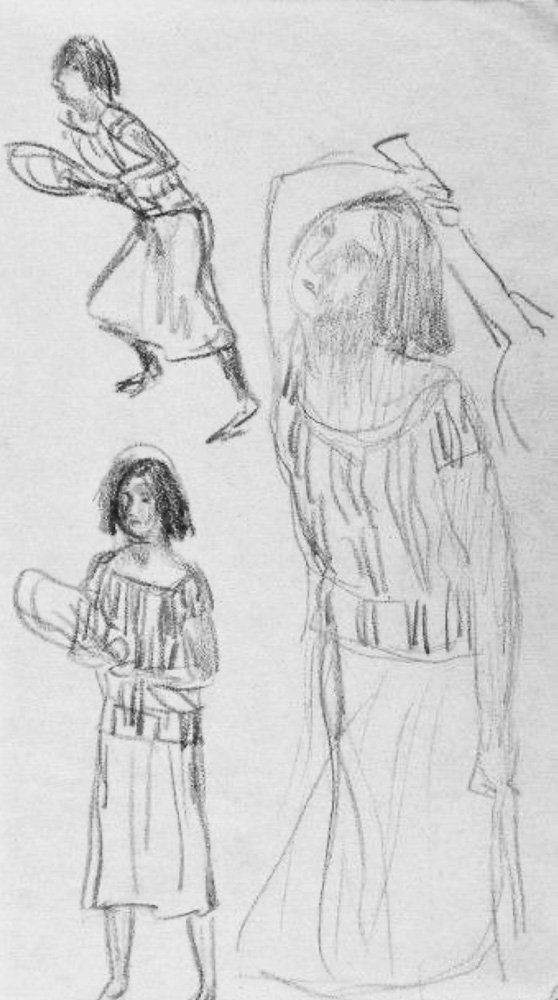
Hình 1: Quần vợt trong hội họa Pierre Bonnard — Tư thế đón bóng tự nhiên và gam màu ấm áp tái hiện vẻ đẹp tao nhã của môn thể thao quý tộc đầu thế kỷ 20.
of the splendor of the dining room table set with the hand-painted dinnerware were surely accurate. Besides the plate with the woman in a “petit pois” blouse and blue- bordered skirt at the Musée d’Orsay there is a second one in the d’Orsay. It depicts a woman in a feathered hat, a blouse with puffed sleeves, and a skirt with a pattern of squares. All but nine of the pieces Vuillard painted on commission, however, have disappeared (seven are in a private Swiss collection). Yet although so little remains, at least to the best of our knowledge, a remarkable chapter of history has opened to us by following events in the life of a French tennis champion. None other than Pierre Bonnard wrote to Vuillard about the Schopfer set of porcelain dishes, commending the project in a letter of September 17, 1895. After lamenting his inability to change his travel plans so that he might be in Paris for the opening of a Vuillard show on September 28, Bonnard writes, “I wish you every success with your coffer. What a lovely thing it is to decorate a
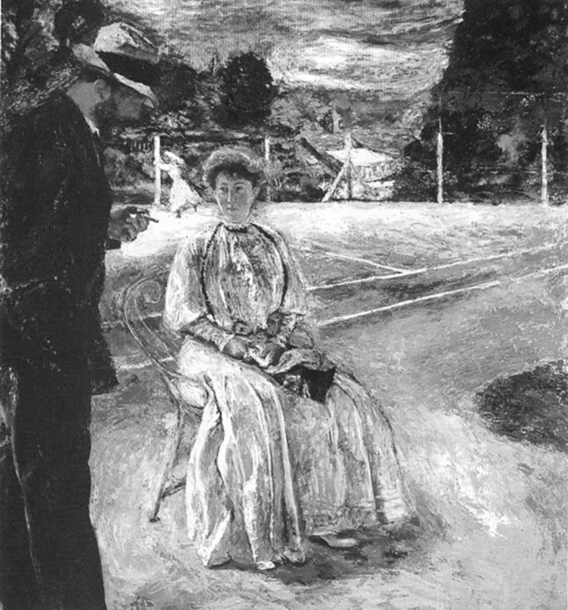
Hình 2: Khung cảnh sân quần vợt của Édouard Vuillard — Ánh nắng loang lổ trên mặt sân và những bóng người chuyển động nhẹ nhàng đầy thi vị.
service set. And with so many different pieces, there is no harm in getting started straight away.” 20 Vuillard’s sole examples of decorated objects, the dinner service is, besides these enchanting pieces in Paris, known mainly from photos that appeared in an article Schopfer wrote for the January–March 1897 issue of the Architectural Record. Even without the originals, we can imagine the plenitude and the excitement of the variations. Vuillard painted seven closely related pieces for each of the dozen different place settings. This meant that all of the diners had their own unique Vuillard series, with its design transformed as the soup bowl was replaced by the fish plate, the fish by the meat, and so on. Each set of china has a fashionable woman at the center. Bold, decorative scrollwork surrounds her, the ornamental lines working in harmony with the shape of the plate. To achieve the sumptuous effect, Vuillard used what are called “overglaze” paints. He would apply a light coat to the white porcelain,
Chương 3: Vụ Án Ly Kỳ Của Claude Anet (Jean Schopfer) Chapter 3: The Curious Case of Claude Anet
Việc khám phá Claude Anet của tôi bắt đầu từ một chiếc đĩa sứ mà họa sĩ Édouard Vuillard trang trí với hình ảnh một người phụ nữ đang nô đùa trong chiếc áo cánh trong mờ chấm bi và một chiếc váy trắng có viền xanh bồng bềnh. Hiện vật tinh tế này hiện đang được trưng bày tại Musée d'Orsay, Paris. Tấm biển, nhãn của nó cho chúng ta biết, được Jean Schopfer ủy quyền vào năm 1895, “connu comme Champion de tennis sous le nom de Claude Anet, à l’occasion de son mariage en 1895 avec Mrs Alice Nye Wetherbee.”
after which the piece was fired. Then he would add more paint and fire it again, with further painting and firing if he was not yet satisfied. He worked with a limited palette of oxides: cobalt blue, copper green, and iron, the latter a reddish brown. He left some passages unpainted or removed some of the paint after applying it, which accounts for the ethereal feeling of the results. The method was similar to the way Vuillard made lithographs. Now he showed substantial amounts of white porcelain in the same way that he left whole areas of white paper. The large passages of pure background add a feeling of weightlessness. The china has a breeziness that defies the solidity of the porcelain; the blue and green strokes of paint, feathery light, have the same elegance as the women’s clothing. Painting all that porcelain in a single month required intense concentration, and the dishes exude Vuillard’s energetic engagement. The goal had been to make functional, everyday objects as visually enticing as they could be, and Vuillard succeeded. The main motifs reveal how much Vuillard cared about what was fashionable. The women’s spotted sleeves, silk blouses, low bodices, large bows and ribbons, and feathered hats belong to what Schopfer calls “all the frivolous and charming side of feminine life of the present day.” As with Vuillard’s paintings, one could focus on the details or succumb to the overall impression.
Một nhà vô địch quần vợt sử dụng bút danh dựa trên một nhân vật trong tác phẩm của Jean-Jacques Rousseau, nhà triết học gốc Thụy Sĩ có tư duy đổi mới đã giúp khai sinh ra khái niệm Khai sáng ở Pháp? Một người hoạt bát đã yêu cầu Vuillard làm chiếc đĩa sứ trắng này và những chiếc đĩa sứ trắng khác được vẽ một cách lộng lẫy với hình ảnh hoạt hình về một phụ nữ trẻ sành điệu, vui tính? Chàng rể kết hôn với một người phụ nữ có cái tên có thể lấy từ tiểu thuyết của Edith Wharton?
following their marriage, in 1895, the Schopfers settled into a luxurious way of life, facilitated by Alice’s family money and Jean’s income from tennis. Alice sculpted and Jean wrote when he wasn’t on the court. Jean maintained his close connection with Vuillard; in 1896, he asked the artist for work to use as illustrations
Đây là người mà chúng tôi muốn biết thêm. Việc xác định một vật thể ở một trong những phòng trưng bày bên cạnh dễ bị bỏ qua trong bảo tàng Paris nổi tiếng này đã đảm bảo cho cuộc điều tra.
for La Revue Franco-Americaine, and in 1897 Schopfer and Vuillard went to Florence and Venice together with the painter Maurice Denis.
Một chút điều tra còn phát hiện ra nhiều điều bất ngờ hơn. Từ năm 1898 đến năm 1900, ngôi sao quần vợt đã đặt mua hai cặp tấm lớn của Vuillard. Năm 1908, Schopfer viết một cuốn sách tên là L'Amour, trong đó Bonnard sẽ đóng góp hình ảnh minh họa mười bốn năm sau, vào năm 1922. Năm 1910, người vợ thứ hai của ông đã được Bonnard vẽ chân dung; vào năm 1930 Bonnard thực hiện hai bức chân dung về con gái của Schopfer. Giữa những buổi luyện tập trên bãi cỏ tốt nhất và đất sét đỏ ở Paris, Schopfer đã xuất sắc trở thành một nhà phê bình nghệ thuật và sở hữu một phòng trưng bày. Sau khi đến St. Petersburg vào năm 1914, khi chiến tranh bắt đầu, ông đã viết bốn cuốn sách kể lại trực tiếp về Cách mạng Nga. Tự gọi mình là Claude Anet, ông đã viết những cuốn tiểu thuyết được chuyển thể thành phim mà chúng ta vẫn xem ngày nay và viết cuốn tiểu sử đầu tiên về ngôi sao quần vợt người Pháp Suzanne.
That March, the Schopfers moved into a deluxe apartment on the Avenue Victor Hugo, in the middle of Paris’s posh sixteenth arrondissement. The location could hardly have been better, in one of the most fashionable neighborhoods of the Right Bank and a short carriage ride or agreeable walk to the tennis courts in the Bois de Boulogne. The Schopfers lived well, enjoying trips to America, where, at the Metropolitan Museum, a short walk from his in-laws’ apartment, Jean gave lectures. He also enjoyed large audiences at Columbia, Yale, and Princeton. And he began to write books. At least eighteen titles would appear under one of his two names; the first, Voyage ideal en Italie, came out in 1899 and the second, Petite Villa, in 1901. Some were novels, but there were also historical chronicles, biographies, and books on travel. Jean would start going to Persia and often write about it, producing the titles Les Roses d’Ispahan: La Perse en automobile, à travers la Russie et le Caucase (1906), Feuilles Persanes (1924), and La Perse et l’esprit Persan (1925); he also translated Omar Khayyám. There would be four volumes about the Russian Revolution, a book about love, and novels of sufficient quality to be translated into English. In France, meanwhile, the Schopfers had access to such agreeable country houses that they did not yet need to have one of their own. The dashing tennis player and his pretty American wife commissioned Vuillard to paint a pair of canvases that evoked the paradise they enjoyed at the home of friends, a redbrick mansion near Dijon, surrounded by vineyards that produced some of the finest Burgundy grapes. The paintings—each 214 cm high and 161 cm wide—hung side by side. The left shows an idyllic scene in front of a dwelling, with its ivy-covered brick and its large windows shuttered against the midday heat. Bonnard, lean and bearded, his legs in wide-cut vertically striped trousers, is playing with a small dog; Marthe Méligny, whom he would soon marry, is reading a fashion magazine. The style of painting suggests a certain languor; Marthe in her flowered blouse and voluminous red skirt is not so much seated as hovering in front of a classic
Lenglen.13 Anh ta sử dụng hai cái tên khác nhau, nhưng anh ta có nhiều hơn hai danh tính riêng biệt, cố gắng phát triển mạnh mẽ ở hầu hết chúng.
outdoor bench. The impression of physical weightlessness—the sense that all is floating, yet firmly positioned in space—adds to the atmosphere of this canvas, in which air and matter are both convincing. Could life be more agreeable? And could it more successfully evoke the grace and lightness of a game of tennis well played? The characters are ethereal; sunlight has the effect of dematerializing everything; even the large and hefty trunk of an old tree is splashed in white so that it shimmers. The paintings are oxygenated. Relationships are in harmony. To fund a further sumptuous canvas by Vuillard, Schopfer had organized a tennis tournament in Divonne-les-Bains, a spa town in the French Jura, near Geneva, that was very much like the setting in his writing about his adolescence. How the tennis tournament proved lucrative is still a question, but it enabled him to pay for Vuillard’s masterpiece. It was presented at a party for the collectors’ friends on December 18, 1901. It was a cold evening when the guests first saw the additional depiction of summer in the capacious apartment on the Avenue
Nhà vô địch quần vợt Jean Schopfer lấy tên là Claude Anet, người ở thế kỷ 18 từng là người tình của người phụ nữ mà Jean Jacques đi cùng.
Victor Hugo. We can imagine the pleasure of drinking champagne in a well-appointed room where this idyllic scene gave them a feeling that all was well in the world. At that event, a week before Christmas, what a treat it was to feast on this large canvas where sunlight shimmers in lush foliage and in wildflowers blanketing the ground. The smiling exchange of the characters in the painting, and the style with which they live, make everything luxurious. Jean Schopfer is beaming in the middle of the background. He is the height of summer elegance with his straw boater, neatly tied black bow tie and crisp white shirt, and the hint of a white handkerchief in the breast pocket of his dark green suit jacket, probably of fine linen. In the foreground, Alice Schopfer, in a white dress, is the dominant figure. She is talking to Bonnard. Standing with his legs slightly splayed, almost as if he is about to begin dancing in his shiny black pumps, he wears a white suit and foulard
Rousseau mất trinh. Schopfer/Anet giả định nhiều danh tính khác nhau dưới cả hai cái tên.
and holds his straw hat jauntily as he looks at Alice. Their white clothing suggests that it is the tennis season.
Tay vợt quần vợt này là người có thẩm mỹ như thế nào? Một hậu quả: Năm 1892, ông là người giành chức vô địch Pháp lần thứ hai, giải đấu bắt đầu vào năm trước. Điều này là do anh đã giành được danh hiệu Giải Pháp mở rộng quốc tế đầu tiên, giải đấu sau này trở thành giải đấu được gọi là Roland Garros. Và loại nhà văn nào? Một người có cuốn tiểu thuyết Ariane, jeune fille russe sẽ trở thành nền tảng cho bộ phim Love in the Afternoon của Billy Wilder, trong đó Audrey Hepburn, trong vai con gái nghệ sĩ cello của một thám tử tư (Maurice Chevalier), người có chuyên môn khám phá các mối liên lạc liên quan đến vợ của những người vợ của các doanh nhân giàu có, đã ngăn cản một người đàn ông (Gary Cooper) khỏi bị một người chồng ghen tuông bắn chết. Để cứu anh ta, cô xông vào một căn phòng tại Ritz ở Paris, nơi âm nhạc của người Gypsy và các bữa ăn giao bóng tại phòng là một phần trong thói quen quyến rũ của Cooper. Cuốn tiểu thuyết lịch sử Mayerling của Anet đã tạo ra ba phiên bản điện ảnh và một vở ba lê.
John Russell summed up the world revealed here:
Càng điều tra cuộc đời của vận động viên ngôi sao/người bảo trợ nghệ thuật/tiểu thuyết gia này, chúng ta càng thấy anh ấy là một người đầy màu sắc, tài năng và có trái tim ấm áp. Jean Schopfer đẹp trai, giàu có (ít nhất là trong hầu hết thời gian), và dù làm gì thì ông cũng làm với vẻ khoa trương. Nhìn chung, anh ấy đã có một cuộc sống đầy quyến rũ. Anh ấy có thể viết với sức mạnh và sự tao nhã như khi đánh một quả bóng tennis. Tại sao anh ta lại lạc vào lịch sử? Tình cờ nhìn thấy nhãn của một chiếc đĩa sứ do Vuillard trang trí và biết được rằng người đặt làm nó không ai khác chính là một vận động viên quần vợt vô địch quả là một điều may mắn. Vì với sức sống phi thường của mình, Schopfer nổi lên như một người có sức lôi cuốn.
Everyone was free to talk or not . . . and clever men and pretty women were completely at ease with one another. Nobody had to show off, nobody deferred unduly to anyone else, no one was in a hurry to leave. 21 . . . If many of the paintings of the 1890s have unearthly overtones for us, it is because Vuillard’s sense of tone at that time was uniquely persuasive. A sense of celestial security comes over as he re- creates the world, touch by touch, in such a way that everything in it harmonizes with every other thing. What in other hands would be a
jean schopfer sinh ra ở Morges, vùng nói tiếng Pháp của Thụy Sĩ, vào năm 1868. Gia đình ông, chủ yếu là người Pháp theo đạo Tin lành, đã bị lưu đày ở đó hai thế kỷ. Cha ông là một chủ ngân hàng giàu có. Mẹ của ông, Emily Barton, người Anh, là vợ của một chủ ngân hàng tiêu biểu của thời đại: Bà chủ trì một loại thẩm mỹ viện, trong đó khách mời có Jules Renard, một nhà tự nhiên học người Pháp nổi tiếng với tư cách là một nhà văn, nhà viết kịch và các nhà lãnh đạo văn hóa khác. Tuổi trẻ của Schopfer đã trải qua trong những khung cảnh sang trọng, với những bậc cha mẹ tận tụy, rất nhiều môn quần vợt và có rất nhiều cơ hội để những người đàn ông trẻ tuổi và phụ nữ lớn tuổi không thể khuất phục trước sự hấp dẫn của nhau.
jungle of discordant patterns comes out as paradise on earth: the world is at one with itself. . . . Space does not retreat before us; we can caress it. 22 Not everyone had these impressions, though. In 1905, André Gide, in an article about Vuillard in the Gazette des Beaux Arts, wrote about “the discreet melancholy which pervades his work. Its dress is that of everyday. It is tender and caressing; and if it were not for the mastery that already marks it, I should call it timid. For all his success, I can sense in Vuillard the charm of anxiety and doubt.” 23
Trong thời niên thiếu năm 1909, cuốn tiểu thuyết đầu tay của ông, Schopfer, lần đầu tiên sử dụng tên Claude Anet, đã mô tả các khía cạnh của tuổi thơ đặc ân này. Anh và mẹ anh, chỉ có hai người trong số họ đang đi nghỉ sang trọng ở Oedipal, cùng nhau ở trong một khách sạn lớn. Anet nhảy múa và chơi tennis một cách phóng khoáng.
Every character in these sumptuous scenes could be part of the Schopfers’ orbit.
"Khi ở với mẹ, tôi liên tục nhớ sự thoải mái và yên tĩnh thú vị ở nhà và không ngừng phàn nàn về việc đến và đi trong khách sạn lớn nơi chúng tôi sống, nơi việc ở một mình là điều hoàn toàn không thể. Tuy nhiên, có điều gì đó quyến rũ độc đáo khi cọ xát khuỷu tay và trao đổi ánh mắt với rất nhiều người lạ, điều gì đó hấp dẫn về lối sống chung, xen kẽ giữa niềm vui và hoạt động của chúng tôi, về những bữa ăn ở nhà hàng, khiêu vũ vào buổi tối... Tôi đã tuyên bố rằng tôi muốn sống như một người man rợ. Tôi đã không ở X . . hơn 48 giờ và tôi đã tham gia mọi trận đấu quần vợt trên sân cỏ và khiêu vũ mỗi đêm.
If some of us feel that the world immortalized by Vuillard at Jean Schopfer’s behest represents the peak of moneyed leisure, with the sun shining and people seeming to have not a care, Gide considered their hold on life somewhat tenuous. It may be possible to see the paintings firsthand: They are now owned by the National Gallery, in London. They are not always on view, but when they are, they
Không lâu sau, người nói nhận ra mình bị ám ảnh bởi một người phụ nữ lớn tuổi, La Comtesse de Francheret, người đã được anh ta biết đến từ các trang xã hội. Tự cho mình là “một tỉnh trẻ”, anh cảm thấy cô thuộc tầng lớp xã hội thượng lưu. Cái tên quý tộc của cô là một trong nhiều điều về cô khiến anh phấn khích.
are ravishing. To most of us, they are without melancholy or doubt. The paintings commissioned by a self-assured tennis player exude only confidence, and the dexterity and technical skills necessary for the expression of joy.
Chính trên sân tennis mà mối quan hệ của họ tiến triển, từ quan sát từ xa đến trao đổi ánh mắt. Trong trí tưởng tượng của người đọc, người đàn ông này là một tay vợt mạnh mẽ. Năng lực của anh ấy thể hiện qua giọng viết của anh ấy; không có khả năng đây là một tay vợt chỉ giật bóng qua lưới. Trên thực tế, anh ấy đủ giỏi để thu hút khán giả dọc theo sân. Tia lửa lãng mạn: "Đôi ba lần, tôi cảm nhận được ánh mắt xuyên thấu của cô ấy nhìn mình. Buổi chiều, cô ấy hay ghé qua sân quần vợt nơi tôi chơi. Lúc nào cũng có một đám đông, và cô ấy giữ khoảng cách. Thế nhưng, mỗi khi tôi ngước lên, hiếm khi tôi không bắt gặp cô ấy đang nhìn lại mình."15
in January 1903, the Schopfers ended their marriage. There was no scandal; it was simply a case of differences “relative to their civil interests,” according to the divorce papers. Alice moved back to America, heading to California with the couple’s young daughter. Before she left Paris, she gave or sold the first two Vuillard paintings to the brothers Emmanuel and Antoine Bibesco, Romanian princes. Jean got to keep the large The Luncheon at Vasouy. He was entitled to it in the divorce settlement by organizing a tennis tournament in Divonne-Les-Bains, which proved to be a profitable venture. A gay divorcée with a full social life, Alice married the Count Festetics de Tolna in February 1908. In about 1904, Jean Schopfer was—albeit briefly—expelled from paradise. His father died and left large debts. Suddenly Schopfer was close to broke. He wrote to Vuillard because he was moving to a smaller apartment and wanted the artist to store the paintings somewhere safe. At least he did not have to sell them, but he could no longer afford a big enough living space to have them on view. In those days, even the greatest tennis players had no income from the sport unless they gave lessons; there was no prize money from tournaments back then. Without funding from either his parents or his wife, he had to find another income. Soon enough, the first French national tennis champion came back to life—with a new name. This was when, with the publication of Les Bergeries, he became Claude Anet. It was a provocative sobriquet, both erudite and mischievous to those in the know. The original Claude Anet was the lover of La Baronne de Warens. Madame Warens, twelve years older than Jean-Jacques Rousseau, was the person who gave Rousseau his sexual education. By then Anet, a serious young man who was midway between Rousseau and Madame de Warens in age and was her amanuensis, had for some time also been her sexual intimate.
Một vài ngày trôi qua. Chàng trai muốn tiếp cận nữ bá tước nhưng không biết làm thế nào. Sau đó, anh ta sẽ gặp may mắn. Một ngày nọ, khi hoàng hôn buông xuống, khi anh vừa rời sân tennis và đi tắm, Madame de Francheret đánh rơi chiếc khăn quàng cổ của mình. Anh ấy đưa nó cho cô ấy và họ bắt đầu trò chuyện như thể họ là bạn cũ.
Schopfer had chosen to name himself after the least-known member of a celebrated ménage à trois. In his new existence, in addition to enjoying success as a novelist and continuing to prove his prowess on the tennis court even if no longer engaging in national competitions, he opened a gallery of Persian art. After taking an apartment at 63, rue de Chaillot, in the chic neighborhood between Trocadéro and the Place des États-Unis, he retrieved Luncheon at Vasouy from Vuillard and installed it over a leather sofa that was almost the same green as the foliage in the Vuillard canvases. On an upswing, Schopfer/Anet remarried, again advantageously. He and his second wife moved to the Left Bank, to 109, rue du Bac. In that apartment in a bustling neighborhood in the Faubourg Saint-Germain, he had a wall built between the dining and living rooms just for these two paintings. Plates from Vuillard’s dinner service hung on a wall in the dining room, even if he had commissioned them for a different wife. Happy to be back in a grand apartment, he installed panels by Xavier Roussel, a Bonnard nude, and a portrait Bonnard made of his current wife. In that image of the woman who was referred to as both Clarisse Schopfer and Mrs. Claude Anet, Bonnard rendered a stolid person soberly. It is not as spirited as were, for example, Bonnard’s many portraits of Misia Natanson. Clarisse is wearing a single strand of pearls, which, along with her filmy white dress, is one of the few sources of light in an otherwise dark canvas. Misia Sert wrote in her diary about Vuillard’s response to the painting. Visiting the Schopfers, Vuillard said that “seeing his own work alongside Roussel’s and Bonnard’s, he was struck by his own ignorance of drawing.” 24 It was a remarkable tribute from an artist discussing the work of his closest colleague.
Chi tiết trên đường đi tắm rất rực rỡ, tinh tế khuyến khích người đọc hình dung một chàng trai trẻ lực lưỡng khỏa thân, đứng cao khi nước đổ xuống cơ thể.
again using the name Claude Anet, our subject’s firsthand account of the Russian Revolution is still a historical resource. In 1917, he published Through the Russian Revolution: Notes of an Eye-witness from 12th March–30th May. He wrote it in what was then called Petrograd (formerly St. Petersburg, eventually Leningrad, and now St. Petersburg again) as daily dispatches he sent to Paris for publication in a newspaper; the book came out in an English translation later that year. For now, he has absented himself from
Mối quan hệ giữa anh hùng thiếu niên vạm vỡ và nữ bá tước quyến rũ ngày càng phát triển. Họ gặp nhau hàng ngày; cô ấy thường nhận xét về việc anh ấy còn trẻ như thế nào. Rồi một buổi chiều, anh đến thăm cô tại căn hộ của cô. Một lần nữa, cô ấy nói với anh ấy rằng anh ấy còn trẻ như thế nào và nói thêm "Thật đáng yêu!" Anh cảm nhận được hơi ấm của hơi thở cô; cô ấy quàng tay qua cổ anh ấy; và sau đó là một đoạn văn chỉ có một dòng: “Khi tôi rời khỏi phòng cô ấy một giờ sau, tôi đã trở thành một người đàn ông.”16
the tennis court, immersing himself in difficult circumstances abroad. Anet describes Cossacks attacking crowds. He had to use the same craft with which he played tennis to manage to send telegraphs to Paris. He provides an hour-by-hour account in which Rasputin’s appointees face death, governments fall, and the tsar’s whereabouts are closely monitored. He uses chutzpah to negotiate the transmission of his dispatches: “I had to explain . . . the necessity of allowing me to telegraph to my journal. The German wireless, I said, was announcing the Revolution to the whole world. Would the friends of Russia succeed in making their voices heard in France?” 25 The empress and heir to the throne are imprisoned and it is declared that the emperor will abdicate. The news changes by the day. A different government is established. Kerensky makes “superhuman efforts to bring about an agreement” 26 between warring factions as “the New Russia” emerges. 27 Schopfer takes us to a moment “at 4:20 a.m. on 14 March” 28 when the emperor’s Imperial train is stopped in its tracks. Schopfer is on the scene for all of it, providing a vivid account of Nicholas II at this crucial moment. “The Emperor, always so calm, master of himself to such a degree that all the witnesses who saw him during the last days of his reign and in the midst of his crisis, declared that he appeared as if stricken by a kind of stupor and insensible to the frightful blows of destiny, made an angry gesture, the only one that was noticed in the whole course of the Revolution.” 29 Schopfer understands and evokes the nuances of human behavior as he had learned
Đó là một cách tao nhã để người đọc hiểu rằng cậu thiếu niên lực lưỡng này đã mất trinh. Tiếp theo là những câu chuyện dài hơn về mối quan hệ của họ; chúng không sinh động hơn thế, nhưng cũng không nhất thiết phải như vậy, bởi vì Anet biết cách gợi lên cảm giác ngây ngất mà không cần mô tả. Chàng trai trẻ giải thích khá đơn giản rằng anh ta đến dành những buổi chiều trong căn hộ của Madame de Francheret, chỉ chơi quần vợt vào cuối ngày, và ngay cả khi đó anh ta vẫn thấy mình tập luyện với tâm trạng uể oải. Những thú vui khác chiếm lấy cuộc đời chàng trai trẻ, nhưng chúng ta vẫn thấy anh là người khỏe mạnh, nhanh nhẹn và chu đáo. Cách anh ấy chơi tennis cũng chính là cách anh ấy sống: đầy nhiệt huyết.
them on the tennis court, where the need to control a show of emotions is of paramount importance.
khi jean Schopfer mười tám tuổi, cha mẹ anh gửi anh đến Paris để học văn học tại Sorbonne. Không kém phần quan tâm đến nghệ thuật thị giác, anh cũng nhanh chóng đăng ký vào École du Louvre. Năm 1897, ông lấy được bằng; luận án của ông, về các bản thảo thời Trung cổ, hay đến mức nó được xuất bản ba năm sau đó.
When
Trong khi học về lịch sử văn học và nghệ thuật, Schopfer đã luyện tập môn quần vợt của mình—một cách chăm chỉ và siêng năng. Có lẽ có nhiều phụ nữ như Madame de Francheret hơn trong cuộc đời anh, nhưng giờ đây anh coi thể thao là ưu tiên hàng đầu. Năm 1892, khi trở thành nhà vô địch nước Pháp khi giành chiến thắng trong trận chung kết đơn của Giải vô địch Pháp, Schopfer 24 tuổi đã đánh bại một tay vợt người Mỹ, Francis Louis Fassett. Hơn Schopfer chín tuổi, Fassett, sinh ra ở Philadelphia nhưng học ở Lausanne, đã thi đấu vòng quanh quốc tế; Giống như Schopfer, anh ta là một tay nghiệp dư có năng khiếu cao mà hoàn cảnh thoải mái của gia đình đã giúp anh ta có thể làm việc với trò chơi của mình mà không cần phải kiếm sống. Trong môn thể thao này, chủ yếu là dành cho những quý ông thuộc tầng lớp thượng lưu, Schopfer một lần nữa lọt vào trận chung kết vào năm 1893. Lần này ông thua—trước một người Pháp, Laurent Riboulet. Riboulet, 23 tuổi, sinh ra ở Lille, là một vận động viên quý ông khác đã đạt được mức độ xuất sắc. Mặc dù không bao giờ giành được chức vô địch nữa nhưng anh ấy đã lọt vào trận chung kết Giải vô địch Pháp thêm hai lần nữa. Anh ấy là một trong nhiều nhân vật trong thế giới của Schopfer từng là một ngôi sao nhỏ và bị lãng quên ngày nay.
he traveled to Russia, Schopfer resembled a high-ranking diplomat.
Bên cạnh việc luyện tập các cú thuận tay và trái tay cũng như tham gia các lớp học, Schopfer còn dành thời gian tại Lycée Condorcet, nơi gặp gỡ của một số nghệ sĩ và nhà văn ưa mạo hiểm nhất thời đại. Nhà viết kịch Pierre Veber, một người quen ở Condorcet, người đã gọi Schopfer là “un garçon merveilleux,”17 đã giới thiệu ông với Vuillard và Thadée Natanson. Natanson, người cùng tuổi với Schopfer, và anh trai Alexandre đã thành lập vào năm 1891, La Revue Blanche, một tạp chí tiên phong dành cho nghệ thuật, âm nhạc và văn học. Schopfer ngay lập tức bắt đầu viết bài cho ấn phẩm chuyên về nghệ thuật trang trí.
Schopfer penned his words with the same courage with which he rushed net. He writes with wit and confidence of Nicholas II as a reformer and discusses issues ranging from indigenous alcoholism to the “inexhaustible kindness of the Russian heart.” 30 He provides a short but gripping portrait of Kerensky: “He is quite a young man, with a long, bloodless face, and eyes extraordinary blue and clear, which have a habit of blinking. His features
La Revue Blanche, nhà phê bình nghệ thuật John Russell viết, “trong 11 năm là tạp chí định kỳ hay nhất thuộc loại này từng được xuất bản.”18 Các bài báo của Schopfer xuất hiện đều đặn trên đó ngay từ đầu. Trong khi trau dồi kỹ năng chơi quần vợt để có thể trở thành nhà vô địch quốc gia Pháp, anh ấy đã dành nhiều thời gian làm việc với giới trí thức. Các đồng nghiệp của anh ấy tại tạp chí khác rất nhiều so với các vận động viên đồng nghiệp của anh ấy. Trên cùng những trang mà Schopfer thường xuyên xuất bản các bài viết về nghệ thuật và thiết kế, Debussy xem lại buổi biểu diễn của Dàn nhạc Giao hưởng Berlin ở Paris, bài thơ “Tennyson” của Mallarmé lần đầu tiên xuất hiện, Tolstoy và Nietzsche được in dưới dạng dịch thuật, chàng trai trẻ André Gide đóng góp một câu chuyện, và nghệ sĩ tương lai học Filippo Marinetti đưa tin từ La Scala. Phạm vi chủ đề vượt xa nghệ thuật: Có những tác phẩm về chủ nghĩa bài Do Thái ở Trung Âu, rèn luyện sức bền cho người đi xe đạp và ý nghĩa ngày sinh nhật của Bismarck. Léon Blum, người sau này trở thành thủ tướng Pháp, là người đóng góp thường xuyên, còn Vuillard và Bonnard cung cấp hình ảnh cho trang bìa.
bear the marks of unutterable fatigue.” 31 He interviews Kerensky about the abolition of the death penalty (which Kerensky had just achieved), the future of the Imperial family, and women’s voting rights. Jean Schopfer was as a writer the way he was when winning at Roland Garros: energetic, confident, and bold. In 1920, again under the name Claude Anet, our subject wrote Ariane, jeune fille russe. This was the novel that become the movie Love in the Afternoon: the name of the book in its English translation. Anet set it in Russia and gave his characters names that could be in a play by Chekhov play or a Turgenev novel; Ariane Nicolaevna and Léon Davidovich are good examples. Even if he was back in Paris with his Bonnards and his Vuillards, the writer was still in the thrall of “the Russian soul”—at least on the surface. It is not a great book. Its characters lack depth, and how they felt about their quirky behavior is anybody’s guess. But the plot has twists and a lighthearted amorality that give it a certain allure and explain why it became the basis of more than one movie. The lovely seventeen-year-old Ariane Nicolaevna, pursued by countless young men, all of whom she resists, falls for an older playboy, Constantin Michel. To taunt him, she invents a slew of earlier lovers. It is known that Constantin Michel has had no shortage of ladies in his past, and Ariane Nicolaevna hopes that her amorous history will incite him to prove himself in competition with those other men. But Ariane’s ploy fails. Constantin has a double standard and leaves Ariane when he believes her when she says she was not a virgin when they met. Even her confession, that her previous love life was imaginary, fails to sway him. He despises her; they are finished. That is, at least, until the closing scene, which is quite a melodrama. Constantin Michel is about to leave Ariane Nicolaevna forever. She has accompanied him to the train station. We hear three bells ringing and then a whistle. “The train quivered with pain. Ariane was fighting not to faint.” 32 Constantin Michel is on the steps of the train, Ariana on the platform.
Schopfer tự coi mình là một người có trí tuệ ngang hàng nhưng là người vượt trội về mặt xã hội so với các đồng nghiệp tại tạp chí. Những người bạn thân của anh ấy là Thadée và Misia Natanson— sau khi kết hôn với họa sĩ José-Marie Sert, cô ấy sẽ trở nên nổi tiếng với tư cách là bạn của Serge Diaghilev và Coco Chanel— đủ thời trang đối với hầu hết mọi người, nhưng dường như không phải Schopfer. Trong một lần, khi tất cả những người khác ở Natansons đều mặc “cà vạt đen”, Schopfer xuất hiện trong trang phục đuôi dài. Anh ấy tự hào giải thích rằng anh ấy sẽ đến thăm Công chúa Morat vào cuối buổi tối hôm đó, đồng thời nói thêm rằng tất nhiên những người còn lại trong số họ không bao giờ có thể mong đợi được thưởng thức cùng một món khai vị. Sự trịch thượng của ông đã trở thành một phần danh tiếng của ông.
“Suddenly, hooking himself by one hand on the rail of the coach, he leaned forward, encircled the girl with his other arm, lifted her to him, carried her in the compartment. He slammed the door and fell with her on the seat. . . . And he covered her face with silent kisses. 33 For a book published in 1920, the happy ending for characters whose actions could be considered sinful, was scandalous. The adulterous Anna in Anna Karenina, after all, was forced to commit suicide. The code of romantic behavior did not condone relationships with such a disparity of age and in which one partner had multiple lovers and the other was a liar. Traditionally, characters who acted like Ariane Nicolaevna and Constantin Michel were supposed to end up tragically. Claude Anet had yet again taken risks. Perhaps because of its radical permissiveness, the story had a following. In his 1930 novel, The Eye, Vladimir Nabokov writes that two of his female characters are reading Ariane, jeune fille russe; it is his means of showing their attraction to scandal. In 1931, a German movie based
Trong khi đó, Schopfer vun đắp mối quan hệ với một số nghệ sĩ trẻ người Pháp vĩ đại nhất thời kỳ đó. Mối quan hệ với Vuillard, người có cuộc triển lãm cá nhân đầu tiên vào năm 1891, tại văn phòng của La Revue Blanche, bắt đầu phát triển, một phần nhờ Thadée Natanson, người thường viết thư cho Vuillard trong đó ông đề cập đến Schopfer. Natanson thường xuyên đến salon mà Schopfer và anh trai anh, Louis, một nghệ sĩ piano đã đến Paris cùng anh, có trong căn hộ của họ trên Quai Voltaire, và Natanson thích sự đồng hành của Schopfer khi đi xem các buổi biểu diễn nghệ thuật. Vào tháng 4 năm 1895, Natanson và Schopfer đến tham dự một cuộc triển lãm các thiết kế cửa sổ được thực hiện ở Mỹ bằng kính màu của Louis Comfort Tiffany. Nghiên cứu đầy mê hoặc của Vuillard về cây hạt dẻ trong tuyết, nhằm mục đích làm họa tiết cho cửa sổ, đã truyền cảm hứng cho Schopfer đặt câu hỏi
on Ariane was made, with the great actress Elisabeth Bergner in the title role. It was directed by Paul Czinner, who followed it with versions in French and English. The Legion of Decency in each country condemned it, making it more exciting to a public that clamored to see it. In the 1950s, Billy Wilder decided to adapt the story—the new title would be Love in the Afternoon—and set it in the heart of Paris rather than in a Russian village. With I. A. L. Diamond, the same writer with whom he would work on Some Like It Hot and The Apartment, Wilder revamped the plot. Ariane is now the daughter of a widowed detective who specializes in investigating adulterous affairs. A cellist, she overhears an outraged husband who says he will kill his wife’s lover once the detective identifies the scoundrel for him. Ariane leaves a concert rehearsal to go to the lover’s suite at the Ritz to warn him, and when the husband storms the room, gun in hand, she pretends to be the roué’s mistress. Seeing Ariane instead of his wife, he concludes that his wife is innocent, that it was a case of mistaken identity. Thus, the adulterous
Vuillard nhận hoa hồng cho dịch vụ bàn sứ. Ý tưởng về một dự án sẽ mang lại cho anh một vai trò trong phong trào nghệ thuật trang trí đang phát triển đã thu hút Vuillard, và đối với Schopfer, người mới đính hôn, đó là món quà cưới lý tưởng cho cô dâu tương lai của anh.
wife (and the lover) is saved by a young woman’s intervention, and all is fine—except that the young woman falls for the playboy. The performances by Maurice Chevalier as Ariane’s father, Audrey Hepburn as Ariane, and Gary Cooper as the wealthy playboy make it a superb movie. The American public, however, objected to its morals, and the film was deemed indecent. It has amazing dialogue—Hepburn: “I’m too thin and my ears stick out and my teeth are crooked and my neck’s much too long”; Cooper: “Maybe so, but I love the way it all hangs together”—but the lovers’ age difference and the behavior the story condoned made Love in the Afternoon unacceptable. Today, however, it is a cinema classic, although few people realize that its author was the French national tennis champion.
buổi lễ dự kiến diễn ra tại Thành phố New York vào ngày 23 tháng 10 năm 1895, tại Nhà thờ Thiên đường nghỉ ngơi trên Đại lộ số 5 phía trên. Cha của Alice Nye Weatherbee, Gardner Weatherbee, sở hữu những khách sạn sang trọng; nó chắc chắn là một sự kiện đầy phong cách. Bộ đồ ăn tối do Vuillard vẽ tay sẽ là một món quà phù hợp với sự hoành tráng của dịp này. Theo The New York Times, Alice là “một phụ nữ trẻ hấp dẫn khác thường và có thành tích cao”. Là một nhà điêu khắc, cô ấy cũng đấu kiếm và cưỡi ngựa. Một món quà mang tính nghệ thuật của Vuillard và élan chắc chắn sẽ làm hài lòng cô ấy. Và điều thú vị hơn nữa là chủ đề chính của Vuillard là những người phụ nữ đương đại trong trang phục sành điệu. Mỗi lần nhắc đến Alice Weatherbee trên báo chí đều thu hút sự chú ý đến vẻ ngoài xinh đẹp của cô ấy, và cô ấy thích nhìn thấy những phụ nữ có cùng đặc điểm mô tả.
having had Bonnard paint his wife in 1909, Anet got the artist to make a portrait of his only daughter in 1930. Madeleine Leila Schopfer, born in 1912, was so good at tennis that in 1932 she was ranked No. 6 in France. Not only did she carry on her father’s legacy in the sport, but she also maintained his tradition of different names, eventually calling herself Leila Claude Anet. Bonnard did two versions of her portrait, one close up and absent details of the setting, the other, an oil on canvas more than four feet high, appearing to be almost a classic society portrait. But the angles, the sumptuous colors, the mixture of abstraction and verisimilitude, all give it the luminosity and visual wealth unique to Bonnard’s work. Although not dressed for tennis, Leila Claude’s sweater and skirt, bright white, conjure the sport. So does
Ban đầu, các nhân vật trong buổi giao bóng bữa tối của Vuillard rất khó nhận ra, nhưng sau đó họ và môi trường xung quanh trở nên quyến rũ.
the sunlight bathing her face. The sitter’s power and elegance in the sunshine endow her with the qualities of a good tennis match.
Vào tháng 5 năm 1895, Schopfer yêu cầu Vuillard cho anh ta “một hoặc hai giờ mỗi ngày nếu phù hợp với bạn”19 để thảo luận về dịch vụ đồ sứ. Sau đó, Schopfer cung cấp cho Vuillard thứ được gọi là “khoảng trống”—đồ sứ không tráng men sẵn sàng để trang trí. Anh chọn mẫu thiệp cưới tiêu chuẩn bằng sứ trắng Limoges. Được gọi là Dịch vụ Pompadour, nó có sẵn trong một cửa hàng lớn trên đường Drouot. Schopfer đã mua dịch vụ bữa tối và món tráng miệng cho 12 người: tức là, mỗi người, một suất ăn bảy món với một bát súp, năm đĩa tròn có kích cỡ khác nhau đựng cá, rau, thịt, khoai tây và salad, và một “đĩa coupe” lõm. Ngoài ra còn có tám phần ăn.
claude anet wrote eighteen books in all. They ranged from volumes about Persia to one provocatively called L’Amour en Russie. Mayerling, the last book Anet wrote before he died, age sixty-three, in 1934, is generally considered his best. It is a fictionalized biography of Archduke Rodolphe, slated to lead the Austro-Hungarian monarchy. Like all of Anet’s other love stories, it has a complex plot. Rodolphe falls in love with a young baroness, Marie Vetsura, deemed the most beautiful woman in Vienna. Rodolphe’s parents have a tragic, loveless marriage, and Rodolphe is expected to follow their example. Rather than marrying his baroness, he is forced, in order to uphold the Hapsburg dynasty, to wed Princess Stéphanie of Belgium, whom he loathes. Nontheless, for eight months—from May 1888 to January 1889—the illicit union of Rodolphe and Marie Vetsura, at age sixteen, is in some ways idyllic. But then the conclusion of their romance is a heartbreaking mutual suicide in the woods near the Royal Hunting pavilion. Anet poses this question: “Is death really the only refuge for unhappy lovers, but for eternity?” There would be three film versions of Mayerling. In 1936, Anatole Litvak directed the first, with Charles Boyer as the Archduke and Danielle Darrieux as the baroness. He directed a television version, in 1957, with Mel Ferrer and Audrey Hepburn. A third, written and directed by Terence Young in 1968, stars Omar Sharif, Catherine Deneuve, James Mason, and Ava Gardner. Sharif ’s good looks do not compensate for the ridiculousness of him cavorting in his red bow tie, but as a period piece, it is entertaining. The best was yet to come. In 1978, Kenneth MacMillan choreographed Mayerling for the Royal Ballet. Performed to music by Franz Liszt, it premiered at the Royal Opera House. It is one of MacMillan’s greatest works, and would eventually be performed by, among other companies, the Houston Ballet, the Stuttgart Ballet, and the Paris Opera Ballet. In October 1992, Kenneth MacMillan died of a heart attack backstage at Covent Garden at a revival of Mayerling. But his ballet lives on, and it is to dance what Bonnard
Con gái của Schopfer từ cuộc hôn nhân thứ hai của ông đã nhớ được 144 mảnh ghép, điều này chắc chắn là một sự phóng đại của thực tế; việc sắp xếp địa điểm và phần giao bóng sẽ lên tới dưới một trăm. Tuy nhiên, ký ức của cô về vẻ đẹp lộng lẫy của bộ bàn ăn trong phòng ăn với bộ đồ ăn được vẽ bằng tay chắc chắn là chính xác.
and Vuillard are to painting: a testament to excellence, imagination, and lightness. The legacy of France’s first national tennis champion is a treasure chest. His larger-than-large personality infused everything he did, on and off the court. While he continued to play tennis at a high level, he showed the courage and panache of his performance holding a racquet when it was a pen in his hand. His confidence and bravura made him a perpetual winner.
Ngoài chiếc đĩa có hình người phụ nữ mặc áo cánh "petit pois" và váy viền xanh ở Musée d'Orsay, còn có chiếc đĩa thứ hai ở d'Orsay. Nó mô tả một người phụ nữ đội chiếc mũ lông vũ, áo cánh có tay phồng và một chiếc váy có hoa văn hình vuông. Tuy nhiên, tất cả ngoại trừ chín tác phẩm mà Vuillard vẽ theo yêu cầu đều đã biến mất (bảy tác phẩm nằm trong bộ sưu tập tư nhân của Thụy Sĩ). Tuy nhiên, mặc dù còn rất ít, ít nhất là theo hiểu biết tốt nhất của chúng tôi, một chương lịch sử đáng chú ý đã mở ra cho chúng ta bằng cách theo dõi những sự kiện trong cuộc đời của một nhà vô địch quần vợt người Pháp. Không ai khác ngoài Pierre Bonnard đã viết cho Vuillard về bộ đĩa sứ Schopfer, khen ngợi dự án trong một lá thư ngày 17 tháng 9 năm 1895. Sau khi than thở về việc không thể thay đổi kế hoạch du lịch của mình để có thể đến Paris dự khai mạc buổi trình diễn Vuillard vào ngày 28 tháng 9, Bonnard viết: “Tôi chúc bạn mọi thành công với chiếc rương của mình. Thật là một điều đáng yêu khi trang trí một bộ đồ ăn. Và với rất nhiều phần khác nhau, không có hại gì khi bắt đầu
alice
Là ví dụ duy nhất của Vuillard về các đồ vật được trang trí, dịch vụ ăn tối, ngoài những món đồ đầy mê hoặc này ở Paris, còn được biết đến chủ yếu nhờ những bức ảnh xuất hiện trong một bài báo mà Schopfer viết cho tạp chí Architectural Record số tháng 1 đến tháng 3 năm 1897. Ngay cả khi không có bản gốc, chúng ta vẫn có thể tưởng tượng được sự phong phú và hứng thú của các biến thể. Vuillard đã vẽ bảy tác phẩm có liên quan chặt chẽ với nhau cho mỗi tác phẩm trong số hàng chục bối cảnh địa điểm khác nhau. Điều này có nghĩa là tất cả các thực khách đều có dòng Vuillard độc đáo của riêng mình, với thiết kế được thay đổi khi bát súp được thay thế bằng đĩa cá, cá bằng thịt, v.v.
marble
Mỗi bộ đồ sứ đều có một người phụ nữ thời trang ở trung tâm. Những đường cuộn trang trí táo bạo bao quanh cô, những đường nét trang trí hài hòa với hình dạng của chiếc đĩa. Để đạt được hiệu ứng xa hoa, Vuillard đã sử dụng thứ gọi là sơn “tráng men”. Anh ta sẽ phủ một lớp sơn nhẹ lên đồ sứ trắng, sau đó đồ sứ sẽ được nung. Sau đó, anh ta sẽ đổ thêm sơn và nung lại, sơn thêm và nung nếu chưa hài lòng. Ông đã làm việc với một bảng oxit hạn chế: xanh coban, xanh đồng và sắt, sau này có màu nâu đỏ. Anh ấy để lại một số đoạn không sơn hoặc loại bỏ một số sơn sau khi sơn, điều này tạo nên cảm giác thanh tao cho kết quả. Phương pháp này tương tự như cách Vuillard tạo ra các bản in thạch bản. Bây giờ anh ấy trưng bày một lượng lớn đồ sứ trắng giống như cách anh ấy để lại toàn bộ diện tích giấy trắng. Những đoạn văn lớn có nền thuần khiết tạo thêm cảm giác không trọng lượng. Đồ sứ có vẻ bồng bềnh thách thức độ rắn chắc của đồ sứ; những nét vẽ màu xanh lam và xanh lục, nhẹ nhàng như lông vũ, có vẻ sang trọng không kém gì trang phục của phụ nữ.
It was thanks to Alice Marble that Althea Gibson was allowed to play in the US Open.
Việc vẽ tất cả đồ sứ đó chỉ trong một tháng đòi hỏi sự tập trung cao độ và các món ăn toát lên sự gắn kết tràn đầy năng lượng của Vuillard. Mục tiêu là tạo ra những vật dụng hàng ngày có chức năng hấp dẫn nhất có thể và Vuillard đã thành công.
rom the start, she had the advantage of her name. Alice Marble would live up to it: strong, solid, polished, and able to roll with the punches. She was beautiful and her character was noble. In 1947, when Althea Gibson, a talented Black athlete, was kept out of the US National Tennis Championships at Forest Hills, Alice Marble was the doyenne of women’s tennis. And it was Marble’s activism that changed history. What happened on the tennis courts and in the struggle for everyone to be allowed onto them is more proof that tennis is not only about the game but also about some of the most
Các họa tiết chính cho thấy Vuillard quan tâm đến thời trang đến mức nào. Tay áo đốm, áo lụa, vạt áo thấp, nơ và ruy băng lớn, mũ lông vũ của phụ nữ thuộc về những gì Schopfer gọi là “tất cả khía cạnh phù phiếm và quyến rũ của cuộc sống phụ nữ ngày nay”. Giống như tranh của Vuillard, người ta có thể tập trung vào các chi tiết hoặc không chú ý đến ấn tượng tổng thể.
central issues of human existence. Marble had elegance in her behavior as well as her appearance: beauty inside and out. Racial discrimination was prohibited by law, but to qualify for the Nationals, players had to win a certain number of sanctioned tournaments, which were held at all-white private clubs. In 1947, Gibson in theory would be allowed at Forest Hills, but only if she had already won tournaments you could only enter if invited; and of course these tournaments would not invite a Black person. Alice Marble published an editorial in the July 1950 issue of American Lawn Tennis, which Gibson reprinted in her lovely autobiography, I Always Wanted to Be Somebody. In the editorial, Marble reports that a committee member of the United States Lawn Tennis Association did not think it adequate that Gibson had been a finalist in the National Indoors. She would have to play in the tournaments in Orange, East Hampton, and Essex. But they were invitationals. Marble explains:
Sau cuộc hôn nhân của họ, vào năm 1895, Schopfers ổn định cuộc sống xa hoa, được hỗ trợ bởi tiền của gia đình Alice và thu nhập của Jean từ quần vợt. Alice điêu khắc và Jean viết khi anh ấy không có mặt trên sân. Jean duy trì mối quan hệ chặt chẽ với Vuillard; năm 1896, ông yêu cầu nghệ sĩ sử dụng tác phẩm làm hình minh họa cho La Revue Franco-Americaine, và năm 1897 Schopfer và Vuillard đến Florence và Venice cùng với họa sĩ Maurice Denis.
If she is not invited to participate in them, as my committee member freely predicted, then she obviously will be unable to prove anything at all, and it will be the reluctant duty of the committee to reject her entry at Forest Hills. We can accept the evasions, ignore the fact that no one will be honest enough to shoulder the responsibility for Althea Gibson’s possible exclusion from the Nationals. We can just
Tháng 3 năm đó, Schopfers chuyển đến một căn hộ sang trọng trên Đại lộ Victor Hugo, ở giữa quận 16 sang trọng của Paris. Vị trí khó có thể tuyệt vời hơn, tại một trong những khu thời trang nhất của Bờ Phải và chỉ cách một đoạn đi xe ngựa ngắn hoặc đi bộ dễ chịu đến các sân tennis ở Bois de Boulogne.
“not think about it.” Or we can face the issue squarely and honestly . . . It so happens that I tan very easily in the summer—but I doubt that anyone ever questioned my right to play in the Nationals because of it. 34
Gia đình Schopfers sống sung túc, tận hưởng những chuyến đi đến Mỹ, tại đây, tại Bảo tàng Metropolitan, cách căn hộ của vợ chồng mình một đoạn đi bộ ngắn, Jean đã giảng bài. Ông cũng thu hút được lượng lớn khán giả tại Columbia, Yale và Princeton. Và anh bắt đầu viết sách. Ít nhất mười tám danh hiệu sẽ xuất hiện dưới một trong hai cái tên của anh ấy; cuốn đầu tiên, Voyage Ideal en Italie, xuất bản năm 1899 và cuốn thứ hai, Petite Villa, năm 1901. Một số là tiểu thuyết, nhưng cũng có biên niên sử lịch sử, tiểu sử và sách về du lịch. Jean bắt đầu đến Ba Tư và thường viết về nó, tạo ra các tựa sách Les Roses d'Ispahan: La Perse en ô tô, à travers la Russie et le Caucase (1906), Feuilles Persanes (1924), và La Perse et l'esprit Persan (1925); ông cũng đã dịch Omar Khayyám. Sẽ có bốn tập về Cách mạng Nga, một cuốn sách về tình yêu và những tiểu thuyết đủ chất lượng để dịch sang tiếng Anh.
Just after the editorial appeared, Gibson tried to enter the New Jersey State Championships at the Maplewood Country Club, but was refused on the basis that there was “not enough information.” Alice Marble’s article, however, had an impact. American Tennis Association officials were so moved by its eloquence that they joined the battle for Gibson’s admission to Forest Hills by making
Trong khi đó, ở Pháp, gia đình Schopfers có quyền sở hữu những ngôi nhà nông thôn dễ chịu đến mức họ chưa cần phải có một ngôi nhà của riêng mình. Tay vợt bảnh bao và người vợ xinh đẹp người Mỹ của anh đã ủy quyền cho Vuillard vẽ một cặp bức tranh gợi lên thiên đường mà họ tận hưởng ở nhà bạn bè, một biệt thự gạch đỏ gần Dijon, được bao quanh bởi những vườn nho sản xuất một số loại nho Burgundy ngon nhất. Các bức tranh—mỗi bức cao 214 cm và rộng 161 cm—được treo cạnh nhau. Bên trái cho thấy một khung cảnh bình dị phía trước một ngôi nhà, với những viên gạch phủ đầy cây thường xuân và những cửa sổ lớn đóng kín để chống lại cái nóng giữa trưa. Bonnard, gầy và có râu, chân mặc quần sọc dọc, đang chơi với một con chó nhỏ; Marthe Méligny, người mà anh sắp cưới, đang đọc một tạp chí thời trang. Phong cách hội họa gợi lên một sự uể oải nhất định; Marthe trong chiếc áo sơ mi hoa và chiếc váy đỏ bồng bềnh không ngồi nhiều mà lơ lửng trước một chiếc ghế dài ngoài trời cổ điển. Ấn tượng về sự không trọng lượng vật lý—cảm giác rằng tất cả đều trôi nổi nhưng vẫn được định vị chắc chắn trong không gian—thêm vào bầu không khí của bức vẽ này, trong đó không khí và vật chất đều có sức thuyết phục. Cuộc sống có thể dễ chịu hơn? Và liệu nó có thể gợi lên thành công hơn sự duyên dáng và nhẹ nhàng của một trận đấu quần vợt được chơi tốt không? Các nhân vật đều thanh tao; ánh sáng mặt trời có tác dụng làm phi vật chất hóa mọi thứ; ngay cả thân cây cổ thụ to lớn cũng được nhuộm màu trắng để lấp lánh. Các bức tranh được oxy hóa. Các mối quan hệ đều hài hòa.
sure that the Orange Lawn Tennis Club, in South Orange, New Jersey, allowed her to play in an important championship. “The dam broke,” Gibson would write. At age twenty-three, she was invited into the Nationals and became the first Black player, female or male, to participate in the tournament. An article in The Daily Worker reported, “No Negro player, man or woman, has ever set foot on one of these courts. In many ways, it is even a tougher personal Jim Crow–busting assignment than was Jackie Robinson’s when he first stepped out of the Brooklyn Dodgers dugout.” 35 Alice Marble paved the way for Gibson to change history.
Để tài trợ cho bức tranh xa hoa hơn nữa của Vuillard, Schopfer đã tổ chức một giải đấu quần vợt ở Divonne-les-Bains, một thị trấn spa ở Jura thuộc Pháp, gần Geneva, rất giống bối cảnh trong bài viết về thời niên thiếu của ông. Làm thế nào mà giải đấu quần vợt này lại sinh lời vẫn còn là một câu hỏi, nhưng nó đã giúp anh có thể trả giá cho kiệt tác của Vuillard. Nó được giới thiệu tại một bữa tiệc dành cho bạn bè của các nhà sưu tập vào ngày 18 tháng 12 năm 1901.
marble, too, had known obstacles, but of a very different sort. In 1933, at age twenty and on her rise as a tennis champion, she became ill from anemia and pleurisy, which her doctors initially failed to diagnose. Having won the California State Championship, Marble was then ranked third in the nation among all female players. Despite her standing, she had to qualify to make it onto the Wightman Cup Team. Suffering from myriad symptoms without knowing their cause, she despaired at having to play four sequential matches on a brutally hot day in a tournament held at the elitist Maidstone Club in East Hampton, Long Island.
Đó là một buổi tối lạnh giá khi các vị khách lần đầu tiên nhìn thấy hình ảnh bổ sung về mùa hè trong căn hộ rộng rãi trên Đại lộ Victor Hugo. Chúng ta có thể tưởng tượng niềm vui khi uống sâm panh trong một căn phòng đầy đủ tiện nghi, nơi khung cảnh bình dị này mang lại cho họ cảm giác rằng mọi thứ trên đời đều tốt đẹp. Tại sự kiện đó, một tuần trước Giáng sinh, thật tuyệt vời khi được thưởng thức bữa tiệc trên tấm bạt lớn này, nơi ánh sáng mặt trời lấp lánh trên những tán lá tươi tốt và trong những bông hoa dại phủ kín mặt đất. Nụ cười trao đổi của các nhân vật trong tranh và phong cách sống của họ khiến mọi thứ trở nên sang trọng.
The first was the semifinals in singles in three sets. She won the match, but would write, “The pounding in my temples reverberated through my body, painfully in my joints and turning my stomach into a queasy knot.” 36 She had to go on to a doubles match, and it was getting hotter. Marble’s partner, Helen Wills Moody, was suffering from back pain, so Marble was obliged to hit all the overhead slams, exhausting herself. She then had an hour off at lunchtime before going on to the singles final. It was 104 degrees and humid. Marble gave the singles her all, despite having eaten very little during the lunch break, and won the first set 7 to 5. Her opponent pulverized her in the second. During the two-minute break, Marble’s body stiffened. In the third set, her muscles were so tight that she could hardly move. It took just ten minutes for her to lose. Still, she had to go on to play in the doubles final—her fourth match of the day. “Neither my muscles nor my brain cared to function,” 37 she wrote later. Marble and Moody lost quickly. Playing eleven sets in the debilitating heat, Marble had lost fourteen pounds in a single day. 38 After she got off the court, she collapsed. At first, Marble’s suffering was attributed to a tough day on the courts. Neither she nor anyone else thought there was anything wrong beyond sunstroke. Marble continued to compete, trying to get used to the idea that she felt perpetually tired and weak. She took time off that winter, and by spring she thought she had regained her strength. In the summer of 1934, she headed to Paris to compete at Roland Garros. She embarked on the trip with hopes of a Grand Slam trophy, and did not allow herself to be deterred when her weakness and sleeplessness led her to more doctors, who discovered her low blood count and diagnosed her with anemia. She played in the tournament anyway. But in the middle of a match on a hot June afternoon, her knees gave way, and she could no longer hold on to the racquet. After collapsing on the court, Marble was whisked off to the American Hospital in Neuilly. She was told she had tuberculosis and would
Jean Schopfer đang rạng rỡ ở giữa khung cảnh. Anh ấy là đỉnh cao của sự thanh lịch trong mùa hè với chiếc mũ rơm, chiếc nơ đen thắt gọn gàng và chiếc áo sơ mi trắng gọn gàng, và một chiếc khăn tay màu trắng trong túi ngực của chiếc áo khoác vest màu xanh đậm, có lẽ bằng vải lanh mịn. Ở phía trước, Alice Schopfer, trong bộ váy trắng, là nhân vật nổi bật. Cô ấy đang nói chuyện với Bonnard. Đứng với đôi chân hơi dang rộng, gần như thể sắp bắt đầu khiêu vũ trong đôi giày cao gót màu đen bóng loáng của mình, anh ấy mặc một bộ đồ màu trắng, khăn choàng cổ và cầm chiếc mũ rơm một cách vui vẻ khi nhìn Alice. Quần áo màu trắng của họ gợi ý rằng đó là mùa quần vợt.
never play tennis again. She returned to the United States in a wheelchair, and the prognosis was repeated in New York. Marble was unpersuaded. The TB diagnosis proved to be incorrect, and with treatment in a sanatorium and the loving care of friends, she eventually recovered from the anemia and pleurisy that were the real problems. She played again with extraordinary physical strength—as well as grace and good humor. In 1936, she won the US Championships at Forest Hills, and Albert Gillis Laney, whose byline was “Al Laney,” wrote about it. A thirty-year-old journalist who worked for the Paris Herald—the European edition of The New York Herald—and The New York Herald Tribune, Laney regularly covered Wimbledon as well
John Russell đã tóm tắt thế giới được tiết lộ ở đây:
as other tennis and golf tournaments and boxing matches:
Mọi người đều có quyền tự do nói chuyện hoặc không . . . và những người đàn ông thông minh và phụ nữ xinh đẹp hoàn toàn thoải mái với nhau. Không ai phải khoe khoang, không ai chiều theo ý mình một cách quá đáng, không ai vội vã rời đi.21 . . . Nếu nhiều bức tranh của những năm 1890 có âm hưởng kỳ lạ đối với chúng ta, đó là vì cảm nhận về giọng điệu của Vuillard vào thời điểm đó có sức thuyết phục độc đáo. Một cảm giác an toàn thiêng liêng tràn ngập khi anh ấy tái tạo thế giới, từng cái một, theo cách mà mọi thứ trong đó hài hòa với mọi thứ khác. Mặt khác, một rừng những khuôn mẫu trái ngược nhau lại trở thành thiên đường trên trái đất: thế giới hòa làm một với chính nó. . . . Không gian không lùi bước trước chúng ta; chúng ta có thể
They had told Miss Marble soon after her collapse that she had anemia, pleurisy, and even tuberculosis, and now she was champion two years later. The people loved it and her. There never was a more attractive woman athlete than this tall, graceful girl with fair curly hair, large eyes, and a wide smile. It was great fun watching her play, and I saw every stroke she made in that 1936 Championship. 39
Tuy nhiên, không phải ai cũng có những ấn tượng này. Năm 1905, André Gide, trong một bài viết về Vuillard trên Gazette des Beaux Arts, đã viết về "nỗi u sầu kín đáo tràn ngập tác phẩm của ông. Trang phục của nó là trang phục thường ngày. Nó dịu dàng và vuốt ve; và nếu không có sự thành thạo đã đánh dấu nó, tôi nên gọi đó là sự rụt rè. Đối với tất cả những thành công của ông, tôi có thể cảm nhận được ở Vuillard sự quyến rũ của sự quyến rũ."
Thanks to her resilience, Alice Marble’s skill at tennis and her charming personality eventually brought her into a
Mọi nhân vật trong những cảnh xa hoa này đều có thể là một phần trong quỹ đạo của Schopfers.
world of glamour.
Nếu một số người trong chúng ta cảm thấy rằng thế giới được Vuillard bất tử hóa theo lệnh của Jean Schopfer đại diện cho đỉnh cao của sự nhàn hạ có tiền, với ánh mặt trời chiếu sáng và con người dường như không được quan tâm, thì Gide coi việc nắm giữ cuộc sống của họ có phần mong manh.
Marble was often compared to Greta Garbo. tenacity and bravery were in Alice Marble’s genes. She grew up in Northern California, where her father, a lumberjack, routinely topped gigantic trees. After he died, when Alice was seven, her mother had to raise their five children on her own. Alice’s brothers, aged eleven and thirteen, quit school “to work six days a week laying hardwood floors.” 40 Alice was endowed with a photographic memory and rare athletic prowess, but experienced difficult obstacles. A year after her father’s death, she witnessed, at age eight, the death of her best friend when they were roller skating and,
Có thể tận mắt nhìn thấy những bức tranh này: Chúng hiện thuộc sở hữu của Phòng trưng bày Quốc gia ở London. Chúng không phải lúc nào cũng xuất hiện, nhưng khi xuất hiện, chúng rất đẹp mê hồn. Đối với hầu hết chúng ta, họ không hề u sầu hay nghi ngờ. Những bức tranh do một tay vợt tự tin đặt làm chỉ toát lên sự tự tin, sự khéo léo và kỹ thuật cần thiết để thể hiện niềm vui.
while racing her, he tripped on streetcar tracks and was killed by a trolley. (His was the last funeral Alice Marble would attend until thirty-two years later. When the tennis great Bill Tilden died, in near destitution, she went to his funeral as a public statement when almost all other well-known tennis players boycotted it because of the scandals that had resulted from his having made sexual advances toward underage boys.) A crackerjack baseball player, Marble took up tennis and improved meteorically. And she developed poise at a young age. Marble was only nineteen when she was playing a tournament in Los Angeles where she had to muster the courage to perform her best in front of some of her idols. The dashing Robert Montgomery introduced Marble and her opponents to the audience for the finals match, which was attended by some of her favorite movie stars. “Loretta Young, Errol Flynn, Marlene Dietrich, Charlie Chaplin, Bette Davis, Myrna Loy, Norma Shearer, Kay Francis, Claudette Colbert, Robert Taylor” were, she would recall, among those who watched her win. Her photographic memory enabled her to reel off the names sixty years later in a memoir and to recall her emotions: “They were all handsome. I have never seen so many beautiful people in my life. It’s a wonder I managed to play tennis at all.” 41 Whereas tennis was still a rich person’s sport and Marble had come from the other side of the tracks, she had a sense of herself that drew people to her. Her start in baseball—and boxing and basketball—made her tough: Billie Jean King would call her “a picture of unrestrained athleticism . . . remembered as one of the greatest women to play the game because of her pioneering style in power tennis.” 42 She was fast on her feet and exceptionally strong. It was said that she played like a man. Her lacing serve, adept volleying, and winning smashes pulverized most of her opponents. But even if she was known as “the Queen of Swat” and wore shorts when most women players wore tennis dresses or skirts, it was always with elegance..
vào tháng 1 năm 1903, Schopfers kết thúc cuộc hôn nhân của họ. Không có vụ bê bối nào; theo đơn ly hôn, đó chỉ đơn giản là một trường hợp khác biệt “liên quan đến lợi ích dân sự của họ”. Alice chuyển về Mỹ, đến California cùng với cô con gái nhỏ của cặp vợ chồng. Trước khi rời Paris, cô đã tặng hoặc bán hai bức tranh Vuillard đầu tiên cho hai anh em Emmanuel và Antoine Bibesco, các hoàng tử Romania. Jean phải giữ The Luncheon lớn ở Vasouy. Anh ta được hưởng điều đó trong thỏa thuận ly hôn bằng cách tổ chức một giải đấu quần vợt ở Divonne-Les-Bains, giải đấu này được chứng minh là một hoạt động kinh doanh có lãi. Là một người đồng tính đã ly hôn với đời sống xã hội đầy đủ, Alice kết hôn với Bá tước Festetics de Tolna vào tháng 2 năm 1908. Vào khoảng năm 1904, Jean Schopfer—mặc dù chỉ trong một thời gian ngắn—bị trục xuất khỏi thiên đường. Cha ông qua đời và để lại những khoản nợ lớn. Đột nhiên Schopfer gần như phá sản. Anh ta viết thư cho Vuillard vì anh ta sắp chuyển đến một căn hộ nhỏ hơn và muốn họa sĩ cất giữ những bức tranh ở một nơi an toàn. Ít nhất thì anh ta không phải bán chúng, nhưng anh ta không còn đủ tiền mua một không gian sống đủ rộng để có thể chiêm ngưỡng chúng. Vào thời đó, ngay cả những tay vợt giỏi nhất cũng không có thu nhập từ môn thể thao này trừ khi họ dạy học; hồi đó không có tiền thưởng từ các giải đấu. Không có tiền hỗ trợ từ bố mẹ hoặc vợ, anh phải tìm nguồn thu nhập khác.
Al Laney provides vivid descriptions of the particularities of Marble’s game, and in so doing equates her game to that of
Chẳng bao lâu sau, nhà vô địch quần vợt quốc gia Pháp đầu tiên đã sống lại—với một cái tên mới. Đây là lúc, với việc xuất bản Les Bergeries, ông trở thành Claude Anet.
a man’s:
Đó là một sự tỉnh táo đầy khiêu khích, vừa uyên bác vừa tinh quái đối với những người đã biết. Claude Anet ban đầu là người tình của La Baronne de Warens. Bà Warens, hơn Jean-Jacques Rousseau 12 tuổi, là người đã dạy dỗ Rousseau về giới tính. Lúc đó Anet, một thanh niên nghiêm túc, ở độ tuổi trung bình giữa Rousseau và Madame de Warens và là amanuensis của bà, cũng đã từng là bạn tình của bà trong một thời gian.
I have no reluctance and no hesitancy in saying that she owned an array of strokes never surpassed in quality by any woman player. On several occasions she played briefly a brand of tennis I never saw excelled by any player of her sex. . . . The Marble first service often was as hard as a man’s, the second a “twist” with plenty of pace and kick that many men would envy. Tilden served that way too, and Miss Marble’s was just as effective against her opponents as Big Bill’s had been against his. Miss Wills had a good hard serve hit to a length with her body lithe in the delivery. It was nearly always certain. The Marble forehand, taken by her so easily, could be hit with fine pace to the base line or angled. . . . The Marble backhand was a highly individual shot, a peculiar stroke delivered with a slack wrist. It was well produced, and though it seemed of equal quality with her forehand, it was slower, less certain. 43
Schopfer đã chọn đặt tên mình theo tên thành viên ít được biết đến nhất của ménage à trois nổi tiếng.
In these
Trong cuộc sống mới, ngoài việc đạt được thành công với tư cách là một tiểu thuyết gia và tiếp tục chứng tỏ năng lực của mình trên sân quần vợt ngay cả khi không còn tham gia các cuộc thi quốc gia, ông đã mở một phòng trưng bày nghệ thuật Ba Tư. Sau khi thuê một căn hộ ở số 63, rue de Chaillot, trong khu phố sang trọng giữa Trocadéro và Place des États-Unis, anh lấy Bữa trưa tại Vasouy từ Vuillard và đặt nó trên một chiếc ghế sofa da có màu xanh gần giống với tán lá trong những bức tranh sơn dầu Vuillard. Đang trên đà phát triển, Schopfer/Anet lại tái hôn một cách thuận lợi. Ông và người vợ thứ hai chuyển đến Tả Ngạn, đến số 109, rue du Bac. Trong căn hộ ở khu phố sầm uất ở Faubourg Saint-Germain, ông đã xây một bức tường giữa phòng ăn và phòng khách chỉ dành cho hai bức tranh này. Những chiếc đĩa giao bóng bữa tối của Vuillard được treo trên tường trong phòng ăn, ngay cả khi anh ta đã đặt chúng cho một người vợ khác. Hạnh phúc khi được trở lại một căn hộ lớn, anh ấy đã lắp đặt những tấm bảng của Xavier Roussel, một bức tranh khỏa thân của Bonnard và một bức chân dung Bonnard vẽ về người vợ hiện tại của anh ấy.
ways, Laney assures us, she outdid her best-known female competitors, Helen Wills and Suzanne Lenglen, and was the equal of the top male players of the era.
Trong hình ảnh người phụ nữ được gọi là cả Clarisse Schopfer và bà Claude Anet, Bonnard đã thể hiện một người điềm tĩnh một cách tỉnh táo. Nó không có tinh thần như nhiều bức chân dung Misia Natanson của Bonnard. Clarisse đang đeo một chuỗi ngọc trai, cùng với chiếc váy trắng mỏng manh của cô, là một trong số ít nguồn sáng trên một bức tranh tối màu. Misia Sert đã viết trong nhật ký của mình về phản ứng của Vuillard đối với bức tranh. Khi đến thăm Schopfers, Vuillard nói rằng “khi nhìn thấy tác phẩm của chính mình cùng với tác phẩm của Roussel và Bonnard, anh ấy đã bị ấn tượng bởi sự thiếu hiểu biết về hội họa của chính mình.”24 Đó là một lời tri ân đáng chú ý từ một nghệ sĩ đang thảo luận về tác phẩm của đồng nghiệp thân thiết nhất của mình.
alice marble’s prowess at tennis and her allure took her to the upper echelons of American society. Not long after she performed in front of all those movies stars, she was invited by William Randolph Hearst to go with her coach, “Teach” Tennant, to play at San Simeon, the mogul’s castle. The experience was dreamlike. The mansion sat on two hundred and forty thousand hilly acres at the edge of the sea. Marble and Tennant entered on a winding, narrow dirt road with kangaroos, giraffes, zebras, camels, and llamas
một lần nữa sử dụng cái tên Claude Anet, lời kể trực tiếp của đối tượng chúng tôi về Cách mạng Nga vẫn là một nguồn tài liệu lịch sử. Năm 1917, ông xuất bản Qua Cách mạng Nga: Ghi chú của một nhân chứng từ ngày 12 tháng 3 đến ngày 30 tháng 5. Ông viết nó ở nơi mà lúc đó được gọi là Petrograd (trước đây là St. Petersburg, cuối cùng là Leningrad, và bây giờ lại là St. Petersburg) như những công văn hàng ngày mà ông gửi đến Paris để đăng trên một tờ báo; cuốn sách được xuất bản dưới dạng bản dịch tiếng Anh vào cuối năm đó. Hiện tại, anh vắng mặt trên sân tennis, đắm mình trong hoàn cảnh khó khăn ở nước ngoài.
peering at them. Once they were inside, they were stunned; the dining room, its walls covered with Renaissance tapestries, was twenty-four feet high. Marion Davies—the actress who had been crowned “Queen of the Screen” in the 1920s and was Hearst’s girlfriend—greeted them. She presented them to the “tall and heavy-set” Hearst with that “famous high squeaky voice of his.” 44 Marble was then introduced to some of the biggest names in Hollywood—among them, Jean Harlow, Charlie Chaplin, Paulette Goddard, and Bing Crosby. They all said they had seen her play, assuring her of how esteemed they thought her. There was a lot to take in at San Simeon. Marble noted the rules concerning alcohol: wine only and in the right place at the right time. “Guests drinking in their rooms found their bags packed and waiting for them at the front door.” 45 The fifty-foot-long dining room table was covered with rare condiments as well as “common catsup and mustard bottles scattered among the exotic ones.” 46 That mixture of ordinariness and opulence was also evident in the paper napkins at dinner when fresh truffles were served. The house seemed like a fantasy, with thirty-eight bedrooms, each with its own bathroom. The two tennis courts were on top of the indoor Roman swimming pool; they were unlike any others that have ever existed. The idea that people were swimming underneath you in a setting out of the realm of the Caesars was mind-boggling.
Anet mô tả người Cossacks tấn công đám đông. Anh ấy phải sử dụng cùng một nghề mà anh ấy đã chơi quần vợt để gửi điện báo đến Paris. Ông cung cấp bản tường thuật từng giờ trong đó những người được bổ nhiệm của Rasputin phải đối mặt với cái chết, các chính phủ sụp đổ và nơi ở của sa hoàng được theo dõi chặt chẽ. Anh ấy sử dụng chutzpah để thương lượng việc truyền tải các công văn của mình: "Tôi phải giải thích... sự cần thiết của việc cho phép tôi điện báo tới tạp chí của mình. Tôi nói, đài không dây của Đức đang thông báo về Cách mạng cho toàn thế giới. Liệu những người bạn của Nga có thành công trong việc khiến tiếng nói của họ được lắng nghe ở Pháp không?"25
Hoàng hậu và người thừa kế ngai vàng bị cầm tù và người ta tuyên bố rằng hoàng đế sẽ thoái vị. Tin tức thay đổi theo ngày. Một chính phủ khác được thành lập. Kerensky thực hiện “những nỗ lực siêu phàm để đạt được một thỏa thuận”26 giữa các phe phái tham chiến khi “nước Nga Mới” xuất hiện.27 Schopfer đưa chúng ta đến khoảnh khắc “lúc 4:20 sáng ngày 14 tháng 3”28 khi đoàn tàu Hoàng gia của hoàng đế dừng lại trên đường ray. Schopfer có mặt tại hiện trường tất cả những điều đó, kể lại một cách sống động về Nicholas II vào thời điểm quan trọng này. “Hoàng đế, luôn bình tĩnh, làm chủ bản thân đến mức tất cả những nhân chứng nhìn thấy ông trong những ngày cuối cùng trong triều đại của ông và giữa cơn khủng hoảng của ông, đều tuyên bố rằng ông xuất hiện như thể bị mê hoặc và vô cảm trước những cú đánh khủng khiếp của số phận, đã thực hiện một cử chỉ giận dữ, cử chỉ duy nhất được chú ý trong toàn bộ quá trình của Cách mạng.” Schopfer hiểu và gợi lên các sắc thái hành vi của con người như ông đã học được trên quần vợt. sân đấu, nơi mà nhu cầu kiểm soát việc thể hiện cảm xúc là hết sức quan trọng.
Victory!
Khi đến Nga, Schopfer trông giống như một nhà ngoại giao cấp cao.
Marble had Hearst as her partner in doubles against Tennant and Charlie Chaplin. All the guests gathered to watch. “Chaplin was cheating, calling balls out when they were in,” Marble recalled. She became so angry that she tried to hit him with the ball. Then, when the score reached five all, Marion Davies signaled to Marble to come to the side of the court to have a word. Davies urged Marble to let Chaplin and Tennant win. Marble would not consider it. She had no idea that Davies wanted a quick end to the match
Schopfer viết lời của mình với lòng dũng cảm tương tự như khi anh ấy lao vào lưới. Ông viết với sự hóm hỉnh và tự tin về Nicholas II với tư cách là một nhà cải cách và thảo luận các vấn đề từ chứng nghiện rượu bản địa đến “lòng tốt vô tận của trái tim Nga.”30 Ông cung cấp một bức chân dung ngắn gọn nhưng hấp dẫn về Kerensky: “Ông ấy là một chàng trai khá trẻ, với khuôn mặt dài, lạnh lùng, đôi mắt xanh và trong trẻo lạ thường, có thói quen chớp mắt. Nét mặt của ông mang dấu hiệu của sự mệt mỏi không thể diễn tả được.”31 Ông phỏng vấn Kerensky về việc bãi bỏ án tử hình (mà Kerensky vừa mới thực hiện). đạt được), tương lai của Hoàng gia và quyền bầu cử của phụ nữ. Jean Schopfer với tư cách là một nhà văn giống như khi anh vô địch Roland Garros: năng nổ, tự tin và táo bạo.
because she was worried about Hearst’s health if he overexerted himself. Marble played her hardest rather than throw the match. “We won 10–8. Perspiring, the big man gave me a bear hug and said, ‘Alice, you’re the best partner I’ve ever had!” 47 Davies’s fears had been unfounded, and Marble had been right in thinking that the best thing for the portly publisher would be to win rather than to succumb in letting Chaplin get away with his false calls. Not only had they had the splendid experience of a 10–8 victory, but Hearst had also come to realize
Năm 1920, một lần nữa dưới cái tên Claude Anet, chủ đề của chúng tôi viết Ariane, jeune fille russe. Đây là cuốn tiểu thuyết được chuyển thể thành phim Tình yêu buổi chiều: tên cuốn sách trong bản dịch tiếng Anh. Anet đặt nó ở Nga và đặt tên cho các nhân vật của mình có thể có trong một vở kịch của Chekhov hoặc tiểu thuyết của Turgenev; Ariane Nicolaevna và Léon Davidovich là những ví dụ điển hình. Ngay cả khi anh ta quay lại Paris với những chiếc Bonnards và Vuillards của mình, nhà văn vẫn chìm đắm trong “tâm hồn Nga”—ít nhất là trên bề mặt.
a solution to Charlie Chaplin’s cheating. From then on, Hearst saw to it that Chaplin was always given Alice Marble as a partner so that she could make the line calls. Marble would simply correct his lies in a calm voice. She saw a fair bit of Chaplin at San Simeon and was so impressed by the way he played his left-handed violin that she forgave his unrepentant cheating.
Nó không phải là một cuốn sách hay. Các nhân vật của nó thiếu chiều sâu và ai cũng đoán được họ cảm thấy thế nào về hành vi kỳ quặc của mình. Nhưng cốt truyện có những khúc mắc và tình cảm vô luân nhẹ nhàng mang lại cho nó một sức hấp dẫn nhất định và giải thích lý do tại sao nó trở thành nền tảng của nhiều bộ phim. Ariane Nicolaevna, mười bảy tuổi đáng yêu, bị vô số chàng trai trẻ theo đuổi, tất cả đều bị cô chống cự, phải lòng một tay chơi lớn tuổi hơn, Constantin Michel. Để chế nhạo anh ta, cô đã tạo ra hàng loạt người tình trước đó. Được biết, Constantin Michel trước đây không thiếu phụ nữ, và Ariane Nicolaevna hy vọng rằng lịch sử đa tình của cô sẽ thôi thúc anh chứng tỏ bản thân khi cạnh tranh với những người đàn ông khác. Nhưng âm mưu của Ariane thất bại. Constantin có tiêu chuẩn kép và rời bỏ Ariane khi anh tin cô khi cô nói rằng cô không còn trinh khi họ gặp nhau. Ngay cả lời thú nhận của cô rằng cuộc sống tình yêu trước đây của cô chỉ là tưởng tượng, cũng không thể lay chuyển được anh. Anh khinh thường cô; họ đã hoàn thành.
alice marble’s success was not just because of her proficiency. She had panache and savoir-faire. Humble enough not to count on her own judgment about her appearance, Marble took advice so that she could shine in the extraordinary milieu of San Simeon. Told she had to look just right for an evening where there would be “a surprise,” she allowed other women to steer her:
Đó là, ít nhất là cho đến cảnh kết thúc, khá là một bộ phim bi kịch. Constantin Michel sắp rời xa Ariane Nicolaevna mãi mãi. Cô đã đi cùng anh đến ga xe lửa. Chúng tôi nghe thấy ba tiếng chuông vang lên và sau đó là một tiếng huýt sáo. "Tàu rung chuyển vì đau đớn. Ariane đã cố gắng không để ngất xỉu."32
[Marion Davies] chose a dress that matched the blue of my eyes, with a low back. While she did my hair, Jean Harlow applied my makeup. Harlow was a truly beautiful woman, with eyes that mesmerized and a warm, sexy smile. “Alice, you’re going to make the men wild,” she told me, dabbing rouge on my tanned cheekbones.
Constantin Michel đang ở trên bậc tàu, Ariana ở sân ga.
To get made up by Jean Harlow and told what an effect she would have was unusual enough, but there was more. Marble’s manicurist for the evening was the silent film star Bebe Daniels. She was groomed by the
"Đột nhiên, một tay móc mình vào lan can xe, anh nghiêng người về phía trước, ôm lấy cô gái bằng cánh tay còn lại, nâng cô lên, bế cô vào khoang. Anh đóng sầm cửa và ngã cùng cô xuống ghế... Và anh phủ lên mặt cô bằng những nụ hôn thầm lặng.33
best. At the actual party, when David Niven showed up, Marble wondered if he was the surprise. While she was speculating, an unfamiliar voice behind her said, “Young lady, I admire the moles on your back.” 48 Turning around, she recognized George Bernard Shaw. That unusual opening line was not their only conversation. Hearst, knowing that Marble had written her college thesis on the Irish playwright, had seated her next to him at dinner. “I knew the names and characters of every one of his plays, so I talked about his work and he talked about himself,” 49 Marble recalled. Arthur Brisbane, one of the most famous editors in the country, whose blaring headlines were fundamental to the success of Hearst newspapers, was among the guests that evening. When he started calling Marble “Venus,” she had no idea that he was writing about her in a story that would appear in every Hearst paper the following day and thus inform the nation of her new sobriquet. Her already glossy reputation now reached new heights:
Đối với một cuốn sách xuất bản năm 1920, cái kết có hậu dành cho những nhân vật có hành động có thể bị coi là tội lỗi, thật là tai tiếng. Rốt cuộc, Anna ngoại tình trong Anna Karenina đã bị buộc phải tự sát. Quy tắc ứng xử lãng mạn không chấp nhận những mối quan hệ có sự chênh lệch tuổi tác như vậy và trong đó một người có nhiều người yêu và người kia là kẻ nói dối. Theo truyền thống, những nhân vật hành động như Ariane Nicolaevna và Constantin Michel được cho là sẽ có kết cục bi thảm. Claude Anet lại một lần nữa chấp nhận rủi ro.
What a girl Alice Marble is, with everything the Venus de Milo has, plus two muscular, bare, sunburned arms marvelously efficient. Her legs are like two columns of polished mahogany, bare to the knees, her figure perfect. Frederick MacMonnies should do a statue of her. And she should marry the most intelligent man in America, and be the perfect mother with twelve children, not merely the world’s best tennis player, which she probably will be. 50
Có lẽ vì tính cách quá dễ dãi nên câu chuyện đã có phần tiếp theo. Trong cuốn tiểu thuyết The Eye năm 1930 của mình, Vladimir Nabokov viết rằng hai nhân vật nữ của ông đang đọc Ariane, jeune fille russe; đó là phương tiện của anh ta để thể hiện sự thu hút của họ trước vụ bê bối. Năm 1931, một bộ phim Đức dựa trên Ariane đã được thực hiện, với nữ diễn viên vĩ đại Elisabeth Bergner trong vai chính. Nó được đạo diễn bởi Paul Czinner, người đã làm theo nó với các phiên bản bằng tiếng Pháp và tiếng Anh. Legion of Decency ở mỗi quốc gia đã lên án nó, khiến công chúng muốn xem nó trở nên phấn khích hơn.
That she should be portrayed by the best-known expatriate American sculptor in Europe, a Beaux Arts giant,
Vào những năm 1950, Billy Wilder quyết định chuyển thể câu chuyện—tựa đề mới sẽ là Tình yêu vào buổi chiều—và lấy bối cảnh ở trung tâm Paris chứ không phải ở một ngôi làng ở Nga. Với I. A. L. Diamond, cùng một nhà văn mà anh ấy sẽ làm việc cùng trong Some Like It Hot và The Apartment, Wilder đã cải tiến lại cốt truyện. Ariane hiện là con gái của một thám tử góa chồng chuyên điều tra các vụ ngoại tình. Là một nghệ sĩ cello, cô tình cờ nghe được một người chồng phẫn nộ nói rằng anh ta sẽ giết nhân tình của vợ mình sau khi thám tử xác định được kẻ vô lại cho anh ta. Ariane rời buổi diễn tập hòa nhạc để đến phòng của người tình ở Ritz để cảnh báo anh ta, và khi người chồng xông vào phòng với khẩu súng trong tay, cô đã giả làm tình nhân của roué. Nhìn thấy Ariane thay vì vợ mình, anh kết luận rằng vợ anh vô tội, đó là một trường hợp nhầm lẫn danh tính. Như vậy, người vợ ngoại tình (và người tình) đã được cứu nhờ sự can thiệp của một phụ nữ trẻ, và mọi chuyện đều ổn ngoại trừ việc cô gái trẻ phải lòng một tay ăn chơi.
was mighty praise. Marble’s mother, however, reacted with puritanical rage, writing her “a terse note telling me to come home right away” 51 —which is what Alice Marble obediently did. For
Diễn xuất của Maurice Chevalier trong vai cha của Ariane, Audrey Hepburn trong vai Ariane, và Gary Cooper trong vai tay chơi giàu có đã khiến bộ phim trở thành một bộ phim tuyệt vời. Tuy nhiên, công chúng Mỹ phản đối đạo đức của nó và bộ phim bị cho là không đứng đắn. Nó có lời thoại tuyệt vời—Hepburn: “Tôi quá gầy, tai tôi vểnh lên, răng khập khiễng và cổ tôi quá dài”; Cooper: “Có lẽ vậy, nhưng tôi thích cách mọi thứ gắn kết với nhau”—nhưng sự chênh lệch tuổi tác của những người yêu nhau và cách cư xử mà câu chuyện dung túng đã khiến Tình yêu trong buổi chiều không thể chấp nhận được.
her glamour to be so public was unseemly for someone of such a modest background.
Tuy nhiên, ngày nay nó là một tác phẩm điện ảnh kinh điển, mặc dù ít người nhận ra rằng tác giả của nó là nhà vô địch quần vợt quốc gia Pháp.
marble’s health troubles were not over. Following her days at San Simeon, she learned that she had scarred lungs. She required ongoing medical care and had to toe the line about diet and lifestyle. The person who encouraged her the most was Carole Lombard, a film star known for her spirited performances in screwball comedies. Thanks to Lombard’s care and generous financial aid during rough patches, following the idyll at San Simeon, Marble got her blood count back up so that she was again fit to pick up a racquet. Marble was always in the company of Tennant, and many people presumed they were lovers. When Tennant, one of the finest tennis teachers of the era, landed an important job at a Palm Springs club, Marble accompanied her. Marble often watched while Tennant coached Marlene Dietrich, Robert Taylor, George Brent, Jeannette MacDonald, and Joan Crawford. Marble would never forget Crawford shouting, “Get the hell out of here!” 52 when Marble watched a lesson, or needing to comply when six- year-old Shirley Temple challenged her to “play tennis and ride a bike at the same time.” 53 In Palm Springs, Tennant and Marble met Gilbert Kahn, son of the banker Otto Kahn. Again, Marble’s skill took them to “lodgings” that defy the imagination. While she played in the Nationals in Forest Hills, she and Tennant stayed in Kahn’s “fifty-room stone grey mansion” with “excellent tennis courts (inside and out), an eighteen-hole golf course, a marina, several swimming pools, greenhouses and formal gardens overlooking Long Island Sound.” From these digs, Marble arrived at Forest Hills each day in “a long silver limousine.” 54
sau khi Bonnard vẽ vợ mình vào năm 1909, Anet đã nhờ nghệ sĩ này vẽ một bức chân dung cho con gái duy nhất của ông vào năm 1930. Madeleine Leila Schopfer, sinh năm 1912, chơi quần vợt giỏi đến nỗi năm 1932, bà được xếp hạng 6 ở Pháp. Cô không chỉ kế thừa di sản của cha mình trong môn thể thao này mà còn duy trì truyền thống đặt những cái tên khác nhau của ông, cuối cùng tự gọi mình là Leila Claude Anet. Bonnard đã thực hiện hai phiên bản bức chân dung của mình, một phiên bản cận cảnh và không có chi tiết về bối cảnh, phiên bản còn lại, sơn dầu trên vải cao hơn 4 feet, có vẻ gần như là một bức chân dung xã hội cổ điển. Nhưng các góc độ, màu sắc xa hoa, sự kết hợp giữa trừu tượng và chân thực, tất cả đều mang lại cho nó độ sáng và sự giàu có về mặt hình ảnh độc nhất vô nhị trong tác phẩm của Bonnard. Mặc dù không mặc trang phục quần vợt nhưng chiếc áo len và váy màu trắng sáng của Leila Claude vẫn gợi lên phong cách thể thao. Ánh nắng chiếu vào mặt cô cũng vậy. Quyền lực và sự sang trọng của người trông trẻ dưới ánh nắng ban cho cô ấy những phẩm chất của một trận đấu quần vợt hay.
Carole Lombard became a good
Claude Anet đã viết tổng cộng 18 cuốn sách. Chúng trải dài từ những tập viết về Ba Tư cho đến một tập mang tên L'Amour en Russie đầy khiêu khích.
friend.
Mayerling, cuốn sách cuối cùng Anet viết trước khi qua đời, ở tuổi 63, vào năm 1934, thường được coi là cuốn sách hay nhất của ông. Đây là tiểu sử hư cấu của Archduke Rodolphe, người dự kiến sẽ lãnh đạo chế độ quân chủ Áo-Hung. Giống như tất cả những câu chuyện tình yêu khác của Anet, nó có cốt truyện phức tạp. Rodolphe phải lòng một nữ nam tước trẻ tuổi, Marie Vetsura, được coi là người phụ nữ đẹp nhất ở Vienna. Cha mẹ của Rodolphe có một cuộc hôn nhân bi thảm, không có tình yêu và Rodolphe được cho là sẽ noi gương họ. Thay vì kết hôn với nam tước của mình, để duy trì triều đại Hapsburg, anh ta buộc phải kết hôn với Công chúa Stéphanie của Bỉ, người mà anh ta ghê tởm. Tuy nhiên, trong tám tháng—từ tháng 5 năm 1888 đến tháng 1 năm 1889—sự kết hợp bất hợp pháp của Rodolphe và Marie Vetsura, ở tuổi mười sáu, về mặt nào đó thật bình dị. Nhưng rồi cái kết cho mối tình lãng mạn của họ là một vụ tự sát đau lòng của cả hai trong khu rừng gần gian hàng Royal Hunting. Anet đặt ra câu hỏi này: “Có phải cái chết thực sự là nơi ẩn náu duy nhất cho những cặp tình nhân bất hạnh, nhưng là nơi trú ẩn vĩnh cửu?”
After two weeks of matches during which she was living amid such splendor, the former invalid earned the large silver bowl that was the trophy for the winner. The photographers crowded her, Marble recalled fondly: “Their flashes melded into one bright blur of light. It was one of the happiest moments in my life, and much more than a tennis victory. I had been counted down and out, but I didn’t stay down, and I certainly wasn’t out.” 55 That night, she was celebrated back at the Kahn estate with a sit-down dinner for forty-nine, followed by a party for five hundred guests who enjoyed “a lavish garden buffet and dancing to the Emil Coleman orchestra in the ballroom.” Marble sang “Pennies from Heaven” and two other songs with the orchestra.
Sẽ có ba phiên bản điện ảnh của Mayerling. Năm 1936, Anatole Litvak đạo diễn phần đầu tiên, với Charles Boyer trong vai Thái tử và Danielle Darrieux trong vai nam tước. Ông đã đạo diễn một phiên bản truyền hình vào năm 1957 với Mel Ferrer và Audrey Hepburn. Phần ba, do Terence Young viết kịch bản và đạo diễn năm 1968, có sự tham gia của Omar Sharif, Catherine Deneuve, James Mason và Ava Gardner. Vẻ ngoài điển trai của Sharif không bù đắp cho sự lố bịch khi anh ấy nhảy múa trong chiếc cà vạt nơ màu đỏ, nhưng xét về mặt thời kỳ, nó mang tính giải trí.
The following morning, Tennant, the toughest of trainers, allowed her to sleep in. Then a late breakfast tray was brought in, festooned with flowers and telegrams, including one
Điều tốt đẹp nhất vẫn chưa đến. Năm 1978, Kenneth MacMillan biên đạo Mayerling cho Royal Ballet. Được biểu diễn theo nhạc bởi Franz Liszt, nó được công chiếu lần đầu tại Nhà hát Opera Hoàng gia. Đây là một trong những tác phẩm vĩ đại nhất của MacMillan và cuối cùng sẽ được biểu diễn bởi Houston Ballet, Stuttgart Ballet và Paris Opera Ballet cùng với các công ty khác. Vào tháng 10 năm 1992, Kenneth MacMillan qua đời vì một cơn đau tim ở hậu trường Covent Garden trong buổi hồi sinh Mayerling. Nhưng vở ballet của anh ấy vẫn tồn tại và đó là điệu nhảy mà Bonnard và Vuillard đang vẽ: một minh chứng cho sự xuất sắc, trí tưởng tượng và sự nhẹ nhàng.
from Carole Lombard saying, “You’re the best.” The setting could have been in The Great Gatsby, but whereas Fitzgerald’s characters are world-weary and laconic, Alice Marble glowed with the joy of triumph over adversity.
Di sản của nhà vô địch quần vợt quốc gia đầu tiên của Pháp là một rương kho báu. Tính cách vượt trội của anh ấy đã truyền tải vào mọi việc anh ấy làm, trong và ngoài sân đấu. Trong khi tiếp tục chơi quần vợt ở trình độ cao, anh ấy đã thể hiện sự dũng cảm và sự khéo léo khi thực hiện màn cầm vợt khi trên tay là một cây bút. Sự tự tin và lòng dũng cảm của anh ấy đã khiến anh ấy trở thành người chiến thắng vĩnh viễn.
her verve as a player combined with her looks—she resembled Greta Garbo—became Marble’s passport not only to movie star partners, but also to royal ones. In Monte Carlo, when she was warming up for Wimbledon, she played with King Gustav of Sweden against two French players who had not been warned that the king despised losing. The king and Marble were vanquished. Following their defeat, Tennant told Marble that the king “‘blamed his loss on you. He told everybody you were off your game because you had your period.’” 56 The infuriating remark only made both women burst into laughter. And Marble fared better when the former Edward VIII, following his abdication, was her partner. In New York, Marble “prepared a speech on the will to win.” Coached by Eleanor Roosevelt’s speechwriter, she ended up rehearsing it in front of the first lady and Katherine Cornell—then one of the most famous theater actresses in America. Shortly thereafter, she received a phone call from President Roosevelt himself. He asked her “to co-chair a physical fitness program for the Office of Civilian Defense with Jack Kelly”—a world-class rower and the father of Grace. Marble had moxie. She was unfazed to have Clark Gable, Carole Lombard, and Barbara Stanwyck in the audience when she and Don Budge played doubles against Bill Tilden and Mary Hare. Bob Hope and Bing Crosby introduced them. But Alice Marble was not so jaded by fame and glamour as to keep a blind eye to human cruelty. She was miserable that
Phần II: Alice Marble — Ngọn Đuốc Bình Quyền & Bạo Chúa Nghệ Thuật Big Bill Tilden
Chương 4: Alice Marble — Nữ Chiến Binh Giải Phóng & Trận Cầu Với Charlie Chaplin Chapter 4: Alice Marble: Liberator and Match with Charlie Chaplin
Nhờ có Alice Marble mà Althea Gibson mới được phép thi đấu ở Mỹ
“Budge was condescending to Tilden” because of his “high voice and effeminate way of walking and standing with his hand on his hip.” 57 It was common to compare men’s and women’s tennis. Bill Tilden believed that the male players, even at the second level, were intrinsically better than the top females. By attributing male traits to Marble, whom he considered “the champ of champs, the greatest woman star America ever produced,” 58 he thought he was paying her
Mở.
the greatest compliment.
Ngay từ đầu, cô đã có lợi thế về tên tuổi của mình. Alice Marble sẽ đáp ứng được điều đó: mạnh mẽ, rắn chắc, bóng bẩy và có thể lăn lộn với những cú đấm. Cô ấy xinh đẹp và tính cách của cô ấy thật cao quý.
It’s an astounding and quite unique game that Alice plays. As I’ve said, she is the only girl I have ever seen who plays tennis man-wise. Suzanne Lenglen, Helen Wills and Helen Jacobs, great as they were, played woman’s tennis. During her tournament
Năm 1947, khi Althea Gibson, một vận động viên da đen tài năng, bị loại khỏi Giải vô địch quần vợt quốc gia Hoa Kỳ tại Forest Hills, Alice Marble là tay vợt xuất sắc của quần vợt nữ. Và chính hoạt động của Marble đã thay đổi lịch sử. Những gì đã xảy ra trên sân tennis và trong cuộc đấu tranh để mọi người được phép vào sân là bằng chứng rõ ràng hơn cho thấy quần vợt không chỉ là trò chơi mà còn là một số vấn đề trọng tâm nhất của sự tồn tại của con người. Marble có sự thanh lịch trong cách cư xử cũng như vẻ ngoài: vẻ đẹp từ trong ra ngoài.
years Alice Marble hit, ran and thought like a man. She served and followed in on service to volley and smash with the same ease that a boy does. She covered court with none of the effort always noticeable in Helen Wills. She had every shot in the game, and a keen brain to direct their use. One might think from this description that Alice lacks attractiveness. Far from it. She is wholly feminine, and lovely to look upon; so much so that she has made her mark in show business. She has grace and charm in abundance, and a great sense of fun. She has admirers by the thousands all over the world. 59
Phân biệt chủng tộc bị pháp luật nghiêm cấm, nhưng để đủ điều kiện tham gia giải Quốc gia, tay vợt phải giành chiến thắng trong một số giải đấu được chấp thuận nhất định, được tổ chức tại các câu lạc bộ tư nhân toàn người da trắng. Về lý thuyết, vào năm 1947, Gibson sẽ được phép tham dự Forest Hills, nhưng chỉ khi cô ấy đã vô địch các giải đấu thì bạn chỉ có thể tham gia nếu được mời; và tất nhiên những giải đấu này sẽ không mời người Da đen.
When Bill Tilden wrote about Alice Marble, it was in the memoir he published shortly after being released from a two-year prison term. He had been incarcerated because of his sexual advances toward a teenage boy. It is no surprise that Tilden felt such adulation for Alice Marble. He had talked openly to her about how much his homosexuality tortured him. Almost all of his colleagues on the tennis circuit had dropped him since the scandal; he was not allowed in tournaments, banned from teaching, and shunned by almost everyone he knew. But just as she had gone to bat for Althea Gibson, Marble stuck up for Tilden. Demonstrating both her loyalty
Alice Marble đã xuất bản một bài xã luận trên tạp chí American Lawn Tennis số tháng 7 năm 1950, được Gibson in lại trong cuốn tự truyện đáng yêu của cô, I Always Wanted to Be Somebody. Trong bài xã luận, Marble báo cáo rằng một thành viên ủy ban của Hiệp hội Quần vợt Sân cỏ Hoa Kỳ không cho rằng việc Gibson lọt vào vòng chung kết Giải trong nhà Quốc gia là chưa thỏa đáng. Cô ấy sẽ phải thi đấu ở các giải đấu ở Orange, East Hampton và Essex. Nhưng đó là những lời mời. Đá cẩm thạch giải thích:
and her courage, she publicly remained his friend and tennis partner. For Bill Tilden, she was “still the best woman player in the world. And—just between you and me, this is much more important in my eyes—she’s my friend.” 60 When Tilden compared Marble’s game to a man’s and when King Gustav made the remark about her having her period, they probably did not know about a match she had played in Ireland in July 1939. In Dublin to compete in the Irish championship, she had played an exhibition match at Fitzwilliams, a private
Nếu cô ấy không được mời tham gia vào chúng, như thành viên ủy ban của tôi đã tự do dự đoán, thì rõ ràng cô ấy sẽ không thể chứng minh được bất cứ điều gì, và nhiệm vụ bất đắc dĩ của ủy ban là từ chối việc cô ấy vào Forest Hills. Chúng ta có thể chấp nhận những sự trốn tránh, bỏ qua thực tế là sẽ không có ai đủ trung thực để gánh trách nhiệm về việc Althea Gibson có thể bị loại khỏi Đội tuyển Quốc gia. Chúng ta có thể chỉ
tennis club, against Cyril Kemp, the twenty-four-year- old club champion. Tennis matches between men and women were rare events. In 1888, in England, Ernest Renshaw had defeated Lottie Dodd in one such contest. More recently, in 1928, Bill Johnston had beaten Helen Wills in a match that required a third set. When Alice Marble beat Cyril Kemp 9–7, 8–6, that close contest was the first of these high-caliber matches to be won by a woman. The Irish Times reported,
“đừng nghĩ tới chuyện đó.” Hoặc chúng ta có thể đối mặt với vấn đề một cách thẳng thắn và trung thực. . . Tình cờ là tôi rất dễ bị rám nắng vào mùa hè—nhưng tôi nghi ngờ rằng không ai từng đặt câu hỏi về quyền được thi đấu ở giải Quốc gia của tôi
The controversy as to whether the world’s best woman player could beat a good man has raged since the days of Mlle. [Suzanne] Lenglen’s primacy, when it was first
Ngay sau khi bài xã luận xuất hiện, Gibson đã cố gắng tham gia Giải vô địch bang New Jersey tại Câu lạc bộ đồng quê Maplewood, nhưng bị từ chối vì "không có đủ thông tin." Tuy nhiên, bài viết của Alice Marble đã có tác động. Các quan chức của Hiệp hội Quần vợt Hoa Kỳ rất cảm động trước tài hùng biện của nó đến mức họ đã tham gia vào cuộc chiến giành quyền vào Forest Hills của Gibson bằng cách đảm bảo rằng Câu lạc bộ Quần vợt Orange Lawn, ở Nam Orange, New Jersey, cho phép cô thi đấu ở một giải vô địch quan trọng. “Con đập đã vỡ,” Gibson viết. Ở tuổi 23, cô được mời vào đội tuyển Quốc gia và trở thành tay vợt da đen đầu tiên, dù là nam hay nữ, tham gia giải đấu. Một bài báo trên tờ The Daily Worker đưa tin: “Không một tay vợt da đen nào, dù nam hay nữ, từng đặt chân đến một trong những sân này. Theo nhiều cách, đó thậm chí còn là một nhiệm vụ bắt giữ Jim Crow cá nhân khó khăn hơn so với nhiệm vụ của Jackie Robinson khi anh ta lần đầu tiên bước ra khỏi hầm đào Brooklyn Dodgers. ”35 Alice Marble đã mở đường cho Gibson thay đổi lịch sử.
realized that a woman could challenge a man and have a hope of winning. . . . It was delightful tennis to watch. Both players kept a superb length, and there was no question of Miss Marble being on the defensive—she did just as much attacking as her opponent did, and the manner in which she returned Kemp’s heavily sliced backhand was mastery. . . . In one respect Miss Marble must surpass any other woman in the history of tennis—the power of her service. . . . It was a really grand match, played in the most sporting spirit imaginable, and Miss Marble is to be congratulated on a truly wonderful display. . . . Tribute must also be paid to Kemp. 61
đá cẩm thạch cũng có những chướng ngại vật, nhưng thuộc loại rất khác. Năm 1933, ở tuổi 20 và đang trên đà trở thành nhà vô địch quần vợt, bà bị bệnh thiếu máu và viêm màng phổi mà ban đầu các bác sĩ không chẩn đoán được. Giành chức vô địch Bang California, Marble sau đó được xếp thứ ba toàn quốc trong số tất cả các tay vợt nữ. Bất chấp vị trí của mình, cô ấy phải đủ điều kiện để lọt vào Đội Wightman Cup. Chịu đựng vô số triệu chứng mà không biết nguyên nhân, cô tuyệt vọng khi phải chơi bốn trận liên tiếp vào một ngày nắng nóng khủng khiếp trong một giải đấu được tổ chức tại Câu lạc bộ Maidstone tinh hoa ở East Hampton, Long Island.
Tilden would surely have been proud of the one woman he played whose game he said had the strength of
Trận đầu tiên là trận bán kết đánh đơn trong ba set. Cô ấy đã thắng trận đấu, nhưng sẽ viết, “Tiếng đập mạnh ở thái dương vang dội khắp cơ thể tôi, các khớp đau nhức và khiến dạ dày tôi quặn lên buồn nôn.”36
a man’s. Theirs was an exceptional
Cô ấy phải tham gia một trận đấu đôi và trời ngày càng nóng hơn. Đối tác của Marble, Helen Wills Moody, đang bị đau lưng nên Marble buộc phải thực hiện tất cả các cú đập trên đầu khiến bản thân kiệt sức. Sau đó cô được nghỉ một giờ vào giờ ăn trưa trước khi bước vào trận chung kết đánh đơn.
friendship. After Tilden died, a broken man at age sixty, Marble “died a little, too, when I heard that no one from the tennis community planned to go
Nhiệt độ là 104 độ và ẩm ướt. Marble đã cống hiến hết mình cho các trận đánh đơn, mặc dù ăn rất ít trong giờ nghỉ trưa và giành chiến thắng trong set đầu tiên với tỷ số 7 đến 5. Đối thủ của cô đã nghiền nát cô trong set thứ hai. Trong thời gian nghỉ giải lao hai phút, cơ thể Marble cứng đờ. Ở set thứ ba, cơ bắp của cô căng cứng đến mức cô khó cử động được. Chỉ mất mười phút để cô ấy thua cuộc. Tuy nhiên, cô ấy vẫn phải tiếp tục chơi trận chung kết đôi—trận đấu thứ tư trong ngày. “Cơ bắp và bộ não của tôi đều không hoạt động,”37 sau đó cô viết. Marble và Moody nhanh chóng thua cuộc. Chơi 11 set trong cái nóng suy nhược, Marble đã sụt 14 pound chỉ trong một ngày.38 Sau khi rời sân, cô ấy ngã gục. Lúc đầu, sự đau khổ của Marble được cho là do một ngày thi đấu khó khăn trên sân. Cả cô và bất kỳ ai khác đều không nghĩ có điều gì sai trái ngoài cơn say nắng.
to his funeral. I called all the players I knew and shamed them into going.” Alice Marble had not gone to a funeral since the one for her friend who was killed by a trolley, but this was one she would not miss. As when she wrote the editorial that resulted in Althea Gibson becoming the first Black person to get onto the court at Forest Hills, Alice Marble proved that tennis can be a showcase for what is most noble in human behavior.
Marble tiếp tục thi đấu, cố gắng làm quen với suy nghĩ rằng cô luôn cảm thấy mệt mỏi và yếu đuối. Cô đã nghỉ phép vào mùa đông năm đó và đến mùa xuân, cô nghĩ mình đã lấy lại được sức lực. Mùa hè năm 1934, cô tới Paris để thi đấu tại Roland Garros. Cô bắt đầu chuyến đi với hy vọng giành được một danh hiệu Grand Slam, và không để mình nản lòng khi tình trạng yếu đuối và mất ngủ đã khiến cô phải đến gặp nhiều bác sĩ hơn, họ đã phát hiện ra lượng máu thấp và chẩn đoán cô bị thiếu máu.
bill tilden
Dù sao thì cô ấy cũng đã tham gia giải đấu. Nhưng giữa trận đấu vào một buổi chiều tháng Sáu nóng nực, đầu gối của cô khuỵu xuống và cô không thể bám vợt được nữa. Sau khi gục xuống sân, Marble được đưa đến Bệnh viện Hoa Kỳ ở Neuilly. Người ta cho biết cô bị bệnh lao và sẽ không bao giờ chơi quần vợt nữa. Cô trở về Hoa Kỳ trên xe lăn và tiên lượng bệnh được lặp lại ở New York.
hen in 1922 the future King of England summoned Bill Tilden for tennis at Buckingham Palace, following his second victory at Wimbledon, Tilden did not seem like someone who would eventually be imprisoned
Marble không bị thuyết phục. Chẩn đoán bệnh lao được chứng minh là không chính xác, và với việc điều trị trong viện điều dưỡng và sự chăm sóc yêu thương của bạn bè, cuối cùng cô đã khỏi bệnh thiếu máu và viêm màng phổi vốn là những vấn đề thực sự. Cô ấy chơi lại với sức mạnh thể chất phi thường cũng như sự duyên dáng và hài hước.
for sexually abusing teenage boys. For now, he was a knight in shining armor, a man who elevated the sport so that it became a masterpiece to behold.
Năm 1936, cô giành chức vô địch Hoa Kỳ tại Forest Hills, và Albert Gillis Laney, người có dòng tên là “Al Laney,” đã viết về điều đó. Là một nhà báo ba mươi tuổi từng làm việc cho tờ Paris Herald—ấn bản châu Âu của The New York Herald—và The New York Herald Tribune, Laney thường xuyên đưa tin về Wimbledon cũng như các giải quần vợt, gôn và trận đấu quyền anh khác:
Hacking around: Bill Tilden, Charlie Chaplin,
Họ đã nói với cô Marble ngay sau khi cô suy sụp rằng cô bị thiếu máu, viêm màng phổi và thậm chí cả bệnh lao, và giờ cô đã vô địch hai năm sau đó. Mọi người yêu thích nó và cô ấy. Chưa bao giờ có nữ vận động viên nào hấp dẫn hơn cô gái cao ráo, duyên dáng với mái tóc xoăn bồng bềnh, đôi mắt to và nụ cười tươi này. Thật thú vị khi xem cô ấy thi đấu, và tôi đã thấy từng cú đánh mà cô ấy thực hiện trong giải vô địch năm 1936 đó.39
Manuel Alonso, and Douglas Fairbanks Sr. in 1923.
Nhờ khả năng phục hồi của mình, kỹ năng chơi quần vợt và tính cách quyến rũ của Alice Marble cuối cùng đã đưa cô vào một thế giới quyến rũ.
During his lifetime, the tall and handsome “Big Bill” was considered the greatest tennis player of all time. Others have now eclipsed him, having won more Grand Slam titles, but from 1920 to 1925 he was ranked the World No. 1 Amateur, and from 1931 to 1933 as the No. 1 Pro. In 1920, when he won Wimbledon at age twenty-seven, he was the first American to do so, and he won it twice more after that. Of the 192 tournaments he played in, he won 138, with ten Grand Slam
Đá cẩm thạch thường được so sánh với Greta Garbo.
titles among them. (There are four annual tennis tournaments that comprise the category of “Grand Slam”: in Tilden’s time they were the Australian and French Championships, Wimbledon, and the US Nationals.)
sự kiên cường và lòng dũng cảm đã có sẵn trong gen của Alice Marble. Cô lớn lên ở miền Bắc California, nơi cha cô, một người thợ rừng, thường xuyên trèo lên những cái cây khổng lồ. Sau khi ông qua đời, khi Alice lên bảy, mẹ cô phải một mình nuôi năm đứa con của họ. Các anh trai của Alice, mười một và mười ba tuổi, đã bỏ học “để làm việc sáu ngày một tuần với công việc lát sàn gỗ cứng.”40 Alice được trời phú cho trí nhớ nhiếp ảnh và năng lực thể thao hiếm có, nhưng lại gặp phải những trở ngại khó khăn. Một năm sau cái chết của cha cô, lúc 8 tuổi, cô đã chứng kiến cái chết của người bạn thân nhất của mình khi họ đang trượt patin và trong khi đua với cô, anh ta đã vấp phải đường ray xe điện và bị xe đẩy cán chết. (Đám tang của anh ấy là đám tang cuối cùng mà Alice Marble tham dự cho đến 32 năm sau. Khi đại gia quần vợt Bill Tilden qua đời, trong tình trạng gần như túng quẫn, cô ấy đã đến dự đám tang của anh ấy như một tuyên bố công khai khi hầu hết tất cả các tay vợt nổi tiếng khác đều tẩy chay nó vì những vụ bê bối xảy ra do việc anh ấy có hành vi tình dục đối với các cậu bé chưa đủ tuổi vị thành niên.)
Tilden’s knowledge of strategy and his strokes were legendary; the journalist Stanley Wilson wrote in The Sunday World of “this wizard of the court” that “the overwhelming drama and color his personality and methods infuse into the game, make him quite the most magnificent champion of
Là một vận động viên bóng chày giỏi, Marble theo học quần vợt và tiến bộ vượt bậc. Và cô ấy đã phát triển tư thế đĩnh đạc khi còn trẻ. Marble chỉ mới 19 tuổi khi tham gia một giải đấu ở Los Angeles, nơi cô phải lấy hết can đảm để thể hiện hết mình trước một số thần tượng của mình. Robert Montgomery bảnh bao đã giới thiệu Marble và đối thủ của cô với khán giả trong trận chung kết, với sự tham dự của một số ngôi sao điện ảnh yêu thích của cô. Cô nhớ lại: “Loretta Young, Errol Flynn, Marlene Dietrich, Charlie Chaplin, Bette Davis, Myrna Loy, Norma Shearer, Kay Francis, Claudette Colbert, Robert Taylor” nằm trong số những người đã theo dõi chiến thắng của cô. Trí nhớ nhiếp ảnh của cô đã giúp cô kể lại những cái tên sáu mươi năm sau trong một cuốn hồi ký và nhớ lại những cảm xúc của mình: "Họ đều đẹp trai. Tôi chưa bao giờ thấy nhiều người đẹp đến vậy trong đời. Thật kỳ diệu là tôi đã có thể làm được như vậy."
tennis history.” 62 His magnetism, too, was legendary. He gave lessons to Hollywood stars; crowds clamored to watch him play. But at the end of his life, his circumstances were harshly reduced. Al Laney tells us,
Trong khi quần vợt vẫn là môn thể thao của người giàu và Marble đến từ phía bên kia đường đua, cô ấy có cảm giác về bản thân đã thu hút mọi người đến với mình. Sự khởi đầu của cô trong môn bóng chày—và quyền anh và bóng rổ—khiến cô trở nên cứng rắn: Billie Jean King gọi cô là “hình ảnh của tinh thần thể thao không kiềm chế... được nhớ đến như một trong những người phụ nữ chơi môn thể thao vĩ đại nhất vì phong cách tiên phong của cô trong môn quần vợt quyền lực.”42 Cô có đôi chân nhanh nhẹn và sức mạnh đặc biệt. Người ta nói rằng cô ấy chơi như một người đàn ông. Những cú giao bóng bắt buộc, những cú vô lê lão luyện và những cú đập bóng chiến thắng của cô ấy đã hạ gục hầu hết các đối thủ của cô ấy. Nhưng ngay cả khi cô được mệnh danh là “Nữ hoàng Swat” và mặc quần short trong khi hầu hết các tay vợt nữ đều mặc váy hoặc váy tennis thì cô vẫn luôn toát lên vẻ thanh lịch..
Big Bill, living in a furnished room, wrote to the president of Dunlop, his sponsor, “Winnie, could you please send me a couple of dozen balls and a racket or two? If I had them I think I could get some lessons to give. I need the money badly.” But the greatest tennis player the world has seen was dead when the packet arrived. He had less than five dollars in his pocket and there was no one to care. 63
Al Laney cung cấp những mô tả sống động về những đặc điểm trong trò chơi của Marble và làm như vậy khiến trò chơi của cô ấy giống với trò chơi của đàn ông:
Part of
Tôi không ngần ngại và không ngần ngại khi nói rằng cô ấy sở hữu một loạt các cú đánh chưa từng có tay vợt nữ nào vượt qua về chất lượng. Trong một số trường hợp, cô ấy đã chơi một thời gian ngắn ở một môn quần vợt mà tôi chưa từng thấy bất kỳ tay vợt nào cùng giới tính với cô ấy xuất sắc. . . . Cú giao bóng đầu tiên của Marble thường khó như của một người đàn ông, cú giao bóng thứ hai là một cú “xoắn” với nhiều tốc độ và cú đá khiến nhiều người đàn ông phải ghen tị. Tilden cũng giao bóng theo cách đó, và cách giao bóng của cô Marble cũng hiệu quả trước các đối thủ của cô cũng như cách của Big Bill đã chống lại anh ta. Miss Wills đã có một cú giao bóng khó và dài với cơ thể uyển chuyển trong pha giao bóng. Nó gần như luôn luôn chắc chắn.
what made this so surprising is that Tilden was known for comebacks. Laney writes:
Cú thuận tay của Marble, được cô ấy thực hiện quá dễ dàng, có thể được đánh với tốc độ tốt tới đường biên hoặc theo góc cạnh. . . . Cú trái tay của Marble là một cú đánh mang tính cá nhân cao, một cú đánh đặc biệt được thực hiện với cổ tay buông thõng. Nó được tạo ra rất tốt, và mặc dù nó có vẻ có chất lượng tương đương với cú thuận tay của cô ấy, nhưng nó lại chậm hơn, kém chắc chắn hơn.43
Tilden scored more important victories after seeming to be beaten than any other champion. He won these matches with super tennis, but I do not think it compatible with Tilden’s greatness to hold, as many did, that he deliberately toyed with an opponent for the pleasure of snatching victory from his grasp. Against outclassed opponents he did not always use the full force of his game, since there was no need to, but I decline to believe that he let up against first- class players to tantalize and finally crush
Bằng những cách này, Laney đảm bảo với chúng tôi rằng cô ấy đã vượt qua các đối thủ nữ nổi tiếng nhất của mình, Helen Wills và Suzanne Lenglen, và ngang hàng với những tay vợt nam hàng đầu của thời đại.
them. The fact that this occurred so often probably was part of the peculiar genius of the man. It may have been part of his feeling for showmanship, his real desire to give the crowd a full value and put on a proper show. 64
Khả năng chơi quần vợt và sức quyến rũ của Alice Cẩm thạch đã đưa cô ấy lên vị trí cao hơn trong xã hội Mỹ. Không lâu sau khi biểu diễn trước tất cả những ngôi sao điện ảnh đó, cô được William Randolph Hearst mời đi cùng huấn luyện viên của mình, “Teach” Tennant, đến chơi ở San Simeon, lâu đài của ông trùm. Trải nghiệm thật như mơ. Dinh thự tọa lạc trên 240.000 mẫu đất đồi ở rìa biển. Marble và Tennant đi vào một con đường đất hẹp, ngoằn ngoèo với những con kangaroo, hươu cao cổ, ngựa vằn, lạc đà và lạc đà không bướu đang nhìn chăm chú vào họ. Khi đã vào trong, họ choáng váng; phòng ăn, những bức tường phủ đầy những tấm thảm thời Phục hưng, cao 24 feet.
Tilden’s fame above all was for being at the brink of defeat, often at match point against him, and managing to pull out the win. Stanley Wilson analyzed his will to emerge from behind as being intrinsic to Tilden’s nature: “This
Marion Davies—nữ diễn viên từng được trao vương miện “Nữ hoàng màn ảnh” vào những năm 1920 và là bạn gái của Hearst—đã chào đón họ. Cô ấy đã giới thiệu họ với Hearst “cao và to lớn” với “giọng nói the thé cao nổi tiếng của anh ấy”. Sau đó, Marble được giới thiệu với một số tên tuổi lớn nhất ở Hollywood—trong số đó, Jean Harlow, Charlie Chaplin, Paulette Goddard và Bing Crosby. Tất cả họ đều nói rằng họ đã xem cô ấy chơi, đảm bảo với cô ấy rằng họ đánh giá cao cô ấy như thế nào.
unconscionable relish of his for the prolonged battle and deferred rush to victory, is not volitional but belongs to the temperament and the peculiar genius of the man.” 65
Có rất nhiều điều để học ở San Simeon. Marble lưu ý các quy tắc liên quan đến rượu: chỉ uống rượu và đúng nơi, đúng thời điểm. “Những vị khách uống rượu trong phòng đã thấy hành lý của họ đã được đóng gói và đợi họ ở cửa trước.”45 Chiếc bàn ăn dài 50 foot được phủ đầy những loại gia vị quý hiếm cũng như “những chai nước sốt mèo và mù tạt thông thường nằm rải rác giữa những chai lạ.”46 Sự kết hợp giữa sự bình thường và sang trọng đó cũng được thể hiện rõ trên khăn giấy trong bữa tối khi nấm cục tươi được giao bóng. Ngôi nhà trông như một giấc mơ với ba mươi tám phòng ngủ, mỗi phòng đều có phòng tắm riêng. Hai sân tennis nằm trên đỉnh bể bơi La Mã trong nhà; họ không giống bất kỳ ai khác từng tồn tại. Ý tưởng rằng mọi người đang bơi bên dưới bạn trong một khung cảnh ngoài vương quốc của Caesars thật khó tin.
Tall and dapper, Tilden was considered the best
Marble có Hearst làm đồng đội của cô ấy trong trận đấu đôi với Tennant và Charlie Chaplin. Tất cả khách mời tụ tập lại để xem. “Chaplin đã gian lận, gọi bóng ra khi họ đang ở trong đó,” Marble nhớ lại. Cô ấy trở nên tức giận đến mức cố gắng đánh anh ta bằng quả bóng. Sau đó, khi tỷ số đã là 5 đều, Marion Davies ra hiệu cho Marble bước sang bên sân nói chuyện. Davies thúc giục Marble để Chaplin và Tennant giành chiến thắng. Đá cẩm thạch sẽ không xem xét nó. Cô không hề biết rằng Davies muốn trận đấu kết thúc nhanh chóng vì cô lo lắng cho sức khỏe của Hearst nếu anh tập luyện quá sức. Marble chơi hết mình thay vì ném trận đấu.
male player of his era.
“Chúng tôi thắng 10–8. Đổ mồ hôi, ông lớn ôm tôi và nói:
Tilden fascinated people. A “mercurial, irascible” man who was “easily upset and sent into rages,” he achieved “world supremacy” 66 because of his remarkable ability to prevail against the odds.
'Alice, bạn là đối tác tốt nhất mà tôi từng có!'47 Nỗi sợ hãi của Davies là không có cơ sở, và Marble đã đúng khi nghĩ rằng điều tốt nhất cho nhà xuất bản béo bở là giành chiến thắng thay vì khuất phục khi để Chaplin thoát khỏi những sai lầm của mình.
Tilden could not accept defeat. If on occasion he lacked the natural spark to ignite his game, he
Họ không chỉ có trải nghiệm tuyệt vời về chiến thắng 10–8, mà Hearst còn nhận ra giải pháp cho hành vi gian lận của Charlie Chaplin. Kể từ đó trở đi, Hearst đảm bảo rằng Chaplin luôn được giao cho Alice Marble làm đối tác để cô ấy có thể thực hiện các cuộc gọi. Marble chỉ đơn giản sửa lại lời nói dối của mình bằng một giọng bình tĩnh. Cô ấy đã nhìn thấy Chaplin khá nhiều ở San Simeon và rất ấn tượng với cách anh ấy chơi violin thuận tay trái đến mức cô ấy đã tha thứ cho hành vi gian lận không ăn năn của anh ấy.
crowded on the temperament. He could tap a vein of something like divine frenzy by pulling out all the stops in that often deplorable but priceless temperament. Tilden could play superlative tennis while boiling with anger against an opponent. 67
thành công của alice cẩm thạch không chỉ nhờ vào sự thành thạo của cô ấy. Cô ấy có vẻ hoang mang và savoir-faire. Đủ khiêm tốn để không dựa vào sự phán xét của bản thân về ngoại hình của mình, Marble đã đưa ra lời khuyên để cô có thể tỏa sáng ở môi trường phi thường của San Simeon. Được bảo rằng cô ấy phải trông thật đẹp cho một buổi tối sẽ có “điều bất ngờ”, cô ấy để những người phụ nữ khác hướng dẫn mình:
At the highpoint of his run of tournament victories, Tilden developed an infection in his right hand that made doctors amputate most of his middle finger. The loss required
[Marion Davies] đã chọn một chiếc váy phù hợp với màu xanh của mắt tôi, với phần lưng thấp. Trong khi cô ấy làm tóc cho tôi, Jean Harlow trang điểm cho tôi. Harlow là một phụ nữ thực sự xinh đẹp, với đôi mắt mê hoặc và nụ cười ấm áp, gợi cảm. “Alice, em sẽ khiến đàn ông phát cuồng mất,” cô ấy nói với tôi, chấm phấn hồng lên gò má rám nắng của tôi.
serious adjustment to how he held the racquet, and few people thought he could regain his prowess. He came back more triumphant than ever.
Việc Jean Harlow bịa ra và cho biết hiệu ứng mà cô ấy sẽ gây ra đã đủ bất thường rồi, nhưng còn hơn thế nữa. Thợ làm móng cho Marble vào buổi tối là ngôi sao phim câm Bebe Daniels. Cô ấy đã được chuẩn bị chu đáo bởi những người giỏi nhất.
even if he had grown up in luxury, William Tatem Tilden Jr. never had it easy. He was born to considerable wealth but in a household that was predominantly sad. Before his birth, his parents had seen three of their children die in
Tại bữa tiệc thực sự, khi David Niven xuất hiện, Marble tự hỏi liệu anh ấy có phải là người gây bất ngờ hay không. Khi cô đang suy đoán, một giọng nói xa lạ phía sau cô nói: “Cô gái trẻ, tôi ngưỡng mộ nốt ruồi trên lưng cô.”48 Quay lại, cô nhận ra George Bernard Shaw. Câu mở đầu bất thường đó không phải là cuộc trò chuyện duy nhất của họ. Hearst, biết rằng Marble đã viết luận văn đại học của cô về nhà viết kịch người Ireland, đã xếp cô ngồi cạnh anh trong bữa tối. “Tôi biết tên và nhân vật trong từng vở kịch của anh ấy, vì vậy tôi nói về tác phẩm của anh ấy và anh ấy cũng nói về chính mình,”49 Marble nhớ lại.
a three-week span, all succumbing to diphtheria. His mother was a gifted pianist but became confined to a wheelchair in Tilden’s adolescence and died when he was eighteen. His father was too preoccupied trying to become mayor of Philadelphia to spend time at home. Even though the family mansion had an ample number of servants for life to continue pretty much as it had before his mother’s death, Bill was dispatched to the house of a maiden aunt. Then, when he was twenty-two, by which time he had dropped out of the University of Pennsylvania, his father died, as did an older brother, his sole remaining sibling. He fell into a severe depression. The
Arthur Brisbane, một trong những biên tập viên nổi tiếng nhất đất nước, người có những tiêu đề nổi bật là nền tảng cho sự thành công của các tờ báo Hearst, cũng nằm trong số khách mời tối hôm đó. Khi anh ấy bắt đầu gọi Marble là “Venus”, cô ấy không hề biết rằng anh ấy đang viết về cô ấy trong một câu chuyện sẽ xuất hiện trên mọi tờ báo của Hearst vào ngày hôm sau và do đó thông báo cho cả nước về sự tỉnh táo mới của cô ấy. Danh tiếng vốn đã hào nhoáng của cô nay đã đạt đến tầm cao mới:
saving grace was that his aunt encouraged him to play tennis to help combat his grief. Tilden had played tennis since he was six years old and had started strong. If his late-life autobiography can be believed, when he was seven years old, in 1901, he won a fifteen-and-under Junior Boys Championship at the tony private club where his family were members. But by most accounts, he was hitting on a desultory level in high school and college, and his abilities became apparent only when he began to rise from the doldrums by hitting against a backboard for long hours every day. From then on, the successes piled up. He had a powerful serve—his height was
Alice Marble thật là một cô gái, với tất cả những gì mà Venus de Milo có, cộng với hai cánh tay cơ bắp, để trần, rám nắng hiệu quả một cách kỳ diệu. Đôi chân cô như hai cột gỗ gụ bóng loáng, để trần đến đầu gối, dáng người hoàn hảo. Frederick MacMonnies nên làm một bức tượng về cô ấy. Và cô ấy nên kết hôn với người đàn ông thông minh nhất nước Mỹ, và trở thành người mẹ hoàn hảo với mười hai đứa con, chứ không chỉ đơn thuần là tay vợt giỏi nhất thế giới, điều mà cô ấy có thể sẽ trở thành.50
an asset—but the key to his victories was his canniness. If you watch old clips of him playing, you will see to what extent he elevated the art of the game. His position on the court was a feat of choreography, and each stroke was selected from a grab bag of possibilities. He was an exceptionally thoughtful player, a strategist as much as a titan. With the flair of a clever tactician, he mixed up his shots to be unpredictable, alternating strong groundstrokes with lobs and slices. One of his greatest skills was his execution of drop shots, which left his opponent no chance of getting near the ball; you could never predict when it was coming.
Việc cô ấy nên được khắc họa bởi nhà điêu khắc người Mỹ xa xứ nổi tiếng nhất ở châu Âu, một gã khổng lồ của Beaux Arts, là một lời khen ngợi hết sức. Tuy nhiên, mẹ của Marble đã phản ứng với cơn thịnh nộ thuần túy, viết cho bà “một bức thư ngắn gọn bảo tôi phải về nhà ngay lập tức”51—đó là điều mà Alice Marble ngoan ngoãn làm. Sự quyến rũ của cô ấy được công khai đến vậy là điều không phù hợp đối với một người có xuất thân khiêm tốn như vậy.
Tilden could place his forehands with pinpoint accuracy.
vấn đề sức khỏe của đá cẩm thạch vẫn chưa kết thúc. Sau những ngày ở San Simeon, cô được biết mình bị sẹo ở phổi. Cô ấy cần được chăm sóc y tế liên tục và phải cân nhắc về chế độ ăn uống và lối sống. Người động viên cô nhiều nhất là Carole Lombard, một ngôi sao điện ảnh nổi tiếng với những màn trình diễn đầy tinh thần trong các bộ phim hài về trò chơi bắn súng. Nhờ sự chăm sóc và hỗ trợ tài chính hào phóng của Lombard trong những giai đoạn khó khăn, sau giai đoạn bình yên ở San Simeon, Marble đã phục hồi lượng máu của mình để cô ấy có đủ sức khỏe để cầm vợt trở lại.
There is an excellent, balanced biography of Tilden called American Colossus. The author, Allen M. Hornblum, formerly a “criminal justice administrator” who wrote a book on travesties committed against prisoners, presumably became interested in Tilden because of his legal issues, but he does a fine
Marble luôn ở bên Tennant, và nhiều người cho rằng họ là người yêu của nhau. Khi Tennant, một trong những giáo viên quần vợt giỏi nhất thời đại, nhận được một công việc quan trọng tại câu lạc bộ Palm Springs, Marble đã đi cùng cô ấy. Marble thường theo dõi khi Tennant huấn luyện Marlene Dietrich, Robert Taylor, George Brent, Jeannette MacDonald và Joan Crawford. Marble sẽ không bao giờ quên tiếng hét của Crawford, “Biến khỏi đây ngay!”52 khi Marble xem một bài học, hoặc cần phải tuân theo khi cô bé Shirley Temple sáu tuổi thách cô “chơi quần vợt và đi xe đạp ở trường”.
job of describing Tilden’s skill at tennis. Hornblum writes about the early development of Tilden’s game; by the time he was in his mid- twenties, Tilden brought the sport to an apogee, with unique strategies and impeccable control in how he stroked and placed each shot:
Tại Palm Springs, Tennant và Marble gặp Gilbert Kahn, con trai của chủ ngân hàng Otto Kahn. Một lần nữa, kỹ năng của Marble đã đưa họ đến những “chỗ ở” thách thức trí tưởng tượng. Trong khi chơi ở giải Nationals ở Forest Hills, cô và Tennant ở trong “ngôi biệt thự màu xám bằng đá năm mươi phòng” của Kahn với “sân tennis tuyệt vời (trong và ngoài), một sân gôn 18 lỗ, bến du thuyền, một số bể bơi, nhà kính và khu vườn trang trọng nhìn ra Long Island Sound”. Từ những hố đào này, Marble đến Forest Hills mỗi ngày trong “một thời gian dài
He could pulverize the ball and blast opponents off the court or tap delicate drop shots that left adversaries stunned and in a state of paralysis. His knowledge and use of spin were unprecedented. Chop shots, slices, topspins, sidespins, and underspins flew back at opponents in a barrage of dizzying trajectories and speeds that underscored his incredible racquet control and impressive armory of court weaponry. Add to his myriad ground strokes an arsenal of heavy artillery—his serves—including the most feared weapon in the game, his “cannonball” that shot
Carole Lombard đã trở thành một người bạn tốt.
by amazed players like a bullet. 68
Sau hai tuần thi đấu mà cô ấy đang sống giữa sự huy hoàng như vậy, người cựu thương binh đã giành được chiếc bát bạc lớn vốn là cúp dành cho người chiến thắng. Các nhiếp ảnh gia vây quanh cô, Marble trìu mến nhớ lại: "Ánh chớp của họ hòa quyện thành một vệt sáng mờ. Đó là một trong những khoảnh khắc hạnh phúc nhất trong cuộc đời tôi, và còn hơn cả một chiến thắng quần vợt. Tôi đã được đếm ngược và thua, nhưng tôi không dừng lại, và chắc chắn tôi không bị loại."55
For Al Laney, it was when Tilden developed a flat backhand that he became unbeatable: “It was a shot that made it impossible to keep Tilden on the defensive for long or break down that defense. It was one stroke that
Đêm đó, cô được tổ chức tại điền trang Kahn với bữa tối ngồi dành cho 49 người, sau đó là bữa tiệc dành cho 500 vị khách thưởng thức "bữa tiệc buffet ngoài vườn xa hoa và khiêu vũ theo dàn nhạc Emil Coleman trong phòng khiêu vũ." Marble hát “Pennies from Heaven” và hai bài hát khác cùng dàn nhạc.
put him above the class of his contemporaries, and there is some ground for believing it the finest single stroke ever developed in tennis.” 69
Sáng hôm sau, Tennant, huấn luyện viên cứng rắn nhất, cho phép cô ngủ nướng. Sau đó, một khay ăn sáng muộn được mang đến, trang trí bằng hoa và điện tín, trong đó có một bức từ Carole Lombard nói, "Bạn là người tuyệt nhất." Bối cảnh có thể là trong The Great Gatsby, nhưng trong khi các nhân vật của Fitzgerald mệt mỏi và thiếu lịch sự, Alice Marble lại tỏa sáng với niềm vui chiến thắng nghịch cảnh.
tilden staggered the three greatest French champions of the era. Said Jean Borotra, “Tilden has everything. His best serve has no answer. His volleys take your breath away. He gives you no rest. He has no equal.” 70 René Lacoste was in awe. He marveled at Tilden’s court coverage and the dexterity of his hitting:
niềm đam mê của cô ấy với tư cách là một tay vợt kết hợp với ngoại hình của cô ấy—cô ấy giống Greta Garbo—đã trở thành hộ chiếu của Marble không chỉ đối với các đối tác là ngôi sao điện ảnh mà còn đối với những người thuộc hoàng gia. Ở Monte Carlo, khi chuẩn bị cho Wimbledon, cô đã đấu với Vua Gustav của Thụy Điển đấu với hai tay vợt người Pháp không được cảnh báo rằng nhà vua coi thường việc thua cuộc. Nhà vua và Marble đã bị đánh bại. Sau thất bại của họ, Tennant nói với Marble rằng nhà vua "'đổ lỗi cho sự thất bại của ông ấy đối với bạn. Ông ấy đã nói với mọi người rằng bạn đã nghỉ thi đấu vì bạn đã có kinh."56 Lời nhận xét tức giận chỉ khiến cả hai người phụ nữ bật cười. Và Marble hoạt động tốt hơn khi cựu Edward VIII, sau khi thoái vị, là cộng sự của cô.
“He seems capable of returning any shot when he likes, to put the ball out of reach of his opponent when he thinks the moment has come to do so. Sometimes he gives the ball prodigious velocity, sometimes he caresses it.” Lacoste said Tilden would place the ball in spots no one else would have considered. 71 And Henri Cochet deemed Tilden the inventor of modern tennis. The amiable British player Bunny Austin, a lesser-known contemporary, noted a deficiency in Tilden’s net game, but still saw him as a sort of god: “I believe that Tilden, by his superb play, by the force of his personality, by his
Tại New York, Marble “đã chuẩn bị một bài phát biểu về ý chí chiến thắng.” Được huấn luyện bởi người viết diễn văn của Eleanor Roosevelt, cuối cùng cô đã diễn tập nó trước mặt đệ nhất phu nhân và Katherine Cornell—khi đó là một trong những nữ diễn viên sân khấu nổi tiếng nhất ở Mỹ. Ngay sau đó, cô nhận được điện thoại từ chính Tổng thống Roosevelt. Anh ấy đề nghị cô ấy “đồng chủ trì một chương trình rèn luyện thể chất cho Văn phòng Phòng vệ Dân sự với Jack Kelly”—một tay chèo đẳng cấp thế giới và là cha của Grace.
love of the game and his unselfish interest in other players, has done more than any other single individual towards making lawn tennis the world’s most popular game.” Austin was among those who considered Tilden to be the greatest player of all time. What brought him to this conclusion was Tilden’s cannonball serve, the variety of his groundstrokes, and his ability to cut and slice. Austin also noted that Tilden hit his backhand “with his thumb around rather than up the handle.” It’s likely that this unusual grip compensated for the part of Tilden’s finger that was missing, but Austin, like most other people, was probably unaware of the disability. Austin provides a vivid image of Tilden’s lumbering body:
Đá cẩm thạch có moxie. Cô ấy không ngạc nhiên khi có Clark Gable, Carole Lombard và Barbara Stanwyck trên khán đài khi cô và Don Budge đấu đôi với Bill Tilden và Mary Hare. Bob Hope và Bing Crosby đã giới thiệu họ. Nhưng Alice Marble không quá mệt mỏi vì danh tiếng và sự quyến rũ đến mức làm ngơ trước sự tàn ác của con người. Cô ấy thật khốn khổ mà
In physique he is by no means perfectly proportioned. He is tall, has huge shoulders and long limbs. But though lacking the compactness of Cochet and Borotra, he could last the longest matches
"Budge tỏ ra trịch thượng với Tilden" vì "giọng nói cao và cách đi và đứng chống tay ngang hông một cách nữ tính."57
in the great heat of the New York sun.” 72
Người ta thường so sánh quần vợt nam và nữ. Bill Tilden tin rằng các tay vợt nam, ngay cả ở cấp độ thứ hai, về bản chất vẫn tốt hơn các tay vợt nữ hàng đầu. Bằng cách gán những đặc điểm nam tính cho Marble, người mà ông coi là “nhà vô địch của các nhà vô địch, ngôi sao nữ vĩ đại nhất nước Mỹ từng sản sinh ra,”58 ông nghĩ mình đang dành cho cô lời khen ngợi lớn nhất.
Still, there was something about Bill Tilden that left his contemporaries off-balance. Both Bunny Austin and Al Laney struggled with what seem to have been two sides of
Đây là một trò chơi đáng kinh ngạc và khá độc đáo mà Alice chơi. Như tôi đã nói, cô ấy là cô gái duy nhất tôi từng gặp chơi quần vợt một cách khôn ngoan. Suzanne Lenglen, Helen Wills và Helen Jacobs, đều rất xuất sắc, đã chơi quần vợt nữ. Trong những năm thi đấu của mình, Alice Marble đã đánh, chạy và suy nghĩ như một người đàn ông. Cô ấy giao bóng và nối tiếp các cú vô lê và đập bóng một cách dễ dàng như một cậu bé. Cô ấy bao trùm sân đấu mà không có nỗ lực nào luôn đáng chú ý ở Helen Wills. Cô ấy có mọi cú đánh trong trò chơi và một bộ não nhạy bén để chỉ đạo việc sử dụng chúng.
Tilden’s persona. He was a nasty guy; he was a great guy. Austin writes about his angry looks to linesmen and his complaints when he did not agree that one of his serves had skimmed the net. Laney depicts “the champion of champions” as haughty and priggish.
Từ mô tả này, người ta có thể nghĩ rằng Alice thiếu sức hấp dẫn. Xa nó. Cô ấy hoàn toàn nữ tính và đáng yêu khi nhìn vào; đến nỗi cô đã tạo được dấu ấn trong làng giải trí. Cô ấy có sự duyên dáng và quyến rũ vô cùng, và một cảm giác vui vẻ tuyệt vời. Cô ấy có hàng nghìn người ngưỡng mộ trên khắp thế giới.59
The lantern jaw and wide straight mouth above the long neck were familiar from pictures. They suggested great determination and it was a face on which no expression of humility seemed possible. It was lit with enthusiasm when I first saw it, and there seemed
Khi Bill Tilden viết về Alice Marble, nó nằm trong cuốn hồi ký mà ông xuất bản ngay sau khi mãn hạn hai năm tù. Anh ta đã phải ngồi tù vì có hành vi tình dục với một cậu thiếu niên.
to be a conscious feeling of superiority. I thought as I watched, though, that I never had seen such arrogance and such distasteful mannerisms. 73
Không có gì ngạc nhiên khi Tilden cảm thấy ngưỡng mộ Alice Marble như vậy. Anh đã nói chuyện cởi mở với cô về việc đồng tính luyến ái đã hành hạ anh đến mức nào. Hầu như tất cả các đồng nghiệp của anh trên đường quần vợt đã bỏ rơi anh kể từ vụ bê bối; anh ấy không được phép tham gia các giải đấu, bị cấm giảng dạy và hầu hết những người anh ấy biết đều xa lánh. Nhưng ngay khi cô ấy đánh cho Althea Gibson, Marble đã ủng hộ Tilden. Thể hiện cả lòng trung thành và lòng dũng cảm của mình, cô công khai vẫn là bạn và đối tác quần vợt của anh. Đối với Bill Tilden, cô ấy "vẫn là tay vợt nữ giỏi nhất thế giới. Và—chỉ giữa bạn và tôi, điều này quan trọng hơn nhiều trong mắt tôi—cô ấy là bạn tôi."60
Yet Laney also sees Tilden as a mass of contradictions, alternating contempt with kindness, demanding praise but also complimenting opponents. And Laney,
Khi Tilden so sánh trò chơi của Marble với trò chơi của đàn ông và khi Vua Gustav đưa ra nhận xét về việc cô ấy có kinh, họ có thể không biết về một trận đấu mà cô ấy đã chơi ở Ireland vào tháng 7 năm 1939. Tại Dublin để thi đấu trong giải vô địch Ireland, cô ấy đã chơi một trận đấu triển lãm tại Fitzwilliams, một câu lạc bộ quần vợt tư nhân, với Cyril Kemp, nhà vô địch câu lạc bộ 24 tuổi. Các trận đấu quần vợt giữa nam và nữ là những sự kiện hiếm hoi. Năm 1888, ở Anh, Ernest Renshaw đã đánh bại Lottie Dodd trong một cuộc thi như vậy. Gần đây hơn, vào năm 1928, Bill Johnston đã đánh bại Helen Wills trong một trận đấu cần đến set thứ ba. Khi Alice Marble đánh bại Cyril Kemp với tỷ số 9–7, 8–6, trận đấu sát nút đó là trận đấu đầu tiên trong số những trận đấu tầm cỡ này thuộc về một phụ nữ. Thời báo Ireland đưa tin,
one of the greatest tennis pundits of all time, was, even if sometimes repelled by him, dumbfounded by his skill. Laney describes Tilden’s backhand as a magic act:
Cuộc tranh cãi về việc liệu tay vợt nữ xuất sắc nhất thế giới có thể đánh bại một người đàn ông giỏi đã nổ ra kể từ thời Mlle hay không. [Suzanne] Tính ưu việt của Lenglen, khi lần đầu tiên người ta nhận ra rằng phụ nữ có thể thách thức đàn ông và có hy vọng chiến thắng. . . . Thật thú vị khi xem quần vợt. Cả hai tay vợt đều giữ được độ dài tuyệt vời và không nghi ngờ gì về việc Miss Marble đang ở thế phòng thủ — cô ấy tấn công nhiều như đối thủ của mình và cách cô ấy đáp trả cú đánh trái tay nặng nề của Kemp là một sự thành thạo. . . . Ở một khía cạnh nào đó, cô Marble phải vượt qua bất kỳ người phụ nữ nào khác trong lịch sử quần vợt—sức mạnh của sự giao bóng của cô ấy. . . . Đó là một trận đấu thực sự hoành tráng, diễn ra với tinh thần thể thao nhất có thể tưởng tượng được, và cô Marble thật đáng được chúc mừng vì một màn trình diễn thực sự tuyệt vời. . . . Cống hiến cũng phải
The backhand was the shot that made it impossible to keep Tilden on the defensive for long or break down that defense. It was the one stroke that put him above the class of his contemporaries, and there is some ground for believing it the finest single stroke ever developed in tennis. Tilden’s backhand was absolutely free and flexible. He could give it as much speed as he wanted from almost any position in the court, swinging it across court or down the line with undiminished pace as he pleased. 74
Tilden chắc chắn sẽ tự hào về một người phụ nữ mà anh ấy chơi mà trò chơi mà anh ấy nói có sức mạnh của đàn ông. Họ là một tình bạn đặc biệt. Sau khi Tilden qua đời, một người đàn ông suy sụp ở tuổi sáu mươi, Marble "cũng chết một chút khi tôi nghe nói rằng không ai trong cộng đồng quần vợt dự định đến dự đám tang của anh ấy. Tôi đã gọi tất cả các tay vợt mà tôi biết và khiến họ xấu hổ khi đến dự."
Laney marveled at Tilden’s versatility. He could appear to be hitting the ball flat while putting a lot of spin on it; he could seem to hit a spin while keeping the ball flat. Whatever temper he showed,
Alice Marble đã không đến dự đám tang kể từ đám tang của người bạn của cô bị xe đẩy cán chết, nhưng đây là đám tang mà cô sẽ không bỏ lỡ.
however quirky he was, he had powers above those of mere mortals.
Khi cô ấy viết bài xã luận dẫn đến việc Althea Gibson trở thành người Da đen đầu tiên bước lên sân ở Forest Hills, Alice Marble đã chứng minh rằng quần vợt có thể là nơi thể hiện những gì cao quý nhất trong hành vi của con người.
tilden’s personal style was on a par with his tennis. For the finals of the US National Singles Championship in 1920, he walked onto the court wearing a camel hair coat. His array of cable-knit tennis sweaters had differently colored V-necks, combinations of blue and red, dark
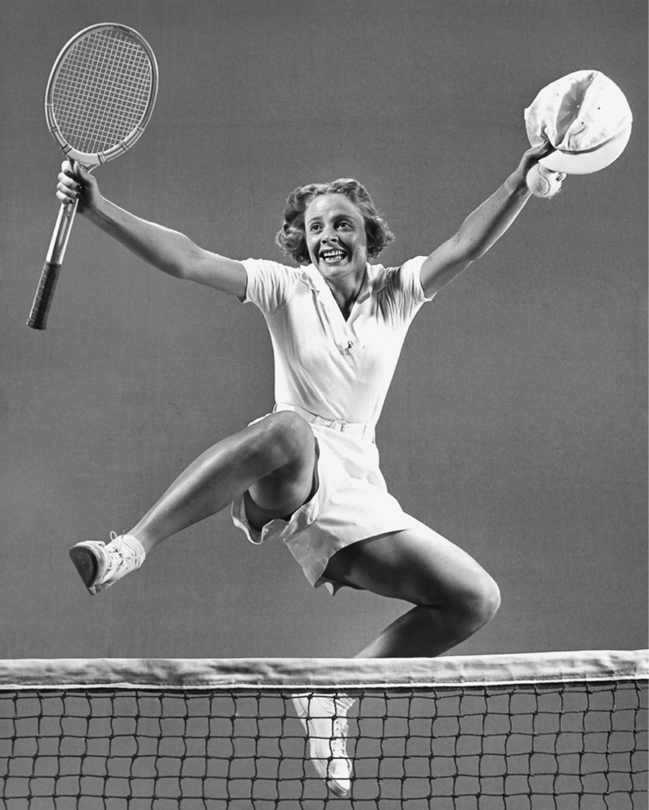
Hình 3: Alice Marble và vua hề Charlie Chaplin — Những trận cầu giao hữu huyền thoại tại Beverly Hills, nơi thể thao giao thoa cùng điện ảnh đỉnh cao.
and light blue, or navy blue alongside emerald green. He was a box-office favorite at demonstration matches, where audiences admired his taste in fashion as well as his athletic skill.
Chương 5: "Big Bill" Tilden — Nghệ Sĩ Kiêm Bạo Chúa Của Kỷ Nguyên Vàng Chapter 5: Bill Tilden: Artist and Tyrant of the Golden Age
Khi vị vua tương lai của nước Anh triệu tập Bill Tilden vào năm 1922 để chơi quần vợt tại Cung điện Buckingham, sau chiến thắng thứ hai tại Wimbledon, Tilden dường như không phải là người cuối cùng sẽ bị bỏ tù vì lạm dụng tình dục các cậu bé tuổi teen. Hiện tại, anh ấy là một hiệp sĩ trong bộ áo giáp sáng ngời, một người đã nâng tầm môn thể thao này để nó trở thành một kiệt tác đáng chiêm ngưỡng.
Still, Tilden was credited with elevating tennis from the status of a gentleman’s pastime to a tough sport. Before Tilden, the general perception of a tennis player was of a dandy in white flannels and boater asking, “Anyone for tennis?” Hornblum’s assertions to the contrary sound like a propaganda campaign to combat gossip
Hacking xung quanh: Bill Tilden, Charlie Chaplin, Manuel Alonso, và Douglas
about Tilden’s homosexuality, but they paint a vivid picture:
Fairbanks Sr. vào năm 1923.
Tilden’s impact was transformative; he
Trong suốt cuộc đời của mình, “Big Bill” cao ráo và đẹp trai được coi là tay vợt vĩ đại nhất mọi thời đại. Những người khác hiện đã làm lu mờ anh ta, giành được nhiều danh hiệu Grand Slam hơn, nhưng từ năm 1920 đến năm 1925, anh ta được xếp hạng là Tay vợt nghiệp dư số 1 thế giới, và từ năm 1931 đến năm 1933 là Tay vợt chuyên nghiệp số 1. Năm 1920, khi vô địch Wimbledon ở tuổi 27, ông là người Mỹ đầu tiên làm được điều đó và sau đó ông còn vô địch thêm hai lần nữa. Trong số 192 giải đấu mà anh tham gia, anh đã giành được 138 giải đấu, trong đó có 10 danh hiệu Grand Slam. (Có bốn giải đấu quần vợt hàng năm thuộc danh mục “Grand Slam”: vào thời Tilden, đó là Giải vô địch Úc và Pháp, Wimbledon và Giải quốc gia Hoa Kỳ.)
almost single-handedly revolutionized the Victorian game from its effeminate image as a sissy activity for the wealthy at sedate garden parties to a real man’s game that appealed to masculine, red-blooded Americans. No one who witnesses the tall Philadelphian rip off howitzer-like forehands and backhands—one almost imagined the whiff of gunpowder in the air— could think anything other than this was no longer a placid outdoor distraction for genteel aristocrats. Adding to the macho image was Tilden’s size and athleticism. At six-foot-two and 155 pounds, he was taller than most, with a raven- like wingspan and a few turf-gulping strides. His cheetah-like speed was augmented by unlimited stamina. Blessed with grace, power, and endurance, to a thoroughly overmatched opponent Tilden could well have been reimagined as a lethal avatar packing the punch of Jack Dempsey, the intricate footwork of Vaslav Nijinsky, and the longevity of a California redwood. 75
Kiến thức về chiến lược và các cú đánh của Tilden đã trở thành huyền thoại; nhà báo Stanley Wilson đã viết trên tờ The Sunday World về “phù thủy sân đấu này” rằng “kịch tính và màu sắc choáng ngợp về tính cách cũng như phương pháp của anh ấy truyền vào trận đấu, khiến anh ấy trở thành nhà vô địch xuất sắc nhất trong lịch sử quần vợt.”62 Sức hút của anh ấy cũng là huyền thoại. Ông đã đưa ra bài học cho các ngôi sao Hollywood; đám đông hò reo để xem anh ấy chơi. Nhưng về cuối đời, hoàn cảnh của ông sa sút trầm trọng. Al Laney nói với chúng tôi,
The writing is over the top, but there was something about Bill Tilden that was so beyond the norm that
Big Bill, sống trong một căn phòng đầy đủ tiện nghi, đã viết thư cho chủ tịch Dunlop, nhà tài trợ của ông, "Winnie, bạn có thể vui lòng gửi cho tôi vài chục quả bóng và một hoặc hai cây vợt không? Nếu có chúng, tôi nghĩ tôi có thể dạy được một số bài học. Tôi rất cần tiền." Nhưng tay vợt vĩ đại nhất thế giới từng chứng kiến đã chết khi gói tin đến. Anh ta chỉ có chưa đầy năm đô la trong túi và không có ai để ý đến.63
people were at a loss to explain it without a bit of purple prose.
Một phần nguyên nhân khiến điều này trở nên đáng ngạc nhiên là Tilden được biết đến với những màn trở lại. Laney viết:
in response to a questionnaire sent to top-caliber male tennis players
Tilden đã ghi được nhiều chiến thắng quan trọng hơn bất kỳ nhà vô địch nào khác sau khi dường như bị đánh bại. Anh ấy đã thắng những trận đấu này bằng siêu quần vợt, nhưng tôi không nghĩ điều đó phù hợp với sự vĩ đại của Tilden khi cho rằng, như nhiều người đã làm, việc anh ấy cố tình đùa giỡn với đối thủ để đạt được niềm vui giành lấy chiến thắng từ tay mình. Đối đầu với những đối thủ vượt trội, anh ấy không phải lúc nào cũng sử dụng toàn bộ sức mạnh trong trò chơi của mình, vì điều đó không cần thiết, nhưng tôi không tin rằng anh ấy đã buông xuôi trước những tay vợt hạng nhất để trêu ngươi và cuối cùng đè bẹp họ. Việc điều này xảy ra thường xuyên có lẽ là một phần tài năng đặc biệt của con người. Đó có thể là một phần cảm giác của anh ấy đối với nghệ thuật trình diễn, mong muốn thực sự của anh ấy là mang đến cho khán giả một giá trị trọn vẹn và mang đến một buổi biểu diễn xứng đáng.64
asking where their female partner should stand during mixed doubles, Tilden replied, of what he called “the weaker sex,” that she should position herself “wherever she’s least in the way.” 76 He was adamant on the subject that “men’s tennis and women’s tennis are simply not the same game. . . . There are always at least a hundred men in the United States certain to defeat the female champion of the moment.” 77 He went on to compare male and female physiques and levels of strength as the reason.
Sự nổi tiếng của Tilden trên hết là vì đã đứng trên bờ vực thất bại, thường ở điểm đối đầu với anh ta và cố gắng giành được chiến thắng. Stanley Wilson đã phân tích ý chí vươn lên từ phía sau của anh ta như là bản chất của bản chất Tilden: “Sự thích thú vô lương tâm của anh ta đối với trận chiến kéo dài và việc trì hoãn việc chạy đến chiến thắng, không phải là ý chí mà thuộc về tính khí và tính cách kỳ dị.
Suzanne Lenglen and Bill Tilden exude
Cao và bảnh bao, Tilden được coi là tay vợt nam xuất sắc nhất trong thời đại của anh ấy.
confidence.
Tilden mê hoặc mọi người. Là một người đàn ông “nhanh nhẹn, nóng nảy”, “dễ nổi cáu và nổi cơn thịnh nộ”, ông đã đạt được “quyền lực tối cao thế giới”66 nhờ khả năng vượt trội của mình để vượt qua mọi khó khăn.
Tilden decided to demonstrate the truth of
Tilden không thể chấp nhận thất bại. Nếu đôi khi anh ta thiếu tia lửa tự nhiên để khơi dậy trò chơi của mình, anh ta sẽ tập trung vào tính khí. Anh ta có thể khai thác mạch máu của thứ gì đó giống như cơn điên cuồng thần thánh bằng cách rút ra mọi điểm dừng trong tính khí thường đáng trách nhưng vô giá đó. Tilden có thể chơi quần vợt bậc nhất trong khi đang sôi sục giận dữ trước một đối thủ.
his claims about women tennis players with none other than the French champion Suzanne Lenglen
Ở đỉnh cao của chuỗi chiến thắng trong giải đấu, Tilden bị nhiễm trùng ở tay phải khiến các bác sĩ phải cắt bỏ gần hết ngón giữa của anh. Trận thua đòi hỏi anh phải điều chỉnh nghiêm túc cách cầm vợt, và ít người nghĩ rằng anh có thể lấy lại được sức mạnh của mình. Anh đã trở lại trong hân hoan hơn bao giờ hết.
as his opponent. He knew she was a famously
ngay cả khi lớn lên trong nhung lụa, William Tatem Tilden Jr. chưa bao giờ gặp được điều đó dễ dàng. Anh sinh ra trong một gia đình khá giả nhưng lại sống trong một gia đình hầu hết đều buồn bã. Trước khi anh chào đời, cha mẹ anh đã chứng kiến ba đứa con của họ chết trong vòng ba tuần, tất cả đều không chống chọi nổi với bệnh bạch hầu. Mẹ anh là một nghệ sĩ piano tài năng nhưng phải ngồi trên xe lăn khi Tilden còn nhỏ và qua đời khi anh mười tám tuổi. Cha anh quá bận tâm đến việc trở thành thị trưởng Philadelphia nên không dành thời gian ở nhà. Mặc dù dinh thự của gia đình có rất nhiều người hầu suốt đời vẫn tiếp tục như trước khi mẹ anh qua đời, Bill vẫn được gửi đến nhà của một người dì còn con gái. Sau đó, khi anh hai mươi hai tuổi, lúc anh đã bỏ học tại Đại học Pennsylvania, cha anh qua đời, cùng với người anh trai, người anh em duy nhất còn lại của anh. Anh rơi vào trạng thái trầm cảm nặng. Điều may mắn là dì của anh đã khuyến khích anh chơi quần vợt để giúp anh vượt qua nỗi đau.
bad loser but that “for sheer genius and perfect technique Lenglen was the greatest woman star of all time.” 78 A lot about Lenglen applied to Tilden as well.
Tilden đã chơi quần vợt từ năm sáu tuổi và khởi đầu mạnh mẽ. Nếu có thể tin được vào cuốn tự truyện cuối đời của ông thì khi mới 7 tuổi, vào năm 1901, ông đã giành chức vô địch giải thiếu niên dành cho lứa tuổi 15 trở xuống tại câu lạc bộ tư nhân tony nơi gia đình ông là thành viên. Nhưng theo hầu hết các tài khoản, anh ấy đã đánh ở mức độ rời rạc ở trường trung học và đại học, và khả năng của anh ấy chỉ trở nên rõ ràng khi anh ấy bắt đầu vươn lên từ tình trạng ảm đạm bằng cách đánh vào bảng rổ trong nhiều giờ mỗi ngày. Từ đó trở đi, những thành công chồng chất. Anh ấy có một cú giao bóng mạnh mẽ—chiều cao của anh ấy là một tài sản—nhưng chìa khóa dẫn đến chiến thắng của anh ấy chính là sự nhanh nhẹn.
Suzanne had a gift of showmanship, a great sense of the theatre. Heaven knows no one could call her beautiful. But she had the French flair for wearing clothes, coupled
Nếu bạn xem những clip cũ về anh ấy chơi, bạn sẽ thấy anh ấy đã nâng cao tính nghệ thuật của trò chơi đến mức nào. Vị trí của anh ấy trên sân là một kỳ công về vũ đạo, và mỗi cú đánh đều được chọn từ rất nhiều khả năng. Anh ấy là một tay vợt có suy nghĩ đặc biệt, một chiến lược gia giống như một gã khổng lồ. Với sự tinh tế của một nhà chiến thuật thông minh, anh ấy đã phối hợp các cú đánh của mình trở nên khó đoán, xen kẽ những cú tiếp đất mạnh mẽ bằng những cú lốp bóng và cắt lát. Một trong những kỹ năng tuyệt vời nhất của anh ấy là thực hiện các cú sút, khiến đối thủ không có cơ hội đến gần bóng; bạn không bao giờ có thể đoán trước được khi nào nó sẽ đến.
with a peculiar panther-like grace that from a little distance gave the illusion of beauty. Her unpredictable temper always lent tension and suspense to her matches. 79
Tilden có thể thực hiện các cú thuận tay của mình với độ chính xác tuyệt đối.
Tilden knew there were people who maintained that Lenglen was the equal of top male players. One day, when he and Lenglen and others were practicing on red
Có một cuốn tiểu sử cân bằng, xuất sắc về Tilden có tên American Colossus. Tác giả, Allen M. Hornblum, trước đây là “quản trị viên tư pháp hình sự”, người đã viết một cuốn sách về những hành vi phạm tội chống lại tù nhân, có lẽ đã quan tâm đến Tilden vì các vấn đề pháp lý của anh ta, nhưng anh ta đã mô tả rất tốt kỹ năng chơi quần vợt của Tilden. Hornblum viết về quá trình phát triển ban đầu trò chơi của Tilden; vào thời điểm anh ấy ở độ tuổi giữa hai mươi, Tilden đã đưa môn thể thao này lên đến đỉnh cao, với những chiến lược độc đáo và khả năng kiểm soát hoàn hảo trong cách anh ấy vuốt ve và đặt từng cú đánh:
clay in St. Cloud, near Paris, he writes, “[T]he thought came to me that if I looked off my game, Suzanne might ask me to play her.” 80 To trap Lenglen into a match, “I proceeded to be really lousy”; the bait worked, and she asked him to play a set. Once on the other side of the net from Lenglen, Tilden played a very different level of tennis than what she had just witnessed. “With deliberate intent and quite mercilessly I ran six straight games to win 6–0. . . . It seemed the only way to settle once and for all the relative ability of top men and top women.” 81 The matter, however, was not settled with Bill Tilden’s specious victory. The issue of male vs. female tennis players inspired one of the most significant events in tennis history. The general public did not know about Alice Marble’s victory at the private club in Dublin in 1939, a match that had demonstrated that a top-notch female could beat a first-rate male player and that the inter-sex competition could make for a spellbinding experience. In 1973, Bobby Riggs—who, like Tilden, had been ranked No. 1 in the world, although for only a short period—had, at fifty-five, taken to saying that even a man his age could easily win against any of the top female players
Anh ta có thể nghiền nát quả bóng và hất tung đối thủ ra khỏi sân hoặc thực hiện những cú sút tinh tế khiến đối thủ choáng váng và rơi vào trạng thái tê liệt. Kiến thức và cách sử dụng spin của anh ấy là chưa từng có. Những cú đánh cắt, cắt, xoáy lên, xoáy ngang và xoáy xuống bay ngược về phía đối thủ với hàng loạt quỹ đạo và tốc độ chóng mặt, nhấn mạnh khả năng kiểm soát vợt đáng kinh ngạc của anh ta và kho vũ khí ấn tượng của sân đấu. Thêm vào vô số cú đánh trên mặt đất của anh ấy là một kho vũ khí hạng nặng—những cú giao bóng của anh ấy—bao gồm cả vũ khí đáng sợ nhất trong trò chơi, “quả đạn đại bác” của anh ấy được bắn bởi những tay vợt đang kinh ngạc như một viên đạn.68
because of women’s innate inferiority in the arena of sports. He seemed to prove his point by handily beating Margaret Court, a splendid player. Billie Jean King, one of the best female tennis players in the world, decided she had to challenge Riggs. The match was quickly dubbed “the Battle of the Sexes” and was scheduled for one of the largest public venues anywhere, the Houston Astrodome, usually reserved for football games. More than thirty thousand people flooded the stands. It was estimated that ninety million people, all over the world, watched it on television. King arrived seated on a gold throne that was carried in by five bare- chested men clad in togas. Riggs came in next, in a rickshaw pulled by six women who looked like Playboy bunnies. Whereas at Grand Slam events women’s singles finals were best of three sets, as had been the case when Alice Marble beat a club champion, Riggs and King followed the model of men’s finals by making it best of five. In a match that lasted just over two
Đối với Al Laney, chính khi Tilden phát triển một cú đánh trái tay phẳng, anh ấy đã trở nên bất khả chiến bại: "Đó là một cú đánh khiến Tilden không thể giữ thế phòng thủ lâu hoặc phá vỡ hàng phòng ngự đó. Đó là một cú đánh đã đưa anh ấy vượt lên trên đẳng cấp của những người cùng thời, và có cơ sở để tin rằng đây là cú đánh đơn hay nhất từng được phát triển trong quần vợt."69 tilden đã làm chao đảo ba nhà vô địch Pháp vĩ đại nhất thời đại. Jean Borotra nói, "Tilden có tất cả mọi thứ. Những cú giao bóng tốt nhất của anh ấy không có câu trả lời. Những cú vô lê của anh ấy khiến bạn nghẹt thở. Anh ấy không cho bạn nghỉ ngơi. Anh ấy không có ai sánh bằng."70
hours, King won in straight sets, with Riggs losing the first set six to one and only getting to three in each of the following sets. King made a statement following the match: “I thought it would set us back fifty years if I didn’t win the match. It would ruin the women’s tour and affect all women’s self-esteem. To beat a fifty-five-year-old guy was no thrill for me. The thrill was exposing a lot of people to tennis.” Billie Jean King was a class act. She did not gloat over Riggs’s loss. Rather, she made her victory a step forward for tennis everywhere—for men as well as women. There would be a movie. In 2017, Emma Stone played Billie Jean King and Steve Carrell was Bobby Riggs in Battle of the Sexes. I wish Bill Tilden had lived to see the match (and then the film, which is superb.) And if Tilden had competed against King, the charisma coming from both sides of the net would have been off the charts.
René Lacoste rất kinh ngạc. Anh ấy ngạc nhiên trước khả năng bao quát toàn sân của Tilden và sự khéo léo trong cú đánh của anh ấy: "Anh ấy dường như có khả năng đánh trả bất kỳ cú đánh nào khi anh ấy thích, đưa bóng ra khỏi tầm với của đối thủ khi anh ấy nghĩ rằng đã đến lúc phải làm như vậy. Đôi khi anh ấy đưa bóng với tốc độ phi thường, đôi khi anh ấy vuốt ve nó. " Lacoste cho biết Tilden sẽ đặt bóng vào những vị trí mà không ai khác có thể nghĩ đến.71
bill tilden considered himself a writer and an actor. To some degree, he succeeded in both professions, but hardly on the same level as his tennis. In 1922, at the peak of his tennis, when he was the world’s No. 1 player, he published a volume of short stories titled It’s All in the Game. The central character is an athletic sixteen-year-old boy who has a bad temper on the court until he starts to imitate a role model, an older player of calm demeanor, who advises him, “All tennis players take what comes in a match, boy. It’s all in the game.” 82 One might have thought Tilden based the older player
Và Henri Cochet coi Tilden là người phát minh ra quần vợt hiện đại. Tay vợt người Anh đáng yêu Bunny Austin, một người đương thời ít được biết đến hơn, đã nhận thấy sự thiếu sót trong trò chơi trên mạng của Tilden, nhưng vẫn coi anh ta như một vị thần: “Tôi tin rằng Tilden, bằng lối chơi tuyệt vời, bằng sức mạnh cá tính, bằng tình yêu trò chơi và sự quan tâm vị tha của anh ấy đối với những tay vợt khác, đã làm được nhiều hơn bất kỳ cá nhân nào khác trong việc biến quần vợt sân cỏ (Lawn Tennis) trở thành trò chơi phổ biến nhất thế giới”.
himself, but as Allen M. Hornblum observes, “Any serious follower of Tilden’s career knew that he was not the model for this story. . . . His menacing glares and angry comments to umpires, linesmen, and ballboys were well known.” 83 Over the years, Tilden published twelve books. Some were strictly instructional guides for amateurs to improve their game, but otherwise, whether fiction or nonfiction, the central character is consistently someone with decent intentions who makes significant mistakes in life. That was, we may assume, how he saw himself. Tilden wrote in flowery style, but he could be compelling. That dichotomy is apparent in the opening of My Story, the memoir he wrote in 1948 after his arrests and imprisonment for charges stemming from sexual advances to young men. Nonetheless, his emotions are heart-wrenching.
Austin nằm trong số những người coi Tilden là tay vợt vĩ đại nhất mọi thời đại. Điều khiến anh ấy đi đến kết luận này là cú giao bóng bằng súng thần công của Tilden, sự đa dạng của các cú đánh nền và khả năng cắt và cắt của anh ấy. Austin cũng lưu ý rằng Tilden đã đánh trái tay của mình "bằng ngón tay cái vòng quanh chứ không phải hướng lên trên tay cầm." Có vẻ như cách cầm nắm bất thường này đã bù đắp cho phần ngón tay bị thiếu của Tilden, nhưng Austin, giống như hầu hết những người khác, có lẽ không hề biết về tình trạng khuyết tật này. Austin cung cấp một hình ảnh sống động về cơ thể ì ạch của Tilden:
Life is like a spring day. Clouds and sunshine alternately fill the restless skies, one succeeding the other with disconcerting abruptness. Sometimes it seems that there will be no break in either, but the end of both always comes. Just now I am under a cloud, but I know that somewhere ahead shines the sun. Fighting toward it, already I glimpse a beam tinting the
Về vóc dáng, anh ấy không hề có tỷ lệ cân đối hoàn hảo. Anh ấy cao, có bờ vai to và chân tay dài. Nhưng dù thiếu sự chắc chắn như Cochet và Borotra, anh vẫn có thể trụ được những trận đấu dài nhất ở giải đấu lớn.
gloom and I take hope. For all through my career I have loved the brightness, and I long for it again. 84
Tuy nhiên, có điều gì đó về Bill Tilden khiến những người cùng thời với ông mất cân bằng. Cả Bunny Austin và Al Laney đều phải vật lộn với những gì dường như là hai mặt trong tính cách của Tilden. Anh ta là một kẻ khó chịu; anh ấy là một chàng trai tuyệt vời Austin viết về cái nhìn giận dữ của anh ấy với trọng tài biên và những lời phàn nàn của anh ấy khi anh ấy không đồng ý rằng một trong những cú giao bóng của anh ấy đã lướt qua lưới.
He tried hard to be successful not just as a writer but also as an actor. In the 1920s, Tilden kept a suite at New York City’s Algonquin Hotel. Among the denizens of its Round Table were F. Scott Fitzgerald, Dorothy Parker, and Ernest Hemingway, and luminaries of the theater were also on the scene. Tilden had deliberately positioned himself in the hotel so that he could meet them, in the hope of being offered roles in their plays. He had the looks to be a leading man on the stage, and his name had cachet. He started with amateur theatricals. At the same time he was accumulating Grand Slam titles, he had a part in a play called Wedding Bells, by Edward Salisbury Field, a popular American playwright and novelist whose best-known comedies were Twin Beds and Life of the Party. It was performed in the ballroom of the Germantown Cricket Club; Tilden got the part largely because he was so well known on its tennis court. He went from there to Broadway, with a part in Don Q Jr., then a leading role in The Kid Himself. The New York Times review damned him with faint praise: “Certainly many worse ones are acting away for dear life in sundry theatres up and down the avenue. . . . There is no reason why Mr. Tilden should not enjoy a successful stage career, although it is unlikely that he will ever mean to the stage what he means to the courts.” 85 Variety followed suit, saying Tilden was “not the champion on the stage that he is on the tennis courts,” and added that “with a little more rehearsing,” he might have some success as an actor. 86 Still, he was determined , and when the play folded after two weeks, he used his own funds to have it continue at a different theater. He arranged to have his tennis matches start an hour later than usually scheduled so
Laney miêu tả “nhà vô địch của các nhà vô địch” là người kiêu kỳ và kiêu kỳ.
he could perform in matinees and still be on the court on time. Acting and writing plays interested him almost as much as tennis did. He often produced the work he wrote and starred in, losing substantial amounts of money. People laughed at his performances, but he seemed impervious to their disapproval. Al Laney was aghast:
Chiếc hàm đèn lồng và cái miệng rộng thẳng phía trên chiếc cổ dài đã quen thuộc trong tranh ảnh. Họ cho thấy sự quyết tâm cao độ và đó là một khuôn mặt mà dường như không thể hiện được sự khiêm nhường nào. Nó đã bừng sáng với sự nhiệt tình khi tôi lần đầu tiên nhìn thấy nó và dường như có một cảm giác ưu việt hơn.
I felt ashamed for him, almost humiliated. Tilden himself, of course, never knew how incredibly bad he was as an actor. In admitting that he had perhaps been foolish to waste so much money in that way, he
Tuy nhiên, khi quan sát, tôi nghĩ rằng tôi chưa bao giờ thấy sự kiêu ngạo và cách cư xử khó chịu như vậy.73
attributed it only to bad luck, never to lack of talent. 87
Tuy nhiên, Laney cũng coi Tilden là một khối đầy mâu thuẫn, xen kẽ khinh thường với lòng tốt, đòi khen ngợi nhưng cũng khen ngợi đối thủ.
Bill Tilden’s confidence was
Và Laney, một trong những chuyên gia quần vợt vĩ đại nhất mọi thời đại, thậm chí đôi khi bị anh ta đẩy lùi, vẫn chết lặng trước kỹ năng của anh ta. Laney mô tả cú trái tay của Tilden như một màn ảo thuật:
both his greatest strength and a major shortcoming.
Cú trái tay là cú đánh khiến Tilden không thể giữ Tilden phòng thủ lâu hoặc phá vỡ hàng phòng ngự đó. Đó là một cú đánh đã đưa anh ta vượt lên trên đẳng cấp của những người cùng thời với mình, và có cơ sở để tin rằng đây là cú đánh đơn hay nhất từng được phát triển trong quần vợt.
tilden liked famous people. His skill was his entrée into their worlds and he had the diplomacy to get along well with them. In 1921, two days after he won at Wimbledon, he was invited to Buckingham Palace to play tennis with the future king George VI. He determined that, while he had to beat his royal host—as a Wimbledon champion, it would be too fishy if he lost—he would go easy so as not to win by too much. “I decided to beat him but to be decent about it and see that he played well.” 88 He was astonished that he had to play at his normal competitive level to win 6–3, 6–3. He had an equally good match with King Gustav of Sweden at the Royal Tennis Club in Stockholm. After Tilden moved to Hollywood, in the 1930s, he played tennis with, among others,
Cú trái tay của Tilden hoàn toàn tự do và linh hoạt. Anh ta có thể cho nó tốc độ tùy thích từ hầu hết mọi vị trí trên sân, vung nó qua sân hoặc dọc theo đường biên với tốc độ không hề giảm
Clark Gable, Judy Garland, Barbara Stanwyck, Gary Cooper, Lauren Bacall, and Humphrey Bogart. One of his closest friends was Charlie Chaplin, to whom Douglas Fairbanks had introduced him. Tilden considered Chaplin “the greatest genius of the screen and the most brilliant comedy brain in the world.” 89 We know from Alice Marble’s experience that Chaplin cheated on line calls, but the actor’s desperate efforts to win did not put off Tilden or other Hollywood players. Chaplin gave tennis parties on his private court, where Tilden’s partners included Olivia de Havilland, Spencer Tracy, Montgomery Cliff, and Errol Flynn.
Laney ngạc nhiên trước tính linh hoạt của Tilden. Anh ta có vẻ như đang đánh bóng phẳng trong khi tạo ra nhiều xoáy cho nó; anh ấy dường như có thể đánh một cú xoáy trong khi giữ bóng phẳng. Dù tính khí anh ta có thể hiện ra sao, dù anh ta có kỳ quặc đến đâu, anh ta vẫn có sức mạnh vượt trội so với những người bình thường.
Clifton Webb, who also had a court, introduced Tilden to Katharine Hepburn, Tallulah Bankhead, and Greta Garbo, all of whom he coached. At one point, Katharine Hepburn and he were playing tennis every day. With his
phong cách cá nhân của tilden ngang bằng với môn quần vợt của anh ấy. Trong trận chung kết Giải vô địch đơn quốc gia Hoa Kỳ năm 1920, ông bước vào sân với chiếc áo khoác lông lạc đà. Mảng áo len tennis dệt kim của anh có cổ chữ V có màu sắc khác nhau, kết hợp giữa xanh lam và đỏ, xanh đậm và xanh nhạt, hoặc xanh nước biển cùng với xanh ngọc lục bảo. Anh ấy là nhân vật được yêu thích ở phòng vé tại các trận đấu trình diễn, nơi khán giả ngưỡng mộ gu thời trang cũng như kỹ năng thể thao của anh ấy.
notion of male superiority, he made up rules obliging him to cover the entire doubles court while hitting against her on the singles court—and Hepburn managed to beat him. Nonetheless, he made sure, in reporting it in My Story, that his readers knew he was playing with a self-imposed handicap and that he won the following day:
Tuy nhiên, Tilden vẫn được ghi nhận là người đã nâng quần vợt từ vị thế trò tiêu khiển của một quý ông lên một môn thể thao khắc nghiệt. Trước Tilden, nhận thức chung về một vận động viên quần vợt là một anh chàng bảnh bao mặc áo nỉ trắng và vận động viên chèo thuyền hỏi: "Có ai chơi quần vợt không?" Những khẳng định ngược lại của Hornblum nghe giống như một chiến dịch tuyên truyền nhằm chống lại những lời đàm tiếu về vấn đề đồng tính của Tilden, nhưng chúng vẽ nên một bức tranh sống động:
Believe it or not, she beat me one day—playing really amazing tennis; she threatened to send out a special announcement and then retire from the game, but hurried back the next afternoon to make sure I didn’t take
Tác động của Tilden có tính chất biến đổi; ông gần như một mình cách mạng hóa trò chơi thời Victoria từ hình ảnh nhu nhược của nó như một hoạt động ẻo lả dành cho những người giàu có trong các bữa tiệc ngoài vườn sang trọng cho đến trò chơi dành cho một người đàn ông thực sự thu hút những người Mỹ nam tính, máu đỏ. Không ai chứng kiến cảnh người Philadelphian cao lớn xé toạc những cú thuận tay và trái tay giống như lựu pháo—người ta gần như tưởng tượng ra mùi thuốc súng trong không khí— có thể nghĩ bất cứ điều gì khác ngoài việc đây không còn là trò tiêu khiển ngoài trời êm đềm của những quý tộc lịch thiệp.
her threat seriously. Where she gets the power from I can’t imagine. But she hits a harder forehand than any girl I’ve seen on a court—including Alice Marble! It’s just as well she hadn’t too much control of that wallop or I might have died chasing it. 90
Thêm vào hình ảnh nam nhi là kích thước và thể thao của Tilden. Với chiều cao 6 foot 2 và nặng 155 pound, anh ta cao hơn hầu hết mọi người, với sải cánh dài như cánh quạ và một vài bước sải chân như nuốt chửng cỏ. Tốc độ giống như con báo của anh ta được tăng cường bởi sức chịu đựng không giới hạn. Được trời phú cho sự duyên dáng, sức mạnh và sức chịu đựng, trước một đối thủ hoàn toàn áp đảo, Tilden có thể được hình dung lại như một hình đại diện chết người trước cú đấm của Jack Dempsey, động tác phức tạp của Vaslav Nijinsky và tuổi thọ
In his memoir, Tilden would periodically mention being in love with various female stars. “Twice in my life I even considered marrying. Both women were famous, and both of the stage.” 91 The first was the glamorous Peggy Wood, an actress with a fine singing voice who got major roles in Noël Coward plays and was part of the Algonquin set. His second “bout with romance” was with Marjorie Daw, who starred in Haunted Hands, a
Bài viết quá xuất sắc, nhưng có điều gì đó về Bill Tilden vượt quá tiêu chuẩn đến mức mọi người không thể giải thích nó mà không có một chút văn xuôi màu tím.
film in which Tilden appeared. And then there was the Polish-born Pola Negri, who had become a sex symbol in silent films:
để trả lời một bảng câu hỏi được gửi đến những tay vợt nam có năng lực hàng đầu hỏi đối tác nữ của họ nên đứng ở đâu trong nội dung đôi nam nữ, Tilden trả lời, về cái mà anh ấy gọi là “giới tính yếu hơn”, rằng cô ấy nên định vị bản thân
I had another infatuation—shorter and more violent, this time— when I met Pola Negri in 1923.
“bất cứ nơi nào cô ấy ít cản đường nhất.”76 Ông kiên quyết với chủ đề rằng “quần vợt nam và quần vợt nữ đơn giản không phải là một môn thể thao giống nhau.... Luôn có ít nhất một trăm người đàn ông ở Hoa Kỳ chắc chắn có thể đánh bại nhà vô địch nữ vào thời điểm hiện tại.”77 Ông tiếp tục so sánh thể chất và mức độ sức mạnh của nam và nữ là lý do.
There was a gal! She was on the rebound from her affair with Charlie Chaplin, and at the moment footloose and fancy free. 92
Suzanne Lenglen và Bill Tilden toát lên vẻ tự tin.
It only ended, he claimed, because he was forced to leave Los Angeles on the tennis
Tilden quyết định chứng minh sự thật trong tuyên bố của mình về các tay vợt nữ với đối thủ không ai khác chính là nhà vô địch người Pháp Suzanne Lenglen. Anh ấy biết cô ấy nổi tiếng là một kẻ thua cuộc tồi tệ nhưng “vì thiên tài tuyệt đối và kỹ thuật hoàn hảo, Lenglen là ngôi sao nữ vĩ đại nhất mọi thời đại.”78 Rất nhiều điều về Lenglen cũng áp dụng cho Tilden.
tour. Beyond those flings with actresses he mentions in the memoir he wrote after being incarcerated, he boasted of romances with four female tennis players—while making clear that none turned into a full-fledged love affair. People liked to gossip about him. His body odor was legendary. He was both pathologically shy and way out there. He was famous for never stripping in the locker room or being seen heading to the showers, but he was so public in the attention he gave to ballboys that after one Wimbledon match Vladimir Nabokov purportedly said, “Looks like Tilden’s got himself a harem of ballboys.” Nabokov was sufficiently intrigued that he gave the name “Ned Litam” to Lolita’s tennis teacher. The name is “Ma Tilden” spelled backwards.
Suzanne có năng khiếu trình diễn, cảm nhận tuyệt vời về sân khấu. Có trời mới biết không ai có thể gọi cô là xinh đẹp. Nhưng cô ấy có khiếu ăn mặc kiểu Pháp, cùng với vẻ duyên dáng đặc biệt giống một con báo mà nhìn từ xa đã tạo ra ảo giác về vẻ đẹp. Tính khí khó đoán của cô luôn khiến cô căng thẳng và hồi hộp.
tilden made films that teach tennis. Lanky, his hair brushed back, wearing an unusual sweater that joins a strong diamond pattern with images of camels, he coaches wisely, speaking with a patrician voice and accent that resemble Franklin Delano Roosevelt’s. The only problem with the films is that some of them show him with a good-looking teenage boy. Tilden, in a manner perfectly normal for a tennis pro, often has his arms around
Tilden biết có những người cho rằng Lenglen ngang hàng với những tay vợt nam hàng đầu. Một ngày nọ, khi anh ấy, Lenglen và những người khác đang tập luyện trên sân đất sét đỏ ở St. Cloud, gần Paris, anh ấy viết, “[T] anh ấy chợt nghĩ rằng nếu tôi bỏ cuộc chơi của mình, Suzanne có thể yêu cầu tôi chơi với cô ấy.”80 Để gài bẫy Lenglen vào một trận đấu, “Tôi bắt đầu trở nên thực sự tệ hại”; mồi đã có tác dụng và cô ấy yêu cầu anh chơi một bộ.
the boy as he guides him through the strokes. In hindsight, maybe the “perfectly normal” was not quite that. In November 1946, when he was fifty-seven years old, Tilden was arrested on Sunset Boulevard by Beverly Hills police. He had been discovered with a fourteen-year-old boy whom he had first encountered at the Los Angeles Tennis Club, and was found guilty of “contributing to the delinquency of a minor.” 93 The sentence was a year in prison, of which he served seven and a half months, followed by five years of parole with conditions that meant he was not allowed to give private lessons. The man
Khi ở bên kia lưới của Lenglen, Tilden đã chơi một thứ quần vợt ở đẳng cấp rất khác so với những gì cô vừa chứng kiến. “Với mục đích có chủ ý và khá tàn nhẫn, tôi đã chơi sáu trận liên tiếp để giành chiến thắng 6–0. . . Đó dường như là cách duy nhất để giải quyết một lần và mãi mãi khả năng tương đối của những người đứng đầu và những người đứng đầu.”
who had grown up wealthy and earned a lot of money as a tennis pro, who played with the stars and taught millionaires, no longer had a clear way to make a
Tuy nhiên, vấn đề vẫn chưa được giải quyết bằng chiến thắng thuyết phục của Bill Tilden. Vấn đề giữa các tay vợt nam và nữ đã truyền cảm hứng cho một trong những sự kiện quan trọng nhất trong lịch sử quần vợt. Công chúng không biết về chiến thắng của Alice Marble tại câu lạc bộ tư nhân ở Dublin vào năm 1939, một trận đấu đã chứng minh rằng một nữ tay vợt xuất sắc nhất có thể đánh bại một tay vợt nam hạng nhất và rằng cuộc cạnh tranh giữa các giới có thể tạo nên một trải nghiệm đầy mê hoặc.
living. Bill Tilden tells his version of the event in My Story. He explains that when the second annual World’s Hard Court Championship would be held at the Los Angeles Tennis Club, he worked “with the youngsters” in his spare time during the days before the tournament.
Vào năm 1973, Bobby Riggs—người, giống như Tilden, đã được xếp hạng số 1 thế giới, mặc dù chỉ trong một thời gian ngắn—, ở tuổi 55, đã nói rằng ngay cả một người đàn ông ở độ tuổi của anh ta cũng có thể dễ dàng giành chiến thắng trước bất kỳ tay vợt nữ hàng đầu nào vì sự thấp kém bẩm sinh của phụ nữ trong lĩnh vực thể thao. Anh ta dường như đã chứng minh quan điểm của mình bằng cách đánh bại Margaret Court, một tay vợt xuất sắc. Billie Jean King, một trong những tay vợt nữ giỏi nhất thế giới, quyết định phải thách đấu Riggs.
I am one of those who believe that it is up to the older players to do all they can for the kids; besides, like many people, I find in youth a constant source of stimulus and incentive. I met one lad on the courts who showed unusual promise. I had known him casually for some time. He was keen to learn, and I wanted to help him. He and I . . . became good friends. Somehow we drifted into a foolishly schoolboy-ish relationship which I should have prevented. My nervous strain was such that at the time I seemed to lack will; I seemed dissociated, and beyond control of my own actions. 94
Trận đấu nhanh chóng được mệnh danh là "Trận chiến của giới tính" và được lên lịch diễn ra tại một trong những địa điểm công cộng lớn nhất ở bất kỳ đâu, Houston Astrodome, thường dành cho các trận đấu bóng đá. Hơn ba mươi nghìn người tràn ngập khán đài. Người ta ước tính có chín mươi triệu người trên khắp thế giới đã xem nó trên truyền hình.
One evening, Tilden reports, they went to the movies together and then he allowed the boy, who did not yet have his license, to drive his car. “We were fooling around, indulging in horseplay.” They were stopped by the police. He took “full responsibility” in order “to save the youngster.”
King đến ngồi trên một ngai vàng được năm người đàn ông ngực trần mặc áo togas khiêng vào. Tiếp theo là Riggs, trên một chiếc xe kéo được kéo bởi sáu người phụ nữ trông giống những chú thỏ Playboy. Trong khi tại các sự kiện Grand Slam, các trận chung kết đơn nữ diễn ra tốt nhất trong ba set, như trường hợp khi Alice Marble đánh bại một nhà vô địch câu lạc bộ, Riggs và King đã làm theo mô hình chung kết của nam bằng cách giành thành tích tốt nhất trong năm set. Trong một trận đấu chỉ kéo dài hơn hai giờ, King đã giành chiến thắng trong các set liên tiếp, trong đó Riggs thua set đầu tiên với sáu-một và chỉ giành được ba điểm trong mỗi set sau.
Tilden then tries to defend himself: He writes that all athletics “throw the same sex together constantly and intimately.” It is as if that explains what happened. But then he shows self-consciousness in writing this: Because of “admiration for physical perfection, an attraction may arise almost like that of love. The result is . . . relationships somewhat away from the normal.” 95 From there, Tilden provides a discourse on such relationships historically. He explains that they have nothing to do with tennis in particular, and says they call “more for psychiatric than legal or punitive
King đã đưa ra tuyên bố sau trận đấu: "Tôi nghĩ chúng tôi sẽ lùi lại 50 năm nếu tôi không thắng trận đấu. Nó sẽ hủy hoại giải đấu của phụ nữ và ảnh hưởng đến lòng tự trọng của tất cả phụ nữ. Đánh bại một gã đàn ông năm mươi lăm tuổi không phải là điều thú vị đối với tôi. Sự hồi hộp đã khiến rất nhiều người tiếp xúc với quần vợt. "
measures. . . . It is, if anything, an illness; in most cases a psychological illness.” 96 In court, the judge chastised him. “You have been the hero of youngsters all over the world. . . . It is a great shock that you are involved in an incident like this.” According to an article with the headline “Bill Tilden Gets 9 Months in Jail for Sex Offense,” in The Philadelphia Inquirer on January 17, 1947, the reporter wrote that Tilden said his trouble
Billie Jean King là một diễn viên đẳng cấp. Cô không hả hê trước sự mất mát của Riggs. Đúng hơn, cô ấy đã biến chiến thắng của mình thành một bước tiến cho quần vợt ở khắp mọi nơi—cho nam cũng như nữ.
began “when I was very young and stupid many years ago.” 97 Saying twice that this was “an object lesson,” the judge added to his prison sentence the stipulation “that on release, Tilden should obtain psychiatric treatment and not associate with juveniles except in the presence of responsible adults.” 98
Sẽ có một bộ phim. Năm 2017, Emma Stone đóng vai Billie Jean King và Steve Carrell vào vai Bobby Riggs trong Battle of the Sexes. Tôi ước gì Bill Tilden sống để xem trận đấu (và sau đó là bộ phim tuyệt vời.) Và nếu Tilden thi đấu với King, sức hút đến từ cả hai phía của lưới sẽ vượt quá bảng xếp hạng.
when he wrote My Story, Tilden voiced profound remorse. He writes that prison “gave me a
Bill tilden tự coi mình là một nhà văn và một diễn viên. Ở một mức độ nào đó, anh ấy đã thành công trong cả hai ngành nghề, nhưng khó có thể sánh ngang với môn quần vợt của anh ấy. Năm 1922, khi đang ở đỉnh cao sự nghiệp quần vợt, khi còn là tay vợt số 1 thế giới, ông đã xuất bản một tập truyện ngắn có tựa đề Đó là tất cả trong trò chơi. Nhân vật trung tâm là một cậu bé mười sáu tuổi lực lưỡng, có tính khí thất thường trên sân cho đến khi cậu bắt đầu bắt chước một hình mẫu, một tay vợt lớn tuổi có thái độ điềm tĩnh, người đã khuyên cậu, "Tất cả các tay vợt đều phải chấp nhận những gì xảy ra trong một trận đấu, cậu bé. Tất cả là trong trận đấu." Những cái nhìn đầy đe dọa và những lời bình luận giận dữ của anh ấy đối với trọng tài, người xếp hàng và người nhặt bóng
wonderful opportunity to undergo rehabilitation and I took full advantage of it.” 99 On the last page of the book, he says his fame had no impact on his treatment during incarceration, and that he considered himself on a new path:
Trong nhiều năm, Tilden đã xuất bản 12 cuốn sách. Một số là những hướng dẫn nghiêm ngặt dành cho những người nghiệp dư để cải thiện trò chơi của họ, nhưng mặt khác, dù là hư cấu hay phi hư cấu, nhân vật trung tâm luôn là một người có ý định tử tế nhưng lại mắc phải những sai lầm nghiêm trọng trong cuộc sống. Chúng ta có thể cho rằng đó là cách anh ấy nhìn nhận chính mình.
I was just one more guy in jail, which was what I deserved to be, and what I wanted to be. Now all that is past! All that I ask is the chance to prove that I have learned my lesson, that I have paid my debt, and that I am intent on resuming life as an honorable member of society. . . . I hope to carry on my tennis
Tilden viết theo phong cách hoa mỹ, nhưng anh ấy có thể hấp dẫn. Sự phân đôi đó được thể hiện rõ ràng trong phần mở đầu của My Story, cuốn hồi ký ông viết vào năm 1948 sau khi bị bắt và bỏ tù vì những cáo buộc xuất phát từ việc tán tỉnh tình dục với nam thanh niên. Tuy nhiên, cảm xúc của anh ấy rất đau lòng.
career . . . I hope to be able to play for worthy charities, for the entertainment of our Veterans in hospitals, and to do it knowing I am welcomed. I trust that whatever of good I have done in this world will be set against my mistake and found to outweigh it in the final balance.
Cuộc đời như một ngày xuân. Mây và nắng luân phiên lấp đầy bầu trời không ngừng nghỉ, cái này nối tiếp cái kia với sự đột ngột bối rối. Đôi khi tưởng chừng như sẽ không có sự rạn nứt, nhưng sự kết thúc của cả hai luôn đến. Vừa rồi tôi đang ở dưới một đám mây, nhưng tôi biết rằng ở đâu đó phía trước có mặt trời chiếu sáng. Đang chiến đấu hướng tới nó, tôi đã nhìn thấy một tia sáng nhuốm màu u ám và tôi có hy vọng. Trong suốt sự nghiệp của mình, tôi luôn yêu thích sự tươi sáng và khao khát điều đó
. . . What the end of this, my story, will be,
Anh ấy đã cố gắng rất nhiều để thành công không chỉ với tư cách là một nhà văn mà còn là một diễn viên. Vào những năm 1920, Tilden sở hữu một căn hộ tại Khách sạn Algonquin ở Thành phố New York. Trong số những người từ chối Bàn Tròn của nó có F. Scott Fitzgerald, Dorothy Parker, và Ernest Hemingway, và những ngôi sao sáng của nhà hát cũng có mặt tại hiện trường. Tilden đã cố tình định vị mình trong khách sạn để có thể gặp họ, với hy vọng được mời đóng các vai trong vở kịch của họ. Anh ấy có vẻ ngoài giống như một người dẫn đầu trên sân khấu và tên tuổi của anh ấy rất nổi tiếng.
the years ahead will tell. I can only try to give it a happy ending. 100
Anh ấy bắt đầu với sân khấu nghiệp dư. Cùng lúc đang tích lũy các danh hiệu Grand Slam, anh còn tham gia một vở kịch tên là Wedding Bells của Edward Salisbury Field, một nhà viết kịch và tiểu thuyết gia nổi tiếng người Mỹ với những bộ phim hài nổi tiếng nhất là Twin Beds và Life of the Party. Nó được biểu diễn trong phòng khiêu vũ của Câu lạc bộ Cricket Germantown; Tilden nhận được vai này phần lớn là do anh ấy quá nổi tiếng trên sân quần vợt. Từ đó anh đến Broadway, với vai diễn trong Don Q Jr., sau đó là vai chính trong The Kid Yourself. Tờ New York Times chê bai ông bằng những lời khen ngợi nhạt nhẽo: “Chắc chắn có nhiều kẻ tệ hơn đang diễn kịch để sống chết trong các rạp hát lặt vặt dọc theo đại lộ…. Không có lý do gì Mr. Tilden không nên tận hưởng một sự nghiệp sân khấu thành công, mặc dù không chắc rằng anh ấy sẽ có ý nghĩa như thế nào trên sân khấu với ý nghĩa của anh ấy đối với sân đấu."
but he could not contain himself. On January 28, 1949, about a year after his release from prison, the police arrested Tilden at home following charges from a high school student “that the tennis champion made improper advances last Friday morning, after he allegedly had picked up the youth in his automobile in Westwood.” 101 There was “a juvenile” present when the police entered Tilden’s apartment in Westwood Village. Tilden reportedly did not argue when the police said they were arresting him. The presence of a youth in Tilden’s apartment was already a violation of his parole terms, and newspapers named the boy, who gave Tilden’s license plate number. Nonetheless, Errol Flynn advised Tilden to get a lawyer, who proposed Tilden plead not guilty. The plea would necessitate a jury trial in which the boy would be required to testify. Flynn anticipated that the boy’s parents, eager to keep their son from appearing in court, would not agree to this, so there would have to be a settlement in Tilden’s favor. But Tilden would not go along with the scheme. He was sentenced to a one-year prison term, of which he served ten months. People turned their backs on him. When he was no longer behind bars, Bill Tilden was ostracized. He was banned from most tournaments and tennis clubs. His name was removed from the alumni files at the University of Pennsylvania. The Germantown Cricket Club revoked his
Tuy nhiên, anh ấy vẫn quyết tâm và khi vở kịch kết thúc sau hai tuần, anh ấy đã sử dụng tiền của chính mình để tiếp tục vở kịch ở một rạp khác. Anh ấy đã sắp xếp để các trận đấu quần vợt của mình bắt đầu muộn hơn một giờ so với dự kiến thường lệ để anh ấy có thể thi đấu vào buổi sáng mà vẫn có mặt trên sân đúng giờ.
membership, and his picture was taken off the wall there, as it was at the West Side Tennis Club in Forest Hills. He was no longer allowed at the Los Angeles Tennis Club. But a few people were still there for him. David O. Selznick, Joseph Cotten, and Charlie Chaplin continued to allow him to use their tennis courts. Errol Flynn wrote to him: “You’re just one set down with plenty of games to play.” 102 When the sporting goods company Dunlop stopped
Diễn xuất và viết kịch khiến anh ấy hứng thú gần như quần vợt. Anh ấy thường sản xuất tác phẩm do anh ấy viết và đóng vai chính, thua lỗ một số tiền đáng kể. Mọi người cười nhạo màn trình diễn của anh ấy, nhưng anh ấy dường như không chấp nhận sự phản đối của họ. Al Laney kinh ngạc:
sponsoring him and providing him with tennis gear, another company, Bancroft, took over. Pancho Gonzales still played with him on the pro tour— at the few places where he was allowed to play. He was a broken man, however. He could no longer make money teaching and had to sell his trophies. He died at age sixty on
Tôi cảm thấy xấu hổ thay cho anh ấy, gần như bị sỉ nhục. Tất nhiên, bản thân Tilden chưa bao giờ biết mình là một diễn viên tệ đến mức nào. Khi thừa nhận rằng có lẽ ông thật ngu ngốc khi lãng phí quá nhiều tiền theo cách đó, ông cho rằng đó chỉ là sự xui xẻo chứ không bao giờ thiếu tài năng.87
June 5, 1953, alone in his apartment, of a heart attack. There was less than a hundred dollars in his bank account. Still, Pancho Segura, Gussie Moran, Nancy Davis (the future Mrs. Ronald Reagan), and Alice Marble were at his funeral. Tilden’s body lay in state in a new sweater bought for the occasion by Joseph Cotten. He was buried in style.
Sự tự tin của Bill Tilden vừa là sức mạnh lớn nhất vừa là một khuyết điểm lớn của ông.
dressed
tilden thích người nổi tiếng. Kỹ năng của anh ấy là người đưa anh ấy bước vào thế giới của họ và anh ấy có tài ngoại giao để hòa hợp với họ. Năm 1921, hai ngày sau khi giành chiến thắng tại Wimbledon, ông được mời đến Cung điện Buckingham để chơi quần vợt với vị vua tương lai George VI. Anh ấy xác định rằng, trong khi anh ấy phải đánh bại chủ nhà hoàng gia—với tư cách là nhà vô địch Wimbledon, sẽ rất đáng nghi nếu anh ấy thua—anh ấy sẽ thi đấu dễ dàng để không thắng quá nhiều. “Tôi quyết định đánh bại anh ta nhưng để công bằng về điều đó và thấy rằng anh ta đã chơi tốt.”88 Anh ấy rất ngạc nhiên khi phải chơi ở mức độ thi đấu bình thường để giành chiến thắng 6–3, 6–3. Anh đã có một trận đấu không kém phần hay với Vua Gustav của Thụy Điển tại Câu lạc bộ Quần vợt Hoàng gia ở Stockholm.
to win: katharine hepburn and rené lacoste
Sau khi Tilden chuyển đến Hollywood, vào những năm 1930, ông chơi quần vợt với Clark Gable, Judy Garland, Barbara Stanwyck, Gary Cooper, Lauren Bacall và Humphrey Bogart. Một trong những người bạn thân nhất của anh là Charlie Chaplin, người mà Douglas Fairbanks đã giới thiệu anh. Tilden coi Chaplin là “thiên tài vĩ đại nhất của màn ảnh và bộ óc hài xuất sắc nhất thế giới.”89 Chúng ta biết từ kinh nghiệm của Alice Marble rằng Chaplin đã gian lận trong các cuộc gọi điện thoại, nhưng những nỗ lực tuyệt vọng để giành chiến thắng của nam diễn viên này đã không làm Tilden hay những tay chơi Hollywood khác nản lòng. Chaplin tổ chức các bữa tiệc quần vợt trên sân riêng của mình, nơi các đối tác của Tilden bao gồm Olivia de Havilland, Spencer Tracy, Montgomery Cliff và Errol Flynn.
n early picture of René Lacoste—yes, there was a man with that name before there were shirts and jackets and boutiques—shows him racquet in hand at the age of eighteen. A foulard puffed like meringue flows between the lapels of his blazer. The get-up suggests the same sense of enjoyment with which Lacoste played tennis. This bold neck covering is a declaration that tennis is not just about fitness, tactics, skill, or coordination; it is also about style. It demands the temerity to go to the outer limits of what is possible. Perhaps the term “ascot,” or even “scarf,” would be more apt for this item
Clifton Webb, người cũng có sân đấu, đã giới thiệu Tilden với Katharine Hepburn, Tallulah Bankhead và Greta Garbo, tất cả đều được ông huấn luyện. Có thời điểm, Katharine Hepburn và anh ấy chơi quần vợt hàng ngày. Với quan niệm về ưu thế nam giới của mình, anh ta đã đặt ra các quy tắc bắt buộc anh ta phải bao quát toàn bộ sân đánh đôi trong khi đánh với cô ấy trên sân đánh đơn—và Hepburn đã đánh bại được anh ta. Tuy nhiên, khi tường thuật điều đó trong Câu chuyện của tôi, anh ấy đảm bảo rằng độc giả của anh ấy biết anh ấy đang chơi với mức chấp tự đặt ra và rằng anh ấy đã thắng vào ngày hôm sau:
Lacoste has knotted so lavishly, but “foulard” is the one of choice because it conjures a material that is light and flexible. Its weightlessness and movement in the air are the quintessence of a beautiful serve or of an effective rush to the net. Once upon a time, a certain elegance was the norm in tennis clothes. The outfits worn in sixteenth-century England by the noblemen who played the French game jeu de paume at Hampton Court conveyed an impression of
Dù bạn có tin hay không, một ngày nọ, cô ấy đã đánh bại tôi—chơi quần vợt thực sự tuyệt vời; cô ấy đe dọa sẽ gửi một thông báo đặc biệt và sau đó rút lui khỏi trò chơi, nhưng vội quay lại vào chiều hôm sau để đảm bảo rằng tôi không coi trọng lời đe dọa của cô ấy. Tôi không thể tưởng tượng được cô ấy lấy sức mạnh từ đâu. Nhưng cô ấy đánh thuận tay mạnh hơn bất kỳ cô gái nào tôi từng gặp trên sân—kể cả Alice Marble! Cũng may là cô ấy không kiểm soát được cú va đập đó quá nhiều nếu không tôi có thể đã chết khi đuổi theo nó.90
courtiers jousting. I would say the word swashbuckling is appropriate. With their long hair, worn pageboy-style, in their skintight jackets with white ruffles billowing out from the collars, around the shoulders, at the elbows, and around the cinched waists, these sportsmen oozed confidence. These fellows
Trong hồi ký của mình, Tilden thường đề cập đến việc yêu nhiều ngôi sao nữ khác nhau. "Hai lần trong đời, tôi thậm chí còn cân nhắc việc kết hôn. Cả hai người phụ nữ đều nổi tiếng và cả hai đều đứng trên sân khấu."91 Người đầu tiên là Peggy Wood quyến rũ, một nữ diễn viên có giọng hát hay, từng đảm nhận các vai chính trong các vở kịch của Noël Coward và là một phần của dàn diễn viên Algonquin. “Cuộc hẹn hò lãng mạn” thứ hai của anh là với Marjorie Daw, người đóng vai chính trong Bàn tay ma ám, một bộ phim có sự xuất hiện của Tilden. Và sau đó là Pola Negri gốc Ba Lan, người đã trở thành biểu tượng sex trong phim câm:
wore their finery with self-possession. They carried off not just the fitted tops but also the tight breeches, possibly suede, rolled up just over their knees, so a sport that requires great skill no matter what its players wear was most entertaining. Women were not yet playing tennis, but the men were fashion plates.
Tôi có một sự mê đắm khác—lần này ngắn hơn và bạo lực hơn— khi tôi gặp Pola Negri vào năm 1923. Có một cô gái! Cô ấy đang trên đà hồi phục sau mối tình với Charlie Chaplin, và hiện tại
Katharine Hepburn
Anh ấy tuyên bố rằng mọi chuyện chỉ kết thúc vì anh ấy buộc phải rời Los Angeles để tham gia giải đấu quần vợt. Ngoài những lần hẹn hò với các nữ diễn viên mà anh ấy đề cập trong cuốn hồi ký viết sau khi bị giam giữ, anh ấy còn khoe khoang về mối tình lãng mạn với bốn nữ vận động viên quần vợt — đồng thời nói rõ rằng không ai trở thành một mối tình chính thức.
was not known for timidity.
Mọi người thích bàn tán về anh ấy. Mùi cơ thể của anh ấy đã trở thành huyền thoại. Anh ấy vừa nhút nhát một cách bệnh hoạn vừa lạc lối. Anh ta nổi tiếng vì không bao giờ cởi quần áo trong phòng thay đồ hay bị bắt gặp đi tắm, nhưng anh ta quá nổi tiếng với sự chú ý mà anh ta dành cho các chàng trai nhặt bóng đến nỗi sau một trận đấu ở Wimbledon, Vladimir Nabokov đã cố tình nói, "Có vẻ như Tilden đã có cho mình một hậu cung toàn những chàng trai nhặt bóng." Nabokov đủ tò mò đến mức đặt tên “Ned Litam” cho giáo viên dạy quần vợt của lolita. Tên là “Ma Tilden” đánh vần ngược.
Walter Clopton Wingfield, the Welsh army officer said to have invented lawn tennis, wore incredible outfits. What gives them distinction is that they were dashing without being the least bit foppish. Wingfield favored doublets, snug and without sleeves, of thick fabric with a complicated weave, fastened with embroidered buttons. He would roll the sleeves of his loose-fitting cotton shirt above the elbows, his bulging forearms on view, thus demonstrating that he was an aristocrat and a tough guy, who followed the rules of style but was also strong and relaxed. He wore his beret at a jaunty angle, tied his neck scarf in military style, and kept his handlebar mustache and pointed beard in trim. At the same time, he had the body of an American football halfback. That combination of worldliness and imposing physique surely intimidated any opponent. Women back then wore long flowing dresses and floppy hats, until Helen Wills, a star of the 1920s, donned pleated skirts and gamine tops. She had the joie de vivre of a flapper in an F. Scott
tilden làm phim dạy về quần vợt. Lanky, tóc chải ngược, mặc một chiếc áo len khác thường có họa tiết kim cương mạnh mẽ với hình ảnh những con lạc đà, anh ấy huấn luyện một cách khôn ngoan, nói chuyện với giọng nói quý phái và giọng giống Franklin Delano Roosevelt. Vấn đề duy nhất với các bộ phim là một số phim cho thấy anh ta đi cùng một cậu thiếu niên đẹp trai. Tilden, theo cách hoàn toàn bình thường đối với một vận động viên quần vợt chuyên nghiệp, thường vòng tay ôm lấy cậu bé khi hướng dẫn cậu thực hiện các cú đánh. Nhìn lại, có lẽ mức độ “hoàn toàn bình thường” không hoàn toàn như vậy.
Fitzgerald novel. We picture her playing with that same sense of fun as someone sipping champagne at sunset on the Riviera. But the style most irresistible among the well-known female players was Althea Gibson’s, some three decades later. This Black American athlete who broke the color barriers, in both tennis and golf, wore skirts and tops that imply a simple life. Her clothing was as natural as her smile. There is a photograph of Gibson taken at the 1957 Wimbledon Women’s Single Championships as Queen Elizabeth II presents her with the Venus Rosewater Dish. The queen, smiling, wears a soft summer hat, two strands of pearls, pearl earrings, a flowered dress showing just as much cleavage as her position allowed (maybe a tiny bit more), and white gloves to her elbows. A tall, lean Black woman dressed to win the game, Gibson is as consummately who she is as the queen is a monarch. In men’s tennis of the modern era, René Lacoste set the style with garments like that foulard. He cut an elegant figure on and off the court well
Vào tháng 11 năm 1946, khi ông 57 tuổi, Tilden bị cảnh sát Beverly Hills bắt giữ trên Đại lộ Sunset. Anh ta bị phát hiện đi cùng một cậu bé mười bốn tuổi mà anh ta gặp lần đầu ở Câu lạc bộ Quần vợt Los Angeles, và bị kết tội “góp phần vào hành vi phạm pháp của trẻ vị thành niên”.93 Bản án là một năm tù, trong đó anh ta thụ án bảy tháng rưỡi, sau đó là năm năm tạm tha với các điều kiện nghĩa là anh ta không được phép dạy kèm. Người đàn ông lớn lên giàu có và kiếm được rất nhiều tiền nhờ nghề quần vợt chuyên nghiệp, tay vợt với các ngôi sao và dạy dỗ các triệu phú, không còn có một con đường kiếm sống rõ ràng nữa.
before he developed the eponymous shirt, with its reptile logo symbolizing power and cool. Clothes do not in fact make the man, but if someone has flair to begin with, dressing with panache can contribute to the overall impact, and Lacoste—who, among other things, was one of the best tennis players of the day—was a marvel. With straight black hair and a nose that is brazenly there, he was, by European standards, exotic. He emphasized his Byronic appearance with clothing that has pizazz. The blazer he sports in the picture with the foulard is unique. Whereas today’s players would be wearing warm-up jackets made of synthetic fabric, what Lacoste has on to keep his muscles from getting cold and tightening is a masterpiece of haberdashery. It manages to be simultaneously tailored to his body and loose enough for comfort. The terms
Bill Tilden kể lại phiên bản sự kiện của mình trong Câu chuyện của tôi. Anh ấy giải thích rằng khi Giải vô địch sân cứng thế giới thường niên lần thứ hai được tổ chức tại Câu lạc bộ quần vợt Los Angeles, anh ấy đã làm việc “với các bạn trẻ” trong thời gian rảnh rỗi trong những ngày trước giải đấu.
used for menswear—“English fit,” “unstructured,” “formal,” “casual”—all apply. They are contradictory, as is the way the blazer buttons function, making the jacket seem both double-breasted—which the French call “crossover”—and single-breasted. How perfect for a player who could hit his groundstrokes flat, sliced, or with topspin—always unpredictably. To have it all in your bag of tricks is the essence of good tennis, and perhaps, too, of stylish dressing.
Tôi là một trong những người tin rằng việc làm tất cả những gì có thể cho bọn trẻ là tùy thuộc vào những tay vợt lớn tuổi hơn; Ngoài ra, giống như nhiều người, tôi tìm thấy ở tuổi trẻ một nguồn động lực và động lực thường xuyên. Tôi gặp một chàng trai trên sân thể hiện sự hứa hẹn khác thường. Tôi đã tình cờ biết anh ấy được một thời gian. Anh ấy rất ham học hỏi và tôi muốn giúp anh ấy.
René Lacoste always dressed to
Anh ấy và tôi . . . đã trở thành những người bạn tốt. Bằng cách nào đó, chúng tôi đã rơi vào một mối quan hệ ngu ngốc như học sinh mà lẽ ra tôi phải ngăn cản.
the nines.
Thần kinh của tôi căng thẳng đến mức lúc đó tôi dường như thiếu ý chí;
Lacoste had developed not just those groundstrokes, but also a first-rate serve and volley, by the time he posed for this photo. For the native Frenchman, born in 1904, it all began in England. When he was fifteen, he accompanied his father on a trip there and picked up a racquet
Tôi dường như bị tách rời và không thể kiểm soát được hành động của chính mình.94
for the first time. He was a quick learner, playing at Wimbledon a mere three years later, the year he was portrayed as so dapper. The racquet is here simply a symbol, held at the throat rather than on the grip, with his left hand in his pocket in the fashion of a country gentleman. He wears immaculate white tennis shoes
Một buổi tối, Tilden kể lại, họ cùng nhau đi xem phim và sau đó anh ta cho phép cậu bé, người chưa có bằng lái, lái xe của mình. “Chúng tôi đang đùa giỡn và chơi đùa với ngựa.” Họ đã bị cảnh sát chặn lại. Anh ấy nhận “hoàn toàn chịu trách nhiệm” để “cứu cậu bé”.
and long, cuffed, somewhat baggy white pants—short by Savile Row standards but ideal for tennis. If it was premature for him to look so much like a potentate—Lacoste lost in his first round that year—in the following year he made it to fourth at Wimbledon, which gave him a berth at the US Championships. At nineteen, he was in the upper echelon of the sport. From there, victory followed victory. In 1925, Lacoste triumphed at both the French championship and Wimbledon, garnering singles titles as he would continue to do, on and off, for years. He beat Bill Tilden in the finals of both the French and US Championships. His conquests included the legendary players Jean Borotra and Bill Johnston. He did his country proud in the Davis Cup. People
Tilden sau đó cố gắng tự bảo vệ mình: Anh ấy viết rằng tất cả các vận động viên điền kinh “liên tục ném những người cùng giới tính vào nhau một cách thân mật.” Cứ như thể điều đó giải thích được chuyện gì đã xảy ra vậy. Nhưng sau đó anh ấy tỏ ra tự giác khi viết điều này: Bởi vì "sự ngưỡng mộ sự hoàn hảo về thể chất, sự hấp dẫn có thể nảy sinh gần giống như tình yêu. Kết quả là... các mối quan hệ có phần khác xa mức bình thường."95
called him “the tennis machine.” He generally stayed on the baseline, hit his groundstrokes deep with pinpoint accuracy, and was so methodical that he kept a notebook in which to record his opponents’ weaknesses. As he began to pile up the trophies, Lacoste, already interested in clothes, wanted to redesign what men wore on the court. Ranked No. 1 in the world in 1926 and 1927, winning Grand Slams, he wondered why he had to wear long-sleeved shirts as well as neckties and long trousers in all the important competitions. The requisite shirts were cut pretty much like the ones men wore with suits, except that for tennis they were button-down to keep the collar tips from flying outward as the players ran. Lacoste noticed a friend in a social match wearing a polo shirt. His friend, the Marquis de Cholmondeley, had a name and social position that made the way he did things instantly acceptable, so Lacoste felt comfortable following his example. The polo, which could be pulled on and off over the head, was more practical than shirts that required opening and closing a long row of buttons. Its short sleeves made sense, as they left the elbows and forearms unencumbered. It stayed closer to the body than did dress shirts, with their loose material.
Từ đó, Tilden đưa ra một diễn ngôn về những mối quan hệ như vậy trong lịch sử. Ông giải thích rằng chúng không liên quan gì đặc biệt đến quần vợt, và nói rằng họ kêu gọi “các biện pháp điều trị tâm thần nhiều hơn là các biện pháp pháp lý hoặc trừng phạt... Nếu có thì đó là một căn bệnh; trong hầu hết các trường hợp là một vấn đề tâm lý.”
Lacoste decided to have polo-style shirts made, just the right way, by his English tailor. Some were in cotton and others in wool, both materials “breathable.” What mattered most to Lacoste was to be able to run more easily, and these shirts were the answer. Shirts worn in India by British polo players in the Victorian era had been fabricated in America ever since John Brooks, grandson of the founder of Brooks Brothers, had seen them worn by polo players in England at
Tại tòa, thẩm phán đã trừng phạt anh ta. “Bạn đã là người hùng của giới trẻ trên toàn thế giới. . . . Thật là một cú sốc lớn khi bạn dính vào một vụ việc như thế này.” Theo một bài báo có tựa đề “Bill Tilden bị 9 tháng tù vì tội phạm tình dục” trên tờ The Philadelphia Inquirer ngày 17 tháng 1 năm 1947, phóng viên viết rằng Tilden nói rằng rắc rối của ông bắt đầu “khi tôi còn rất trẻ và ngu ngốc nhiều năm trước”. những người lớn có trách nhiệm.”98 khi viết Câu chuyện của tôi, Tilden bày tỏ sự hối hận sâu sắc. Anh ấy viết rằng nhà tù “đã cho tôi một cơ hội tuyệt vời để phục hồi và tôi đã tận dụng tối đa cơ hội đó.”99 Ở trang cuối cùng của cuốn sách, anh ấy nói rằng sự nổi tiếng của anh ấy không ảnh hưởng gì đến việc điều trị của anh ấy trong thời gian bị giam giữ và anh ấy coi mình đang đi trên một con đường mới:
the end of the nineteenth century. Its attributes were many. The tail was supposed to keep the shirt tucked in at the back while the shorter hem in front let in a bit of air, invisibly. The tailor in London had done a good job executing Lacoste’s design, but America was the place to try producing these shirts in volume. In the days when Brooks Brothers had just a couple of stores—large ones in New York and Boston—whatever it carried had style and a pedigree. The painter Winslow Homer rarely left his studio in Maine except for the two times a year when he went to Boston to update his wardrobe at Brooks; what the store sold was socially acceptable, well made, and aesthetically appealing. René Lacoste first wore a Brooks Brothers polo shirt on the court at the 1927 US Open. Lacoste married a golf champion, had children, and, when his health took him out of tennis competition, went into business with those shirts as the principal product. His company began to manufacture and market the shirts independently. The quality was impeccable, the style dashing. The success of the shirts, and of a range of related items, has been consistent since then.
Tôi chỉ là một gã nữa trong tù, đó là điều tôi xứng đáng được trở thành và là điều tôi muốn trở thành.
alligator or crocodile? Which is the animal on Lacoste
Giờ tất cả đã là quá khứ! Tất cả những gì tôi yêu cầu là một cơ hội để chứng minh rằng tôi đã học được bài học của mình, rằng tôi đã trả được món nợ của mình và tôi có ý định quay trở lại cuộc sống như một thành viên danh dự của xã hội. . . .
products? This is a hotly debated subject. Most people are sure they have the right answer—whichever of the two reptiles they name.
Tôi hy vọng có thể tiếp tục sự nghiệp quần vợt của mình . . . Tôi hy vọng có thể chơi cho các tổ chức từ thiện xứng đáng, để giải trí cho các Cựu chiến binh của chúng ta trong bệnh viện và làm điều đó khi biết rằng tôi được chào đón. Tôi tin rằng bất cứ điều tốt nào tôi đã làm trên thế giới này sẽ được bù đắp lại sai lầm của tôi và được coi là có giá trị hơn trong sự cân bằng cuối cùng.
On a trip to Boston in 1923 with his Davis Cup team, René Lacoste saw a suitcase made of crocodile. “If you win the match, I’ll get
. . . Câu chuyện của tôi sẽ kết thúc như thế nào, những năm sau sẽ kể. Tôi chỉ có thể cố gắng cho nó một kết thúc có hậu.100 nhưng anh ấy không thể kiềm chế được bản thân. Vào ngày 28 tháng 1 năm 1949, khoảng một năm sau khi ra tù, cảnh sát bắt giữ Tilden tại nhà sau cáo buộc từ một học sinh trung học “rằng nhà vô địch quần vợt đã có những hành động không đúng mực vào sáng thứ Sáu tuần trước, sau khi anh ta bị cáo buộc đã đón thiếu niên trong ô tô của mình ở Westwood.”101 Có “một cậu bé” có mặt khi cảnh sát ập vào căn hộ của Tilden ở Westwood Village. Tilden được cho là đã không tranh cãi khi cảnh sát cho biết họ đang bắt giữ anh ta.
one for you,” his trainer, Alan Muhr, said ironically before the game. That anecdote gave birth to the name “The Alligator” that appeared for the first time ever in a newspaper article in the Boston Evening Transcript, and that became the symbol of the brand.
Sự hiện diện của một thanh niên trong căn hộ của Tilden đã vi phạm điều khoản tạm tha của anh ta, và các tờ báo đã nêu tên cậu bé, người đã cung cấp biển số xe cho Tilden. Tuy nhiên, Errol Flynn khuyên Tilden nên nhờ một luật sư, người này đề nghị Tilden không nhận tội. Lời bào chữa sẽ cần đến một phiên tòa xét xử của bồi thẩm đoàn, trong đó cậu bé sẽ phải làm chứng. Flynn đoán trước rằng cha mẹ của cậu bé, mong muốn ngăn cản con trai họ ra hầu tòa, sẽ không đồng ý với điều này, vì vậy sẽ phải có một giải pháp có lợi cho Tilden. Nhưng Tilden sẽ không đồng tình với kế hoạch này. Anh ta bị kết án một năm tù, trong đó anh ta phải thụ án mười tháng.
Is it a crocodile or
Mọi người quay lưng lại với anh. Khi không còn ngồi sau song sắt, Bill Tilden bị tẩy chay. Anh ta bị cấm tham gia hầu hết các giải đấu và câu lạc bộ quần vợt. Tên của ông đã bị xóa khỏi hồ sơ cựu sinh viên tại Đại học Pennsylvania. Câu lạc bộ Cricket Germantown đã thu hồi tư cách thành viên của anh ấy và hình ảnh của anh ấy đã bị gỡ khỏi bức tường ở đó, giống như ở Câu lạc bộ Quần vợt West Side ở Forest Hills. Anh ấy không còn được phép ở Câu lạc bộ Quần vợt Los Angeles nữa.
an alligator?
Nhưng vẫn có một số người ở đó vì anh ấy. David O. Selznick, Joseph Cotten và Charlie Chaplin tiếp tục cho phép anh sử dụng sân quần vợt của họ. Errol Flynn viết cho anh ấy: “Anh vừa mới chuẩn bị xong với rất nhiều trận đấu để chơi.”102 Khi công ty dụng cụ thể thao Dunlop ngừng tài trợ và cung cấp cho anh ấy dụng cụ tennis, một công ty khác, Bancroft, đã tiếp quản. Pancho Gonzales vẫn chơi cùng anh ấy trong giải đấu chuyên nghiệp— ở một số nơi mà anh ấy được phép thi đấu.
So it was crocodile as suitcase that begat the nickname “the alligator.” Adding to the confusion, whereas René Lacoste was called “the alligator” in Boston, he became “le crocodile” in France. In his obituary, his son explained that
Tuy nhiên, anh ấy là một người đàn ông hư hỏng. Anh ấy không thể kiếm tiền từ việc dạy học nữa và phải bán chiến lợi phẩm của mình. Ông qua đời ở tuổi sáu mươi vào ngày 5 tháng 6 năm 1953, một mình trong căn hộ của mình vì một cơn đau tim. Có ít hơn một trăm đô la trong tài khoản ngân hàng của anh ấy. Tuy nhiên, Pancho Segura, Gussie Moran, Nancy Davis (bà Ronald Reagan tương lai) và Alice Marble đều có mặt tại đám tang của ông. Thi thể của Tilden nằm trong chiếc áo len mới được Joseph Cotten mua cho dịp này. Ông được chôn cất theo phong cách.
a friend of Lacoste’s embroidered a crocodile onto a blazer Lacoste wore over his tennis clothes in honor of his name. Yet some of the company’s advertisements, in English, use the slogan “See you later . . .” to set up the rhyme with alligator.
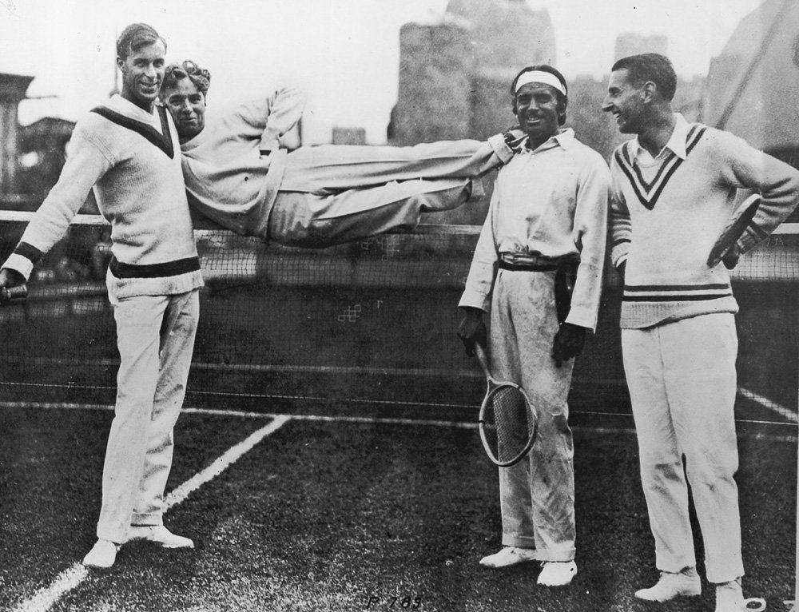
Hình 4: 'Big Bill' Tilden — Bậc thầy chiến thuật, người khai sinh cú giao bóng sấm sét Cannonball và người thống trị quần vợt thế giới suốt thập niên 1920.
There is nothing in the actual image of the animal on the
Hình 5: Bill Tilden cùng Charlie Chaplin và Douglas Fairbanks — Biểu tượng của quyền lực thể thao và đỉnh cao danh vọng văn hóa Mỹ thời kỳ hoàng kim.
logo that clearly establishes it as one or the other.
Chương 6: Mặc Để Chiến Thắng: Katharine Hepburn & René Lacoste Chapter 6: Dressed to Win: Katharine Hepburn and René Lacoste
Hướng tới chiến thắng: katharine hepburn và rené lacoste n bức ảnh đầu tiên của René Lacoste—vâng, có một người đàn ông có cái tên đó trước khi có áo sơ mi, áo khoác và cửa hàng—cho thấy anh ta cầm vợt trên tay khi mới 18 tuổi. Một chiếc khăn choàng phồng lên như bánh trứng đường chảy giữa ve áo khoác của anh ấy. Trang phục gợi lên cảm giác thích thú giống như khi Lacoste chơi quần vợt. Việc che cổ táo bạo này là lời tuyên bố rằng quần vợt không chỉ là về thể lực, chiến thuật, kỹ năng hay sự phối hợp; nó cũng là về phong cách. Nó đòi hỏi sự táo bạo để đi tới những giới hạn bên ngoài của những gì có thể. Có lẽ thuật ngữ “ascot” hay thậm chí là “khăn quàng cổ” sẽ thích hợp hơn cho món đồ này mà Lacoste đã thắt nút rất cầu kỳ, nhưng “foulard” là lựa chọn được lựa chọn nhiều nhất vì nó gợi lên một chất liệu nhẹ và linh hoạt. Tính không trọng lượng và chuyển động trong không khí của nó là tinh hoa của một cú giao bóng đẹp mắt hoặc của một pha lao vào lưới hiệu quả.
“you-ah shortah than he is, and he is tallah than you-ah, so you two change seats. Move to wheah he is, and then I will be able to see—at least slightly bettah.” She did not say “please.” And it is impossible to capture her accent phonetically, because no one else except for her sister—Marion Ellsworth, whom I once heard ordering a half pound of Dover sole in Kaye’s Fish Market in West Hartford, Connecticut, where their family was like royalty, and whose intonation made me expect the man behind the counter to be Spencer Tracy—spoke in that mix of upper-class London and New England Yankee, and with that deep voice and unflinching authority. I did not have to turn around to know that the woman instructing us was Katharine Hepburn. And my wife, another Katharine, and I did exactly as commanded. The curtain would soon be going up at the Goodspeed Opera House—an ornate Victorian building with wedding-cake architecture on the Connecticut River—and it made sense that the great nonagenarian actress was there, as she summered in Fenwick, an exclusive coastal enclave nearby. Still, as the heavy red velvet curtain rose to reveal the stage, I was gobsmacked when the Katharine behind us placed her two small feet in white tennis socks on each of my Katharine’s shoulders. She planted her heels firmly with her toes pointing up. So there I sat, Katharine Hepburn’s left foot on Katharine Weber’s left shoulder, so close that I could be certain it was odorless. I could pay no attention whatsoever to the first act of the musical comedy; I kept thinking that those were the feet that went down the river with Humphrey Bogart in African Queen. Then there was an intermission, and my wife felt she had earned the right to speak to the woman who had used her shoulders as a
Ngày xửa ngày xưa, trang phục quần vợt phải có sự sang trọng nhất định. Những bộ trang phục được mặc ở Anh vào thế kỷ XVI bởi các nhà quý tộc chơi trò chơi jeu de paume của Pháp tại Hampton Court mang lại ấn tượng về các cận thần đang đấu súng. Tôi sẽ nói từ swashbuckling là thích hợp. Với mái tóc dài, kiểu trang phục mặc định, trong chiếc áo khoác bó sát có diềm xếp nếp màu trắng xòe ra từ cổ áo, quanh vai, ở khuỷu tay và quanh vòng eo săn chắc, những vận động viên thể thao này toát lên sự tự tin. Những người này mặc trang phục lộng lẫy của họ với sự tự chủ. Họ không chỉ mặc những chiếc áo vừa vặn mà còn cả những chiếc quần bó sát, có thể là da lộn, cuộn lên quá đầu gối, vì vậy, một môn thể thao đòi hỏi kỹ năng tuyệt vời cho dù tay vợt mặc gì sẽ mang tính giải trí cao nhất. Phụ nữ chưa chơi quần vợt nhưng đàn ông là những người sành thời trang.
footrest. She thanked her first for her generosity to Planned Parenthood, causing the infamous Kate to bellow, “The problem is the goddamn Catholic Church!” Then Katharine Weber explained that when making sure people spelled her name correctly, she referred to Miss Hepburn. The actress asked, “Were you named for me, deah?” My wife replied that she was named for her grandmother, the composer who was professionally Kay Swift but whose real name was Katharine Faulkner Swift. This information did not interest the gal who broke barriers with her tennis clothes. That style of socks had once been a detail in a major fashion statement. Katharine Hepburn had, in the 1952 movie Pat and Mike, changed forever the way socialites could dress for tennis. The cushioned socks that went up the ankle just a couple of inches were intrinsic to the look. They were a declaration of the need for functionality, with their roughness and toughness. The socks, though,
Katharine Hepburn không nổi tiếng là người rụt rè.
were a minor detail. The trendsetter was the shorts.
Walter Clopton Wingfield, sĩ quan quân đội xứ Wales được cho là đã phát minh ra môn quần vợt sân cỏ (Lawn Tennis), đã mặc những bộ trang phục lạ thường. Điều mang lại cho họ sự khác biệt là họ đã lao đi mà không hề có một chút hào nhoáng nào. Wingfield ưa chuộng những chiếc áo chẽn, vừa khít và không có tay áo, bằng vải dày với kiểu dệt phức tạp, được buộc chặt bằng những chiếc cúc thêu. Anh ta sẽ xắn tay áo sơ mi cotton rộng trên khuỷu tay, để lộ cẳng tay phồng lên, điều đó chứng tỏ rằng anh ta là một quý tộc và một chàng trai cứng rắn, tuân theo các quy tắc về phong cách nhưng cũng mạnh mẽ và thoải mái. Anh ta đội chiếc mũ nồi theo một góc độ vui nhộn, thắt khăn quàng cổ theo phong cách quân đội, đồng thời cắt tỉa bộ ria mép và bộ râu nhọn. Đồng thời, anh ta có thân hình của một hậu vệ bóng đá Mỹ. Sự kết hợp giữa tính trần tục và vóc dáng oai nghiêm đó chắc chắn khiến bất kỳ đối thủ nào cũng phải khiếp sợ.
Pat and Mike, directed by George Cukor, was written by Garson Kanin and Ruth Gordon, friends of both Hepburn and Spencer Tracy. It was created specifically to showcase Hepburn’s skills at tennis and golf. As Pat Pemberton, the actress plays both sports superbly, and what she wears is equally superb. Women like Hepburn’s mother wore long white skirts they had to hold up so as not to trip on the hems when running around the court. Until Hepburn wore shorts in Pat and Mike, female players were always in tennis dresses, albeit shorter than in earlier years and easier to play in than those outfits that looked like ball gowns. And what shorts Hepburn wears! They are high-waisted and, well, short. Just as when she laced her forehand drive crosscourt, Katharine Hepburn was not timid. Her blouse in Pat and Mike has a high crew neck that gives the modest impression of a religious habit. But its useless pockets with a button over
Phụ nữ hồi đó mặc váy dài bồng bềnh và đội mũ mềm, cho đến khi Helen Wills, ngôi sao của những năm 1920, mặc váy xếp ly và áo sơ mi màu gamine. Cô ấy có niềm vui sống của một cô nàng flapper trong tiểu thuyết của F. Scott Fitzgerald. Chúng ta hình dung cô ấy đang chơi đùa với cảm giác vui vẻ giống như ai đó đang nhấm nháp sâm panh vào lúc hoàng hôn trên Riviera. Nhưng phong cách khó cưỡng lại nhất trong số các tay vợt nữ nổi tiếng là của Althea Gibson, khoảng ba thập kỷ sau. Vận động viên người Mỹ da đen này, người đã phá bỏ rào cản về màu sắc, trong cả quần vợt và chơi gôn, đã mặc váy và áo ngụ ý một cuộc sống giản dị. Quần áo của cô ấy cũng tự nhiên như nụ cười của cô ấy.
each of her breasts are provocative. Hepburn’s clothes are as audacious as she is. Designed so a woman could really play the game at her
Có một bức ảnh chụp Gibson tại Giải vô địch đơn nữ Wimbledon năm 1957 khi Nữ hoàng Elizabeth II tặng bà chiếc Đĩa nước hoa hồng Venus. Nữ hoàng mỉm cười, đội một chiếc mũ mùa hè mềm mại, hai sợi ngọc trai, hoa tai ngọc trai, một chiếc váy hoa khoe khe ngực vừa phải ở mức mà vị trí của bà cho phép (có thể nhiều hơn một chút) và đeo găng tay trắng đến khuỷu tay. Một người phụ nữ da đen cao, gầy ăn mặc để giành chiến thắng trong trò chơi, Gibson hoàn toàn là chính mình như nữ hoàng là một vị vua.
best, they reveal determination and athleticism in lieu of the “girly-girly” style of many of her contemporaries.
Trong quần vợt nam thời kỳ hiện đại, René Lacoste đã tạo nên phong cách với trang phục như tấm khăn choàng đó. Anh ấy đã thể hiện một hình dáng thanh lịch trong và ngoài sân đấu trước khi phát triển chiếc áo đấu cùng tên, với logo loài bò sát tượng trưng cho sức mạnh và sự ngầu.
Hepburn was dignified however short her shorts.
Trên thực tế, quần áo không tạo nên đàn ông, nhưng nếu ai đó bắt đầu có sự tinh tế thì việc ăn mặc phô trương có thể góp phần tạo nên tác động tổng thể, và Lacoste—người, trong số những thứ khác, là một trong những tay vợt giỏi nhất thời đó—là một điều kỳ diệu.
Pat Pemberton’s skill at sports combined with her mischievousness make her utterly charming.
Với mái tóc đen thẳng và chiếc mũi cao ngạo nghễ, theo tiêu chuẩn châu Âu, anh ta rất kỳ lạ. Anh ấy nhấn mạnh vẻ ngoài Byronic của mình với bộ quần áo có họa tiết pizazz. Chiếc áo blazer anh ấy mặc trong hình có khăn choàng rất độc đáo. Trong khi các tay vợt ngày nay sẽ mặc áo khoác giữ ấm làm bằng vải tổng hợp thì thứ mà Lacoste mặc để giữ cho cơ bắp của anh ấy không bị lạnh và căng cứng là một kiệt tác của đồ may mặc. Nó có thể đồng thời được điều chỉnh phù hợp với cơ thể của anh ấy và đủ rộng để tạo sự thoải mái. Các thuật ngữ được sử dụng cho trang phục nam— “phù hợp với tiếng Anh”, “không có cấu trúc”, “trang trọng”, “thông thường”—tất cả đều áp dụng. Chúng trái ngược nhau, cũng như cách hoạt động của các nút trên áo khoác, khiến chiếc áo khoác có vẻ vừa có hai hàng khuy—mà người Pháp gọi là “chéo”— vừa có một hàng khuy. Thật hoàn hảo đối với một tay vợt có thể thực hiện các cú đánh nền bằng phẳng, cắt lát hoặc bằng xoáy lên—luôn không thể đoán trước được. Có tất cả những điều đó trong túi thủ thuật của bạn là bản chất của một môn quần vợt giỏi và có lẽ cả của việc ăn mặc sành điệu.
Her straitlaced fiancé gets on her nerves whenever she is competing, because he hopes she will quit the game, marry him, and settle down. Meanwhile, a colorful sports reporter, Mike Conovan—played by Spencer Tracy, Hepburn’s love in real life—falls for Pat. Those tennis shorts with their waistband hiked above her midriff and the interesting top are part
René Lacoste luôn ăn mặc sang trọng.
of what makes Pat exactly the sort of rebellious woman this ruffian finds irresistible. The cameo roles of Gussie Moran, Don Budge, and Alice Marble—tennis greats of the epoch, dressed more traditionally—add to the “wow” factor. The tennis scenes were shot at the Cow Palace, in California, just right for the actress/athlete to do her stuff.
Lacoste đã phát triển không chỉ những cú đánh nền đó mà còn cả những cú giao bóng và vô lê hạng nhất, vào thời điểm anh ấy chụp bức ảnh này. Đối với người Pháp bản địa, sinh năm 1904, mọi chuyện đều bắt đầu ở Anh. Khi anh mười lăm tuổi, anh cùng cha đi du lịch đến đó và lần đầu tiên cầm được một cây vợt. Anh ấy là một người học hỏi nhanh chóng, chơi ở Wimbledon chỉ ba năm sau, năm anh ấy được miêu tả là rất bảnh bao. Cây vợt ở đây chỉ đơn giản là một biểu tượng, được cầm ở cổ thay vì ở báng cầm, tay trái đút trong túi theo phong cách của một quý ông quê mùa. Anh ấy đi một đôi giày tennis trắng hoàn hảo và một chiếc quần trắng dài, có cổ tay, hơi rộng thùng thình—ngắn theo tiêu chuẩn của Savile Row nhưng lý tưởng cho quần vợt. Nếu còn quá sớm để anh ấy trông giống một kẻ mạnh mẽ—Lacoste đã thua ở vòng đầu tiên vào năm đó— thì vào năm sau, anh ấy đã đứng thứ tư tại Wimbledon, điều này đã giúp anh ấy có được một suất tham dự Giải vô địch Hoa Kỳ. Ở tuổi 19, anh ấy đã ở đẳng cấp cao hơn trong thể thao.
women’s tennis clothing had come a long way since women started playing the sport in 1873, and Katharine Hepburn donning those shorts and being seen bare-legged was a vital step in that evolutionary process. At first, female players had covered their entire bodies except for their heads and hands. Underneath their high-necked long-sleeved blouses and their long bustle skirts, they bound their bodies in tight, hard corsets. The undergarments constrained them, but comfort and ease were beside the point; you would not violate the dress code or show flab any more than you would grunt the way players do today. Whatever the heat and humidity, flannel and serge were the norm, sometimes with fur. Most of the outfits included neckties, perhaps because they were de rigueur for men as well. And skimmer hats were essential—these being straw boaters with very wide brims, often with colorful bands. At first, the flowing wool of these outfits was in muted but lush blues, mauves, and golds. That changed only in 1884. At the
Từ đó, chiến thắng nối tiếp chiến thắng. Năm 1925, Lacoste đã giành chức vô địch ở cả giải vô địch Pháp và Wimbledon, giành được các danh hiệu đánh đơn như ông đã tiếp tục làm được trong nhiều năm. Anh đã đánh bại Bill Tilden trong trận chung kết của cả giải vô địch Pháp và Mỹ. Cuộc chinh phục của ông bao gồm các tay vợt huyền thoại Jean Borotra và Bill Johnston. Anh ấy đã làm cho đất nước của mình tự hào ở Davis Cup. Mọi người gọi anh là “cỗ máy quần vợt”. Anh ấy thường đứng ở đường cuối sân, thực hiện những cú đánh nền sâu với độ chính xác tuyệt đối và có phương pháp đến mức anh ấy giữ một cuốn sổ để ghi lại điểm yếu của đối thủ.
Wimbledon Ladies’ Lawn Tennis Championship that year, Maud Wilson won the event wearing solid white. Her bustled two-piece dress, so long that it swept along the grass as she ran, looked as pure as snow. It was discovered that white did not show sweat stains the way that colors did, and so it became de rigueur. When Katharine Hepburn donned those shorts in regulation white, she did so with grace and quiet confidence. And no one argued with her. She had the same power and radiant charm as when she instructed the young couple at the theatre to switch seats; resistance was out of the question.
Khi bắt đầu tích lũy các danh hiệu, Lacoste, vốn đã quan tâm đến quần áo, muốn thiết kế lại những gì đàn ông mặc trên sân. Xếp số 1 thế giới vào các năm 1926 và 1927, vô địch các giải Grand Slam, ông tự hỏi tại sao mình lại phải mặc áo sơ mi dài tay cũng như cà vạt và quần dài trong mọi cuộc thi đấu quan trọng. Những chiếc áo sơ mi cần thiết được cắt khá giống những chiếc áo nam mặc với vest, ngoại trừ đối với quần vợt, chúng được cài cúc để giữ cho cổ áo không bay ra ngoài khi các tay vợt chạy. Lacoste để ý thấy một người bạn mặc áo polo trong một trận đấu. Bạn của anh ấy, Hầu tước de Cholmondeley, có tên tuổi và địa vị xã hội khiến cách anh ấy làm mọi việc có thể được chấp nhận ngay lập tức, vì vậy Lacoste cảm thấy thoải mái khi noi gương anh ấy. Chiếc áo polo, có thể kéo và cởi qua đầu, tiện dụng hơn những chiếc áo sơ mi yêu cầu mở và đóng một hàng cúc dài. Tay áo ngắn của nó rất hợp lý vì chúng giúp khuỷu tay và cẳng tay không bị vướng víu. Nó ôm sát cơ thể hơn so với áo sơ mi, với chất liệu rộng rãi.
Katharine Hepburn helped pave the way for that comfortable outfit Althea Gibson wore in the presence of the queen. At last, clothes gave female players the physical freedom that enabled them to play their best. And René Lacoste’s stylishness was a mark of liberation in another way. A male athlete could be dapper without being a fop. These two great sportspeople dressed as they played: with bravura. They and Althea Gibson, the three of them exuding personal forcefulness, became models for generations to come.
Lacoste quyết định sản xuất những chiếc áo sơ mi kiểu polo theo đúng cách bởi thợ may người Anh của mình. Một số bằng cotton và một số bằng len, cả hai chất liệu đều “thoáng khí”. Điều quan trọng nhất đối với Lacoste là có thể chạy dễ dàng hơn và những chiếc áo này chính là câu trả lời.
suzanne
Những chiếc áo sơ mi được tay vợt polo người Anh mặc ở Ấn Độ trong thời đại Victoria đã được sản xuất ở Mỹ kể từ khi John Brooks, cháu trai của người sáng lập Brooks Brothers, nhìn thấy chúng được những tay vợt polo ở Anh mặc vào cuối thế kỷ 19. Thuộc tính của nó rất nhiều. Phần đuôi được cho là để giữ cho chiếc áo sơ mi được nhét vào phía sau trong khi phần viền ngắn hơn ở phía trước giúp thoáng khí một cách vô hình. Người thợ may ở London đã thực hiện rất tốt thiết kế của Lacoste, nhưng Mỹ mới là nơi thử sản xuất những chiếc áo sơ mi này với số lượng lớn. Vào thời mà Brooks Brothers chỉ có một vài cửa hàng—những cửa hàng lớn ở New York và Boston—bất cứ thứ gì nó kinh doanh đều có phong cách và phả hệ. Họa sĩ Winslow Homer hiếm khi rời xưởng vẽ của mình ở Maine ngoại trừ hai lần một năm khi ông đến Boston để cập nhật tủ quần áo của mình tại Brooks; những gì cửa hàng bán được xã hội chấp nhận, được làm tốt và hấp dẫn về mặt thẩm mỹ. René Lacoste lần đầu tiên mặc chiếc áo polo của Brooks Brothers trên sân tại giải Mỹ mở rộng năm 1927.
lenglen
Lacoste kết hôn với một nhà vô địch chơi gôn, có con, và khi sức khỏe khiến ông phải nghỉ thi đấu quần vợt, Lacoste bắt đầu kinh doanh những chiếc áo sơ mi đó làm sản phẩm chính. Công ty của ông bắt đầu sản xuất và tiếp thị áo sơ mi một cách độc lập. Chất lượng hoàn hảo, phong cách bảnh bao. Sự thành công của áo sơ mi và hàng loạt mặt hàng liên quan đã được duy trì kể từ đó.
oday, most tennis aficionados think of “Suzanne Lenglen” as the smaller of the two stadium courts at Roland Garros, at the edge of Paris’s Bois de Boulogne, where annually, starting in late May, the French Open is played. Important matches take place on Suzanne Lenglen, and many people prefer being here than at Philippe Chatrier—the “championship court” on which the finals are played—because the stands are smaller, and a fan is never too far from the scene of the action. But if you ask those who go to Roland Garros or see the courts there on television who Suzanne Lenglen was, very few would know the answer. Nor, for that matter, would they be likely to tell you that Roland Garros was a French fighter pilot in World War I who had been the first to shoot down a German aircraft and had been rumored to have shot down a Zeppelin before being killed himself at the end of the war. A little investigating makes clear why Suzanne Lenglen was worthy of having a court named for her. We discover not only that she demonstrated consummate artistry in the way she played her sport, but also that she
cá sấu hay cá sấu? Con vật nào trên sản phẩm Lacoste?
inspired a marvelous ballet, breakthroughs in fashion design, and splendid prose. Lenglen was born in Paris in 1899. In 1921, when ranking was inaugurated, she was the first No. 1 female singles champion, a position she held
Đây là một chủ đề được tranh luận sôi nổi. Hầu hết mọi người đều chắc chắn rằng họ có câu trả lời đúng—họ đặt tên cho loài bò sát nào trong số hai loài bò sát.
until 1926. She won the French championships year after year and Wimbledon six times. At one point, she was victorious in some one hundred and eighty consecutive matches. She was known as “the Goddess,” mainly because she comported herself like one. She was by no means a classical beauty, but she had spark, as was evident in the dress designed by the couturier Jean Patou for what was called the battle of the century. This was a tennis match played at Cannes in February 1926. If ever tennis was theater, this was the occasion. It even had a surprise second ending, one that caused the spectators to return to their seats just after abandoning them.
Trong chuyến đi tới Boston năm 1923 cùng đội Davis Cup, René Lacoste đã nhìn thấy một chiếc vali làm bằng cá sấu. “Nếu bạn thắng trận đấu, tôi sẽ lấy một quả cho bạn,” huấn luyện viên Alan Muhr của anh ấy nói một cách mỉa mai trước trận đấu. Giai thoại đó đã khai sinh ra cái tên “The Alligator” xuất hiện lần đầu tiên trong một bài báo trên tờ Boston Evening Transcript, và nó trở thành biểu tượng của thương hiệu.
This biography has been all but forgotten.
Vì vậy, chính cá sấu như chiếc vali đã tạo ra biệt danh “cá sấu”. Càng làm tăng thêm sự nhầm lẫn, trong khi René Lacoste được gọi là “cá sấu” ở Boston thì ở Pháp, ông lại trở thành “con cá sấu”. Trong cáo phó của mình, con trai ông giải thích rằng một người bạn của Lacoste đã thêu một con cá sấu lên chiếc áo blazer mà Lacoste mặc trên bộ quần áo tennis của ông để tôn vinh tên ông. Tuy nhiên, một số quảng cáo bằng tiếng Anh của công ty lại sử dụng khẩu hiệu “Hẹn gặp lại…” để thiết lập vần với cá sấu.
That match between Lenglen and the American Helen Wills Moody was thrilling from the start, but it was in the all-important seventh game of the first set when the scene on court became spellbinding. For many players, this game has mythic importance. If it begins with the score at 5–1, the seventh game can determine the winner of the set. If it starts at 4–2, it ends either with one player far ahead and the other far behind at 5–2, or at the much tighter 4–3. And if the seventh starts at 3–3, its winner will have taken the
Không có gì trong hình ảnh thực tế của con vật trên logo có thể xác định rõ ràng nó là con vật này hay con vật khác.
lead at a vital moment close to the end of the set. Wills was the server of this crucial
"bạn-ah lùn hơn anh ấy, và anh ấy cao hơn bạn-ah, nên hai người đổi chỗ cho nhau. Hãy di chuyển đến chỗ anh ấy như thế nào, và sau đó tôi sẽ có thể nhìn thấy—ít nhất là một chút bettah."
game and needed it desperately, as she was down 2–4. None other than Claude Anet, who as Jean Schopfer had won the French Championships two years before she had, wrote about it:
Cô ấy không nói “làm ơn”. Và không thể nắm bắt được giọng nói của cô ấy về mặt ngữ âm, bởi vì không ai khác ngoại trừ chị gái cô ấy—Marion Ellsworth, người mà tôi từng nghe nói đã đặt mua nửa pound đế Dover ở Chợ Cá Kaye ở West Hartford, Connecticut, nơi gia đình họ giống như hoàng gia và ngữ điệu khiến tôi mong đợi người đàn ông đứng sau quầy là Spencer Tracy—nói bằng sự pha trộn giữa tầng lớp thượng lưu London và New England Yankee, với giọng nói trầm và uy quyền không hề nao núng.
Seventh game. Yet, they are harshly battling it out. Every point won is a struggle. Helen Wills’ serves swish across the court. She is hitting with all her might, as per W. T. Tilden’s recommendations. But is any ball really capable of getting past Suzanne Lenglen? Any she could possibly miss? She flies across the court with her signature grace, lightness of foot and seeming lack of effort. The ball heads back over the net—not so quickly today, just enough to keep her adversary on her toes. All the same, every stroke requires preparation and a calculated move to score. After a lengthy rally, Helen Wills positions herself admirably and lands her first serve. The two that follow come fast—Suzanne sends them right into the net. Forty for Wills. Then Suzanne tricks her rival with a ball she cannot reach in time. But Wills takes the game with a magnificent volley that wrong-foots Suzanne. Four games to three, with Suzanne in the lead.
Không cần quay lại tôi cũng biết người phụ nữ đang hướng dẫn chúng tôi là Katharine Hepburn. Và vợ tôi, một Katharine khác, và tôi đã làm đúng như lời dặn. Bức màn sẽ sớm được kéo lên tại Nhà hát Opera Goodspeed—một tòa nhà thời Victoria được trang trí công phu với kiến trúc bánh cưới trên Sông Connecticut—và thật hợp lý khi nữ diễn viên vĩ đại chưa đến tuổi này đã ở đó, khi cô ấy đi nghỉ ở Fenwick, một vùng đất ven biển độc quyền gần đó. Tuy nhiên, khi tấm màn nhung đỏ nặng nề được vén lên để lộ sân khấu, tôi đã sửng sốt khi Katharine phía sau chúng tôi đặt hai bàn chân nhỏ của cô ấy trong đôi tất tennis màu trắng lên mỗi vai Katharine của tôi. Cô đặt gót chân vững chắc với các ngón chân hướng lên trên.
Before “the battle of the century,” Helen Wills
Thế là tôi ngồi đó, chân trái của Katharine Hepburn đặt trên vai trái của Katharine Weber, gần đến mức tôi có thể chắc chắn rằng nó không có mùi. Tôi không thể chú ý gì đến màn đầu tiên của vở hài kịch âm nhạc; Tôi cứ nghĩ đó là đôi chân đã đi xuống sông cùng Humphrey Bogart trong Nữ hoàng Châu Phi. Sau đó là thời gian tạm dừng và vợ tôi cảm thấy mình có quyền nói chuyện với người phụ nữ đã dùng vai mình làm chỗ để chân. Đầu tiên, cô cảm ơn sự hào phóng của mình đối với Planned Parenthood, khiến Kate khét tiếng phải hét lên: “Vấn đề là ở Giáo hội Công giáo chết tiệt!” Sau đó Katharine Weber giải thích rằng khi đảm bảo mọi người đánh vần đúng tên cô, cô sẽ gọi cô Hepburn. Nữ diễn viên hỏi, "Bạn đặt tên cho tôi phải không, chết?" Vợ tôi trả lời rằng cô ấy được đặt theo tên của bà ngoại, nhà soạn nhạc chuyên nghiệp là Kay Swift nhưng tên thật là Katharine Faulkner Swift. Thông tin này không khiến cô gái phá bỏ rào cản với bộ quần áo tennis của mình không quan tâm.
and Suzanne Lenglen presented very different personas walking onto the court.
Kiểu tất đó từng là một chi tiết trong một tuyên bố thời trang lớn. Katharine Hepburn, trong bộ phim Pat và Mike năm 1952, đã thay đổi mãi mãi cách ăn mặc của giới xã hội khi chơi quần vợt. Những đôi tất có đệm cao đến mắt cá chân chỉ vài inch là vẻ ngoài vô cùng ấn tượng. Chúng là lời tuyên bố về sự cần thiết của chức năng, với độ nhám và độ dẻo dai của chúng. Tuy nhiên, đôi tất chỉ là một chi tiết nhỏ. Người tạo ra xu hướng là quần short.
Despite that pivotal loss, Lenglen wins the first set, after which she drinks some cognac out of a silver flask handed to her by her mother. There is no sign that the alcohol has hampered Lenglen’s athleticism and tenacity: quite the opposite. By the fifth game of the second set, even though she is losing the set and is noticeably exhausted, she perseveres. Anet describes it with the knowledge of someone who knows the game inside out:
Pat và Mike, do George Cukor đạo diễn, được viết bởi Garson Kanin và Ruth Gordon, bạn của cả Hepburn và Spencer Tracy. Nó được tạo ra đặc biệt để giới thiệu kỹ năng chơi quần vợt và chơi gôn của Hepburn. Trong vai Pat Pemberton, nữ diễn viên chơi xuất sắc cả hai môn thể thao và trang phục cô mặc cũng xuất sắc không kém. Những người phụ nữ như mẹ của Hepburn mặc váy trắng dài, họ phải vén váy lên để không bị vấp mép khi chạy quanh sân. Cho đến khi Hepburn mặc quần đùi trong Pat và Mike, các tay vợt nữ luôn mặc váy tennis, mặc dù ngắn hơn những năm trước và dễ mặc hơn những bộ trang phục trông giống váy dạ hội.
She runs no risk, coolly calculating serves that draw her opponent toward the net and others that send her to the back of the court. From crossed backhand, to open, or a double bounce ball that catches her opponent off guard . .
Và Hepburn mặc quần short gì! Họ có eo cao và ngắn. Cũng giống như khi cô thực hiện cú đánh thuận tay chéo góc, Katharine Hepburn không hề rụt rè.
. We all watch in admiring awe, even though—
Chiếc áo cánh của cô ấy trong Pat và Mike có cổ cao, tạo ấn tượng khiêm tốn về một thói quen tôn giáo. Nhưng những chiếc túi vô dụng với một chiếc cúc trên mỗi bầu ngực của cô ấy thật khiêu khích. Trang phục của Hepburn cũng táo bạo như chính cô vậy. Được thiết kế để phụ nữ có thể thực sự chơi trò chơi một cách tốt nhất, chúng bộc lộ sự quyết tâm và tinh thần thể thao thay cho phong cách “nữ tính-nữ tính” của nhiều người cùng thời với cô ấy.
alas—these beautiful moves are all happening rather slowly. With just a hair more speed, the serves would be positively lethal.
Hepburn vẫn trang nghiêm dù mặc quần short ngắn.
The coup
Kỹ năng chơi thể thao của Pat Pemberton kết hợp với sự tinh nghịch khiến cô ấy trở nên vô cùng quyến rũ. Vị hôn phu khó tính của cô khiến cô lo lắng mỗi khi cô thi đấu, vì anh hy vọng cô sẽ bỏ cuộc chơi, kết hôn với anh và ổn định cuộc sống. Trong khi đó, một phóng viên thể thao đầy màu sắc, Mike Conovan—do Spencer Tracy thủ vai, tình yêu ngoài đời của Hepburn—phải lòng Pat. Chiếc quần short tennis với cạp quần cao quá phần giữa và phần trên thú vị là một phần khiến Pat chính xác là kiểu phụ nữ nổi loạn mà tên lưu manh này thấy không thể cưỡng lại được. Các vai khách mời của Gussie Moran, Don Budge và Alice Marble—những vận động viên quần vợt vĩ đại của thời đại, ăn mặc truyền thống hơn—làm tăng thêm yếu tố “wow”. Các cảnh quần vợt được quay tại Cow Palace, California, đúng lúc để nữ diễn viên/vận động viên thực hiện công việc của mình.
de foudre is within the narrative of this ultimately decisive set. The pace has quickened, and just when we think the energy level might have decreased, the two players come on full force, without showing a hint of lassitude or even seeming to catch their breath. Anet compares it to
trang phục quần vợt dành cho nữ đã đi một chặng đường dài kể từ khi phụ nữ bắt đầu chơi môn thể thao này vào năm 1873, và Katharine Hepburn mặc những chiếc quần đùi đó và để người ta thấy mình đi chân trần là một bước quan trọng trong quá trình tiến hóa đó. Lúc đầu, các tay vợt nữ phải che toàn bộ cơ thể ngoại trừ đầu và tay. Bên dưới những chiếc áo cánh dài tay cổ cao và chiếc váy dài bồng bềnh, họ buộc cơ thể mình trong những chiếc áo nịt ngực bó sát và cứng. Đồ lót hạn chế họ, nhưng sự thoải mái và dễ chịu không phải là vấn đề; bạn sẽ không vi phạm quy định về trang phục hay khoe khoang nhiều hơn những gì bạn càu nhàu như cách các tay vợt ngày nay làm. Bất kể nhiệt độ và độ ẩm như thế nào, vải flannel và serge là tiêu chuẩn, đôi khi có lông thú. Hầu hết các bộ trang phục đều bao gồm cà vạt, có lẽ vì chúng cũng bắt buộc đối với nam giới. Và những chiếc mũ skimmer rất cần thiết—đây là những chiếc mũ rơm có vành rất rộng, thường có những dải màu sặc sỡ.
A fight to the death, that will only end when one of these heroic girls falls, lifeless, at our feet. The emotions ripping through us are akin to those the Romans felt during a fight between gladiators. It is no longer a thing of pleasure or of joy. An undefinable sense of anxiety has us glued to our seats, panting right along with the two women fighting it out in the ring. 103
Lúc đầu, chất liệu len mềm mại của những bộ trang phục này có màu xanh lam, hoa cà vàng nhạt nhưng tươi tắn. Điều đó chỉ thay đổi vào năm 1884. Tại Giải vô địch quần vợt sân cỏ (Lawn Tennis) nữ Wimbledon năm đó, Maud Wilson đã giành chiến thắng trong trang phục màu trắng trơn. Chiếc váy hai dây bồng bềnh của cô dài đến mức quét dọc bãi cỏ khi cô chạy, trông trong trẻo như tuyết. Người ta phát hiện ra rằng màu trắng không để lại vết mồ hôi như các màu khác, và do đó nó trở nên bắt buộc. Khi Katharine Hepburn mặc chiếc quần short màu trắng theo quy định, cô ấy đã làm điều đó với vẻ duyên dáng và sự tự tin thầm lặng. Và không ai tranh cãi với cô ấy. Cô có sức mạnh và nét duyên dáng rạng ngời như khi hướng dẫn đôi bạn trẻ ở rạp đổi chỗ cho nhau; sự phản kháng đã không còn nữa.
Until now, Lenglen had been secure on her throne as the queen of tennis. But Wills goes after her with flawless strokes and lightning speed. Lenglen’s reaction, although she is visibly weak and exhausted,
Katharine Hepburn đã giúp mở đường cho bộ trang phục thoải mái mà Althea Gibson mặc trước sự chứng kiến của nữ hoàng. Cuối cùng, quần áo đã mang lại cho các tay vợt nữ sự tự do về thể chất để họ có thể thi đấu hết mình. Và phong cách của René Lacoste là dấu hiệu của sự giải phóng theo một cách khác. Một vận động viên nam có thể bảnh bao mà không cần phải là một kẻ lập dị. Hai vận động viên thể thao vĩ đại này ăn mặc khi họ thi đấu: với sự dũng cảm. Họ và Althea Gibson, ba người toát lên sức mạnh cá nhân, đã trở thành hình mẫu cho các thế hệ mai sau.
is to summon some inner force. Just as she appears to be failing, at the point of collapse, she bulldozes her way to victory.
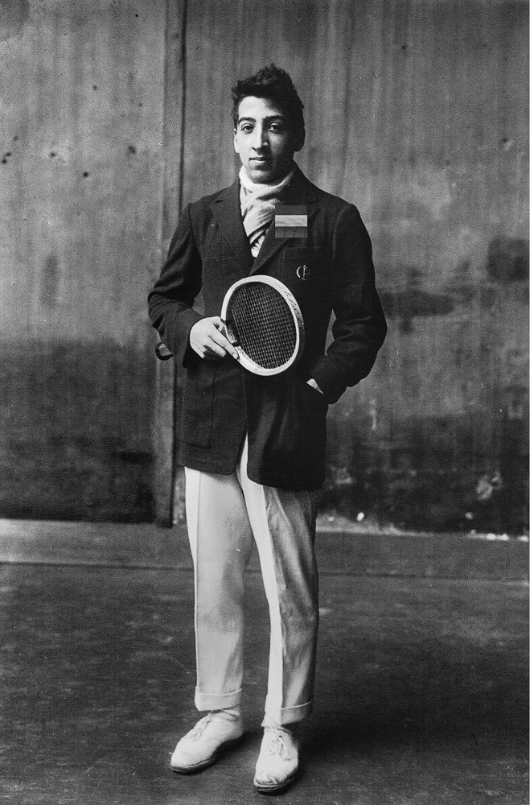
Hình 6: René Lacoste ('Cá Sấu') — Bộ não phân tích siêu việt, nhà vô địch Grand Slam kiêm nhà sáng lập thương hiệu áo thun polo huyền thoại.
An ecstatic victor; a gracious loser.
Phần III: Nữ Thần Suzanne Lenglen & René Lacoste — Cuộc Cách Mạng Thời Trang Sân Cỏ
Chương 7: Suzanne Lenglen ("La Divine") & Người Bạn Pierre Chapters 7 & 8: Suzanne Lenglen and Pierre
Ngày nay, hầu hết những người đam mê quần vợt đều nghĩ “Suzanne Lenglen” là sân nhỏ hơn trong số hai sân vận động ở Roland Garros, ở rìa Bois de Boulogne của Paris, nơi diễn ra giải Pháp mở rộng hàng năm, bắt đầu từ cuối tháng 5. Các trận đấu quan trọng diễn ra trên Suzanne Lenglen và nhiều người thích đến đây hơn là ở Philippe Chatrier—“sân vô địch” nơi diễn ra các trận chung kết—vì khán đài nhỏ hơn và người hâm mộ không bao giờ ở quá xa hiện trường trận đấu.
Or so it seemed. A minute or so after Lenglen is declared the winner, the announcement is countermanded by a tardy line call. The umpire has learned from the line judge that the call of the shot with which Wills was thought to have lost the match was “in,” not “out” as the umpire erroneously assumed. A moment after everyone thought the match was history, the audience becomes rapt with attention in this unexpected encore until Lenglen is declared victor yet again, this time accurately.
Nhưng nếu bạn hỏi những người đến Roland Garros hoặc xem các sân đấu ở đó trên truyền hình Suzanne Lenglen là ai, sẽ rất ít người biết câu trả lời. Về vấn đề đó, họ cũng sẽ không nói với bạn rằng Roland Garros là một phi công chiến đấu người Pháp trong Thế chiến thứ nhất, người đầu tiên bắn hạ một máy bay Đức và được đồn đại là đã bắn rơi một chiếc Zeppelin trước khi tự sát vào cuối cuộc chiến.
many people would write about the match, but it is Claude Anet who makes us feel as if we are at courtside. Anet keeps us at the edge of our seats in suspense as first one player leads, then another, and then back and forth again. We watch some of the points shot by shot and can imagine the sounds of balls whizzing by and the thwacks of the racquets striking them. “Un match historique: Suzanne Lenglen contre Helen Wills” is about as obscure as anything once in print could be. It is almost impossible to find a copy of the 1927 Revue de France, which is where Anet’s account of the match appeared. It is only because the Bibliothèque Nationale, in Paris, provided, during the time when COVID restrictions made it impossible to see original documents, a scan of this gem that we can read it today. For the sake of anyone who would love a phenomenal courtside report of one of the greatest tennis matches ever, it should not only
Một cuộc điều tra nhỏ sẽ làm rõ lý do tại sao Suzanne Lenglen lại xứng đáng được đặt tên cho một sân đấu. Chúng tôi phát hiện ra rằng cô ấy không chỉ thể hiện nghệ thuật hoàn hảo trong cách cô ấy chơi môn thể thao của mình mà còn truyền cảm hứng cho một vở ballet tuyệt vời, những đột phá trong thiết kế thời trang và văn xuôi tuyệt vời.
be reprinted in the original French but also translated into multiple languages. It enables us to see the fire and panache that made Suzanne Lenglen a unique force. Anet subsequently published a text devoted to Lenglen on her own in La Nouvelle Revue de France. This is more than “tennis writing”; it is a portrait in the tradition of Janet Flanner, Lytton Strachey, and other masters of brief biography. Lenglen’s fiery nature and her theatricality emerge. Anet also emphasizes her sense of style and concern for elegance and fashion on the tennis court—all the more remarkable in the era before tournament players were raking in huge sums of money in prizes and sponsorships. Anet’s interest in appearance may infuriate some readers even while it enchants others. What matters to the writer are the qualities that cause the star athlete to resemble one of Vuillard’s high-style ladies:
Lenglen sinh ra ở Paris vào năm 1899. Năm 1921, khi bảng xếp hạng được khánh thành, cô là nhà vô địch đơn nữ số 1 đầu tiên, vị trí mà cô giữ cho đến năm 1926. Cô đã giành chức vô địch Pháp năm này qua năm khác và Wimbledon sáu lần. Có thời điểm, cô đã giành chiến thắng trong khoảng 180 trận đấu liên tiếp. Cô ấy được biết đến với cái tên “Nữ thần”, chủ yếu là vì cô ấy cư xử như một nữ thần. Cô ấy hoàn toàn không phải là một vẻ đẹp cổ điển, nhưng cô ấy tỏa sáng, thể hiện rõ trong chiếc váy do nhà thiết kế Jean Patou thiết kế cho trận chiến được gọi là trận chiến thế kỷ. Đây là một trận đấu quần vợt diễn ra tại Cannes vào tháng 2 năm 1926. Nếu quần vợt từng là sân khấu thì đây chính là dịp này. Nó thậm chí còn có cái kết thứ hai đầy bất ngờ, khiến khán giả phải quay lại chỗ ngồi ngay sau khi bỏ rơi họ.
Miss Lenglen is surprisingly feminine. I imagined her as a bronze statue but she’s frankly more wax up close. It feels like stepping barefoot on to a marble slab only to discover it is an Oriental rug.
Cuốn tiểu sử này gần như đã bị lãng quên.
Instant photography (come to think of it, is posed photography
Trận đấu giữa Lenglen và Helen Wills Moody người Mỹ đã diễn ra gay cấn ngay từ đầu, nhưng đó là ở game thứ bảy cực kỳ quan trọng của set đầu tiên khi khung cảnh trên sân trở nên hấp dẫn. Đối với nhiều tay vợt, trò chơi này có tầm quan trọng thần thoại. Nếu trận đấu bắt đầu với tỷ số 5–1, ván thứ bảy có thể phân định thắng thua trong set. Nếu trận đấu bắt đầu với tỷ số 4–2, trận đấu sẽ kết thúc với một tay vợt dẫn trước và người kia bỏ xa với tỷ số 5–2 hoặc với tỷ số 4–3 chặt chẽ hơn nhiều. Và nếu hiệp thứ bảy bắt đầu với tỷ số 3–3, người chiến thắng sẽ dẫn trước vào thời điểm quan trọng gần cuối hiệp. Wills là người chủ của trận đấu quan trọng này và rất cần nó, khi cô ấy bị dẫn trước 2-4. Không ai khác ngoài Claude Anet, người giống như Jean Schopfer đã giành chức vô địch Pháp hai năm trước cô, đã viết về điều đó:
more realistic?) gives us an incomplete impression of people. They are warped by sunlight and shadow and the color of their eyes escapes us. Miss Lenglen’s irises contain grayish-green and twinkling blue. Her eyelids, which reach back toward her temples like those of a nocturnal bird of prey, make her face ever so charming. No instant photograph in the world is capable of reproducing that sort of beauty. Those eyes must hone in on the ball’s trajectory like an eagle hones in on a wood pigeon in flight . . . Miss Lenglen is much more at ease speaking of dresses and the pleasures of Parisian life than she is about her sport. She shakes nervously. She wants to talk; doesn’t anymore. Someone is waiting for her. Her girlfriends giggle about the so-called gigolos who squire her, crowd around her at the dance hall, at the tearoom, all across Paris . . . They are proud of her, and she is quite content to count them. It is a welcome distraction from her anxiety, a sort of neurasthenia; from her desire to be elsewhere and to achieve something that she cannot identify. Something that is without being and causes her to leave where she is and go somewhere else. Miss Lenglen is not an athlete at heart.
Trận thứ bảy. Tuy nhiên, họ đang chiến đấu gay gắt với nó. Mỗi điểm giành được là một cuộc đấu tranh. Những cú giao bóng của Helen Wills lướt ngang qua sân. Cô ấy đang đánh bằng tất cả sức lực của mình, theo khuyến nghị của W. T. Tilden. Nhưng có quả bóng nào thực sự có khả năng vượt qua Suzanne Lenglen? Có điều gì cô ấy có thể bỏ lỡ không? Cô ấy bay khắp sân với vẻ duyên dáng đặc trưng của mình, đôi chân nhẹ nhàng và dường như không cần nỗ lực. Bóng bay ngược qua lưới—hôm nay không quá nhanh, chỉ đủ để khiến đối thủ của cô ấy phải cảnh giác. Tương tự như vậy, mỗi cú đánh đều cần có sự chuẩn bị và di chuyển có tính toán để ghi điểm. Sau một pha giao bóng kéo dài, Helen Wills đã định vị bản thân một cách đáng ngưỡng mộ và thực hiện được cú giao bóng đầu tiên. Hai người theo sau lao tới rất nhanh—Suzanne đưa họ thẳng vào lưới. Bốn mươi cho di chúc. Sau đó, Suzanne đánh lừa đối thủ của mình bằng một quả bóng mà cô không thể chạm tới kịp. Nhưng Wills đã dẫn đầu trận đấu bằng một cú vô lê tuyệt đẹp khiến Suzanne không trúng chân. Từ bốn đến ba ván, Suzanne dẫn đầu.
In those days, it was not the norm for tennis players to make money or for them to be associated with a designer’s name. The public pairing of a recognized athlete with a particular make of clothing was forbidden. Whereas today there can be a full-page image in The New York Times of Jannick Sinner with a monogramed Gucci bag over his shoulder, with this flashy advertisement for the brand typical of the way consumers are guided to associate what they might buy with the prowess and charm of great athletes, it was out of the question a hundred years ago. Claude Anet points this out: “The Federation will not so much as allow Miss Lenglen to grant a
Trước “trận chiến thế kỷ”, Helen Wills và Suzanne Lenglen đã thể hiện những tính cách rất khác nhau khi bước vào sân.
dressmaker who may have made
Bất chấp trận thua quan trọng đó, Lenglen vẫn thắng set đầu tiên, sau đó cô uống một ít rượu cognac từ chiếc bình bạc do mẹ cô đưa cho. Không có dấu hiệu nào cho thấy rượu đã cản trở thể lực và sự bền bỉ của Lenglen: hoàn toàn ngược lại. Đến game thứ năm của set thứ hai, dù đang thua set và kiệt sức rõ rệt nhưng cô vẫn kiên trì. Anet mô tả nó với kiến thức của một người hiểu rõ về trò chơi:
her a dress at a bit of a discount, to publish a picture of her with her name on it!”
Cô ấy không mạo hiểm, tính toán những cú giao bóng lạnh lùng để kéo đối thủ về phía lưới và những người khác đẩy cô ấy về phía sau sân. Từ trái tay chéo, đến sơ hở, hay một quả bóng nảy đôi khiến đối thủ mất cảnh giác. . . Tất cả chúng ta đều theo dõi với sự ngưỡng mộ đầy ngưỡng mộ, mặc dù— than ôi—những chuyển động đẹp đẽ này đều diễn ra khá chậm. Chỉ cần tốc độ nhanh hơn một sợi tóc, những cú giao bóng chắc chắn sẽ gây chết người.
just as the account of the Lenglen–Wills match has been all but lost, it is almost impossible today to find a copy of Anet’s full-length biography of Suzanne Lenglen, which came out in 1927, subsequent to the article. 104 Even in Paris where it was published, the book, of which there were only three hundred and twenty copies, all numbered, is unavailable. It is noteworthy for being the first biography ever devoted to a single tennis player—all the more unusual for being about a woman while written by a man. Its scarcity is unfortunate, because it tells a fascinating story. Lenglen was trained by her father, who would place a handkerchief on the side of the court opposite from where she was hitting so she could use it as a target. She developed into not only a player with deadly accuracy, but also an ambitious, worldly woman, keenly aware of her own effect. Anet evokes sorceress-like charms in his description of a Wimbledon match held on July 5, 1919. Calling his subject “Suzanne” and her opponent “Mrs. Lambert-Chambers,” he contrasts them in a way that evokes a tennis game as a two-person costume play:
Cuộc đảo chính nằm trong câu chuyện của bộ phim mang tính quyết định cuối cùng này. Tốc độ đã nhanh hơn và ngay khi chúng tôi nghĩ rằng mức năng lượng có thể đã giảm, hai tay vợt đã dốc toàn lực mà không hề tỏ ra mệt mỏi hay thậm chí có vẻ như đang lấy lại hơi thở. Anet so sánh nó với
How different they are! Mrs. Lambert-Charles is tall, thin—skinny, even. No frills from head to toe, nothing recognizably female upon which the eye might enjoy lingering. She has one of those asexual bodies England
Một cuộc chiến đến chết, sẽ chỉ kết thúc khi một trong những cô gái anh hùng này ngã xuống, vô hồn dưới chân chúng ta. Những cảm xúc dâng trào trong chúng ta giống với những cảm xúc mà người La Mã cảm nhận được trong cuộc chiến giữa các đấu sĩ. Nó không còn là một điều vui thú hay niềm vui nữa. Một cảm giác lo lắng khó tả khiến chúng tôi dán mắt vào chỗ ngồi, thở hổn hển cùng với hai người phụ nữ.
insists on making into athletes. That said, hers is an impressive fighting machine, without the slightest bit of fat. She is all nerve and muscle, letting nothing distract her, certainly not in an attempt to please anyone. All her efforts and willpower are aimed at one thing: winning.
Cho đến thời điểm hiện tại, Lenglen vẫn đảm bảo được ngai vàng của mình với tư cách là nữ hoàng quần vợt. Nhưng Wills đuổi theo cô bằng những cú đánh hoàn hảo và tốc độ cực nhanh. Phản ứng của Lenglen, mặc dù rõ ràng là cô ấy yếu đuối và kiệt sức, là triệu tập một sức mạnh nội tâm nào đó. Ngay khi cô ấy dường như đang thất bại, ở thời điểm suy sụp, cô ấy đã lao vào con đường chiến thắng.
Across from her, a girl who has just turned 20, with a feminine body in its prime. She is agile, graceful, barely skimming the ground as she walks, her arms long and lean with attractive muscle play. Her runner’s lungs have all the space they need behind her ample bust. Wide hips support her slim waist. Her legs are appropriately vigorous. Her head is small, with a high forehead, a large nose, and light-colored eyes—green with yellow speckles, reminiscent of a panther—adorned with attractive eyebrows. The first time I laid eyes on her, she brought to mind a young version of Racine’s Athalie. I had a queen before me. Though there is nothing conventional or rigid about her. It is almost as if her young body is trembling with the kind of excessive life force that drives foals bouncing across prairies. In this case, however, her confidence and self-control are keeping it carefully restrained. She is delightfully dressed in a short, white dress that flatters her legs, with a slightly plunging neckline. Her arms are bare. Mrs. Lambert-Chambers is stuffed in a large skirt that is a bit too long and a high-collared blouse with elbow-length sleeves. She has a clear, quick mind and a sharp, immediate view of what move should be made in any given circumstance. She weighs her opponents up instantly, ascertaining their strengths and weaknesses. She knows how to break down a game, how to neutralize an attack and exactly when to play defense or offense. 105
Một người chiến thắng ngây ngất; một kẻ thua cuộc duyên dáng.
In the course of the match, Lenglen demonstrated that rather
Hoặc có vẻ như vậy. Khoảng một phút sau khi Lenglen được tuyên bố là người chiến thắng, thông báo bị phản đối bởi một cuộc gọi đường dây chậm trễ. Trọng tài đã được biết từ trọng tài biên rằng lệnh thực hiện cú sút mà Wills được cho là đã thua trận là “vào” chứ không phải “ra” như trọng tài đã nhầm tưởng. Một lúc sau khi mọi người nghĩ trận đấu đã là lịch sử, khán giả trở nên say mê chú ý trong phần encore bất ngờ này cho đến khi Lenglen được tuyên bố là người chiến thắng một lần nữa, lần này là chính xác.
than defend herself with her game, she would attack. After a shot to the back of Mrs. Lambert-Chambers’s side of the court, she would rush net, and when the ball came back far to her left, Lenglen would somehow manage to hit it with the wood of her racquet more than the strings and put it away. Time and again she would head to the net and win points decisively from that daring position. Because of her sterling tactics, she dominated the tennis world and
nhiều người sẽ viết về trận đấu, nhưng chính Claude Anet là người khiến chúng tôi cảm thấy như thể chúng tôi đang ở bên cạnh. Anet khiến chúng tôi hồi hộp ngồi ở mép ghế khi tay vợt đầu tiên dẫn đầu, sau đó là tay vợt khác, rồi lại qua lại. Chúng ta theo dõi một số điểm được bắn từng cú một và có thể tưởng tượng ra âm thanh của những quả bóng bay qua và tiếng đập của vợt đánh vào chúng.
became one of the most popular of all female athletes. Her name appeared in a vast number of newspaper articles and she was photographed profusely. The filmmaker Alain Gerbault made a scene of himself landing on a remote island in the Galápagos and encountering a man who fled Europe years earlier to live as a sort of savage. The man has one question of his unexpected visitor from France: “Is Suzanne Lenglan still a champion?” Indeed she was.
“Un match history: Suzanne Lenglen contre Helen Wills” gần như không rõ ràng như bất cứ điều gì từng được in ra. Hầu như không thể tìm thấy một bản sao của Revue de France năm 1927, nơi xuất hiện tài khoản của Anet về trận đấu. Chỉ vì Bibliothèque Nationale, ở Paris, đã cung cấp, trong thời điểm các hạn chế về COVID khiến chúng ta không thể xem các tài liệu gốc, bản quét của viên ngọc quý này mà chúng ta có thể đọc nó ngày nay. Vì lợi ích của những ai yêu thích bản tường thuật phi thường về một trong những trận đấu quần vợt vĩ đại nhất từ trước đến nay, nó không chỉ nên được in lại bằng nguyên bản tiếng Pháp mà còn được dịch sang nhiều thứ tiếng. Nó cho phép chúng ta nhìn thấy ngọn lửa và sự phô trương đã khiến Suzanne Lenglen trở thành một thế lực độc nhất.
claude anet cites a British journalist: “[I]n spite of her athletic prowess, Suzanne Lenglen remains supremely feminine.” She stood on
Anet sau đó đã xuất bản một văn bản dành riêng cho Lenglen trên La Nouvelle Revue de France. Điều này còn hơn cả “viết quần vợt”; đó là một bức chân dung theo truyền thống của Janet Flanner, Lytton Strachey, và những bậc thầy về tiểu sử tóm tắt khác. Bản chất bốc lửa và tính sân khấu của Lenglen nổi lên. Anet cũng nhấn mạnh ý thức về phong cách cũng như mối quan tâm của cô ấy đối với sự sang trọng và thời trang trên sân tennis—tất cả những điều này càng đáng chú ý hơn trong thời đại trước khi các tay vợt tham gia giải đấu kiếm được số tiền khổng lồ từ các giải thưởng và tài trợ.
her toes like a dancer. Beyond that, she played tennis with exceptional intelligence. Anet writes:
Sự quan tâm đến ngoại hình của Anet có thể khiến một số độc giả tức giận ngay cả khi nó lại mê hoặc những người khác. Điều quan trọng đối với người viết là những phẩm chất khiến vận động viên ngôi sao giống một trong những quý cô có phong cách cao cấp của Vuillard:
She has a clear, quick mind and a sharp, immediate view of what move should be made in any given circumstance. She weighs her opponents up instantly, ascertaining their strengths and weaknesses. She knows how to break down a game, how to neutralize an attack and exactly when to play defense or offense. 106
Cô Lenglen nữ tính một cách đáng ngạc nhiên. Tôi tưởng tượng cô ấy như một bức tượng đồng nhưng thực sự cô ấy giống như sáp hơn khi nhìn gần. Cảm giác giống như bước chân trần lên một phiến đá cẩm thạch rồi phát hiện ra đó là một tấm thảm phương Đông.
It
Chụp ảnh tức thì (nghĩ mà xem, chụp ảnh tạo dáng có thực tế hơn không?) cho chúng ta ấn tượng không trọn vẹn về con người. Chúng bị biến dạng bởi ánh sáng mặt trời và bóng tối và màu mắt của chúng không còn phù hợp với chúng ta nữa. Tròng mắt của cô Lenglen có màu xanh xám và xanh lam lấp lánh. Mí mắt dài về phía thái dương như mi mắt chim săn mồi về đêm khiến khuôn mặt cô trở nên duyên dáng vô cùng. Không có bức ảnh lấy liền nào trên thế giới có thể tái tạo được vẻ đẹp đó. Đôi mắt đó phải tập trung vào quỹ đạo của quả bóng giống như một con đại bàng chăm chú vào một con chim bồ câu gỗ đang bay. . .
seems she resembled a panther.
Cô Lenglen cảm thấy thoải mái hơn nhiều khi nói về trang phục và những thú vui của cuộc sống ở Paris hơn là về môn thể thao của mình. Cô ấy run rẩy lo lắng. Cô ấy muốn nói chuyện; không còn nữa Có ai đó đang đợi cô. Các bạn gái của cô ấy cười khúc khích về những người được gọi là trai bao, những người vây quanh cô ấy ở vũ trường, phòng trà, khắp Paris. . . Họ tự hào về cô ấy, và cô ấy khá hài lòng khi đếm chúng. Đó là một sự xao lãng đáng hoan nghênh khỏi sự lo lắng của cô ấy, một dạng suy nhược thần kinh; từ mong muốn được đến nơi khác và đạt được điều gì đó mà cô ấy không thể xác định được. Một cái gì đó không tồn tại và khiến cô ấy rời khỏi nơi cô ấy đang ở và đi đến một nơi khác. Cô Lenglen thực tâm không phải là một vận động viên.
on June 30, 1924, a character representing Suzanne Lenglen, clad in stunning white tennis garb created for her by Coco Chanel, glided gracefully across the stage of the Théâtre des Champs-Élysées to the strains of Darius Milhaud’s playful arpeggios. Simulating forehands, backhands, volleys, serves, and overhead slams, at one moment she assumed a correct “ready position,” her racquet properly held in front of her so she could opt for the desired groundstroke once the ball was coming. She moved around the stage in what is both ballet and a series of well-executed shots. Then she did a splendid
Vào thời đó, việc tay vợt quần vợt kiếm tiền hoặc gắn liền với tên tuổi của một nhà thiết kế không phải là tiêu chuẩn. Việc kết hợp công khai một vận động viên được công nhận với một kiểu quần áo cụ thể đều bị cấm. Trong khi ngày nay có thể có hình ảnh toàn trang trên tờ The New York Times của Jannick Sinner với chiếc túi Gucci có chữ lồng trên vai, với quảng cáo hào nhoáng cho thương hiệu này, điển hình cho cách người tiêu dùng được hướng dẫn để liên kết những gì họ có thể mua với năng lực và sự quyến rũ của các vận động viên vĩ đại, thì điều đó đã không còn là vấn đề nữa cách đây một trăm năm. Claude Anet chỉ ra điều này: “Liên đoàn sẽ không cho phép cô Lenglen cấp phép cho một thợ may quần áo, người có thể đã may cho cô ấy một chiếc váy với giá rẻ hơn một chút, được đăng một bức ảnh có tên cô ấy trên đó!” Cũng giống như tài liệu về trận đấu Lenglen-Wills gần như đã bị thất lạc, ngày nay gần như không thể tìm thấy bản sao tiểu sử đầy đủ của Anet về
duet with a male bather who had just emerged from his cabana in his tight, brief swim trunks. The real Lenglen epitomized agility on the tennis court, and always had fun, and her rendition of a gallivanting dancer is a delight. This ballet with Suzanne Lenglen as its central character, called Le Train Bleu, was performed by Serge Diaghilev’s Ballets Russes to music by Milhaud. The Train Bleu epitomized derring-do. The libretto, by Jean Cocteau, had a lot of flirting in it. The choreography, which was by Vaslav Nijinsky’s sister, Bronislava Nijinska, was gracefully athletic; Nijinska had done her research well by looking at newsreels of Lenglen playing. The manifestation of creative genius was hard to beat. Henri Laurens painted the sets, in an accessible cubist style where the forms had sculptural depth. And Pablo Picasso designed the curtain, its spirit carefree, its classical force instantly arresting. Nijinska herself danced the role of Lenglen, and not only did this lively character who swings a tennis racquet onstage wear Chanel, but so did the other performers. In the case of one of the leading men, this
Suzanne Lenglen, xuất bản năm 1927, sau bài báo.104 Ngay cả ở Paris nơi nó được xuất bản, cuốn sách chỉ có ba trăm hai mươi bản, tất cả đều được đánh số, cũng không có sẵn. Điều đáng chú ý là đây là cuốn tiểu sử đầu tiên được dành cho một vận động viên quần vợt—điều bất thường hơn nữa là viết về một người phụ nữ trong khi được viết bởi một người đàn ông. Thật không may là sự khan hiếm của nó vì nó kể một câu chuyện hấp dẫn.
meant sporting trim-cut swim trunks and nothing else. Le Théâtre des Champs-Élysées was an ideal setting for this ballet, in which tennis was presented as a chic pastime. It had a bold white marble façade that was streamlined compared to the ornate fronts of the Opera Garnier, the Comédie Française, and the other larger theater in town. The geometry of this theater, just off the Avenue des Champs-Élysées, its revolutionary clarity and sense of lightness, suited a ballet based on modern sports.
Lenglen được cha cô huấn luyện, người sẽ đặt một chiếc khăn tay ở phía sân đối diện với nơi cô đánh để cô có thể dùng nó làm mục tiêu. Cô ấy không chỉ phát triển thành một tay vợt có độ chính xác chết người mà còn là một người phụ nữ đầy tham vọng, trần thế, nhận thức sâu sắc về tác dụng của chính mình. Anet gợi lên sự quyến rũ giống như một mụ phù thủy trong mô tả của ông về một trận đấu Wimbledon được tổ chức vào ngày 5 tháng 7 năm 1919. Gọi chủ đề của mình là “Suzanne” và đối thủ của cô ấy là “Bà Lambert-Chambers”, ông đối chiếu chúng theo cách gợi lên một trận đấu quần vợt như một vở kịch hóa trang dành cho hai người:
Diaghilev’s Le Train Bleu put tennis center stage.
Họ khác nhau làm sao! Bà Lambert-Charles cao, gầy, thậm chí gầy. Không rườm rà từ đầu đến chân, không có gì đặc trưng của phụ nữ để mắt có thể thích thú khi nán lại. Cô ấy có một trong những cơ thể vô tính mà nước Anh nhất quyết muốn trở thành vận động viên. Điều đó nói lên rằng, cô ấy là một cỗ máy chiến đấu ấn tượng, không có một chút mỡ thừa nào. Cô ấy có thần kinh và cơ bắp, không để điều gì làm mình phân tâm, chắc chắn không cố gắng làm hài lòng bất cứ ai. Mọi nỗ lực và ý chí của cô đều hướng tới một điều: chiến thắng.
When a theatergoer entered for this ballet, Picasso’s curtain of oversized women running on the beach awaited. In a style not unlike the drawings circling a Greek vase, it celebrated the wonders of the human body and the marvel of any living being moving through air. Legs were
Đối diện cô ấy là một cô gái vừa bước sang tuổi 20, với thân hình nữ tính đang ở thời kỳ đỉnh cao. Cô ấy nhanh nhẹn, duyên dáng, bước đi hầu như không lướt qua mặt đất, cánh tay dài và săn chắc với lối chơi cơ bắp hấp dẫn. Phổi của người chạy bộ của cô ấy có đủ không gian cần thiết đằng sau bộ ngực rộng rãi của cô ấy. Hông rộng nâng đỡ vòng eo thon gọn của cô. Đôi chân của cô ấy có sức sống phù hợp. Đầu cô ấy nhỏ, vầng trán cao, chiếc mũi to và đôi mắt sáng màu—màu xanh lá cây với những đốm màu vàng, gợi nhớ đến một con báo—được trang trí bằng đôi lông mày hấp dẫn.
stretched; arms lifted. Once that curtain was raised, the “danced operetta” that unfolded was essentially a burlesque that parodied the frivolity and hedonism of the epoch. The ballet was named for the luxurious and fashionable train taken by chic people traveling between Paris and the cushy resorts on the Côte d’Azur, and
Lần đầu tiên tôi nhìn vào cô ấy, cô ấy nghĩ đến phiên bản trẻ của Athalie của Racine. Trước tôi đã có một nữ hoàng. Mặc dù không có gì thông thường hay cứng nhắc về cô ấy. Gần như thể cơ thể trẻ trung của cô ấy đang run rẩy trước một loại sinh lực quá mức khiến những chú ngựa con tung tăng trên thảo nguyên. Tuy nhiên, trong trường hợp này, sự tự tin và khả năng tự chủ của cô ấy đang được kiềm chế một cách cẩn thận. Cô diện một chiếc váy ngắn màu trắng tôn lên đôi chân, với đường viền cổ hơi trễ. Cánh tay của cô ấy để trần.
the action occurred on a beach where people are waiting for it to arrive and deliver their sporty friends. Not only was Suzanne Lenglen present, but so was a golfer based on the Prince of Wales. There was a choir of “poules”— which roughly translates as “chicks” in the slang sense of the term—and gigolos. They cavorted and flirted, performing cartwheels and leaps and back falls in concord with the energy and playfulness of Milhaud’s marvelous music. A lot was about presentation and illusion. There was no sand on the beach. Nor did the train ever come. The viewer was counted on to be imaginative, even as the tennis racquet was real. Following the tennis scene, a professional golfer appeared—dressed in plus-fours according to the fashion of the time—and then a woman in a bathing suit danced with the male swimmer. A weightlifter entered; an assembly of bathers danced with beach balls; and, toward the end, both the Suzanne Lenglen character and the golfer reappeared. A dancer mischievously snatched the tennis racquet from Lenglen’s grip, and the ballet moved toward a finale that makes us think that if there is a single artwork that brought together the style, the wit, the freedom, the inventiveness, and the sheer fun of the 1920s, this is it. In almost everything she did, Suzanne Lenglen had the spirit and élan of Nijinska’s rendition of her. “Whether she was drinking brandy on a changeover during matches, crying on the court, or simply showing off by unnecessarily jumping high into the air to her signature flying ground strokes,” 107 she was alive to the hilt. She was as swift of foot as any tennis player of the era; in 1926, she would, at the French Championships, break a world record for the speed with which she won the championship final, triumphing against Mary Browne, an American who was the No. 6 seed, in twenty-seven minutes during which Browne won only one game in two sets. It’s no surprise that she was known as “the Goddess.”
Bà Lambert-Chambers mặc một chiếc váy rộng hơi dài và một chiếc áo sơ mi cổ cao, tay áo dài đến khuỷu tay.
Cô ấy có một đầu óc minh mẫn, nhanh nhạy và một cái nhìn nhạy bén, tức thời về những hành động nên thực hiện trong bất kỳ tình huống nào. Cô ấy đánh giá đối thủ của mình ngay lập tức, xác định điểm mạnh và điểm yếu của họ. Cô ấy biết cách phá vỡ một trận đấu, cách vô hiệu hóa một cuộc tấn công và biết chính xác khi nào nên chơi phòng thủ hay tấn công.105
pierre
Trong suốt trận đấu, Lenglen đã chứng minh rằng thay vì tự vệ bằng trò chơi của mình, cô ấy sẽ tấn công. Sau một cú đánh về phía cuối sân của bà Lambert-Chambers, bà sẽ lao vào lưới, và khi quả bóng lùi về phía bên trái của bà, Lenglen bằng cách nào đó sẽ cố gắng đánh nó bằng gỗ vợt nhiều hơn dây và cất nó đi. Hết lần này đến lần khác, cô ấy đánh đầu vào lưới và giành điểm dứt khoát từ vị trí táo bạo đó. Nhờ chiến thuật tuyệt vời của mình, cô đã thống trị thế giới quần vợt và trở thành một trong những vận động viên nữ được yêu thích nhất. Tên của cô xuất hiện trên rất nhiều bài báo và cô được chụp ảnh rất nhiều. Nhà làm phim Alain Gerbault đã thực hiện cảnh mình hạ cánh trên một hòn đảo xa xôi ở Galápagos và chạm trán với một người đàn ông đã trốn khỏi châu Âu nhiều năm trước để sống như một kẻ man rợ. Người đàn ông có một câu hỏi với vị khách bất ngờ đến từ Pháp: “Suzanne Lenglan có còn là nhà vô địch không?” Quả thực là như vậy.
ll people who play tennis have certain things in common. We coerce our bodies to perform as well as possible. Even for the greatest pros, there is occasionally a gap between the desire for a shot and its execution; perfection, though elusive, beckons us. We experience, at whatever level we play, alternating satisfaction and disappointment. Body type, strength, coordination: Of course they make a difference, but all people who wield racquets have a link. We want to play a sport as best we can. Not only that, but we are engaged in the desire to validate Robert Browning’s statement (in his poem about the Renaissance painter Andrea del Sarto) that “a man’s reach must exceed his grasp.” And so, a hulky, powerfully athletic man born to poverty in Cameroon and an over-privileged, overeducated American aesthete thirty years his senior developed, more than twenty years ago, a friendship that only strengthens with time. From the day we met, it was clear that Pierre Otolo and I shared passions essential to our lifeblood: the delight in tennis as tennis—the sheer pleasures of the game—and the belief in tennis as a
claude anet trích dẫn một nhà báo người Anh: “[Tôi] mặc dù có năng lực thể thao nhưng Suzanne Lenglen vẫn cực kỳ nữ tính.” Cô kiễng chân lên như một vũ công. Ngoài ra, cô còn chơi quần vợt với trí thông minh đặc biệt. Anet viết:
vehicle for human greatness. In the way he played and taught the sport, he demonstrated a resilience and a determination that were a life lesson. Pierre is one of those individuals for whom it is essential to give a leg up to people born in less
Cô ấy có một đầu óc minh mẫn, nhanh nhạy và một cái nhìn nhạy bén, tức thời về những hành động nên thực hiện trong bất kỳ tình huống nào. Cô ấy đánh giá đối thủ của mình ngay lập tức, xác định điểm mạnh và điểm yếu của họ. Cô ấy biết cách phá vỡ một trận đấu, cách hóa giải một cuộc tấn công và biết chính xác khi nào nên chơi phòng thủ hay tấn công.106
fortunate circumstances. That generosity of spirit, I have discovered, often pertains to tennis players. It is as if the nature of the sport, the grace and the requisite adherence to a code of behavior and the release of endorphins, transforms many of its practitioners into givers more than takers. Having endured setbacks and overcome obstacles beyond the norm, Pierre is generous to the core. Tennis is his means of helping the world.
Có vẻ như cô ấy giống một con báo.
some of us perpetually need a next goal in life. I had gone past the age of fifty and was ready for a sabbatical. I was starting to write the biography of the architect Le Corbusier, whose papers are in an archive in Paris, and the French capital seemed the perfect place for my sixteen-year-old daughter to spend her junior year of high school. And would not Paris be the ideal meeting point for the rest of the family to welcome the new century as 1999 ended and 2000 arrived with the lights on the Eiffel Tower performing as never before? Still, I needed more objectives. I decided I would improve my French and would work to progress beyond the plateau my tennis game had been on for decades. Now or never. I found a sublet for my family on the Boulevard Raspail. In Paris, if you live in the fifth, sixth, or seventh arrondissement, you might assume that the tennis courts in the Luxembourg Gardens will be yours to use. They are a splendid public amenity in this park, once the gardens of a royal palace, and they beckon with a look of egalitarianism. The only problem was that to get half an hour playing time on them was harder than it would have been for someone who was not white and Protestant to be admitted to the West Side Tennis Club in Forest Hills in the 1950s. Technically, courts could be
vào ngày 30 tháng 6 năm 1924, một nhân vật đại diện cho Suzanne Lenglen, mặc trang phục quần vợt màu trắng tuyệt đẹp do Coco Chanel thiết kế cho cô, lướt đi một cách duyên dáng trên sân khấu của Théâtre des Champs-Élysées theo giai điệu hợp âm rải vui tươi của Darius Milhaud. Mô phỏng các cú thuận tay, trái tay, vô lê, giao bóng và các cú đánh từ trên cao, tại một thời điểm, cô ấy đã đảm nhận một “vị trí sẵn sàng” chính xác, cây vợt của cô ấy được giữ đúng cách ở phía trước để cô ấy có thể chọn cú đánh tiếp đất mong muốn khi bóng đến. Cô ấy di chuyển xung quanh sân khấu vừa là múa ba lê vừa là một loạt cảnh quay được thực hiện tốt. Sau đó, cô đã có một màn song ca tuyệt vời với một nam tắm biển vừa bước ra từ căn lều của anh ta trong chiếc quần bơi bó sát và ngắn ngủi. Lenglen thực sự là hình ảnh thu nhỏ của sự nhanh nhẹn trên sân tennis và luôn vui vẻ, và việc cô thể hiện một vũ công dũng mãnh là một điều thú vị.
reserved via the internet, but it did not work out that way. Most of the time, no courts were available because of a mysterious system by which a group of insiders always managed
Vở ballet này với Suzanne Lenglen là nhân vật trung tâm, có tên là Le Train Bleu, được đoàn Ballets Russes của Serge Diaghilev biểu diễn theo nhạc của Milhaud. Train Bleu là hình ảnh thu nhỏ của trò chơi derring-do. Bản libretto của Jean Cocteau có rất nhiều lời tán tỉnh trong đó. Vũ đạo do chị gái của Vaslav Nijinsky, Bronislava Nijinska thực hiện, mang tính thể thao một cách duyên dáng; Nijinska đã thực hiện rất tốt nghiên cứu của mình bằng cách xem các đoạn phim tin tức về Lenglen đang biểu diễn. Sự biểu hiện của thiên tài sáng tạo thật khó để đánh bại. Henri Laurens đã vẽ các bộ này theo phong cách lập thể dễ tiếp cận, trong đó các hình thức có chiều sâu điêu khắc. Và Pablo Picasso đã thiết kế tấm rèm, tinh thần vô tư, sức mạnh cổ điển của nó ngay lập tức thu hút. Bản thân Nijinska đã thể hiện vai Lenglen, và không chỉ nhân vật sôi nổi vung vợt tennis trên sân khấu này mặc đồ Chanel mà những người biểu diễn khác cũng vậy. Trong trường hợp của một trong những người đàn ông dẫn đầu, điều này có nghĩa là quần bơi thể thao được cắt may và không có gì khác.
to take all the courts. Once or twice, I managed to snag a half hour at 8 a.m. on a drizzly day, but otherwise those wonderfully positioned courts remained an exotic kingdom that should have been signposted only for members.
Le Théâtre des Champs-Élysées là bối cảnh lý tưởng cho vở ballet này, trong đó quần vợt được coi là một trò tiêu khiển sang trọng. Nó có mặt tiền bằng đá cẩm thạch trắng đậm, được sắp xếp hợp lý so với mặt tiền được trang trí công phu của Opera Garnier, Comédie Française và nhà hát lớn khác trong thị trấn. Hình dạng của nhà hát này, ngay gần Đại lộ Champs-Élysées, sự rõ ràng mang tính cách mạng và cảm giác nhẹ nhàng, phù hợp với vở ba lê dựa trên các môn thể thao hiện đại.
A wonderful friendship.
Le Train Bleu của Diaghilev đặt sân tennis làm trung tâm.
For two years, I pretty much gave up on the idea of tennis in Paris. But then I went
Khi một khán giả bước vào xem vở ballet này, bức màn về những người phụ nữ ngoại cỡ đang chạy trên bãi biển của Picasso đã chờ đợi. Với phong cách không khác gì những bức vẽ xoay quanh một chiếc bình Hy Lạp, nó tôn vinh những điều kỳ diệu của cơ thể con người và sự kỳ diệu của bất kỳ sinh vật sống nào di chuyển trong không khí. Chân duỗi thẳng; cánh tay nhấc lên. Một khi bức màn đó được vén lên, “vở operetta khiêu vũ” được mở ra về cơ bản là một vở kịch khôi hài nhại lại sự phù phiếm và chủ nghĩa khoái lạc của thời đại đó. Vở ballet được đặt tên theo chuyến tàu sang trọng và thời trang được thực hiện bởi những người sang trọng đi giữa Paris và các khu nghỉ dưỡng sang trọng ở Côte d'Azur, và hành động diễn ra trên một bãi biển nơi mọi người đang đợi nó đến và chở những người bạn thể thao của họ. Suzanne Lenglen không chỉ có mặt mà cả vận động viên chơi gôn dựa trên Hoàng tử xứ Wales cũng có mặt. Có một dàn hợp xướng gồm “poules”— tạm dịch là “gà con” theo nghĩa tiếng lóng của thuật ngữ—và gigolos. Họ khiêu vũ và tán tỉnh, thực hiện động tác nhào lộn và nhảy và ngã ngửa hòa hợp với năng lượng và sự vui tươi trong âm nhạc tuyệt vời của Milhaud.
to the resource on which people depended in the pre-Google era: “les pages jaunes”—the yellow pages—of the phone book. The listings for “tennis” took me to an enchanting territory I did not previously know existed. Few people realize that almost on top of the Gare de Montparnasse, a bustling train station, there is an urban plaza that looks like one of the cityscapes of the Italian artist Giorgio de Chirico. There you find a bunch of nice courts, set pleasantly amid trees, at a place called Tennis Atlantique. And you can book them. I phoned, initially to ask if there was anyone who either would be a partner for someone new in town or who might give me a lesson. Pierre was working at the reception desk that day and answered the phone. “Il n’y a pas de souci”—no problem. We scheduled a lesson for the following day. Pierre still remembers the details vividly. He came out with a basket of balls. “I did not give him any special treatment just because he was older. Most of my students were. I taught him just as I would a fifteen-year-old. He came to play, take a class. Though it was hot out, I did not do him any favors and worked him quite hard. I certainly didn’t say as much but he managed to last an hour, even in 30-degree heat.” In trying to improve my tennis at more than fifty years of age, I did not simply want greater athletic skills. I was vaguely hoping for some sort of eye- opening change in my life. I had not, however, anticipated tennis as my introduction to sub-Saharan Africa in a way that has changed my life’s priorities. This was not just because I had to tough out the heat during an unusually hot Parisian summer. Coping with high temperatures was not new to me, and I had been brought up never to complain about the weather. When I was a kid, if I said it was hot on the tennis court, my mother told me to appreciate how lucky I was not to be a postman or traffic cop in uniform out in the sun on steamy pavement all day long. But through Pierre I would be introduced to a knowledge of the endurance required to survive financial
Phần lớn là về cách trình bày và ảo ảnh. Không có cát trên bãi biển. Tàu cũng không bao giờ đến. Người xem được cho là có trí tưởng tượng phong phú, ngay cả khi cây vợt tennis là thật.
poverty and atrocious jail conditions. What Pierre told me about his experiences in Cameroon was my first exposure to realities I would soon discover in Senegal and that led me to start a nonprofit organization to work in the fields of education, medicine, and culture to make life better for people who grew up in circumstances I first came to know directly through my tennis teacher. Le Korsa (the word in Pulaar means “love with respect”), now a flourishing charity with fantastic Senegalese staff and offices in the United States and France and Tambacounda, had some of its roots in a tennis lesson. That is the power of tennis: It can alter you to the core. It can happen if you are born in a world of material luxury where the nearby club with its lovely striped awnings is at your beck and call, and then, miraculously, you discover the meaning of this sport in milieus where others do not even know that this game exists. It helps, to be sure, if your guide has the charisma to electrify you.
Sau cảnh quần vợt, một tay chơi gôn chuyên nghiệp xuất hiện—mặc quần đùi theo mốt thời đó—và sau đó một phụ nữ mặc đồ tắm khiêu vũ với vận động viên bơi lội nam. Một vận động viên cử tạ bước vào; một nhóm người tắm nhảy múa với những quả bóng bãi biển; và về cuối, cả nhân vật Suzanne Lenglen và tay golf đều xuất hiện trở lại. Một vũ công tinh quái giật lấy cây vợt tennis khỏi tay Lenglen, và vở ballet tiến tới phần cuối khiến chúng ta nghĩ rằng nếu có một tác phẩm nghệ thuật nào kết hợp được phong cách, sự hóm hỉnh, sự tự do, sự sáng tạo và niềm vui tuyệt đối của những năm 1920 thì chính là nó.
pierre was born in Yaoundé. In a country where French and English are both official languages, depending on who colonized a particular region, they speak of “le tennis” or “tennis.” But there is no equivalent term in the local Betie, Pierre’s maternal language, one of the eighty dialects spoken in Cameroon. As is true in Wolof and Serer and Pulaar, the other major languages of West Africa, there is no word for “tennis” or its ancillary vocabulary because
Trong hầu hết mọi việc cô ấy làm, Suzanne Lenglen đều có tinh thần và vẻ đẹp của sự thể hiện của Nijinska về cô ấy. “Cho dù cô ấy đang uống rượu mạnh khi thay đồ trong các trận đấu, khóc trên sân hay chỉ đơn giản là thể hiện bằng cách nhảy lên không trung một cách không cần thiết theo những cú sải đất bay đặc trưng của mình,”107 cô ấy vẫn sống sót. Cô ấy có đôi chân nhanh nhẹn như bất kỳ vận động viên quần vợt nào trong thời đại đó; vào năm 1926, tại Giải vô địch Pháp, cô đã phá kỷ lục thế giới về tốc độ giúp cô giành chức vô địch chung cuộc, đánh bại Mary Browne, một người Mỹ là hạt giống số 6, trong 27 phút mà Browne chỉ thắng một trận trong hai set. Không có gì ngạc nhiên khi cô được mệnh danh là “Nữ thần”.
there is no need. Pierre discovered that tennis existed when he was fourteen years old. On the first day of class in a new school, everyone was supposed to assemble in the courtyard to sing the national anthem. Pierre and two friends had not heard the announcement that they were expected to stop talking and join the gathering. It was not what we would call a criminal offense, just some normal teenage clowning around. Still, Pierre and his two friends each received “twenty lashes in front of all three hundred other pupils”—a mighty
Tất cả những tay vợt quần vợt đều có những điểm chung nhất định. Chúng ta buộc cơ thể mình phải hoạt động tốt nhất có thể. Ngay cả đối với những chuyên gia giỏi nhất, đôi khi vẫn có khoảng cách giữa mong muốn thực hiện cú đánh và việc thực hiện nó; sự hoàn hảo, mặc dù khó nắm bắt, vẫy gọi chúng ta. Chúng ta trải nghiệm, ở bất kỳ cấp độ nào chúng ta chơi, sự hài lòng và thất vọng xen kẽ nhau. Thể hình, sức mạnh, khả năng phối hợp: Tất nhiên chúng tạo nên sự khác biệt, nhưng tất cả những người cầm vợt đều có mối liên hệ. Chúng tôi muốn chơi một môn thể thao tốt nhất có thể. Không chỉ vậy, chúng tôi còn mong muốn xác thực tuyên bố của Robert Browning (trong bài thơ của ông về họa sĩ thời Phục hưng Andrea del Sarto) rằng “tầm với của một người phải vượt quá tầm với của anh ta”.
price for not lining up and being silent. “That night I went home and told my father I didn’t want to go to school anymore.” To Pierre’s surprise, his father, a policeman, who was invariably strict with his eight daughters and two sons, sided with him about what had happened that day and decided to help him find an alternative to remaining in school with such an unjust teacher. Now that his father is no longer alive, Pierre will never know what prompted him to take the action he took, but in effect his father exemplified the will to solve problems that is inbred in Pierre. The day following Pierre’s humiliation, his father took him, not by accident, to meet a friend who lived two hundred meters from their house. The neighbor, the uncle of the renowned tennis pro Yannick Noah, was an avid tennis player and immersed in the local tennis scene. Pierre’s father had the idea that introducing his wounded teenage son to a person in the world of tennis would help him. Pierre, though amiable and responsible, was not a good student, and it was clear that if he was to flourish, it would not be in school, and that he required an alternative. Noah’s uncle discerned that the athletic lad could do what was asked of him and made him a “ramasseur de balles”—a ball boy. Pierre had been brought up in a household where his father got up at four in the morning and the children cleaned the house and fetched wood for the fire before walking five kilometers to school, so he was used to doing as he was told. He immediately became a nimble, alert ball boy at a small private club where all the members were white. And in chasing those balls and throwing them precisely to the player who needed them or to another of the ball boys who was part of the relay, he yearned to try the game those people with the racquets in their hands were playing.
Và vì vậy, một người đàn ông to lớn, lực lưỡng, sinh ra trong hoàn cảnh nghèo khó ở Cameroon và một nhà thẩm mỹ người Mỹ được giáo dục quá mức, có đặc quyền, hơn anh ba mươi tuổi đã phát triển, hơn hai mươi năm trước, một tình bạn chỉ bền chặt theo thời gian. Kể từ ngày chúng tôi gặp nhau, rõ ràng là Pierre Otolo và tôi đã chia sẻ những niềm đam mê thiết yếu đối với huyết mạch của chúng tôi: niềm vui chơi quần vợt cũng như quần vợt—niềm vui tuyệt đối của trò chơi—và niềm tin vào quần vợt như một phương tiện cho sự vĩ đại của con người. Trong cách chơi và dạy môn thể thao này, anh ấy đã thể hiện sự kiên cường và quyết tâm, đó là bài học nhớ đời.
yaoundé is a bustling city, the second largest in Cameroon. Most of its population of two
Pierre là một trong những cá nhân mà việc giúp đỡ những người sinh ra trong hoàn cảnh kém may mắn là điều cần thiết. Tôi phát hiện ra rằng tinh thần hào phóng đó thường gắn liền với những tay vợt quần vợt. Dường như bản chất của môn thể thao này, sự duyên dáng và sự tuân thủ cần thiết đối với quy tắc ứng xử cũng như giải phóng endorphin, đã biến nhiều người tập luyện thành người cho nhiều hơn là người nhận. Chịu đựng những thất bại và vượt qua những trở ngại vượt quá tiêu chuẩn, Pierre rất hào phóng. Quần vợt là phương tiện giúp đỡ thế giới của anh ấy.
and a half million are too poor even to consider the idea of
một số người trong chúng ta luôn cần một mục tiêu tiếp theo trong cuộc sống. Tôi đã qua tuổi năm mươi và đã sẵn sàng cho một kỳ nghỉ phép. Tôi đang bắt đầu viết tiểu sử về kiến trúc sư Le Corbusier, người có giấy tờ được lưu trữ ở Paris, và thủ đô nước Pháp dường như là nơi hoàn hảo để cô con gái mười sáu tuổi của tôi học năm trung học cơ sở. Và chẳng phải Paris sẽ là điểm hẹn lý tưởng để những người còn lại trong gia đình chào đón thế kỷ mới khi năm 1999 kết thúc và năm 2000 đến với ánh đèn trên Tháp Eiffel hoạt động rực rỡ hơn bao giờ hết? Tuy nhiên, tôi cần nhiều mục tiêu hơn. Tôi quyết định sẽ cải thiện tiếng Pháp của mình và sẽ nỗ lực để tiến xa hơn trạng thái ổn định mà môn quần vợt của tôi đã trải qua trong nhiều thập kỷ. Bây giờ hoặc không bao giờ.
organized recreation. The people playing tennis in that small private club where Pierre worked as a ball boy were expats. They were all white, many of them diplomats, mostly French, Canadian, American, and English. They considered the midday heat intolerable for tennis, and the courts were always empty starting at noon. When the club members were cooling off in the pool or lingering over their lunches of seafood platters or chef ’s salads, the ball boys were able to use the tennis courts. Cameroonian food is among the best in Africa, but club menus are the same everywhere, and specialties like the indigenous ndolè, nkui, tchap, eru, and nfiang owonda were not the choice of expats, even if taro and cassava made their way onto the table. On the culinary and economic levels, two entirely different worlds existed in the same place. Nonetheless, the desire to play tennis pervaded everyone. Pierre did not have shoes with which to go onto the courts and was too poor to buy a pair, so he played with bare feet. It did not occur to him to be bothered by the effects on his soles as he ran all over the surface made of “le quick,” a synthetic that was hot enough to fry an egg in the noonday sun. Pierre got “a tiny bit of cash” for his hours of service. The pay enabled him to eat and to dress correctly for his work at the club. For the first few months, he continued to attend school—at night—but mainly he was exalted by the chance to play the new game. Eventually, a white player gave him a pair of tennis shoes he was about to chuck into the garbage can. They were cracked, and their soles had holes in them, but footwear is almost as important a piece of tennis equipment as the racquet, and those crumbling shoes enabled Pierre to progress at this sport he was growing to love. He played for as long as possible during the midday sessions in the brutal sun, until the club members returned to the courts, when temperatures began to cool. Pierre played well. “I was very good at it from the start.” Pierre says this matter-of-factly, not boastfully, as if was just something that happened to him.
Tôi đã tìm được một căn nhà cho gia đình tôi thuê lại trên Đại lộ Raspail. Ở Paris, nếu bạn sống ở quận năm, sáu hoặc bảy, bạn có thể cho rằng các sân tennis trong Vườn Luxembourg sẽ là của bạn sử dụng. Chúng là một tiện ích công cộng lộng lẫy trong công viên này, nơi từng là khu vườn của cung điện hoàng gia, và chúng vẫy gọi với vẻ ngoài của chủ nghĩa quân bình. Vấn đề duy nhất là để họ có được nửa giờ chơi còn khó hơn so với việc một người không phải da trắng và theo đạo Tin lành được nhận vào Câu lạc bộ Quần vợt West Side ở Forest Hills vào những năm 1950. Về mặt kỹ thuật, các sân đấu có thể được đặt trước qua internet, nhưng mọi chuyện đã không diễn ra theo cách đó. Hầu hết thời gian, không có sân đấu nào tồn tại vì một hệ thống bí ẩn mà nhờ đó một nhóm người trong cuộc luôn tìm cách chiếm được tất cả các sân đấu. Một hoặc hai lần, tôi đã cố gắng dành được nửa giờ vào lúc 8 giờ sáng vào một ngày mưa phùn, nhưng nếu không thì những sân đấu có vị trí tuyệt vời đó vẫn là một vương quốc kỳ lạ mà lẽ ra chỉ dành cho các thành viên.
In little time, “a gentleman from Washington”—Joseph Ingram—asked him to play. Pierre would never forget the name, but did not know exactly what “Mr. Ingram” did, except that it had to do with finances and diplomacy. Ingram admired Pierre’s seriousness of purpose and affable manner as well as his top-notch tennis strokes. When he was leaving Cameroon and going back to the United States, he gave Pierre a racquet. It was not a discard, but a brand-new one, of good quality: Pierre’s first. By the time he was sixteen, the boy who had started the sport only two years earlier was
Một tình bạn tuyệt vời.
playing tournaments.
Trong hai năm, tôi gần như đã từ bỏ ý định chơi quần vợt ở Paris. Nhưng sau đó tôi tìm đến nguồn tài nguyên mà mọi người phụ thuộc vào thời kỳ trước Google: “les pages jaunes”—những trang vàng—của danh bạ điện thoại. Danh sách “quần vợt” đưa tôi đến một lãnh thổ đầy mê hoặc mà trước đây tôi không biết là có tồn tại. Ít người nhận ra rằng gần như trên đỉnh Gare de Montparnasse, một nhà ga xe lửa nhộn nhịp, có một quảng trường đô thị trông giống như một trong những bức tranh cảnh quan thành phố của nghệ sĩ người Ý Giorgio de Chirico. Ở đó, bạn sẽ tìm thấy nhiều sân đẹp nằm giữa những tán cây, tại một nơi được gọi là Tennis Atlantique. Và bạn có thể đặt chúng. Tôi gọi điện, ban đầu để hỏi xem có ai có thể làm cộng sự cho một người mới đến thị trấn hoặc có thể cho tôi một bài học không. Pierre đang làm việc tại quầy lễ tân ngày hôm đó và trả lời điện thoại. “Il n’y a pas de souci”—không vấn đề gì. Chúng tôi đã lên lịch một bài học vào ngày hôm sau.
having heard the name “Joseph Ingram” from Pierre for years, I tried to get in touch with the man, but had no success. I discovered, however, that he is a lucid, insightful writer for “iPolitics,” a Canadian online publication, and that he worked for the World Bank for thirty years. For some of that time, he was director of the bank’s office in Cameroon. He has also served as special representative to the United Nations. It was no surprise to me that Pierre’s benefactor held positions of global significance. It is nice to think that such people have power in the world. Joseph Ingram’s acquisition of that brand-new racquet for Pierre exemplifies the form of human action celebrated by William Wordsworth in his 1798 “Tintern Abbey” as revealing “that best portion of a good man’s life, his little, nameless, unremembered acts of kindness and of love.” Joseph Ingram must have gone to a pro shop or sporting goods store in Yaoundé to buy that racquet for Pierre. It was well suited to a player with powerful groundstrokes and a lacing serve. Pierre has never forgotten the generosity of the gift and the style with which it was given. It had not occurred to him that he would have the joys of a new racquet, its grip still wrapped in tight plastic, one that was his alone.
Pierre vẫn nhớ rõ từng chi tiết. Anh bước ra với một rổ bóng. "Tôi không dành cho anh ấy bất kỳ sự đối xử đặc biệt nào chỉ vì anh ấy lớn tuổi hơn. Hầu hết học sinh của tôi đều như vậy. Tôi dạy anh ấy như cách tôi dạy một đứa trẻ mười lăm tuổi. Anh ấy đến chơi, tham gia lớp học. Dù trời rất nóng nhưng tôi không giúp đỡ anh ấy bất cứ điều gì và bắt anh ấy làm việc khá vất vả. Tôi chắc chắn không nói nhiều nhưng anh ấy đã trụ được một giờ, ngay cả trong cái nóng 30 độ."
pierre’s success in tournaments was rapid. The father of Yannick Noah, brother of Pierre’s family’s neighbor, was in charge of a junior team comprised of Black youth. Pierre became number two on the team, and they played all over Cameroon. The eight talented young players were sponsored by the Fédération Camerounaise de Tennis. For the first time in his life, Pierre took an airplane—to play in a tournament in Côte d’Ivoire. He advanced to the semifinals,
Khi cố gắng cải thiện môn quần vợt của mình ở tuổi hơn năm mươi, tôi không chỉ muốn có những kỹ năng thể thao tốt hơn. Tôi mơ hồ hy vọng vào một sự thay đổi mở mang tầm mắt nào đó trong cuộc đời mình. Tuy nhiên, tôi đã không lường trước được quần vợt sẽ là sự giới thiệu của tôi đến châu Phi cận Sahara theo cách đã thay đổi những ưu tiên trong cuộc đời tôi. Điều này không chỉ vì tôi phải chống chọi với cái nóng trong mùa hè Paris nóng nực bất thường. Đối phó với nhiệt độ cao không phải là điều mới mẻ đối với tôi và tôi đã lớn lên và chưa bao giờ phàn nàn về thời tiết. Khi tôi còn nhỏ, nếu tôi nói sân tennis rất nóng, mẹ tôi bảo tôi hãy cảm kích rằng tôi đã may mắn biết bao khi không phải làm người đưa thư hay cảnh sát giao thông trong bộ đồng phục suốt ngày phơi nắng trên vỉa hè ẩm ướt. Nhưng thông qua Pierre, tôi sẽ được biết đến sự bền bỉ cần thiết để tồn tại trong cảnh nghèo khó về tài chính và điều kiện tù đày khắc nghiệt. Những gì Pierre nói với tôi về trải nghiệm của anh ấy ở Cameroon là lần đầu tiên tôi tiếp xúc với thực tế mà tôi sẽ sớm khám phá ra ở Senegal và điều đó khiến tôi thành lập một tổ chức phi lợi nhuận hoạt động trong các lĩnh vực giáo dục, y học và văn hóa nhằm cải thiện cuộc sống cho những người lớn lên trong hoàn cảnh mà tôi lần đầu biết đến trực tiếp thông qua giáo viên quần vợt của mình. Le Korsa (từ trong tiếng Pulaar có nghĩa là “tình yêu với sự tôn trọng”), hiện là một tổ chức từ thiện đang phát triển mạnh mẽ với các nhân viên và văn phòng tuyệt vời của người Senegal ở Hoa Kỳ và Pháp và Tambacounda, có nguồn gốc từ một bài học quần vợt.
a major achievement for someone whose name was unknown on the circuit. He and the team went on to play in Benin, Mali, and Burkina Faso as well. While Pierre began to flourish as a young tennis player, any thought of further traditional education went down the drain. He has never continued his academic studies or received a diploma. He is not pleased about this, yet when he goes back to Cameroon and encounters friends who went the traditional educational route and are nonetheless unable to get jobs, Pierre marvels at his own good fortune. He is also grateful that when he was in Yaoundé as part of the junior team, Yannick Noah would come and give all the kids racquets, clothes, and shoes. He rallied with all of them. Noah’s material and psychological support felt like a lifeline to a new world. Gilbert Kadji, the owner of a chain of brasseries as well as the breweries that made one of Cameroon’s most popular beers, sponsored Pierre and another of the young players for a three-month internship in Paris. Pierre managed to have his renewed. When he returned to Cameroon, after six months, he hoped Kadji would sponsor his going back to Paris. Kadji, however, had turned his sights more to football. This is often the case—that for sponsors and fans, football takes precedence over tennis. Pierre managed to save up enough money to return to Paris under his own steam and optimistically submitted his visa application and all the requisite papers at the consulate at Doula.
Đó là sức mạnh của quần vợt: Nó có thể thay đổi bạn đến tận cốt lõi. Điều đó có thể xảy ra nếu bạn sinh ra trong một thế giới xa hoa về vật chất, nơi có câu lạc bộ gần đó với những mái hiên sọc đáng yêu giao bóng bạn và sau đó, thật kỳ diệu, bạn khám phá ra ý nghĩa của môn thể thao này trong môi trường mà những người khác thậm chí không biết rằng trò chơi này tồn tại. Chắc chắn là sẽ hữu ích nếu người hướng dẫn của bạn có sức lôi cuốn để truyền điện cho bạn.
A week later, when he returned to the consulate to pick up the visa, he learned that it was refused. It made no difference that he had a round-trip air ticket and had set aside money as a deposit; he was told he would have to wait for three months before he could consider reapplying. The rejection stung. A week after that setback, when Pierre, dispirited, was staying inside on a rainy afternoon, he decided to go out for a walk. A white woman parking her car looked oddly familiar. Then Pierre realized she was the person at the consulate who had told him in no uncertain turns that his visa application had been turned down. She was going into the hairdresser’s. Pierre could not decide whether to speak to her. It was one of those moments of indecision when what we determine, in a flash, can change our lives forever. “Bonsoir, Madame,” Pierre offered as she headed into the coiffeur’s. She looked at him without recognition. He explained that he was Monsieur Otolo, and that she had denied him a visa. This woman whose name he did not know asked him a few questions, and he answered in a way that he thought would strengthen his image in her eyes. Before rushing into her appointment, she told him to get a letter from Gilbert Kadji and then return to the consulate. She said he should forget her stern advice that he not even consider reapplying for three months and must disregard her insistence that doing so sooner would cost him dearly. Five days later, Pierre got his visa to go to France.
Pierre sinh ra ở Yaoundé. Ở một quốc gia mà tiếng Pháp và tiếng Anh đều là ngôn ngữ chính thức, tùy thuộc vào người định cư ở một khu vực cụ thể, họ nói về “le tennis” hoặc “tennis”. Nhưng không có thuật ngữ tương đương trong tiếng Betie địa phương, tiếng mẹ đẻ của Pierre, một trong 80 phương ngữ được sử dụng ở Cameroon. Như đúng trong tiếng Wolof, Serer và Pulaar, những ngôn ngữ chính khác của Tây Phi, không có từ nào dành cho “quần vợt” hoặc từ vựng phụ trợ của nó vì không cần thiết. Pierre phát hiện ra rằng quần vợt tồn tại khi anh mười bốn tuổi.
in paris, Pierre found meager digs in an apartment owned by a fellow Cameroonian. The neighborhood was nice, and he was near a tennis club where he could play—and therefore could enter tournaments in France—but the living conditions were miserable, even for someone who
Vào ngày đầu tiên đến lớp, mọi người phải tập trung dưới sân để hát quốc ca. Pierre và hai người bạn chưa nghe thấy thông báo rằng họ dự kiến sẽ ngừng nói chuyện và tham gia buổi họp mặt. Đó không phải là điều mà chúng tôi gọi là tội phạm hình sự, chỉ là một cậu thiếu niên bình thường nào đó đang đùa giỡn mà thôi. Tuy nhiên, Pierre và hai người bạn của anh mỗi người phải nhận “hai mươi roi trước mặt cả ba trăm học sinh khác”—một cái giá quá đắt cho việc không xếp hàng và im lặng. “Tối hôm đó tôi về nhà và nói với bố rằng tôi không muốn đi học nữa”.
had grown up in modest surroundings. Pierre’s rent money only allowed him a mattress on the floor in a corridor of the crowded apartment. Whenever one of the residents failed to pay his rent, the landlord changed the lock on the door. The entire
Trước sự ngạc nhiên của Pierre, cha anh, một cảnh sát, người luôn nghiêm khắc với tám cô con gái và hai con trai, đã đứng về phía anh về những gì đã xảy ra ngày hôm đó và quyết định giúp anh tìm một giải pháp thay thế cho việc ở lại trường với một giáo viên bất công như vậy. Giờ đây, cha anh không còn sống, Pierre sẽ không bao giờ biết điều gì đã thúc đẩy anh thực hiện hành động mà mình đã thực hiện, nhưng trên thực tế, cha anh đã thể hiện ý chí giải quyết các vấn đề vốn có trong Pierre. Ngày hôm sau sự sỉ nhục của Pierre, không phải ngẫu nhiên mà cha anh đưa anh đến gặp một người bạn sống cách nhà họ hai trăm mét. Người hàng xóm, chú của vận động viên quần vợt nổi tiếng Yannick Noah, là một tay chơi quần vợt cuồng nhiệt và đam mê quần vợt địa phương. Cha của Pierre có ý tưởng rằng việc giới thiệu cậu con trai tuổi teen đang bị thương của mình với một người trong thế giới quần vợt sẽ giúp ích cho cậu ấy. Pierre tuy hòa nhã và có trách nhiệm nhưng không phải là một học sinh giỏi, và rõ ràng là nếu muốn thăng tiến thì không phải ở trường, và anh ấy cần một người thay thế. Chú của Nô-ê nhận thấy rằng chàng trai lực lưỡng có thể làm những gì được yêu cầu và phong anh ta trở thành “ramasseur de balles”—một cậu bé nhặt bóng.
lot of young people were forced to stay out in the cold because of a single individual not paying. The landlord also locked everyone out if one of the residents failed to cover the cost of hot water he had used for the shower; the consumption per shower was recorded on the meter of the heater. As a young African man alone in Paris, Pierre was perpetually asked for his papers by the police. Then he realized that if he went everywhere in jogging clothes, always carrying his tennis racquet, he would be left alone. Perceived as an athlete, he was trusted. His life improved and he wanted to stay on. When the time permitted on his visa ran out, he remained on although he no longer had the requisite papers. Six months after arriving from Cameroon, he got his job at Tennis Atlantique. For nine months, he worked at the desk of the tennis club, gave lessons when he could, and played in French tournaments. The club management had him sleep on the office floor as a sort of nightwatchman, and he was allowed to use the players’ showers. But the park was technically closed at night. Pierre had to turn off the lights before the police did their rounds; he should not have been there overnight, and he still did not have viable papers to be in France. Regardless, his kind boss declared him an employee. He got his carte vitale, a wallet-sized plastic card that served as identification and entitled him to get free medical care. Concerning the difficulties of living in the office—“It didn’t bother me.” This was 2002. It was in this period that I had telephoned to inquire about lessons, and Pierre had become my teacher. I had no idea about how he lived except that when I arrived for my regular lesson at eight in the morning, Pierre was sometimes folding up the blanket on which he had slept on the office floor.
Pierre đã được nuôi dưỡng trong một gia đình mà cha anh thức dậy lúc bốn giờ sáng và bọn trẻ dọn dẹp nhà cửa, lấy củi nhóm lửa trước khi đi bộ 5 km đến trường, vì vậy anh đã quen làm những gì được bảo. Anh ngay lập tức trở thành một cậu bé nhặt bóng nhanh nhẹn, lanh lợi tại một câu lạc bộ tư nhân nhỏ nơi tất cả các thành viên đều là người da trắng. Và khi đuổi theo những quả bóng đó và ném chúng một cách chính xác cho tay vợt cần chúng hoặc cho một cậu bé nhặt bóng khác tham gia cuộc chạy tiếp sức, anh ấy khao khát được thử trò chơi mà những người cầm vợt trên tay đang chơi.
on the surface, Pierre and I could hardly be less alike, and not just because of our skin colors. He is built like an American football player, heavyset without being fat. When we met, he had dreadlocks and often wore a wool stocking cap—even on days when to me it seemed hot out. I am quite bald, relatively trim, blue-eyed, my pale skin always reddened by the sun. He sports brightly colored tennis clothes you might expect on a basketball player. I am inclined to wear traditional tennis whites—since I still have so many of them left from the years when I played in places where they were required. I am a quarter of a century older. Some people say I look slightly like Tom Okker, and when I had a mop of curls in the 1970s, I was mistaken (off the court) for John McEnroe, but I play tennis no better than your average advanced intermediate, addicted to the game but not especially good at it. He, of course, is a superlative player. When Pierre first agreed to give me those lessons, back in 2002, we tried to do an hour twice a week. American pros compliment you on everything. If you miss the ball completely, they may suggest that you watch more closely, but then they
yaoundé là một thành phố nhộn nhịp, lớn thứ hai ở Cameroon. Hầu hết dân số hai triệu rưỡi của nó quá nghèo để có thể cân nhắc đến ý tưởng tổ chức giải trí. Những tay vợt quần vợt trong câu lạc bộ tư nhân nhỏ nơi Pierre làm việc khi còn là cậu bé nhặt bóng đều là người nước ngoài. Họ đều là người da trắng, nhiều người trong số họ là nhà ngoại giao, chủ yếu là người Pháp, người Canada, người Mỹ và người Anh. Họ cho rằng cái nóng giữa trưa không thể chịu đựng được đối với môn quần vợt và sân luôn trống rỗng bắt đầu từ buổi trưa.
assure you that your grip and swing are exactly right. If your toss hardly goes over your head, they gently allow that you should aim to make it higher, but “Wow, the way you arch your back and the fit of your Sergio Tacchini shirt are glorious sights to behold.” In places like Palm Beach and in bucolic resort hotels, you hear the pros acting as if, above all else, they are being paid to make their clients feel good about themselves. Pierre was, from the start, gentle in manner, but he never looked satisfied with the way I executed his spare but apt suggestions. I needed to hit the ball more in front of me. I had to follow through more consistently. I should speed up my footwork. If I rushed net, I had better volley with a real punch and not a swing. It was only after three months of tough training, with no consideration that I might be tiring during any of those intense lessons, no suggestion that I had done anything well, that he let out two words of praise. I had hit more than a hundred successive forehands. This garnered me a “Pas
Khi các thành viên câu lạc bộ đang thư giãn trong hồ bơi hoặc nán lại thưởng thức bữa trưa với đĩa hải sản hoặc salad của đầu bếp, các chàng trai nhặt bóng có thể sử dụng sân tennis. Đồ ăn Cameroon là một trong những món ăn ngon nhất ở châu Phi, nhưng thực đơn của các câu lạc bộ ở mọi nơi đều giống nhau và các món đặc sản như ndolè, nkui, tchap, eru và nfiang ownda bản địa không phải là lựa chọn của người nước ngoài, ngay cả khi khoai môn và sắn đã xuất hiện trên bàn ăn. Ở cấp độ ẩm thực và kinh tế, hai thế giới hoàn toàn khác nhau tồn tại ở cùng một nơi. Tuy nhiên, mong muốn chơi quần vợt vẫn tràn ngập mọi người. Pierre không có giày để ra sân và quá nghèo để mua một đôi nên anh chơi bằng chân trần. Anh ta không hề bận tâm đến những tác động lên lòng bàn chân khi chạy khắp bề mặt làm bằng “le quick”, một loại chất tổng hợp đủ nóng để chiên một quả trứng dưới ánh nắng giữa trưa.
mal, Nicholas.” [Not bad, Nicholas.] He said it taciturnly, but it was like winning a shining trophy. Some of us never outgrow the need for approval, and Pierre’s pleasure in my performance meant the world to me, the intellectual who always wanted to be a jock, the person with an impressive curriculum vitae but for whom nothing equals the sense of athletic accomplishment. Pierre is a great teacher, dedicated to his students’ success, and because he gives 100 percent of himself, you do not want to let him down. The man has the courage of a Titan and the ability to transform situations that would kill most people into just another challenge he will overcome; how can you not want to do your best in front of him?
Pierre nhận được “một ít tiền mặt” cho số giờ làm việc của mình. Tiền lương giúp anh có đủ ăn và mặc trang phục phù hợp với công việc ở câu lạc bộ. Trong vài tháng đầu tiên, anh ấy tiếp tục đi học—vào ban đêm—nhưng chủ yếu anh ấy rất phấn khích khi có cơ hội chơi trò chơi mới. Cuối cùng, một tay vợt da trắng đưa cho anh một đôi giày tennis mà anh định ném vào thùng rác. Chúng bị nứt và đế giày có nhiều lỗ, nhưng giày dép cũng là một thiết bị chơi quần vợt quan trọng như cây vợt, và đôi giày nát bấy đó đã giúp Pierre tiến bộ trong môn thể thao mà anh ngày càng yêu thích. Anh chơi càng lâu càng tốt trong suốt buổi tập giữa trưa dưới cái nắng gay gắt, cho đến khi các thành viên câu lạc bộ quay trở lại sân khi nhiệt độ bắt đầu hạ nhiệt. Pierre đã chơi tốt. “Tôi đã làm rất tốt ngay từ đầu.” Pierre nói điều này một cách thực tế, không khoa trương, như thể đó chỉ là chuyện đã xảy ra với anh ta.
early on, Pierre’s and my personal connection strengthened over a sadness that pertained to both of us. One day, not long after we met, he told me that his beloved grandmother had died back in Cameroon. Here I cannot dissemble about the money factor. It became clear that Pierre, who was essentially alone in Paris, still sleeping on the floor of the tennis office, lacked the funds either to buy an air ticket or to pay for a funeral that no one else would cover. My father had died at the end of 2001, and I had a small bit of money left from my modest inheritance. Dad, successful in business, had started life penniless, passionate about golf, caddying thirty-six holes a day so that, as sunset approached, he could
Chẳng bao lâu sau, “một quý ông đến từ Washington”—Joseph Ingram—đã mời anh ấy đi chơi. Pierre sẽ không bao giờ quên cái tên này, nhưng không biết chính xác “Ông Ingram” làm gì, ngoại trừ việc nó liên quan đến tài chính và ngoại giao. Ingram ngưỡng mộ mục đích nghiêm túc và phong thái niềm nở cũng như những cú đánh quần vợt đỉnh cao của Pierre. Khi rời Cameroon và trở về Hoa Kỳ, anh ấy đã tặng Pierre một cây vợt. Đó không phải là đồ bỏ đi mà là một chiếc hoàn toàn mới, chất lượng tốt: chiếc đầu tiên của Pierre. Khi mới mười sáu tuổi, cậu bé mới bắt đầu chơi thể thao chỉ hai năm trước đó đã tham gia các giải đấu.
afford the greens fees to play nine himself; he would have approved of Pierre’s mettle. Dad and I, extremely close, had gone together to buy, first, my mother’s casket—she died in 1990, at seventy—and, subsequently, his mother’s. (Nana died in 1992, at ninety-four. My father never told his own mother that Caroline, my mother, had died: “I did not want her to have the victory.”) It seemed fitting that money from Dad should enable Pierre to get to his grandmother’s funeral in Cameroon and pay for her casket and
sau khi nghe cái tên “Joseph Ingram” từ Pierre trong nhiều năm, tôi đã cố gắng liên lạc với người đàn ông đó nhưng không thành công. Tuy nhiên, tôi phát hiện ra rằng ông là một nhà văn sáng suốt và sâu sắc cho “iPolitics”, một ấn phẩm trực tuyến của Canada, và ông đã làm việc cho Ngân hàng Thế giới trong ba mươi năm. Trong thời gian đó, ông là giám đốc văn phòng ngân hàng ở Cameroon. Ông cũng từng là đại diện đặc biệt của Liên hợp quốc.
whatever else was needed so that she could have a decent burial of the sort my father had organized for a wife he adored and a mother he liked far less. After Pierre returned to France, our routine began again. Whenever I was in Paris, and weather permitted, he gave me a lesson. He was the best sort of teacher—his words few but entirely apt, his example stalwart—and anything he taught got reinforced with drilling, then more drilling, then more drilling. The lessons invariably ended with a set where this tournament champion could have reduced me to mincemeat but played me at just the right level so that, if I were at the top of my game, I could win some points, even a game or two, but never a set. I found myself playing better tennis than I had before I met Pierre. Approaching the age of sixty did not have to feel like a downward slide. Despite the realities of those funerals of people we loved, it was as if tennis could forestall death.
Tôi không ngạc nhiên khi ân nhân của Pierre nắm giữ những vị trí có tầm quan trọng toàn cầu. Thật tuyệt khi nghĩ rằng những người như vậy có quyền lực trên thế giới. Việc Joseph Ingram mua lại cây vợt hoàn toàn mới đó cho Pierre là minh chứng cho hình thức hành động của con người được William Wordsworth tôn vinh trong tác phẩm “Tu viện Tintern” năm 1798 của ông khi tiết lộ “phần đẹp nhất trong cuộc đời của một người đàn ông tốt, những hành động tử tế và tình yêu nhỏ bé, không tên, không được ghi nhớ của anh ta”. Joseph Ingram chắc hẳn đã đến một cửa hàng chuyên nghiệp hoặc cửa hàng bán đồ thể thao ở Yaoundé để mua cây vợt đó cho Pierre. Nó rất phù hợp với một tay vợt có những cú đánh nền mạnh mẽ và một cú giao bóng căng.
from the start, Pierre and I also had in common that fatherhood was the most important thing in our lives. He knew that my two daughters were the focal point of my existence. Similarly, he had a son in Cameroon who was like a magnet to him. He would often return to visit Chris, and when Pierre was in Paris, they were in touch by telephone all the time. Pierre regularly showed me superb pictures of the smiling, happy boy as he was growing up. And he met my daughters, both in their twenties, when they visited me in Paris, and relished our incredible connection. In 2014, when Chris reached the age of fifteen, he developed a mysterious illness. Pierre rushed to be at his son’s side in Africa, and when the doctors in Cameroon were unable to get him
Pierre chưa bao giờ quên sự hào phóng của món quà và phong cách mà nó được tặng. Anh đã không hề nghĩ rằng mình sẽ có được niềm vui khi có một cây vợt mới, tay cầm của nó vẫn được bọc trong lớp nhựa kín, thứ chỉ thuộc về anh.
better, he brought him back to Paris. Three weeks later, Chris died. This time, the grief-stricken Pierre had not only to organize and fund a funeral, but to take his son’s body back to Cameroon as well. It was nice to be
thành công của pierre trong các giải đấu rất nhanh chóng. Cha của Yannick Noah, anh trai hàng xóm của gia đình Pierre, phụ trách một đội cấp dưới gồm thanh niên da đen. Pierre trở thành số hai trong đội và họ thi đấu khắp Cameroon. Tám tay vợt trẻ tài năng được tài trợ bởi Fédération Camerounaise de Tennis. Lần đầu tiên trong đời, Pierre đi máy bay—để thi đấu trong một giải đấu ở Côte d'Ivoire. Anh ấy tiến vào bán kết, một thành tích lớn đối với một người không rõ tên trên đường đua. Anh ấy và đội tiếp tục chơi ở Benin, Mali và Burkina Faso.
able to relieve some of the financial burden; while Le Korsa functions mainly in Senegal, it often pitches in with emergency economic support for people in need. But nothing alleviates the pain of a parent who has lost a child. The day after Chris’s funeral, the boy’s maternal grandmother showed up at Pierre’s brother’s house, where he was staying. The police were with her. They arrested Pierre for having taken Chris out of Cameroon and for being responsible for his death in France. The insult and prison itself were more than most human beings could have survived. Even in his anguish, however, Pierre kept his street smarts. When he was stripped of all his possessions, he still managed to hold on to fifteen euros and his mobile phone. He then used the money to bribe a prison guard to allow him to keep the phone. Pierre was packed into a prison cell so tightly with fifty other men that they had to sleep standing up. There were no toilets; all human functions had to be dealt with in public. But the cell phone enabled Pierre to call his lawyer and to call me. A flurry of action ensued. Pierre’s brother visited in prison and brought him a baguette, which he shared. It was the beginning of his efforts to improve the lot of his cellmates. By the time a lot of phone calls and wire transfers had succeeded in getting Pierre released from prison, he had become such a hero to the other prisoners in uplifting their spirits that they cried when he left. Pierre’s resilience, his ability to find a solution even when the odds were against him, reflect the same resolve demanded of a tournament tennis player when he manages to fight his way through match points against him and emerge victorious when other people would crumble. If you have ever seen the strength and unwavering concentration with which Rafa Nadal manages to emerge from tough situations, you know what I mean. A couple of years following his incarceration, when Pierre was on one of his return trips to Yaoundé, Chris’s grandmother arrived from her village, a substantial distance away. She explained: “I made this long trip because I
Trong khi Pierre bắt đầu thăng tiến khi còn là một vận động viên quần vợt trẻ, mọi ý tưởng về giáo dục truyền thống sâu hơn đều tan thành mây khói. Anh ấy chưa bao giờ tiếp tục học tập hoặc nhận bằng tốt nghiệp. Anh ấy không hài lòng về điều này, nhưng khi quay trở lại Cameroon và gặp những người bạn đã đi theo con đường giáo dục truyền thống nhưng không thể kiếm được việc làm, Pierre ngạc nhiên trước vận may của chính mình. Anh ấy cũng rất biết ơn khi anh ấy còn ở Yaoundé với tư cách là thành viên của đội trẻ, Yannick Noah đã đến và tặng vợt, quần áo và giày cho tất cả bọn trẻ. Anh ấy đã tập hợp lại với tất cả bọn họ. Sự hỗ trợ về vật chất và tinh thần của Nô-ê giống như huyết mạch dẫn đến một thế giới mới.
heard you were in Cameroon. I have come to ask pardon. I was badly advised.” She told him she could not forgive herself for his ten days in prison or, even worse, for the cruelty of having accused him of being responsible for his son’s death. “There is no problem,” he assured the remorseful woman, who
Gilbert Kadji, chủ sở hữu của một chuỗi quán bia cũng như nhà máy bia sản xuất một trong những loại bia nổi tiếng nhất của Cameroon, đã tài trợ cho Pierre và một tay vợt trẻ khác để thực tập ba tháng ở Paris. Pierre đã tìm cách gia hạn được. Khi trở lại Cameroon sau sáu tháng, anh hy vọng Kadji sẽ tài trợ cho việc anh quay trở lại Paris. Tuy nhiên, Kadji lại chuyển hướng sang bóng đá nhiều hơn. Trường hợp này thường xảy ra—rằng đối với các nhà tài trợ và người hâm mộ, bóng đá được ưu tiên hơn quần vợt. Pierre đã cố gắng tiết kiệm đủ tiền để tự mình trở lại Paris và lạc quan nộp đơn xin thị thực cùng tất cả các giấy tờ cần thiết tại lãnh sự quán ở Doula.
was in tears. Even before she came in, just knowing she would be arriving, he had mentally forgiven her. The visitor cried all the harder. Pierre assured her that she could always count on him. In his resolute, cheerful voice, he said simply that they were still in the same family.
Một tuần sau, khi anh quay lại lãnh sự quán để nhận visa thì được biết đã bị từ chối. Chẳng có gì khác biệt khi anh ta có một vé máy bay khứ hồi và đã để sẵn tiền đặt cọc; anh ta được thông báo rằng anh ta sẽ phải đợi ba tháng trước khi có thể cân nhắc việc nộp đơn lại. Sự từ chối nhức nhối.
shortly after Chris died, Pierre fell in love with one of his tennis students, Axelle Dupontreue, a white Frenchwoman from the Paris suburbs. Two years later, Pierre and Axelle had a daughter, and five years after came a second child. Axelle’s parents were a great source of support, and Pierre’s life was on the up and up. Then Pierre got word from Cameroon that his older brother, a soldier, and his sister, a teacher, had been murdered by Boko Haram in the north of the country. He rushed back to Cameroon. Shortly thereafter, he returned to Paris with his brother’s son, Little Pierre, and his sister’s daughter, Gloria. Axelle’s parents took in the children while Pierre raised money for their winter clothes and school lunches. Little Pierre and Gloria quickly adjusted to their very different way of life in France. Then Little Pierre was hit and killed by an automobile when he left school. Anguish beyond anguish. Gloria was now even more on her own. In the course of this, Pierre developed a mysterious illness, debilitating and impossible to diagnose. He ended up in long-term hospitalization, until it was determined that he required stomach surgery. Subsequently, he contracted diabetes, which forced him to lose a lot of weight and to learn to
Một tuần sau thất bại đó, khi Pierre chán nản và ở trong nhà vào một buổi chiều mưa, anh quyết định ra ngoài đi dạo. Một người phụ nữ da trắng đang đỗ xe trông quen đến lạ lùng. Sau đó Pierre nhận ra cô chính là người ở lãnh sự quán đã liên tục nói với anh rằng đơn xin thị thực của anh đã bị từ chối. Cô ấy đang đi vào tiệm làm tóc.
give himself constant blood tests while he took heavy doses of medicine. There was a time when he looked so unwell that I wondered if he would make it. But Pierre clung to his love for his family and his passion for sport. Sticking to the
Pierre không thể quyết định có nên nói chuyện với cô ấy hay không. Đó là một trong những khoảnh khắc do dự khi những gì chúng ta xác định, trong nháy mắt, có thể thay đổi cuộc đời chúng ta mãi mãi. “Xin chào, thưa bà,” Pierre đề nghị khi cô bước vào tiệm coiffeur. Cô nhìn anh mà không nhận ra. Anh ta giải thích rằng anh ta là Monsieur Otolo và cô đã từ chối cấp thị thực cho anh ta.
diet and exercise regimens, he became healthy and vigorous again. He decided that he wanted to render service to the world. “I made a decision. I was on vacation in Cameroon.” He saw children sleeping in the street back in Yaoundé. “What’s going on? What are they doing here?” He became determined to do something.
Người phụ nữ mà anh không biết tên này đã hỏi anh một vài câu hỏi, và anh trả lời theo cách mà anh nghĩ sẽ củng cố hình ảnh của anh trong mắt cô ấy. Trước khi vội vàng đến cuộc hẹn, cô bảo anh hãy lấy một lá thư từ Gilbert Kadji rồi quay lại lãnh sự quán. Cô ấy nói rằng anh ấy nên quên lời khuyên nghiêm khắc của cô ấy rằng anh ấy thậm chí không cân nhắc việc nộp đơn lại trong ba tháng và phải phớt lờ sự khăng khăng của cô ấy rằng làm như vậy sớm hơn sẽ khiến anh ấy phải trả giá đắt. Năm ngày sau, Pierre nhận được visa sang Pháp.
Pierre is the most patient of teachers.
ở Paris, Pierre tìm thấy những mảnh đất sơ sài trong một căn hộ thuộc sở hữu của một người đồng hương Cameroon. Khu phố rất đẹp, và anh ấy ở gần một câu lạc bộ quần vợt nơi anh ấy có thể chơi—và do đó có thể tham gia các giải đấu ở Pháp—nhưng điều kiện sống rất khốn khổ, ngay cả đối với một người lớn lên trong một môi trường khiêm tốn. Tiền thuê nhà của Pierre chỉ đủ cho anh một tấm nệm trên sàn ở hành lang của một căn hộ đông đúc. Bất cứ khi nào một người dân không trả được tiền thuê nhà, chủ nhà lại thay ổ khóa cửa. Toàn bộ thanh niên buộc phải ngồi ngoài trời lạnh vì một cá nhân không trả tiền. Chủ nhà cũng khóa cửa mọi người nếu một trong những cư dân không trả chi phí nước nóng mà anh ta đã sử dụng để tắm; mức tiêu thụ mỗi lần tắm được ghi lại trên đồng hồ của máy sưởi.
Since then, Pierre has managed to have a life-changing impact, through tennis, on hundreds of
Là một thanh niên châu Phi sống một mình ở Paris, Pierre thường xuyên bị cảnh sát yêu cầu xuất trình giấy tờ. Sau đó anh nhận ra rằng nếu anh đi khắp mọi nơi trong trang phục chạy bộ, luôn mang theo cây vợt tennis, anh sẽ bị bỏ lại một mình. Được coi là một vận động viên, anh ấy được tin tưởng. Cuộc sống của anh ấy được cải thiện và anh ấy muốn tiếp tục. Khi hết thời gian cho phép trên thị thực, anh ấy vẫn ở lại mặc dù không còn đủ giấy tờ cần thiết. Sáu tháng sau khi đến từ Cameroon, anh nhận được công việc tại Tennis Atlantique.
people. “Whatever you do in life, you must apply
Trong chín tháng, anh ấy làm việc tại bàn của câu lạc bộ quần vợt, giảng dạy khi có thể và chơi ở các giải đấu của Pháp. Ban quản lý câu lạc bộ đã cho anh ta ngủ trên sàn văn phòng như một người gác đêm và anh ta được phép sử dụng phòng tắm dành cho các tay vợt. Nhưng về mặt kỹ thuật, công viên đã đóng cửa vào ban đêm. Pierre phải tắt đèn trước khi cảnh sát tuần tra; lẽ ra anh ta không nên ở đó qua đêm, và anh ta vẫn chưa có giấy tờ hợp lệ để đến Pháp.
yourself,” Pierre explains matter-of-factly. He does not have a hint of sanctimoniousness. He is who he is and does what he does, and that is that. “Now, my duty is to help those in need.” He founded an association not just for teaching children tennis, but also for providing them with food, a roof over their heads, and emotional support. He started with seven homeless children whose only way to buy something to eat was by collecting and selling empty bottles. Pierre introduced the children to tennis, fed them, and found a place where they could play the sport three times a week. “Resources or not, we can always find a solution,” he explained. But while the children were happy to go play tennis and have a meal, Pierre had no idea where they spent the night, except that it was basically in the gutter. A man Pierre taught in Yaoundé who had a private tennis court let Pierre use it for teaching the children. But then the man died. He left the property to his son, who, noticing that the children had new racquets and balls, decided to charge Pierre for their time on the court. Pierre managed to pay for court usage for two hours every Monday, Wednesday, and Friday, but they needed more time. Fortunately, the new owner of the court softened, and, recognizing that these were street kids, allowed Pierre to take a long-term lease for the court at a low price. With each step of his realizing his project, Pierre approached Le Korsa for funding, which we provided. He always presents cogent explanations and provides all the necessary paperwork and receipts that demonstrate his capacity to get good value for every expenditure. Once Pierre had the lease, the children, who sometimes walked four miles to get to the court, were now able to play even more, and to hang out around the court the rest of the time. But Pierre decided he had to find a way to take even better care of them. He was with them from eight in the morning to seven at night, and they flourished when they had structure, but except for two girls who still lived at home, the children had to sleep
Bất chấp điều đó, ông chủ tốt bụng của anh đã tuyên bố anh là nhân viên. Anh ta nhận được carte Vitale, một thẻ nhựa cỡ ví dùng làm giấy tờ tùy thân và cho phép anh ta được chăm sóc y tế miễn phí. Về những khó khăn khi sống ở văn phòng—“Điều đó không làm tôi bận tâm.”
wherever they could. Most of those Pierre was training at tennis did not have living parents, or did not know where their parents were. Their lives were so precarious that Pierre rented them living space. So he could
Đó là năm 2002. Đó là khoảng thời gian tôi gọi điện để hỏi về bài học, và Pierre đã trở thành giáo viên của tôi. Tôi không biết anh ấy sống thế nào, ngoại trừ việc khi tôi đến lớp thường kỳ vào lúc 8 giờ sáng, Pierre thỉnh thoảng đang gấp chiếc chăn mà anh ấy đã ngủ trên sàn văn phòng.
return to Axelle and their daughters in Paris, with the plan that he could visit Cameroon every six months, he hired a director to run the program. It was complicated to keep the program going from a distance, but he was determined.
nhìn bề ngoài, Pierre và tôi khó có thể giống nhau hơn, và không chỉ vì màu da của chúng tôi. Anh ta có thân hình giống một tay vợt bóng đá Mỹ, to lớn nhưng không béo. Khi chúng tôi gặp nhau, anh ấy có mái tóc xoăn và thường đội một chiếc mũ len có cổ—ngay cả vào những ngày mà đối với tôi trời có vẻ nóng bức. Tôi khá hói, tương đối gầy, mắt xanh, làn da nhợt nhạt luôn đỏ bừng vì nắng. Anh ấy mặc bộ quần áo tennis sáng màu mà bạn có thể mong đợi ở một tay vợt bóng rổ. Tôi có xu hướng mặc quần áo trắng quần vợt truyền thống—vì tôi vẫn còn rất nhiều chiếc trong số đó từ những năm tôi chơi ở những nơi được yêu cầu. Tôi già hơn một phần tư thế kỷ. Một số người nói rằng tôi trông hơi giống Tom Okker, và khi tôi để tóc xoăn vào những năm 1970, tôi đã nhầm (ngoài sân đấu) với John McEnroe, nhưng tôi chơi quần vợt không giỏi hơn trình độ trung cấp cao cấp trung bình của bạn, nghiện trò chơi nhưng không đặc biệt giỏi về nó. Tất nhiên, anh ấy là một tay vợt xuất sắc.
Through tennis, boys and girls in Yaoundé are gaining confidence in many aspects of their lives.
Khi Pierre lần đầu tiên đồng ý dạy tôi những bài học đó vào năm 2002, chúng tôi đã cố gắng học một giờ hai lần một tuần. Các chuyên gia Mỹ khen ngợi bạn về mọi thứ. Nếu bạn đánh trượt bóng hoàn toàn, họ có thể đề nghị bạn quan sát kỹ hơn, nhưng sau đó họ đảm bảo với bạn rằng cách cầm bóng và cú đánh của bạn hoàn toàn chính xác. Nếu cú ném của bạn hầu như không vượt qua đầu bạn, họ sẽ nhẹ nhàng cho phép bạn đặt mục tiêu làm cho nó cao hơn, nhưng "Chà, cách bạn cong lưng và độ vừa vặn của chiếc áo sơ mi Sergio Tacchini của bạn là những cảnh tượng tuyệt vời đáng để chiêm ngưỡng." Ở những nơi như Palm Beach và các khách sạn nghỉ dưỡng thôn quê, bạn sẽ nghe thấy những người chuyên nghiệp hành động như thể, trên hết, họ được trả tiền để khiến khách hàng cảm thấy hài lòng về bản thân họ.
Pierre had to battle to make everything work. His diabetes was out of control. In Cameroon,
Ngay từ đầu, Pierre đã có thái độ hiền lành, nhưng anh ấy chưa bao giờ tỏ ra hài lòng với cách tôi thực hiện những lời đề nghị rảnh rỗi nhưng phù hợp của anh ấy. Tôi cần phải đánh bóng nhiều hơn trước mặt mình. Tôi phải theo đuổi nó một cách nhất quán hơn. Tôi nên tăng tốc bước chân của mình. Nếu tôi lao vào lưới, tốt hơn tôi nên tung cú vô lê bằng một cú đấm thực sự chứ không phải một cú vung. Chỉ sau ba tháng khổ luyện, không hề nghĩ đến việc tôi có thể mệt mỏi trong những giờ học căng thẳng đó, không hề có ý cho rằng tôi đã làm tốt điều gì, ông mới thốt ra hai lời khen ngợi. Tôi đã đánh được hơn một trăm cú thuận tay liên tiếp. Điều này đã mang lại cho tôi một “Pas mal, Nicholas.” [Không tệ, Nicholas.] Anh ấy nói điều đó một cách lầm lì, nhưng nó giống như giành được một chiếc cúp sáng ngời. Một số người trong chúng ta không bao giờ vượt qua được nhu cầu được chấp thuận, và niềm vui của Pierre trước màn trình diễn của tôi có ý nghĩa rất lớn đối với tôi, một trí thức luôn muốn trở thành một vận động viên thể thao, một người có sơ yếu lý lịch ấn tượng nhưng đối với họ không gì sánh bằng cảm giác đạt được thành tích thể thao. Pierre là một giáo viên tuyệt vời, tận tâm vì sự thành công của học sinh và vì anh ấy cống hiến 100% khả năng của mình nên bạn không muốn làm anh ấy thất vọng. Người đàn ông có lòng dũng cảm của một Titan và khả năng biến những tình huống có thể giết chết hầu hết mọi người thành một thử thách khác mà anh ta sẽ vượt qua; làm sao bạn có thể không muốn làm hết sức mình trước mặt anh ấy?
it was a struggle to get the tennis academy—as he called it—accepted as an official organization. He juggled a life with two small children, an illness that required periodic hospitalization, and the need
ngay từ đầu, mối quan hệ cá nhân của Pierre và tôi đã bền chặt hơn nhờ nỗi buồn liên quan đến cả hai chúng tôi. Một ngày nọ, không lâu sau khi chúng tôi gặp nhau, anh ấy kể với tôi rằng bà nội yêu quý của anh ấy đã qua đời ở Cameroon.
to travel to Cameroon to meet with the authorities. He depended above all on his own willpower: “I’m the resource. It doesn’t take money, it takes drive.” Finally the organization achieved official status in Cameroon. We constructed a dormitory that can house up to twenty of these homeless children who are learning tennis, while another twenty live at home with their families. There are students there who walked forty miles to escape Boka Haram. An excellent staff takes care of these boys and girls in Yaoundé, and all of them have square meals and places to stay. Pierre is quick to point out that they do not have to be champions of the world, but they need to develop the will to improve. When he learned tennis at age fourteen, he never imagined that he would end up in France; tennis changed his life, and he hopes this will be true for these children who grew up in such perilous circumstances. Not that life is simple. When one fourteen-year-old girl in his care became pregnant and the father of the future child was killed in a street attack, the staff in Yaoundé asked Pierre what to do. His reply was the usual: “Nothing to worry about. No problem.” Any child in Pierre’s care is like a member of the family. Pierre has added a number of handicapped people to his roster of tennis students, enabling men and women confined to wheelchairs to know the joys of tennis. Most recently, in April 2023, his tennis academy hosted a tournament for players in wheelchairs, and fifty people entered, coming from all over Cameroon either to compete or to watch and realize the possibilities of what they might do despite their handicaps. Pierre Otolo lives his life the way he rushes net. He is all there! He summons his energy when others would drop. And if once his purpose was to win tournament matches, now it is to give a mix of impoverished children and handicapped adults food and shelter and a chance to learn a sport. For Pierre, tennis is hope.
Ở đây tôi không thể bàn luận về yếu tố tiền bạc. Rõ ràng là Pierre, người về cơ bản chỉ có một mình ở Paris, vẫn ngủ trên sàn văn phòng quần vợt, thiếu tiền để mua vé máy bay hoặc trả tiền cho một đám tang mà không ai khác lo liệu. Cha tôi qua đời vào cuối năm 2001, và tôi chỉ còn lại một ít tiền từ khoản thừa kế khiêm tốn của mình. Bố, thành đạt trong kinh doanh, đã bắt đầu cuộc sống không một xu dính túi, đam mê chơi gôn, đánh caddie ba mươi sáu lỗ một ngày để khi hoàng hôn đến gần, ông có thể tự mình trả phí đánh gôn để tự mình chơi chín lỗ; lẽ ra anh ấy sẽ tán thành dũng khí của Pierre. Bố và tôi, rất thân thiết, đã cùng nhau đi mua quan tài của mẹ tôi, đầu tiên là bà mất năm 1990, ở tuổi 70, và sau đó là của mẹ ông. (Nana mất năm 1992, thọ 94 tuổi. Cha tôi chưa bao giờ nói với mẹ của ông rằng Caroline, mẹ tôi, đã qua đời: “Tôi không muốn bà giành chiến thắng.”) Có vẻ phù hợp là số tiền từ bố sẽ giúp Pierre đến dự đám tang của bà nội anh ở Cameroon và trả tiền mua quan tài của bà và bất cứ thứ gì cần thiết để bà có thể có một lễ chôn cất tử tế theo kiểu mà cha tôi đã tổ chức cho người vợ mà ông yêu quý và người mẹ mà ông ít yêu quý hơn nhiều.
Thanks to Pierre, children who were sleeping in the
Sau khi Pierre trở về Pháp, công việc thường ngày của chúng tôi lại bắt đầu. Bất cứ khi nào tôi ở Paris và thời tiết cho phép, anh ấy đều dạy cho tôi một bài học. Anh ấy là loại giáo viên giỏi nhất—ngôn ngữ của anh ấy ít nhưng hoàn toàn phù hợp, tấm gương kiên định—và bất cứ điều gì anh ấy dạy đều được củng cố bằng việc khoan sâu, rồi khoan sâu hơn, rồi khoan sâu hơn nữa. Các bài học luôn kết thúc với một hiệp mà nhà vô địch giải đấu này có thể hạ gục tôi nhưng lại chơi tôi ở cấp độ vừa phải để nếu tôi đứng đầu trò chơi, tôi có thể giành được một số điểm, thậm chí là một hoặc hai ván, nhưng không bao giờ là một hiệp. Tôi thấy mình chơi quần vợt giỏi hơn trước khi gặp Pierre. Gần đến tuổi sáu mươi không có cảm giác như bị trượt dốc. Bất chấp thực tế về những đám tang của những người chúng ta yêu thương, quần vợt dường như có thể ngăn chặn cái chết.
streets now have a safe haven.
ngay từ đầu, Pierre và tôi cũng có điểm chung là tình phụ tử là điều quan trọng nhất trong cuộc đời chúng tôi. Anh ấy biết rằng hai cô con gái của tôi là tâm điểm trong sự tồn tại của tôi. Tương tự, ông có một cậu con trai ở Cameroon, người giống như một thỏi nam châm đối với ông. Anh ấy thường quay lại thăm Chris, và khi Pierre ở Paris, họ liên lạc qua điện thoại liên tục. Pierre thường xuyên cho tôi xem những bức ảnh tuyệt đẹp về cậu bé tươi cười, hạnh phúc khi lớn lên. Và anh ấy đã gặp các con gái của tôi, cả hai đều ở độ tuổi hai mươi, khi chúng đến thăm tôi ở Paris, và thích thú với mối liên hệ đáng kinh ngạc của chúng tôi.
the song and dance of tennis
Năm 2014, khi Chris tròn mười lăm tuổi, anh mắc một căn bệnh bí ẩn. Pierre vội vã đến bên cạnh con trai mình ở Châu Phi, và khi các bác sĩ ở Cameroon không thể giúp cậu khỏe hơn, ông đã đưa cậu trở lại Paris.
hen Le Train Bleu was performed at the Théâtre des Champs Élysées, the presence of tennis was not new on its stage. The game warranted rendering in concert form as the embodiment of energy and subtle spirit. On May 15, 1913, more than a decade before Le Train Bleu enchanted its audience, Jeux, a ballet with music by Claude Debussy, had
Ba tuần sau, Chris qua đời. Lần này, Pierre đau buồn không chỉ phải tổ chức và tài trợ cho một đám tang mà còn phải đưa thi thể của con trai mình về Cameroon. Thật vui khi có thể giảm bớt phần nào gánh nặng tài chính; trong khi Le Korsa hoạt động chủ yếu ở Sénégal, nhưng nó thường hỗ trợ kinh tế khẩn cấp cho những người gặp khó khăn. Nhưng không gì có thể xoa dịu được nỗi đau của người cha mất con.
been performed at the Champs Élysées with Pierre Monteux conducting the orchestra. A tennis ball is thrown across the stage as the opening gambit, and then, since it is lost, three dancers, one male and two female, look for it. Vaslav Nijinsky had originally conceived of the ballet as a homosexual encounter among three men. For the version that was performed, however, he had changed it to an encounter of a single man, played by Nijinsky himself, with two women. Not only had the great dancer/choreographer dropped the gay theme, but he also abandoned his plan to dance the part in women’s ballet shoes and to do so “en pointe.” Rather, he played the lead in a more manly guise.
Một ngày sau đám tang của Chris, bà ngoại của cậu bé đến nhà anh trai Pierre, nơi cậu đang ở. Cảnh sát đã ở bên cô ấy. Họ bắt Pierre vì đã đưa Chris ra khỏi Cameroon và chịu trách nhiệm về cái chết của anh ở Pháp.
When Jeux was presented, the audience had good reason to expect the unexpected. The theater, which had only opened recently, specialized in extraordinary cultural events. On May 10, the only opera composed by Gabriel Fauré was performed there two days before Fauré celebrated his sixty-eighth birthday. On May 29, Stravinsky’s Rite of Spring, also choreographed by Nijinsky, had its premiere there. That event prompted Carl Van Vechten to report in The New York Sun that “the unruly audience became as much a part of the performance as the dancers and musicians.” 108 Their shouts were so loud that management felt obliged to turn on all the lights so they could control the mob, whose noise dominated the performance even after the loudest protestors had been forced outside. Debussy’s “poème dansé,” with tennis as its theme, while it caused less of a sensation when it was performed two weeks earlier, is now, in retrospect, considered by cognoscenti to have been as revolutionary a cultural occurrence as Rite of Spring. Its humor and sportiness were a more radical break from tradition than was the drama of the Stravinsky. And it belongs in the annals of tennis history for its unique revelation of the way a representation of the sport, when executed adroitly, produces energetic leaps of the body that elevate the soul. After Debussy wrote a quick draft of the music, in the summer of 1912, he said that it required an orchestra “without feet.” In the seventeen minutes of the ballet, there are some sixty different tempos, so that the pace and directions of the music seem to change every two measures. A recent article describes its airiness:
Bản thân sự xúc phạm và nhà tù đã vượt quá mức mà hầu hết con người có thể sống sót. Tuy nhiên, ngay cả trong nỗi đau khổ của mình, Pierre vẫn giữ được sự thông minh trên đường phố. Khi bị tước hết tài sản, anh vẫn còn giữ được 15 euro và chiếc điện thoại di động của mình. Sau đó anh ta dùng tiền hối lộ một cai ngục để được phép giữ chiếc điện thoại.
Jeux is understated and suffused with light. It’s chromatic,
Pierre bị nhốt trong phòng giam chật chội cùng với năm mươi người đàn ông khác đến nỗi họ phải ngủ đứng. Không có nhà vệ sinh; tất cả các chức năng của con người phải được giải quyết một cách công khai. Nhưng điện thoại di động đã cho phép Pierre gọi cho luật sư của anh ấy và gọi cho tôi. Một loạt hành động xảy ra sau đó. Anh trai của Pierre đến thăm nhà tù và mang cho anh một chiếc bánh mì baguette để chia sẻ. Đó là sự khởi đầu cho những nỗ lực của anh ấy nhằm cải thiện rất nhiều bạn tù của mình. Vào thời điểm rất nhiều cuộc điện thoại và chuyển khoản đã thành công trong việc đưa Pierre ra khỏi tù, anh đã trở thành một anh hùng đối với các tù nhân khác trong việc vực dậy tinh thần của họ đến nỗi họ đã khóc khi anh rời đi.
yet never harsh; rhythmically complex, yet fleet-footed and graceful. Analysing it is like trying to capture wisps of mist. 109
Khả năng phục hồi của Pierre, khả năng tìm ra giải pháp ngay cả khi hoàn cảnh khó khăn, phản ánh quyết tâm tương tự cần có ở một vận động viên quần vợt trong giải đấu khi anh ta cố gắng chiến đấu để vượt qua các điểm trận đấu với anh ta và giành chiến thắng khi những người khác sẽ sụp đổ. Nếu bạn đã từng chứng kiến sức mạnh và sự tập trung không ngừng nghỉ mà Rafa Nadal có được để vượt qua những tình huống khó khăn, bạn sẽ hiểu ý tôi.
Other composers would come to praise it. Stockhausen and Ligeti said it influenced their sense of “moment form”; Pierre Boulez wrote, “The general
Một vài năm sau khi bị giam giữ, khi Pierre đang trong một chuyến trở về Yaoundé, bà của Chris đã đến từ làng của cô ấy, một nơi rất xa. Cô giải thích: "Tôi thực hiện chuyến đi dài này vì nghe nói anh đang ở Cameroon. Tôi đến để xin lỗi. Tôi đã bị khuyên nhủ không tốt". Cô nói với anh rằng cô không thể tha thứ cho bản thân vì mười ngày ở tù của anh, hay thậm chí tệ hơn, vì sự tàn nhẫn khi buộc tội anh phải chịu trách nhiệm về cái chết của con trai mình.
organization of Jeux is as changeable instant by instant as it is homogeneous in development.” 110 Boulez went on to describe the ballet as “The Afternoon of a Faun in sports clothes”: 111 It was high praise. When Diaghilev initially proposed Jeux with Nijinsky’s choreography, Debussy refused, declaring the subject itself “idiotic.” The composer recanted after Nijinsky agreed to scrap the idea of a plane crash in the ballet and offered to pay twice as much as he had previously proposed for the creation of the music. The year before, Nijinsky’s choreography for Debussy’s Afternoon had ended with the faun masturbating with a scarf left behind by a nymph. Debussy, displeased with Nijinsky’s literal translation of the explicit rendering of the Malarmé poem on which Afternoon was based, wanted to avoid a repeated scandal. Leon Bakst set the action in four large circular flower beds in front of a white building. There were trees in full summer bloom. He dressed the dancers in the white requisite of tennis garb. After the ball is thrown on stage, a young man in tennis clothes leaps about holding his racquet on the top of his serve; two girls appear; other characters run in, on and off the stage. There are furtive kisses. The characters quarrel, reconcile, flirt, and generally cavort. The man sometimes holds his racquet with a correct grip, but more often not. The racquet is mainly a prop—more than a piece of sports equipment. Tennis is clearly the theme, but the result succeeds neither as an analogy with the sport nor as a convincing representation of
“Không có vấn đề gì cả,” anh trấn an người phụ nữ hối hận đang rơi nước mắt. Ngay cả trước khi cô bước vào, chỉ biết cô sẽ đến, anh đã tha thứ cho cô trong tâm hồn.
it. Debussy knew tennis well. He played—competitively—with Maurice Ravel. The sequence of staccato in the music was true to the bouncing and hitting in a tennis game. Debussy was unhappy that the ballet’s choreography, however, did justice neither to the music nor to the sport. Debussy’s friend Erik Satie would review the performance. Satie felt that Nijinsky’s choreography for the 1913 ballet that purported to be about tennis betrayed a lack of knowledge of the sport and thus did an injustice to the music by Debussy; Satie preferred the music on its own. Nijinsky’s
Người khách càng khóc to hơn. Pierre đảm bảo với cô rằng cô luôn có thể tin tưởng vào anh. Bằng giọng nói vui vẻ, kiên quyết, anh nói đơn giản rằng họ vẫn là một gia đình.
interpretation of tennis when represented in dance seemed so much like football that Satie had decided it needed a different name—“Russian tennis”—which, claimed Satie, would be “all the rage.” He emphasized that this was an unusual form of tennis—played at night under electrically lit baskets of flowers. It had three players, no net, and for most of the performance a large soccer ball instead of a tennis ball. Debussy also hated Nijinsky’s score, remarking that Nijinsky “with his cruel and barbarous choreography . . . trampled my poor rhythms underfoot like weed.” By deprecating Nijinsky’s choreography, in a review he wrote for a popular magazine, Satie was thus echoing Debussy’s own views of it. Even though Jeux was not what Debussy hoped for, given how well he knew the actual game, it was a marvel overall. It had lightness and a jaunty pace, and a sense of its players using their racquets as magic wands. Jeux did not satisfy everybody, but it combined the movements of tennis and ballet with panache.
ngay sau khi Chris qua đời, Pierre phải lòng một trong những học trò quần vợt của anh, Axelle Dupontreue, một phụ nữ Pháp da trắng đến từ ngoại ô Paris. Hai năm sau, Pierre và Axelle có một cô con gái, và 5 năm sau có đứa con thứ hai. Cha mẹ của Axelle là nguồn hỗ trợ tuyệt vời và cuộc sống của Pierre ngày càng phát triển.
Jeux would prompt Erik Satie to compose his own small gem of music that in his and Debussy’s eyes captured tennis with greater fealty. As such, it was the seed of a masterpiece. Satie’s musical version of tennis, essentially a riff on Nijinsky’s presentation of the sport, would be short, but in its forty seconds, this mischievous work for piano and voice would
Sau đó, Pierre nhận được tin từ Cameroon rằng anh trai anh, một người lính và em gái anh, một giáo viên, đã bị Boko Haram sát hại ở phía bắc đất nước. Anh vội vã quay trở lại Cameroon. Ngay sau đó, anh trở lại Paris cùng với con trai của anh trai mình, Little Pierre, và con gái của chị gái anh, Gloria. Cha mẹ của Axelle nhận nuôi bọn trẻ trong khi Pierre quyên góp tiền mua quần áo mùa đông và bữa trưa ở trường cho họ. Little Pierre và Gloria nhanh chóng thích nghi với lối sống rất khác nhau của họ ở Pháp.
render the sport tantalizing and erotic. It was nothing new for Erik Satie to have his own approach to things; he was irreverent about everything that was part of the Establishment. Born in 1866, in Normandy, to an English Protestant mother and a French Catholic father, he got his musical start at age eight when he took organ lessons and developed a fondness for Gregorian chants. When he was thirteen, he was sent to the Paris Conservatoire, which he compared to a “district prison” 112 and where, in 1880, when he took his first exams as a pianist, he was called
Sau đó, bé Pierre bị ô tô tông chết khi cậu vừa tan trường. Nỗi thống khổ vượt quá nỗi thống khổ. Gloria bây giờ thậm chí còn ở một mình nhiều hơn. Trong quá trình này, Pierre mắc một căn bệnh bí ẩn, khiến cơ thể suy nhược và không thể chẩn đoán được. Cuối cùng anh ấy phải nhập viện dài hạn cho đến khi người ta xác định rằng anh ấy phải phẫu thuật dạ dày. Sau đó, anh mắc bệnh tiểu đường, khiến anh phải giảm cân rất nhiều và phải học cách tự xét nghiệm máu liên tục trong khi uống thuốc liều nặng. Có lúc trông anh ấy không khỏe đến mức tôi tự hỏi liệu anh ấy có qua khỏi được không.
“gifted but indolent.” The following year, his piano teacher, Émile Decombes—who had the impressive credential of having studied with Chopin—declared him “the laziest student in the Conservatoire”; Satie was subsequently expelled. He was readmitted, but by his own account was “worthless . . . cannot sight-read properly” 113 and he joined the military service, only to dislike it as much as he had the conservatory. As a soldier, he stood outside bare-chested on a winter night with the goal of contracting bronchitis sufficiently severe to get him thrown out. Moving to the ninth arrondissement of Paris and landing himself a job as a pianist in a cabaret, Satie became very much a long-haired bohemian, developing an eccentric personal style he would always maintain. At age twenty-two, he wrote the experimental piano music he called Gymnopedies, three spare but melodic pieces based on young, naked Greek athletes. The following year, Debussy, already a friend, orchestrated two of them, and Satie’s future as someone with the ability to link sport and music was assured. Satie cultivated his originality and became known for his rebellious lifestyle; at one point he dressed as a priest and subsequently bought seven identical brown velvet suits, often wearing them with a bowler hat. He lived alone—although in 1893 he had a brief affair with the painter Suzanne Valadon—and was a radical socialist. He made money performing in nightclubs. But Satie was always composing, and his fortunes improved in 1911, when Maurice Ravel performed his work and he was embraced as a pioneer of new music. In 1914, the publisher Lucien Vogel had the idea that Satie and the illustrator Charles Martin should produce a luxurious volume called Sports et Divertissements—the title an expression used by the most fashionable resorts in France to describe the offerings with which to tempt their wealthy clientele. Lucien Vogel wanted Sports et Divertissements to be fun to read and listen to. The publisher of Gazette du bon ton—a popular French fashion magazine—
Nhưng Pierre vẫn bám vào tình yêu dành cho gia đình và niềm đam mê thể thao. Tuân thủ chế độ ăn kiêng và tập thể dục, anh đã trở nên khỏe mạnh và hoạt bát trở lại. Anh ấy quyết định rằng anh ấy muốn giao bóng thế giới. "Tôi đã quyết định. Tôi đang đi nghỉ ở Cameroon." Anh nhìn thấy những đứa trẻ đang ngủ trên đường phố ở Yaoundé. "Chuyện gì đang xảy ra vậy? Họ đang làm gì ở đây vậy?" Anh quyết tâm làm điều gì đó.
he was married to Cosette de Brunhoff, the first female editor of Vogue France; they shared a fondness for highly stylish forms of entertainment. Vogel eventually would encourage his wife’s brother, Jean de Brunhoff, to publish the children’s story that Jean’s wife had invented and for which Jean had done the marvelous illustrations, about an elephant named Babar who develops a taste for well-tailored clothes and spiffy motorcars. Vogel was instrumental in the publication of all of Jean de Brunhoff’s Babar books; in its light-hearted way, Sports et Divertissements forecast those books in which the text and illustrations have such élan. Vogel had initially approached Stravinsky to do the music for his publication, but Stravinsky said the amount of money he was offered was not enough. For Satie, meanwhile, the three thousand francs he received was a blessing considering his impecuniousness. Two years earlier, he had sold a piano suite for fifty francs; Stravinsky may have been able to sniff at the amount of money, but Satie could not afford to. Recognizing that he was at risk as a big spender, to pace himself he took a third of his fee each time he delivered seven pieces, with the payment per piece just under a hundred and fifty francs. Sports et Divertissements became one of the most original and charming artist’s books of the modern era. Its copperplate etchings showed wealthy people, fashionably dressed, enjoying their leisure activities and for each amusement there was a composition of solo piano music by Satie on which he had drawn, in calligraphic style, a surreal
Pierre là giáo viên kiên nhẫn nhất.
poem. The music, the words, and the presentation all adhered to Satie’s mandate, “Keep it short,” with one page per composition.
Kể từ đó, Pierre đã tạo được tác động thay đổi cuộc sống thông qua quần vợt đối với hàng trăm người. Pierre giải thích một cách thực tế: “Dù bạn làm gì trong cuộc sống, bạn cũng phải nỗ lực hết mình. Anh ta không có một chút tôn nghiêm nào cả. Anh ấy là chính mình và làm những gì anh ấy làm, và đó là điều đó. “Bây giờ, nhiệm vụ của tôi là giúp đỡ những người gặp khó khăn.” Ông thành lập một hiệp hội không chỉ để dạy quần vợt cho trẻ em mà còn để cung cấp cho chúng thức ăn, mái nhà che nắng và hỗ trợ tinh thần cho chúng.
Lucien Vogel’s publications were all the height of style.
Anh ấy bắt đầu với bảy đứa trẻ vô gia cư mà cách duy nhất để mua thứ gì đó để ăn là thu thập và bán những chiếc chai rỗng. Pierre giới thiệu cho bọn trẻ môn quần vợt, cho chúng ăn và tìm một nơi để chúng có thể chơi môn thể thao này ba lần một tuần. Ông giải thích: “Có nguồn lực hay không, chúng tôi luôn có thể tìm ra giải pháp. Nhưng trong khi bọn trẻ vui vẻ đi chơi quần vợt và dùng bữa, Pierre không biết chúng đã qua đêm ở đâu, ngoại trừ việc về cơ bản nó nằm trong rãnh nước.
Even the
Một người đàn ông Pierre dạy ở Yaoundé, người có sân tennis riêng đã để Pierre sử dụng nó để dạy bọn trẻ. Nhưng sau đó người đàn ông đó đã chết. Ông để lại tài sản cho con trai mình, người nhận thấy bọn trẻ có vợt và bóng mới, quyết định tính phí thời gian của Pierre trên sân. Pierre đã cố gắng trả tiền sử dụng sân đấu trong hai giờ vào các ngày Thứ Hai, Thứ Tư và Thứ Sáu, nhưng họ cần thêm thời gian. May mắn thay, người chủ mới của sân đấu đã dịu dàng hơn và nhận ra đây là những đứa trẻ đường phố nên đã cho phép Pierre thuê sân đấu dài hạn với giá thấp.
program’s lettering is playful.
Với mỗi bước thực hiện dự án của mình, Pierre đã tiếp cận Le Korsa để xin tài trợ mà chúng tôi đã cung cấp. Anh ấy luôn đưa ra những lời giải thích thuyết phục và cung cấp tất cả các thủ tục giấy tờ cần thiết cũng như biên lai chứng tỏ khả năng của anh ấy trong việc thu được giá trị xứng đáng cho mọi khoản chi tiêu.
The opening of Sports et Divertissements is called “Unappetizing chorale,” with the musical directives being “Seriously. Surly and cantankerous. Hypocritically. More slowly.” Satie wrote—with his remarkable handwriting—a “Preface” that appears on the same page as the music. It loses a little in translation, but it guides us to understand his intention with “Tennis” as well as with his other sports and divertissements: “My advice is to leaf through the book with a kindly and smiling finger, for it is a work of imagination. Don’t look for anything else in it.” As for the “unappetizing
Khi Pierre có hợp đồng thuê, bọn trẻ, đôi khi phải đi bộ bốn dặm để đến sân, giờ đây có thể chơi nhiều hơn và đi chơi quanh sân trong thời gian còn lại. Nhưng Pierre quyết định anh phải tìm cách chăm sóc chúng tốt hơn nữa. Anh ở với họ từ tám giờ sáng đến bảy giờ tối, họ phát triển mạnh mẽ khi có cơ cấu, nhưng ngoại trừ hai cô con gái vẫn ở nhà, bọn trẻ phải ngủ bất cứ nơi nào có thể. Hầu hết những người Pierre đang tập luyện quần vợt đều không có cha mẹ còn sống hoặc không biết cha mẹ họ ở đâu. Cuộc sống của họ bấp bênh đến mức Pierre phải thuê cho họ không gian sống. Để có thể quay lại Axelle và các con gái của họ ở Paris, với kế hoạch có thể đến thăm Cameroon sáu tháng một lần, ông đã thuê một đạo diễn để điều hành chương trình. Việc duy trì chương trình từ xa là rất phức tạp nhưng anh ấy vẫn quyết tâm.
chorale,” Satie says that it is “for the Shriveled Up and the Stupefied.” He calls it “a sort of bitter preamble, a kind of austere and unfrivolous introduction.” This is a warning about what happens if we are not sufficiently light-hearted and take everything too seriously: “I have put into it all that I know about Boredom. I dedicate this chorale to those who don’t like me.” The twenty amusements include “Hunting,” “Blind Man’s Bluff,” “Fishing,” “Yachting,” “Sea bathing,” “Golf,” “Horse racing,” “The perpetual tango,” “Flirting”—for which the directing was “agitated”—and “Tennis.” Satie did two versions for this last one: The second was the one he approved for publication, but the first was also a delightful musical sketch. “Tennis” opens at a moment when the players have just finished warming up, debating whether they are ready to begin the game. At the start, some staccato piano notes clearly evoke the ball being bounced; we anticipate the beginning of play and wonder for how long we will have to wait. A descending third follows. It is audibly a serve—a dramatic one, powerful and decisive—and is followed by the sound of praise. Whereas “Tennis” is most often performed on the piano alone, the original intention was for the words Satie had written in lovely calligraphic India ink to be said out loud. The opening bounces were accompanied by “Play?”—in English—followed by “Yes!”—also in English. Then, during the serve, we hear “le bon serveur.” What comes next is a mockery of many things at once: the beefy rather than tennis types in Nijinsky’s staging of Jeux, the seductiveness of certain tennis players. “Comme il a de belles jambes,” the speaker says as the music achieves muscularity. And then, with the music markedly lighter, the speaker again praises the good looks of one of the tennis players: “Il a un beau nez.” This is followed by something very different. It is best described by the
Thông qua quần vợt, các chàng trai và cô gái ở Yaoundé có được sự tự tin trong nhiều khía cạnh của cuộc sống.
musicologist Anthony Bateman in his fascinating book Sporting Sounds. Bateman writes that “Tennis” concludes “with a sporting detail: the musical rendition of a slice serve which finally brings about the match point. Unlike the previous service, this ‘service coupé,’ in which the
Pierre đã phải đấu tranh để giải quyết mọi việc. Bệnh tiểu đường của ông đã vượt ngoài tầm kiểm soát. Ở Cameroon, đã phải đấu tranh rất nhiều để học viện quần vợt—như ông gọi nó—được chấp nhận như một tổ chức chính thức. Anh phải xoay sở giữa cuộc sống với hai đứa con nhỏ, căn bệnh phải nhập viện định kỳ và nhu cầu phải đến Cameroon để gặp chính quyền. Trên hết, anh ấy phụ thuộc vào sức mạnh ý chí của chính mình: "Tôi là nguồn lực. Không cần tiền, chỉ cần động lực." Cuối cùng tổ chức đã đạt được vị thế chính thức ở Cameroon. Chúng tôi đã xây dựng một ký túc xá có thể chứa tới 20 đứa trẻ vô gia cư đang học quần vợt, trong khi 20 đứa khác sống ở nhà cùng gia đình. Có những sinh viên ở đó đã đi bộ 40 dặm để thoát khỏi Boka Haram. Một đội ngũ nhân viên xuất sắc chăm sóc những chàng trai và cô gái này ở Yaoundé, và tất cả họ đều có những bữa ăn ngon và chỗ ở. Pierre nhanh chóng chỉ ra rằng họ không cần phải là nhà vô địch thế giới, nhưng họ cần phát triển ý chí để tiến bộ. Khi học quần vợt ở tuổi mười bốn, anh ấy chưa bao giờ tưởng tượng rằng mình sẽ đến Pháp; quần vợt đã thay đổi cuộc đời anh và anh hy vọng điều này sẽ đúng với những đứa trẻ lớn lên trong hoàn cảnh nguy hiểm như vậy.
descending third A–F# is woven into a scale-like passage, now begins forte, going—to remain with the language of tennis—right down the line, and no longer able to be returned.” “Tennis” ends quite simply with “Game!”—again in English (Satie would certainly have wanted to avoid the French word for “game,” which is jeu,” and sounds exactly like jeux, the name of the ballet he is spoofing). Yet the match is not over, only the game is, for the music has a tentative sound to it, as if there is something still to happen. And so Satie has ended Sports et Divertissements with a sense that the fun is still going on; there is an implicit continuation rather than a conclusion. Charles Martin’s illustration of the sport features a man dressed as “Pierrot”—the classic French clown of the type we see in Watteau’s paintings—and a woman who has a stylish coif and wears a low-cut dress. Seated at a small table on a balcony, they are aghast and hold their hands up in the air because they have just had the rude experience of a tennis ball landing on the table and knocking over a cup of tea, which spills onto the man’s trousers. The balcony overlooks a tennis court where we see, on one side of the net, a woman in a skirt and sunhat, and, on the other, hitting a backhand, a man with a beautiful nose and long legs, whose partner, only partially visible, wears a dress with puffed sleeves and a full skirt. Part of the charm of tennis is that its players are so decorative. Satie’s Sports et Divertissements was first performed in France only after World War I. During wartime, “military censorship” was in effect, and Lucien Vogel’s fashionable magazines suspended publication, and he dissolved his company. He sold the rights to the Satie work. But then Vogel repurchased the work when he started a new company in 1922. Charles Martin was again commissioned to do illustrations for it, in quite a different style from his original etchings. The new edition was distributed, and the Satie work became popular in the United States after its premiere at the Klaw Theatre, in New York, in February 1923, sponsored by Edgard Varese. George
Không phải cuộc sống đơn giản đâu. Khi một cô gái mười bốn tuổi do anh chăm sóc mang thai và cha của đứa trẻ tương lai bị giết trong một cuộc tấn công trên đường phố, các nhân viên ở Yaoundé đã hỏi Pierre phải làm gì. Câu trả lời của anh ấy vẫn như thường lệ: "Không có gì phải lo lắng cả. Không có vấn đề gì cả." Bất kỳ đứa trẻ nào được Pierre chăm sóc đều giống như một thành viên trong gia đình.
Gershwin attended and saved the program. In the 1950s, Virgil Thomson would perform it
Pierre đã bổ sung thêm một số người khuyết tật vào danh sách học viên quần vợt của mình, tạo điều kiện cho những người đàn ông và phụ nữ ngồi trên xe lăn biết được niềm vui của quần vợt. Gần đây nhất, vào tháng 4 năm 2023, học viện quần vợt của anh ấy đã tổ chức một giải đấu dành cho những tay vợt xe lăn và có 50 người tham gia, đến từ khắp Cameroon để thi đấu hoặc xem và nhận ra khả năng của những gì họ có thể làm bất chấp khuyết tật của họ.
as a work for narrator and piano. Only forty seconds long, Satie’s “Tennis” is a winner.
Pierre Otolo sống cuộc đời của mình theo cách anh ấy lao vào lưới. Anh ấy đều ở đó! Anh ta triệu tập năng lượng của mình khi những người khác sẽ bỏ rơi. Và nếu trước đây mục đích của anh ấy là giành chiến thắng trong các trận đấu trong giải đấu thì bây giờ nó là để cung cấp thức ăn, chỗ ở cho trẻ em nghèo khó và người lớn khuyết tật cũng như cơ hội học một môn thể thao. Đối với Pierre, quần vợt là niềm hy vọng.
dmitri shostakovich’s “tennis ballet” is part of The Golden Age—also called “the propaganda ballet”—written in 1930 to portray the virtues of Soviet ways in contrast to the decadence of Western life. Like Satie with “Tennis,” Shostakovich makes the sport seem like an irresistible indulgence. This is another occasion when, interpreted musically, tennis has a quality of exuberance.
Nhờ có Pierre, những đứa trẻ ngủ ngoài đường giờ đã có nơi trú ẩn an toàn.
Satie’s writing
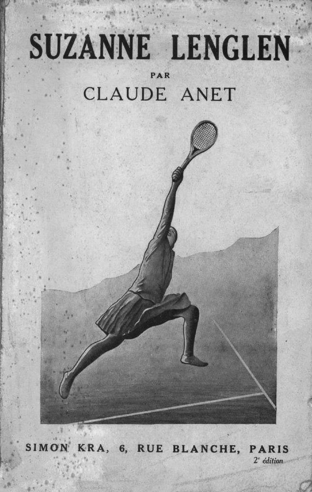
Hình 7: Suzanne Lenglen ('La Divine') — Nữ thần ba lê trên sân cỏ, người đã vĩnh viễn thay đổi tốc độ và phong thái thi đấu của quần vợt nữ thế giới.
and musical notations have energy and wit.
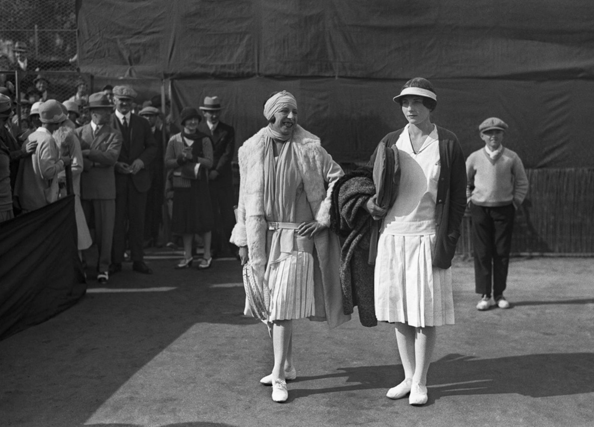
Hình 8: Trận đấu thế kỷ tại Cannes (1926): Suzanne Lenglen đối đầu Helen Wills — Cuộc đụng độ huyền thoại giữa sự hoa mỹ nước Pháp và bản lĩnh thép nước Mỹ.
There is an irony in tennis seeming so appealing in its rendition here. Shostakovich allegedly intended the sport to represent a way of life that was to be supplanted with revolutionary values. Shostakovich had been indoctrinated with Soviet ideas from the time he was a teenager. Born in 1906 in St. Petersburg, he was only eleven years old at the time of the Russian Revolution. A musical prodigy, he demonstrated his loyalty to the Soviet system in his earliest work. His highly successful second symphony, composed in 1927, was created specifically to celebrate the tenth anniversary of the Bolsheviks’ rise to power. With its libretto by Alexander Ivanovsky, once The Golden Age had its premiere at the Kirov Theatre, in October 1930,
Chương 8: Điệu Ca Vũ Của Quần Vợt & Quả Bóng "Xanh Hay Vàng?" Chapters 9 & 10: The Song and Dance of Tennis & "Green or Yellow?"
Khi Le Train Bleu được biểu diễn tại Théâtre des Champs Élysées, sự hiện diện của quần vợt không phải là điều mới mẻ trên sân khấu của nó. Trò chơi đảm bảo hiển thị ở dạng hòa nhạc như hiện thân của năng lượng và tinh thần tinh tế. Vào ngày 15 tháng 5 năm 1913, hơn một thập kỷ trước khi Le Train Bleu mê hoặc khán giả, vở ballet Jeux với âm nhạc của Claude Debussy, đã được trình diễn tại Champs Élysées với Pierre Monteux chỉ huy dàn nhạc. Một quả bóng tennis được ném qua sân khấu như màn mở đầu, và sau đó, vì nó bị mất nên ba vũ công, một nam và hai nữ, hãy tìm kiếm nó. Vaslav Nijinsky ban đầu coi múa ba lê là cuộc gặp gỡ đồng giới giữa ba người đàn ông. Tuy nhiên, đối với phiên bản được trình diễn, anh ấy đã thay đổi nó thành cuộc gặp gỡ của một người đàn ông độc thân, do chính Nijinsky thủ vai, với hai người phụ nữ. Vũ công/biên đạo múa vĩ đại không chỉ bỏ chủ đề đồng tính mà còn từ bỏ kế hoạch nhảy phần trong đôi giày ba lê của phụ nữ và làm như vậy “en pointe”. Đúng hơn, anh ấy đóng vai chính với vẻ ngoài nam tính hơn.
its eighteen performances served the purpose of pitting the virtues of the new-style Russians against what was deemed the ridiculous frivolity of the pleasures pursued in places like Italy, France, and England. The Golden Age was initially censored because it had an excess of Western- style dance in it, and although it was subsequently performed in public, we can see what must have been a problem for the Soviet officials. Its presentation of European habits—the frolicking associated with, say, a lovely afternoon game of mixed doubles played on a pristine clay court in the South of France—shows that Shostakovich was, at the least, ambivalent about what he was supposed to be decrying. Although there is no record of the dance performed with it, the music of the tennis ballet has splendid melodic leaps and a tone of playfulness; it demonstrates the unusual capacity of music to be ribald. Even if to the Soviets the very concept of tennis was the mark of the bourgeoisie and their evil ways, there is, with Shostakovich, a lot of merit to the game. At the start of The Golden Age, a Soviet soccer team makes its initial appearance on the stage at the Golden Age of Industry Exhibition, which takes place in an unidentifiable capitalist country. The Soviet sportsmen who attend the exhibition are heroic—good, healthy people—as
Khi Jeux được trình chiếu, khán giả có lý do chính đáng để mong đợi điều bất ngờ. Nhà hát mới mở gần đây chuyên tổ chức các sự kiện văn hóa đặc sắc. Vào ngày 10 tháng 5, vở opera duy nhất do Gabriel Fauré sáng tác đã được trình diễn ở đó hai ngày trước khi Fauré kỷ niệm sinh nhật lần thứ sáu mươi tám của mình. Vào ngày 29 tháng 5, Rite of Spring của Stravinsky, cũng do Nijinsky biên đạo, đã có buổi ra mắt tại đây. Sự kiện đó đã khiến Carl Van Vechten tường thuật trên tờ The New York Sun rằng “những khán giả ngỗ ngược đã trở thành một phần của buổi biểu diễn giống như các vũ công và nhạc sĩ.”108
opposed to the denizens of the country they are visiting. Various forms of enemies of the Soviet ideal are presented: “a Diva,” “a Negro,” “an advertising agent,” “fascists.” The encounters of the athletic Soviets, including an early one with tennis players, are the substance of most of The Golden Age, until the evil bourgeoisie in the host country throw the entire soccer team into prison. But then the good adherents to Communism are freed from jail with a workers’ revolt against their capitalist employers. The ballet concludes with “the Bourgeoisie in a panic” and, finally, a “dance of solidarity,” as the athletes join forces with the workers. The music is performed by a range of percussion instruments—among them a woodblock, a tambourine, cymbals, snare drums, and a xylophone;
Tiếng la hét của họ lớn đến mức ban quản lý cảm thấy buộc phải bật tất cả đèn để họ có thể kiểm soát đám đông, tiếng ồn của họ đã chi phối buổi biểu diễn ngay cả khi những người biểu tình ồn ào nhất đã bị buộc ra ngoài. “poème dansé” của Debussy, với chủ đề là quần vợt, mặc dù nó ít gây chấn động hơn khi được trình diễn hai tuần trước đó, nhưng bây giờ, nhìn lại, giờ đây, được cognoscenti coi là một sự kiện văn hóa mang tính cách mạng như Rite of Spring. Sự hài hước và tính thể thao của nó là một sự phá vỡ truyền thống triệt để hơn so với vở kịch của Stravinsky. Và nó thuộc về biên niên sử của quần vợt vì sự tiết lộ độc đáo về cách thể hiện môn thể thao này, khi được thực hiện một cách khéo léo, sẽ tạo ra những bước nhảy tràn đầy năng lượng của cơ thể để nâng cao tâm hồn.
horns, including two bassoons and three clarinets; and the usual string instruments with the addition of a banjo. The tennis scene, which comes near the start of Act I, is a bit more than four minutes long. It begins with the clapping of cymbals and continues with music during which we easily picture a lively rally. There is a wonderful relationship of strings and horns that is high in energy. We feel the summertime spirit of the music, and revel in the lively pace of the nonstop motion. We have a sense of long rallies in which we picture different shots being played and someone rushing net, all with a general sense of spectacular footwork. Throughout these musical peregrinations, the entire piece has the playfulness and spirit and melodic richness that always mark Shostakovich. At one moment, the shots are strong, thanks to the power of the horns and drums. Then they are played with a light touch and a sense of carefulness, thanks to the wonderful interplay of the flute and clarinet and strings. Next come the heavier moments of suspense, building toward the end. Conflict is in the air; we sense a challenge. A point is well played. The shots get more powerful. Then comes the victory, one of the players clearly triumphant. We feel the allure of tennis played with fullest energy. What was intended to represent a certain decadence has become charming and irresistible.
Sau khi Debussy viết bản phác thảo nhanh bản nhạc, vào mùa hè năm 1912, ông nói rằng nó cần một dàn nhạc "không có chân". Trong mười bảy phút của vở ballet, có khoảng sáu mươi nhịp độ khác nhau, do đó nhịp độ và hướng của âm nhạc dường như thay đổi sau mỗi hai nhịp. Một bài báo gần đây mô tả sự thoáng mát của nó:
the magnetism inherent in tennis became infectious in a totally different way in a Broadway production written by one of the great composers of that particularly American artistic form, the musical comedy. The application of tennis to one-on-one romance was yet another example of the meaning that the sport could have when a gifted artist uses it as a basis for entertainment in another medium. It functions as such in one of the last creations of the underappreciated Cy Coleman. Coleman, a songwriter and composer responsible for many great Broadway musicals, was born in 1929—his real name was Seymour
Jeux được đánh giá thấp và tràn ngập ánh sáng. Nó có nhiều màu sắc nhưng không bao giờ quá chói; nhịp nhàng phức tạp, nhưng nhanh nhẹn và duyên dáng. Phân tích nó giống như cố gắng nắm bắt những làn sương mù.109
Kaufman—in New York. Starting when he was six years old, he was giving classical piano recitals at Carnegie Hall, Town Hall, and Steinway Hall. Before long, he was performing jazz and composing musical comedies. He eventually worked with various collaborators, one of the best known being Neil Simon, and
Các nhà soạn nhạc khác sẽ ca ngợi nó. Stockhausen và Ligeti cho biết nó ảnh hưởng đến cảm giác của họ về “hình thức khoảnh khắc”; Pierre Boulez đã viết, “Tổ chức chung của Jeux có thể thay đổi ngay lập tức cũng như tính đồng nhất trong quá trình phát triển.” 110 Boulez tiếp tục mô tả vở ballet là “Buổi chiều của một vị thần trong trang phục thể thao”: 111 Đó là một lời khen ngợi rất cao.
his works include Wildcat, which had in it the song “Hey Look me Over”; Sweet Charity; and City of Angels, for which he composed the music in 1989 to a book by Larry Gelbart and lyrics by David Zippel. City of Angels takes place in the film world and revolves around a writer trying to make his way in it. “The Tennis Song,” which is performed midpoint in the first act, uses the language of tennis as the basis of love song lyrics that are as much about sex as about sport.
Khi Diaghilev ban đầu đề xuất Jeux với vũ đạo của Nijinsky, Debussy đã từ chối, tuyên bố bản thân chủ đề này là "ngu ngốc". Nhà soạn nhạc rút lui sau khi Nijinsky đồng ý loại bỏ ý tưởng về một vụ tai nạn máy bay trong vở ba lê và đề nghị trả gấp đôi số tiền mà ông đã đề xuất trước đó để tạo ra âm nhạc. Năm trước, vũ đạo của Nijinsky cho Buổi chiều của Debussy đã kết thúc với cảnh vị thần nông đang thủ dâm với chiếc khăn quàng cổ do một tiên nữ để lại. Debussy, không hài lòng với cách dịch theo nghĩa đen của Nijinsky về cách thể hiện rõ ràng bài thơ Malarmé mà Buổi chiều dựa trên, muốn tránh một vụ bê bối lặp lại.
the
Leon Bakst đặt hành động ở bốn luống hoa hình tròn lớn phía trước một tòa nhà màu trắng. Có cây cối nở hoa suốt mùa hè. Anh ấy mặc cho các vũ công bộ trang phục quần vợt màu trắng cần thiết. Sau khi quả bóng được ném lên sân khấu, một thanh niên mặc trang phục quần vợt nhảy lên cầm vợt trên đầu quả giao bóng của mình; hai cô gái xuất hiện; các nhân vật khác chạy vào, ra vào sân khấu. Có những nụ hôn lén lút. Các nhân vật cãi vã, hòa giải, tán tỉnh và nói chung là ca ngợi. Người đàn ông đôi khi cầm vợt với cách cầm đúng, nhưng thường thì không. Cây vợt chủ yếu là một dụng cụ hỗ trợ—hơn cả một thiết bị thể thao. Quần vợt rõ ràng là chủ đề, nhưng kết quả thành công không phải là sự tương đồng với môn thể thao này cũng như không phải là sự thể hiện thuyết phục về nó.
tennis song
Debussy biết rõ về quần vợt. Anh ấy đã chơi—mang tính cạnh tranh—với Maurice Ravel. Trình tự ngắt âm trong âm nhạc giống hệt như tiếng nảy và đánh trong một trận đấu quần vợt. Tuy nhiên, Debussy không hài lòng vì vũ đạo của vở ballet không phù hợp với âm nhạc cũng như môn thể thao.
(stone) You seem at home on the court (alaura) Let’s say that I’ve played around (stone) Well you don’t look like the sort (alaura) My hidden talents abound (stone) A competitor hasn’t been found to defeat me (alaura) I bet you’re a real good sport (alaura) Shall we say the ball is in your court? (stone) I bet you like to play rough (alaura) I like to work up a sweat (stone) And you just can’t get enough (alaura) I’m good for more than one set (alaura) But I promise I’ll show no regret if you beat me (stone) My backhand is clearly my forte (both) Shall we say the ball is in your court? (alaura) No one ever plays with me (stone) I thought your next of kin did (alaura) My husband never plays with me, he’s too easily winded
Bạn của Debussy, Erik Satie, sẽ xem lại màn trình diễn. Satie cảm thấy rằng vũ đạo của Nijinsky cho vở ba lê năm 1913 được cho là về quần vợt đã phản ánh sự thiếu hiểu biết về môn thể thao này và do đó đã gây ra sự bất công đối với âm nhạc của Debussy; Satie thích âm nhạc hơn. Cách giải thích của Nijinsky về quần vợt khi được thể hiện trong khiêu vũ có vẻ giống bóng đá đến mức Satie đã quyết định nó cần một cái tên khác— “Quần vợt Nga”—mà Satie tuyên bố sẽ là “tất cả những cơn thịnh nộ”. Ông nhấn mạnh rằng đây là một hình thức quần vợt khác thường—chơi vào ban đêm dưới những giỏ hoa được thắp sáng bằng điện. Nó có ba tay vợt, không có lưới và trong phần lớn thời gian của buổi biểu diễn, một quả bóng đá lớn thay vì một quả bóng tennis.
(stone) You leave me breathless too (alaura) Wait ’till our match is through (stone) I may lack form and finesse but I warm up in a jiff (alaura) It’s not exciting unless the competition is stiff (stone) I think I understand your racket, I’m not in your league (alaura) But you can hack it (stone) This game commences with love (alaura) Well, I think love is a bore (stone) Let’s give the tempo a shove (alaura) And raise the stakes a bit more (both) One thing I’m positive of, it’s time for someone to score (stone) Tell me how you like to play (alaura) On grass or clay and every day (stone) They’re both okay (alaura) But time is running short (alaura) Darling let’s don’t dilly dally (stone) Ready for a rousing rally (both) Shall we say the ball is in your court?
Debussy cũng ghét phần nhạc của Nijinsky, nhận xét rằng Nijinsky "với vũ đạo tàn nhẫn và man rợ của anh ta... đã chà đạp những nhịp điệu tồi tệ của tôi dưới chân như cỏ dại." Bằng cách phản đối vũ đạo của Nijinsky, trong một bài đánh giá mà anh ấy viết cho một tạp chí nổi tiếng, Satie đã lặp lại quan điểm riêng của Debussy về nó.
The music suits the flirtatiousness of the lyrics. Coleman’s melodies are in perfect service of the narrative, with its erotically laden trysting between a woman and a man. It’s no surprise; for Cy Coleman, tennis and sex had long been inextricable. Starting in 1960, he had written music for Hugh Hefner’s television show Playboy’s Penthouse. The basis of the series was the idea of parties
Mặc dù Jeux không phải là điều mà Debussy mong đợi, nhưng xét về mức độ hiểu biết của anh ấy về trò chơi thực tế, thì về tổng thể thì đó là một điều kỳ diệu. Nó có sự nhẹ nhàng, nhịp độ vui nhộn và cảm giác tay vợt sử dụng vợt của họ như cây đũa thần. Jeux không làm hài lòng tất cả mọi người, nhưng nó kết hợp các chuyển động của quần vợt và múa ba lê với sự phô trương.
at Hefner’s house in which Playboy playmates would perform with celebrities such as Jerry Lewis, Sammy Davis Jr., James Brown, and, famously, the Grateful Dead. His “Tennis Bum Blues”—from the music he wrote for Playboy’s Penthouse—conjures a wastrel in the form of a not-quite-pro player who gets through life playing tennis with seductive movements he hopes will help him to pick up women. To play tennis well is to be a superior lover.
Jeux đã thúc giục Erik Satie sáng tác một bản nhạc nhỏ quý giá của riêng mình mà trong mắt anh ấy và Debussy, quần vợt được thể hiện một cách trung thành hơn. Như vậy, nó là hạt giống của một kiệt tác. Phiên bản âm nhạc của môn quần vợt của Satie, về cơ bản là một đoạn giới thiệu về môn thể thao này của Nijinsky, sẽ ngắn, nhưng trong bốn mươi giây, tác phẩm tinh nghịch dành cho piano và giọng nói này sẽ khiến môn thể thao này trở nên trêu ngươi và khiêu dâm.
the qualities of tennis clearly provided fertile material for those colorful works of music, and for others as well. There is a rhythmic beat inherent in every rally, with the opportunity for a staccato emerging when a player assumes a position at net and executes a deft
Việc Erik Satie có cách tiếp cận mọi việc của riêng mình không có gì là mới mẻ; anh ta không tôn trọng mọi thứ thuộc về Cơ sở. Sinh năm 1866, tại Normandy, có mẹ là người Anh theo đạo Tin lành và cha là người Pháp theo Công giáo, ông bắt đầu sự nghiệp âm nhạc từ năm 8 tuổi khi học đàn organ và phát triển niềm yêu thích với các bài thánh ca Gregorian. Khi mười ba tuổi, ông được gửi đến Nhạc viện Paris, nơi mà ông so sánh với một “nhà tù quận”112 và nơi đó, vào năm 1880, khi ông tham dự kỳ thi đầu tiên với tư cách là một nghệ sĩ dương cầm, ông được gọi là
volley. The grace and continuity are very different from the stop-and-go action of baseball or American football, and the successful application of tennis to various forms of musical entertainment is somehow no surprise. The racquet itself is like a musical instrument—the means by which the atmosphere becomes charged with excitement—and the ball a note that flies through the air.
“có tài nhưng lười biếng.” Năm sau, giáo viên dạy piano của anh, Émile Decombes—người có bằng cấp ấn tượng là đã học với Chopin—đã tuyên bố anh là “học sinh lười nhất Nhạc viện”; Satie sau đó đã bị trục xuất. Anh ta đã được nhận lại, nhưng bằng tài khoản của chính anh ta
“green or yellow?”
“vô giá trị... không thể nhìn rõ”113 và anh ấy tham gia nghĩa vụ quân sự, chỉ để không thích nó nhiều như anh ấy có nhạc viện. Là một người lính, anh ta cởi trần đứng bên ngoài vào một đêm mùa đông với mục tiêu mắc bệnh viêm phế quản đến mức phải ra ngoài. Chuyển đến quận 9 của Paris và tìm cho mình công việc nghệ sĩ piano trong một quán rượu, Satie trở thành một người phóng túng với mái tóc dài, phát triển một phong cách cá nhân lập dị mà anh luôn duy trì. Ở tuổi 22, anh viết bản nhạc piano thử nghiệm mà anh gọi là Gymnopedies, ba bản nhạc đơn giản nhưng du dương dựa trên các vận động viên Hy Lạp trẻ, khỏa thân. Năm sau, Debussy, vốn đã là bạn, đã sắp xếp hai người trong số họ, và tương lai của Satie với tư cách là một người có khả năng kết nối thể thao và âm nhạc đã được đảm bảo.
“ T hey are green.” “They are yellow.” People are as certain about the color of tennis balls as they are about whether it is a crocodile or an alligator on the Lacoste shirt. Few are ambivalent; most everyone knows the answer definitively. You, reading this, have presumably come down firmly on one side of the Great Tennis Ball Color Divide, wondering how anyone could possibly think otherwise. Roger Federer says “Yellow.” (Some of you will react to that information with “But of course”; others will think an incredulous “Whaaaat?”) The debate begins. And so does the perpetual conundrum of applying words to colors, in that there is no way of being sure that when two people say “red,” they are picturing the same hue. The Inuit have more than fifty words for “white,” and anyone who has ever chosen the paint color for a wall knows that the range from cool bluish snow tones to warm creamy vanillas is infinite. Oral (and written) language is
Satie trau dồi tính độc đáo của mình và được biết đến với lối sống nổi loạn; có thời điểm anh ta ăn mặc như một linh mục và sau đó mua bảy bộ quần áo nhung màu nâu giống hệt nhau, thường đội chúng với một chiếc mũ quả dưa. Ông sống một mình—mặc dù vào năm 1893, ông có một mối tình ngắn ngủi với họa sĩ Suzanne Valadon—và là một nhà xã hội chủ nghĩa cấp tiến. Anh ấy kiếm tiền khi biểu diễn ở các hộp đêm. Nhưng Satie vẫn luôn sáng tác và vận may của ông được cải thiện vào năm 1911, khi Maurice Ravel biểu diễn tác phẩm của mình và ông được coi là người tiên phong của âm nhạc mới.
a great thing, but it only provides vagaries next to
Năm 1914, nhà xuất bản Lucien Vogel có ý tưởng rằng Satie và họa sĩ minh họa Charles Martin nên sản xuất một tập sách sang trọng có tên Sports et Divertissements—tiêu đề một cách diễn đạt được các khu nghỉ dưỡng thời trang nhất ở Pháp sử dụng để mô tả các dịch vụ nhằm thu hút nhóm khách hàng giàu có của họ.
the undefinable miracles of seeing.
Lucien Vogel muốn Sports et Divertissements trở nên thú vị khi đọc và nghe. Nhà xuất bản của Gazette du bon ton—một tạp chí thời trang nổi tiếng của Pháp— ông đã kết hôn với Cosette de Brunhoff, nữ biên tập viên đầu tiên của tạp chí Vogue Pháp; họ có chung niềm yêu thích với những hình thức giải trí có phong cách cao. Vogel cuối cùng đã khuyến khích anh trai của vợ mình, Jean de Brunhoff, xuất bản câu chuyện thiếu nhi mà vợ của Jean đã nghĩ ra và Jean đã thực hiện những bức tranh minh họa tuyệt vời, về một con voi tên là Babar, người phát triển sở thích về những bộ quần áo được cắt may đẹp mắt và những chiếc xe hơi sang trọng. Vogel là người có công trong việc xuất bản tất cả các cuốn sách về Babar của Jean de Brunhoff; theo cách nhẹ nhàng của nó, Sports et Divertissements dự đoán những cuốn sách có văn bản và hình minh họa có tính chất élan như vậy.
one of the most significant art movements of the last century is known as “kinetic art.” It consists of work falling under the general rubric of “sculpture,” where the viewer perceives active motion of the parts and where physical change is an essential element of what we see. Among the best- known practitioners are Alexander Calder and Jean Tinguely. For the art of the first, you need the blowing of a fan or a gust of wind to initiate the movement; for the second, you press a button or turn a switch to set the machinery in motion. The viewer’s experience consists of seeing small shapes—some roughly resembling leaves, others being armlike—that go this way and that, first in one direction and then in another, with a more stable and fixed immobile element going nowhere. There are few better examples of kinetic art than a game of tennis— whether seen from within by the players or from the sidelines by observers. The canvas, so to speak, is fixed. The background color is either that marvelous terra-cotta of the clay court, the dusty dark green of
Vogel ban đầu đã tiếp cận Stravinsky để làm âm nhạc cho ấn phẩm của mình, nhưng Stravinsky cho biết số tiền anh được đề nghị là không đủ. Trong khi đó, đối với Satie, ba nghìn franc mà anh nhận được là một điều may mắn nếu xét đến sự túng thiếu của anh. Hai năm trước, anh ta đã bán một bộ piano với giá 50 franc; Stravinsky có thể đã đánh hơi được số tiền, nhưng Satie không đủ khả năng. Nhận thức được rằng mình đang gặp rủi ro khi là một người chi tiêu lớn, để tăng tốc, anh ta lấy một phần ba phí mỗi lần giao bảy món, với số tiền thanh toán cho mỗi món chỉ dưới một trăm năm mươi franc.
a grass court, or the brighter, flatter hue of a synthetic surface. The subdivisions, with their fixed geometry, are made with white lines of consistent width. This perfectly charted structure of horizontals and verticals—creating long, narrow alleys for doubles and precisely delineating service courts—is pretty much always the same color whether it is laid with tapes, rolled with lime, or painted. This is not the bright glistening color of tooth-whitening ads; while clear and distinct, it is slightly matte. There is no nonsense about it, but still, this white, on analysis, might show just a soupçon of a tint, ever-so-slightly toning it down. The parts of this kinetic masterpiece that move are, in their colors, something else altogether. The balls, the swinging racquets, the players: The
Sports et Divertissements đã trở thành một trong những cuốn sách độc đáo và quyến rũ nhất của họa sĩ thời kỳ hiện đại. Các bản khắc trên tấm đồng của nó thể hiện những người giàu có, ăn mặc thời trang, tận hưởng các hoạt động giải trí của họ và đối với mỗi trò giải trí, có một bản nhạc piano độc tấu của Satie mà trên đó ông đã vẽ một bài thơ siêu thực, theo phong cách thư pháp. Âm nhạc, lời nói và cách trình bày đều tuân thủ yêu cầu của Satie, “Giữ cho nó ngắn gọn,” với một trang cho mỗi sáng tác.
neon dance begins. Snowy white clothes or dayglow outfits, human skin and hair of every hue, racquets that in the old days were the elegant color of varnished wood but that today are, like modern skis, an insistent amalgam of pulsating reds and yellows with the occasional glistening silver or gold: All are in a constant start-stop action. And there is one small, bright element that moves farther and more rapidly than any other, over the net and back again, always the same size and always the same bright color: the ball. But: Is it yellow or green? Does it matter? Isn’t language secondary to the action and the experience? Why this insistence on labeling?
Các ấn phẩm của Lucien Vogel đều đạt đến đỉnh cao về phong cách.
the reason the current color came into use for tennis balls has to do with simple issues of visibility. Tennis balls were formerly white. That was until David Attenborough, the naturalist and television presenter, was controller for BBC Two. In 1967, Sir David obtained permission for the channel to start broadcasting in color. The first time Wimbledon was televised in color rather than black and white, the white balls were difficult to see. There was less contrast in the white ball hitting the white lines when there was a panoply of colors in the surroundings, quite obvious when there was only black-and- white television. (The preeminent color theorist and artist Josef Albers would have found this fascinating. The idea that the change in the surrounding colors to the full spectrum from the white-gray-black scale made the white balls less visible was the sort of phenomenon that delighted him.) Sir David had the idea that something else should be tried. By 1972, colored tennis balls were approved by the International Tennis Federation. And the name of the color, written boldly on the tins of balls made by the company Wilson, was . . .
Ngay cả chữ của chương trình cũng vui tươi.
Optic
Phần mở đầu của Sports et Divertissements được gọi là "Bản hợp xướng không hấp dẫn", với chỉ thị âm nhạc là "Nghiêm túc. Chắc chắn và gắt gỏng. Đạo đức giả. Chậm hơn." Satie đã viết—với chữ viết đáng chú ý—một “Lời nói đầu” xuất hiện trên cùng một trang với bản nhạc. Nó mất đi một chút trong cách dịch, nhưng nó hướng dẫn chúng ta hiểu ý định của anh ấy với “Quần vợt” cũng như với các môn thể thao và trò giải trí khác của anh ấy: "Lời khuyên của tôi là hãy lướt qua cuốn sách bằng một ngón tay tử tế và mỉm cười, vì nó là tác phẩm của trí tưởng tượng. Đừng tìm kiếm bất cứ điều gì khác trong đó." Đối với “bản hợp xướng không mấy hấp dẫn”, Satie nói rằng nó “dành cho Kẻ bị teo lại và Người choáng váng”. Ông gọi đó là “một kiểu mở đầu cay đắng, một kiểu giới thiệu khắc khổ và không phù phiếm”. Đây là lời cảnh báo về điều gì sẽ xảy ra nếu chúng ta không đủ nhẹ dạ và quá coi trọng mọi việc: "Tôi đã đưa vào đó tất cả những gì tôi biết về Chán nản. Tôi dành tặng bản hợp xướng này cho những ai không thích tôi."
yellow.
Hai mươi trò giải trí bao gồm “Săn bắn”, “Trò lừa bịp của người mù”, “Câu cá”, “Du thuyền”, “Tắm biển”, “Chơi gôn”, “Đua ngựa”, “Điệu tango vĩnh viễn,” “Tán tỉnh” — mà đạo diễn đã “kích động”—và “Quần vợt”. Satie đã thực hiện hai phiên bản cho phiên bản cuối cùng này: Phiên bản thứ hai là phiên bản được anh ấy chấp thuận xuất bản, nhưng phiên bản đầu tiên cũng là một bản phác thảo âm nhạc thú vị.
The color, as specified by the ITF, derives that name from the Hex Color Code. The code was developed in the online Color Encyclopaedia called ColorHexa, in which the color of a tennis ball is ccff00. Another color-coding system,
“Tennis” mở đầu vào thời điểm các tay vợt vừa khởi động xong, đang tranh luận xem họ đã sẵn sàng bắt đầu trận đấu hay chưa. Khi bắt đầu, một số nốt piano ngắt quãng gợi lên rõ ràng quả bóng đang nảy lên; chúng ta dự đoán trận đấu sẽ bắt đầu và tự hỏi chúng ta sẽ phải đợi bao lâu. Tiếp theo là phần thứ ba giảm dần. Rõ ràng đó là một cú giao bóng—một cú giao bóng đầy kịch tính, mạnh mẽ và dứt khoát—và được theo sau bởi âm thanh khen ngợi.
RGB, gives it the color RGB 223,255,79. The hex coding system uses letters and numbers that indicate the proportions of red, green, and blue in a color; the RGB code is a different way of calculating the same relative quantities in a mixture.
Trong khi "Tennis" thường được biểu diễn trên piano một mình, mục đích ban đầu là để những từ mà Satie đã viết bằng mực Ấn Độ thư pháp đáng yêu được đọc to. Những câu trả lời mở đầu được kèm theo “Play?”—bằng tiếng Anh—tiếp theo là “Có!”—cũng bằng tiếng Anh. Sau đó, trong khi giao bóng, chúng ta nghe thấy “le bon server”. Điều tiếp theo là sự chế nhạo nhiều thứ cùng một lúc: kiểu lực lưỡng hơn là kiểu quần vợt trong cách dàn dựng Jeux của Nijinsky, sự quyến rũ của một số tay vợt nhất định. “Comme il a de belles jambes,” người nói nói khi âm nhạc đạt đến độ cơ bắp. Và sau đó, với âm nhạc nhẹ nhàng hơn rõ rệt, diễn giả lại khen ngợi vẻ ngoài điển trai của một trong những vận động viên quần vợt: “Il a un beau nez.” Tiếp theo đó là một điều gì đó rất khác. Nó được mô tả hay nhất bởi nhà âm nhạc học Anthony Bateman trong cuốn sách hấp dẫn Âm thanh thể thao của ông. Bateman viết rằng “Tennis” kết thúc “với một chi tiết thể thao: màn trình diễn âm nhạc của một cú giao bóng cắt lát cuối cùng mang lại điểm cho trận đấu. Không giống như dịch vụ trước, 'dịch vụ đảo chính' này, trong đó A–F# thứ ba giảm dần được dệt thành một đoạn giống như thang âm, giờ bắt đầu sở trường, đi—vẫn giữ nguyên ngôn ngữ của quần vợt—ngay từ đầu dòng, và không thể quay lại được nữa.”
so what does that tell us? Color Hexa describes ccff00 as “Fluorescent yellow or Electric lime.” In the RGB system, it is among the greens. “Electric lime”! How could that be the same as a yellow of any sort, even fluorescent? The way we distinguish the fruit called a lime from a lemon is that one is green, the other yellow; they are by no means the same, even though limes preceded lemons, as lemons are a hybrid of citrons and limes. (Lemons grow in milder climates than the tropical and semitropical environments demanded by limes.) How can a single color be the equivalent of both limes and lemons, even with one made fluorescent and the other electric? Why can’t there be a single answer to the question about tennis balls? What about the color of those citrus fruits you see in the supermarket that are shaped like small lemons or large limes, and that are mainly yellow with hints of what we call “green”? Does their taste echo the percentages of their colors, halfway between both types of fruit; do they have that high note that distinguishes a vodka gimlet or that rounder flavor that characterizes lemonade? The solution is to accept the mystery, to recognize the limitations of words. Let’s not even try to say what color a tennis ball is; the label, after all, followed the development of that particular hue. Language only comes afterward; the sun and fields were the colors they are long before there were names to identify them or to characterize their colors. The visual preceded
“Tennis” kết thúc khá đơn giản bằng “Game!”—một lần nữa bằng tiếng Anh (Satie chắc chắn sẽ muốn tránh từ tiếng Pháp có nghĩa là “trò chơi”, tức là jeu,” và nghe giống hệt jeux, tên vở ballet mà anh ấy đang giả mạo). Tuy nhiên, trận đấu vẫn chưa kết thúc, chỉ có trò chơi là vậy, vì âm nhạc có âm thanh thăm dò, như thể vẫn còn điều gì đó sắp xảy ra. Và vì thế Satie đã kết thúc Sports et Divertissements với cảm giác vui vẻ vẫn đang diễn ra; có một sự tiếp tục tiềm ẩn hơn là một kết luận.
the verbal, and with both we must accept the beauty of vagaries; to seek precision is to miss the boat. For half a century, I have worked with Josef Albers’s art, running a nonprofit foundation that he and his wife, Anni, the brilliant textile artist and printmaker, established. Josef was fascinated by the language as well as the function of color. He used to say that “color is the most relative medium in art.” In his teaching, writing, and painting, he demonstrated, with utmost passion and pleasure, the way we see a color not so much on its own as in relation to its neighbors. What counts about the color of the tennis ball is what happens to it in contrast to the court surface, how it reacts to bright sunlight or to dusk, how it interacts with the multicolored background when it is flying through the sky. It—the color of the ball—is an absolute, but our experience of it is multidimensional. Albers, who lived in Orange, Connecticut, reveled in the highway sign at the town border line that was painted the precise green requisite of such signs and declared, in bold white lettering, this is orange. Wherein lies the truth? Let us look at the closest color to that of tennis balls in Albers’s art. It becomes apparent that saying “yellow” or “green” does not mean much. Albers was very aware that different manufacturers used the same name for colors that are very different. A Winsor & Newton Mars Yellow, for example, seems miles from a Grumbacher Mars Yellow. Adding to that, the way a color looks when reproduced is different from the way it looks on a painted canvas. Test your color memory. Turn to Color Plates 12–16. Of these five Albers paintings, in which of these do you think the central color looks closest to that of a tennis ball? These paintings belong to Albers’s series called Homages to the Square, of which he painted more than two thousand between the time he turned sixty- two, in 1950, until his death, at age eighty-eight, in 1976. They gave Albers a
Hình minh họa về môn thể thao này của Charles Martin có một người đàn ông ăn mặc như “Pierrot”—chú hề cổ điển của Pháp thuộc loại mà chúng ta thấy trong các bức tranh của Watteau—và một người phụ nữ có một chiếc mũ trùm đầu sành điệu và mặc một chiếc váy cắt thấp. Ngồi ở một chiếc bàn nhỏ trên ban công, họ kinh hãi và giơ tay lên trời vì vừa trải qua trải nghiệm thô lỗ khi một quả bóng tennis rơi xuống bàn và làm đổ tách trà, làm đổ ra quần của người đàn ông. Ban công nhìn ra sân tennis, nơi chúng ta nhìn thấy, ở một bên lưới, một người phụ nữ mặc váy và đội mũ che nắng, và mặt khác đang đánh trái tay, một người đàn ông có chiếc mũi đẹp và đôi chân dài, mà đối tác của họ, chỉ nhìn thấy một phần, mặc một chiếc váy có tay phồng và váy dài. Một phần sức hấp dẫn của quần vợt là ở chỗ các tay vợt của nó rất có tính trang trí.
chance to create a vast range of “color climates,” and they incite a range of sensations of movement in colors that were factually inert. The two central squares of Color Plates 13 and 15 are Cinnabar Green Light, made by the paint manufacturer Old Holland. The color does not seem to be identical, however, in the two instances; to most of us, it seems darker below. Its appearance changes according to its proportionate quantity in relation to the colors in the rest of the composition and depending on what other colors are adjacent to it. If you take a piece of white paper and fold it to size so that it blocks everything between these squares, you will see that, although they look dramatically different when their surroundings are visible, they are almost exactly the same. If they do not appear to
Satie's Sports et Divertissements chỉ được trình diễn lần đầu tiên ở Pháp sau Thế chiến thứ nhất. Trong thời chiến, "sự kiểm duyệt của quân đội" có hiệu lực, và các tạp chí thời trang của Lucien Vogel bị đình chỉ xuất bản và ông đã giải thể công ty của mình. Anh ta đã bán bản quyền tác phẩm Satie. Nhưng sau đó Vogel đã mua lại tác phẩm khi ông thành lập một công ty mới vào năm 1922. Charles Martin một lần nữa được giao nhiệm vụ minh họa cho nó, theo một phong cách hoàn toàn khác với những bức tranh khắc ban đầu của ông. Ấn bản mới đã được phân phối và tác phẩm Satie trở nên phổ biến ở Hoa Kỳ sau khi ra mắt tại Nhà hát Klaw, ở New York, vào tháng 2 năm 1923, do Edgard Varese tài trợ. George
be completely identical, it is only because we are dealing with photographic reproduction rather than the actual paintings, where those middle squares are made from the same paint. Everything makes a difference with color; there are no absolutes. And in the case of the color of tennis balls, there is yet another element—beyond the distance from which we see the ball, the degree of sunlight or shadow, the color of the court that is its background, and the nature of our own eyesight—and that is the extent of our capacity to distinguish colors. The age and condition of the ball also has an effect. In 2023, the artist Eddie Martinez pointed this out in The New York Times:
Gershwin đã tham dự và lưu lại chương trình. Vào những năm 1950, Virgil Thomson đã biểu diễn nó như một tác phẩm cho người kể chuyện và piano. Chỉ dài bốn mươi giây, “Tennis” của Satie đã giành chiến thắng.
I have painted tennis balls for at least five years. I don’t think I ever paint the color accurately. It’s a funky color. There is a whole debate over the color
“vở ballet quần vợt” của dmitri shostakovich là một phần của Thời đại hoàng kim—còn được gọi là “vở ballet tuyên truyền”—được viết vào năm 1930 để miêu tả những đức tính tốt đẹp của đường lối Xô Viết trái ngược với sự suy đồi của cuộc sống phương Tây. Giống như Satie với “Tennis”, Shostakovich khiến môn thể thao này trở thành một niềm đam mê không thể cưỡng lại. Đây là một trường hợp khác mà, được giải thích theo âm nhạc, quần vợt có tính chất hưng phấn.
of tennis balls. Are they yellow or are they green? I think that every tennis ball shifts between that range in the course of their life. They start off neon, like a toxic sludge, but once a ball starts to lose its fuzz and pick up the residue of whatever surface you’re playing on, they get dull. I would say they start off neon green and go more toward yellow over time.
Cách viết và ký hiệu âm nhạc của Satie có năng lượng và sự hóm hỉnh.
Maybe colors are like the word color, which is spelled differently in British English than in American English; there is no single law. Is the difference between lemons and limes a matter of flavour or flavor? Exalt in what you cannot know! Yes, once upon a time the color of tennis balls was plain old coconut cake white (or angel food cake white, or a genoise; it depends on the state of the ball). Then, thanks to David Attenborough, it was made easier for the eye to perceive. But let the “green or yellow?” debate go to the side; throw it out of the court. You never know for sure who will win the match, and in this case the winner is the color itself, not its name. Now look at the print at the bottom of the colorplate. Albers made it in 1969. Is this where the manufacturers of the new tennis balls got their idea? All we know for sure is that if we stare at the central color—peu importe the name—for long enough, and then look at the grays surrounding it (warm gray, cool gray, but gray nonetheless, or “grey” if you are so inclined), we begin to see slight afterimages of the middle color. Savour the thrill, or savor it; words are only words.
Có một điều trớ trêu là quần vợt dường như lại rất hấp dẫn trong màn trình diễn của nó ở đây. Shostakovich được cho là muốn môn thể thao này đại diện cho một lối sống sắp được thay thế bằng các giá trị cách mạng. Shostakovich đã được thấm nhuần những tư tưởng của Liên Xô từ khi còn là một thiếu niên. Sinh năm 1906 tại St. Petersburg, ông mới 11 tuổi vào thời điểm Cách mạng Nga diễn ra. Là một thần đồng âm nhạc, ông đã thể hiện lòng trung thành của mình với hệ thống Xô Viết trong tác phẩm đầu tiên của mình. Bản giao hưởng thứ hai rất thành công của ông, được sáng tác vào năm 1927, được sáng tác đặc biệt để kỷ niệm 10 năm ngày những người Bolshevik lên nắm quyền. Với lời nhạc kịch của Alexander Ivanovsky, khi The Golden Age ra mắt lần đầu tại Nhà hát Kirov vào tháng 10 năm 1930, mười tám buổi biểu diễn của nó nhằm mục đích so sánh những đức tính của người Nga kiểu mới với những gì được coi là phù phiếm lố bịch của những thú vui theo đuổi ở những nơi như Ý, Pháp và Anh.
helen wills
Thời đại hoàng kim ban đầu bị kiểm duyệt vì có quá nhiều điệu múa kiểu phương Tây trong đó, và mặc dù sau đó nó được trình diễn trước công chúng, chúng ta có thể thấy điều gì hẳn đã là một vấn đề đối với các quan chức Liên Xô. Việc trình bày các thói quen của người châu Âu—chẳng hạn như sự vui đùa gắn liền với một trận đấu đôi nam nữ đáng yêu vào buổi chiều diễn ra trên một sân đất nện hoang sơ ở miền Nam nước Pháp—cho thấy rằng ít nhất, Shostakovich cũng có mâu thuẫn về những gì ông ta được cho là đang chê bai. Mặc dù không có tài liệu nào về điệu nhảy được biểu diễn với nó, nhưng âm nhạc của vở ballet quần vợt có những bước nhảy du dương lộng lẫy và giai điệu vui tươi; nó chứng tỏ khả năng thô tục khác thường của âm nhạc. Ngay cả khi đối với người Liên Xô, khái niệm quần vợt là dấu ấn của giai cấp tư sản và đường lối xấu xa của họ, thì đối với Shostakovich, môn thể thao này vẫn có rất nhiều giá trị.
Alexander Calder’s wire sculpture of Helen Wills is, like her strokes, an example
Khi bắt đầu Thời kỳ Hoàng kim, một đội bóng đá Liên Xô xuất hiện lần đầu trên sân khấu tại Triển lãm Thời đại Hoàng kim của Công nghiệp, diễn ra tại một quốc gia tư bản không xác định được. Các vận động viên Liên Xô tham dự cuộc triển lãm đều là những anh hùng—những người tốt, khỏe mạnh—trái ngược với những người dân của đất nước họ đang đến thăm. Nhiều hình thức kẻ thù khác nhau của lý tưởng Xô Viết được thể hiện: “Diva”, “người da đen”, “đại lý quảng cáo”, “những kẻ phát xít”. Những cuộc chạm trán giữa những người Xô Viết thể thao, bao gồm cả trận đầu với các vận động viên quần vợt, là nội dung của hầu hết Thời đại hoàng kim, cho đến khi giai cấp tư sản độc ác ở nước chủ nhà ném toàn bộ đội bóng vào tù. Nhưng sau đó những người tốt theo Chủ nghĩa Cộng sản được giải thoát khỏi nhà tù nhờ cuộc nổi dậy của công nhân chống lại những người chủ tư bản của họ. Vở ballet kết thúc với cảnh “Tư sản hoảng loạn” và cuối cùng là “vũ điệu đoàn kết” khi các vận động viên hợp lực với công nhân.
of an economy of means for fantastic results. Every detail, including her trademark visor, is masterful.
Âm nhạc được biểu diễn bởi nhiều loại nhạc cụ gõ—trong số đó có mộc bản, lục lạc, chũm chọe, trống bẫy và xylophone; kèn, bao gồm hai kèn bassoon và ba kèn clarinet; và các nhạc cụ dây thông thường có thêm đàn banjo. Cảnh quần vợt gần bắt đầu Màn I, dài hơn bốn phút một chút. Nó bắt đầu bằng tiếng vỗ tay của chũm chọe và tiếp tục bằng âm nhạc, trong đó chúng ta dễ dàng hình dung ra một cuộc biểu tình sôi động. Có một mối quan hệ tuyệt vời giữa dây và kèn mang lại năng lượng cao. Chúng ta cảm nhận được tinh thần mùa hè của âm nhạc và tận hưởng nhịp độ sống động của chuyển động không ngừng nghỉ. Chúng ta có cảm giác về những pha giao bóng kéo dài, trong đó chúng ta hình dung ra những cú đánh khác nhau đang được thực hiện và ai đó lao vào lưới, tất cả đều có cảm giác chung về động tác bằng chân ngoạn mục. Xuyên suốt những chuyến hành trình âm nhạc này, toàn bộ tác phẩm mang sự vui tươi, tinh thần và giai điệu phong phú luôn ghi dấu ấn của Shostakovich. Tại một thời điểm, các tiếng súng mạnh mẽ nhờ vào sức mạnh của kèn và trống. Sau đó, chúng được chơi với sự nhấn nhẹ và cảm giác cẩn thận, nhờ vào sự tương tác tuyệt vời giữa sáo, kèn clarinet và dây. Tiếp theo là những khoảnh khắc hồi hộp nặng nề hơn, dần dần về cuối. Xung đột đang diễn ra; chúng tôi cảm nhận được một thách thức. Một điểm được chơi tốt. Các cú đánh trở nên mạnh mẽ hơn. Sau đó là chiến thắng, một trong những tay vợt đã chiến thắng rõ ràng. Chúng tôi cảm nhận được sức hấp dẫn của môn quần vợt được chơi với năng lượng tràn đầy nhất. Những gì được dự định đại diện cho một sự suy đồi nhất định đã trở nên quyến rũ và không thể cưỡng lại được.
elen wills’s impact on artists evokes the notion of the face that launched a thousand ships. Some of the greatest
sức hút vốn có trong quần vợt đã trở nên lan truyền theo một cách hoàn toàn khác trong một vở kịch Broadway được viết bởi một trong những nhà soạn nhạc vĩ đại của loại hình nghệ thuật đặc biệt của Mỹ, vở hài kịch. Việc áp dụng quần vợt vào chuyện tình cảm một đối một là một ví dụ khác về ý nghĩa mà môn thể thao này có thể có khi một nghệ sĩ tài năng sử dụng nó làm cơ sở để giải trí bằng một phương tiện khác. Nó hoạt động như vậy trong một trong những sáng tạo cuối cùng của Cy Coleman bị đánh giá thấp.
painters and sculptors of the twentieth
Coleman, một nhạc sĩ và nhà soạn nhạc chịu trách nhiệm cho nhiều vở nhạc kịch Broadway hay, sinh năm 1929—tên thật của ông là Seymour
century portrayed her. The young Alexander Calder manipulated a single piece of sturdy wire with pliers, twisting it into a breezy image of the lithe athlete leaning into a forehand. Diego Rivera used her as a model for one of his greatest murals, her face several stories high, with a second image of her in the nude in the ceiling above. Miguel Covarrubias painted a caricature of Wills—again with a lunging forehand—that had style and verve. Augustus John and Childe Hassam did traditional portraits. But Wills was not satisfied merely to look like a goddess and be the model for artistic masterpieces. Nor was it enough for her that she glided to victory in Grand Slam tournaments with the aplomb of a prima ballerina. She needed artistry in every facet of her life. In 1927, the same year that this lithe twenty-one-year-old won Wimbledon for the first time, she designed splendid dress fabrics that were manufactured in silk. Tennis itself was her inspiration. One of her materials showed female tennis players sketched fancifully, extending their arms to the limits. Another had a motif of tennis courts interspersed with flowers in which the petals are made of tennis racquets. But the visual was not all that mattered to her. Her stories and poems were published. And although she failed to make the cut as an actress, she had a screentest with none other than Joseph Kennedy as her agent. It made sense for her to consider being in movies. She was admired for her dazzling beauty. Wills’s face appeared on magazine covers not only because her lacerating groundstrokes made her a world-class tennis player, but also because both men and women wanted to look at her classically proportioned features. At the height of a national depression, when people needed to be cheered up and diverted, that visage made the world’s top- ranking tennis player irresistible. And the Garbo-like elusiveness with which she exercised her sublime athletic skills only added to her drawing power. After Wills died, the Los Angeles Times would report: “When Charlie Chaplin was asked to name the most beautiful thing he had ever seen, he responded: ‘The movement of Helen Wills playing tennis.’” 114 The dashing
Kaufman—ở New York. Bắt đầu từ khi mới sáu tuổi, anh đã biểu diễn độc tấu piano cổ điển tại Carnegie Hall, Town Hall và Steinway Hall. Không lâu sau, anh ấy đã biểu diễn nhạc jazz và sáng tác nhạc hài. Cuối cùng, anh ấy đã làm việc với nhiều cộng tác viên khác nhau, một trong những người nổi tiếng nhất là Neil Simon, và các tác phẩm của anh ấy bao gồm Wildcat, trong đó có bài hát “Hey Look me Over”; Từ thiện ngọt ngào; và City of Angels, do ông sáng tác nhạc vào năm 1989 cho một cuốn sách của Larry Gelbart và lời bài hát của David Zippel.
British champion Bunny Austin wrote of Wills, “Both on the court and off the expression of her face, classical in its beauty, remains calm and dignified, and her bearing is always regal as befits the Queen of the Lawn Tennis world.” 115 Still, no one could quite get a handle on Helen Wills. There was no doubt that she embodied a form of excellence—for a six-year-long winning streak, no opponent could get so much as a set off her—but she was an enigma. What was she thinking, or concealing? The two nicknames that reappeared constantly, when she was in her twenties and garnering her titles, were “Little Miss Poker Face” and “the Garbo of Tennis.” Having risen to all those victories following her defeat to Suzanne Lenglen in 1926 at Cannes in “the match of the century,” she proved her resilience, but she was impenetrable. She was not haughty, but she remained enigmatic. There were no chinks in her armor.
City of Angels diễn ra trong thế giới điện ảnh và xoay quanh một nhà văn đang cố gắng dấn thân vào đó. “The Tennis Song,” được biểu diễn ở điểm giữa trong màn đầu tiên, sử dụng ngôn ngữ quần vợt làm nền tảng cho lời bài hát tình yêu nói nhiều về tình dục cũng như về thể thao.
For one of her
(stone) Bạn có vẻ như đang ở nhà trên sân (alaura) Giả sử rằng tôi đã chơi đùa (stone) Chà, trông bạn không giống loại người đó (alaura) Tài năng tiềm ẩn của tôi rất nhiều (stone) Chưa tìm thấy một đối thủ nào có thể đánh bại tôi (alaura) Tôi cá rằng bạn là một tay vợt thể thao thực sự giỏi (alaura) Chúng ta có nên nói quả bóng ở trong sân của bạn không? (stone) Tôi cá là bạn thích chơi thô bạo (alaura) Tôi thích đổ mồ hôi (stone) Và bạn không thể có đủ (alaura) Tôi giỏi hơn một set (alaura) Nhưng tôi hứa tôi sẽ không tỏ ra hối hận nếu bạn đánh bại tôi (stone) Cú trái tay của tôi rõ ràng là sở trường của tôi (cả hai) Chúng ta có nên nói bóng ở sân của bạn không? (alaura) Chưa có ai chơi với tôi cả (stone) Tôi tưởng họ hàng của bạn đã chơi (alaura) Chồng tôi chưa bao giờ chơi với tôi, anh ấy quá dễ nổi nóng
1927 dress fabrics, Wills arranged the tennis racquets into flowers in bloom.
(stone) Bạn cũng khiến tôi nghẹt thở (alaura) Đợi cho đến khi trận đấu của chúng ta kết thúc (stone) Tôi có thể thiếu phong độ và sự khéo léo nhưng tôi khởi động nhanh chóng (alaura) Sẽ không thú vị trừ khi cuộc thi gay gắt (stone) Tôi nghĩ tôi hiểu vợt của bạn, tôi không thuộc liên minh của bạn (alaura) Nhưng bạn có thể hack nó (stone) Trò chơi này bắt đầu bằng tình yêu (alaura) Chà, tôi nghĩ tình yêu là một thứ nhàm chán (đá) Hãy cống hiến nhịp độ một cú xô (alaura) Và nâng số tiền đặt cược thêm một chút (cả hai) Một điều tôi chắc chắn là đã đến lúc ai đó ghi bàn (đá) Hãy cho tôi biết bạn thích chơi như thế nào (alaura) Trên sân cỏ hay đất nện và mỗi ngày (đá) Cả hai đều ổn (alaura) Nhưng thời gian không còn nhiều (alaura) Em yêu, đừng lười biếng (đá) Sẵn sàng cho một cuộc biểu tình sôi nổi (cả hai) Chúng ta có nên nói quả bóng đang ở trong sân của bạn không?
at age fifteen, Helen Wills was the National Junior Women’s Tennis Champion. Back then, she was the American Heidi. With her hair parted in the middle and in long braids, with her wide-set eyes, her small nose, and her big smile, she epitomized an American ideal. Wills
Âm nhạc phù hợp với sự tán tỉnh của lời bài hát. Giai điệu của Coleman giao bóng hoàn hảo cho câu chuyện, với cuộc thử thách đầy khiêu dâm giữa một người phụ nữ và một người đàn ông. Không có gì ngạc nhiên; đối với Cy Coleman, quần vợt và tình dục từ lâu đã không thể tách rời. Bắt đầu từ năm 1960, ông đã viết nhạc cho chương trình truyền hình Playboy's Penthouse của Hugh Hefner. Cơ sở của loạt phim là ý tưởng về các bữa tiệc tại nhà Hefner, trong đó những người bạn chơi Playboy sẽ biểu diễn cùng những người nổi tiếng như Jerry Lewis, Sammy Davis Jr., James Brown, và nổi tiếng là Grateful Dead. “Tennis Bum Blues” của anh ấy — từ bản nhạc anh ấy viết cho Playboy's Penthouse — gợi lên một kẻ khốn nạn trong hình dạng một tay vợt không chuyên nghiệp suốt đời chơi quần vợt với những động tác quyến rũ mà anh ấy hy vọng sẽ giúp anh ấy thu hút được phụ nữ. Chơi tennis giỏi là trở thành một người yêu thượng đẳng.
resembled—it would be a well-known image—the cheerful country girl on the label of the Vermont Maid maple syrup bottle. Could anyone with the grit to survive the competitive world of junior tennis really be that innocent? It had required something more than fortitude to challenge Lenglen at age twenty. She had
những phẩm chất của quần vợt rõ ràng đã cung cấp chất liệu màu mỡ cho những tác phẩm âm nhạc đầy màu sắc đó và cho cả những tác phẩm khác. Có một nhịp điệu vốn có trong mỗi cuộc biểu tình, với cơ hội xuất hiện ngắt âm khi một tay vợt đảm nhận vị trí trên lưới và thực hiện một cú vô lê khéo léo. Sự duyên dáng và liên tục rất khác so với hành động dừng lại của bóng chày hay bóng đá Mỹ, và việc ứng dụng thành công quần vợt vào các hình thức giải trí âm nhạc khác nhau không có gì đáng ngạc nhiên. Bản thân cây vợt giống như một nhạc cụ—phương tiện khiến bầu không khí trở nên phấn khích—và quả bóng là một nốt nhạc bay trong không khí.
gone to Europe ostensibly to continue her studies in art, which was her major at university. The media had thrilled to the idea of this young American tennis champion facing the world’s best woman player. Lenglen was famously flamboyant, Wills reserved. She had not lost by much, but still, it was a defeat, and it took courage to carry on. It was her sense of resolve that enabled her to persevere to the point that she subsequently had the longest streak of tournament victories of any player in tennis history. Wills and Lenglen had shown their different styles even before they were on the court. Lenglen had arrived at the clubhouse in a chauffeur-driven car, blowing kisses to the cheering crowd. Wills had appeared demurely with hardly anyone noticing that she was there. Then came their entrance in front of a crowd that, according to Al Laney, consisted of
“Chúng có màu vàng.” Mọi người chắc chắn về màu sắc của quả bóng tennis cũng như về việc đó là cá sấu hay cá sấu trên áo Lacoste. Rất ít có ý kiến trái chiều; hầu hết mọi người đều biết câu trả lời dứt khoát. Bạn, khi đọc điều này, có lẽ đã chắc chắn đứng về một phía của Sự phân chia màu sắc quả bóng quần vợt vĩ đại, tự hỏi làm sao ai đó có thể nghĩ khác được.
a great number of celebrities, including royalty in the person of ex- King Manuel, of Portugal, the Grand Duke Michael, Prince George, and a number of maharajas and titled persons whose names escape me. [They made] a nice picture for the battalion of photographers that immediately engulfed them. Suzanne came like a great actress making an entrance that stopped the show, with flashing smile, bowing, posing, blowing kisses, full of grace and ever gracious. Helen, walking beside the Queen and, as befits a lady in waiting, just a little to the rear, came in calm, impassive, and unruffled, looking nowhere but in front. She seemed sturdy and placidly unemotional.
Roger Federer nói “Vàng.” (Một số bạn sẽ phản ứng với thông tin đó bằng “Nhưng tất nhiên rồi”; những người khác sẽ nghĩ “Cái gì?”)
Once play began, their differences were
Cuộc tranh luận bắt đầu. Và câu hỏi hóc búa muôn thuở về việc áp dụng từ ngữ cho màu sắc cũng vậy, ở chỗ không có cách nào chắc chắn rằng khi hai người nói “đỏ”, họ đang hình dung ra cùng một màu sắc.
even clearer. Laney uses Lenglen’s pizazz to accentuate Wills’s reticence:
Người Inuit có hơn 50 từ chỉ “màu trắng” và bất kỳ ai đã từng chọn màu sơn tường đều biết rằng phạm vi từ tông màu tuyết xanh mát đến màu kem vani ấm áp là vô tận. Ngôn ngữ nói (và viết) là một điều tuyệt vời, nhưng nó chỉ mang đến những điều mơ hồ bên cạnh những điều kỳ diệu không thể diễn tả được của khả năng nhìn thấy.
Miss Wills had not Lenglen’s ability to give you pleasure by the beauty
một trong những phong trào nghệ thuật quan trọng nhất của thế kỷ trước được gọi là “nghệ thuật động học”. Nó bao gồm tác phẩm thuộc đề mục chung là “điêu khắc”, nơi người xem cảm nhận được chuyển động tích cực của các bộ phận và nơi sự thay đổi vật lý là yếu tố thiết yếu của những gì chúng ta nhìn thấy. Trong số những học viên nổi tiếng nhất có Alexander Calder và Jean Tinguely. Đối với nghệ thuật đầu tiên, bạn cần có tiếng quạt thổi hoặc một cơn gió mạnh để bắt đầu chuyển động; lần thứ hai, bạn nhấn nút hoặc bật công tắc để khởi động máy. Trải nghiệm của người xem bao gồm việc nhìn thấy những hình dạng nhỏ—một số gần giống những chiếc lá, một số khác giống như cánh tay—đi hướng này hướng kia, đầu tiên theo hướng này rồi theo hướng khác, với một yếu tố bất động ổn định và cố định hơn chẳng đi đến đâu.
of her method and the glitter of her personality, but she had a manlike speed of service and drive that gave her superiority over her rivals. There was an immaculate quality about her play. Never much
Có rất ít ví dụ về nghệ thuật động học tốt hơn một trận đấu quần vợt— dù được tay vợt nhìn từ bên trong hay người quan sát từ bên lề. Có thể nói, canvas đã được cố định. Màu nền có thể là màu đất nung tuyệt đẹp của sân đất nện, màu xanh đậm bụi bặm của sân cỏ hoặc màu sáng hơn, phẳng hơn của bề mặt tổng hợp. Các phân khu, với hình học cố định, được tạo bằng các đường màu trắng có chiều rộng nhất quán. Cấu trúc được biểu đồ hoàn hảo theo chiều ngang và chiều dọc — tạo ra những con hẻm dài, hẹp cho các đôi và phân định chính xác các sân giao bóng — gần như luôn có cùng một màu cho dù nó được dán bằng băng dính, cuộn bằng vôi hay sơn. Đây không phải là màu sáng lấp lánh của quảng cáo làm trắng răng; trong khi rõ ràng và khác biệt, nó hơi mờ. Không có gì vô nghĩa về nó, tuy nhiên, màu trắng này, khi phân tích, có thể chỉ hiển thị một chút sắc thái, làm nó giảm đi một chút.
of a strategist, her progress through a tournament was seldom exciting, but the steady placidity of her play, unvaried against all opponents, never seemed to bore her. She never sought new ways of dealing with and defeating opponents as Lenglen did, but she never had to do so for a long time. 116
Các bộ phận chuyển động của kiệt tác động học này, có màu sắc hoàn toàn khác. Những quả bóng, những chiếc vợt vung, những tay vợt: Điệu nhảy neon bắt đầu. Quần áo trắng như tuyết hay trang phục ban ngày, da và tóc đủ màu sắc, những cây vợt ngày xưa có màu trang nhã của gỗ sơn bóng nhưng ngày nay, giống như ván trượt hiện đại, là sự kết hợp bền bỉ của các màu đỏ vàng rung động với thỉnh thoảng có màu bạc hoặc vàng lấp lánh: Tất cả đều trong hành động bắt đầu-dừng liên tục. Và có một yếu tố nhỏ, sáng, di chuyển xa hơn và nhanh hơn bất kỳ yếu tố nào khác, qua lưới và quay lại, luôn có cùng kích thước và luôn có cùng màu sáng: quả bóng. Nhưng: Nó có màu vàng hay xanh?
Following the match and Wills’s defeat, both women remained on the French Riviera. Wills apparently came out of her shell as she was besieged by the crowd of fashionistas and film people. She was quoted a couple of times as saying she was enjoying herself as never before. Even while she maintained a degree of seclusion, she slightly let down her guard. She was newly at ease because Frank Moody, a wealthy young stockbroker from San Francisco, had recently become her constant consort. Laney writes: “Miss Wills was in great demand to attend parties and functions, and young Mr. Moody seemed to be her only cavalier.” 117 The gossip columns reported his presence at receptions attended by the King of Sweden and the former king of Portugal. With his correct if unexciting demeanor, he could cut it with the fancy set, and if he was a bit of a square, his steady if boring manner perfectly suited Wills’s need for discretion and stability. Moody and Wills soon married. In 1927, the same year she made her fabric designs, the twenty-one-year- old Wills, after being the second American woman to win Wimbledon, landed a job doing illustrations and interviews for The New York World. She didn’t stay on the staff for long—she needed time to practice her tennis—but she remained committed to writing and making art, which she had studied at the University of California at Berkeley. Meanwhile, she won one national championship after another: the American, at Forest Hills; the French, at Roland Garros; and then, in 1928, Wimbledon and Forest Hills again. She began not just to win matches but to take every single set as well, and to vanquish her opponents with record-breaking speed. In one tournament—
Có quan trọng không? Không phải ngôn ngữ là thứ yếu sau hành động và trải nghiệm sao? Tại sao lại có sự nhấn mạnh vào việc dán nhãn này?
the Kent Championships at Beckenham, in England—she won a match in eighteen minutes, and the
lý do màu sắc hiện tại được sử dụng cho quả bóng tennis liên quan đến các vấn đề đơn giản về khả năng hiển thị. Những quả bóng tennis trước đây có màu trắng. Đó là cho đến khi David Attenborough, nhà tự nhiên học và người dẫn chương trình truyền hình, là người điều khiển BBC Two. Năm 1967, Ngài David đã được phép cho kênh này bắt đầu phát sóng màu. Lần đầu tiên Wimbledon được truyền hình màu chứ không phải đen trắng, bóng trắng rất khó nhìn. Có ít độ tương phản hơn khi quả bóng trắng chạm vào đường trắng khi có một dãy màu sắc xung quanh, khá rõ ràng khi chỉ có tivi đen trắng. (Nhà lý thuyết và nghệ sĩ màu sắc ưu việt Josef Albers hẳn sẽ thấy điều này thật thú vị. Ý tưởng cho rằng sự thay đổi các màu xung quanh thành toàn phổ từ thang màu trắng-xám-đen làm cho các quả bóng trắng ít nhìn thấy hơn là một loại hiện tượng khiến ông thích thú.) Ngài David nảy ra ý tưởng rằng nên thử một thứ khác. Đến năm 1972, bóng tennis màu đã được Liên đoàn quần vợt quốc tế chấp thuận.
following day triumphed over Molla Mallory, one of the best-known players, taking the first set in ten minutes and the second in thirteen. By 1933, Wills had won three hundred and sixty sets in a row, all in major tournament matches. Not only had she triumphed six times at Wimbledon; she had done so in sixty-eight straight sets. None of those sets needed extra games, as she always won by 6–4 or better. In those days, journalists did not hesitate to generalize about what was deemed masculine and what feminine. Of the first Wimbledon victory, where her opponent in the finals was Señorita Lili de Alvarez, a London newspaper reported:
Và tên của màu sắc, được viết đậm trên hộp thiếc đựng bi do công ty Wilson sản xuất, là . . .
[T]his was tennis never seen on the Centre Court before. These were man-like strokes to which the perfect poise of feminine grace was added. They may not have had man-like tactics behind them; in speed and counter speed they were majestic,
Màu vàng quang học.
drawing riotous applause from an enraptured crowd. 118
Màu, như được chỉ định bởi ITF, lấy tên đó từ Mã màu Hex. Mã này được phát triển trong Bách khoa toàn thư màu trực tuyến có tên ColorHexa, trong đó màu của quả bóng tennis là ccff00. Một hệ thống mã hóa màu khác, RGB, mang lại cho nó màu RGB 223,255,79. Hệ thống mã hóa hex sử dụng các chữ cái và số biểu thị tỷ lệ màu đỏ, xanh lá cây và xanh lam trong một màu; mã RGB là một cách khác để tính các đại lượng tương đối giống nhau trong hỗn hợp.
The male-female comparison informed everything that was said about the match. “Never, said Big Bill Tilden, had he seen a woman hit a ball as hard as did Miss Wills playing against the Spanish señorita in the finals.” 119 She had to; Alvarez took the lead early in the match. Her winning maneuver was to drive the ball deep, force Wills to play from the back court, and then suddenly execute a drop shot with “a short, almost insolent flick.” There is a craft to that way of playing—the extreme consciousness of precisely what she was doing—as there is to the writing that describes the hitting of a shallow ball as “insolent.” But then Wills figured out how to handle those volleys that Alvarez executed so contemptuously. She hit groundstrokes with a strength and a sense of placement that made it impossible for Alvarez to make her usual rush to the net. Following a rally in which each woman hit the ball twenty
vậy điều đó cho chúng ta biết điều gì? Color Hexa mô tả ccff00 là “Vôi huỳnh quang hoặc vôi điện”. Trong hệ thống RGB, nó nằm trong số các màu xanh lá cây. “Vôi điện”! Làm sao nó có thể giống với bất kỳ loại màu vàng nào, kể cả huỳnh quang? Cách chúng ta phân biệt quả được gọi là chanh với quả chanh là quả này màu xanh, quả kia màu vàng; chúng hoàn toàn không giống nhau, mặc dù chanh có trước chanh, vì chanh là sự kết hợp giữa chanh và chanh. (Chanh phát triển ở những vùng có khí hậu ôn hòa hơn so với môi trường nhiệt đới và bán nhiệt đới mà chanh yêu cầu.) Làm thế nào một màu duy nhất có thể tương đương với cả chanh và chanh, ngay cả với một màu huỳnh quang và màu kia là điện? Tại sao không thể có một câu trả lời duy nhất cho câu hỏi về quả bóng tennis? Còn màu sắc của những loại trái cây họ cam quýt mà bạn nhìn thấy trong siêu thị có hình dạng giống những quả chanh nhỏ hoặc những quả chanh lớn và chủ yếu có màu vàng với chút gì đó mà chúng ta gọi là “xanh” thì sao? Hương vị của chúng có giống với tỷ lệ phần trăm màu sắc của chúng, nằm giữa cả hai loại trái cây; họ có nốt cao giúp phân biệt rượu vodka gimlet hay hương vị tròn trịa hơn đặc trưng của nước chanh?
times with deft, muscular forehands and backhands, Alvarez cracked, not able to resist attempting one of her drop shots. Her backhand half-volley—one of the most difficult shots to execute in all of tennis—sent the ball out. From then on, Wills succeeded in mixing up her shots, alternating deep drives to the baseline with deadly little slices, with a mastery of changes in tempo worthy of a conductor the level of Toscanini in her alertness to the importance of every split second and her sense of nuance. The September 9, 1928, New York Times reported on the king and queen watching this demonstration of virtuosity with rapt attention. Again, the comparison to men’s tennis was invoked:
Giải pháp là chấp nhận mầu nhiệm, thừa nhận những giới hạn của lời nói. Chúng ta thậm chí đừng cố nói quả bóng tennis có màu gì; xét cho cùng thì nhãn hiệu này cũng tuân theo sự phát triển của màu sắc cụ thể đó. Ngôn ngữ chỉ đến sau đó; mặt trời và cánh đồng đã có màu sắc từ rất lâu trước khi có những cái tên để nhận biết hoặc mô tả màu sắc của chúng. Hình ảnh có trước lời nói, và với cả hai, chúng ta phải chấp nhận vẻ đẹp của những điều mơ hồ; tìm kiếm sự chính xác là lỡ thuyền.
This stalwart young American girl in short-sleeved middy blouse and skirt that allowed complete freedom of movement, hammered the ball with tremendous blows of her racquet such as were rarely seen even in men’s play in the past.
Trong nửa thế kỷ, tôi đã làm việc với nghệ thuật của Josef Albers, điều hành một tổ chức phi lợi nhuận mà ông và vợ ông, Anni, nghệ sĩ dệt và thợ in xuất sắc, đã thành lập. Josef bị mê hoặc bởi ngôn ngữ cũng như chức năng của màu sắc. Ông từng nói rằng “màu sắc là phương tiện tương đối nhất trong nghệ thuật”. Trong quá trình giảng dạy, viết lách và hội họa của mình, ông đã thể hiện, với niềm đam mê và niềm vui tột độ, cách chúng ta nhìn thấy một màu sắc không chỉ riêng nó mà trong mối quan hệ với những màu sắc lân cận. Điều quan trọng về màu sắc của quả bóng tennis là điều gì xảy ra với nó, tương phản với mặt sân, cách nó phản ứng với ánh nắng chói chang hoặc với hoàng hôn, cách nó tương tác với nền nhiều màu khi nó bay qua bầu trời. Nó—màu của quả bóng—là tuyệt đối, nhưng trải nghiệm của chúng ta về nó là đa chiều.
Not only does Miss Wills hit the ball harder than did the average men players of a generation ago. Even today there are not many men who wield a racquet so powerfully. Her forehand drive is deadly, a streak of lightning, and her backhand, which ordinarily is purely a defensive stroke with most women, and with most men, too, is also a strong attacking weapon. 120
Albers, sống ở Orange, Connecticut, say sưa với biển báo đường cao tốc ở ranh giới thị trấn được sơn màu xanh lá cây chính xác theo yêu cầu của những biển báo đó và tuyên bố, bằng chữ trắng đậm, đây là màu cam. Sự thật nằm ở đâu?
The wit of the subsequent repartee suited the quality of the tennis. Following the match, as Alvarez and Wills were leaving the court, Alvarez turned
Chúng ta hãy xem xét màu sắc gần nhất với màu bóng tennis trong nghệ thuật của Albers. Rõ ràng là nói “vàng” hoặc “xanh” không có nhiều ý nghĩa.
to Wills and gestured with a smile that Wills should precede her, saying, “Queens first.”
Albers nhận thức rất rõ rằng các nhà sản xuất khác nhau sử dụng cùng một tên cho các màu rất khác nhau. Ví dụ, Winsor & Newton Mars Yellow có vẻ khác xa so với Grumbacher Mars Yellow. Thêm vào đó, hình thức của màu sắc khi được tái tạo sẽ khác với hình thức của nó trên canvas được vẽ.
wills often took on male opponents, and beat them. On one occasion, she was the solitary woman in a men’s doubles tournament. Phil Neer staged an
Kiểm tra trí nhớ màu sắc của bạn. Chuyển sang Bảng màu 12–16. Trong số năm bức tranh của Albers, bạn nghĩ màu nào ở giữa trông giống màu của quả bóng tennis nhất?
exhibition match in San Francisco. Neer, who was often Wills’s mixed doubles partner, was ranked No. 8 nationally among male players. Wills won it handily, defeating Neer 6–3, 6–4. An anonymous article in the August 22, 1928, New York Times Magazine made much of the woman-versus-man theme:
Những bức tranh này thuộc loạt tranh của Albers có tên Homages to the Square, trong đó ông đã vẽ hơn hai nghìn bức trong khoảng thời gian từ khi ông bước sang tuổi sáu mươi hai, vào năm 1950, cho đến khi ông qua đời, ở tuổi tám mươi tám, vào năm 1976. Chúng đã cho Albers một cơ hội để tạo ra một loạt “khí hậu màu sắc” và chúng kích thích một loạt cảm giác chuyển động về màu sắc thực tế là trơ.
In spite of her success against these players Miss Wills would yet be far from a match for Tilden, and the reason is largely because of a man’s greater speed in returning and
Hai ô vuông trung tâm của Bảng màu 13 và 15 là Cinnabar Green Light, do hãng sơn Old Holland sản xuất. Tuy nhiên, màu sắc dường như không giống nhau trong hai trường hợp; đối với hầu hết chúng ta, bên dưới có vẻ tối hơn. Vẻ ngoài của nó thay đổi theo số lượng tương ứng với các màu trong phần còn lại của bố cục và tùy thuộc vào những màu khác liền kề với nó. Nếu bạn lấy một mảnh giấy trắng và gấp nó lại theo kích thước sao cho nó chặn mọi thứ giữa các hình vuông này, bạn sẽ thấy rằng, mặc dù chúng trông khác biệt đáng kể khi nhìn thấy xung quanh nhưng chúng gần như giống hệt nhau. Nếu chúng trông không hoàn toàn giống nhau thì đó chỉ là do chúng ta đang xử lý việc tái tạo ảnh chứ không phải những bức tranh thực tế, trong đó những ô vuông ở giữa được làm từ cùng một loại sơn.
delivering his strokes. A woman player is not able to start quickly enough or to move fast enough to get to many of a man’s shots, whereas her strokes do not die as fast against him as would another man’s. In Miss Wills’ case the disparity in the speed of stroke has been greatly reduced, but not enough to put her on par with men of equal skill.
Mọi thứ tạo nên sự khác biệt về màu sắc; không có sự tuyệt đối. Và trong trường hợp màu sắc của quả bóng tennis, còn có một yếu tố khác—ngoài khoảng cách mà chúng ta nhìn thấy quả bóng, mức độ ánh sáng mặt trời hoặc bóng tối, màu sắc của sân làm nền và bản chất của thị lực của chúng ta—và đó là mức độ khả năng phân biệt màu sắc của chúng ta. Tuổi và tình trạng của quả bóng cũng có ảnh hưởng.
The reason for her prowess was a combination of her remarkable physique and a perfect technique that had come only through intense practice. Helen Wills never let a day go by without practicing her strokes until they were executed with perfection, her sense of anticipation and her masterful footwork always assuring that she would be in the right place at the right time. Time magazine, which showed Wills on its cover twice, reported: “There was nothing frivolous about Little Miss Poker Face.
Năm 2023, nghệ sĩ Eddie Martinez đã chỉ ra điều này trên tờ The New York Times:
She stood her ground like a tank, drilling out bullet serves and powerful baseline drives.” 121
Tôi đã vẽ những quả bóng tennis được ít nhất năm năm. Tôi không nghĩ mình đã từng tô màu chính xác. Đó là một màu sắc vui nhộn. Có cả một cuộc tranh luận về màu sắc của quả bóng tennis. Chúng có màu vàng hay xanh? Tôi nghĩ rằng mỗi quả bóng tennis đều thay đổi trong phạm vi đó trong suốt cuộc đời của chúng. Chúng bắt đầu bằng đèn neon, giống như một loại bùn độc hại, nhưng một khi quả bóng bắt đầu mất đi lông tơ và bám theo cặn của bất kỳ bề mặt nào bạn đang chơi, chúng sẽ trở nên xỉn màu. Tôi có thể nói rằng họ bắt đầu bằng màu xanh neon và chuyển dần sang màu vàng theo thời gian.
Wills was an American icon, known not just to the tennis cognoscenti but also to the entire country.
Có lẽ màu sắc giống như từ color, được đánh vần khác trong tiếng Anh Anh và tiếng Anh Mỹ; không có luật duy nhất. Sự khác biệt giữa chanh và chanh là vấn đề về hương vị hay hương vị?
The same summer she won at Wimbledon, Wills was the subject of a profile in The New Yorker. Its writer, Helena Huntington Smith, opens this way:
Hãy đề cao những gì bạn không thể biết! Đúng vậy, ngày xưa màu của những quả bóng tennis là màu trắng bánh dừa cũ (hoặc màu trắng bánh thực phẩm thiên thần, hoặc genoise; tùy thuộc vào trạng thái của quả bóng). Sau đó, nhờ David Attenborough, mắt đã dễ dàng nhận biết hơn. Nhưng hãy để “xanh hay vàng?” cuộc tranh luận đi sang một bên; ném nó ra khỏi sân đấu. Bạn không bao giờ biết chắc chắn ai sẽ thắng trận đấu, và trong trường hợp này người chiến thắng chính là màu sắc chứ không phải tên của nó.
Atlantic City may bestow, to the delight of the rotogravure editors, the title of Miss America on any number of bathing beauties that it
Bây giờ hãy nhìn vào bản in ở dưới cùng của bản màu. Albers đã tạo ra nó vào năm 1969. Đây có phải là nơi các nhà sản xuất bóng tennis mới lấy ý tưởng của họ không? Tất cả những gì chúng ta biết chắc chắn là nếu chúng ta nhìn chằm chằm vào màu trung tâm—peu importe name—đủ lâu, rồi nhìn vào các màu xám xung quanh nó (xám ấm, xám lạnh, nhưng dù sao cũng là xám hoặc “xám” nếu bạn thích), chúng ta bắt đầu thấy một chút dư ảnh của màu ở giữa. Tận hưởng cảm giác hồi hộp, hoặc thưởng thức nó; lời nói chỉ là lời nói.
likes, but if the question were put to a popular vote, the real Miss America would probably turn out to be Miss Helen Wills. And
Chương 9: Helen Wills: "Tiểu Thư Poker" & Sự Khắc Kỷ Đỉnh Cao Chapter 11: Helen Wills: Little Miss Poker Face
Tác phẩm điêu khắc bằng dây của Helen Wills của Alexander Calder, giống như những nét vẽ của cô, là một ví dụ về việc tiết kiệm phương tiện để đạt được kết quả tuyệt vời. Mọi chi tiết, bao gồm cả tấm che mặt đặc trưng của cô ấy, đều tuyệt vời.
Helen, it might be added, grows increasingly qualified to adorn the roto pages herself. “All the males of America from six to sixty,” revealed an enthusiastic New York editorial writer as
tác động của elen wills đối với các nghệ sĩ gợi lên hình ảnh gương mặt đã hạ thủy hàng nghìn con tàu. Một số họa sĩ và nhà điêu khắc vĩ đại nhất của thế kỷ 20
Miss Wills returned triumphant from Wimbledon last month, “are a little in love with her.” . . . 122
Hcentury miêu tả cô ấy. Chàng trai trẻ Alexander Calder điều khiển một đoạn dây chắc chắn bằng kìm, xoắn nó thành hình ảnh uyển chuyển của vận động viên uyển chuyển đang nghiêng người về phía thuận tay. Diego Rivera đã sử dụng cô ấy làm người mẫu cho một trong những bức tranh tường vĩ đại nhất của anh ấy, khuôn mặt của cô ấy cao vài tầng, với hình ảnh thứ hai của cô ấy khỏa thân trên trần nhà phía trên. Miguel Covarrubias đã vẽ một bức tranh biếm họa về Wills—một lần nữa với một cú thuận tay—có phong cách và sức sống. Augustus John và Childe Hassam đã vẽ những bức chân dung truyền thống.
The tribute to Helen is the more remarkable for the reason that she is no siren of the stage, but a lady athlete. She is most closely identified with a class notoriously short on sex appeal. Smith could not get over Wills’s good looks and the traits that accompanied them. “Prettier every time she is snapped by photographers,” Wills, it appears, perpetually outdid herself at every viewing. She continuously became more gracious yet remained exceptionally modest. She perpetually took her stylish dressing to new heights, choosing her clothes with a discerning eye and, thanks to her model-like carriage, wearing them in a way that accentuated her own beauty but as well as the perfection of her dresses and coats, each of which was perfectly suited to the occasion for which she wore it. The only surprise about Helen Wills was that she was “larger and taller” than one expected from her photos, but her size did not in any way hamper her beauty, as everything about her was proportioned impeccably. It seems that Mrs. Smith had seen Wills on an ocean crossing, because she reports on the tennis player being the most sought-after person on board the ship and dancing “divinely.” No one could get much of a handle on Helen Wills’s personality, though. She was famously “the good child,” born in Berkeley, California, into a life of ease. Her father, a physician, had taught her tennis. Her mother attended matches wherever she played; the family had the means to travel. When Helen had to make sketches of a hockey game for The World, Mrs. Wills went with her to Madison Square Garden. Then, when Mrs. Wills said the game was “too much of a strain on [my] nerves” and that they had to leave once
Nhưng Wills không hài lòng khi chỉ trông giống một nữ thần và trở thành hình mẫu cho những kiệt tác nghệ thuật. Đối với cô, việc cô giành chiến thắng ở các giải Grand Slam với sự tự tin của một nữ diễn viên ba lê sơ cấp cũng chưa đủ. Cô ấy cần nghệ thuật trong mọi khía cạnh của cuộc sống. Năm 1927, cùng năm mà cô gái 21 tuổi uyển chuyển này lần đầu tiên vô địch Wimbledon, cô đã thiết kế những loại vải may váy lộng lẫy được sản xuất bằng lụa. Bản thân quần vợt đã là nguồn cảm hứng của cô. Một trong những tài liệu của cô là hình ảnh các tay vợt nữ được phác họa một cách huyền ảo, dang rộng cánh tay của họ đến mức giới hạn. Một bức khác có họa tiết sân tennis xen kẽ với những bông hoa trong đó cánh hoa được làm từ vợt tennis. Nhưng hình ảnh không phải là điều quan trọng nhất đối với cô. Những câu chuyện và bài thơ của cô đã được xuất bản. Và mặc dù không thành công trong vai trò diễn viên, cô ấy đã có một buổi thử vai với không ai khác ngoài Joseph Kennedy là người đại diện của cô ấy.
Helen had done a quick sketch, Helen said, ‘“Yes, mother dear,’” 123 and left compliantly. She was reticent in conversation and recalcitrant at press conferences, being known to say, “I’ll let my racquet do the talking.” Her virtuousness became part of her legend—she neither drank nor smoked and wore no makeup. This was the sort of thing that went down well in Middle America but was less palatable to the urbane and cosmopolitan readers of The New Yorker. Nor was her recalcitrance. Mrs. Smith reports that Mrs. Wills, approaching the age of twenty-two, was not just unusually silent: “It is dangerous for her to shake hands, for example, and she does so just as little as possible. She rarely, if ever, goes to the movies because the flicker is likely to injure her eyes.” And then, having extolled Helen Wills’s beauty beyond all heights, with the ironic twist intrinsic to the style of The New Yorker, the writer
Việc cô ấy cân nhắc việc đóng phim là điều hợp lý. Cô được ngưỡng mộ vì vẻ đẹp rạng ngời. Khuôn mặt của Wills xuất hiện trên bìa tạp chí không chỉ vì những cú đánh nền mạnh mẽ đã khiến cô trở thành một tay vợt đẳng cấp thế giới mà còn bởi vì cả đàn ông và phụ nữ đều muốn nhìn vào những đường nét cân đối cổ điển của cô. Ở đỉnh điểm của cuộc suy thoái quốc gia, khi mọi người cần được vui lên và giải trí, khuôn mặt đó đã khiến tay vợt hàng đầu thế giới không thể cưỡng lại được. Và khả năng khó nắm bắt giống như Garbo khi cô rèn luyện các kỹ năng thể thao siêu phàm của mình chỉ làm tăng thêm khả năng vẽ của cô.
lets out a zinger. “Helen finds it difficult to say what she thinks, so much so that her friends have sometimes wondered whether she thinks at all. Undoubtedly she does. Undoubtedly she occasionally ponders on what lies beyond tennis.” 124 In her memoirs, Helen Wills would provide an answer: “I had one thought and that was to put the ball across the net. I was simply myself, too deeply concentrated on the game for any extraneous thought.” Still, the idea boggles the imagination. We wonder if and how such singularity of interests could really be the case.
Sau khi Wills qua đời, tờ Los Angeles Times đưa tin: “Khi Charlie Chaplin được yêu cầu kể tên thứ đẹp nhất mà ông từng thấy, ông trả lời: ‘Chuyển động của Helen Wills khi chơi quần vợt.’”114
Wills was also well known in England.
Nhà vô địch người Anh Bunny Austin đã viết về Wills, “Cả trên sân lẫn biểu cảm trên khuôn mặt của cô ấy, vẻ đẹp cổ điển, vẫn điềm tĩnh và trang nghiêm, và phong thái của cô ấy luôn vương giả như phù hợp với Nữ hoàng quần vợt sân cỏ (Lawn Tennis) thế giới.”115
after helen Wills died, in 1998, one obituary
Tuy nhiên, không ai có thể nắm bắt được Helen Wills. Không còn nghi ngờ gì nữa, cô ấy là hiện thân của một hình thức xuất sắc—với chuỗi chiến thắng kéo dài sáu năm, không đối thủ nào có thể vượt qua được cô ấy—nhưng cô ấy là một người bí ẩn. Cô ấy đang nghĩ gì, hay đang che giấu điều gì? Hai biệt danh liên tục xuất hiện trở lại khi cô ở độ tuổi hai mươi và giành được danh hiệu của mình là “Gương mặt Poker nhỏ” và “Garbo của quần vợt”. Sau khi giành được tất cả những chiến thắng đó sau thất bại trước Suzanne Lenglen vào năm 1926 tại Cannes trong “trận đấu thế kỷ”, cô đã chứng tỏ được khả năng phục hồi của mình, nhưng cô không thể xuyên thủng. Cô ấy không kiêu kỳ nhưng vẫn có vẻ bí ẩn. Không có vết nứt nào trên áo giáp của cô ấy.
quoted Ted Schroeder, a former Wimbledon champion with whom Wills played mixed doubles: “‘Never a hair out of place, the skirt extending precisely,’” Schroeder said
Đối với một trong những loại vải may váy năm 1927 của mình, Wills đã sắp xếp những cây vợt tennis thành những bông hoa đang nở rộ.
Thursday from his home in La Jolla. ‘She showed no emotion whatsoever. She never said
ở tuổi mười lăm, Helen Wills là Nhà vô địch quần vợt nữ trẻ quốc gia. Hồi đó, cô ấy là Heidi người Mỹ. Với mái tóc rẽ ngôi giữa và tết bím dài, đôi mắt to, chiếc mũi nhỏ và nụ cười tươi, cô ấy là hình ảnh thu nhỏ của một lý tưởng Mỹ. Wills giống—đó sẽ là một hình ảnh nổi tiếng—cô gái quê vui vẻ trên nhãn chai xi-rô cây phong Vermont Maid. Liệu có ai có đủ can đảm để sống sót trong thế giới quần vợt đầy cạnh tranh có thực sự ngây thơ như vậy không? Để thách thức Lenglen ở tuổi hai mươi, cần phải có thứ gì đó hơn cả sự dũng cảm. Có vẻ như cô ấy đã đến Châu Âu để tiếp tục học nghệ thuật, chuyên ngành của cô ấy ở trường đại học. Giới truyền thông đã rất phấn khích trước ý tưởng nhà vô địch quần vợt trẻ người Mỹ này đối đầu với tay vợt nữ xuất sắc nhất thế giới. Lenglen nổi tiếng là người hào hoa, Wills dè dặt. Cô ấy không thua nhiều lắm, nhưng đó vẫn là một thất bại và cần phải có can đảm để tiếp tục. Chính ý thức quyết tâm đã giúp cô ấy kiên trì đến mức sau đó cô ấy có chuỗi trận thắng dài nhất so với bất kỳ tay vợt nào trong lịch sử quần vợt.
a word. I don’t think we ever spoke. But if you don’t think she wanted to win, you’re wrong. What a competitor. I don’t think I ever played a better tennis match than I did that day with Helen, and that ought to tell you something.’” 125 Reading this, one gets the impression that the absence of visible emotions might have been off-putting. We also become impatient with Wills’s desire to prove herself in areas where she was pretty much a failure. The articles and stories that Wills wrote were, Helen Huntington Smith snidely remarks, “naïve enough to demonstrate that she really wrote them herself.” And Wills’s drawings were, according to The New Yorker, “pretty bad.” While in The World she was given more space than any other illustrator,
Wills và Lenglen đã thể hiện những phong cách khác nhau của họ ngay cả trước khi họ ra sân. Lenglen đã đến hội quán trên một chiếc ô tô do tài xế lái, hôn gió đám đông đang cổ vũ. Wills xuất hiện một cách nghiêm túc mà hầu như không ai nhận ra rằng cô ấy đang ở đó. Sau đó, họ bước vào trước một đám đông mà, theo Al Laney, bao gồm rất nhiều người nổi tiếng, bao gồm cả hoàng gia như cựu Vua Manuel của Bồ Đào Nha, Đại công tước Michael, Hoàng tử George, và một số maharajas và những người có tước hiệu mà tôi không nhớ tên. [Họ đã tạo ra] một bức ảnh đẹp cho tiểu đoàn nhiếp ảnh gia ngay lập tức nhấn chìm họ. Suzanne đến như một nữ diễn viên xuất sắc bước vào khiến buổi diễn phải dừng lại, với nụ cười rạng rỡ, cúi đầu, tạo dáng, hôn gió, đầy duyên dáng và luôn duyên dáng. Helen, đi bên cạnh Nữ hoàng và, với tư cách là một quý cô đang chờ đợi, chỉ hơi lùi về phía sau một chút, đến với vẻ bình tĩnh, dửng dưng và điềm tĩnh, không nhìn đâu khác ngoài phía trước. Cô ấy có vẻ cứng cáp và điềm tĩnh, vô cảm.
[t]he results were mediocre. Her sketches, it is said, are hardly original, nor are they of striking merit. Signed by Helen Wills, newspapers and magazines are glad to use them. Unsigned, she would be able to use very few of them. 126
Khi trận đấu bắt đầu, sự khác biệt của họ thậm chí còn rõ ràng hơn. Laney sử dụng câu nói pizazz của Lenglen để làm nổi bật sự dè dặt của Wills:
The New Yorker was belittling Helen Wills’s art unjustly. Mockery rather than truthfulness—and with the mockery a certain sense of superiority—was, as was often the case with that magazine
Cô Wills không có khả năng mang lại cho bạn niềm vui bằng vẻ đẹp trong phương pháp và sự hào nhoáng trong tính cách của cô ấy, nhưng cô ấy có tốc độ giao bóng và lái xe như đàn ông khiến cô ấy vượt trội hơn các đối thủ. Lối chơi của cô ấy có một phẩm chất hoàn hảo. Chưa bao giờ là một chiến lược gia, sự tiến bộ của cô qua một giải đấu hiếm khi thú vị, nhưng lối chơi điềm tĩnh ổn định, không thay đổi trước mọi đối thủ, dường như không bao giờ làm cô chán nản. Cô ấy chưa bao giờ tìm kiếm những cách mới để đối phó và đánh bại đối thủ như Lenglen đã làm, nhưng cô ấy chưa bao giờ
in its heyday, of paramount importance. For we come to our conclusions. And to my eyes Helen Wills’s sketches, as they appeared both on silk fabrics and in newspaper illustrations, were remarkable. They betray a deftness at drawing and the capacity to evoke movement. Their light touch and lack of Sturm und Drang by no means makes them bad. The effort to create a clear picture of Helen Wills is made cloudy by Helen Huntington Smith’s rancor. She insists that there was something too good to be true about this tennis star who was considered “the normal American girl. But it is doubtful whether the normal type has ever been so sound in body and so untroubled in soul.”
Sau trận đấu và thất bại của Wills, cả hai người phụ nữ vẫn ở lại French Riviera. Wills dường như đã thoát ra khỏi vỏ bọc của mình khi cô bị bao vây bởi đám đông các tín đồ thời trang và giới điện ảnh. Cô ấy đã được trích dẫn một vài lần nói rằng cô ấy đang tận hưởng bản thân hơn bao giờ hết. Ngay cả khi cô ấy duy trì một mức độ ẩn dật, cô ấy vẫn hơi mất cảnh giác.
What do we, finally, make out of the quality of appearing placid
Cô mới cảm thấy thoải mái vì Frank Moody, một nhà môi giới chứng khoán trẻ tuổi giàu có đến từ San Francisco, gần đây đã trở thành phối ngẫu thường xuyên của cô. Laney viết: “Cô Wills rất được yêu cầu tham dự các bữa tiệc và sự kiện, còn anh Moody trẻ tuổi dường như là kỵ binh duy nhất của cô ấy.”117 Các chuyên mục tin đồn đưa tin về sự hiện diện của ông tại các buổi chiêu đãi có sự tham dự của Vua Thụy Điển và cựu vua Bồ Đào Nha. Với thái độ đúng đắn dù không gây hứng thú của mình, anh ấy có thể phù hợp với những bộ trang phục sang trọng, và nếu anh ấy hơi vuông vắn, phong thái điềm tĩnh dù nhàm chán của anh ấy hoàn toàn phù hợp với nhu cầu thận trọng và ổn định của Wills. Moody và Wills sớm kết hôn.
despite what was clearly a tremendous drive to succeed? Smith quotes the French surgeon who had performed an appendectomy shortly before the French National championships:
Năm 1927, cùng năm cô thực hiện các thiết kế vải của mình, Wills, 21 tuổi, sau khi là người phụ nữ Mỹ thứ hai vô địch Wimbledon, đã nhận được công việc minh họa và phỏng vấn cho The New York World. Cô ấy không ở lại đội ngũ nhân viên lâu—cô ấy cần thời gian để luyện tập quần vợt—nhưng cô ấy vẫn cam kết viết lách và làm nghệ thuật, ngành mà cô ấy đã học tại Đại học California ở Berkeley. Trong khi đó, cô đã giành hết chức vô địch quốc gia này đến chức vô địch quốc gia khác: giải Mỹ, tại Forest Hills; người Pháp ở Roland Garros; và sau đó, vào năm 1928, lại là Wimbledon và Forest Hills. Cô ấy bắt đầu không chỉ giành chiến thắng trong các trận đấu mà còn thắng từng set và đánh bại đối thủ của mình với tốc độ kỷ lục. Trong một giải đấu— Giải vô địch Kent tại Beckenham, Anh—cô ấy đã thắng một trận trong mười tám phút và ngày hôm sau đã chiến thắng Molla Mallory, một trong những tay vợt nổi tiếng nhất, thi đấu set đầu tiên trong mười phút và set thứ hai trong mười ba phút. Đến năm 1933, Wills đã thắng ba trăm sáu mươi set liên tiếp, tất cả đều trong các trận đấu của giải đấu lớn. Cô ấy không chỉ đã sáu lần vô địch Wimbledon; cô ấy đã làm như vậy trong sáu mươi tám bộ liên tiếp. Không có set nào trong số đó cần thêm game phụ, vì cô ấy luôn thắng với tỷ số 6–4 hoặc cao hơn.
“She is a model for all young women!” Never, never he said, had he seen such a girl—such physical perfection, such poise! “Your Miss Wills is not only a wonderful athlete, she is undoubtably one of the calmest characters in the world!”
Vào thời đó, các nhà báo không ngần ngại khái quát hóa những gì được cho là nam tính và những gì được cho là nữ tính. Về chiến thắng Wimbledon đầu tiên, nơi đối thủ của cô trong trận chung kết là Señorita Lili de Alvarez, một tờ báo ở London đưa tin:
Whereas other women were styling themselves as flappers, Wills seemed to be cultivating the girlish image by “still wearing her hair down her back at an age when modern young ladies are supposed to be overcome by alcohol at nightclubs.” 127 The question remains: Was the innocence authentic? Or was it a cover-up for something darker? There is more than a hint of parody in the way that, in 1929, a journalist named Annie Laurie—this was the pen name for Winifred Black, who was one of the first female sports reporters in America—wrote about Wills in The San Francisco Examiner: “She just steps along through life as if she were just an ordinary everyday girl
[T]thứ quần vợt của anh ấy chưa từng được thấy trên Sân Trung tâm trước đây. Đây là những nét vẽ giống đàn ông được thêm vào vẻ đĩnh đạc hoàn hảo của vẻ duyên dáng nữ tính. Họ có thể không có chiến thuật giống con người đằng sau; về tốc độ và tốc độ phản hồi, chúng thật hùng vĩ, thu hút những tràng pháo tay cuồng nhiệt từ
looking for a new hat in Paris and a new sport dress in London and going to see the Coliseum in Rome and then coming home to marry a plain American and settle down somewhere in a bungalow and have the Junior League in for tea.” How white bread can you be? 128 Her New Yorker profiler wrote, “It is the continued imperturbability of the girl that most baffles the public, a calm that still justifies the name of ‘poker face’ even though she has now flowered into a lovely woman.” At a time when everyone else groused about Suzanne Lenglen’s behavior on the court and her decision to become professional, Wills would only say, “‘She is such a wonder! There is nobody like her!’” Was the tennis pro who gave the impression of being “Miss Merry Sunshine” a phony or, in fact, genuinely the rarity she appeared to be?
Sự so sánh nam-nữ đã nói lên tất cả những gì được nói về trận đấu. “Chưa bao giờ, Big Bill Tilden nói, ông ấy từng thấy một người phụ nữ đánh bóng mạnh như cô Wills thi đấu với nữ hoàng Tây Ban Nha trong trận chung kết.”119 Cô phải làm vậy; Alvarez đã dẫn trước từ rất sớm trong trận đấu. Động tác chiến thắng của cô ấy là đưa bóng vào sâu, buộc Wills phải chơi từ sân sau, rồi bất ngờ thực hiện một cú đánh thả bóng bằng “một cú búng ngắn, gần như xấc xược”. Có một sự khéo léo trong cách chơi đó—ý thức cực độ về chính xác những gì cô ấy đang làm—cũng như có cách viết mô tả việc đánh một quả bóng nông là “xấc xược”.
james phelan was an heir to a banking fortune. He had been the mayor of San Francisco, where he was from, and a US senator. He was enchanted by Helen Wills—her wholesomeness as well as the caliber of her tennis—and wanted to pave the way for what he assumed would be her stardom, either on stage or in films. Wills had misgivings about the idea. Her father disapproved, and she worried that it would be bad for her reputation if she had a screen test and did poorly. Her decision was to let Phelan arrange a screen test, surreptitiously. If she did well, she would tell her father, but only then. Phelan told Wills’s father that she was busy writing and making art, while she was secretly preparing to show her capability as a film actress. Friends of Phelan’s arranged for Joseph Kennedy, who at the time was running the Film Booking Offices, to be her agent. The film director Henry King agreed to do the screen test free of charge. The test was done on September 30, 1927. A couple of months earlier, Wills had won at Wimbledon for the first time, and more recently she had won the US Nationals at Forest Hills. Kennedy and Phelan—and Wills herself—were eager for her next victory to be on the silver screen. The results were disappointing. Joe Kennedy told Wills that she stood a better chance if she lost some weight. She said she would try to do so. Kennedy then dissuaded her. He knew she would best abandon the acting idea. Still, the following year she agreed to make a film for Herbert Hoover’s presidential campaign. With two racquets in the crook of her left arm, she extolled the merits of her candidate. The epitome of American womanhood, she helped him convince the public he supported the family values she represented. It was her unique allure that had made her the subject of Calder’s wire sculpture. The year was 1929. Three intrepid young men, college undergraduates, had created the Harvard Society for Contemporary Art.
Nhưng sau đó Wills đã tìm ra cách xử lý những cú vô lê mà Alvarez thực hiện một cách khinh thường. Cô ấy thực hiện những cú đánh nền với sức mạnh và cảm giác chọn vị trí khiến Alvarez không thể lao vào lưới như thường lệ. Sau một cuộc giao tranh trong đó mỗi phụ nữ đánh bóng hai mươi lần bằng những cú thuận tay và trái tay khéo léo, cơ bắp, Alvarez đã bẻ gãy, không thể cưỡng lại việc thực hiện một trong những cú đánh rơi của mình. Cú vô lê nửa trái tay của cô ấy—một trong những cú đánh khó thực hiện nhất trong tất cả các môn quần vợt—đã đưa bóng ra ngoài. Kể từ đó trở đi, Wills đã thành công trong việc kết hợp các cú đánh của mình, xen kẽ các cú đánh sâu về vạch cuối sân với những lát cắt nhỏ chết người, với khả năng thay đổi nhịp độ thành thạo xứng đáng với trình độ của người chỉ huy Toscanini ở sự cảnh giác về tầm quan trọng của từng tích tắc và cảm nhận về sắc thái của cô ấy.
They took on the costs themselves, although inexpensive memberships were available, and rented two rooms in which to show the best possible modern art. In advance of the creation of the Museum of Modern Art, they presented sculpture by Brancusi, paintings by Miró and Picasso, and the design work of the Bauhaus school, appalling conservative journalists but thrilling the handful of people receptive to these artistic adventures. They asked Calder, when he was thirty years old and almost broke, to show wire sculpture. He agreed to present seventeen pieces, but when Edward Warburg, the one of the three young men who owned a car, went on the day before the exhibition opening to meet Calder’s train at South Station in Boston, Calder appeared with nothing but a large briefcase in hand. Warburg panicked and asked where the sculptures were; Calder assured him that he should not worry. Back in Warburg’s room, he put on pajama bottoms in lieu of his trousers and took three spools of wire and a pair of pliers out of the briefcase. He looped a piece of wire around the large toe of his right foot and began to create human figures—some stereotypes (one was called “the debutante’s mother”) and others recognizable people, Josephine Baker among them. Soon Helen Wills emerged with Calder’s toe keeping her earthbound. Her trademark visor is in place, her skirt flowing, as she lunges forward into that graceful forehand. Calder was not the only sculptor to be inspired by her just as the various painters had been. The sculptor Haig Patigian did a large bust called Helen of California, of which he said she had a beauty that “rises from within”; a white marble version is in the collection of the Palace of the Legion of Honor. In
Tờ New York Times ngày 9 tháng 9 năm 1928 đưa tin về việc nhà vua và hoàng hậu đã theo dõi màn trình diễn kỹ thuật điêu luyện này với sự chú ý say mê. Một lần nữa, sự so sánh với quần vợt nam lại được đưa ra:
1930, Bryant Baker did two sculptures of her called Pioneer Woman. The British fashion designer Ted Tinling, known for his tennis dresses, would write, “She had a flawless complexion with her facial bone structure and her finely chiseled features were reminiscent of a piece of serene classical sculpture. In dramatic contrast, she had the Marlene Dietrich technique of a conversation.” 129 It was a reference to Dietrich as the
Cô gái trẻ người Mỹ vạm vỡ này mặc áo sơ mi và váy ngắn tay cho phép hoàn toàn tự do di chuyển, đập bóng bằng những cú đánh cực mạnh từ cây vợt của mình, điều hiếm thấy ngay cả trong lối chơi dành cho nam trước đây.
seductive spy Mata Hari. Tinling certainly knew whereof he spoke; before making women’s tennis clothes, he had been a spy for the British army. But it was a reach to think that Wills’s concealment covered up anything more than her shyness and not having a lot to say. In the spring of 1929, when Wills was guest of honor at a festival in the town where Phelan had a vast country estate, he introduced her to the public with a speech in which he said that Wills, “the woman tennis champion of the world . . . represents California and the West and the fine spirit of achievement.” 130 In 1930, shortly after she married Fred Moody, Diego Rivera was commissioned to do a mural for the San Francisco Stock Exchange Club and to be
Miss Wills không chỉ đánh bóng mạnh hơn các tay vợt nam bình thường của thế hệ trước. Thậm chí ngày nay không có nhiều người sử dụng vợt mạnh mẽ như vậy. Cú công bóng thuận tay của cô ấy rất nguy hiểm, một tia sét, và cú đánh trái tay của cô ấy, thường chỉ là một cú đánh phòng thủ với hầu hết phụ nữ và với hầu hết đàn ông, cũng là một cú đánh thuận tay.
paid four thousand dollars. He had trouble securing a visa because of his politics, but influential people interceded, and he and Frida Kahlo, his wife, got visas and traveled to the United States so he could work on the thirty-foot-high mural. Rivera was already well known for his large paintings, as well as for smaller paintings in which, with bold colors and a vivid narrative style, he celebrated the lives of ordinary Mexican people at work. To many, he was an unusual choice as the artist for a mural on a building that represented a height of capitalism. But Rivera had no problem with the idea or with the posh receptions at which San Francisco’s financial royalty honored him. At one of those lavish social events, he met Helen Wills, who was there because her husband was a member of the stock exchange. Rivera was instantly enthralled. Wills agreed to Rivera’s request to go to his studio so he could sketch her. Soon the Mexican was obsessed. He began to make daily visits to the California Club to watch her practice tennis. The short, stocky Rivera would climb up into the umpire’s chair and sketch her playing her extraordinary game. Fred Moody called him “a short, ugly little guy,” but even if to some people Rivera was like a stalker, no one interfered.
Sự hóm hỉnh của người đối đáp sau đó phù hợp với chất lượng của môn quần vợt. Sau trận đấu, khi Alvarez và Wills rời sân, Alvarez quay sang Wills và mỉm cười ra hiệu rằng Wills nên đi trước cô ấy và nói, "Queens trước." Wills thường đối đầu với các đối thủ nam và đánh bại họ. Có một lần, cô là người phụ nữ đơn độc trong một giải đấu đôi nam. Phil Neer đã tổ chức một trận đấu triển lãm ở San Francisco. Neer, người thường xuyên là đối tác đôi nam nữ của Wills, được xếp hạng thứ 8 toàn quốc trong số các tay vợt nam. Wills đã thắng dễ dàng, đánh bại Neer 6–3, 6–4. Một bài báo ẩn danh đăng trên Tạp chí New York Times ngày 22 tháng 8 năm 1928 đã đề cập nhiều đến chủ đề giữa phụ nữ và đàn ông:
Diego Rivera was quoted in a local newspaper: “I found in Mrs. Moody all that was beautiful in California womanhood. She represents my ideal of the perfect type.” 131 He used her face and shoulders as the basis of an oversized image of a sort of earth mother, looming over scenes of people at work. The mural was dense with a profusion of scenes of industrial and agricultural labor, with a widened version of Helen Wills’s face appearing in the middle of it. There were protests once the work was complete. To most viewers, the woman who was supposed to be an allegorical figure was clearly Helen Wills. People objected to the idea of a famous tennis player representing the state of California. Rivera responded by altering her features, but she was still recognizable as Wills, as was a second figure—of a nude on the ceiling, which was called “Helen flying.” Rivera went on the defensive, saying, “California is known abroad mainly because of Helen Wills Moody; that she seemed to represent California better than anyone I knew—she was intelligent, energetic, and beautiful.” Rivera, who saw Wills Moody as a sort of goddess, explained, “On the ceiling above the wall, I painted a female nude in billowing clouds, symbolizing fertility of the earth as well as the natural interconnection of agriculture and industry.” 132
Bất chấp thành công của cô ấy trước những tay vợt này, Miss Wills vẫn chưa thể so sánh được với Tilden, và lý do phần lớn là do tốc độ trả lại và thực hiện cú đánh của một người đàn ông nhanh hơn. Một tay vợt nữ không thể bắt đầu đủ nhanh hoặc di chuyển đủ nhanh để đón được nhiều cú đánh của một người đàn ông, trong khi các cú đánh của cô ấy không chết nhanh khi đối đầu với anh ta như của một người đàn ông khác. Trong trường hợp của cô Wills, sự chênh lệch về tốc độ đánh đã giảm đi đáng kể, nhưng vẫn chưa đủ để đưa cô ngang hàng với những người đàn ông có kỹ năng tương đương.
It is Wills who is
Lý do cho sức mạnh của cô ấy là sự kết hợp giữa vóc dáng vượt trội và kỹ thuật hoàn hảo chỉ có được nhờ luyện tập cường độ cao. Helen Wills không bao giờ để một ngày trôi qua mà không luyện tập các cú đánh của mình cho đến khi chúng được thực hiện một cách hoàn hảo, khả năng đoán trước và động tác chân điêu luyện của cô luôn đảm bảo rằng cô sẽ đến đúng nơi, đúng lúc. Tạp chí Time, đăng hình Wills trên trang bìa hai lần, đã đưa tin: "Không có gì phù phiếm về Little Miss Poker Face. Cô ấy đứng vững như một chiếc xe tăng, thực hiện những cú giao bóng và những cú đánh cơ bản mạnh mẽ."121
flying naked in Diego Rivera’s ceiling mural.
Wills là một biểu tượng của Mỹ, được biết đến không chỉ với giới chuyên môn quần vợt mà còn được cả nước biết đến.
Helen Wills’s prodigious skill at tennis, her marvelous face—and, very possibly, her elusiveness—made her a person people wanted to emulate. It was not just all those years of winning every set in all the major tennis tournaments that made her a cult figure; the images of her by Calder, Rivera, and Covarrubias, and the proliferation of photos of her, gave her celebrity status of a type more common today than it was in the 1920s and ’30s. Every day, she would receive a pile of mail from fans and others who sought advice
Cùng mùa hè mà cô giành chiến thắng tại Wimbledon, Wills là chủ đề của một bài báo trên tờ The New Yorker. Tác giả của nó, Helena Huntington Smith, mở đầu thế này:
on how to become like her. Crowds would form around her when she was out in public. There was no hiding; photographers would find her in obscure locations.
Thành phố Atlantic có thể ban tặng danh hiệu Hoa hậu Mỹ cho bất kỳ người đẹp tắm nào mà thành phố thích, nhưng nếu câu hỏi được đưa ra bình chọn phổ thông, Hoa hậu Mỹ thực sự có thể sẽ là Hoa hậu Helen Wills. Và
Strangers would send flowers to this woman they idolized. She was modest, she was beautiful, she had magical athletic skill. What lay underneath the impeccable surface was impossible to know, but the mystery was part of her allure.
Có thể nói thêm rằng Helen ngày càng đủ tư cách để tự mình tô điểm cho các trang roto.
vladimir
“Tất cả đàn ông Mỹ từ sáu đến sáu mươi,” một người viết bài xã luận nhiệt tình ở New York tiết lộ khi cô Wills chiến thắng trở về từ Wimbledon vào tháng trước, “có một chút yêu thích
nabokov
Sự tôn vinh dành cho Helen càng đáng chú ý hơn vì cô ấy không phải là còi báo động trên sân khấu mà là một nữ vận động viên. Cô ấy được xác định chặt chẽ nhất với một lớp nổi tiếng là thiếu hấp dẫn giới tính.
Vladimir Nabokov, who was an excellent tennis player, taught the sport as a young man and often referred to it in both his memoirs and his fiction.
Smith không thể bỏ qua vẻ ngoài điển trai của Wills và những đặc điểm đi kèm với họ. “Cô ấy xinh hơn mỗi khi được các nhiếp ảnh gia chụp ảnh,” Wills dường như luôn vượt lên chính mình trong mỗi lần chụp ảnh. Cô ấy liên tục trở nên duyên dáng hơn nhưng vẫn vô cùng khiêm tốn. Cô ấy không ngừng đưa cách ăn mặc sành điệu của mình lên một tầm cao mới, chọn quần áo bằng con mắt sáng suốt và nhờ cỗ xe như người mẫu, cô ấy mặc chúng theo cách làm nổi bật vẻ đẹp của chính mình cũng như sự hoàn hảo của váy và áo khoác, mỗi thứ đều hoàn toàn phù hợp với dịp cô ấy mặc nó. Điều ngạc nhiên duy nhất về Helen Wills là cô ấy “to và cao hơn” so với những gì người ta mong đợi từ những bức ảnh của cô ấy, nhưng kích thước của cô ấy không hề cản trở vẻ đẹp của cô ấy, vì mọi thứ về cô ấy đều cân đối một cách hoàn hảo. Có vẻ như bà Smith đã nhìn thấy Wills trong một chuyến vượt biển, vì bà kể rằng vận động viên quần vợt là người được săn đón nhiều nhất trên tàu và nhảy múa một cách “thần thánh”.
n The University Poem, a long narrative poem Vladimir Nabokov wrote in 1927, he carries on rapturously about Suzanne Lenglen. It was natural that Nabokov would include the great French tennis champion in this epic about his priorities of existence during his
Tuy nhiên, không ai có thể hiểu rõ về tính cách của Helen Wills. Cô nổi tiếng là “đứa trẻ ngoan”, sinh ra ở Berkeley, California, có cuộc sống thoải mái. Cha cô, một bác sĩ, đã dạy cô chơi quần vợt. Mẹ cô tham dự các trận đấu ở bất cứ nơi nào cô thi đấu; gia đình có phương tiện đi lại. Khi Helen phải phác thảo một trận đấu khúc côn cầu cho The World, bà Wills đã cùng cô đến Madison Square Garden. Sau đó, khi bà Wills nói rằng trận đấu “làm [tôi] căng thẳng quá mức” và họ phải rời đi một lần.
years at Cambridge; he knew his tennis, and he liked audacity. Beyond that, he had a penchant for beguiling women.
Helen đã phác thảo nhanh, Helen nói, ‘“Vâng, mẹ yêu,””123 và tuân thủ rời đi. Cô ấy kín đáo trong cuộc trò chuyện và ngoan cố trong các cuộc họp báo, được biết đến là người nói: “Tôi sẽ để cây vợt của tôi nói chuyện.” Đức hạnh của cô ấy đã trở thành một phần huyền thoại của cô ấy—cô ấy không uống rượu, không hút thuốc và không trang điểm. Đây là thứ đã diễn ra tốt đẹp ở Trung Mỹ nhưng lại kém hấp dẫn hơn đối với độc giả thành thị và quốc tế của The New Yorker. Cũng không phải là sự ngoan cố của cô ấy. Bà Smith tường thuật rằng bà Wills, gần 22 tuổi, không chỉ im lặng một cách bất thường: "Chẳng hạn, việc bắt tay rất nguy hiểm đối với bà, và bà làm vậy càng ít càng tốt. Bà hiếm khi, nếu có, đi xem phim vì ánh sáng nhấp nháy có thể làm tổn thương mắt bà." Và sau đó, sau khi ca ngợi vẻ đẹp vượt mọi tầm cao của Helen Wills, với nét mỉa mai vốn có trong phong cách của The New Yorker, nhà văn đã thốt lên một tiếng kinh ngạc. "Helen cảm thấy khó nói ra những gì cô ấy nghĩ, đến nỗi bạn bè của cô ấy đôi khi tự hỏi liệu cô ấy có nghĩ gì không. Chắc chắn là cô ấy có nghĩ. Không còn nghi ngờ gì nữa, cô ấy thỉnh thoảng suy ngẫm về những gì nằm ngoài quần vợt. "124 Trong hồi ký của mình, Helen Wills sẽ đưa ra câu trả lời: "Tôi đã có một suy nghĩ và đó là đưa bóng qua lưới. Tôi chỉ đơn giản là chính mình, quá tập trung vào trận đấu để có bất kỳ suy nghĩ không liên quan nào." Tuy nhiên, ý tưởng này vẫn làm lu mờ trí tưởng tượng. Chúng tôi tự hỏi liệu sự kỳ dị về lợi ích đó có thực sự xảy ra hay không và bằng cách nào.
He admired Lenglen not only for the excellence of her tennis but also for her audacity in appearing at Wimbledon in 1919 in a short dress. Until then, women had always played tennis in skirts or dresses that reached their ankles and encumbered their legs. Nabokov describes “the fleet-footed Lenglen” as being “like a chamois,” and writes of this remarkable creature and of his feelings for
Wills cũng nổi tiếng ở Anh.
her:
sau khi Helen Wills qua đời, vào năm 1998, một cáo phó dẫn lời Ted Schroeder, một cựu vô địch Wimbledon mà Wills đã thi đấu đôi nam nữ: “‘Không bao giờ có một sợi tóc bị lệch, chiếc váy dài ra một cách chính xác,” Schroeder nói
Oh, I confess I love, my friends At a full run the elastic stroke Of the goddess in her knee-length dress! To toss up the ball, to bend back, To turn around with lightning speed, And with the strung place from the shoulder To hit the crown of the ball, And, having advanced, to devastatingly volley The whistling return— On earth there is no sweeter pastime . . . In heaven we will play ball. 133
Thứ năm từ nhà anh ở La Jolla. ‘Cô ấy không hề biểu lộ cảm xúc gì. Cô ấy không bao giờ nói một lời. Tôi không nghĩ chúng tôi đã từng nói chuyện. Nhưng nếu bạn không nghĩ cô ấy muốn thắng thì bạn đã nhầm. Thật là một đối thủ cạnh tranh. Tôi không nghĩ mình đã từng chơi một trận quần vợt nào hay hơn ngày hôm đó với Helen, và điều đó sẽ cho bạn biết điều gì đó.” Đọc đến đây, người ta có ấn tượng rằng việc thiếu vắng những cảm xúc hữu hình có thể gây khó chịu.
Nabokov played tennis well enough to know those components of an impeccable serve. His “strung place from the shoulder” refers to the ideal of having one’s serving arm stretched straight upward, on a line with the racquet it is gripping to extend it to maximum height; his mention of “the crown of the ball” specifies the area on which to contact the ball to impart topspin. And he has evoked a
Chúng tôi cũng trở nên thiếu kiên nhẫn với mong muốn chứng tỏ bản thân của Wills trong những lĩnh vực mà cô ấy gần như thất bại. Helen Huntington Smith nhận xét một cách ác ý rằng những bài báo và câu chuyện mà Wills viết là “ngây thơ đến mức chứng minh rằng cô ấy thực sự đã tự viết chúng”. Và những bức vẽ của Wills, theo The New Yorker, “khá tệ”. Khi ở The World, cô được dành nhiều không gian hơn bất kỳ họa sĩ minh họa nào khác,
perfect serve-and-volley game when Lenglen, having rushed net immediately after lacing that serve in, puts away the “whistling return.” Only a true tennis aficionado could have depicted the sport so vividly. Nabokov had tennis in his blood from early childhood. His first awareness of a tennis court, which predated his playing the sport, is an exquisite detail in Speak, Memory, his late-life autobiography. 134 Focused on
[t]kết quả của anh ấy rất tầm thường. Người ta nói rằng những bản phác thảo của cô hầu như không có tính nguyên bản và cũng không có giá trị nổi bật. Có chữ ký của Helen Wills, các tờ báo và tạp chí đều vui lòng sử dụng chúng. Nếu không có chữ ký, cô ấy sẽ có thể sử dụng rất ít trong số chúng.126
his youth, this short book is written with considerable craft. By then, Nabokov had developed a marvelous style of writing in English although, when he learned it, it was his third language—after Russian and French. His sensibility was sublime. He writes of his mother as she was in his childhood: “To love with all one’s soul and leave the rest to fate, was the simple rule she heeded.” The sweep of her love included sights experienced at their country house, Vyra. The family’s luxurious existence in Russia before the Revolution was now in the distant past, but the sensations it induced were still alive. What his mother cherished included “a lark ascending the curds-and-whey sky of a dull spring day, heat lightning taking pictures of a distant line of trees in the night.” Tennis courts, one old, one current, would belong to Nabokov’s mother’s sacred orbit: “As if feeling that in a few years the tangible part of her world would perish, she cultivated an extraordinary consciousness of the various time marks distributed throughout our country place.” The recollection was what counted, felt with “retrospective fervor,” 135 he made those tennis courts seeable again. Like his mother, Nabokov relished the rich reprocessing of images of places that now existed only as memories. “Thus, in a way, I inherited an exquisite simulacrum—the beauty of intangible property, un-real estate—and this provided a splendid training for the endurance of later losses.” Among the objects of delicious revery “there was, in the so-called ‘old’ park, the obsolete tennis court, now a region of moss, mole-heaps, and mushrooms, which had been the scene of gay rallies in the eighties and nineties (even her grim father would shed his coat and give the heaviest racket an appraising shake) but which, by the time I was ten, nature had effaced with the thoroughness of a felt eraser wiping out a geometrical problem.” In that single sentence, Nabokov presents the tennis court in its state of decay—conjured as the aftermath of what was once fertile and well maintained—and as a place where people had fun. It was a place where a single gesture, a personality (Nabokov’s grandfather’s), could reveal itself.
The New Yorker đã coi thường nghệ thuật của Helen Wills một cách bất công. Sự nhạo báng thay vì sự trung thực—và với sự nhạo báng đó mang lại cảm giác ưu việt nhất định—như thường lệ đối với tạp chí đó vào thời hoàng kim, có tầm quan trọng tối cao. Vì chúng tôi đã đi đến kết luận của mình. Và trong mắt tôi, những bức phác thảo của Helen Wills, khi chúng xuất hiện trên cả vải lụa và hình minh họa trên báo, đều rất đáng chú ý. Họ phản bội sự khéo léo trong vẽ và khả năng gợi lên chuyển động. Việc họ chạm nhẹ và thiếu Sturm und Drang không hề khiến họ trở nên tồi tệ.
And with the suggestion of the erased blackboard we get a simile for what happens when something complex is eradicated except as a mental echo. But tennis withstands the ravages of time. Nostalgia for the old court has emerged because of the presence of the new one. Clay has replaced grass as the playing surface. As usual, Nabokov sees what is before
Nỗ lực tạo ra một bức tranh rõ ràng về Helen Wills đã bị làm mờ bởi sự hiềm khích của Helen Huntington Smith. Cô khẳng định rằng có điều gì đó quá tốt để có thể trở thành sự thật về ngôi sao quần vợt được coi là “cô gái Mỹ bình thường này”. Nhưng thật đáng nghi ngờ liệu loại người bình thường có bao giờ khỏe mạnh về thể xác và tâm hồn bình yên đến thế hay không.”
his eyes with his mix of groundedness and imagination, his capacity to convey an entire way of life through telling details, and his pitch-perfect characterizations of people who enter and exit the stage, however briefly. Precision accompanies his poetry:
Cuối cùng, chúng ta nghĩ gì về phẩm chất tỏ ra điềm tĩnh mặc dù điều gì rõ ràng là động lực to lớn để thành công? Smith dẫn lời bác sĩ phẫu thuật người Pháp đã thực hiện ca phẫu thuật cắt ruột thừa ngay trước giải vô địch quốc gia Pháp:
By then, an excellent modern court had been built at the end of the “new” part of the park by skilled workmen imported from Poland for that purpose. The wire mesh of an ample enclosure separated it from the flowery meadow that framed its
“Cô ấy là hình mẫu cho mọi phụ nữ trẻ!” Chưa bao giờ, chưa bao giờ anh nói, anh đã từng gặp một cô gái như vậy - hình thể hoàn hảo như vậy, sự đĩnh đạc như vậy! “Cô Wills của bạn không chỉ là một vận động viên tuyệt vời, cô ấy chắc chắn là một trong những nhân vật điềm tĩnh nhất thế giới!”
clay. After a damp night the surface acquired a brownish gloss and the white lines would be repainted with liquid chalk from a green pail by Dmitri, the smallest and oldest of our gardeners, a meek, black-booted, red shirted dwarf slowly retreating, all hunched up, as his paintbrush went down the line. . . .
Trong khi những phụ nữ khác tự phong mình là những người nhảy múa, Wills dường như đang nuôi dưỡng hình ảnh nữ tính bằng cách "vẫn xõa tóc ra sau lưng ở độ tuổi mà các quý cô trẻ hiện đại được cho là sẽ bị choáng ngợp bởi rượu ở các hộp đêm."127 Câu hỏi vẫn là: Sự ngây thơ có xác thực không? Hay đó là sự che đậy cho điều gì đó đen tối hơn?
This new court is the setting for family games described with novelistic sweep and depth:
Có nhiều dấu hiệu nhại lại theo cách mà vào năm 1929, một nhà báo tên Annie Laurie—đây là bút danh của Winifred Black, một trong những nữ phóng viên thể thao đầu tiên ở Mỹ—đã viết về Wills trong The San Francisco Examiner: “Cô ấy chỉ bước qua cuộc đời như thể cô ấy chỉ là một cô gái bình thường hàng ngày đang tìm kiếm một chiếc mũ mới ở Paris và một bộ váy thể thao mới ở London và đi xem Đấu trường La Mã ở Rome rồi về nhà kết hôn với một người Mỹ tầm thường rồi định cư ở đâu đó trong một ngôi nhà gỗ và mời Junior League đến uống trà.” Bạn có thể trở thành bánh mì trắng như thế nào?128
Our current tutor or my father, when he stayed with us in the country, invariably had my brother for partner in our temperamental family doubles. “Play!” my mother would cry in the old manner as she put her little foot forward and bent her white-hatted head to ladle
Người lập hồ sơ trên tờ New Yorker của cô ấy đã viết, "Chính sự điềm tĩnh liên tục của cô gái khiến công chúng bối rối nhất, sự bình tĩnh vẫn biện minh cho cái tên 'mặt poker' mặc dù giờ đây cô ấy đã trở thành một người phụ nữ đáng yêu." Vào thời điểm mà mọi người khác càu nhàu về hành vi của Suzanne Lenglen trên sân và quyết định chuyển sang thi đấu chuyên nghiệp của cô ấy, Wills sẽ chỉ nói, "'Cô ấy thật tuyệt vời! Không có ai giống như cô ấy cả!'" Liệu vận động viên quần vợt chuyên nghiệp tạo ấn tượng là "Miss Merry Sunshine" là giả mạo hay thực tế là hiếm có như cô ấy thể hiện?
out an assiduous but feeble serve. I got easily cross with her, and she, with the ballboys, two barefooted peasant lads (Dmitri’s pug-nosed grandson and twin brother of pretty Polenka, the head coachman’s daughter). . . . Wallis Myers’ book on lawn tennis lies open on a
james phelan là người thừa kế một tài sản ngân hàng. Ông từng là thị trưởng San Francisco, quê hương của ông và là thượng nghị sĩ Hoa Kỳ. Anh ấy bị mê hoặc bởi Helen Wills—sự khỏe mạnh cũng như tầm cỡ quần vợt của cô ấy—và muốn mở đường cho những gì anh ấy cho rằng sẽ trở thành ngôi sao của cô ấy, trên sân khấu hoặc trong phim.
bench, and after every exchange my father (a first-rate player, with a cannonball service of the Frank Riseley type and a beautiful “lifting drive”) pedantically inquires of my brother and me whether the “follow-through,” that state of grace, had descended upon us. 136
Wills có những nghi ngại về ý tưởng này. Cha cô không đồng ý, và cô lo lắng rằng sẽ ảnh hưởng xấu đến danh tiếng của cô nếu cô làm bài kiểm tra màn hình và làm bài kém. Quyết định của cô là để Phelan sắp xếp một buổi thử vai một cách lén lút. Nếu làm tốt cô sẽ nói với bố, nhưng chỉ khi đó thôi.
The details belong to the upper echelons of the tennis world, which in Czarist Russia tended to be anglophile. Wallis Myers was an English sports journalist and one of the preeminent tennis authorities of the era; Frank Riseley was an English tennis champion who had twice won in doubles at Wimbledon and who played for Great Britain’s Davis Cup team. In a few lines Nabokov has used the setting of the tennis court not just to portray his mother and brother, but also to depict an entire milieu of society. Yet the emotions brought on by “temperamental family doubles” can pertain to very different locations and epochs. A game in which parents and children go onto the court together can accentuate a myriad of issues, wherever the court is and whoever the people are. For some of us who have
Phelan nói với cha của Wills rằng cô đang bận viết lách và làm nghệ thuật, trong khi cô đang bí mật chuẩn bị để thể hiện khả năng của mình với tư cách là một diễn viên điện ảnh. Những người bạn của Phelan đã sắp xếp để Joseph Kennedy, người lúc đó đang điều hành Văn phòng đặt vé phim, làm đại diện cho cô ấy. Đạo diễn phim Henry King đã đồng ý thực hiện buổi chiếu thử miễn phí.
played family doubles, Nabokov’s scene resonates. Decades after my own adolescence, a tennis match in which my mother and I were partners against my older sister and father would reemerge in my thoughts as I lay on a psychoanalyst’s couch. It provided rich material for the good doctor and me to discuss. My family hazarded this lethal combination when I was fifteen years old, still living at home. My sister Nancy, age twenty-one, a college student hellbent on an adventurous life as far away from the rest of us as possible, had returned to the nest for a rather fraught weekend. Nabokov evokes the tensions of the four of us on the court. Alas, there were no gardeners or imported workmen on a court at our own house. We were, rather, surrounded by my parents’ fellow members at an expensive private club that for Nancy was the embodiment of “bourgeois hell”; the setting exacerbated the general feeling of discomfort. As for the matter of who played with whom against whom, the stories of Oedipus and Electra pertained. Mother and son in
Cuộc thử nghiệm được thực hiện vào ngày 30 tháng 9 năm 1927. Vài tháng trước đó, Wills đã vô địch Wimbledon lần đầu tiên, và gần đây hơn là cô đã vô địch US Nationals tại Forest Hills. Kennedy và Phelan—và bản thân Wills—rất háo hức với chiến thắng tiếp theo của cô ấy trên màn bạc.
combination were monsters: better tennis players, intensely competitive, and formidable when we were allies on the same team. The father and daughter as usual were in another world with their little romance, more interested in their private jokes than in playing to win. The tensions evoked by Nabokov were redolent; the family dynamics were something of a nightmare. As is often the case with great literary descriptions, the feelings conjured are not only rich evocations of the writer’s own experience but also the catalyst for the reader’s own sequence of memories reflecting comparable anxiety in a very different world. I was smug in my certainty that Mom and I would win. Yet even as we played to victory, she made one remark that puzzles me to this day: “Hit
Kết quả thật đáng thất vọng. Joe Kennedy nói với Wills rằng cô ấy có cơ hội tốt hơn nếu giảm cân. Cô ấy nói rằng cô ấy sẽ cố gắng làm như vậy. Kennedy sau đó đã can ngăn cô ấy. Anh biết tốt nhất cô nên từ bỏ ý định diễn xuất. Tuy nhiên, năm sau cô đã đồng ý làm một bộ phim cho chiến dịch tranh cử tổng thống của Herbert Hoover. Với hai cây vợt ở khuỷu tay trái, cô ấy ca ngợi thành tích của ứng cử viên của mình. Là hình ảnh thu nhỏ của phụ nữ Mỹ, cô đã giúp anh thuyết phục công chúng rằng anh ủng hộ những giá trị gia đình mà cô đại diện.
the ball harder, Nicky.” This was the contrary of what we were taught at Tamarack Tennis Camp, where the emphasis was on control and precision, not brute force, and we were often told to slow down and try to carry rather than smack the ball with the strings. Mom, of course, was giving me a message. In various ways, she brought me up to be a fighter. For better or for worse, she was determined that I not shy away from conflict. When I told her after the game that her advice was not well founded, that what counted more was steadiness and the ability to master direction, she was adamant that what she said had been spot on. Sixty years later, I think that she was right. Only a few weeks ago, Pierre urged me to attack the ball on my forehand, to meet it in front before it started to get by me. What sound counsel: to meet challenges head on before they get the better of you. Vladimir had four siblings, and one of the players in family doubles was his brother Sergey. Sergey was ten and a half months younger. In writing about his past, Vladimir found it “inordinately hard” 137 to speak of Sergey: “His boyhood and mine seldom mingled. . . . I was the coddled one; he, the witness of coddling.” Vladimir depicts himself as having been quite monstrous to Sergey, and the two having been very different from each other.
Chính sức hấp dẫn độc đáo của cô đã khiến cô trở thành chủ đề cho tác phẩm điêu khắc bằng dây của Calder. Đó là năm 1929. Ba chàng trai trẻ dũng cảm, sinh viên đại học, đã thành lập Hiệp hội Nghệ thuật Đương đại Harvard.
We seldom played together, he was indifferent to most of the things I was fond of—toy trains, toy pistols, Red Indians, Red Admirables . . . As a child, I was rowdy, adventurous and something of a bully. He was quiet and listless, and spent much more time with our mentors than I.
Họ tự chịu chi phí, mặc dù có sẵn tư cách thành viên rẻ tiền và thuê hai phòng để trình diễn nghệ thuật hiện đại tốt nhất có thể. Trước khi thành lập Bảo tàng Nghệ thuật Hiện đại, họ đã trưng bày tác phẩm điêu khắc của Brancusi, tranh của Miró và Picasso, và tác phẩm thiết kế của trường Bauhaus, khiến các nhà báo bảo thủ kinh hoàng nhưng lại khiến một số ít người tiếp thu những cuộc phiêu lưu nghệ thuật này kinh ngạc. Họ yêu cầu Calder, khi ông ba mươi tuổi và gần như kiệt sức, trình diễn tác phẩm điêu khắc bằng dây. Anh ta đồng ý giới thiệu mười bảy tác phẩm, nhưng khi Edward Warburg, một trong ba thanh niên sở hữu một chiếc ô tô, đến một ngày trước ngày khai mạc triển lãm để gặp chuyến tàu của Calder tại Ga Nam ở Boston, Calder xuất hiện với không có gì ngoài một chiếc cặp lớn trên tay. Warburg hoảng sợ và hỏi những tác phẩm điêu khắc ở đâu; Calder đảm bảo với anh rằng anh không nên lo lắng. Trở lại phòng của Warburg, anh ta mặc quần pyjama thay cho quần dài và lấy ba cuộn dây và một chiếc kìm ra khỏi cặp. Anh ấy vòng một đoạn dây quanh ngón chân cái của bàn chân phải và bắt đầu tạo ra các hình người—một số khuôn mẫu (một người được gọi là “mẹ của cô gái mới ra mắt”) và những người khác có thể nhận biết được, Josephine Baker trong số đó. Chẳng bao lâu sau, Helen Wills xuất hiện với ngón chân của Calder giữ cô ấy ở trên trái đất. Tấm che mặt đặc trưng của cô ấy đã được đặt đúng chỗ, váy của cô ấy bồng bềnh khi cô ấy lao về phía trước để thực hiện cú thuận tay duyên dáng đó.
Sergey became interested in music and played the piano very seriously; Vladimir “would creep up behind and prod him in the ribs—a miserable memory.” But when the family moved to
Calder không phải là nhà điêu khắc duy nhất lấy cảm hứng từ cô ấy giống như nhiều họa sĩ khác nhau. Nhà điêu khắc Haig Patigian đã thực hiện một bức tượng bán thân lớn mang tên Helen của California, trong đó ông nói rằng cô ấy có vẻ đẹp “nổi lên từ bên trong”; một phiên bản bằng đá cẩm thạch trắng nằm trong bộ sưu tập của Palace of the Legion of Honor. Năm 1930, Bryant Baker đã thực hiện hai tác phẩm điêu khắc về cô mang tên Người phụ nữ tiên phong. Nhà thiết kế thời trang người Anh Ted Tinling, nổi tiếng với những bộ váy quần vợt, đã viết, "Cô ấy có nước da hoàn hảo với cấu trúc xương khuôn mặt và những đường nét trên khuôn mặt gợi nhớ đến một tác phẩm điêu khắc cổ điển thanh bình. Ngược lại, cô ấy có kỹ thuật trò chuyện kiểu Marlene Dietrich." Nó ám chỉ Dietrich trong vai điệp viên quyến rũ Mata Hari. Tinling chắc chắn biết anh ta nói về điều gì; Trước khi may quần áo tennis cho phụ nữ, ông từng làm gián điệp cho quân đội Anh. Nhưng thật có lý khi nghĩ rằng sự che giấu của Wills đã che đậy bất cứ điều gì hơn ngoài sự nhút nhát và không có nhiều điều để nói của cô ấy.
London—and then when Vladimir and Sergey both went on to Cambridge University—they became closer through a single shared source of enjoyment.
Vào mùa xuân năm 1929, khi Wills là khách mời danh dự tại một lễ hội ở thị trấn nơi Phelan có một điền trang rộng lớn ở nông thôn, ông đã giới thiệu cô với công chúng bằng một bài phát biểu trong đó ông nói rằng Wills, "nhà vô địch quần vợt nữ của thế giới... đại diện cho California và phương Tây và tinh thần thành đạt cao đẹp." được trả bốn nghìn đô la. Anh ấy gặp khó khăn trong việc xin thị thực vì quan điểm chính trị của mình, nhưng những người có ảnh hưởng đã can thiệp, và anh ấy cùng Frida Kahlo, vợ anh ấy, đã nhận được thị thực và đến Hoa Kỳ để anh ấy có thể thực hiện bức tranh tường cao 30 feet.
The only game we both liked was tennis. We played a lot of it together, especially in England, on an erratic grass court in Kensington, on a good clay court in Cambridge. He was left-handed. He had a
Rivera vốn đã nổi tiếng với những bức tranh lớn cũng như những bức tranh nhỏ hơn, trong đó, với màu sắc đậm và phong cách kể chuyện sống động, ông ca ngợi cuộc sống của những người dân Mexico bình thường tại nơi làm việc. Đối với nhiều người, ông là một sự lựa chọn bất thường với tư cách là nghệ sĩ cho bức tranh tường trên một tòa nhà đại diện cho đỉnh cao của chủ nghĩa tư bản. Nhưng Rivera không gặp vấn đề gì với ý tưởng này hay với những buổi chiêu đãi sang trọng mà giới tài chính hoàng gia San Francisco vinh danh anh. Tại một trong những sự kiện xã hội xa hoa đó, anh gặp Helen Wills, người có mặt ở đó vì chồng cô là thành viên của sàn giao dịch chứng khoán. Rivera ngay lập tức bị mê hoặc.
bad stammer that hampered discussion of doubtful points. Despite a weak service and an absence of any real backhand, he was not easy to beat, being the kind of player who never double-faults, and returns everything with the consistency of a banging wall. 138
Wills đồng ý với yêu cầu của Rivera là đến xưởng vẽ của anh ấy để anh ấy có thể phác họa cô ấy. Chẳng mấy chốc, người Mexico đã bị ám ảnh. Anh bắt đầu đến thăm Câu lạc bộ California hàng ngày để xem cô tập quần vợt. Rivera lùn, chắc nịch sẽ trèo lên ghế trọng tài và phác họa cảnh cô ấy đang chơi trò chơi phi thường của mình. Fred Moody gọi anh là “một gã thấp bé, xấu xí,” nhưng ngay cả đối với một số người, Rivera giống như một kẻ rình rập thì cũng không ai can thiệp.
Every detail reveals the brothers’ essential differences as personality types. But tennis provided a rare camaraderie. The sport was an integral part of Nabokov’s existence, not an adjunct but a vital element in human relationships. Even to the gentlest of souls, it is a battle dominated by the urge for victory.
Diego Rivera đã được một tờ báo địa phương trích dẫn: "Tôi tìm thấy ở bà Moody tất cả những gì đẹp đẽ của người phụ nữ California. Bà đại diện cho lý tưởng của tôi về mẫu người hoàn hảo." Bức tranh tường dày đặc những cảnh lao động công nghiệp và nông nghiệp, với một phiên bản phóng to khuôn mặt của Helen Wills xuất hiện ở giữa.
in 1926, Nabokov wrote a short story that never appeared in print when he was alive
Đã có những cuộc phản đối sau khi công việc hoàn thành. Đối với hầu hết người xem, người phụ nữ được cho là một nhân vật ngụ ngôn rõ ràng là Helen Wills. Mọi người phản đối ý tưởng để một tay vợt nổi tiếng đại diện cho bang California. Rivera đáp lại bằng cách thay đổi các đặc điểm của mình, nhưng cô ấy vẫn có thể được nhận ra là Wills, cũng như nhân vật thứ hai—một người khỏa thân trên trần nhà, được gọi là “Helen bay”.
but would eventually be translated and published by his son Dmitri. Called “La Veneziana,” it is unique in Nabokov’s writing because the
Rivera tiếp tục phòng thủ, nói, "California được biết đến ở nước ngoài chủ yếu là nhờ Helen Wills Moody; rằng cô ấy dường như đại diện cho California tốt hơn bất kỳ ai mà tôi biết—cô ấy thông minh, năng động và xinh đẹp." Rivera, người coi Wills Moody như một nữ thần, giải thích: “Trên trần nhà phía trên bức tường, tôi vẽ một phụ nữ khỏa thân giữa những đám mây cuồn cuộn, tượng trưng cho sự màu mỡ của trái đất cũng như mối liên hệ tự nhiên giữa nông nghiệp và
behavior on the tennis court becomes the metaphor for all the character traits that are revealed in the rest of the story. This marvelous tale opens in a setting described similarly to the grass court that was overgrown in Speak, Memory:
Chính Wills đang khỏa thân bay trong bức tranh tường trên trần nhà của Diego Rivera.
In front of the red-hued castle, amid
Kỹ năng chơi quần vợt phi thường của Helen Wills, khuôn mặt tuyệt vời của cô ấy—và rất có thể, tính khó nắm bắt—đã khiến cô ấy trở thành người mà mọi người muốn noi theo. Không chỉ những năm chiến thắng mọi set ở tất cả các giải đấu quần vợt lớn đã khiến cô trở thành một nhân vật được sùng bái; những hình ảnh về cô ấy của Calder, Rivera và Covarrubias, cùng với sự phổ biến của các bức ảnh về cô ấy, đã khiến cô ấy trở thành người nổi tiếng thuộc loại phổ biến hơn ngày nay so với những năm 1920 và 30. Mỗi ngày, cô nhận được hàng đống thư từ người hâm mộ và những người khác tìm kiếm lời khuyên để trở nên giống cô. Đám đông sẽ tụ tập xung quanh cô ấy khi cô ấy ra ngoài nơi công cộng. Không có sự che giấu; các nhiếp ảnh gia sẽ tìm thấy cô ấy ở những địa điểm ít người biết đến. Những người lạ sẽ gửi hoa cho người phụ nữ mà họ thần tượng. Cô ấy khiêm tốn, xinh đẹp và có kỹ năng thể thao kỳ diệu. Điều gì ẩn giấu bên dưới bề mặt hoàn hảo đó là điều không thể biết được, nhưng sự bí ẩn chính là một phần sức quyến rũ của cô.
luxuriant elms, there was a vividly green grass court. Early that morning the gardener had smoothed it with a stone roller, extirpated a couple of daisies, redrawn the lines on the lawn with liquid chalk, and tightly strung a resilient new net between the posts. From a nearby village the butler had brought a carton within which reposed a dozen balls, white as snow, fuzzy to the touch, still light, still virgin, each wrapped like a precious fruit in its own sheet of transparent paper. 139
Chương 10: Vladimir Nabokov — Văn Hào Lưu Vong Kiêm Thầy Dạy Quần Vợt Chapter 12: Vladimir Nabokov: Exiled Genius and Tennis Tutor
IVladimir Nabokov, một vận động viên quần vợt xuất sắc, đã dạy môn thể thao này khi còn trẻ và thường nhắc đến nó trong cả hồi ký và tiểu thuyết của mình.
Who but Nabokov could have given such romance to court maintenance or imparted such charm to a box of tennis balls—in that era when, like the lines on the court and the uniform for players, they were still a luxuriant white? This court had been readied and the balls had been brought for a social match later in the day. At about four in the afternoon, three men and one woman play doubles. The way one of the men plays, his movements and his bearing and even his grimaces, establishes his character. Yet again, Nabokov reveals his deep understanding of the components of a good serve: the lowering of the racquet down one’s back before stroking upward, the precise positioning of the toss, the connecting with the ball at the correct angle:
n Bài thơ Đại học, một bài thơ tự sự dài mà Vladimir Nabokov viết năm 1927, ông say sưa kể về Suzanne Lenglen. Thật tự nhiên khi Nabokov đưa nhà vô địch quần vợt vĩ đại của Pháp vào sử thi này về những ưu tiên tồn tại của ông trong những năm làm việc tại Cambridge; anh ấy biết quần vợt của mình và anh ấy thích sự táo bạo. Ngoài ra, anh ta còn có sở thích quyến rũ phụ nữ.
Judging by the Colonel’s blunt, stiff strokes, by the tense expression on his fleshy face that looked as if it had just spat out the massive gray mustache towering above his
Anh ngưỡng mộ Lenglen không chỉ vì khả năng chơi quần vợt xuất sắc mà còn vì sự táo bạo của cô khi xuất hiện tại Wimbledon năm 1919 trong bộ váy ngắn. Từ trước đến nay, phụ nữ luôn chơi tennis trong những chiếc váy hoặc váy dài đến mắt cá chân và vướng chân. Nabokov mô tả “Lenglen có đôi chân nhanh nhẹn” là “giống như một con sơn dương,” và viết về sinh vật đáng chú ý này cũng như tình cảm của anh dành cho cô:
lip; by the fact that, in spite of the heat, he did not unbutton his shirt collar; and by the way he served, legs firmly planted apart like two white pokes, one might conclude, firstly,
Ôi thú nhận là tôi yêu, bạn bè của tôi Chạy hết sức đàn hồi của nữ thần trong bộ váy dài đến đầu gối! Tung quả bóng lên, uốn cong về phía sau, Xoay người với tốc độ nhanh như chớp, Và với vị trí căng thẳng từ vai Để đánh vào đỉnh quả bóng, Và, sau khi tiến lên, với cú vô lê tàn khốc. Tiếng huýt sáo trở lại— Trên trái đất không có trò tiêu khiển nào ngọt ngào hơn . . .
that he had never been a good player, and, secondly, that he was a staid, old-fashioned, stubborn man, subject to occasional outbursts of seething anger. In fact, having hit his ball into the rhododendrons, he would exhale a terse oath through his teeth, or goggle his fishlike eyes at his racquet as if he could not forgive it for such a humiliating miss. 140
Nabokov chơi quần vợt đủ giỏi để biết những yếu tố đó của một cú giao bóng hoàn hảo. “Vị trí căng dây từ vai” của anh ấy ám chỉ lý tưởng là cánh tay giao bóng của một người duỗi thẳng lên trên, trên một đường thẳng với cây vợt mà nó đang cầm để kéo dài nó lên độ cao tối đa; việc anh ấy đề cập đến “vương miện của quả bóng” chỉ rõ khu vực tiếp xúc với quả bóng để tạo ra xoáy lên. Và anh ấy đã gợi lên một trò chơi giao bóng và vô lê hoàn hảo khi Lenglen, sau khi lao vào lưới ngay sau khi thực hiện cú giao bóng đó, đã loại bỏ “cú trả giao bóng huýt sáo”. Chỉ có một người đam mê quần vợt thực sự mới có thể mô tả môn thể thao này một cách sống động như vậy.
Nabokov uses body language to summon telling details. Depicting it with imaginative verbs and adjectives, he evokes the human comedy. The planted legs of the server are brilliant. Good servers begin with their legs apart, at a right angle to the service line. As they serve, they step forward gracefully with the leg that was behind and raise the heel of the
Nabokov đã có máu quần vợt từ khi còn nhỏ. Nhận thức đầu tiên của ông về sân tennis, trước khi ông chơi môn thể thao này, là một chi tiết tinh tế trong Nói, Ký ức, cuốn tự truyện cuối đời của ông.134 Tập trung vào tuổi trẻ của ông, cuốn sách ngắn này được viết một cách hết sức thủ công. Vào thời điểm đó, Nabokov đã phát triển một phong cách viết tuyệt vời bằng tiếng Anh, mặc dù khi ông học nó, đó là ngôn ngữ thứ ba—sau tiếng Nga và tiếng Pháp. Sự nhạy cảm của anh ấy thật tuyệt vời. Anh viết về mẹ mình khi bà còn thời thơ ấu: “Yêu bằng cả tâm hồn và để phần còn lại cho số phận, là quy tắc đơn giản mà bà tuân theo”. Tình yêu của cô bao gồm những cảnh đẹp được trải nghiệm tại ngôi nhà nông thôn của họ, Vyra. Cuộc sống xa hoa của gia đình ở Nga trước Cách mạng giờ đã là quá khứ xa xôi, nhưng những cảm giác mà nó gây ra vẫn còn sống động. Những gì mẹ anh yêu quý bao gồm “một con chim chiền chiện bay lên bầu trời sữa đông của một ngày mùa xuân buồn tẻ, tia sét nóng bức chụp ảnh hàng cây xa xôi trong đêm.” Các sân tennis, một cũ, một hiện tại, sẽ thuộc về quỹ đạo thiêng liêng của mẹ Nabokov: “Như thể cảm thấy rằng trong một vài năm nữa, phần hữu hình trong thế giới của bà sẽ bị diệt vong, bà đã nuôi dưỡng một ý thức phi thường về các mốc thời gian khác nhau được phân bổ trên khắp đất nước chúng ta.” Hồi ức mới là điều đáng kể, được cảm nhận với “sự nhiệt thành hồi tưởng”,135 anh đã làm cho những sân tennis đó có thể nhìn thấy được trở lại. Giống như mẹ mình, Nabokov thích thú với việc tái xử lý phong phú các hình ảnh về những địa điểm mà giờ đây chỉ còn tồn tại dưới dạng ký ức. “Vì vậy, theo một cách nào đó, tôi đã thừa hưởng một mô phỏng tinh tế—vẻ đẹp của tài sản vô hình, phi bất động sản—và điều này mang lại sự rèn luyện tuyệt vời cho khả năng chịu đựng những mất mát sau này.” Trong số những đối tượng của sự hồi tưởng thú vị “có, trong cái gọi là công viên ‘cũ’, sân quần vợt lỗi thời, giờ là một vùng rêu, đống chuột chũi và nấm, từng là nơi diễn ra các cuộc biểu tình của người đồng tính vào những năm 80 và 90 (ngay cả người cha nghiêm khắc của cô cũng cởi bỏ áo khoác và lắc chiếc vợt nặng nhất một cách đánh giá) nhưng khi tôi lên mười, thiên nhiên đã xóa nhòa đi sự kỹ lưỡng của một cục tẩy nỉ xóa một bài toán hình học.”
other foot, pivoting on their toes. The leg that moves toward the service line belongs to the same side of the body as the arm that serves. The Colonel’s “two white pokes” epitomize poor style and a physical recalcitrance, and give him the personality of a stick-in-the-mud. The Colonel’s partner, Simpson—“a skinny blond youth . . . trying to play as best he could”—is a friend of the Colonel’s son, Frank. His playing is abysmal. His form suggests a weakness of character and an inability to concentrate. He misses every shot, generally hitting them not just out but off the court entirely. He violates the privilege of using a tennis racquet, about which Nabokov writes a brief ode, conjuring it as a beautifully effective tool before describing the travesty that occurs when it is misused. “Instead of an instrument of play, meticulously and ingeniously assembled out of resonant, amber catgut on a superbly calculated frame,” the racquet, in our weak player’s hands, has the impact of “a clumsy dry log from which the ball would rebound with a painful crack.” The opposition to this unfortunate pair consists of a young woman named Maureen, whose husband, a Mr. McGore, owns the court, and the Colonel’s son, “the lightfooted, nimble Frank.” They defeat “their perspiring opponents,” soundly.
Trong câu duy nhất đó, Nabokov trình bày sân tennis trong tình trạng mục nát—được gợi lên như hậu quả của nơi từng màu mỡ và được bảo trì tốt—và là nơi mọi người vui chơi. Đó là nơi mà một cử chỉ duy nhất, một nhân cách (của ông nội Nabokov), có thể bộc lộ.
It is with their match that Nabokov sets up the story. With only a few hits and misses on the court, he establishes the personality traits of the central characters. To be good at tennis, however, does not assure one of a fine character. Nabokov’s depiction of the winning pair is blistering. Seeing how they play tennis, we feel them as being competent enough at sports but too blithely contented with themselves, smug in their assumption of their innate superiority. “Just as handwriting can often fool a fortune-teller by its superficial simplicity, the game of this white-clad couple in truth revealed nothing more than that Maureen played weak, soft, listless, female tennis, while Frank tried not to whack the ball too hard, recalling that he was not in a university tournament but in his father’s park.” This is not a case of good manners; instead it shows a certain artifice that makes Frank untrustworthy. Frank is a gifted athlete and a good-looking guy, but he is one of those people whose natural gifts annoy us:
Và với gợi ý về tấm bảng đen bị xóa, chúng ta có được một ví dụ về điều xảy ra khi một thứ gì đó phức tạp bị xóa bỏ ngoại trừ tiếng vang tinh thần.
He moved effortlessly toward the ball, and the long stroke gave a sense of physical fulfillment; every motion tends to describe a full circle, and even though, at its
Nhưng quần vợt vẫn đứng vững trước sự tàn phá của thời gian. Nỗi nhớ triều đình cũ trỗi dậy vì sự hiện diện của triều đình mới. Đất sét đã thay thế cỏ làm bề mặt thi đấu. Như thường lệ, Nabokov nhìn thấy những gì trước mắt mình bằng sự kết hợp giữa nền tảng và trí tưởng tượng, khả năng truyền tải toàn bộ lối sống thông qua việc kể chi tiết và những đặc điểm hoàn hảo của anh ấy về những người bước vào và rời khỏi sân khấu, dù chỉ trong thời gian ngắn. Sự chính xác đồng hành cùng thơ ông:
midpoint, it is transformed into the ball’s linear flight, its invisible continuation is nevertheless instantaneously perceived by the hand and runs up the muscles all the way to the shoulder, and it is precisely this prolonged internal scintilla that makes the stroke fulfilling. With a phlegmatic smile on his clean-shaven, suntanned face, his bared flawless teeth flashing, Frank would rise on his toes and, without visible effort, swing his naked forearm. That ample arc contains an electric kind of force and the ball would rebound with a particularly taut and accurate ring from his racquet’s strings. 141
Vào thời điểm đó, một sân đấu hiện đại tuyệt vời đã được xây dựng ở cuối phần “mới” của công viên bởi những người thợ lành nghề được nhập khẩu từ Ba Lan cho mục đích đó. Lưới thép của một khu đất bao quanh rộng rãi đã ngăn cách nó với đồng cỏ đầy hoa bao bọc đất sét của nó. Sau một đêm ẩm ướt, bề mặt có màu nâu bóng và những đường trắng sẽ được Dmitri, người nhỏ nhất và lớn tuổi nhất trong số những người làm vườn của chúng tôi, sơn lại bằng phấn lỏng từ một chiếc thùng màu xanh lá cây, một người lùn mặc áo đỏ, đi ủng đen, hiền lành, từ từ lùi lại, khom lưng khi cọ sơn của anh ấy đi dọc theo đường kẻ. . . .
What a contrast between son and father: the younger one up on his toes while the older one stands with feet of lead, the son making his sterling form seem effortless while the father is puffing with the strain of what he is trying but
Sân mới này là bối cảnh cho các trò chơi gia đình được mô tả với chiều sâu và chiều sâu mới lạ:
failing to do. And that is precisely what the dynamics will be between the two of them in the rest of the story, which has nothing to do with tennis. Frank is, with his “phlegmatic smile” and effortless way, set up to be the victor in the subsequent battle concerning the true qualities of a painting— called La Veneziana—that is the crux of the story. “Frank and Maureen, having won five straight games, were about to win the sixth. Frank, who was serving, tossed the ball high with his left hand, leaned far back as if he were about to fall over, then immediately lunged forward with a broad arching motion, his glossy racquet giving a glancing blow to the ball, which shot across the net and bounced like white lightning past Simpson, who gave it a helpless sidewise look.” 142 Thus Nabokov, with a description of a serve that could only have been written by a tennis player who knows his stuff—the requirement of getting the racquet far down one’s back before raising it in the upward stroke with which, at its apogee, it will strike the ball, which has been tossed impeccably into the invisible target high above—demonstrates Frank’s extreme competence as well as his forcefulness of character. As is often true in literature and in real life, tennis is a source of sexual allure. Simpson’s mortification at his weak strokes is intensified because of “the extraordinary attraction he felt for Maureen.” She is patently seductive with her “sidelong smile as she adjusted the strap on her bared shoulder.” Tennis is also a vessel for competitiveness and proving one’s superiority well beyond its own confines. The Colonel’s response to his defeat is the epitome of fatherly braggadocio: “‘We must have a game of singles,’ remarked the Colonel, slapping his son on the back with gusto as the latter, baring his teeth, pulled on his white, crimson-striped club blazer with a violet emblem on one side.” Even Somerset Maugham is not so sardonic in his depictions of the sporting set, of entitled upper-class types; Nabokov is the master of using gestures and appearance to paint his characters.
Gia sư hiện tại của chúng tôi hoặc cha tôi, khi ông còn ở với chúng tôi ở quê, luôn có anh trai tôi làm đối tác trong gia đình thất thường của chúng tôi. "Chơi!" mẹ tôi thường khóc theo cách cũ khi đưa bàn chân nhỏ bé của mình về phía trước và cúi cái đầu đội mũ trắng của mình để múc một quả giao bóng cần mẫn nhưng yếu ớt. Tôi dễ dàng bắt chuyện với cô ấy, và cô ấy, cùng với những người nhặt bóng, hai chàng trai nông dân đi chân trần (cháu trai mũi hếch của Dmitri và anh trai sinh đôi của Polenka xinh đẹp, con gái của người đánh xe trưởng). . . . Cuốn sách về môn quần vợt trên sân cỏ của Wallis Myers nằm mở trên một chiếc ghế dài, và sau mỗi lần trao đổi, cha tôi (một tay vợt hạng nhất, với cú giao bóng đại bác (Cannonball Serve) kiểu Frank Riseley và một cú “nâng lái” đẹp mắt) lại hỏi han tôi và anh trai tôi xem liệu
That is the last we will see of tennis in “La Veneziana,” but all the personalities and relationships central to the rest of the story are captured in that opening scene on and around the court. And Nabokov has revealed his own taste—it would not be unfair to call it an obsession—for a very particular style of tennis strokes. He likes the body to be stretched to the fullest and the swing to be long and circular, a sweeping arc. We will hear about sweeping, fully rounded groundstrokes and
“theo đuổi,” trạng thái ân sủng đó, đã giáng xuống chúng tôi.136
serves periodically through Nabokov’s writing life.
Các chi tiết thuộc về giới thượng lưu trong thế giới quần vợt, vốn ở nước Nga thời Sa hoàng có xu hướng ưa thích cá nhân. Wallis Myers là một nhà báo thể thao người Anh và là một trong những nhà quản lý quần vợt xuất sắc của thời đại; Frank Riseley là nhà vô địch quần vợt người Anh, từng hai lần vô địch nội dung đánh đôi tại Wimbledon và từng chơi cho đội tuyển Davis Cup của Vương quốc Anh. Trong một vài dòng, Nabokov đã sử dụng bối cảnh sân tennis không chỉ để khắc họa mẹ và anh trai mình mà còn khắc họa toàn bộ môi trường xã hội.
nabokov was teaching tennis at a private club in Berlin at about the same time when he wrote “La Veneziana.” Years later, after he moved to America, he told the philosopher Alfred Appel—author of the brilliant The Art of Celebration and The Annotated Lolita—that during that period when he was teaching he would on occasion want to play at the club where he taught but was not allowed onto the courts because he was not a member. He would sneak on to play, after watching from the woods nearby to find an opportune moment. His wife, Vera Nabokov, would say this was untrue, that it was an attempt of Nabokov’s to portray himself as a sort of ruffian he was not. What is certain is that he wanted it known that his passion for tennis was fundamental to his identity. Between 1930 and ’32, Nabokov wrote a coming-of-age novel, its fictional hero clearly a sort of self-portrait. Called Glory, it was published in Paris and would be translated into English in 1971 by his son Dmitri. Nabokov named his autobiographical hero Martin Edelweiss. The setting of much of the book is a Swiss mountain resort where the edelweiss flourishes, and Martin is robust and healthy as befits his family name. We encounter Martin at an optimal moment in the life of a young man: “In the course of that summer Martin grew still sturdier, his shoulders broadened, and his voice acquired an
Tuy nhiên, những cảm xúc do “gia đình tính khí thất thường” mang lại có thể liên quan đến những địa điểm và thời đại rất khác nhau. Một trò chơi trong đó cha mẹ và con cái cùng nhau ra sân có thể nêu bật vô số vấn đề, dù sân ở đâu và mọi người là ai. Đối với một số người trong chúng tôi từng đóng vai gia đình, cảnh của Nabokov gây được tiếng vang lớn. Nhiều thập kỷ sau thời niên thiếu của tôi, một trận đấu quần vợt trong đó mẹ tôi và tôi là đối thủ đấu với chị gái và cha tôi sẽ tái hiện trong tâm trí tôi khi tôi nằm trên chiếc ghế dài của nhà phân tâm học. Nó cung cấp nhiều tài liệu phong phú cho vị bác sĩ giỏi và tôi cùng thảo luận.
even, deep tone.” 143 His prowess
Gia đình tôi gặp phải sự kết hợp chết người này khi tôi mười lăm tuổi, vẫn còn sống ở nhà. Em gái tôi, Nancy, 21 tuổi, một sinh viên đại học đam mê cuộc sống phiêu lưu càng xa chúng tôi càng tốt, đã trở về tổ ấm trong một ngày cuối tuần khá căng thẳng. Nabokov gợi lên sự căng thẳng của bốn người chúng tôi trên sân. Than ôi, không có người làm vườn hay công nhân nhập khẩu nào trên sân nhà chúng tôi. Đúng hơn, chúng tôi được bao quanh bởi các thành viên của bố mẹ tôi tại một câu lạc bộ tư nhân đắt tiền mà đối với Nancy là hiện thân của “địa ngục tư sản”; bối cảnh làm trầm trọng thêm cảm giác khó chịu chung. Về vấn đề ai chơi với ai chống ai, có liên quan đến câu chuyện về Oedipus và Electra. Hai mẹ con kết hợp lại là những con quái vật: tay vợt giỏi hơn, tính cạnh tranh khốc liệt và đáng gờm khi chúng tôi là đồng minh trong cùng một đội. Hai cha con như thường lệ ở một thế giới khác với chút lãng mạn của họ, quan tâm đến những trò đùa riêng tư hơn là chơi để giành chiến thắng. Những căng thẳng do Nabokov gợi lên rất nặng nề; sự năng động của gia đình là một cơn ác mộng. Như thường xảy ra với những mô tả văn học hay, những cảm xúc được gợi lên không chỉ là sự gợi nhớ phong phú về trải nghiệm của chính người viết mà còn là chất xúc tác cho chuỗi ký ức của chính người đọc phản ánh sự lo lắng tương đương trong một thế giới rất khác.
at tennis only adds to the impact that this attractive young man has on girls:
Tôi tự mãn khi tin chắc rằng tôi và mẹ sẽ thắng. Tuy nhiên, ngay cả khi chúng tôi đã giành chiến thắng, cô ấy đã đưa ra một nhận xét khiến tôi bối rối cho đến tận bây giờ: “Đánh bóng mạnh hơn đi, Nicky.” Điều này trái ngược với những gì chúng tôi được dạy ở Trại quần vợt Tamarack, nơi nhấn mạnh vào khả năng kiểm soát và độ chính xác, chứ không phải lực lượng vũ phu, và chúng tôi thường được yêu cầu chạy chậm lại và cố gắng cầm bóng thay vì dùng dây đập bóng. Tất nhiên là mẹ đang gửi cho tôi một tin nhắn. Bằng nhiều cách khác nhau, cô ấy đã nuôi dạy tôi trở thành một chiến binh. Dù tốt hay xấu, cô ấy vẫn nhất quyết rằng tôi không né tránh xung đột. Khi tôi nói với cô ấy sau trận đấu rằng lời khuyên của cô ấy không có cơ sở, điều quan trọng hơn là sự kiên định và khả năng làm chủ phương hướng, cô ấy kiên quyết rằng những gì cô ấy nói là đúng. Sáu mươi năm sau, tôi nghĩ rằng cô ấy đã đúng. Chỉ một vài tuần trước, Pierre đã thúc giục tôi tấn công bóng bằng tay thuận của mình, đón bóng ở phía trước trước khi nó bắt đầu vượt qua tôi. Lời khuyên đúng đắn: hãy đương đầu với những thử thách trước khi chúng lấn át bạn.
Bare-armed young ladies in white frocks, yelling and chasing off the horseflies with their rackets, would appear by the tennis court in front of the hotel, but, as soon as they started playing, how clumsy and helpless they became, particularly since Martin himself was an excellent player, beating to shreds any young Argentine from the hotel: at an early age he had assimilated the concord essential for the enjoyment of all the properties of the sphere, a coordination of all the elements participating in the stroke dealt to the white ball, so that the momentum begun with an arching swing still continues after the loud twang of taut strings, passing as it does through the muscles of the arm all the way to the shoulder, as if closing the smooth circle out of which, just as smoothly, the next one is born. 144
Vladimir có bốn anh chị em, và một trong những tay vợt ở nội dung đôi gia đình là anh trai của anh ấy, Sergey. Sergey trẻ hơn mười tháng rưỡi. Khi viết về quá khứ của mình, Vladimir thấy “cực kỳ khó khăn”137 khi nói về Sergey: “Thời niên thiếu của anh ấy và của tôi hiếm khi hòa quyện... Tôi là người được chiều chuộng; anh ấy, nhân chứng của sự chiều chuộng.” Vladimir miêu tả mình là người khá quái dị đối với Sergey, và cả hai đều rất khác nhau.
In that long Nabokovian sentence you feel the movement of a tennis stroke as executed with the writer’s preferred form. But for all his excellence, and his ability to beat young Argentines, Martin, who is somewhat full of himself, gets his comeuppance. A professional from Nice turns
Chúng tôi hiếm khi chơi cùng nhau, anh ấy thờ ơ với hầu hết những thứ tôi yêu thích—xe lửa đồ chơi, súng lục đồ chơi, người da đỏ, người da đỏ đáng ngưỡng mộ . . . Khi còn nhỏ, tôi là người ồn ào, thích phiêu lưu và có phần giống một kẻ hay bắt nạt. Anh ấy trầm lặng, bơ phờ và dành nhiều thời gian với những người cố vấn của chúng tôi hơn tôi.
up and challenges him. Spectators crowd around as Martin alternates between driving the ball the full length of the court and putting it away with volleys at net. He thinks himself to be heading toward victory:
Sergey bắt đầu quan tâm đến âm nhạc và chơi piano rất nghiêm túc; Vladimir “sẽ bò tới phía sau và thúc vào mạng sườn anh ta—một ký ức khốn khổ.”
His face was aflame, and he felt a maddening thirst. Serving, crashing down on the ball, and transforming at once the incline of his body into a dash netward, Martin was about to win the set. But the professional, a lanky coolheaded youth with glasses, whose game until then had resembled a lazy stroll, suddenly came awake and with five lightning shots evened the score. Martin began to feel weary and worried. He had the sun in his eyes. His shirt kept coming out from
Nhưng khi gia đình chuyển đến London—và sau đó khi cả Vladimir và Sergey đều theo học tại Đại học Cambridge—họ trở nên thân thiết hơn nhờ cùng có chung một niềm vui.
under his belt. If his opponent took this point that was the end of it. Kitson hit a lob from an uncomfortable corner position, and Martin, retreating in a kind of cakewalk, got ready to smash the ball. As he brought down his racket he had a fleeting vision of defeat and the malicious rejoicing of his habitual partners. Alas, the ball plumped limply into the net. “Bad luck,” said Kitson jauntily, and Martin grinned back, heroically controlling his disappointment. 145
Trò chơi duy nhất mà cả hai chúng tôi đều thích là quần vợt. Chúng tôi đã chơi rất nhiều trận cùng nhau, đặc biệt là ở Anh, trên mặt sân cỏ thất thường ở Kensington, trên mặt sân đất nện tốt ở Cambridge. Anh ấy thuận tay trái. Anh ta mắc chứng nói lắp tệ, khiến việc thảo luận về những điểm còn nghi ngờ trở nên khó khăn. Mặc dù giao bóng yếu và không có bất kỳ trái tay thực sự nào, anh ấy không dễ bị đánh bại, là kiểu tay vợt không bao giờ mắc lỗi kép và trả lại mọi thứ với sự nhất quán như một cú đập vào tường.138
This is about as good as sports writing can get. You feel the emotions while you see the action; you enjoy the word netward, so apt and logical that it is difficult to believe it did not exist before Nabokov coined it. Although in all probability you develop a dislike for Kitson—to begin with, his name works against him—even if he demonstrates no out-and-out deceitfulness, you have to face the truth that it is Martin’s excessive self-confidence that costs him the match. Any tennis player can identify with what happens next for Martin: “On the way home he mentally replayed every shot, transforming defeat into victory, and then shaking his head: how very, very hard it was to capture happiness!” 146 Tennis was that important to Nabokov; nothing less than happiness itself depends on victory on the court. Martin never again plays tennis in the book, but there
Mỗi chi tiết đều bộc lộ sự khác biệt cơ bản của hai anh em về tính cách. Nhưng quần vợt mang lại một tình bạn thân thiết hiếm có. Thể thao là một phần không thể thiếu trong sự tồn tại của Nabokov, không phải là thứ phụ trợ mà là một yếu tố quan trọng trong mối quan hệ giữa con người với nhau. Ngay cả đối với những tâm hồn dịu dàng nhất, đó là một trận chiến bị thống trị bởi sự thôi thúc chiến thắng.
are lengthy scenes with him playing soccer and boxing. And Martin observes a tennis match where he displays his real knowledge of the sport. The character Gruzinov, watching “a rather lively game . . . between two young men,” mocks the players—“Look at them—skipping like two goats,” only to insist that a powerful blacksmith he knew “could belt a ball over the belfry or beyond the river—just like that. If we had him here, he would beat these lads hollow.” 147 Martin knows better. “Tennis is different,” he counters. Gruzinov continues to hold out for the winning strength of the blacksmith, while Martin insists, quietly, on form, commending the “rather classy drive” of one
vào năm 1926, Nabokov viết một truyện ngắn chưa từng được in khi ông còn sống nhưng cuối cùng sẽ được con trai ông là Dmitri dịch và xuất bản. Được gọi là “La Veneziana”, nó là duy nhất trong cách viết của Nabokov vì cách cư xử trên sân tennis trở thành phép ẩn dụ cho tất cả những đặc điểm tính cách được bộc lộ trong phần còn lại của câu chuyện.
of the players they are watching. The remark is seen to characterize Martin in general. “‘You’re a funny one,’ said Gruzinov, and patted him on the shoulder.” 148 Nabokov’s stand-in, with a preference for style over brute force in tennis strokes, is not an ordinary type.
Câu chuyện kỳ diệu này mở đầu trong bối cảnh được mô tả tương tự như sân cỏ mọc um tùm trong Speak, Memory:
in 1955, Nabokov wrote Lolita. When the obsessional character in whose voice the story is told—Humbert Humbert—first enters the rooming house where he will encounter the nymphet who will obsess him to distraction, he is appalled by the tackiness of his new digs and its tasteless contents. Confronted with the “Mexican trash in a
Phía trước lâu đài màu đỏ, giữa những cây du xum xuê, có một sân cỏ xanh tươi sống động. Sáng sớm hôm đó, người làm vườn đã làm phẳng nó bằng một con lăn đá, nhổ vài bông hoa cúc, vẽ lại các đường trên bãi cỏ bằng phấn lỏng và buộc chặt một tấm lưới mới đàn hồi giữa các cột. Từ một ngôi làng gần đó, người quản gia đã mang đến một cái hộp đựng mười hai quả bóng, trắng như tuyết, sờ vào thấy mờ, vẫn nhẹ, vẫn còn nguyên, mỗi quả được gói như một loại trái cây quý trong một tờ giấy trong suốt.139
corner cabinet” and the rest of Lolita’s mother’s clutter, he needs to steady himself, “to stare at something.” The single reassuring object on which he can focus is “an old gray tennis ball that lay on an oak chest.” The fuzzy sphere—in the 1950s, when this scene takes place, it would have been felt-covered rubber, white before it grayed— was the one thing in the house that was familiar to him and provided atavistic memories. Humbert, born in Paris to an English mother and a father of Swiss, French, and Austrian blood, had, as a boy, played tennis on the French Riviera, where his father ran a fancy resort hotel, and attended an English day school. Back then, the ball would have had a nucleus of cork and been wrapped in wool, but still, the size and shape of the tennis ball in Lolita’s mother’s house was a comfort. Further along in the book, once he and the teenage Lolita are lovers, Humbert, “a good player” in his prime, decides to teach her “to play tennis so that we might have more amusements in common.” But he considers himself a “hopeless” teacher and so pays for “very expensive lessons with a famous coach, a husky, wrinkled old-timer, with a harem of ballboys.” That “awful wreck” of a formerly great tennis player goes nameless, but Nabokov brings in another of his erudite tennis references in naming a player vanquished by him. Lolita’s costly pro demonstrates how good his forehand once was. “He
Ai ngoài Nabokov có thể mang lại sự lãng mạn như vậy cho việc bảo trì sân đấu hoặc truyền sức hấp dẫn như vậy cho một hộp bóng tennis—trong thời đại đó, giống như những đường kẻ trên sân và đồng phục của các tay vợt, chúng vẫn là một màu trắng lộng lẫy? Sân này đã được chuẩn bị sẵn sàng và những quả bóng đã được mang đến cho một trận đấu giao lưu vào cuối ngày. Khoảng bốn giờ chiều, ba nam một nữ đánh đôi. Cách một trong những người đàn ông chơi, chuyển động, dáng điệu và thậm chí cả vẻ mặt nhăn nhó, sẽ tạo nên tính cách của anh ta.
would put out as if it were an exquisite spring blossom of a stroke and twang the ball back to his pupil, that divine delicacy of absolute power made me recall that, thirty years before, I had seen him in Cannes demolish the great Gobbert!” 149 André Gobert is real, a splendid dose of actual history in a masterpiece of fiction. A Parisian, Gobert won the French Championships in 1911 and 1920 and several Olympic medals. Photographed in 1919, when he was the victor at the International Lawn Tennis Federation’s World Covered Court Championships, he wears a boldly striped jacket and long white trousers, holds three wooden racquets, and faces the camera with a broad, toothy smile. His presence in Lolita is a great touch, linking the world of Nabokov’s youth with the very American settings of the novel in a behind- the-scenes way, as it is unlikely that most readers would have any idea who Gobert was. As Humbert travels around with Lolita, we see her play tennis in California, southern Arizona, and, ultimately, in a typical Nabokovian invention: a “Colorado resort between Snow and Elphinstone.” This time the tennis scene is told as a memory, after Humbert’s illicit girlfriend has freed herself from him forever. The images of the beguiling teenager playing tennis on the court the last time he saw her epitomizes Humbert’s obsessions, both with Lolita and with tennis as a transformative, almost sacred series of acts, and with the tennis racquet as an object of magical power.
Một lần nữa, Nabokov bộc lộ sự hiểu biết sâu sắc của mình về các yếu tố của một cú giao bóng tốt: hạ vợt xuống lưng trước khi vuốt lên, vị trí tung bóng chính xác, kết nối với bóng ở góc chính xác:
André
Đánh giá qua những nét vẽ thẳng thừng, cứng nhắc của Đại tá, qua vẻ mặt căng thẳng trên khuôn mặt đầy đặn trông như thể vừa nhổ ra bộ ria mép xám khổng lồ cao chót vót trên môi; bởi dù trời nóng bức, anh vẫn không cởi cúc cổ áo sơ mi; và dựa vào cách anh ta giao bóng, hai chân dang rộng như hai cái cọc trắng, người ta có thể kết luận, thứ nhất, anh ta chưa bao giờ là một tay vợt giỏi, và thứ hai, anh ta là một người trầm tính, cổ hủ, bướng bỉnh, thỉnh thoảng bộc phát những cơn giận sôi sục. Trên thực tế, sau khi đánh quả bóng của mình vào cây đỗ quyên, anh ta sẽ thốt ra một câu chửi thề ngắn gọn qua kẽ răng, hoặc trừng mắt nhìn cây vợt của mình như thể anh ta không thể tha thứ cho hành động nhục nhã đó.
Gobert, 1919.
Nabokov sử dụng ngôn ngữ cơ thể để triệu tập các chi tiết kể. Miêu tả nó bằng những động từ và tính từ giàu trí tưởng tượng, anh gợi lên sự hài hước của con người. Đôi chân trồng của người giao bóng thật rực rỡ. Những người giao bóng tốt bắt đầu với tư thế hai chân dang rộng, vuông góc với đường giao bóng. Khi giao bóng, họ bước về phía trước một cách duyên dáng bằng chân ở phía sau và nâng gót chân kia lên, xoay ngón chân. Chân di chuyển về phía đường giao bóng thuộc về cùng một bên của cơ thể với cánh tay giao bóng. “Hai mũi nhọn trắng” của Đại tá là hình ảnh thu nhỏ của phong cách kém cỏi và thể chất ngoan cố, đồng thời khiến anh ta có tính cách của một kẻ dính bùn.
She was more of a nymphet than ever, with her apricot-colored limbs, in her sub-teen tennis togs! . . . the white wide little-boy shorts, the slender waist, the apricot midriff, the white breast-kerchief whose ribbons went up and encircled her neck to end behind in a dangling
Đối tác của Đại tá, Simpson—“một thanh niên tóc vàng gầy gò... cố gắng chơi tốt nhất có thể”—là bạn của Frank, con trai của Đại tá. Lối chơi của anh ấy thật tệ hại. Hình thức của anh ta cho thấy sự yếu đuối trong tính cách và không có khả năng tập trung. Anh ta trượt mọi cú đánh, nói chung là đánh chúng không chỉ ra ngoài mà còn đánh ra khỏi sân hoàn toàn. Anh ta vi phạm đặc quyền sử dụng vợt tennis, điều mà Nabokov đã viết một đoạn ca ngợi ngắn gọn về nó, coi nó như một công cụ hữu hiệu tuyệt đẹp trước khi mô tả hành vi lố bịch xảy ra khi nó bị lạm dụng. “Thay vì một công cụ chơi được lắp ráp một cách tỉ mỉ và khéo léo từ catgut màu hổ phách cộng hưởng trên một khung được tính toán tuyệt vời”, cây vợt trong tay tay vợt yếu của chúng tôi có tác động như “một khúc gỗ khô vụng về mà từ đó quả bóng sẽ bật lại với một vết nứt đau đớn”. Đối lập với cặp đôi bất hạnh này bao gồm một phụ nữ trẻ tên Maureen, có chồng là Mr. McGore, chủ sở hữu sân đấu, và con trai của Đại tá, “Frank nhẹ nhàng, nhanh nhẹn.” Họ đánh bại “đối thủ đang đổ mồ hôi” một cách rõ ràng.
knot leaving bare her gaspingly young and adorable apricot shoulder
Chính từ trận đấu của họ mà Nabokov đã dàn dựng nên câu chuyện. Chỉ với một vài cú đánh trượt trên sân, anh ta đã tạo nên những nét tính cách của các nhân vật trung tâm. Tuy nhiên, chơi quần vợt giỏi không đảm bảo một người có tư cách tốt. Mô tả của Nabokov về cặp chiến thắng thật ấn tượng. Nhìn cách họ chơi quần vợt, chúng ta cảm thấy họ có đủ năng lực trong thể thao nhưng lại quá vô tình hài lòng với bản thân, tự mãn khi cho rằng mình có ưu thế bẩm sinh. “Giống như chữ viết tay thường có thể đánh lừa một thầy bói bởi sự đơn giản bề ngoài của nó, trò chơi của cặp đôi mặc áo trắng này thực ra không tiết lộ gì hơn ngoài việc Maureen chơi quần vợt nữ yếu đuối, mềm mại, bơ phờ, trong khi Frank cố gắng không đánh bóng quá mạnh, nhớ lại rằng anh ấy không tham gia một giải đấu ở trường đại học mà ở công viên của cha anh ấy.” Đây không phải là trường hợp cư xử tốt; thay vào đó nó thể hiện một kỹ xảo nào đó khiến Frank không đáng tin cậy. Frank là một vận động viên tài năng và một chàng trai đẹp trai, nhưng anh ấy là một trong những người có năng khiếu bẩm sinh khiến chúng ta khó chịu:
blades. . . . Her racket had cost me a small fortune!
Anh ấy di chuyển dễ dàng về phía quả bóng, và cú đánh dài mang lại cảm giác thỏa mãn về thể chất; mọi chuyển động đều có xu hướng mô tả một vòng tròn đầy đủ, và mặc dù, tại điểm giữa của nó, nó được chuyển thành đường bay tuyến tính của quả bóng, tuy nhiên, sự tiếp tục vô hình của nó vẫn được bàn tay cảm nhận ngay lập tức và chạy lên các cơ đến tận vai, và chính xác là ánh sáng nhấp nháy bên trong kéo dài này đã làm cho cú đánh trở nên hoàn hảo. Với nụ cười đờ đẫn trên khuôn mặt rám nắng, cạo râu sạch sẽ, hàm răng nhe ra không tì vết, Frank sẽ kiễng chân lên và vung cánh tay trần của mình mà không cần nỗ lực rõ ràng. Vòng cung rộng đó chứa một loại lực điện và quả bóng sẽ bật lại với một vòng tròn đặc biệt căng và chính xác.
But Lolita is more than an apricot-colored love object for him. She is someone who plays tennis in a manner that reveals her essential character.
Thật là một sự tương phản giữa con trai và cha: người con kiễng chân lên trong khi người lớn đứng bằng đôi chân chì, người con trai thực hiện phong độ đồng bảng của mình dường như dễ dàng trong khi người cha đang thở hổn hển vì căng thẳng với những gì mình đang cố gắng nhưng không làm được. Và đó chính xác là động lực giữa hai người họ trong phần còn lại của câu chuyện, không liên quan gì đến quần vợt.
She would wait and relax for a bar or two of white-lined time before going into the act of serving, and often bounced the ball once or twice, or pawed the ground a little, always at ease, always rather vague about the score, always cheerful as she seldom was in the dark life she led at home. Her tennis was the highest point to which I can imagine a young creature bringing the art of make-believe . . . The exquisite clarity of her movements had its auditory counterpart in the pure ringing sound of her every stroke. The ball when it entered her aura of control became somehow whiter, its resilience somehow richer, and the instrument of precision she used upon it seemed inordinately prehensile and deliberate at the moment of clinging contact. Her form was, indeed, an absolutely perfect imitation of absolutely top-notch tennis . . .
Frank, với “nụ cười đờ đẫn” và phong cách dễ dàng của mình, đã trở thành người chiến thắng trong trận chiến tiếp theo liên quan đến phẩm chất thực sự của một bức tranh— được gọi là La Veneziana—đó là mấu chốt của câu chuyện. “Frank và Maureen, sau khi thắng năm ván liên tiếp, sắp thắng ván thứ sáu. Frank, người đang giao bóng, tung bóng lên cao bằng tay trái, ngả người về phía sau như thể sắp ngã, rồi ngay lập tức lao về phía trước với một chuyển động cong rộng, cây vợt bóng loáng của anh ấy tung một cú liếc vào quả bóng, khiến quả bóng bay ngang qua lưới và nảy như một tia sét trắng vượt qua Simpson, người đã ném nó vào lưới.
Yet again, Nabokov reveals his deep understanding of the components of a good serve: the lowering of the racquet down one’s back before stroking upward, the
Vì vậy, Nabokov, với mô tả về một cú giao bóng chỉ có thể được viết bởi một vận động viên quần vợt hiểu rõ kỹ năng của mình—yêu cầu phải đưa cây vợt xuống xa phía sau lưng trước khi nâng vợt lên trong cú đánh hướng lên mà ở điểm cao nhất, nó sẽ chạm vào quả bóng đã được ném hoàn hảo vào mục tiêu vô hình ở trên cao—chứng tỏ năng lực cực độ cũng như tính cách mạnh mẽ của Frank.
precise positioning of the toss, the connecting with the ball at the correct angle.
Như thường thấy trong văn học và đời thực, quần vợt là nguồn gốc của sự quyến rũ tình dục. Sự đau khổ của Simpson trước những cú đánh yếu ớt của anh càng tăng lên vì “sức hút đặc biệt mà anh dành cho Maureen”. Cô ấy quyến rũ một cách rõ ràng với “nụ cười mỉm khi điều chỉnh dây đeo trên bờ vai trần của mình”. Quần vợt cũng là một phương tiện để cạnh tranh và chứng tỏ sự vượt trội của một người vượt xa giới hạn của chính nó. Phản ứng của Đại tá trước thất bại của ông là hình ảnh thu nhỏ của thói khoe khoang của một người cha: “‘Chúng ta phải chơi một trận đấu đơn,’ Đại tá nhận xét, vỗ nhẹ vào lưng con trai mình một cách thích thú khi người sau, nhe răng, mặc chiếc áo khoác câu lạc bộ màu trắng, sọc đỏ thẫm với biểu tượng màu tím ở một bên.” Ngay cả Somerset Maugham cũng không quá mỉa mai khi miêu tả bộ đồ thể thao, về những kiểu người thuộc tầng lớp thượng lưu; Nabokov là bậc thầy trong việc sử dụng cử chỉ và ngoại hình để vẽ nên nhân vật của mình.
My Lolita had a way of raising her bent left knee at the simple and springy start of the service cycles when there would develop and hang in the sun for a second a vital web of balance between toed foot, pristine armpit, burnished arm and far back-flung racket, as she smiled up with gleaming teeth at the small globe suspended so high in the zenith of the powerful and graceful cosmos she had created for
Đó là lần cuối cùng chúng ta thấy quần vợt ở “La Veneziana”, nhưng tất cả các tính cách và mối quan hệ trung tâm trong phần còn lại của câu chuyện đều được ghi lại trong cảnh mở đầu đó trên và xung quanh sân. Và Nabokov đã bộc lộ sở thích của riêng mình—sẽ không phải là không công bằng nếu gọi đó là nỗi ám ảnh—đối với một phong cách đánh quần vợt rất đặc biệt. Anh ấy thích cơ thể được kéo căng hết mức và cú xoay dài và tròn, một vòng cung quét. Chúng ta sẽ được nghe về những bước đột phá sâu rộng, tròn trịa và giao bóng định kỳ trong suốt cuộc đời viết lách của Nabokov.
the express purpose of falling upon it
nabokov đang dạy quần vợt tại một câu lạc bộ tư nhân ở Berlin vào cùng thời điểm ông viết “La Veneziana”. Nhiều năm sau, sau khi chuyển đến Mỹ, ông nói với triết gia Alfred Appel—tác giả của cuốn sách xuất sắc Nghệ thuật ăn mừng và Cô bé loli chú thích—rằng trong thời gian giảng dạy đó, đôi khi ông muốn chơi ở câu lạc bộ nơi ông dạy nhưng không được phép vào sân vì ông không phải là thành viên. Anh ta sẽ lẻn vào chơi sau khi quan sát từ khu rừng gần đó để tìm thời điểm thích hợp. Vợ ông, Vera Nabokov, sẽ nói điều này là sai sự thật, rằng đó là nỗ lực của Nabokov nhằm miêu tả mình là một loại côn đồ mà thực ra không phải như vậy. Điều chắc chắn là anh ấy muốn mọi người biết rằng niềm đam mê quần vợt là nền tảng cho danh tính của anh ấy.
with a clean resounding crack of her golden whip. 150
Từ năm 1930 đến năm 1932, Nabokov viết một cuốn tiểu thuyết dành cho lứa tuổi mới lớn, nhân vật anh hùng hư cấu của nó rõ ràng là một dạng chân dung tự họa. Được gọi là Vinh quang, nó được xuất bản ở Paris và được con trai ông là Dmitri dịch sang tiếng Anh vào năm 1971. Nabokov đặt tên cho người anh hùng trong tự truyện của mình là Martin Edelweiss. Bối cảnh của phần lớn cuốn sách là một khu nghỉ dưỡng trên núi ở Thụy Sĩ, nơi loài hoa edelweiss phát triển mạnh mẽ, còn Martin thì cường tráng và khỏe mạnh phù hợp với họ của anh ấy. Chúng ta gặp Martin vào một thời điểm đẹp nhất trong cuộc đời của một chàng trai trẻ: “Trong mùa hè năm đó, Martin ngày càng rắn chắc hơn, vai anh ấy mở rộng hơn và giọng nói của anh ấy có được một âm trầm đều đặn.”
His young goddess has a serve that befits her rank. “It had, that serve of hers, beauty, directness, youth, a classical beauty of trajectory.” We see its “spanking pace” and “its long elegant hop.” He depicts her smash as the perfect echo of the serve without the necessity of a toss: “Her overhead volley was related to her service as the envoy is to the ballade, for she had been trained . . . to patter up at once to the net on her nimble, vivid, white- shod feet.” Her groundstrokes are equally flawless and forceful: “There was nothing to choose between her forehand and backhand drives; they were merely images of one another.” Of course, no backhand should really be the mirror image of a forehand—the grip should change; often the player’s weaker hand should hold the throat of the racquet; the backswings are different even if the follow- throughs align—but what counts is that Lolita is patently so good at both that it is hard to know to which stroke to hit the ball to win the point. She is flawless at the two of them, as she is at the volley; the costly tennis pro in California had taught her a “short half volley” that was “one of the pearls” of her game. We picture the racquet being correctly angled upward at the moment of contact and the chopping stroke of between twelve and eighteen inches that is requisite if such a volley is to succeed in clearing the net and falling in the forecourt so that the opponent is unlikely to be able to get to it in time. And Lolita runs like a gazelle. “She covers the one thousand and fifty- three square feet of her half of the court with wonderful ease, once she had entered into the rhythm of a rally and as long as she could direct the rhythm.” 151 That is, in fact, the accurate figure for the precise square footage of half a tennis court. The novel Lolita is, after all, like a game of tennis: a mixture of
Những cô gái trẻ tay trần mặc áo dài trắng, la hét và cầm vợt đuổi lũ chuồn chuồn, sẽ xuất hiện cạnh sân tennis phía trước khách sạn, nhưng, ngay khi bắt đầu chơi, họ trở nên vụng về và bất lực biết bao, đặc biệt vì bản thân Martin là một tay vợt xuất sắc, đánh bại bất kỳ thanh niên Argentina nào trong khách sạn: ngay từ khi còn nhỏ, anh đã đồng hóa được sự hòa hợp cần thiết để tận hưởng tất cả các đặc tính của quả cầu, sự phối hợp của tất cả các yếu tố tham gia vào cú đánh tác động lên quả bóng trắng, sao cho động lượng bắt đầu bằng một cú xoay hình vòng cung vẫn tiếp tục sau tiếng giật lớn của dây căng, truyền qua các cơ của cánh tay cho đến tận vai, như thể khép lại vòng tròn trơn tru mà từ đó, vòng tròn tiếp theo được sinh ra một cách suôn sẻ như vậy.144
truths and flights of
Trong câu văn Nabokovian dài đó, bạn cảm nhận được chuyển động của một cú đánh quần vợt được thực hiện bằng hình thức ưa thích của người viết. Nhưng vì tất cả sự xuất sắc của mình và khả năng đánh bại những tay vợt trẻ người Argentina, Martin, người có phần tự cao, đã nhận được sự trừng phạt. Một chuyên gia từ Nice xuất hiện và thách thức anh ta. Khán giả vây quanh khi Martin luân phiên giữa việc đưa bóng đi hết chiều dài sân và thực hiện cú vô lê vào lưới. Anh ta nghĩ mình đang hướng tới chiến thắng:
fancy.
Mặt anh ấy bốc cháy và anh ấy cảm thấy khát nước điên cuồng. Giao bóng, lao xuống bóng và ngay lập tức chuyển độ nghiêng của cơ thể thành một cú lao về phía lưới, Martin sắp giành chiến thắng trong set đấu. Nhưng tay vợt chuyên nghiệp, một thanh niên gầy gò, lạnh lùng đeo kính, trò chơi cho đến lúc đó giống như một cuộc dạo chơi lười biếng, đột nhiên tỉnh dậy và với năm cú sút chớp nhoáng đã ấn định tỷ số. Martin bắt đầu cảm thấy mệt mỏi và lo lắng. Anh có ánh mặt trời trong mắt. Áo sơ mi của anh ấy liên tục lộ ra từ dưới thắt lưng. Nếu đối thủ của anh ta chiếm được điểm này thì mọi chuyện sẽ kết thúc. Kitson thực hiện một cú lốp bóng từ một vị trí phạt góc không thoải mái, và Martin, rút lui theo kiểu đi bóng, sẵn sàng đập bóng. Khi hạ vợt xuống, anh thoáng thấy một hình ảnh thất bại và niềm hân hoan hiểm độc của các đối tác quen thuộc của mình. Than ôi, bóng lại lao thẳng vào lưới. “Thật xui xẻo,” Kitson vui vẻ nói, và Martin cười toe toét đáp lại, anh hùng kiểm soát nỗi thất vọng của mình.145
tennis chic: jean patou
Đây là mức độ tốt nhất mà các bài viết về thể thao có thể đạt được. Bạn cảm nhận được cảm xúc khi nhìn thấy hành động; bạn thích từ netward, thích hợp và logic đến mức khó có thể tin rằng nó không tồn tại trước khi Nabokov đặt ra nó. Mặc dù rất có thể bạn không ưa Kitson—trước hết, tên tuổi của anh ta có tác dụng chống lại anh ta—ngay cả khi anh ta không hề tỏ ra gian dối rõ ràng, bạn phải đối mặt với sự thật rằng chính sự tự tin quá mức của Martin đã khiến anh ta phải trả giá bằng trận đấu.
hen bill Tilden remarked snarkily of Suzanne Lenglen, “Her costume struck me as a cross between a prima donna’s and that of a street walker,” he presumably had not seen her playing at Wimbledon in 1921. Because even if she had on one of her extravagant turbans, the rest of her outfit exemplified simplicity, dignity, and class. Her diaphanous tennis dress was designed by Jean Patou. And there could have been no greater mark of real stylishness and taste. Even though the Lenglen character in the ballet Le Train Bleu was clad in Chanel, the clothes by Patou that she wore on the court were better still. The knee-length pleated skirt and fitted sleeveless cardigan, of course in white, created a look that was called “la garçonne,” and the mix of boyishness and femininity was beguiling. The understatement and cleanliness gave her a compelling elegance. In 1919, following World War I, Patou opened a fashion house that had quickly became the favorite of many of the chicest women in the world. He made embroidered and beaded silk evening gowns for the doyennes of high
Bất kỳ tay vợt quần vợt nào cũng có thể nhận ra điều gì xảy ra tiếp theo với Martin: “Trên đường về nhà, anh ấy nghĩ lại trong đầu mọi cú đánh, chuyển thất bại thành chiến thắng, rồi lắc đầu: thật khó để nắm bắt được hạnh phúc!”146 Quần vợt quan trọng đến thế đối với Nabokov; không gì khác hơn là bản thân hạnh phúc phụ thuộc vào chiến thắng trên sân.
society in France. His range of clothes went from Greek- and Roman-style white dresses to spectacular coats whose rich Persian textiles were bordered by copious fur collars, cuffs, and hems. He created a “Yacht Club” coat and made a hit with his “Fleurs du Mal” coat of caramel silk velvet with its back embroidered with flowers. When he wasn’t austere as he was in his sportswear, he favored extravagance: Sequined and embroidered chiffon over satin was a norm, as were dresses adorned with garlands of rose blossoms. There were few combinations he did not envision and then execute with the highest level of tailoring. He created velvet hats; he used silver lamé and paste beads. Before he made clothing for tennis, Patou designed becoming golf clothing with sailor-style tops and pleated skirts; whether
Martin không bao giờ chơi quần vợt nữa trong cuốn sách, nhưng có những cảnh dài anh ấy chơi bóng đá và đấm bốc. Và Martin quan sát một trận đấu quần vợt, nơi anh ấy thể hiện kiến thức thực sự của mình về môn thể thao này. Nhân vật Gruzinov, khi đang xem "một trò chơi khá sôi động... giữa hai chàng trai trẻ", chế nhạo tay vợt—"Hãy nhìn họ—nhảy như hai con dê," chỉ để nhấn mạnh rằng một thợ rèn mạnh mẽ mà anh ta biết "có thể thắt một quả bóng qua tháp chuông hoặc bên kia sông—chỉ như thế. Nếu chúng ta có anh ta ở đây, anh ta sẽ đánh bại những chàng trai này một cách rỗng tuếch."147
the women were blasting their drivers and three-irons or concentrating on their putting, what they wore showcased Patou’s flair for dressing women in movement. When Suzanne Lenglen, already a client for some of her ordinary daywear, approached him about outfitting her for tennis, he took on the challenge with zeal. Lenglen had been drawn to the fashion and elegance of Patou’s clothing—as well as the refinement and verve of the man himself—almost since Patou’s beginnings. Both she and Patou wanted tennis clothes to be more suited to the sport than any had ever been. It would be necessary to facilitate greater agility than the older styles of tennis clothing allowed. The wearer had to be able to rush net at full speed without having her short skirt get hiked up and reveal too much thigh, and to contort her body as she stretched upward for a slam without the material developing unsightly wrinkles. The idea that Patou and Lenglen nurtured together, of a dress just for tennis, was a challenge, but in the end it inspired the designer to make a sublime outfit. Wearing it, Lenglen was sure to be noticed even more than usual, and that was saying something. Patou and Lenglen were already recognized as originals. For one thing, they took extravagance to new heights. One of Patou’s formulations, Joy, was
Martin biết rõ hơn. “Quần vợt thì khác,” anh phản bác. Gruzinov tiếp tục cố gắng vì sức mạnh chiến thắng của người thợ rèn, trong khi Martin khẳng định, lặng lẽ, về phong độ, khen ngợi “lái xe khá xuất sắc” của một trong những tay vợt mà họ đang theo dõi. Nhận xét này được coi là đặc điểm chung của Martin. “Anh là một người hài hước,” Gruzinov nói và vỗ nhẹ vào vai anh ta.”148 Người thế chỗ của Nabokov, thiên về phong cách hơn là bạo lực trong các cú đánh quần vợt, không phải là kiểu người bình thường.
the single most expensive perfume on the market in the 1920s. It came in spectacular bottles; Patou liked everything to be the best of the best. He had an agreement with Cartier for a lipstick in a silver case that could be engraved with the client’s initials. Like the most innovative architects of the era, he made designs that served their functions impeccably, but his also took the notion of luxury to a new extreme. How appropriate that the maker of Joy and his lavish dresses would be the couturier for the player who showed up at matches in limousines before sauntering over to the court in an ermine coat. Lenglen already sported diamonds on her banderol headscarves. Patou was also a maverick who knew how to make a splash; why not be clad by him when she blew kisses to the crowd? Lenglen knew that the innovative designer had dispensed with the corset in a lot of his clothing. His style invited the sense of freedom she exhibited in her sweeping strokes and brazen shouting out. Patou was her man. This was not the first time that Lenglen had people turn their heads at the sight of her. Even before she chose to work with Patou, the person often referred to as “a tennis diva” was in the habit of drawing attention to herself with her clothing. In 1919, when she had just turned twenty and there was a sense of liberation in London now that the world war had ended, she appeared at Wimbledon—it was her first time there—“in a low-cut dress and rolled-down stockings: an outfit the London press deemed ‘indecent.’” 152
năm 1955, Nabokov viết lolita. Khi nhân vật bị ám ảnh với giọng kể trong câu chuyện—Humbert Humbert—lần đầu tiên bước vào căn nhà chia phòng, nơi anh ta sẽ chạm trán với nữ thần nữ sẽ ám ảnh anh ta đến mức mất tập trung, anh ta kinh hoàng trước sự nhàm chán của những tác phẩm mới và nội dung vô vị của nó. Đối mặt với “thứ rác rưởi Mexico trong tủ góc” và sự bừa bộn còn lại của mẹ lolita, anh ấy cần phải giữ vững tinh thần, “để nhìn chằm chằm vào thứ gì đó”. Vật duy nhất khiến anh có thể yên tâm là “một quả bóng tennis cũ màu xám nằm trên một chiếc rương gỗ sồi”. Quả cầu mờ—vào những năm 1950, khi cảnh này diễn ra, nó lẽ ra được bọc bằng cao su, màu trắng trước khi chuyển sang màu xám— là thứ duy nhất trong ngôi nhà quen thuộc với anh và mang lại những ký ức khó quên. Humbert, sinh ra ở Paris với mẹ là người Anh và cha mang dòng máu Thụy Sĩ, Pháp và Áo, khi còn là một cậu bé đã chơi quần vợt ở French Riviera, nơi cha anh điều hành một khách sạn nghỉ dưỡng sang trọng và theo học tại một trường học ban ngày ở Anh. Hồi đó, quả bóng lẽ ra phải có nhân bằng nút bần và được bọc trong len, nhưng kích thước và hình dạng của quả bóng tennis ở nhà mẹ lolita vẫn là một điều thoải mái.
Patou was as worldly
Xa hơn trong cuốn sách, khi anh và cô gái tuổi teen Gothic là người yêu của nhau, Humbert, “một tay vợt giỏi” ở thời kỳ đỉnh cao, quyết định dạy cô “chơi quần vợt để chúng ta có thể có nhiều thú vui chung hơn”. Nhưng anh ấy tự coi mình là một giáo viên “vô vọng” và vì vậy phải trả tiền cho “những bài học rất đắt giá với một huấn luyện viên nổi tiếng, một ông già gầy gò, nhăn nheo, với một hậu cung toàn những cậu bé nhặt bóng”. “Xác chết khủng khiếp” của một tay vợt vĩ đại trước đây không được nêu tên, nhưng Nabokov lại đưa ra một tài liệu tham khảo uyên bác về quần vợt khác khi đặt tên cho một tay vợt đã bị anh ta đánh bại. Tay vợt chuyên nghiệp đắt giá của lolita chứng tỏ cú thuận tay của anh ấy đã từng tốt như thế nào. “Anh ấy sẽ tung ra một cú đánh như thể đó là một bông hoa mùa xuân tuyệt đẹp và giật quả bóng trở lại học trò của mình, sự tinh tế thần thánh của sức mạnh tuyệt đối đó khiến tôi nhớ lại rằng, ba mươi năm trước, tôi đã thấy anh ấy ở Cannes phá hủy giải đấu vĩ đại”.
as his clothes.
Gobbert!”149 André Gobert là có thật, một phần lịch sử có thật tuyệt vời trong một kiệt tác hư cấu. Là người Paris, Gobert đã giành chức vô địch Pháp năm 1911 và 1920 và một số huy chương Olympic. Được chụp ảnh vào năm 1919, khi ông là người chiến thắng tại Giải vô địch sân có mái che thế giới của Liên đoàn quần vợt sân cỏ (Lawn Tennis) quốc tế, ông mặc một chiếc áo khoác sọc táo bạo và quần dài màu trắng, cầm ba cây vợt gỗ và đối mặt với ống kính với nụ cười rộng miệng. Sự hiện diện của ông trong lolita là một dấu ấn tuyệt vời, liên kết thế giới tuổi trẻ của Nabokov với bối cảnh rất Mỹ của cuốn tiểu thuyết theo cách hậu trường, vì hầu hết độc giả khó có thể biết Gobert là ai.
In 1921, when Patou outfitted Lenglen for Wimbledon, he shortened the usual length of the tennis dress so that its skirt stopped above the knees. Lenglen wore white stockings to maintain decorum; nonetheless, the exposure of just that little bit of upper leg shocked much of the staid British audience. But everything reduced encumbrances. The sleeveless dress and cardigan made it that much easier for Lenglen to move her arms. And the
Khi Humbert đi du lịch vòng quanh với lolita, chúng ta thấy cô ấy chơi quần vợt ở California, miền nam Arizona, và cuối cùng, trong một phát minh điển hình của Nabokovian: “khu nghỉ dưỡng Colorado giữa Snow và Elphinstone”. Lần này, cảnh quần vợt được kể lại như một kỷ niệm, sau khi cô bạn gái bất chính của Humbert đã thoát khỏi anh ta mãi mãi. Hình ảnh một cậu thiếu niên quyến rũ đang chơi quần vợt trên sân vào lần cuối cùng anh nhìn thấy cô là hình ảnh thu nhỏ của những nỗi ám ảnh của Humbert, với cả lolita và quần vợt như một chuỗi hành động có tính biến đổi, gần như thiêng liêng, và với cây vợt tennis như một vật thể có sức mạnh ma thuật.
turban was aerodynamic: It kept her hair out of her eyes, lacked the awkwardness of a hat, and even served as a sweatband. Lenglen also wore custom-made tennis shoes, made of white doeskin. The crêpe rubber soles helped her game. Everything about her was original: the lack of a corset and petticoats, the habit of sipping brandy between sets. She was a revolutionary, and so was Jean
André Gobert, 1919.
Patou.
Cô ấy giống một nữ thần hơn bao giờ hết, với đôi chân màu hoa mai, trong chiếc quần vợt dành cho lứa tuổi thiếu niên! . . . chiếc quần soóc rộng màu trắng dành cho bé trai, vòng eo thon, phần giữa màu mơ, chiếc khăn choàng ngực màu trắng có dải ruy băng kéo lên quấn quanh cổ đến cuối thành một nút lủng lẳng để lộ bả vai màu mơ trẻ trung và đáng yêu của cô. . . . Cây vợt của cô ấy đã khiến tôi mất một gia tài nhỏ!
patou’s use of pleats for one of Lenglen’s tennis skirts would have far- reaching effects. Its accordion arrangement, which allowed for the sweep of her movements on court, had an impact on architecture. When, in 2024, a roof structure was added to the Court Suzanne Lenglen on the grounds of Roland Garros, home to the French National Open on the outskirts of Paris, alongside the Bois de Boulogne, its design was considered a reference to those very pleats. The newspaper Le Monde reported: “The pliability of the canvas, the elegance of its pleats, luminous lucence . . . The only thing more enchanting than witnessing it folding shut is when it retracts, and the blue sky reappears.”
Nhưng đối với anh, đối với anh, đối với anh, đối với anh, đối với anh, đối với anh, đối với anh, đối với anh, đối với anh rằng, đối với anh, đối với anh, đối với anh, đối với anh rằng đối với anh rằng đối tượng tình yêu màu hoa mai không chỉ là một đối tượng tình yêu màu mơ. Cô ấy là tay vợt quần vợt theo cách bộc lộ tính cách bản chất của mình.
for the great match between Suzanne Lenglen and Helen Wills in Cannes in February 1926, Jean Patou designed the clothing for both women. By then, Lenglen was a devoted client. Not only had she worn Patou’s fetching dress at Wimbledon in 1921; in 1925 she had bought a blue fox coat and a lamé cape from his fashion house. Wills, however, was new to Patou’s client roster. To dress these two different-looking women in the same style was like pairing High Baroque with the most refined classicism. With her elaborate backswings and follow-throughs and her over-the-top comportment, Lenglen
Cô ấy sẽ đợi và thư giãn trong một hoặc hai ô nhịp trong khoảng thời gian trắng trước khi bắt đầu thực hiện giao bóng, và thường nảy bóng một hoặc hai lần, hoặc chạm đất một chút, luôn thoải mái, luôn mơ hồ về tỷ số, luôn vui vẻ vì cô ấy hiếm khi sống trong cuộc sống đen tối ở nhà. Môn quần vợt của cô ấy là đỉnh cao nhất mà tôi có thể tưởng tượng ra khi một sinh vật trẻ mang theo nghệ thuật giả vờ đến đó. . .
was all about flourishes. Wills, with her succinct strokes and impeccable conduct, evoked order and refinement. Putting Lenglen and Wills in almost identical outfits added to the theater of the occasion, one that was touted as the match of the century even before they
Sự rõ ràng tinh tế trong các chuyển động của cô ấy có tác dụng tương đương với thính giác trong âm thanh ngân vang thuần khiết trong mỗi cú đánh của cô ấy. Quả bóng khi nó đi vào vùng kiểm soát của cô ấy bằng cách nào đó trở nên trắng hơn, khả năng phục hồi của nó bằng cách nào đó phong phú hơn, và công cụ chính xác mà cô ấy sử dụng đối với nó dường như cực kỳ linh hoạt và có chủ ý vào thời điểm bám vào. Quả thực, phong độ của cô ấy là sự bắt chước hoàn hảo của môn quần vợt đỉnh cao. . .
walked onto the court. At the height of the season, with the chic set in attendance, Lenglen and Wills were considered the two most formidable women players in the world of tennis. The audience felt as if they were at the premiere of a masterpiece, and the nearly matching costumes enhanced the drama.
Một lần nữa, Nabokov bộc lộ sự hiểu biết sâu sắc của mình về các thành phần của một cú giao bóng tốt: hạ vợt xuống lưng trước khi vuốt lên, vị trí ném chính xác, kết nối với bóng ở góc chính xác.
The hint of garter was a brilliant touch.
My lolita đã có cách nâng đầu gối trái cong của mình lên khi bắt đầu chu kỳ giao bóng một cách đơn giản và uyển chuyển khi ở đó sẽ phát triển và treo dưới ánh mặt trời trong một giây một mạng lưới cân bằng quan trọng giữa bàn chân ngón chân, nách nguyên vẹn, cánh tay bóng loáng và vợt ném xa về phía sau, khi cô ấy mỉm cười với hàm răng sáng bóng nhìn quả cầu nhỏ lơ lửng rất cao trên đỉnh cao của vũ trụ mạnh mẽ và duyên dáng mà cô ấy đã tạo ra với mục đích rõ ràng là rơi xuống nó với một vết nứt vang dội rõ ràng
The uniform consisted of a white dress worn with a long cardigan that buttoned only toward
Nữ thần trẻ tuổi của anh ấy có một cú giao bóng phù hợp với đẳng cấp của cô ấy. “Nó có, cú giao bóng đó của cô ấy, vẻ đẹp, sự thẳng thắn, tuổi trẻ, vẻ đẹp cổ điển của quỹ đạo.” Chúng tôi thấy “tốc độ nhanh chóng” và “bước nhảy dài thanh lịch của nó”. Anh ấy miêu tả cú đập bóng của cô ấy như tiếng vang hoàn hảo của cú giao bóng mà không cần phải tung bóng: “Cú vô lê trên cao của cô ấy có liên quan đến cú giao bóng của cô ấy với tư cách là sứ giả của bản ballade, vì cô ấy đã được huấn luyện… để lao lên lưới ngay lập tức trên đôi chân đi giày trắng, nhanh nhẹn, sống động của mình.” Những cú đánh tiếp đất của cô ấy cũng hoàn hảo và mạnh mẽ không kém: “Không có gì để lựa chọn giữa các cú đánh thuận tay và trái tay của cô ấy; chúng chỉ đơn thuần là hình ảnh của nhau.”
the bottom. The cardigan had large pockets, long lapels, and a short collar. By then, in an interview in Tennis et Golf magazine, Lenglen was quoted:
Tất nhiên, không có cú trái tay nào thực sự phải là hình ảnh phản chiếu của cú thuận tay—cách cầm phải thay đổi; thường thì tay yếu hơn của tay vợt nên giữ cổ vợt; các động tác vung sau khác nhau ngay cả khi các động tác tiếp theo phù hợp—nhưng điều đáng quan tâm là rõ ràng là lolita giỏi cả hai thứ đó đến mức thật khó để biết nên đánh bóng theo cú đánh nào để giành điểm. Cô ấy hoàn hảo với hai người họ, cũng như khi cô ấy thực hiện cú vô lê; tay vợt chuyên nghiệp đắt giá ở California đã dạy cô một “cú vô lê nửa ngắn” vốn là “một trong những viên ngọc trai” trong trò chơi của cô. Chúng ta hình dung cây vợt được đặt theo góc hướng lên trên một cách chính xác tại thời điểm tiếp xúc và cú đánh cắt từ 12 đến 18 inch là điều cần thiết nếu một cú vô lê như vậy thành công trong việc phá lưới và rơi ở phần sân trước khiến đối thủ khó có thể bắt được kịp thời.
What has not been said about my “chic”? I’m probably complimented more about my outfits than about my game; it’s almost annoying! What’s for sure is that Patou’s success is no less than my own. 153
Và lolita chạy như một con linh dương. “Cô ấy bao quát một nghìn năm mươi ba feet vuông của nửa sân của mình một cách dễ dàng một cách tuyệt vời, một khi cô ấy đã hòa vào nhịp điệu của một cuộc biểu tình và miễn là cô ấy có thể chỉ đạo trận đấu.
One wonders about the “almost,” but Lenglen had no reason to be surprised if people gave attention to her headgear—which was the main difference between Lenglen’s and Wills’s outfits in Cannes. Wills
Trên thực tế, đó là con số chính xác cho diện tích chính xác của nửa sân tennis. Suy cho cùng, cuốn tiểu thuyết lolita giống như một trận tennis: sự pha trộn giữa sự thật và những chuyến bay xa hoa.
wore her trademark visor. Lenglen, however, had her hair wrapped in a turban. Patou made many for her. He made a public declaration about them:
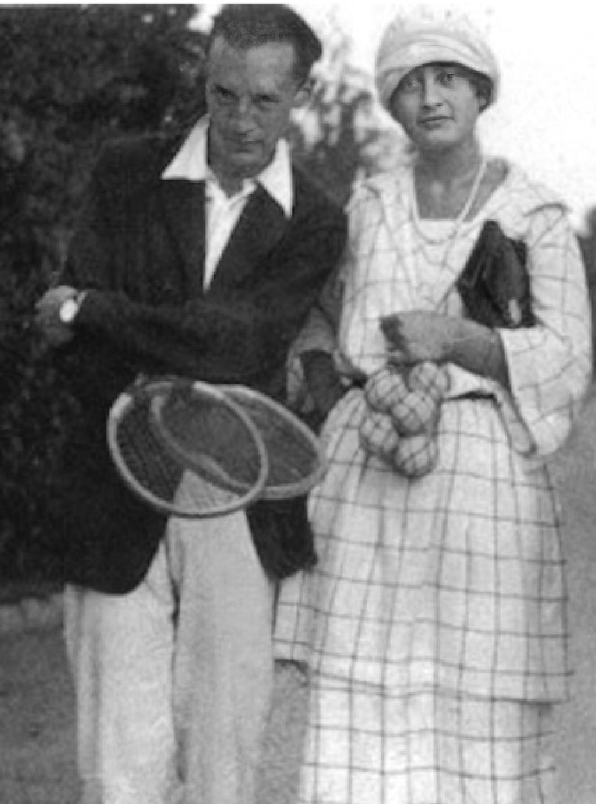
Hình 9: Vladimir Nabokov trên sân quần vợt — Vị giáo sư văn chương lừng danh xem những đường bóng là vũ điệu đối ứng kỳ ảo của ngôn từ và hình học.
The turban of Mlle Lenglen is known all over the world, it is one of the effects which distinguished Suzanne from all other players of the courts. Yet few people can really say how her turban is made. In fact it is really a long silk band which is carefully woven around her head. I have made all of Mlle Lenglen’s turbans, so I know how they are worn. They are always of ‘crêpe georgette’ and are of one color, of a delicate tint such as Nile green, canary yellow, sky blue, pale rose or any pastel shade. The turban is of a color slightly lighter than the sweater which she wears over her white silk court dress. A scarf of the same material and color generally always completed the ensemble. 154
Chương 11: Thời Trang Jean Patou, Althea Gibson & Nhiếp Ảnh Muybridge Chapters 13-15: Tennis Chic: Jean Patou, Althea Gibson, and Eadweard Muybridge
Khi Bill Tilden nhận xét một cách cáu kỉnh về Suzanne Lenglen, “Trang phục của cô ấy khiến tôi ấn tượng như sự kết hợp giữa trang phục của một cô gái đứng đầu và của một người đi dạo trên phố,” có lẽ anh ấy đã không nhìn thấy cô ấy thi đấu tại Wimbledon năm 1921. Bởi vì ngay cả khi cô ấy đội một trong những chiếc khăn xếp lộng lẫy, phần còn lại của trang phục của cô ấy vẫn thể hiện sự đơn giản, trang nghiêm và đẳng cấp. Chiếc váy tennis trong suốt của cô được thiết kế bởi Jean Patou. Và không thể có dấu ấn nào lớn hơn về phong cách và gu thẩm mỹ thực sự. Mặc dù nhân vật Lenglen trong vở ballet Le Train Bleu mặc đồ Chanel, nhưng bộ quần áo của Patou mà cô mặc trên sân vẫn đẹp hơn. Chiếc váy xếp ly dài đến đầu gối và chiếc áo len không tay vừa vặn, tất nhiên là màu trắng, đã tạo nên vẻ ngoài được gọi là “la garçonne”, và sự kết hợp giữa vẻ nam tính và nữ tính thật hấp dẫn. Sự nhẹ nhàng và sạch sẽ mang đến cho cô vẻ sang trọng đầy quyến rũ.
When we consider the colors of tennis clothes in the twenty-first century, the subtlety of those pastel shades bespeaks a very different sense of style. It was another sport back then—with wooden racquets and white tennis balls, and white the requisite color of what the players wore on the court. No one talked of product endorsements; no one shrieked when hitting the ball. What we now think of as an old-fashioned sense of elegance reigned.
Năm 1919, sau Thế chiến thứ nhất, Patou mở một hãng thời trang nhanh chóng trở thành nơi yêu thích của nhiều phụ nữ sang trọng nhất thế giới. Ông đã may những chiếc váy dạ hội bằng lụa thêu và đính cườm cho giới thượng lưu ở Pháp. Các loại quần áo của ông trải dài từ những chiếc váy trắng theo phong cách Hy Lạp và La Mã cho đến những chiếc áo khoác đẹp mắt có chất liệu dệt kiểu Ba Tư phong phú được bao quanh bởi nhiều cổ áo, cổ tay áo và viền lông thú. Anh ấy đã tạo ra một chiếc áo khoác “Yacht Club” và tạo điểm nhấn với chiếc áo khoác nhung lụa caramel “Fleurs du Mal” với phần lưng thêu hoa. Khi không khắc khổ như khi mặc đồ thể thao, ông ưa chuộng sự xa hoa: Voan đính sequin và thêu trên sa-tanh là tiêu chuẩn, cũng như những chiếc váy được trang trí bằng những vòng hoa hồng. Có rất ít sự kết hợp mà anh ấy không hình dung ra và sau đó thực hiện với mức độ chỉnh sửa cao nhất. Ông đã tạo ra những chiếc mũ nhung; anh ấy đã sử dụng lamé bạc và dán hạt.
helen wills became a regular Jean Patou client off the court as well as on it. When she married the San Francisco stockbroker Frederick Moody, in 1929, she left her wedding in a dark blue wool day dress with white piqué trim, its skirt broadly pleated only in front, its top part a fascinating play on a jacket with lapels that is in fact part of the dress. The style was lovely, but little engaged Jean Patou and brought out his genius as much as his sportswear. On the ground floor of his large fashion house in Paris, he had a space dedicated to it called “Le Coin des Sports.” Patou believed, “La silhouette sportive, c’est le chic absolu.” The need for clothing to suit the movements of tennis was an inspiration for the great couturier. Its function as athletic wear determined his aesthetic; in 1928, he wrote a magazine article declaring that there was “nothing more ridiculous than a tennis
Trước khi may quần áo chơi tennis, Patou đã thiết kế quần áo chơi gôn với áo kiểu thủy thủ và váy xếp ly; Cho dù phụ nữ đang sử dụng gậy driver và gậy sắt 3 hay đang tập trung vào cú đánh bóng, những gì họ mặc đều thể hiện sự tinh tế của Patou trong việc mặc quần áo cho phụ nữ khi di chuyển. Khi Suzanne Lenglen, vốn là khách hàng của một số trang phục mặc ban ngày thông thường của cô, tiếp cận anh về việc trang bị cho cô trang phục quần vợt, anh đã nhiệt tình chấp nhận thử thách. Lenglen đã bị thu hút bởi thời trang và sự sang trọng trong trang phục của Patou—cũng như sự tinh tế và sức sống của chính người đàn ông đó—gần như kể từ những ngày đầu của Patou. Cả cô và Patou đều muốn quần áo chơi tennis phù hợp với môn thể thao này hơn bao giờ hết.
dress with a lot of unnecessary trimmings.” 155 As Ariele Elia, a fashion historian, has pointed out, “He carefully studied sports and built construction details into his garments designed to aid the athlete in her performance.” 156 Tennis and modernism went hand in hand. In a good forehand as in the clothing worn for hitting it, the aesthetics of the International Style of architecture prevailed. Not only did form follow function, but it also did so beautifully. That had certainly not always been the case with the clothes. But the excellence of the two intrepid and beguiling women competing in Cannes in one of the most celebrated tennis matches of all time and their relationship to the brilliant Jean Patou are examples of greatness inspiring greatness.
Cần phải tạo điều kiện cho sự nhanh nhẹn hơn so với những kiểu quần áo tennis cũ hơn cho phép. Người mặc phải có khả năng lao vào lưới ở tốc độ tối đa mà không khiến chiếc váy ngắn của cô ấy bị vén lên và để lộ quá nhiều đùi, đồng thời phải vặn vẹo cơ thể khi vươn người lên trên để thực hiện cú đánh mà chất liệu không tạo ra những nếp nhăn khó coi. Ý tưởng mà Patou và Lenglen cùng nhau nuôi dưỡng, về một chiếc váy chỉ dành cho quần vợt, là một thử thách, nhưng cuối cùng nó đã truyền cảm hứng cho nhà thiết kế tạo ra một bộ trang phục tuyệt vời. Khi đeo nó, Lenglen chắc chắn sẽ được chú ý nhiều hơn bình thường, và điều đó đang nói lên điều gì đó.
Lenglen in the December 1926 issue of Vogue made tennis exceptionally elegant.
Patou và Lenglen đã được công nhận là bản gốc. Trước hết, họ đã đưa sự hoang phí lên một tầm cao mới. Một trong những công thức của Patou, Joy, là loại nước hoa đắt nhất trên thị trường vào những năm 1920. Nó được đựng trong những chiếc chai đẹp mắt; Patou thích mọi thứ tốt nhất trong số tốt nhất. Anh ấy đã đạt được thỏa thuận với Cartier về một thỏi son đựng trong hộp bạc có thể khắc tên viết tắt của khách hàng. Giống như những kiến trúc sư sáng tạo nhất của thời đại, ông đã tạo ra những thiết kế giao bóng chức năng của họ một cách hoàn hảo, nhưng ông cũng đưa khái niệm về sự sang trọng lên một tầm cao mới. Thật thích hợp biết bao khi người tạo ra Joy và những bộ váy xa hoa của anh ta lại là người thiết kế thời trang cho tay vợt xuất hiện tại các trận đấu trên những chiếc xe limousine trước khi đến sân trong chiếc áo khoác lông chồn. Lenglen đã đính những viên kim cương lên chiếc khăn trùm đầu banderol của cô ấy. Patou cũng là một người lập dị và biết cách tạo nên sự nổi bật; tại sao không được anh che chắn khi cô hôn gió trước đám đông? Lenglen biết rằng nhà thiết kế sáng tạo đã loại bỏ áo nịt ngực trong rất nhiều trang phục của mình. Phong cách của anh gợi lên cảm giác tự do mà cô thể hiện qua những nét vẽ sâu rộng và tiếng hét trơ trẽn. Patou là người đàn ông của cô ấy.
althea
Đây không phải là lần đầu tiên Lenglen khiến mọi người quay đầu lại khi nhìn thấy cô ấy. Ngay cả trước khi chọn làm việc với Patou, người thường được gọi là “diva quần vợt” đã có thói quen thu hút sự chú ý về bản thân bằng trang phục. Năm 1919, khi cô vừa bước sang tuổi hai mươi và ở London có cảm giác giải phóng khi chiến tranh thế giới đã kết thúc, cô xuất hiện tại Wimbledon—đây là lần đầu tiên cô đến đó—“trong một chiếc váy khoét sâu và đôi tất ống xuống: một bộ trang phục mà báo chí London cho là 'không đứng đắn.'"152
gibson
Patou cũng trần tục như bộ quần áo của anh ấy.
Carl Van Vechten’s wonderful portrait conveys Althea Gibson’s confidence but also her youth.
Năm 1921, khi Patou mặc trang phục cho Lenglen tham dự Wimbledon, ông đã cắt ngắn độ dài thông thường của chiếc váy tennis để váy của nó dài quá đầu gối. Lenglen đi tất trắng để giữ vẻ lịch sự; tuy nhiên, việc lộ ra phần chân nhỏ bé đó đã gây sốc cho phần lớn khán giả Anh nghiêm túc. Nhưng mọi thứ đều giảm bớt trở ngại. Chiếc váy không tay và áo len đan giúp Lenglen cử động cánh tay dễ dàng hơn nhiều. Và chiếc khăn xếp có tính khí động học: Nó giúp tóc cô không che khuất tầm mắt, không gây cảm giác vụng về như một chiếc mũ, và thậm chí còn có tác dụng như một chiếc băng đô thấm mồ hôi.
n 1959, one year after she had been ranked the world’s No. 1 female tennis player, Althea Gibson played opposite John Wayne and William Holden in the movie The Horse Soldiers, directed by John Ford. Three years earlier, she had won the French Open, and in 1957 she had glided her way to the top with victories at Wimbledon, and the US Championships. Yet
Lenglen cũng đi giày tennis được đặt làm riêng, làm bằng da nai màu trắng. Đế cao su crêpe đã giúp cô chơi game. Mọi thứ về cô ấy đều nguyên bản: không mặc áo nịt ngực và váy lót, thói quen nhấm nháp rượu mạnh giữa các buổi tập. Cô ấy là một nhà cách mạng, và Jean Patou cũng vậy.
her billing hardly showed up in any of the movie’s publicity, even though she had a major role. Is it because she was considered a sportsperson more than an
Việc patou sử dụng nếp gấp cho một trong những chiếc váy tennis của Lenglen sẽ có tác động sâu rộng. Sự sắp xếp đàn accordion của nó, cho phép cô thực hiện các chuyển động của mình trên sân, đã có tác động đến kiến trúc. Vào năm 2024, cấu trúc mái được thêm vào Sân Suzanne Lenglen trên sân Roland Garros, sân nhà của Giải quần vợt Pháp Mở rộng ở ngoại ô Paris, cùng với Bois de Boulogne, thiết kế của nó được coi là ám chỉ đến những nếp gấp đó. Tờ báo Le Monde đưa tin: “Sự mềm mại của bức tranh, sự sang trọng của các nếp gấp, ánh sáng rực rỡ... Điều duy nhất mê hoặc hơn việc chứng kiến nó gấp lại là khi nó rút lại và bầu trời xanh lại xuất hiện”. Đối với trận đấu tuyệt vời giữa Suzanne Lenglen và Helen Wills tại Cannes vào tháng 2 năm 1926, Jean Patou đã thiết kế trang phục cho cả hai người phụ nữ.
actress that, even though she was on screen longer than any other woman except Constance Tower, her name in the credits is the twenty-third? Was the reason the five-foot, eleven-inch thirty-two-year-old who played a slave in Ford’s film was not given star treatment because great tennis players are not always great actors? Even if she had done what Suzanne Lenglen and Helen Wills had wanted to do but failed to do by making it onto the silver screen, was she accorded such bad treatment because she was not very good in front of a camera? Or was it because of the color of her skin? When she won at Roland Garros, Gibson had been the first Black person, male or female, ever to win a tennis title in one of the four major championships that constituted the Grand Slam. Six years earlier, in 1950, she had, at age twenty-three, broken the color barrier of the American Lawn Tennis League by playing at the exclusive West Side Tennis Club in Forest Hills in the US National Tennis Championship. In 1951, she had been the first Black person to play at Wimbledon. None of it had come easily. She took the Wimbledon title six years later; after she was congratulated by Queen Elizabeth, she said, “Shaking hands with the Queen of England was a long way from being forced to sit in the colored section of the bus going into downtown Wilmington, North Carolina.” Gibson was born to sharecroppers who worked on a cotton farm in rural South Carolina. The Great Depression had an immediate impact on farmers, and in 1930 her parents moved to Harlem. The Police Athletic League operated a play area near the family’s apartment on 143rd Street between Lenox and Seventh Avenues: Gibson, a natural athlete, participated in lots of sports there, and by age twelve she was the women’s paddle tennis champion for all of New York City. Her father taught her boxing, which impacted both her athleticism and her attitude toward competition. Seeing how quick and agile she was, her neighbors made a collection for her to have tennis lessons, but she initially considered tennis a sport for weak people. She would later say that combat came so naturally to her that she would “fight the other
Lúc đó, Lenglen đã là một khách hàng tận tâm. Cô ấy không chỉ mặc chiếc váy quyến rũ của Patou tại Wimbledon năm 1921; vào năm 1925, cô đã mua một chiếc áo khoác cáo màu xanh và một chiếc áo choàng lamé từ hãng thời trang của anh ấy. Tuy nhiên, Wills là người mới trong danh sách khách hàng của Patou.
player every time I started to lose a match.” When the kid who often engaged in “street fighting”—her description of it—played tennis, she played to win. Soon, Gibson began not just to enter tournaments but also to end up the champion. She was discovered by Walter Johnson, a physician in Lynchburg, Virginia, who took young African American tennis players under his wing— Johnson would eventually mentor Arthur Ashe as he did Gibson—and he
Để mặc cho hai người phụ nữ có vẻ ngoài khác nhau này theo cùng một phong cách, giống như việc kết hợp phong cách High Baroque với chủ nghĩa cổ điển tinh tế nhất. Với những cú vung vợt sau và những cú đánh tiếp theo phức tạp cũng như cách ứng xử vượt trội của mình, Lenglen đã đạt được tất cả những thành tựu rực rỡ. Wills, với những nét vẽ cô đọng và cách cư xử hoàn hảo, đã gợi lên trật tự và sự tinh tế. Việc đưa Lenglen và Wills trong những bộ trang phục gần như giống hệt nhau đã được thêm vào sân khấu của sự kiện này, một bộ được coi là trận đấu của thế kỷ ngay cả trước khi họ bước vào sân. Vào đỉnh cao của mùa giải, với dàn người tham dự sang trọng, Lenglen và Wills được coi là hai tay vợt nữ đáng gờm nhất trong thế giới quần vợt. Khán giả có cảm giác như đang tham dự buổi ra mắt một kiệt tác, và những bộ trang phục gần giống nhau đã làm tăng thêm nét kịch tính.
helped her to gain entry into tournaments that did not normally have Black competitors. She moved back to the South, to Wilmington, North Carolina, and her tennis was of such sterling quality that she got a full athletic scholarship to Florida A&M University. But then she had her struggles to get into the US Championships at the West Side Tennis Club, in Forest Hills. An oasis of verdure and space in New York’s borough of Queens, Forest Hills seemed like an English village in the middle of the metropolis, and the tennis club, with its half-timbered Tudor- style clubhouse and thirty-five tennis courts, was a bastion of America’s white Protestant establishment. A large piece of real estate a short trip from midtown Manhattan, it represented great wealth; beyond that, its membership maintained a conspicuous exclusivity. The founders and subsequent inner sanctum of the West Side Tennis Club had ideas on how to keep it the way they wanted. Like private schools, dancing classes, country clubs, and universities all over America’s so-called integrated Northeast in the 1950s, there were unwritten rules concerning the eligibility of Blacks and Jews. Forest Hills Gardens was home to a number of Jewish refugees from Nazi Germany, but neither they nor Black people nor Asians were allowed onto its tennis courts.
Gợi ý về chiếc garter là một điểm nhấn tuyệt vời.
In this Van Vechten portrait, Gibson is very much the performer—as she loved to be, off the court as well as on it.
Đồng phục bao gồm một chiếc váy trắng mặc với một chiếc áo len dài chỉ cài cúc ở phía dưới. Chiếc áo đan len có túi lớn, ve áo dài và cổ áo ngắn.
That is why it had required Alice Marble to do battle on Gibson’s behalf to be allowed to compete. Although the United States Lawn Tennis Association could not legally exclude Blacks from its tournaments, wherever they were housed, they had made it impossible for Gibson to qualify for the Open by requiring her to win a certain number of points preliminarily that could be earned only in matches at private clubs where Blacks were indeed barred. Marble, immensely respected, had written a public letter in the magazine American Lawn Tennis shaming the members of the USLTA to such
Sau đó, trong một cuộc phỏng vấn trên tạp chí Tennis et Golf, Lenglen đã được trích dẫn:
an extent that they relinquished their power to keep Althea Gibson out of the tournament. Gibson’s getting onto the courts at the West Side Tennis Club, first to play in the US Open in 1950 and then to win it in 1957, had been a breakthrough, but even her tournament victory would not have secured her membership in the club. In 1959, Ralph Bunche Jr., the fifteen-year-old son of Dr. Ralph Bunche—one of the most distinguished Black people in America, a Nobel Prize winner and United Nations Under-Secretary- General for Special Political Affairs—was
Điều gì chưa được nói đến về sự “sang trọng” của tôi? Có lẽ tôi được khen về trang phục của mình nhiều hơn là về trò chơi của mình; nó gần như khó chịu!
denied membership. Bunche Jr. was taking lessons with George Agutter, a seventy-two-year-old pro who had been teaching at Forest Hills for forty-five years, and Agutter had urged him to apply for junior membership. Agutter had not realized that his pupil was a light-skinned Negro. After the error was recognized and Bunche Jr. was told it was out of the question, the elder Bunche telephoned the club president, Wildred Burglund, who said Forest Hills did not have Negroes or Jews as members. Burglund admitted to Bunche that Althea Gibson had twice won the woman’s singles title there, but that was only because the tournament was under the auspices of the US Lawn Tennis Association. The USLTA could do as it wanted, but the West Side Tennis Club could still deny Gibson membership. According to a newspaper account, “if the club admitted Negroes . . . hundreds of its members would instantly resign.” 157 Bunche went public about the matter, which was rare for him.
Điều chắc chắn là thành công của Patou không kém gì thành công của tôi.153
Neither I nor my son regard it as a hardship or humiliation. It is not, of course, in the category of . . . segregation . . . suffered by . . . Negroes in the North as well as the South. But it flows from the same well of racial and religious bigotry. Rather, it is a discredit to the club itself.
Người ta thắc mắc về điều “gần như”, nhưng Lenglen không có lý do gì để ngạc nhiên nếu mọi người chú ý đến chiếc mũ đội đầu của cô ấy — đó là điểm khác biệt chính giữa trang phục của Lenglen và Wills ở Cannes. Wills đeo tấm che mặt đặc trưng của cô ấy. Tuy nhiên, Lenglen lại quấn tóc bằng khăn xếp. Patou đã làm rất nhiều thứ cho cô ấy. Ông đã tuyên bố công khai về họ:
Five US senators and New York’s deputy mayor
Chiếc khăn xếp của Mlle Lenglen được cả thế giới biết đến, nó là một trong những tác dụng giúp phân biệt Suzanne với tất cả những tay vợt khác trên sân. Tuy nhiên, rất ít người có thể thực sự nói được chiếc khăn xếp của cô ấy được làm như thế nào. Thực ra đó là một dải lụa dài được dệt cẩn thận quanh đầu cô ấy. Tôi đã làm tất cả khăn xếp của Mlle Lenglen nên tôi biết chúng được đội như thế nào. Chúng luôn có màu 'crêpe georgette' và có một màu, một tông màu tinh tế như xanh sông Nile, vàng hoàng yến, xanh da trời, hồng nhạt hoặc bất kỳ màu phấn nào. Chiếc khăn xếp có màu nhạt hơn một chút so với chiếc áo len cô mặc bên ngoài chiếc váy lụa trắng. Một chiếc khăn có cùng chất liệu và màu sắc nhìn chung luôn hoàn thiện bộ trang phục.154
all publicly protested the heinous policy. The response from the leadership of the club was silence.
Khi chúng ta xem xét màu sắc của quần áo tennis trong thế kỷ 21, sự tinh tế của những gam màu nhạt đó cho thấy một phong cách rất khác. Đó là một môn thể thao khác vào thời đó—với vợt gỗ và quả bóng tennis màu trắng, và màu trắng là màu bắt buộc của trang phục mà các tay vợt mặc trên sân. Không ai nói về việc chứng thực sản phẩm; không ai la hét khi đánh bóng. Những gì mà ngày nay chúng ta nghĩ đến là cảm giác sang trọng cổ điển đã ngự trị.
The Supreme Court had made its landmark school integration decision five years earlier, but because the club had nothing in its written bylaws or constitution prohibiting Blacks and Jews and other unspecified minorities from joining, and the tradition of exclusivity was undocumented, no one had further recourse. The policy stayed in place. Gibson would subsequently write that even though it was immensely significant for her to be allowed to play at Forest Hills, on the first occasion when she gained entry she was “discriminated against by the tournament committee when they assigned me to Court 14, which is the farthest removed from the clubhouse of all the courts on the club grounds and has the smallest capacity for accommodating spectators.” 158 The well-known actor Ginger Rogers, who played mixed doubles in the tournament, was, on the other hand, put on the court directly in front of the clubhouse. Even at her obscure location, though, Gibson was noticed, to the extent that she had to cope with the annoyance of flashbulbs constantly going off in her face and temporarily blinding her. The press was excited by her breakthrough presence, and her tennis was remarkable. Lean and muscular, she used her long arms gracefully, dazzling people especially with her powerful serve. It would only be a matter of time before she went from being the first African American, male or female, on those courts to making it to the center court and having even more of an impact as the first such winner of the entire tournament.
helen di chúc đã trở thành khách hàng thường xuyên của Jean Patou ngoài sân đấu cũng như trên đó. Khi kết hôn với nhà môi giới chứng khoán Frederick Moody ở San Francisco, vào năm 1929, cô rời đám cưới của mình trong một chiếc váy ban ngày bằng len màu xanh đậm có viền piqué màu trắng, váy chỉ có nếp gấp rộng rãi ở phía trước, phần trên của nó là một họa tiết hấp dẫn trên một chiếc áo khoác có ve áo trên thực tế là một phần của chiếc váy.
It was an
Phong cách này rất đáng yêu, nhưng Jean Patou ít tham gia và phát huy tài năng của anh ấy cũng như trang phục thể thao của anh ấy. Ở tầng trệt của hãng thời trang lớn của ông ở Paris, ông có một không gian dành riêng cho nó có tên là “Le Coin des Sports”. Patou tin rằng, “La hình bóng thể thao, c’est le sang trọng tuyệt đối.” Nhu cầu về quần áo phù hợp với chuyển động của quần vợt là nguồn cảm hứng cho nhà thiết kế vĩ đại. Chức năng của nó là trang phục thể thao quyết định tính thẩm mỹ của anh ấy; vào năm 1928, ông viết một bài báo trên tạp chí tuyên bố rằng “không có gì lố bịch hơn một chiếc váy tennis với nhiều đồ trang trí không cần thiết.”155 Như Ariele Elia, một nhà sử học thời trang, đã chỉ ra, “Ông ấy đã nghiên cứu kỹ lưỡng các môn thể thao và xây dựng các chi tiết cấu trúc trong trang phục của mình được thiết kế để hỗ trợ vận động viên thi đấu.”156 Quần vợt và chủ nghĩa hiện đại luôn song hành với nhau. Trong một cú thuận tay tốt cũng như trang phục mặc để đánh nó, tính thẩm mỹ của Phong cách kiến trúc Quốc tế đã chiếm ưu thế. Hình thức không chỉ tuân theo chức năng mà còn rất đẹp mắt.
unusually hot day, both for watching tennis and for playing it.
Điều đó chắc chắn không phải lúc nào cũng đúng với quần áo. Nhưng sự xuất sắc của hai người phụ nữ gan dạ và quyến rũ thi đấu tại Cannes trong một trong những trận đấu quần vợt nổi tiếng nhất mọi thời đại và mối quan hệ của họ với Jean Patou tài giỏi là những ví dụ về sự vĩ đại truyền cảm hứng cho sự vĩ đại.
in 1957, Althea Gibson was not only the first Black champion at Wimbledon; she was also the first champion to receive the trophy personally from Queen Elizabeth II. She wrote about this in her autobiography, I Always Wanted to Be Somebody, which is rare among athlete’s memoirs because, although it is not great literature, it is fresh in tone and in its candor. Gibson validates the title when she describes herself getting ready for the match:
Lenglen trên tạp chí Vogue số tháng 12 năm 1926 đã khiến quần vợt trở nên thanh lịch đặc biệt.
Everyone in the dressing room was talking excitedly about the news that the Queen was going to be there. That made me feel extra good. I would have been terribly disappointed if she hadn’t been. 159
Bức chân dung tuyệt vời của ICarl Van Vechten truyền tải sự tự tin cũng như tuổi trẻ của Althea Gibson.
An hour before the match, when she was practicing on a
n 1959, một năm sau khi được xếp hạng là tay vợt nữ số 1 thế giới, Althea Gibson đã đấu với John Wayne và William Holden trong bộ phim The Horse Soldiers, do John Ford đạo diễn. Ba năm trước, cô đã vô địch Pháp mở rộng, vào năm 1957, cô đã vươn lên dẫn đầu với các chiến thắng tại Wimbledon và Giải vô địch Hoa Kỳ. Tuy nhiên, hóa đơn của cô hầu như không xuất hiện trong bất kỳ quảng cáo nào của bộ phim, mặc dù cô có một vai chính. Có phải vì cô ấy được coi là một vận động viên thể thao hơn là một diễn viên mà mặc dù cô ấy xuất hiện trên màn ảnh lâu hơn bất kỳ phụ nữ nào khác ngoại trừ Constance Tower, nhưng tên của cô ấy trong phần credit lại là thứ hai mươi ba? Có phải lý do mà người đàn ông 32 tuổi cao 5 foot, 11 inch đóng vai nô lệ trong phim của Ford không được coi là ngôi sao vì những tay vợt giỏi không phải lúc nào cũng là diễn viên giỏi? Ngay cả khi cô ấy đã làm được điều mà Suzanne Lenglen và Helen Wills muốn làm nhưng không làm được khi lên màn bạc, liệu cô ấy có bị đối xử tệ như vậy vì cô ấy không giỏi trước ống kính? Hay là do màu da của cô ấy?
side court, she “saw Queen Elizabeth eating lunch on the clubhouse porch. Instead of making me nervous, it made me feel more eager than ever to get out there and play.” As Gibson changed into a fresh shirt, she was counseled about how to curtsy to the Queen after the match. Then, just after Gibson won the finals with dashing tennis, the tournament officials asked her and the other finalist, Darlene Hard, to walk over to the umpire’s chair. Hard, a gracious loser and very much the image of the all-American girl with her blond ponytail and large white hairbow, and Gibson, who towered over her, stood at attention with perfect smiles and waited as workmen unrolled a red carpet from the royal box.
Khi giành chiến thắng tại Roland Garros, Gibson là người da đen đầu tiên, nam hay nữ, từng giành được danh hiệu quần vợt ở một trong bốn giải vô địch lớn tạo nên Grand Slam. Sáu năm trước, vào năm 1950, ở tuổi 23, cô đã phá vỡ rào cản màu sắc của Giải quần vợt sân cỏ (Lawn Tennis) Hoa Kỳ bằng cách chơi tại Câu lạc bộ quần vợt West Side độc quyền ở Forest Hills trong Giải vô địch quần vợt quốc gia Hoa Kỳ. Năm 1951, cô là người da đen đầu tiên thi đấu tại Wimbledon. Không có điều nào trong số đó đến một cách dễ dàng. Cô ấy giành chức vô địch Wimbledon sáu năm sau; sau khi được Nữ hoàng Elizabeth chúc mừng, cô ấy nói, "Bắt tay với Nữ hoàng Anh còn lâu mới bị buộc phải ngồi trong khu vực dành cho người da màu của xe buýt đi vào trung tâm thành phố Wilmington, Bắc Carolina."
Queen Elizabeth, followed by three attendants, walked gracefully out on the court. She wore a pretty pink dress, a white hat and white gloves, and she was absolutely immaculate, even in all that heat. One of the officials called me to step forward and accept my award. I walked up to the Queen, made a deep curtsy, and shook the hand she held out to me. “My congratulations,” she said, “it must have been terribly hot out there.” I said, “Yes, your majesty, but I hope it wasn’t as hot in your box. At least I was able to stir up a breeze.” The Queen had a wonderful speaking voice and looked exactly as a Queen ought to look, except more beautiful than you would expect any real-life queen to look. 160
Gibson được sinh ra trong một gia đình là những người chia sẻ làm việc tại một trang trại bông ở vùng nông thôn Nam Carolina. Cuộc Đại suy thoái đã ảnh hưởng ngay lập tức đến nông dân vào năm 1930, cha mẹ cô chuyển đến Harlem. Liên đoàn Thể thao Cảnh sát điều hành một khu vui chơi gần căn hộ của gia đình trên Phố 143 giữa Đại lộ Lenox và Đại lộ số 7: Gibson, một vận động viên bẩm sinh, đã tham gia rất nhiều môn thể thao ở đó, và đến năm 12 tuổi, cô đã là nhà vô địch quần vợt nữ của toàn thành phố New York. Cha cô đã dạy cô quyền anh, điều này ảnh hưởng đến cả thể lực và thái độ của cô đối với việc thi đấu. Thấy cô nhanh nhẹn và hoạt bát, hàng xóm đã quyên góp cho cô học tennis nhưng ban đầu cô coi quần vợt là môn thể thao dành cho người yếu. Sau đó, cô ấy nói rằng việc chiến đấu đến với cô ấy một cách tự nhiên đến mức cô ấy sẽ “chiến đấu với tay vợt khác mỗi khi tôi bắt đầu thua một trận đấu”. Khi đứa trẻ thường tham gia “đánh nhau trên đường phố”—cô mô tả về nó—chơi quần vợt, cô chơi để giành chiến thắng.
Queen Elizabeth then presented the gold salver to Gibson. Gibson “curtsied again and backed away from her; . . . I remembered the backing away business from the movies.” 161 The Queen then retreated, and the red carpet was rolled back up. At a celebration ball that evening at the Dorchester
Chẳng bao lâu sau, Gibson không chỉ bắt đầu tham gia các giải đấu mà còn trở thành nhà vô địch. Cô được phát hiện bởi Walter Johnson, một bác sĩ ở Lynchburg, Virginia, người đã nhận nuôi các tay vợt trẻ người Mỹ gốc Phi dưới sự chỉ đạo của mình— Johnson cuối cùng sẽ cố vấn cho Arthur Ashe như anh đã làm với Gibson—và anh ấy đã giúp cô được tham gia các giải đấu thường không có đối thủ Da đen. Cô chuyển về miền Nam, đến Wilmington, Bắc Carolina, và quần vợt của cô có chất lượng tốt đến mức cô nhận được học bổng thể thao toàn phần của Đại học Florida A&M.
Hotel, Gibson addressed the Duke of Devonshire, who was master of ceremonies, and said, “In the words of your distinguished Mr. Churchill, this is my finest hour.” She
Nhưng sau đó cô ấy đã gặp khó khăn để giành được chức vô địch Hoa Kỳ tại Câu lạc bộ Quần vợt West Side, ở Forest Hills. Là một ốc đảo xanh tươi và không gian ở quận Queens của New York, Forest Hills có vẻ giống như một ngôi làng nước Anh ở giữa đô thị, và câu lạc bộ quần vợt, với hội quán nửa khung gỗ theo phong cách Tudor và 35 sân tennis, là pháo đài của giới Tin lành da trắng ở Mỹ. Một mảnh bất động sản lớn cách trung tâm Manhattan một chuyến đi ngắn, nó đại diện cho sự giàu có to lớn; Ngoài ra, tư cách thành viên của nó còn duy trì tính độc quyền dễ thấy. Những người sáng lập và trụ sở nội bộ tiếp theo của Câu lạc bộ Quần vợt West Side đã có những ý tưởng về cách duy trì nó theo cách họ muốn. Giống như các trường tư thục, lớp học khiêu vũ, câu lạc bộ đồng quê và trường đại học trên khắp vùng được gọi là vùng Đông Bắc thống nhất của Mỹ vào những năm 1950, có những quy định bất thành văn liên quan đến tư cách hội đủ điều kiện của người da đen và người Do Thái. Forest Hills Gardens là nơi sinh sống của một số người tị nạn Do Thái từ Đức Quốc xã, nhưng cả họ, người da đen và người châu Á đều không được phép vào sân quần vợt của nó.
thanked “the many good people in England and around the world whose written and spoken expressions of encouragement, faith, and hope I have tried to justify.” She said that her win was “a total victory of many nations . . . created through the international language of tennis.” 162 Then Gibson started the dancing by going out on the floor with the men’s champion Lew Hoad. The two of them circled the ballroom to the song “April Showers,” which Gibson had requested, and it was several minutes before others in the awestruck crowd followed them onto the dance floor.
Trong bức chân dung Van Vechten này, Gibson rất giống người biểu diễn—như cô ấy yêu thích, cả ngoài sân đấu cũng như trên sân.
Two
Đó là lý do tại sao người ta yêu cầu Alice Marble phải thay mặt Gibson chiến đấu để được phép thi đấu. Mặc dù Hiệp hội quần vợt sân cỏ (Lawn Tennis) Hoa Kỳ không thể loại trừ người da đen khỏi các giải đấu của mình một cách hợp pháp, dù họ ở đâu, nhưng họ đã khiến Gibson không thể đủ điều kiện tham dự Giải mở rộng bằng cách yêu cầu cô phải giành được một số điểm nhất định ban đầu mà chỉ có thể kiếm được trong các trận đấu tại các câu lạc bộ tư nhân nơi người da đen thực sự bị cấm. Marble, vô cùng được kính trọng, đã viết một lá thư công khai trên tạp chí American Lawn Tennis làm xấu hổ các thành viên của USLTA đến mức họ từ bỏ quyền lực để loại Althea Gibson khỏi giải đấu.
regal women: Althea Gibson meets Queen Elizabeth.
Việc Gibson ra sân ở Câu lạc bộ Quần vợt West Side, lần đầu tiên chơi ở Giải Mỹ mở rộng vào năm 1950 và sau đó giành chức vô địch vào năm 1957, là một bước đột phá, nhưng ngay cả chiến thắng trong giải đấu của cô cũng không đảm bảo tư cách thành viên của cô trong câu lạc bộ. Năm 1959, Ralph Bunche Jr., con trai mười lăm tuổi của Tiến sĩ Ralph Bunche—một trong những người da đen nổi tiếng nhất ở Mỹ, người đoạt giải Nobel và Phó Tổng thư ký Liên hợp quốc phụ trách các vấn đề chính trị đặc biệt—đã bị từ chối làm thành viên. Bunche Jr. đang học với George Agutter, một chuyên gia 72 tuổi đã giảng dạy ở Forest Hills được 45 năm và Agutter đã thúc giục ông đăng ký trở thành thành viên cấp dưới. Agutter đã không nhận ra rằng học trò của mình là một người da đen da sáng. Sau khi lỗi được nhận ra và Bunche Jr. được thông báo rằng điều đó không thể xảy ra, Bunche lớn tuổi đã gọi điện cho chủ tịch câu lạc bộ, Wildred Burglund, người này nói rằng Forest Hills không có thành viên là người da đen hoặc người Do Thái. Burglund thừa nhận với Bunche rằng Althea Gibson đã hai lần giành được danh hiệu đơn nữ ở đó, nhưng đó chỉ là do giải đấu này dưới sự bảo trợ của Hiệp hội Quần vợt Sân cỏ Hoa Kỳ. USLTA có thể làm theo ý muốn, nhưng Câu lạc bộ quần vợt West Side vẫn có thể từ chối tư cách thành viên của Gibson. Theo một tài khoản trên báo, “nếu câu lạc bộ thừa nhận
After her triumph in London, Gibson went back to the United States. In New York, she was the second African American—Jesse Owens, the track star who won four gold medals in the 1936 Olympics, had been the first—to be honored with a ticker-tape parade. President Dwight Eisenhower wrote to her:
Người da đen . . . hàng trăm thành viên của nó sẽ từ chức ngay lập tức.”157
Recognizing the odds you faced, we have applauded your courage, persistence and application. Certainly it is not easy for anyone to stand in the center court at Wimbledon and, in
Bunche đã công khai vấn đề này, điều này rất hiếm đối với anh ta.
the glare of world publicity, and under the critical gaze of thousands of spectators, do his or her very best. You met the challenge superbly. 163
Cả tôi và con trai tôi đều không coi đó là khó khăn hay tủi nhục. Tất nhiên, nó không thuộc loại . . . sự phân biệt. . . phải chịu đựng . . . Người da đen ở miền Bắc cũng như miền Nam. Nhưng nó xuất phát từ cùng một nguồn gốc của sự cố chấp về chủng tộc và tôn giáo. Đúng hơn, đó là sự mất uy tín đối với chính câu lạc bộ.
Gibson then won the US Open in the stadium where she had previously been forbidden entry. The following year, she glided her way to victory yet again in both tournaments. The Associated Press, in both 1957 and 1958, declared her “Female Athlete of the Year.” Still, there was no getting away from prejudice. Playing doubles, Gibson and her partner Angela Buxton, who was Jewish, were turned down on the many occasions when they sought admission to the All England Lawn Tennis Club. And this was after Gibson had been publicly congratulated by the Queen.
Năm thượng nghị sĩ Hoa Kỳ và phó thị trưởng New York đều công khai phản đối chính sách tàn ác này. Phản hồi từ lãnh đạo câu lạc bộ là sự im lặng.
althea gibson loved performing, and not just on the tennis court. By her own admission, she “always wanted to be somebody” in more ways than as a sports champion. She was a talented singer and saxophonist; in 1943, she had been runner-up in an amateur contest at Harlem’s renowned Apollo Theater. She was determined to make her way in the world of music. In July 1957, just after she won Wimbledon, Gibson appeared on The Ed Sullivan Show. At the time, Sullivan was the best-known television host in the
Sân đấu Tối cao đã đưa ra quyết định mang tính bước ngoặt về hội nhập trường học 5 năm trước đó, nhưng vì câu lạc bộ không có nội dung nào trong văn bản luật hoặc hiến pháp cấm người da đen, người Do Thái và các nhóm thiểu số không xác định khác tham gia, và truyền thống về độc quyền không có giấy tờ, nên không ai có quyền truy đòi thêm. Chính sách vẫn giữ nguyên.
world, and his program was an American institution. Sullivan praised Gibson as “a great young champion who did it the hard way.” She used the occasion to speak about tennis as a means for underprivileged children to elevate themselves in the world and referred to the marvel of someone from her humble beginnings having an audience with the Queen of England in front a large cheering public. But being featured simply because of her tennis victory was not enough for her. In 1958, Gibson appeared periodically on the Sullivan show singing popular songs of the era, usually accompanied by a full orchestra. Her themes were invariably upbeat, as in “I Should Care.” As she sang “Maybe I won’t find someone as lovely as you, but I should care, I should care, I should care and I do,” she inspired a round of applause from the audience. Nonetheless, to some of us, it is what we would call, at best, “a period
Gibson sau đó đã viết rằng mặc dù việc được phép chơi ở Forest Hills là vô cùng quan trọng đối với cô ấy, nhưng trong lần đầu tiên khi được vào sân, cô ấy đã “bị ủy ban giải đấu phân biệt đối xử khi họ chỉ định tôi đến Sân 14, sân xa nhất so với hội quán của tất cả các sân trong khuôn viên câu lạc bộ và có sức chứa nhỏ nhất để chứa khán giả.”158 Diễn viên nổi tiếng Ginger Rogers, tay vợt đôi nam nữ trong giải đấu, đã được đưa vào sân ngay trước cửa câu lạc bộ.
piece”—a bit melodramatic and atonal. Gibson’s performance of “We Have So Much to Live For” was another musical effort at optimism. When heard today, it does not make the grade for everybody, but if it was your sort of thing, there was no beating the earnestness with which Gibson sang the line “Though life is dreary and blue, you know there’s someone who cares for you.” Gibson had an evangelical side. She put her heart and soul into it when she urged her audience to high spirits, singing, “So why not be happy, and thank God above, for all that He gave us, and make a world filled with love.” The orchestra did not shy away from a style that now seems schmaltzy at best, but apparently it suited Sullivan’s audience. Fortunately, Gibson came more into her own musically when, a year later, on August 23, 1959, she appeared again on The Ed Sullivan Show and sang “Jelly Roll Blues” with the Turk Murphy Band. She now demonstrated more of the spirit and lightness with which she played tennis. This was also true when, in the year of her winning three Grand Slam tennis titles, she sang in public at the Waldorf Astoria Hotel at an eighty-fourth-birthday
Tuy nhiên, ngay cả ở vị trí ít người biết đến của cô, Gibson vẫn được chú ý, đến mức cô phải đối mặt với sự khó chịu khi bóng đèn flash liên tục chiếu vào mặt và khiến cô tạm thời bị mù. Báo chí rất phấn khích trước sự hiện diện đột phá của cô ấy, và môn quần vợt của cô ấy rất đáng chú ý. Gầy gò và cơ bắp, cô ấy sử dụng đôi tay dài của mình một cách duyên dáng, khiến mọi người choáng váng, đặc biệt là với cú giao bóng mạnh mẽ của mình. Sẽ chỉ là vấn đề thời gian trước khi cô ấy từ vị trí là người Mỹ gốc Phi đầu tiên, nam hay nữ, trên các sân đó trở thành sân trung tâm và thậm chí còn có nhiều tác động hơn với tư cách là người chiến thắng đầu tiên trong toàn bộ giải đấu.
tribute to W. C. Handy, the songwriter who was considered “Father of the Blues.” It was an unusual idea of John Ford’s when he put Gibson in The Horse Soldiers, and an odd decision on her part to take the role. On the screen, playing the part of a well-dressed slave, she is subservient and docile, the antithesis of the warrior she was in real life. She has mostly one look on her face—of wide-eyed astonishment. A general bloodbath, roaring with testosterone, The Horse Soldiers is not a great movie. Since Gibson gets shot dead well before the end, for most of us there is not much worth seeing from then on. But when she was on the screen, Gibson had a certain authenticity, in part because she refused to speak in the dialect that Ford initially expected of her. Ford as a director was known to insist on having the last word, but Gibson prevailed in her insistence that, despite the dictates of the film script, she not sound like a stereotype in a way that diminished Black people. Regardless of her efforts on the screen and the stage, however, the only form of artistic performance at which Althea Gibson excelled was on the tennis court. For a while, that was enough to keep her flush. Even when she was no longer winning Grand Slam matches, in 1960 she managed to make $100,000 doing exhibition matches before Harlem Globetrotters basketball games.
Đó là một ngày nóng bất thường, cả để xem quần vợt và chơi quần vợt.
gibson’s next foray was into the world of professional golf. In 1964,
năm 1957, Althea Gibson không chỉ là nhà vô địch Da đen đầu tiên tại Wimbledon; bà cũng là nhà vô địch đầu tiên nhận cúp cá nhân từ Nữ hoàng Elizabeth II. Cô ấy đã viết về điều này trong cuốn tự truyện của mình, Tôi Luôn Muốn Trở Thành Ai Đó, một cuốn hồi ký hiếm thấy trong số các cuốn hồi ký của một vận động viên bởi vì, mặc dù nó không phải là một tác phẩm văn học hay, nhưng nó có giọng điệu tươi mới và chân thật. Gibson xác nhận tiêu đề khi cô ấy mô tả bản thân đã sẵn sàng cho trận đấu:
she joined the Ladies Professional Golf Association—the first African American to do so—at age thirty-seven. She was able to be a member but was still banned from tournaments not just in the South but also in the North, and often had to dress for matches in her car because she was not allowed in the clubhouse. Still, in 1976, Althea Gibson became Athletic Commissioner of New Jersey—and was the first woman to hold such a post anywhere in the United States. In taking that position, she again broke new ground. She had
Mọi người trong phòng thay đồ đang bàn tán sôi nổi về tin Nữ hoàng sẽ đến đó. Điều đó khiến tôi cảm thấy dễ chịu hơn. Tôi sẽ thất vọng khủng khiếp nếu không có cô ấy.159
already demonstrated that an athlete could venture into the arts by singing so that all of America could hear her, appearing in movie theaters throughout the country, and writing a respectable book; now she showed that an athlete could play a role in public life. Married and divorced twice, Gibson was essentially alone in the world toward the end of her life. After she turned sixty, her health started to decline. In the late 1980s, she had two cerebral hemorrhages, and in 1992 a stroke. Unable to pay her rent or for medical treatment, she asked for help from various tennis organizations, but never received it. Fortunately, Angela Buxton raised more than a million dollars from mutual acquaintances to assure her comfort until 2003, when Gibson died, at age seventy-five. There is an art to living courageously when the odds are against you, and to using your own hardship to benefit the people who follow you. In 1999, Serena Williams, aged seventeen and already on the way to her first of six victories in the US Open, faxed Gibson questions to which the answers became a rich resource for both Serena and her sister Venus. 164 The Williams sisters felt a strong impact from Gibson’s response: “‘Play aggressively and with spirit. Since you’ll be the underdog, you’ll have nothing to lose. But most of all, be who you are and let your racquet do the talking.’” During Black History Month that year, the sisters published a newsletter with her on the cover of it. Serena and Venus Williams’s titles at Wimbledon and the US Open were fabulous echoes of the achievement that made Althea Gibson in many ways their mentor.
Một giờ trước trận đấu, khi đang tập luyện ở sân phụ, cô ấy "thấy Nữ hoàng Elizabeth đang ăn trưa trên hiên nhà câu lạc bộ. Thay vì khiến tôi lo lắng, điều đó khiến tôi cảm thấy háo hức hơn bao giờ hết khi được ra ngoài thi đấu." Khi Gibson thay một chiếc áo sơ mi mới, cô ấy đã được tư vấn về cách cúi chào Nữ hoàng sau trận đấu. Sau đó, ngay sau khi Gibson giành chiến thắng trong trận chung kết với môn quần vợt tốc độ, ban tổ chức giải đấu đã yêu cầu cô và người vào chung kết khác, Darlene Hard, bước tới ghế trọng tài. Hard, một kẻ thua cuộc duyên dáng và rất giống hình ảnh một cô gái Mỹ với mái tóc đuôi ngựa màu vàng và chiếc nơ lớn màu trắng, và Gibson, người đứng cao hơn cô ấy, đứng thu hút sự chú ý với nụ cười hoàn hảo và chờ đợi khi những người công nhân trải thảm đỏ ra khỏi hộp hoàng gia.
in 1968, when Arthur Ashe was the first African American man ever to win a Grand Slam singles title, in the same stadium in Forest Hills where Althea Gibson had changed the course of
Nữ hoàng Elizabeth, theo sau là ba người hầu cận, bước ra sân một cách duyên dáng. Cô ấy mặc một chiếc váy màu hồng xinh xắn, đội mũ trắng và đeo găng tay trắng, và cô ấy hoàn toàn không tì vết, ngay cả trong cái nóng như thế này. Một trong những quan chức đã gọi tôi bước tới và nhận giải thưởng của tôi. Tôi bước đến gần Nữ hoàng, cúi chào thật sâu và bắt tay cô ấy đưa cho tôi. “Xin chúc mừng tôi,” cô nói, “ngoài đó chắc hẳn nóng khủng khiếp.” Tôi nói, "Vâng, thưa bệ hạ, nhưng tôi hy vọng nó không nóng như trong hộp của ngài. Ít nhất tôi đã có thể khuấy động một làn gió." Nữ hoàng có giọng nói tuyệt vời và trông giống hệt như một Nữ hoàng, ngoại trừ việc xinh đẹp hơn những gì bạn mong đợi ở bất kỳ cuộc sống thực nào.
history, Billy Jean King said it was thanks to this daughter of sharecroppers that it was “so easy for Arthur.” 165 Tennis was how Althea Gibson made civilization advance.
Nữ hoàng Elizabeth sau đó đã tặng chiếc đồng bạc vàng cho Gibson. Gibson “lại cúi chào và lùi lại khỏi cô ấy;... Tôi nhớ đến việc rút lui khỏi các bộ phim.”161 Sau đó, Nữ hoàng rút lui, và tấm thảm đỏ được cuộn lại.
tennis in the work of eadweard muybridge
Tại một vũ hội ăn mừng tối hôm đó tại khách sạn Dorchester, Gibson đã nói chuyện với Công tước Devonshire, người chủ trì các nghi lễ, và nói, "Theo lời của ông Churchill đáng kính, đây là giờ phút tuyệt vời nhất của tôi." Cô cảm ơn “nhiều người tốt ở Anh và trên khắp thế giới mà tôi đã cố gắng biện minh bằng văn bản và lời nói về sự khích lệ, niềm tin và hy vọng.” Cô ấy nói rằng chiến thắng của cô ấy là “chiến thắng chung của nhiều quốc gia. . .
ven before we know who Eadweard Muybridge was, or why he spelled “Edward” that way, or what exactly we are looking at here, or when it was done, the first question is why and how the photographer—in two rows of images, ten per row—made his subject the sequence of movements that constitute the serve in tennis. The second
được tạo ra thông qua ngôn ngữ quần vợt quốc tế.”162 Sau đó Gibson bắt đầu khiêu vũ bằng cách bước ra sàn với nhà vô địch nam Lew Hoad. Hai người họ đi vòng quanh phòng khiêu vũ theo bài hát “Những cơn mưa rào tháng Tư” mà Gibson đã yêu cầu, và phải mất vài phút trước khi những người khác trong đám đông kinh ngạc theo họ lên sàn nhảy.
question is why this male tennis player is stark naked, as if it is the most normal thing in the world to have his genitals and thick pubic hair and the rest of his body in plain view while he swings a racquet.
Hai người phụ nữ vương giả: Althea Gibson gặp Nữ hoàng Elizabeth.
Muybridge’s Animal Locomotion series effectively dissected the many elements of the serve.
Sau chiến thắng ở London, Gibson quay trở lại Hoa Kỳ. Ở New York, cô là người Mỹ gốc Phi thứ hai—Jesse Owens, ngôi sao điền kinh đã giành được bốn huy chương vàng trong Thế vận hội năm 1936, là người đầu tiên—được vinh danh bằng một cuộc diễu hành trên băng giấy. Tổng thống Dwight Eisenhower đã viết cho cô ấy:
Muybridge had started his depictions of living creatures in progressive motion with a horse. He wanted to show, exactly, which of the animal’s hooved feet are elevated above the ground, the knees of its lithe legs crooked accordingly, in a correct trot and gallop. He was doing this for a patron of his photography who owned racehorses as well as a collection of paintings of horses. The collector believed that neither the trot nor the gallop was evoked adequately in racetrack scenes, even the wonderful canvases and pastels by George Stubbs and Edgar Degas. Muybridge succeeded with a sequence of images that satisfied his client. The photographer next chose a tennis player in the process of serving as a further example of coordinated motion. The tennis serve is a fantastic feat. It requires the synchronized action of the player’s weaker arm tossing the ball upward to the ideal height and position while his stronger arm, the one that holds the racquet, goes down to the small of his back and then upward. Simultaneously, the player’s legs go from being slightly bent at the knee to stretched to their ultimate height. The player must move his arm as if throwing a lance so that the strings and the ball contact the ball that he has tossed as his ammunition. The player then needs to hit at the correct trajectory to send the ball over the net with the area of the service court as his target. Wanting to dissect specific movements and freeze each element for observation, Muybridge could hardly have picked a better theme.
Nhận thức được những khó khăn mà bạn phải đối mặt, chúng tôi đã hoan nghênh lòng dũng cảm, sự kiên trì và nỗ lực của bạn. Chắc chắn không dễ để bất cứ ai đứng ở sân trung tâm tại Wimbledon và trước sự chú ý của dư luận thế giới cũng như dưới sự chỉ trích của hàng nghìn khán giả, lại thi đấu hết sức mình. Bạn đã vượt qua thử thách một cách xuất sắc.163
Still, why is he naked and why is Muybridge’s female tennis player, of whom he did more series than the man, always dressed as primly as Whistler’s mother? And what is she actually doing in coaxing the
Gibson sau đó đã vô địch US Open tại sân vận động nơi trước đó cô bị cấm vào. Năm sau, cô lại giành chiến thắng ở cả hai giải đấu. Hãng thông tấn AP, trong cả năm 1957 và 1958, đều vinh danh cô là “Vận động viên nữ của năm”.
ball from the ground only to balance it on the racquet face, which she holds parallel to the surface of the court?
Tuy nhiên, vẫn không thể thoát khỏi thành kiến. Chơi đôi, Gibson và cộng sự của cô là Angela Buxton, một người Do Thái, đã nhiều lần bị từ chối khi họ xin gia nhập Câu lạc bộ quần vợt sân cỏ (Lawn Tennis) toàn nước Anh. Và điều này diễn ra sau khi Gibson được Nữ hoàng công khai chúc mừng.
muybridge’s life had multiple facets. Like his horses and tennis players, he was always in the process of transformation. Born in England in 1830, he was named Edward James Muggeridge. His name twenty years later was Helios— the name of the Greek god known as the Titan of the sun. By then he had moved himself to San Francisco, then the capital of the Gold Rush in the Wild West. The city boasted forty bookstores and twelve photography studios, and Muggeridge had landed himself a job as a bookseller and decided he needed the new sobriquet for the position. His life and identity changed again a decade later after he decided to go back to London and travel on to Continental Europe. In June 1860, at the Texas border, the horse pulling his stagecoach went wild, and the runaway vehicle had an accident that killed the driver and a fellow passenger; when Muggeridge woke up nine days later, in a hospital in Fort Smith, Arkansas, he had no memory of the period between a supper he had had in a wayside cabin, just before the accident, and the current moment. He had become deaf, lost his sense of smell, and was generally confused; fifteen years later, he would claim in an interview in the Sacramento Daily Union that the accident made his hair go from brown to gray. 166 His next metamorphosis concerned his name. When he was living in San Francisco, he had become a photographer. As if to be in concord with the click of the camera shutter, Muggeridge had become Muybridge by the time he reached New York and was suing the stagecoach company. Eventually, after one of many trips to England, he replaced that humdrum “Edward”
althea gibson thích biểu diễn, không chỉ trên sân quần vợt. Bằng sự thừa nhận của chính mình, cô ấy “luôn muốn trở thành ai đó” theo nhiều cách hơn là trở thành một nhà vô địch thể thao. Cô ấy là một ca sĩ và nghệ sĩ saxophone tài năng; năm 1943, cô đã về nhì trong một cuộc thi nghiệp dư tại Nhà hát Apollo nổi tiếng của Harlem. Cô quyết tâm dấn thân vào thế giới âm nhạc.
with Eadweard—which was the way the English kings spelled it—although for an exhibition of his work that went to Guatemala, he would be Eduardo Santiago Muybridge. The latter had the same ring as the name he had given to his son—Florado Helios Muybridge—who had been born in April of 1870. The following year, he married Florado’s mother, Flora, after she got a divorce from her previous husband. Flora was twenty-one years old to Muybridge’s forty-one. When he was in New York settling his lawsuit, Muybridge applied for patents there and abroad for new devices for plate printing as well as clothes washing. It was the same period when Edward Clark, Isaac Singer, and others were taking out patents for variations of the sewing machine; the idea was to make the processes of
Vào tháng 7 năm 1957, ngay sau khi vô địch Wimbledon, Gibson xuất hiện trên The Ed Sullivan Show. Vào thời điểm đó, Sullivan là người dẫn chương trình truyền hình nổi tiếng nhất thế giới và chương trình của ông là một tổ chức của Mỹ. Sullivan ca ngợi Gibson là “một nhà vô địch trẻ tuyệt vời đã làm được điều đó một cách khó khăn”. Cô nhân cơ hội này để nói về quần vợt như một phương tiện để những đứa trẻ kém may mắn nâng cao bản thân trên thế giới và đề cập đến điều kỳ diệu khi một người nào đó ngay từ khởi đầu khiêm tốn của cô đã được diện kiến Nữ hoàng Anh trước đông đảo công chúng cổ vũ.
daily labor more efficient and give people greater freedom in their everyday lives. Muybridge, meanwhile, was embarking in many directions at once. It has been hypothesized that the injury to his orbitofrontal cortex in the stagecoach debacle extended into the anterior temporal lobes, resulting in a lifelong impact on his behavior; he lost the social inhibitions he had before the accident, and at the same time became even more creative than he had been. During the 1860s, he traveled to Paris at least twice, became a director of a company in Austin, Texas, that owned silver mines, and served as a director of the Ottoman Company and the Bank of Turkey. By the time he moved back to San Francisco, in 1867, the photographer who, before being thrown from the stagecoach, had been the image of a correct and conservative businessman, was a wild eccentric, forever canceling business arrangements and flying into rages. But he still managed to be successful. He transformed a horse-drawn carriage that only had two wheels into a portable darkroom he called Helios’ Flying Studio. He began making stereographs: paired photomechanical prints or photographs positioned to stand side by side and viewed through a stereograph, a device resembling wide binoculars, in order to create a single three-dimensional image.
Nhưng việc được nổi bật chỉ vì chiến thắng quần vợt là chưa đủ đối với cô ấy. Năm 1958, Gibson xuất hiện định kỳ trên chương trình Sullivan và hát những bài hát nổi tiếng của thời đại, thường đi kèm với một dàn nhạc đầy đủ. Chủ đề của cô ấy luôn lạc quan, chẳng hạn như trong “I Should Care”. Khi hát “Có lẽ tôi sẽ không tìm được người nào đáng yêu như em, nhưng tôi nên quan tâm, tôi nên quan tâm, tôi nên quan tâm và tôi làm vậy”, cô đã khiến khán giả đứng dậy vỗ tay. Tuy nhiên, đối với một số người trong chúng ta, đó là cái mà chúng ta hay gọi nhất là “một tác phẩm thời kỳ”—một chút khoa trương và khác thường. Màn trình diễn "We Have So Much to Live For" của Gibson là một nỗ lực âm nhạc khác thể hiện sự lạc quan. Khi nghe ngày hôm nay, nó không phù hợp với tất cả mọi người, nhưng nếu đó là sở thích của bạn, thì sẽ không có gì sánh bằng với sự nghiêm túc khi Gibson hát câu “Mặc dù cuộc sống buồn tẻ và xanh ngắt, nhưng bạn biết có ai đó quan tâm đến bạn.” Gibson có một khía cạnh truyền giáo. Cô ấy đặt cả trái tim và tâm hồn vào đó khi thúc giục khán giả của mình phấn chấn lên khi hát, “Vậy tại sao không hạnh phúc và cảm ơn Chúa ở trên cao vì tất cả những gì Ngài đã ban cho chúng ta, và tạo nên một thế giới tràn ngập tình yêu thương.” Dàn nhạc đã không né tránh một phong cách mà bây giờ có vẻ hợp lý nhất, nhưng dường như nó phù hợp với khán giả của Sullivan.
The stereographs Muybridge made as he took Helios’ Flying Studio to Yosemite and then Alaska attracted the attention of Leland Stanford, a wealthy businessman, who commissioned Muybridge to do portraits of both his mansion and his racehorse Occident. Stanford told Muybridge that he was frustrated by the way paintings of horses either galloping or trotting were never accurate in how they depicted the positions of each of the horse’s four feet. In 1878, Muybridge used twelve cameras to do a sequential series of photos of a horse in full action. He connected wires to an electromechanical circuit in such a way that when the horse’s hooves tripped them, they automatically triggered the shutters of the cameras to which they were attached. Each exposure lasted 2/1000 of a second. The images of the horses in motion were published in magazines and became known worldwide. By 1879, he was making series with twenty-four cameras at once. Muybridge’s professional life zoomed forward; his personal life did the reverse. Shortly after Florado was born, the maternity nurse made sure Muybridge knew the extent of the love affair his wife was having with a family friend, Harry Larkin. The relationship was not new to Muybridge, but its details were. On the back of a picture he had taken of Florado, Flora had written “Harry.” The boy’s paternity became uncertain. Muybridge went straight to Calistoga, where Larkin worked in a mine. He showed Larkin a letter that Larkin had written to Flora, pulled out a pistol, and shot his wife’s lover point blank. Muybridge went to the Napa jail gleefully. Notably cheerful when incarcerated, he defended certain principles. Muybridge fought the racism directed at a fellow inmate, referred to as “a Chinaman,” 167 saying the immigrant from Asia needed to be treated the same as everyone else. Meanwhile, Leland Stanford hired a defense attorney for him. Admitting in the courtroom that he had intended to murder his wife’s lover, Muybridge mostly gave the impression that he had no idea of what was going on. On the rare occasions when he was more conscious of reality, he became enraged,
May mắn thay, Gibson đã trở nên nổi tiếng hơn trong âm nhạc của riêng mình khi một năm sau, vào ngày 23 tháng 8 năm 1959, cô lại xuất hiện trên The Ed Sullivan Show và hát "Jelly Roll Blues" với Ban nhạc Turk Murphy. Giờ đây cô ấy đã thể hiện được tinh thần và sự nhẹ nhàng hơn khi chơi quần vợt. Điều này cũng đúng khi, vào năm cô giành được ba danh hiệu quần vợt Grand Slam, cô đã hát trước công chúng tại khách sạn Waldorf Astoria trong lễ kỷ niệm sinh nhật lần thứ 84 của W. C. Handy, nhạc sĩ được coi là “Cha đẻ của nhạc Blues”.
bursting into incoherent cries and shouts. His lawyer pleaded insanity, and Muybridge was acquitted on the grounds of “justifiable homicide.” 168 By 1887, Muybridge had produced 781 plates of his Animal Locomotion series, from more than 100,000 images he had made. Plate 294 had the two rows of ten photos of the naked male tennis player, wiry and fit. The following plate was of a heavy-set woman dressed in the style in which ladies of the era played tennis. She is wearing a tam o’shanter—a Scottish bonnet normally worn by men—and sports a black jacket and a skirt of black and white vertical stripes that resembles a beach towel. After using her racquet to scoop up a ball from the ground—no mean feat, as anyone who has ever tried
Đó là một ý tưởng khác thường của John Ford khi ông đưa Gibson vào The Horse Soldiers, và một quyết định kỳ quặc của cô khi nhận vai này. Trên màn ảnh, vào vai một nô lệ ăn mặc bảnh bao, cô ấy ngoan ngoãn và phục tùng, trái ngược với hình ảnh chiến binh ngoài đời. Cô ấy hầu như chỉ có một vẻ mặt—với đôi mắt mở to kinh ngạc. Một cuộc tắm máu chung chung, gầm gừ với testosterone, The Horse Soldiers không phải là một bộ phim hay. Vì Gibson bị bắn chết trước khi kết thúc nên đối với hầu hết chúng ta, kể từ đó trở đi không có nhiều điều đáng xem. Nhưng khi xuất hiện trên màn ảnh, Gibson có sự chân thực nhất định, một phần vì cô từ chối nói bằng phương ngữ mà ban đầu Ford mong đợi ở cô. Ford với tư cách là một đạo diễn được biết đến là người luôn muốn có lời cuối cùng, nhưng Gibson đã thắng thế khi nhấn mạnh rằng, bất chấp những mệnh lệnh của kịch bản phim, cô ấy nghe không giống một khuôn mẫu theo cách làm giảm bớt người Da đen.
to do this knows—she remains stooped while balancing the ball on her racquet, which she holds with the face parallel to the ground, at knee height, like a serving tray. She then taps the ball into the air so that she can catch it and hold it ready to bounce as she pulls into her backswing and prepares to hit a forehand. Every tennis player knows that what she is doing is not easy to execute. Even a more athletic person in lightweight, breathable clothing would probably be awkward at it. The top row shows the woman performing this act in right profile; the second has her facing left; the third has us seeing her from behind. In a way, it is the principle of Cubist painting, which would emerge some thirty years later, where we see the same subject from different vantage points simultaneously. Next comes a plate with images of the same woman in the same cumbersome outfit, only this time she is wearing a wide-brimmed hat of white straw. Here Muybridge has her preparing to hit an underhand shot. Her form is that of a beginner, and a poor one at that. If she actually managed to make contact with the ball, were it to succeed miraculously in going over the net, it would do so in a high loop, like an underhand softball pitch.
Tuy nhiên, bất chấp những nỗ lực của cô trên màn ảnh và sân khấu, hình thức biểu diễn nghệ thuật duy nhất mà Althea Gibson thể hiện xuất sắc là trên sân quần vợt. Trong một thời gian, điều đó đủ để khiến cô đỏ mặt. Ngay cả khi cô không còn thắng các trận Grand Slam nữa, vào năm 1960, cô vẫn kiếm được 100.000 đô la khi tham gia các trận đấu biểu diễn trước các trận bóng rổ Harlem Globetrotters.
The well-dressed woman in Muybridge’s first image of her playing tennis reveals the incremental motion of a well-executed forehand.
Bước đột phá tiếp theo của gibson là bước vào thế giới chơi gôn chuyên nghiệp. Năm 1964, cô gia nhập Hiệp hội chơi gôn chuyên nghiệp dành cho nữ—người Mỹ gốc Phi đầu tiên làm như vậy—ở tuổi ba mươi bảy. Cô có thể trở thành thành viên nhưng vẫn bị cấm tham gia các giải đấu không chỉ ở miền Nam mà cả miền Bắc, đồng thời thường xuyên phải mặc trang phục thi đấu trên ô tô vì không được phép vào hội quán. Tuy nhiên, vào năm 1976, Althea Gibson đã trở thành Ủy viên Thể thao của New Jersey—và là người phụ nữ đầu tiên giữ chức vụ như vậy ở bất kỳ đâu tại Hoa Kỳ. Khi đảm nhận vị trí đó, cô lại một lần nữa khai phá nền tảng mới. Cô ấy đã chứng minh rằng một vận động viên có thể dấn thân vào nghệ thuật bằng cách hát để cả nước Mỹ có thể nghe thấy cô ấy, xuất hiện ở các rạp chiếu phim trên khắp đất nước và viết một cuốn sách đáng kính; bây giờ cô ấy đã cho thấy rằng một vận động viên có thể đóng một vai trò nào đó trong đời sống công cộng.
Muybridge’s second image of the same woman has her going through
Kết hôn và ly hôn hai lần, Gibson về cơ bản là cô đơn trên thế giới cho đến cuối đời. Sau khi bà bước sang tuổi sáu mươi, sức khỏe của bà bắt đầu suy giảm. Vào cuối những năm 1980, bà bị xuất huyết não hai lần và bị đột quỵ vào năm 1992. Không thể trả tiền thuê nhà hoặc chữa bệnh, cô đã nhờ đến sự giúp đỡ từ nhiều tổ chức quần vợt khác nhau nhưng không bao giờ nhận được. May mắn thay, Angela Buxton đã huy động được hơn một triệu đô la từ những người quen biết chung để mang lại sự an ủi cho cô cho đến năm 2003, khi Gibson qua đời ở tuổi 75.
the movements of a serve.
Có một nghệ thuật sống dũng cảm khi mọi khó khăn đang chống lại bạn và sử dụng khó khăn của chính mình để mang lại lợi ích cho những người theo dõi bạn. Năm 1999, Serena Williams, 17 tuổi và đang trên đường giành được chiến thắng đầu tiên trong số 6 chiến thắng tại US Open, đã gửi fax cho Gibson những câu hỏi mà câu trả lời đã trở thành nguồn thông tin phong phú cho cả Serena và em gái cô là Venus.164 Chị em nhà Williams cảm nhận được tác động mạnh mẽ từ câu trả lời của Gibson: "'Chơi quyết liệt và có tinh thần. Vì là kẻ yếu thế nên bạn sẽ không có gì để mất. Nhưng trên hết, hãy là chính mình và để cây vợt của bạn lên tiếng.'" Trong Tháng Lịch sử Người da đen năm đó. Năm sau, hai chị em xuất bản một bản tin có hình cô ấy trên trang bìa. Các danh hiệu của Serena và Venus Williams tại Wimbledon và US Open là tiếng vang tuyệt vời về thành tích đã giúp Althea Gibson về nhiều mặt trở thành cố vấn của họ.
In the subsequent series by Muybridge, she is dressed as before, only this time she is serving. As with her groundstroke in the previous images, the woman shows herself to be an awkward beginner at the sport of tennis. As for Plate 298, the last in Muybridge’s tennis series, we have “tennis player as goddess.” His graceful subject is in a toga. As in his first plate of a female player, she taps the ball to maneuver it up from the ground. She then balances it on her strings. After that, she appears to do an unusual dance. Why she is going through these motions is inexplicable—which is to say no
vào năm 1968, khi Arthur Ashe là người Mỹ gốc Phi đầu tiên giành được một danh hiệu Grand Slam đơn, tại cùng một sân vận động ở Forest Hills, nơi Althea Gibson đã thay đổi tiến trình lịch sử, Billy Jean King nói rằng nhờ có cô con gái của những người lĩnh canh mà mọi việc “rất dễ dàng đối với Arthur”. Quần vợt là cách Althea Gibson thúc đẩy nền văn minh tiến bộ.
more comprehensible than Muybridge’s ranting when he was on trial for murdering his wife’s lover.
Ngay cả trước khi chúng ta biết Eadweard Muybridge là ai, hoặc tại sao anh ta đánh vần “Edward” theo cách đó, hay chính xác những gì chúng ta đang xem ở đây, hoặc khi nó được thực hiện, câu hỏi đầu tiên là tại sao và bằng cách nào nhiếp ảnh gia—trong hai hàng hình ảnh, mười hình ảnh mỗi hàng—làm cho đối tượng của anh ta trở thành chuỗi các chuyển động tạo nên cú giao bóng trong quần vợt. Câu hỏi thứ hai là tại sao nam vận động viên quần vợt này lại khỏa thân hoàn toàn, như thể việc để bộ phận sinh dục, lông mu dày và phần còn lại của cơ thể lộ rõ trong khi anh ta vung vợt là điều bình thường nhất trên thế giới.
Here, Muybridge’s tennis player is dressed as a Roman
Loạt bài Animal Locomotion của Muybridge đã mổ xẻ một cách hiệu quả nhiều yếu tố của cú giao bóng.
goddess.
Muybridge đã bắt đầu miêu tả các sinh vật sống đang chuyển động liên tục với một con ngựa. Anh ấy muốn thể hiện chính xác bàn chân có móng nào của con vật được nâng lên trên mặt đất, đầu gối của đôi chân mềm mại của nó cong theo, theo một bước nước kiệu và phi nước đại chính xác. Anh ấy làm điều này cho một người bảo trợ cho nhiếp ảnh của anh ấy, người sở hữu ngựa đua cũng như một bộ sưu tập tranh về ngựa. Nhà sưu tập tin rằng cả cảnh chạy nước kiệu và phi nước đại đều không được gợi lên đầy đủ trong các cảnh đua xe, ngay cả những bức tranh sơn dầu và phấn màu tuyệt vời của George Stubbs và Edgar Degas. Muybridge đã thành công với chuỗi hình ảnh làm hài lòng khách hàng của mình.
Probably the greatest mystery about Muybridge remains his use of nudity. Not only did he show those men playing tennis with their private parts very public, but he also did a series of images of a voluptuous naked woman cavorting with a large dog, and as well as pairs of nude men wrestling or fencing. By putting two men on view at once, the photographer is able to fasten onto them with both a rear view and a front view in a single frame. People did not discuss homoeroticism when these images were made, but the issue has been explored since, especially in relationship to Muybridge’s friendship with the painter Thomas Eakins and to the rumor that Eakins had an affair with one of Muybridge’s lean male subjects. Muybridge offered his
Tiếp theo, nhiếp ảnh gia chọn một vận động viên quần vợt đang trong quá trình thực hiện cú giao bóng làm ví dụ bổ sung về chuyển động phối hợp. Cú giao bóng quần vợt là một thành tích tuyệt vời. Nó đòi hỏi hành động đồng bộ của cánh tay yếu hơn của tay vợt để tung bóng lên trên đến độ cao và vị trí lý tưởng trong khi cánh tay khỏe hơn của anh ta, cánh tay cầm vợt, đi xuống phần lưng nhỏ rồi hướng lên trên. Đồng thời, chân của tay vợt từ hơi cong ở đầu gối sang duỗi thẳng đến độ cao tối đa. Tay vợt phải di chuyển cánh tay của mình như thể ném một cây thương để dây và quả bóng tiếp xúc với quả bóng mà mình đã ném làm đạn. Sau đó, tay vợt cần đánh theo quỹ đạo chính xác để đưa bóng qua lưới với khu vực sân giao bóng làm mục tiêu. Muốn mổ xẻ các chuyển động cụ thể và đóng băng từng yếu tố để quan sát, Muybridge khó có thể chọn được một chủ đề nào hay hơn.
own explanation: “I strip away the clothes not to see the flesh, but to better see the motion. If I were able, I’d strip away the flesh as well in order to see the muscle, then strip the muscle to see the bone, and I’d even throw away the very skeleton if it could afford me the opportunity to see the unencumbered essence of action.” 169 But although he cast it as such, he could not have been unaware of the provocative nature of his subjects. The nudity in the context of athletes stretched to their limits is, whatever the reasons for it, startling. For all the mysteries, however, a lot is clear about Eadweard Muybridge. He was fascinated by the series of movements that people conduct with tennis racquet in hand. He had prodigious technical skill. He responded viscerally to the pleasure that occurs in different ways when the ball makes contact with the strings. A mixture of rational and irrational, Muybridge used his technical proficiency to create unlikely scenarios. But what is certain is that his
Tuy nhiên, tại sao anh ta lại khỏa thân và tại sao tay vợt nữ của Muybridge, người mà anh ta tham gia nhiều loạt phim hơn người đàn ông, lại luôn ăn mặc nghiêm túc như mẹ của Whistler? Và cô ấy thực sự đang làm gì khi kéo quả bóng lên khỏi mặt đất chỉ để nó giữ thăng bằng trên mặt vợt mà cô ấy giữ song song với mặt sân?
rows of images, realized beautifully in a technical sense, evoke the simple miracle of hitting a tennis ball even when the body becomes contorted in the process of doing so. Muybridge’s unique series reveal both how the striking of the ball is an art—with a good stroke it is a graceful and balletic act—and how at the same time the sport can inspire unique artistic renderings.
cuộc đời của muybridge có nhiều khía cạnh. Giống như những con ngựa và tay vợt của mình, anh ấy luôn trong quá trình biến đổi. Sinh ra ở Anh vào năm 1830, ông tên là Edward James Muggeridge. Tên của ông hai mươi năm sau là Helios— tên của vị thần Hy Lạp được mệnh danh là Titan của mặt trời. Lúc đó anh ấy đã chuyển đến San Francisco, lúc đó là thủ đô của Cơn sốt vàng ở miền Tây hoang dã. Thành phố tự hào có 40 hiệu sách và 12 xưởng chụp ảnh, và Muggeridge đã tìm được cho mình một công việc bán sách và quyết định rằng mình cần một vị trí mới để đảm nhận vị trí này. Cuộc sống và danh tính của anh lại thay đổi một thập kỷ sau khi anh quyết định quay trở lại London và đi tiếp đến Châu Âu Lục địa. Vào tháng 6 năm 1860, tại biên giới Texas, con ngựa kéo chiếc xe ngựa của mình trở nên hoang dã, và chiếc xe bỏ chạy đã gặp tai nạn khiến người lái xe và một hành khách trên xe thiệt mạng; Khi Muggeridge tỉnh dậy chín ngày sau đó, trong một bệnh viện ở Fort Smith, Arkansas, anh không còn nhớ gì về khoảng thời gian giữa bữa tối anh ăn trong căn nhà gỗ ven đường, ngay trước khi vụ tai nạn xảy ra và thời điểm hiện tại. Anh ta đã bị điếc, mất khứu giác và nói chung là lú lẫn; mười lăm năm sau, anh ấy khẳng định trong một cuộc phỏng vấn trên tờ Sacramento Daily Union rằng vụ tai nạn đã khiến tóc anh ấy rụng đi.
bunny austin
Lần biến thái tiếp theo của anh ấy liên quan đến tên của anh ấy. Khi sống ở San Francisco, anh ấy đã trở thành một nhiếp ảnh gia. Như thể phù hợp với tiếng bấm của màn trập máy ảnh, Muggeridge đã trở thành Muybridge khi anh đến New York và đang kiện công ty xe ngựa. Cuối cùng, sau một trong nhiều chuyến đi đến Anh, anh ấy đã thay thế “Edward” buồn tẻ đó bằng Eadweard—đó là cách các vị vua Anh đánh vần nó—mặc dù đối với một cuộc triển lãm tác phẩm của anh ấy ở Guatemala, anh ấy sẽ là Eduardo Santiago Muybridge. Chiếc nhẫn sau có cùng tên với tên mà ông đã đặt cho con trai mình—Florado Helios Muybridge—người sinh vào tháng 4 năm 1870. Năm sau, ông kết hôn với mẹ của Florado, Flora, sau khi bà ly hôn với người chồng trước. Flora 21 tuổi còn Muybridge 41 tuổi.
The
Khi ở New York để giải quyết vụ kiện của mình, Muybridge đã nộp đơn xin cấp bằng sáng chế trong và ngoài nước cho các thiết bị mới để in bản cũng như giặt quần áo. Đó cũng là khoảng thời gian Edward Clark, Isaac Singer và những người khác lấy bằng sáng chế cho các biến thể của máy may; ý tưởng làm cho quá trình lao động hàng ngày hiệu quả hơn và mang lại cho mọi người nhiều tự do hơn trong cuộc sống hàng ngày. Trong khi đó, Muybridge lại bắt tay vào nhiều hướng cùng một lúc. Người ta đưa ra giả thuyết rằng vết thương ở vỏ não trán quỹ đạo của anh ta trong sự cố xe ngựa kéo dài đến thùy thái dương trước, dẫn đến tác động suốt đời đến hành vi của anh ta; anh ta mất đi sự ức chế xã hội mà anh ta có trước vụ tai nạn, đồng thời thậm chí còn trở nên sáng tạo hơn trước. Trong những năm 1860, ông đã tới Paris ít nhất hai lần, trở thành giám đốc một công ty ở Austin, Texas, sở hữu các mỏ bạc và từng là giám đốc của Công ty Ottoman và Ngân hàng Thổ Nhĩ Kỳ. Vào thời điểm ông chuyển về San Francisco, vào năm 1867, nhiếp ảnh gia, người trước khi bị ném khỏi xe ngựa, từng là hình ảnh của một doanh nhân đúng đắn và bảo thủ, lại là một kẻ lập dị ngông cuồng, mãi mãi hủy bỏ các thỏa thuận kinh doanh và nổi cơn thịnh nộ. Nhưng anh vẫn thành công. Ông đã biến một chiếc xe ngựa chỉ có hai bánh thành một căn phòng tối di động mà ông gọi là Xưởng bay của Helios. Ông bắt đầu tạo ra các ảnh lập thể: các bản in hoặc ảnh cơ học ghép nối được đặt cạnh nhau và xem qua ảnh lập thể, một thiết bị giống như ống nhòm rộng, để tạo ra một hình ảnh ba chiều duy nhất.
image of well-being.
Những bức ảnh lập thể mà Muybridge thực hiện khi đưa Xưởng bay của Helios đến Yosemite và sau đó là Alaska đã thu hút sự chú ý của Leland Stanford, một doanh nhân giàu có, người đã ủy quyền cho Muybridge vẽ chân dung cả biệt thự và con ngựa đua của anh ấy Sự cố. Stanford nói với Muybridge rằng ông cảm thấy thất vọng vì cách các bức tranh vẽ ngựa phi nước đại hoặc chạy nước kiệu không bao giờ chính xác trong cách chúng mô tả vị trí bốn chân của mỗi con ngựa. Năm 1878, Muybridge sử dụng 12 máy ảnh để thực hiện một loạt ảnh liên tiếp về một con ngựa đang hoạt động. Anh ta nối dây dẫn với một mạch điện cơ theo cách mà khi vó ngựa vấp phải, chúng sẽ tự động kích hoạt cửa chớp của các camera mà chúng được gắn vào. Mỗi lần phơi sáng kéo dài 2/1000 giây. Hình ảnh những chú ngựa đang chuyển động đã được đăng trên các tạp chí và được cả thế giới biết đến. Đến năm 1879, ông đã sản xuất hàng loạt máy ảnh với 24 máy ảnh cùng một lúc. Cuộc đời nghề nghiệp của Muybridge ngày càng tiến triển; cuộc sống cá nhân của anh ấy đã làm ngược lại. Ngay sau khi Florado chào đời, y tá phụ sản đã đảm bảo rằng Muybridge biết mức độ mối tình mà vợ anh đang có với một người bạn của gia đình, Harry Larkin. Mối quan hệ này không phải là mới đối với Muybridge, nhưng các chi tiết của nó thì có. Ở mặt sau bức ảnh anh chụp Florado, Flora viết “Harry”. Quan hệ cha con của cậu bé trở nên không chắc chắn. Muybridge đi thẳng đến Calistoga, nơi Larkin làm việc trong một khu mỏ. Anh ta cho Larkin xem một bức thư mà Larkin đã viết cho Flora, rút một khẩu súng lục và bắn thẳng vào người tình của vợ mình.
ené lacoste was the first tennis player to wear a polo shirt on the court at Wimbledon; in 1933, Bunny Austin was the first to wear shorts. Those initial exposures of bare forearms and then of naked calves were well received largely because Lacoste and Austin were such stylish gentlemen to begin with. Besides, Austin’s tailor-made shorts fit perfectly. They were subtly pleated, narrow without being tight, and trimmed at Bermuda length. And whatever he wore, Austin was always dressed in subtle, understated style. The
Muybridge hân hoan đi đến nhà tù Napa. Đặc biệt vui vẻ khi bị giam giữ, anh đã bảo vệ những nguyên tắc nhất định. Muybridge đấu tranh chống nạn phân biệt chủng tộc nhắm vào một bạn tù, được gọi là “người Trung Quốc”,167 nói rằng người nhập cư từ châu Á cần được đối xử bình đẳng như mọi người khác. Trong khi đó, Leland Stanford đã thuê luật sư bào chữa cho anh ta. Thừa nhận trước tòa rằng mình có ý định sát hại nhân tình của vợ mình, Muybridge gần như tạo ấn tượng rằng anh ta không biết chuyện gì đang xảy ra. Trong những trường hợp hiếm hoi khi ý thức hơn về thực tế, anh ấy trở nên tức giận, bật ra những tiếng kêu la và la hét không mạch lạc. Luật sư của anh ta bào chữa cho sự điên rồ, và
navy or white blazers and creamy cable-stitch V-neck tennis sweaters that he sported with those shorts were the finest, cut amply yet fitted impeccably to showcase his fine physique. The aesthetics of tennis—not just in the setting but also in the costume—are part of what makes the sport such an art in and of itself. The grace of the actors, the little refinements like the ritual handshake at the end of a match, are the frosting on the cake. Tennis is theater, the court a well-planned stage, that handshake like the actors’ bows after the final curtain has gone down, and when the wardrobe has the panache of Bunny Austin’s, and the leading man his charm, we are moved to applause. Those shorts were pivotal both because of how dapper they looked and for the increased comfort they fostered. Fashion at its best, especially when it has true style and real elegance, is an artform. It is one of the means through which culture advances. Well-designed clothing flatters the body and pleases the viewer at the same time that it demarcates progress. It facilitates physical ease while it pleases the eye. Bunny Austin had the intrinsic good taste as well as the courage to be truly fashionable. He dressed with style, so different from the short-lived trends and the flaunting of brands that are often mistaken for fashionableness. Fashion at its best does not call attention to itself, and Austin had the flair to make his radical breakthrough in men’s tennis attire in a way that made the change an instant classic. Besides, he had the dash and manners that made him irresistible. Famously polite, when Austin had the Queen of Thailand as his doubles partner, he shouted, “Run, your majesty, run.” Someone who addressed royalty so correctly knew how to show his bare legs without causing offence. Austin had mettle about issues large and small; teased because of his nickname, he took it with aplomb. The sobriquet “Bunny” for Henry Wilfred Austin had been given to him by friends at school because of a comic strip— Pip, Squeak, and Wilfred—in which Wilfred was a rabbit. “Bunny” suited him; at five feet, nine inches and 132 pounds he was relatively small. Mercifully, he
Muybridge được trắng án với lý do "giết người chính đáng."168
was thick-skinned. When a New York Times
Đến năm 1887, Muybridge đã sản xuất 781 tấm trong loạt phim Chuyển động động vật của mình, từ hơn 100.000 hình ảnh mà ông đã thực hiện. Tấm 294 có hai hàng mười bức ảnh nam tay vợt khỏa thân, gầy gò và săn chắc. Tấm tiếp theo là hình một người phụ nữ to lớn ăn mặc theo phong cách của những quý cô thời đó chơi quần vợt. Cô ấy đang đội một chiếc tam o'shanter—một chiếc mũ lưỡi trai kiểu Scotland thường được đàn ông đội—và mặc một chiếc áo khoác màu đen và một chiếc váy sọc dọc màu đen và trắng giống như một chiếc khăn tắm biển. Sau khi sử dụng cây vợt của mình để nhặt một quả bóng từ mặt đất—không có gì là kỳ công, như bất kỳ ai đã từng thử làm điều này đều biết—cô ấy vẫn khom lưng trong khi giữ thăng bằng quả bóng trên cây vợt của mình mà cô ấy cầm với mặt song song với mặt đất, ở độ cao ngang đầu gối, giống như một khay giao bóng. Sau đó, cô ấy chạm bóng lên không trung để có thể bắt nó và giữ nó sẵn sàng nảy khi cô ấy kéo bóng về phía sau và chuẩn bị đánh một cú thuận tay. Mọi tay vợt đều biết rằng việc mình đang làm không hề dễ thực hiện. Ngay cả một người khỏe mạnh hơn trong trang phục nhẹ, thoáng khí cũng có thể cảm thấy khó xử.
correspondent wrote of him in those shorts at Wimbledon, “With his linen hat and his flannel shirt, the little tennis player looked like an A. A. Milne production”—implicitly comparing him to Rabbit in the company of Winnie-the-Pooh, Eeyore, and Christopher Robin—Austin laughed it off gracefully. He was equally amused when he was at Cambridge and the university magazine The Granta wrote that he was called “Bunny” due to “his quaint habit of consuming green food”! 170 Austin had little to worry about concerning his image even if his name was based on a little furry creature with four legs. As handsome as he was dapper, he was so dreamy to look at that Suzanne Lenglen insisted on him as her doubles partner. His features could have been drawn with a ruler; his straight nose, thin lips of perfect measure, and classical proportions were arresting to most everyone who encountered him.
Hàng trên cùng hiển thị người phụ nữ thực hiện hành động này ở mặt bên phải; cái thứ hai quay mặt sang trái; thứ ba yêu cầu chúng ta nhìn thấy cô ấy từ phía sau. Theo một cách nào đó, đó là nguyên tắc của hội họa Lập thể, sẽ xuất hiện khoảng ba mươi năm sau, nơi chúng ta nhìn thấy cùng một chủ đề từ những góc nhìn thuận lợi khác nhau.
Bunny Austin’s oversized sweater with its broad V-neck and subtle crossed tennis racquets embroidered on it would make a fashion statement today.
Tiếp theo là một chiếc đĩa có hình ảnh của cùng một người phụ nữ trong cùng một bộ trang phục rườm rà, chỉ có điều lần này cô ấy đội một chiếc mũ rơm rộng vành màu trắng. Ở đây Muybridge đang chuẩn bị cho cô ấy thực hiện một cú đánh ngầm. Hình thức của cô ấy là của một người mới bắt đầu, và ở điểm đó là một người kém cỏi. Nếu cô ấy thực sự tiếp xúc được với quả bóng, nếu nó thành công một cách kỳ diệu khi đi qua lưới, thì nó sẽ thực hiện một cú giật cao, giống như một cú ném bóng mềm bằng tay.
Although Austin made it twice to the finals at Wimbledon and once at the French Championships, he never won. But, as his obituary said, “[h]is fluid strokes helped him to a world top 10 ranking for 11 consecutive years, starting in 1928. He was ranked second in the world in 1931 and 1938.” 171 He may in effect have been “always a bridesmaid never a bride,” but Bunny Austin was one of tennis’s greatest charmers of all time. And his sporting of shorts
Người phụ nữ ăn mặc đẹp trong hình ảnh đầu tiên của Muybridge về cảnh cô ấy chơi quần vợt cho thấy chuyển động tăng dần của một cú thuận tay được thực hiện tốt.
in front of the royal enclosure on the most prestigious tennis court in the world made him a pioneer who changed the costume of tennis forever.
Hình ảnh thứ hai của Muybridge về cùng một người phụ nữ, trong đó cô ấy thực hiện các chuyển động của một quả giao bóng.
the fantasy of liberation from long pants—and, specifically, of wearing shorts at Wimbledon—had begun when Austin and Fred Perry were playing doubles at the Longwood Cricket Club, a haven of twenty-five grass and nine clay courts in Chestnut Hill, a wealthy suburb of Boston. Started as a cricket grounds, Longwood created its first tennis court in 1878, and has hosted major tournaments ever since. Its lovely clubhouse has the same sort of architecture—known as the Shingle style—as the houses in the neighborhood. Its uniquely American design appears to be more a continuous, taut envelope of flowing space than the massive, European-style mansions built in most other suburbs. Longwood is one of those theaters for tennis where time seems to have stopped at an idyllic moment when one has little to do except swing a racquet or enjoy iced tea on the veranda, like a capacious outdoor sitting room tucked in under its green-striped awning. But Austin had not yet reached the moment when he could go for a cold drink, and the heat was brutal that day. Warm temperatures were Austin’s nemesis:
Trong loạt phim tiếp theo của Muybridge, cô ấy ăn mặc như trước, chỉ có điều lần này cô ấy đang giao bóng. Giống như động tác đánh nền trong các hình ảnh trước, người phụ nữ này cho thấy mình là người mới bắt đầu chơi môn thể thao quần vợt một cách vụng về.
I had often debated in my mind the question of shorts for tennis. The idea first came to me when I was playing in Boston in 1928. . . . The day was extremely hot, 92° in the shade
Về phần Tấm 298, tấm cuối cùng trong loạt quần vợt của Muybridge, chúng ta có “vận động viên quần vợt như nữ thần”. Chủ đề duyên dáng của anh ấy là trong một chiếc áo toga. Như trong lần ném đĩa đầu tiên của một tay vợt nữ, cô ấy chạm vào quả bóng để đưa nó lên khỏi mặt đất. Sau đó cô ấy cân bằng nó trên dây của mình. Sau đó, cô ấy xuất hiện để thực hiện một điệu nhảy khác thường. Tại sao cô ấy lại làm những việc này thì không thể giải thích được — nghĩa là không thể hiểu được hơn lời nói của Muybridge khi anh ta bị xét xử vì tội giết người tình của vợ mình.
with high humidity. Trousers got soaked through and it seemed to me weighed a ton. Why, I asked myself, carry all that additional weight flapping round your legs? Wasn’t it ridiculous to play a strenuous, fast-moving game in trousers? I tried to visualize rugger, soccer and hockey being played in trousers. The thought was ridiculous. It seemed to me equally ridiculous to play tennis in trousers. It was simply an old tradition harking back to the less strenuous days when tennis was mainly a garden-party game. 172
Ở đây, tay vợt của Muybridge ăn mặc như một nữ thần La Mã.
From that point forward, Austin contemplated wearing shorts. In 1932, four years after sweltering at Longwood, he took the big step and wore them at Forest Hills. The press had a field day, but he decided to stick to the habit. Meanwhile, he was told, “You are prepared to wear shorts in America, but you won’t have the guts to wear them in Europe.” Austin decided to prove the naysayers wrong. In the South of France that winter, for tournaments in Beaulieu and Monte Carlo, he had his tailor make shorts for him that were based on what was worn for rugby. He got surprisingly little flak for it, although the public was not yet used to the idea. “As I was leaving my hotel one morning to play my match, wearing an overcoat with my bare legs protruding beneath, a young hotel porter came up to me anxiously. ‘Excuse me, Mr. Austin,’ he said, ‘I think you’ve forgotten your trousers.’” 173 The real challenge for Austin would be Wimbledon. The All-England Tennis Club was so strict about its stipulation that players dress in white that on one occasion, when an American appeared in striped trousers, he was firmly told never to show up in them again. On the other hand, Austin took heart in his knowledge that the club allowed women’s dresses to be far shorter than previously had been expected with the added requirement of stockings. He summoned his courage and wore shorts. No one protested, and the general reaction was muted. It was the way in which he did so that clinched the matter; Austin’s unarrogant self-confidence enabled him to leave this important legacy.
Có lẽ bí ẩn lớn nhất về Muybridge vẫn là việc anh ta sử dụng ảnh khoả thân. Anh ấy không chỉ cho những người đàn ông đó chơi quần vợt với bộ phận riêng tư của họ một cách công khai mà còn thực hiện một loạt hình ảnh về một phụ nữ khỏa thân khêu gợi đang nhảy múa với một con chó lớn, cũng như các cặp đàn ông khỏa thân đang đấu vật hoặc đấu kiếm. Bằng cách đưa hai người đàn ông vào tầm ngắm cùng một lúc, nhiếp ảnh gia có thể gắn chặt vào họ bằng cả chế độ xem phía sau và chế độ xem phía trước trong một khung hình duy nhất. Mọi người không thảo luận về chủ nghĩa đồng tính khi những hình ảnh này được tạo ra, nhưng vấn đề đã được khám phá kể từ đó, đặc biệt là liên quan đến tình bạn của Muybridge với họa sĩ Thomas Eakins và tin đồn rằng Eakins đã ngoại tình với một trong những đối tượng nam gầy gò của Muybridge. Muybridge đưa ra lời giải thích của riêng mình: “Tôi cởi bỏ quần áo không phải để nhìn thấy da thịt mà để nhìn rõ chuyển động hơn. Nếu có thể, tôi cũng sẽ lột da để nhìn thấy cơ, sau đó lột cơ để nhìn thấy xương, và thậm chí tôi sẽ vứt bỏ cả bộ xương nếu nó có thể cho tôi cơ hội nhìn thấy bản chất không bị cản trở của hành động.”169 Nhưng mặc dù làm như vậy, anh ta không thể không nhận thức được bản chất khiêu khích của đối tượng của mình. Cảnh khỏa thân trong bối cảnh các vận động viên đã vượt quá giới hạn của họ, bất kể lý do là gì, đều gây sửng sốt.
It is for his sartorial style that he will be best remembered, but Austin had already shown his willingness to risk ridicule when he introduced the three-armed racquet. He had a theory that it was stronger than the usual racquet;
Tuy nhiên, đối với tất cả những bí ẩn, có rất nhiều điều rõ ràng về Eadweard Muybridge. Anh bị mê hoặc bởi hàng loạt chuyển động mà mọi người thực hiện với cây vợt tennis trên tay. Anh ấy có kỹ năng kỹ thuật phi thường. Anh ấy phản ứng một cách trực quan với cảm giác thích thú xảy ra theo những cách khác nhau khi quả bóng tiếp xúc với dây. Là sự pha trộn giữa lý trí và phi lý, Muybridge đã sử dụng trình độ kỹ thuật của mình để tạo ra những tình huống khó xảy ra. Nhưng điều chắc chắn là các hàng hình ảnh của anh ấy, được hiện thực hóa đẹp mắt về mặt kỹ thuật, gợi lên phép màu đơn giản khi đánh một quả bóng tennis ngay cả khi cơ thể bị vặn vẹo trong quá trình thực hiện. Loạt phim độc đáo của Muybridge tiết lộ cả việc đánh bóng là một nghệ thuật như thế nào—với một cú đánh tốt, đó là một hành động duyên dáng và múa ba lê—và đồng thời môn thể thao này có thể truyền cảm hứng cho những tác phẩm nghệ thuật độc đáo như thế nào.
not only did he play with one himself, but he also encouraged others to use it. Its success was not on a par with that concerning shorts.
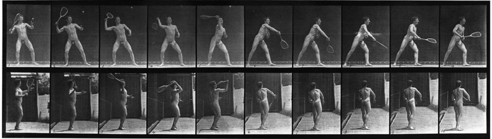
Hình 10: Nhiếp ảnh phân rã chuyển động của Eadweard Muybridge — Những thước phim đầu tiên hé lộ toàn bộ cơ chế cơ sinh học của cú vung vợt.
in 1935, two years after he introduced shorts at Wimbledon, Bunny Austin wrote a book called Lawn Tennis Made Easy, which was published in New York by the MacMillan Company. It is an in-depth volume of instruction, gracefully written, addressing every element of the game. The last chapter is entitled “Clothes and the Player.” It is not, as one might expect, a guideline to appropriate style, which came to Austin naturally and was manifest in whatever he wore and the easy, unpretentious way with which he wore it. Rather, it was an explanation of the reason for shorts, and an account of some of the controversy they initially inspired. It seems that they were a compromise, as the real goal was nudity.
Phần IV: Văn Hào Nabokov, Vụ Án Mạng Của Caravaggio & Phép Màu Bất Diệt Của Sân Quần Vợt
Chương 12: Bunny Austin, Chiếc Cúp Fabergé & Nhà Thơ Sân Đất Nện Guillermo Vilas Chapters 16-19: Bunny Austin, A Fabergé Trophy, and Guillermo Vilas
RHình ảnh của sự an lạc.
My belief is that the less you wear
ené lacoste là tay vợt đầu tiên mặc áo polo trên sân tại Wimbledon; năm 1933, Bunny Austin là người đầu tiên mặc quần short. Những hình ảnh ban đầu về cánh tay trần và sau đó là bắp chân trần được đón nhận phần lớn bởi vì Lacoste và Austin ngay từ đầu đã là những quý ông sành điệu.
when playing tennis the better, while to wear nothing at all, as in the great days of ancient Greece, is the ideal. Athletes, by which I mean runners, jumpers, hurdlers, etc., have come nearest this ideal by wearing shorts and singlets of the lightest nature. As far as I know, no one had complained of indecency or stated that they would prefer athletics if athletes were more becomingly clad in heavier clothes. On the contrary, I feel that athletics afford us one of the most aesthetically satisfying pleasures of the eye—the perfect movement of the perfect body.
Ngoài ra, chiếc quần short được thiết kế riêng của Austin cũng vừa vặn một cách hoàn hảo. Chúng được xếp nếp tinh tế, hẹp mà không bó sát và được cắt tỉa theo chiều dài Bermuda. Và dù mặc gì đi nữa, Austin vẫn luôn ăn mặc theo phong cách tinh tế, nhẹ nhàng. Chiếc áo khoác blazer màu xanh nước biển hoặc màu trắng và áo len tennis cổ chữ V màu kem có đường may bằng dây cáp mà anh diện cùng với những chiếc quần đùi đó là những bộ đồ đẹp nhất, được cắt may vừa vặn nhưng vẫn vừa vặn hoàn hảo để tôn lên vóc dáng đẹp đẽ của anh. Tính thẩm mỹ của môn quần vợt—không chỉ ở bối cảnh mà còn ở trang phục—là một phần khiến môn thể thao này tự nó trở thành một nghệ thuật. Sự duyên dáng của các diễn viên, những sự trau chuốt nhỏ nhặt như nghi thức bắt tay khi kết thúc trận đấu, đều là lớp kem phủ trên chiếc bánh. Quần vợt là nhà hát, sân đấu là sân khấu được quy hoạch bài bản, cái bắt tay đó như cái cúi chào của các diễn viên sau khi tấm màn cuối cùng hạ xuống, và khi tủ quần áo có sự phô trương của Bunny Austin và sự quyến rũ của nam chính, chúng ta cảm động vỗ tay.
Austin charts his own history as a wearer of sensibly brief clothing. “I myself took two years to summon up enough courage to wear shorts, although for years I had known how much more healthy, comfortable and reasonable they were for tennis. I hovered in my bedroom in the south of France, I remember, putting them on,
Những chiếc quần đùi đó đóng vai trò then chốt vì chúng trông bảnh bao và vì chúng mang lại sự thoải mái hơn. Thời trang ở trạng thái tốt nhất, đặc biệt khi nó có phong cách đích thực và sự sang trọng thực sự, là một loại hình nghệ thuật. Đó là một trong những phương tiện để văn hóa tiến bộ. Trang phục được thiết kế đẹp tôn lên cơ thể và làm hài lòng người xem đồng thời đánh dấu sự tiến bộ. Nó tạo điều kiện dễ chịu về thể chất trong khi nó làm hài lòng mắt. Bunny Austin có khiếu thẩm mỹ nội tại cũng như lòng can đảm để trở thành người thời trang thực sự. Anh ăn mặc rất phong cách, khác hẳn với những trào lưu nhất thời và sự phô trương hàng hiệu thường bị nhầm lẫn là thời thượng. Thời trang tốt nhất không thu hút sự chú ý về bản thân và Austin đã đủ tinh tế để tạo ra bước đột phá căn bản trong trang phục quần vợt nam theo cách khiến sự thay đổi ngay lập tức trở thành cổ điển.
taking them off, putting them on again, wrestling with the problem of Hamlet—‘To be or not to be.’” This was the occasion when the hotel doorman suggested that he had forgotten his pants; it was a story Austin would tell more than once. The opprobrium amused him:
Ngoài ra, anh ta còn có sự bảnh bao và cách cư xử khiến anh ta không thể cưỡng lại được. Nổi tiếng là lịch sự, khi Austin có Nữ hoàng Thái Lan làm đối tác đánh đôi của mình, anh ấy đã hét lên: "Chạy đi, thưa Bệ hạ, chạy đi." Một người xưng hô với hoàng gia một cách chính xác biết cách để lộ đôi chân trần của mình mà không gây khó chịu.
Old ladies will cease to pass such remarks as: “Oh, hasn’t Austin got hairy legs?” running thereby
Austin có dũng khí giải quyết các vấn đề lớn và nhỏ; bị trêu chọc vì biệt danh của mình, anh ấy đã lấy nó một cách tự tin. Cái tên “Bunny” dành cho Henry Wilfred Austin đã được bạn bè ở trường tặng cho anh ấy vì một bộ truyện tranh— Pip, Squeak và Wilfred—trong đó Wilfred là một con thỏ. “Thỏ” phù hợp với anh ấy; cao 5 feet, 9 inch và nặng 132 pound, anh ấy tương đối nhỏ. May mắn thay, anh ta có làn da dày. Khi một phóng viên của New York Times viết về anh ấy trong chiếc quần đùi đó ở Wimbledon, “Với chiếc mũ vải lanh và chiếc áo sơ mi flannel, tay vợt nhỏ bé trông giống như một tác phẩm của A. A. Milne”—ngầm so sánh anh ấy với Rabbit trong nhóm của Winnie-the-Pooh, Eeyore và Christopher Robin—Austin đã cười trừ một cách duyên dáng. Anh ấy cũng thích thú không kém khi còn học ở Cambridge và tạp chí đại học The Granta đã viết rằng anh ấy được gọi là “Thỏ con” do “thói quen kỳ lạ là tiêu thụ thực phẩm xanh”!170
the risk of being asked: “Well, madam, what did you expect—feathers?” And the players may well have the good fortune to overhear something in the nature of the following remark, heard at the Queen’s Club: “Oh, yes, I like Borotra’s beret, but I prefer Austin’s legs.” 174
Austin không hề lo lắng về hình ảnh của mình ngay cả khi tên của anh ấy được đặt theo tên một sinh vật nhỏ có lông có bốn chân. Vừa đẹp trai vừa bảnh bao, nhìn anh ấy lại mộng mơ đến mức Suzanne Lenglen nhất quyết muốn anh ấy làm bạn nhảy đôi của cô ấy. Các đặc điểm của anh ta có thể được vẽ bằng thước kẻ; Chiếc mũi thẳng, đôi môi mỏng hoàn hảo và tỷ lệ cơ thể cổ điển của anh ấy đã thu hút hầu hết mọi người khi gặp anh ấy.
it’s no surprise that Austin had been ready for a change in 1933, when he introduced shorts at Wimbledon. The previous year, he had been the first Englishman in a decade to make it to the finals there. But he lost to an American, Ellsworth Vines. In 2000, in the nursing home where he ended up, Austin told The Guardian, “Ellsworth wiped me off the court in 50 minutes. I was annihilated.
Chiếc áo len ngoại cỡ của Bunny Austin với cổ chữ V rộng và những cây vợt tennis đan chéo tinh tế được thêu trên đó sẽ tạo nên một tuyên ngôn thời trang ngày nay.
It was 6–4, 6–2, 6–0 and he won the match with an ace.” 175 Few players are that off-handed about defeat, but Austin was always disarmingly candid.
Mặc dù Austin đã hai lần lọt vào trận chung kết tại Wimbledon và một lần tại Giải vô địch Pháp, nhưng anh ấy chưa bao giờ giành chiến thắng. Tuy nhiên, như cáo phó của ông viết, “[h] chính những cú đánh uyển chuyển đã giúp ông lọt vào top 10 thế giới trong 11 năm liên tiếp, bắt đầu từ năm 1928. Ông đứng thứ hai thế giới vào các năm 1931 và 1938.”171 Trên thực tế, ông có thể “luôn là phù dâu chứ không bao giờ là cô dâu,” nhưng Bunny Austin là một trong những người quyến rũ nhất mọi thời đại trong làng quần vợt. Và việc anh mặc quần đùi trước hoàng cung trên sân quần vợt danh giá nhất thế giới đã khiến anh trở thành người tiên phong thay đổi trang phục quần vợt mãi mãi.
Austin with József Asbóth, as
tưởng tượng về việc giải phóng khỏi quần dài—và đặc biệt là mặc quần đùi ở Wimbledon—đã bắt đầu khi Austin và Fred Perry thi đấu đôi tại Câu lạc bộ Cricket Longwood, thiên đường với 25 sân cỏ và 9 sân đất nện ở Chestnut Hill, một vùng ngoại ô giàu có của Boston. Khởi đầu là một sân cricket, Longwood đã xây dựng sân tennis đầu tiên vào năm 1878 và đã tổ chức các giải đấu lớn kể từ đó. Hội quán đáng yêu của nó có kiểu kiến trúc được gọi là phong cách Shingle giống như những ngôi nhà trong khu phố. Thiết kế độc đáo kiểu Mỹ của nó dường như là một không gian bao bọc liên tục, căng thẳng hơn là những dinh thự đồ sộ theo phong cách châu Âu được xây dựng ở hầu hết các vùng ngoại ô khác. Longwood là một trong những nhà hát quần vợt mà thời gian dường như dừng lại ở một khoảnh khắc bình dị khi người ta không có việc gì làm ngoại trừ vung vợt hoặc thưởng thức trà đá trên hiên, giống như một phòng khách ngoài trời rộng rãi nằm gọn dưới mái hiên sọc xanh. Nhưng Austin vẫn chưa đến lúc có thể đi uống nước lạnh, và ngày hôm đó nắng nóng khủng khiếp.
stylish a pair as ever walked onto a court.
Nhiệt độ ấm áp là kẻ thù của Austin:
In 1979, Austin described that match in depth in A Mixed Double. Although he wrote it more than thirty-five years after the fact, it is a poignant firsthand account from a player’s perspective of a Wimbledon’s finals. He knew that because he was the first Englishman to reach the finals after a long spate, people all over the country were rooting for him. He was primed to do his best, especially when his mother telephoned him that morning “with
Tôi thường tranh luận trong đầu về câu hỏi về quần short cho quần vợt. Ý tưởng này đến với tôi lần đầu tiên khi tôi đang biểu diễn ở Boston vào năm 1928. . . . Ngày rất nóng, 92° trong bóng râm với độ ẩm cao. Chiếc quần ướt sũng và đối với tôi nó dường như nặng cả tấn. Tôi tự hỏi tại sao lại phải mang toàn bộ trọng lượng tăng thêm đó đập vào chân mình? Chẳng phải thật nực cười khi mặc quần chơi một trò chơi vất vả, tốc độ nhanh sao? Tôi cố gắng hình dung các trận đấu bóng bầu dục, bóng đá và khúc côn cầu trong trang phục quần dài. Ý nghĩ đó thật buồn cười. Đối với tôi, việc chơi quần vợt trong quần cũng có vẻ nực cười không kém. Đó chỉ đơn giản là một truyền thống cũ bắt nguồn từ những ngày ít vất vả hơn khi quần vợt chủ yếu là một bữa tiệc ngoài vườn.
good news from the stars.” An ardent astrologist, Mrs. Austin had just checked his horoscope and learned “that they were all in the ascendant.” Austin went to his osteopath to prepare himself for the match, and by the time
Từ thời điểm đó trở đi, Austin đã dự định mặc quần đùi. Năm 1932, bốn năm sau thời gian oi ả ở Longwood, ông đã có một bước tiến lớn và mang chúng tại Forest Hills. Báo chí có ngày đi thực địa nhưng anh quyết giữ vững thói quen. Trong khi đó, anh ta được thông báo: “Bạn sẵn sàng mặc quần đùi ở Mỹ, nhưng bạn sẽ không có đủ can đảm để mặc chúng ở Châu Âu”.
he arrived at Wimbledon he was feeling on top of his game, although he considered himself the underdog:
Austin quyết định chứng minh những người phản đối đã sai. Ở miền Nam nước Pháp vào mùa đông năm đó, để tham dự các giải đấu ở Beaulieu và Monte Carlo, anh đã nhờ thợ may may những chiếc quần đùi dựa trên trang phục mặc định cho môn bóng bầu dục. Đáng ngạc nhiên là anh ấy đã nhận được rất ít lời chỉ trích vì điều đó, mặc dù công chúng vẫn chưa quen với ý tưởng này. “Một buổi sáng, khi tôi rời khách sạn để thi đấu, mặc chiếc áo khoác ngoài với đôi chân trần thò ra bên dưới, một người khuân vác khách sạn trẻ tuổi lo lắng đến gặp tôi và nói: ‘Xin lỗi, ông Austin,’ anh ta nói, ‘tôi nghĩ ông đã quên mất rồi.
Ellsworth Vines, my opponent in the final, was a lean and lanky man with a huge serve, possibly as fine a serve as any man in lawn tennis has ever possessed. He was a quiet fellow, lacking the brash confidence so often—and often wrongly—associated with Americans. He was six foot four inches tall with extremely long arms, so his serve was delivered from a great height.
Thử thách thực sự đối với Austin sẽ là Wimbledon. Câu lạc bộ quần vợt toàn nước Anh rất nghiêm khắc trong việc quy định các tay vợt phải mặc đồ trắng đến nỗi trong một lần, khi một người Mỹ xuất hiện trong chiếc quần sọc, anh ta đã được yêu cầu không bao giờ xuất hiện trong trang phục đó nữa. Mặt khác, Austin rất tâm đắc khi biết rằng câu lạc bộ cho phép váy của phụ nữ ngắn hơn nhiều so với dự kiến trước đây đồng thời yêu cầu bổ sung thêm tất. Anh lấy hết can đảm và mặc quần short. Không ai phản đối, và phản ứng chung đều im lặng. Chính cách anh ta làm như vậy đã giải quyết được vấn đề; Sự tự tin không hề kiêu ngạo của Austin đã giúp anh để lại di sản quan trọng này.
Vines was a better player than I. I knew this, but I was in good condition and good form and I also knew that tennis was a game of upsets and it was often the underdog hitting an unaccustomed good streak who would win a match. On this particular day I was also fortified by the secret knowledge unknown to Vines that my stars were all in the ascendent and I was bound to win!
Anh ấy sẽ được nhớ đến nhiều nhất nhờ phong cách ăn mặc của mình, nhưng Austin đã thể hiện sự sẵn sàng mạo hiểm chế giễu khi giới thiệu cây vợt ba tay. Ông đưa ra giả thuyết rằng nó mạnh hơn cây vợt thông thường; anh ấy không chỉ tự mình chơi với một chiếc mà còn khuyến khích người khác sử dụng nó. Thành công của nó không ngang bằng với thành công liên quan đến quần short.
But he soon
vào năm 1935, hai năm sau khi giới thiệu quần short tại Wimbledon, Bunny Austin đã viết một cuốn sách có tên Lawn Tennis Made Easy, được xuất bản tại New York bởi MacMillan Company. Đây là một cuốn sách hướng dẫn chuyên sâu, được viết một cách duyên dáng, đề cập đến mọi yếu tố của trò chơi. Chương cuối cùng có tựa đề “Quần áo và tay vợt”. Như người ta có thể mong đợi, đó không phải là một kim chỉ nam cho phong cách phù hợp, đến với Austin một cách tự nhiên và được thể hiện qua bất cứ thứ gì anh ấy mặc cũng như cách anh ấy mặc nó một cách thoải mái, khiêm tốn. Đúng hơn, đó là lời giải thích về lý do xuất hiện quần short và giải thích một số tranh cãi mà ban đầu chúng đã gây ra. Có vẻ như họ là một sự thỏa hiệp vì mục tiêu thực sự là khỏa thân.
realized that something was just a tiny bit off:
Tôi tin rằng bạn càng ít mặc khi chơi quần vợt thì càng tốt, trong khi không mặc gì cả, như thời kỳ vĩ đại của Hy Lạp cổ đại, là lý tưởng. Các vận động viên, ý tôi là vận động viên chạy bộ, nhảy cầu, vượt rào, v.v., đã tiến gần nhất đến lý tưởng này bằng cách mặc quần đùi và áo ba lỗ có tính chất nhẹ nhất. Theo những gì tôi biết, không ai phàn nàn về hành vi không đứng đắn hoặc tuyên bố rằng họ sẽ thích thể thao hơn nếu các vận động viên mặc những bộ quần áo nặng nề hơn. Ngược lại, tôi cảm thấy rằng thể thao mang lại cho chúng ta một trong những niềm vui thỏa mãn nhất về mặt thẩm mỹ—sự chuyển động hoàn hảo của cơ thể hoàn hảo.
When we started, however, I found I was out of touch. This question of touch is a very important factor to a tennis player. Tennis, as the reader well knows, is a game of great accuracy. You can win or
Austin ghi lại lịch sử của chính mình với tư cách là người mặc quần áo ngắn hợp lý. "Bản thân tôi đã mất hai năm để lấy hết can đảm để mặc quần soóc, mặc dù trong nhiều năm tôi đã biết chúng khỏe mạnh, thoải mái và hợp lý hơn nhiều khi chơi quần vợt. Tôi nhớ mình đã lượn lờ trong phòng ngủ của mình ở miền Nam nước Pháp, mặc chúng vào, cởi ra, mặc lại, vật lộn với vấn đề Hamlet—'Tồn tại hay không tồn tại.'" Đây là dịp mà người gác cửa khách sạn cho rằng anh ta đã quên quần; đó là một câu chuyện mà Austin đã kể nhiều lần. Sự sỉ nhục khiến anh thích thú:
lose a match depending on whether your stroke just hits or just misses a line, just skims or just fails to skim the net. A whole match can turn on the error of a millimetre.
Các bà già sẽ không còn đưa ra những lời nhận xét như: “Ồ, Austin có lông chân phải không?” Do đó có nguy cơ bị hỏi: “Ồ, thưa bà, bà mong đợi điều gì—lông vũ?” Và các tay vợt có thể may mắn nghe được điều gì đó giống như nhận xét sau đây, được nghe ở Queen's Club: "Ồ, vâng, tôi thích chiếc mũ nồi của Borotra, không có gì ngạc nhiên khi Austin đã sẵn sàng cho một sự thay đổi vào năm 1933, khi ông giới thiệu quần short ở Wimbledon. Năm trước, ông là người Anh đầu tiên trong một thập kỷ lọt vào trận chung kết ở đó. Nhưng ông đã thua một người Mỹ, Ellsworth Vines. Năm 2000, tại viện dưỡng lão nơi anh đến, Austin nói với The Guardian, “Ellsworth đã loại tôi ra khỏi sân sau 50 phút. Tôi đã bị tiêu diệt. Tỷ số là 6–4, 6–2, 6–0 và anh ấy đã thắng trận với một con át chủ bài.”175
Fortunately for Austin, Vines also started badly. But in the ninth game, Austin lost his service. In tennis at Wimbledon level, the norm is that the players will win the games they serve; the moment they lose a game they have served, they are in trouble. After Vines broke
Rất ít tay vợt tỏ ra thẳng thắn về thất bại, nhưng Austin luôn thẳng thắn một cách vô tư.
Austin’s serve, Austin lost the
Austin với József Asbóth, một cặp đôi sành điệu chưa từng bước ra sân.
set. Still, he was not daunted: “But
Năm 1979, Austin đã mô tả sâu sắc trận đấu đó trong A Mixed Double. Mặc dù ông đã viết nó hơn 35 năm sau sự kiện đó, nhưng đây vẫn là một bài tường thuật trực tiếp sâu sắc từ góc nhìn của một tay vợt về các trận chung kết Wimbledon. Anh ấy biết rằng vì anh ấy là người Anh đầu tiên lọt vào trận chung kết sau một thời gian dài nên mọi người trên khắp đất nước đều ủng hộ anh ấy. Anh ấy đã sẵn sàng làm hết sức mình, đặc biệt là khi mẹ anh ấy gọi điện cho anh ấy vào sáng hôm đó “với tin vui từ các vì sao”. Là một nhà chiêm tinh nhiệt thành, bà Austin vừa kiểm tra tử vi của mình và biết được “tất cả họ đều đang ở cung Mọc”.
I did not worry at all. I knew my stars were in the ascendent. I was bound to win in the end.” Even after losing the second set—in which Vines came on full force with his cannonball serve, while twice taking games served by Austin—he remained sure of himself: “My stars were in the ascendent. I knew I would win in the end!” The third set, however, proved Austin’s horoscope wrong:
Austin đã đến gặp bác sĩ nắn xương để chuẩn bị cho trận đấu, vào thời điểm đến Wimbledon, anh ấy đã cảm thấy mình đã chơi tốt, mặc dù anh ấy tự coi mình là kẻ yếu thế:
As the third set started it was like encountering one of those 150- mile-an-hour hurricanes you read about in the Caribbean that flatten everything before them. I was being flattened. I simply could not see Vines’ services, nor could I see his returns
Ellsworth Vines, đối thủ của tôi trong trận chung kết, là một người đàn ông gầy gò và cao lêu nghêu với một cú giao bóng khổng lồ, có thể là một cú giao bóng tốt như bất kỳ người đàn ông nào trong môn quần vợt sân cỏ (Lawn Tennis) từng sở hữu. Anh ấy là một người trầm tính, thường xuyên thiếu sự tự tin thô lỗ—và thường bị nhầm lẫn—với người Mỹ. Anh ấy cao 6 feet 4 inch với cánh tay cực dài, vì vậy cú giao bóng của anh ấy được thực hiện từ một độ cao lớn.
to my services. The score mounted rapidly against me, 1–0, 2–0, 3–0, 4–0 and 5–0, and on his own service he reached 40–15, match point. Still I did not give up hope! I knew all my stars were in the ascendent and I was bound to win in the end! I waited for Vines to serve, watched the smooth, rhythmic and powerful swing! Boom! I did not move. I saw nothing, only a puff of dust on my service court, and then the sound of a ball hitting the stop-netting behind me. That was his service, I realized. The match was over. Vines had won! I have never been a believer in astrology since that day! 176
Vines là một tay vợt giỏi hơn tôi. Tôi biết điều này, nhưng tôi đang ở thể trạng tốt và phong độ tốt và tôi cũng biết rằng quần vợt là một trò chơi đầy khó khăn và thường thì kẻ yếu hơn đánh được một chuỗi tốt không quen thuộc sẽ thắng một trận đấu. Vào ngày đặc biệt này, tôi cũng được củng cố bởi kiến thức bí mật mà Vines chưa biết rằng các ngôi sao của tôi đều đang thăng thiên và tôi nhất định sẽ giành chiến thắng!
bunny austin was courageous not only when it came to the issue of wearing shorts. While other people did not speak out about the Nazi ban of Jewish players on the German team for the Davis Cup, Austin and another tennis great, Fred Perry, protested in a letter to The Times. And that was only the beginning of his strong
Nhưng anh ấy nhanh chóng nhận ra rằng có điều gì đó hơi khác một chút:
stance on matters of global politics. Austin used his
Tuy nhiên, khi chúng tôi bắt đầu, tôi nhận thấy mình đã mất liên lạc. Vấn đề tiếp xúc này là một yếu tố rất quan trọng đối với một tay vợt quần vợt. Quần vợt, như người đọc đã biết rõ, là một trò chơi có độ chính xác cao. Bạn có thể thắng hoặc thua một trận đấu tùy thuộc vào việc cú đánh của bạn vừa trúng hay chỉ trượt một đường, chỉ lướt qua hay không lướt qua lưới. Cả một trận đấu có thể bật ra sai số đến từng milimet.
renown as an athlete to advance world peace through the cause of Moral Re- Armament. For that reason, Austin had to endure more than being teased about his nickname; he was rebuffed brutally for his devotion to a goal which was nothing less than
May mắn thay cho Austin là Vines cũng khởi đầu không tốt. Nhưng ở ván thứ chín, Austin đã thua giao bóng. Trong môn quần vợt ở cấp độ Wimbledon, tiêu chuẩn là các tay vợt sẽ thắng trận mà họ giao bóng; thời điểm họ thua ván đấu mà họ đã giao bóng, họ đang gặp rắc rối. Sau khi Vines bẻ giao bóng của Austin, Austin thua set. Tuy nhiên, anh không hề nản lòng: "Nhưng tôi không hề lo lắng. Tôi biết các ngôi sao của mình đang lên cao. Cuối cùng tôi nhất định sẽ thắng".
world peace. In the fascinating dual autobiography he wrote in 1965 with his wife, the actress Phyllis Konstam, in which they openly reveal their differing views about many subjects, he would write of this work to prevent the world from ever again going to war following the tragedies of WWI:
Ngay cả sau khi thua set thứ hai—trong đó Vines phát huy hết sức mạnh với cú giao bóng bằng súng thần công của mình, trong khi hai lần bắt được game do Austin giao bóng—anh ấy vẫn chắc chắn về bản thân: "Các ngôi sao của tôi đang thăng hoa. Tôi biết cuối cùng mình sẽ thắng!"
From the first I knew it would be a battle. I went into it with my eyes open. I have not been disappointed. I have been accused of being a Fascist and a Communist, a pacifist and a warmonger, of running away from the war and of going on fighting it after others have stopped. I have been thrown out of the All-England Lawn Tennis Club at Wimbledon and have only once in the last twenty-five years been asked to a tennis occasion. Yet during these same years I have been the guest of Presidents and Prime Ministers and have felt the warmth of the affection of the so-called ordinary man on five continents. It has been a fascinating life, taking me to more countries than tennis ever did—and taking me far deeper into the real lives of their inhabitants. I have, through it all, been privileged to work with some of the most remarkable men in our generation. I marvel at my good fortune. 177
Tuy nhiên, set thứ ba đã chứng minh tử vi của Austin sai:
Austin and Konstam were devoted to each
Khi hiệp thứ ba bắt đầu, nó giống như gặp phải một trong những cơn bão có tốc độ 150 dặm một giờ mà bạn đã đọc ở Caribe, san phẳng mọi thứ trước chúng. Tôi đang bị san phẳng. Đơn giản là tôi không thể thấy các dịch vụ của Vines cũng như không thể thấy anh ấy quay lại sử dụng dịch vụ của tôi. Tỷ số tăng lên nhanh chóng trước tôi, 1–0, 2–0, 3–0, 4–0 và 5–0, và trong lần giao bóng của chính mình, anh ấy đã đạt được điểm trận đấu là 40–15.
other, but she considered his engagement with Moral Re-Armament ill-judged. Still, Bunny Austin knew how to stick up for his beliefs and defend himself against opprobrium, wherever it came from. Whether it was for his work for human salvation or his wearing shorts, he was resolute. The same year he lost to Vines at
Tôi vẫn không từ bỏ hy vọng! Tôi biết tất cả các ngôi sao của tôi đều đang thăng thiên và cuối cùng tôi chắc chắn sẽ giành chiến thắng!
Wimbledon, Austin attended
Tôi đợi Vines giao bóng, ngắm nhìn cú xoay người mượt mà, nhịp nhàng và mạnh mẽ! Bùm! Tôi không di chuyển. Tôi không thấy gì cả, chỉ có một đám bụi trên sân giao bóng của tôi, và sau đó là âm thanh của một quả bóng chạm vào lưới cản phía sau tôi. Tôi nhận ra đó là sự giao bóng của anh ấy. Trận đấu đã kết thúc. Vines đã thắng! Tôi chưa bao giờ là người tin vào chiêm tinh, chú thỏ Austin đã dũng cảm không chỉ khi đề cập đến vấn đề mặc quần đùi. Trong khi những người khác không lên tiếng về lệnh cấm của Đức Quốc xã đối với các tay vợt Do Thái trong đội tuyển Đức tham dự Davis Cup, Austin và một đại gia quần vợt khác, Fred Perry, đã phản đối trong một lá thư gửi The Times. Và đó mới chỉ là bước khởi đầu cho lập trường mạnh mẽ của ông về các vấn đề chính trị toàn cầu. Austin đã sử dụng danh tiếng của mình với tư cách là một vận động viên để thúc đẩy hòa bình thế giới thông qua mục đích Tái vũ trang đạo đức.
a celebration of Armistice Day that made him reflect on the futility of war. His feelings are what would lead him into the Moral Re-Armament movement:
Vì lý do đó, Austin đã phải chịu đựng nhiều hơn việc bị trêu chọc về biệt danh của mình; anh ta đã bị từ chối một cách tàn nhẫn vì sự tận tâm của mình cho một mục tiêu không gì khác hơn là hòa bình thế giới. Trong cuốn tự truyện kép hấp dẫn mà ông viết cùng vợ mình, nữ diễn viên Phyllis Konstam, trong đó họ công khai bộc lộ quan điểm khác nhau về nhiều chủ đề, ông viết tác phẩm này là để ngăn chặn thế giới khỏi xảy ra chiến tranh một lần nữa sau những bi kịch của Thế chiến I:
We cheered loudly and rejoiced for we had won the war. Although hundreds of thousands of human beings had been sacrificed for that end; although mothers had lost their sons, children their fathers and sisters their brothers; although budding poets, authors, scientists, industrialists and sportsmen, who carry overseas friendship and goodwill, had laid down their lives for
Ngay từ đầu tôi đã biết đây sẽ là một trận chiến. Tôi bước vào đó với đôi mắt mở to. Tôi đã không thất vọng. Tôi đã bị buộc tội là một người theo chủ nghĩa Phát xít và một người Cộng sản, một người theo chủ nghĩa hòa bình và một kẻ hiếu chiến, chạy trốn khỏi chiến tranh và tiếp tục chiến đấu sau khi những người khác đã dừng lại. Tôi đã bị đuổi khỏi Câu lạc bộ quần vợt sân cỏ (Lawn Tennis) toàn nước Anh tại Wimbledon và chỉ có một lần trong 25 năm qua được mời tham dự một sự kiện quần vợt. Tuy nhiên, trong những năm này, tôi đã là khách của các Tổng thống và Thủ tướng và đã cảm nhận được tình cảm ấm áp của những người được gọi là người bình thường trên khắp năm châu.
that end we cheered loudly and rejoiced for we had won the war. But now we no longer rejoice for although we won the war we know that not one single belligerent country has benefited by the result and that all today are facing an economic crisis worse than any living man can remember. We know that the chaos has thrown into unemployment millions of those who were told that they were fighting for a better world in which to live.
Đó là một cuộc sống hấp dẫn, đưa tôi đến nhiều quốc gia hơn quần vợt từng đến—và đưa tôi đi sâu hơn vào cuộc sống thực của cư dân ở đó. Trải qua tất cả những điều đó, tôi đã có vinh dự được làm việc với một số người đàn ông xuất sắc nhất trong thế hệ của chúng ta. Tôi ngạc nhiên về điều tốt của tôi
Austin was convinced that the futility of war was reason for people to cease celebrating military victory and instead do only what was necessary to prevent the debacle from recurring. “The lesson we have learnt is bitter; the price that we have paid for it is bitterer still and lest we forget that lesson, let the wounded who are with us still be
Austin và Konstam hết lòng vì nhau, nhưng cô coi việc đính hôn của anh với Moral Re-Armament là sai lầm. Tuy nhiên, Bunny Austin vẫn biết cách bảo vệ niềm tin của mình và bảo vệ bản thân trước sự sỉ nhục, dù nó đến từ đâu. Cho dù đó là vì công việc cứu rỗi con người hay vì việc mặc quần đùi, anh ấy đều kiên quyết. Cùng năm đó anh thua Vines tại
our constant reminders and prevent us ever again from plunging into another welter of human sacrifice and carnage. 178 Austin’s beliefs led him to the Oxford Group, a movement founded by an American minister, Frank Buchman, who in 1938, as Europe began to rearm its military forces, declared that it was more important to “re-arm morally. . . . Moral recovery creates not crisis but confidence and unity in every phase of life.” 179
Wimbledon, Austin tham dự lễ kỷ niệm Ngày đình chiến khiến anh suy ngẫm về sự vô ích của chiến tranh. Cảm xúc của anh ấy là điều sẽ dẫn anh ấy vào phong trào Tái vũ trang đạo đức:
In December of that same year, Austin wrote a book elaborating on the idea—Moral Rearmament (The Battle for Peace). With its new spelling for “Re- Armament,” it sold more than half a million copies. He concluded his introduction, “Crisis is not past, will not pass, but will inevitably be followed by catastrophe, unless we fight individual and national selfishness, rearm ourselves morally and spiritually against the forces of destruction, and bring into being a new spirit and a new quality of life.” 180 He lectured to a large
Chúng tôi reo hò ầm ĩ và vui mừng vì chúng tôi đã thắng cuộc chiến. Mặc dù hàng trăm ngàn con người đã bị hy sinh vì mục đích đó; dù mẹ đã mất con, mất cha, mất anh chị em; mặc dù các nhà thơ, tác giả, nhà khoa học, nhà công nghiệp và vận động viên mới chớm nở, những người mang tình bạn và thiện chí ở nước ngoài, đã hy sinh mạng sống vì mục đích đó, chúng tôi vẫn reo hò ầm ĩ và vui mừng vì chúng tôi đã chiến thắng trong cuộc chiến.
public about the need for “Honesty, faith, and Love ” 181 in every sector of human existence and make it his full-time job to promulgate his beliefs. He enjoyed public support from fellow athletes, among them Babe Ruth, Joe DiMaggio, Bobby Jones, and Gene Tunney. But he always encountered strong resistance at home. Phyllis Konstam, meanwhile, would have nothing to do with the Oxford Group. She was a force to reckon with. She had been in three Alfred Hitchcock films—Champagne, which was silent, in 1928; and The Skin Game and Murder, both talkies, in 1930—and performed on the stage as well. She and Austin had met on a Cunard liner in 1929 when he was going to America for the US Open, and they had a lavish wedding in 1931. They were a worldly couple—friends of Daphne du Maurier, Ronald Coleman, Charlie Chaplin, and Michael, King of Romania. A play about them, called Love All, was staged at MRA’s Westminster Theatre. Being in the public eye brought attention to their fundamental disagreement about the cause that was Austin’s raison d’être. In A Mixed Double, Konstam makes clear that she disliked the Oxford Group from the start and that she assiduously wanted Austin to avoid it. On first meeting her husband’s new associates, Konstam thought,
Nhưng bây giờ chúng tôi không còn vui mừng nữa vì mặc dù chúng tôi đã thắng trong cuộc chiến nhưng chúng tôi biết rằng không một quốc gia tham chiến nào được hưởng lợi từ kết quả này và rằng tất cả ngày nay đang phải đối mặt với một cuộc khủng hoảng kinh tế tồi tệ hơn bất kỳ người đàn ông còn sống nào có thể nhớ được. Chúng ta biết rằng sự hỗn loạn đã khiến hàng triệu người thất nghiệp, những người được cho biết rằng họ đang đấu tranh cho một thế giới tốt đẹp hơn để sinh sống.
I don’t like those people, I don’t like the look on their faces. The more I think of them,
Austin tin rằng sự vô ích của chiến tranh là lý do để mọi người ngừng ăn mừng chiến thắng quân sự và thay vào đó chỉ làm những gì cần thiết để ngăn chặn sự thất bại tái diễn. “Bài học chúng ta đã học thật cay đắng; cái giá mà chúng ta phải trả còn cay đắng hơn và kẻo chúng ta quên bài học đó, hãy để những người bị thương ở bên chúng ta luôn nhắc nhở chúng ta và ngăn cản chúng ta không bao giờ lao vào một vũng lầy hy sinh nhân mạng nữa và
the more I feel they are dangerous. Don’t let’s have anything more to do with them. 182
Niềm tin của Austin đã đưa ông đến với Nhóm Oxford, một phong trào được thành lập bởi một bộ trưởng người Mỹ, Frank Buchman, người vào năm 1938, khi châu Âu bắt đầu tái vũ trang lực lượng quân sự của mình, đã tuyên bố rằng điều quan trọng hơn là phải “tái trang bị về mặt đạo đức”. . . . Sự phục hồi đạo đức không tạo ra khủng hoảng mà tạo ra niềm tin và sự đoàn kết trong mọi giai đoạn của cuộc sống.
Subsequently, she became even more opposed.
Vào tháng 12 cùng năm đó, Austin đã viết một cuốn sách trình bày chi tiết về ý tưởng—Tái trang bị đạo đức (Trận chiến vì hòa bình). Với cách viết mới là “Re-Armament”, nó đã bán được hơn nửa triệu bản. Ông kết thúc phần giới thiệu của mình, “Khủng hoảng không phải là quá khứ, sẽ không qua, nhưng chắc chắn sẽ kéo theo thảm họa, trừ khi chúng ta chống lại sự ích kỷ của cá nhân và quốc gia, tự trang bị về mặt đạo đức và tinh thần để chống lại các thế lực hủy diệt, đồng thời tạo ra một tinh thần mới và một chất lượng cuộc sống mới.”180 Ông diễn thuyết trước đông đảo công chúng về sự cần thiết của “Sự trung thực, niềm tin và Tình yêu”181 trong mọi lĩnh vực tồn tại của con người và coi công việc toàn thời gian của mình là truyền bá niềm tin của mình. Anh ấy nhận được sự ủng hộ của công chúng từ các vận động viên đồng nghiệp, trong số đó có Babe Ruth, Joe DiMaggio, Bobby Jones và Gene Tunney. Nhưng anh luôn gặp phải sự phản kháng mạnh mẽ ở quê nhà.
She was unabashed about her antipathy to the movement that had become so vital for her husband:
Trong khi đó, Phyllis Konstam sẽ không liên quan gì đến Tập đoàn Oxford. Cô ấy là một thế lực đáng phải tính đến. Cô đã tham gia ba bộ phim Alfred Hitchcock—Champagne, phim câm, năm 1928; và The Skin Game and Murder, cả hai đều là những người nói chuyện, vào năm 1930—và cũng được biểu diễn trên sân khấu. Cô và Austin gặp nhau trên chuyến tàu Cunard vào năm 1929 khi anh đến Mỹ tham dự giải Mỹ mở rộng, và họ đã tổ chức một đám cưới xa hoa vào năm 1931. Họ là một cặp đôi tuyệt vời—bạn của Daphne du Maurier, Ronald Coleman, Charlie Chaplin và Michael, Vua của Romania. Một vở kịch về họ, có tên Love All, được dàn dựng tại Nhà hát Westminster của MRA. Việc được công chúng chú ý đã thu hút sự chú ý đến sự bất đồng cơ bản của họ về nguyên nhân là lý do tồn tại của Austin.
Realising that Bunny’s interest in the Oxford Group was serious, I became very concerned. As the days went by, my feelings against his new friends grew and grew. I hated them. I was overjoyed to pick up all kinds of unpleasant gossip which I passed on with relish to my husband and friends without ever checking the sources from which they came or knowing whether they were true or not. The fact was, I was afraid of being shown up. I led a selfish and indulgent life smeared over with a tiny layer of idealism and occasional good works. I felt I either had to admit that Bunny’s friends were right and do something about it, which I had no intention of doing, or I had to prove that they were wrong to everyone I
Trong A Mixed Double, Konstam nói rõ rằng ngay từ đầu cô đã không thích Nhóm Oxford và cô hết lòng muốn Austin tránh nó. Trong lần gặp mặt đầu tiên với những cộng sự mới của chồng, Konstam đã nghĩ:
met, but most especially to myself. When Bunny’s interest increased every day, it made me very angry indeed. “For heaven’s sake,” I said, “I don’t want to be married to a bloody saint.”
Tôi không thích những người đó, tôi không thích vẻ mặt của họ. Càng nghĩ về họ, tôi càng cảm thấy họ nguy hiểm. Đừng để có
Konstam was the first to admit that she was shattered by what she saw as the end of her “chosen way of life” and “fought like a demon.” Her candor about herself and her values was
Sau đó, cô càng phản đối hơn. Cô không hề nao núng về ác cảm của mình đối với phong trào đã trở nên quan trọng đối với chồng cô:
in its way as radical a departure from the norm as Austin’s wearing shorts at Wimbledon. But it had a very different spirit behind it. She describes herself not only as temperamental and hypocritical, but as manipulative as well:
Nhận thấy sự quan tâm của Bunny đối với Tập đoàn Oxford là rất nghiêm trọng, tôi trở nên rất lo lắng. Ngày tháng trôi qua, tình cảm của tôi đối với những người bạn mới của anh ấy ngày càng lớn dần. Tôi ghét họ. Tôi vui mừng khôn xiết khi nhặt được đủ thứ tin đồn khó chịu mà tôi thích thú truyền lại cho chồng và bạn bè mà không bao giờ kiểm tra nguồn gốc của chúng hoặc biết liệu chúng có đúng hay không.
At parties I could turn on gobs of charm, but once the guests had gone and as soon as the front door was closed, oh brother! . . . I did not give a damn about the kind of world we lived in. That thousands of men were unemployed, that millions were hungry, that whole families lived in one room, even in our own country, did not really bother me.
Thực tế là tôi sợ bị lộ diện. Tôi đã sống một cuộc sống ích kỷ và buông thả với một chút chủ nghĩa lý tưởng và thỉnh thoảng làm những việc tốt. Tôi cảm thấy hoặc tôi phải thừa nhận rằng bạn bè của Bunny đã đúng và làm điều gì đó về điều đó, điều mà tôi không có ý định làm, hoặc tôi phải chứng minh rằng họ đã sai với tất cả những người tôi gặp, nhưng đặc biệt nhất là với chính tôi.
“Why don’t you leave me alone,” I said to Bunny. “I am perfectly happy as I am.” “Yes, I know,” he replied, “but you are the only one who is!” Finally I used a woman’s best weapon, tears! Bunny, being tender- hearted, could not bear to see me
Khi sự quan tâm của Bunny tăng lên mỗi ngày, điều đó thực sự khiến tôi rất tức giận. “Chúa ơi,” tôi nói, “tôi không muốn kết hôn với một vị thánh chết tiệt.”
sobbing. So once more I got my own way. It was very nearly the end of our marriage. 183
Konstam là người đầu tiên thừa nhận rằng cô ấy đã tan nát vì những gì cô ấy coi là dấu chấm hết cho “cách sống đã chọn” và “chiến đấu như một con quỷ”. Sự thẳng thắn của cô ấy về bản thân và các giá trị của cô ấy hoàn toàn khác xa với chuẩn mực giống như việc Austin mặc quần short ở Wimbledon. Nhưng nó có một tinh thần rất khác đằng sau nó. Cô ấy mô tả bản thân không chỉ là người nóng nảy và đạo đức giả mà còn lôi kéo:
One of the issues was the religious one. Austin’s new faith had a doctrinaire, evangelical side. At the beginning of their marriage, Konstam, who was Jewish, and Austin, who was Protestant, shared an essential agnosticism. But now Austin became something of a born-again Christian. Austin describes his faith, “I began to take Christ’s absolute standards of honesty, purity, unselfishness and love seriously. I decided that I would turn to God for direction in everything.” He felt that he heard God talking and wrote down
Trong các bữa tiệc, tôi có thể tỏ ra quyến rũ, nhưng một khi khách đã đi về và ngay khi cửa trước đóng lại, ôi anh em! . . . Tôi không quan tâm đến thế giới mà chúng tôi đang sống. Hàng nghìn người thất nghiệp, hàng triệu người đói khát, cả gia đình sống trong một căn phòng, thậm chí ngay trên đất nước chúng tôi, không thực sự khiến tôi bận tâm.
the messages. Still, what attracted Austin to Moral Re-Armament was its values and impact independent of the faith in Christ’s teachings and in God’s guidance. He was convinced that he had discovered the solution for world peace. The meeting in 1938 in Munich at which Hitler, Chamberlain, Mussolini, and Daladier claimed to have assured an end of war by ceding part of Czechoslovakia to Germany was deemed a triumph:
“Sao cậu không để tôi yên,” tôi nói với Bunny. “Tôi hoàn toàn hạnh phúc khi được như vậy.”
Moral Re-Armament has advanced the programme of England’s military preparedness on the non-military side. . . . Since
“Vâng, tôi biết,” anh ấy trả lời, “nhưng bạn là người duy nhất như vậy!” Cuối cùng tôi đã sử dụng vũ khí tốt nhất của phụ nữ, nước mắt! Bunny vốn hiền lành nên không thể chịu được khi thấy tôi khóc nức nở. Vì vậy, một lần nữa tôi đã có được con đường riêng của mình.
Munich, British morale has improved at least as fast as Britain’s fighting machine. My immediate part in this campaign was to mobilise the backing of the world of sport. Thirty-five of Britain’s best-known sportsmen joined with me in a call for Moral Re-Armament through sport. We followed up this appeal by speaking to large sporting crowds. 184
Cuộc hôn nhân của chúng tôi đã gần như kết thúc.183
Although many
Một trong những vấn đề là vấn đề tôn giáo. Đức tin mới của Austin có khía cạnh giáo điều, truyền giáo. Khi bắt đầu cuộc hôn nhân của họ, Konstam, một người Do Thái và Austin, một người theo đạo Tin lành, đều có chung một thuyết bất khả tri về cơ bản. Nhưng bây giờ Austin đã trở thành một Cơ-đốc nhân được tái sinh. Austin mô tả đức tin của mình: "Tôi bắt đầu coi trọng các tiêu chuẩn tuyệt đối của Đấng Christ về sự trung thực, trong sạch, không ích kỷ và tình yêu thương. Tôi quyết định sẽ hướng về Chúa để được hướng dẫn trong mọi việc." Anh cảm thấy như mình đã nghe Chúa nói và viết ra những thông điệp.
people shared Austin’s belief that the Munich accord was a good thing for England and the world, it would become, of course, vilified for its short-sightedness.
Tuy nhiên, điều thu hút Austin đến với Tái vũ trang đạo đức là các giá trị và tác động của nó độc lập với niềm tin vào những lời dạy của Chúa Kitô vào sự hướng dẫn của Chúa. Ông tin chắc rằng mình đã tìm ra giải pháp cho hòa bình thế giới. Cuộc họp năm 1938 tại Munich mà tại đó Hitler, Chamberlain, Mussolini và Daladier tuyên bố đã đảm bảo chấm dứt chiến tranh bằng cách nhượng lại một phần Tiệp Khắc cho Đức được coi là một chiến thắng:
austin’s international fame as a tennis champion played a major role in his ability to advance the cause of Moral Re-Armament in the United States as well as England. Because of the skill with which he wielded a racquet, a
Tái vũ trang đạo đức đã nâng cao chương trình chuẩn bị quân sự của nước Anh về mặt phi quân sự. . . . Kể từ Munich, tinh thần của người Anh ít nhất đã được cải thiện nhanh như cỗ máy chiến đấu của Anh.
speech he gave at the exclusive boys school Groton, in Massachusetts, led to his meeting President Franklin Roosevelt.
Phần trước mắt của tôi trong chiến dịch này là huy động sự ủng hộ của thế giới thể thao. Ba mươi lăm vận động viên thể thao nổi tiếng nhất nước Anh đã tham gia cùng tôi trong lời kêu gọi Tái vũ trang đạo đức thông qua thể thao. Chúng tôi tiếp tục lời kêu gọi này bằng cách nói chuyện với đám đông thể thao lớn. 184
Afterwards the headmaster, Mr. Endicott Peabody, told us that he wanted to inform a former pupil of his of “the great healing that Moral Re-Armament was bringing to the nations.” We went to the Mayflower Hotel to await word from the President. We waited all through the day and through the following morning. In the afternoon I went to the telephone and called the White House. I asked to speak to the President. A feminine voice came over the phone. It was Missy LeHand, the President’s secretary.
Mặc dù nhiều người chia sẻ niềm tin của Austin rằng hiệp định Munich là một điều tốt cho nước Anh và thế giới, nhưng tất nhiên, nó sẽ bị phỉ báng vì tính thiển cận của nó.
She asked me to hold the line. A moment later she was back again. The President would be pleased to see us. Would we go round immediately to the White House? We jumped into a taxi and were soon being ushered into the famous oval room.
danh tiếng quốc tế của Austin với tư cách là nhà vô địch quần vợt đóng một vai trò quan trọng trong khả năng của anh ấy trong việc thúc đẩy mục tiêu Tái vũ trang đạo đức ở Hoa Kỳ cũng như Anh. Nhờ kỹ năng sử dụng vợt tốt, bài phát biểu của ông tại trường nam sinh độc quyền Groton, ở Massachusetts, đã dẫn đến cuộc gặp với Tổng thống Franklin Roosevelt.
Austin was mightily impressed by the way that Roosevelt, whose legs were paralyzed from polio and was consequently unable to stand, “gave every impression that he was rising from his chair. “Why,’ he said to
Sau đó, hiệu trưởng, ông Endicott Peabody, nói với chúng tôi rằng ông ấy muốn thông báo cho một học trò cũ của mình về “sự chữa lành tuyệt vời mà Moral Re-Armament đã mang lại cho các quốc gia.”
me, ‘I would have recognized you anywhere from your photographs.’ Here was the famous Roosevelt charm in action.”
Chúng tôi đến khách sạn Mayflower để chờ tin từ Tổng thống. Chúng tôi chờ đợi suốt cả ngày và đến sáng hôm sau. Vào buổi chiều, tôi đi đến chỗ điện thoại và gọi tới Nhà Trắng. Tôi yêu cầu được nói chuyện với Tổng thống.
The president agreed to Austin’s request that he send a
Một giọng nữ vang lên qua điện thoại. Đó là Missy LeHand, thư ký của Tổng thống. Cô ấy yêu cầu tôi giữ dây. Một lát sau cô lại quay lại. Tổng thống sẽ rất vui khi được gặp chúng ta. Liệu chúng ta có đi ngay tới Nhà Trắng không? Chúng tôi nhảy lên một chiếc taxi và chẳng mấy chốc đã được dẫn vào căn phòng hình bầu dục nổi tiếng.
message to a meeting of the Moral Re-Armament organization coming up at Constitution Hall, in Washington.
Austin vô cùng ấn tượng với cách mà Roosevelt, người bị liệt hai chân vì bệnh bại liệt và do đó không thể đứng vững, "tạo ra mọi ấn tượng rằng anh ấy đang đứng dậy khỏi ghế. "Tại sao," anh ấy nói với tôi, "Tôi có thể nhận ra anh ở bất cứ đâu từ những bức ảnh của anh." Đây chính là nét quyến rũ nổi tiếng của Roosevelt đang được thể hiện."
“The underlying strength of the world,” ran the President’s message, “must consist in the moral fibre of her citizens. A programme of moral re-armament for the world cannot fail, therefore, to lessen the danger of armed
Tổng thống đồng ý với yêu cầu của Austin rằng ông gửi tin nhắn tới một cuộc họp của tổ chức Tái vũ trang đạo đức sắp diễn ra tại Tòa nhà Hiến pháp, ở Washington.
conflict. Such moral re-armament to be most highly effective must receive support on a world-wide basis.” 185
“Sức mạnh cơ bản của thế giới,” thông điệp của Tổng thống, “phải nằm ở phẩm chất đạo đức của các công dân của nó. Do đó, một chương trình tái vũ trang đạo đức cho thế giới không thể thất bại trong việc giảm bớt nguy cơ xung đột vũ trang. Việc tái trang bị tinh thần như vậy để đạt được hiệu quả cao nhất phải nhận được sự ủng hộ trên cơ sở toàn thế giới.”185
Austin closes his part of his and Konstam’s memoir with the hope that what President Roosevelt perceived in the Moral Re-Armament movement would be realized. “We can, if we will, shift our country and our civilization above the tragic divisions of race and tribe, class and creed and demonstrate how life is meant to be lived—how through a God-led unity all hands can be filled with work, all stomachs with food and all hearts with an idea that really satisfies.” 186 Bunny Austin was not just a charmer in shorts.
Austin khép lại phần hồi ký của mình và Konstam với hy vọng rằng những gì Tổng thống Roosevelt nhận thấy trong phong trào Tái vũ trang đạo đức sẽ được hiện thực hóa. “Nếu muốn, chúng ta có thể đưa đất nước và nền văn minh của mình vượt lên trên sự chia rẽ bi thảm về chủng tộc, bộ lạc, giai cấp và tín ngưỡng, đồng thời chứng minh cuộc sống có ý nghĩa như thế nào—làm thế nào thông qua sự đoàn kết do Chúa dẫn dắt, tất cả các bàn tay đều có thể lấp đầy công việc, tất cả dạ dày đều có thức ăn và tất cả trái tim đều có một ý tưởng thực sự thỏa mãn.”186 Bunny Austin không chỉ là một người quyến rũ mặc quần short.
The man who broke the shorts barrier at Wimbledon made it into London’s National Portrait Gallery with this painting by
Người phá vỡ rào cản quần đùi tại Wimbledon đã lọt vào vòng chung kết London
Alfred Wolmark.
Phòng trưng bày chân dung quốc gia với bức tranh này của Alfred Wolmark.
a
Nó nằm trong cửa sổ cửa hàng trên Phố St. James ở London, được trưng bày cùng với những chiếc hộp tráng men lộng lẫy, những chiếc bibelot thu nhỏ và những món đồ trang sức xa hoa. Tôi thường nhìn vào cửa sổ cách Piccadilly không xa này để tận hưởng vẻ đẹp lộng lẫy của nước Nga thời Sa hoàng và tưởng tượng cuộc sống vào thời điểm hoàng gia trao đổi những món quà xa hoa và tiêu chuẩn về tay nghề đến mức vàng lấp lánh, ngọc lục bảo lấp lánh và kim cương được chế tác với kỹ năng không gì sánh bằng. Niềm vui của tôi khi được trốn vào thế giới tưởng tượng do cuộc sống của tầng lớp quý tộc Nga mang lại đã quay trở lại những năm đại học khi tôi đọc Tolstoy và Turgenev lần đầu tiên và thường nhìn chằm chằm vào tủ kính tại một cửa hàng nổi tiếng ở New York, bản thân nó là một viên ngọc quý của một nơi, được gọi là A La Vieille Russie, trên Đại lộ số 5, không xa Tiffany's và các cửa hàng sang trọng khác. Vào những ngày đó, tôi biết hai cách sống rất khác nhau—trong hầu hết thời gian trong năm, của một sinh viên đại học tại Đại học Columbia trong thời đại mà mọi người nghiên cứu những thăng trầm của nền văn minh phương Tây trong bầu không khí căng thẳng, vào mùa hè, của một cố vấn tại Trại quần vợt Tamarack ở Franconia, New Hampshire, thiên đường nông thôn nơi những thanh thiếu niên hạnh phúc, mặc đồ da trắng theo quy định, phát triển trò chơi quần vợt của mình trong khi tận hưởng điều kiện sống bình dị trong không khí miền núi trong lành. Dạo bộ trên Phố St. James, ngắm nhìn những tác phẩm trưng bày luôn khiến tôi nhớ đến A La Vieille Russie, tôi chưa bao giờ tưởng tượng rằng bất cứ thứ gì trong tầm mắt sẽ liên kết hai thế giới và, giữa vẻ đẹp lộng lẫy được các tiểu thuyết gia thế kỷ 19 gợi lên, gợi lên một trận đấu quần vợt cam go.
fabergé tennis trophy
Vật khiến tôi ngạc nhiên về cơ bản là một chiếc bình thủy tinh cắt, có hình thoi: nhìn nhẹ nhàng và được thực hiện hoàn hảo. Mặt trên màu bạc đơn giản của nó có dòng chữ giải thích mục đích của nó: một giải thưởng, đôi nam nữ, st petersburg, 1912. Chữ khắc, chữ viết trôi chảy, bao quanh toàn bộ và do đó chỉ có thể nhìn thấy từng phần một, nhưng một tấm thẻ đẹp mắt xác định tác phẩm sẽ cung cấp toàn bộ văn bản trong bản dịch. Nó cũng ghi tên của nhà sản xuất, Peter Carl Fabergé.
t was in a shop window on St. James’s Street in London, on display alongside splendid enamel boxes and miniature bibelots and lavish pieces of jewelry. I had often gazed at this window not far from Piccadilly to enjoy the finery of czarist Russia and imagine life at a time when royalty exchanged sumptuous gifts and the standards of craftsmanship were such that glistening gold and sparkling emeralds and diamonds were worked with unequaled skill. My pleasure in escaping into the fantasy realm offered by the lives of Russian aristocracy went back to my college years when I was reading Tolstoy and Turgenev for the first time and often stared into the vitrines at a landmark New York store, itself a little jewel of a place, called A La Vieille Russie, on Fifth Avenue not far from Tiffany’s and other emporia of luxury. In those days I knew two very different ways of life—for most of
Cúp quần vợt của Fabergé, một kiệt tác ít được biết đến, được trao cho chiến thắng ở nội dung đôi nam nữ được tổ chức tại St. Petersburg năm 1912.
the year, that of an undergraduate at Columbia University in the era when everyone studied the vicissitudes of Western civilization in an atmosphere of broiling intensity, and in the summers, that of a counselor at Tamarack Tennis Camp in Franconia, New Hampshire, the rural paradise where happy
Peter Carl Gustavus Fabergé, sinh năm 1846 và mất năm 1920, là một thợ kim hoàn và thợ kim hoàn có cha, Gustave Fabergé, đã thành lập doanh nghiệp cung cấp cho triều đình Nga những đồ vật giúp tăng thêm độ bóng cho sự tồn tại của họ. Trước khi Cách mạng kết thúc kỷ nguyên mà Sa hoàng và Sa hoàng cuối cùng cai trị đất nước của họ với sở thích về sự sang trọng và phù phiếm chỉ có thể so sánh với các vị vua Pháp cuối cùng cùng vợ và tình nhân của họ, Peter Fabergé đã tạo ra các thiết kế, đặc biệt là trứng Phục sinh nạm đá quý, có phong cách riêng.
teenagers, clad in regulation whites, developed their tennis games while enjoying idyllic living conditions in clear mountain air. Walking on St. James’s Street, looking in the display that always reminded me of A La Vieille Russie, I never imagined that anything on view would
Có thể biết thêm điều gì về vật thể có thể được chiêm ngưỡng qua kính ở khu mua sắm cao cấp nhất Luân Đôn? Sau khi nhìn thấy nó nhiều lần—cửa hàng, Wartski Ltd., được thành lập vào năm 1865, nằm ngay gần khách sạn nhỏ yêu thích của tôi ở London—tôi thu hết can đảm và bước vào để hỏi về nó. Tôi không giả vờ là một người mua tiềm năng, chỉ là một người ngưỡng mộ. Những người cung cấp nó không thể tử tế hơn được. Họ lấy mẫu vật lộng lẫy bằng pha lê được chạm khắc tinh xảo ra khỏi cửa sổ và đặt nó lên một chiếc bàn phủ nhung để tôi có thể nghiên cứu nó từ mọi góc độ. Tác phẩm này đi kèm với mô tả về độ chính xác và sang trọng hiếm có: “Thân thủy tinh nổi bật được khắc ở bốn mặt với họa tiết hoa và lá cách điệu được bao quanh bởi các đường viền đính cườm, bên dưới treo những vòng hoa đính cườm và cành lá, cổ áo bạc được trang trí bằng lá ô rô, mặt trên bằng bạc trơn có khắc chữ Cyrillic 'St Petersburg, 1912', 'Giải A, Đôi nam nữ,' 'St Petersburg.'" The Wartski. nhân viên bán hàng không yêu cầu thêm thông tin nào: trận đấu quần vợt chính xác mà đây là chiếc cúp, người phụ nữ và người đàn ông đã mang nó về nhà, cho dù đó là một sự kiện kéo dài cả ngày tại một câu lạc bộ tư nhân nhỏ hay sân gia đình hay cho một giải đấu quốc tế.
link the two worlds and, amid the finery evoked by those nineteenth-century novelists, conjure a hard-fought game of tennis. The object that took me by surprise is essentially a cut-glass vase, rhomboid in form: visually light and impeccably executed. Its simple silver top bears the inscription that explains its purpose: a prize, mixed doubles, st petersburg, 1912. The carved lettering, in flowing script, bands the whole and so can only be seen one part at a time, but a handsome card identifying the piece provides the full text in translation. It also gives the name of the maker, Peter Carl Fabergé.
Nhưng trong phần văn bản bổ sung về kiệt tác nhỏ này, cửa hàng trên Phố St. James đã cung cấp một số thông tin quan trọng:
Fabergé’s tennis trophy, a little-known
Giải vô địch quần vợt sân cỏ (Lawn Tennis) toàn Nga cũng như Giải vô địch quần vợt Nga mở rộng đầu tiên, tổ chức các tay vợt từ Châu Âu và Hoa Kỳ diễn ra tại St Petersburg vào năm 1912. Cùng năm đó cũng chứng kiến lần đầu tiên Nga tham gia quần vợt tại Thế vận hội được tổ chức ở Stockholm.
masterpiece, was awarded for victory in a mixed doubles held in St. Petersburg in 1912.
Và sau đó họ mời gọi một ảo mộng tuyệt vời: “Cũng có thể chiếc cúp được trao như một phần của một giải đấu riêng, được chơi giữa các du khách tại cung điện hoặc ngôi nhà.”
Peter Carl Gustavus Fabergé, who was born in 1846 and died in 1920, was a goldsmith and jeweler whose father, Gustave Fabergé, had founded the business that supplied the Russian
Đó là một ý tưởng hay. Một giải đấu riêng, chỉ dành cho những người bạn tốt, trên sân cỏ có khu vườn bên cạnh. Mọi người sẽ uống gì khi xem? Trà Nga sẫm màu từ những chiếc cốc sứ tinh xảo? Vodka ướp lạnh trong ly bạc Fabergé? Quan trọng hơn, họ sẽ chơi như thế nào? Liệu những nét vẽ của họ có khởi sắc không? Họ sẽ mặc gì? Trò đùa của họ sẽ là gì?
court with the objects that added luster to their existence. Before the Revolution brought an end to the era when the last czar and czarina ruled their country with a taste for finery and frivolity rivaled only by that of the last French kings and their wives and mistresses, Peter Fabergé had made designs, especially jeweled Easter eggs, that had a style unto themselves.
Những bức ảnh chụp vào thời điểm mà tầng lớp đặc quyền ở St. Petersburg sống rất xa hoa, trước khi bất kỳ ai có chút cảm nhận về cuộc cách mạng sắp tới, cho thấy rằng đối với nội dung đôi nam nữ, phụ nữ có xu hướng mặc áo cánh dài tay, màu trắng, xếp nếp. Váy đen của họ dài đến mức bạn không thể nhìn thấy giày dép của họ. Tất cả đàn ông đều mặc áo sơ mi trắng dài tay cài cúc ở cổ và quần dài màu trắng rộng thùng thình với những chiếc thắt lưng giống như chiếc khăn quàng cổ ở giữa.
What more could be known about that object that could be admired through glass in London’s most upmarket shopping district? After seeing it on numerous occasions—the shop, Wartski Ltd., established in 1865, was just around the corner from my favorite small hotel in London—I mustered my courage and walked in to inquire about it. I did not pretend to be a potential purchaser, only an admirer. Its purveyors could not have been kinder. They took the splendid exemplar of delicately carved crystal out of the window and placed it on a velvet-covered table so I could study it from every angle. The piece was accompanied by a description of rare precision and elegance: “The striking glass body engraved on each of its four sides with a stylized floral and foliate motif flanked
Ăn mặc như vậy, họ rất coi trọng môn thể thao của mình. Trong một mục nhật ký từ tháng 6 năm 1913, Nữ công tước Olga, con gái lớn của Sa hoàng Nicholas II và vợ ông, Alexandra, viết, "Vào buổi chiều [chúng tôi] lái mô tô để chơi tennis. Tôi đã chơi bốn set với Zelenetzky với Anya và Kira N., cũng chơi một set với anh ấy trước Kira và Arseniev, [chúng tôi] thắng cả năm set."187
by beaded borders, beneath which hangs beaded garlands and foliate branches, the silver collar decorated with acanthus leaves, the plain silver top inscribed in Cyrillic ‘St Petersburg, 1912,’ ‘A Prize, Mixed Doubles,’ ‘St Petersburg.’” The Wartski salespeople made no claim of additional information: the precise tennis match for which this was the trophy, who the woman and man were who took it home, whether it was for a daylong event at a small private club or family court or for an international tournament. But in an additional text about this small masterpiece, the shop on St. James’s Street provided some vital facts:
Đối với một thành viên của một gia đình nổi tiếng thích giải trí, Olga là người không biết mệt mỏi. Vào một buổi chiều mùa hè khác, cô và một Olga khác—dì của cô—chơi “với A và Nam tước von Noalde và thua thảm hại.”
An All Russian Lawn Tennis Championship
Nam tước nghe có vẻ vui quá. Sau trận đấu, anh dạy Olga đi cà kheo và bắt cô thực hiện những bước nhảy khổng lồ ngay lập tức. Trong khi đó, sân tennis không bị bỏ trống: “Papa chơi với Anya, Khvoskinsky và Rodionov”. Tất nhiên, bố là sa hoàng. Nhưng ông không có vẻ uy nghiêm chuyên quyền như chức danh ngụ ý. Nicholas trong những bức ảnh của anh ấy gầy gò, mỉm cười với bộ ria mép trắng, luôn có vẻ ngoài niềm nở: John Newcombe trong vai doyen của Cung điện Mùa đông. Olga dường như chỉ có những khoảng thời gian vui vẻ bên người cha tận tụy của mình. "Chơi tennis với Papa với Pavl. Al. và Poups (Potovsky). Chúng tôi thắng một set, họ thắng hai. Mọi người đi bơi, nhưng chúng tôi quay trở lại cuộc sống không hề dễ dàng đối với hoàng gia. Tuy nhiên, vào năm 1904, Czarina Alexandra sinh ra Alexei Nikolaevitch, con trai đầu lòng sau bốn chị em gái, sẽ kế thừa ngai vàng. Khi còn nhỏ, ông được phát hiện mắc bệnh máu khó đông. Căn bệnh di truyền từ mẹ không chỉ khiến anh luôn có nguy cơ chảy máu quá nhiều, khó kiểm soát nhất mà còn thường xuyên khiến anh có sức khỏe kém. Có lẽ sa hoàng và Poups Potovsky—bạn đã bao giờ nghe cái tên nào hay hơn chưa?—đã vui vẻ tập hợp trên mạng và ngâm mình ở vùng Baltic trước khi thư giãn trên du thuyền, nhưng rất lâu trước khi họ biết những người Bolshevik sẽ kết thúc cuộc sống bình dị của mình, họ đã trải qua cuộc đấu tranh cá nhân khủng khiếp.
as well as the first Russian Open Championship, hosting players from Europe and the USA took place in St Petersburg in 1912. The same year also saw Russia’s first participation in tennis at the Olympics, which were held in Stockholm.
Tuy nhiên, quần vợt đã mang lại cho Sa hoàng và gia đình ông một phần những gì nó mang lại cho nhiều người trong chúng ta: sự giải thoát khỏi những khó khăn trong cuộc sống. Có lẽ chiếc cúp Fabergé là thành công lớn sau một ngày thi đấu vui vẻ giữa những người Romanov luôn hấp dẫn.
And then they invited a wonderful fantasy: “It may also be possible that the trophy was awarded as part of
Những chiếc cúp quần vợt chưa bao giờ giống chiếc cúp này của Fabergé. Họ có xu hướng là những vấn đề gớm ghiếc. Thật hiếm khi họ có được vẻ đẹp của môn thể thao này.
a private tournament, played among visitors at a palace or house.”
Suy cho cùng, quần vợt giỏi phụ thuộc vào hiệu quả, sự nhẹ nhàng, duyên dáng. Những con tàu màu vàng lấp lánh được trao cho những người chiến thắng trong giải đấu trái ngược với những cú đánh mà họ đã thực hiện và động tác bằng chân mà họ lướt nhanh chóng và dễ dàng như Fred Astaire. Hình thức của chúng không liên quan gì đến chức năng của chúng; chúng có phải là những chiếc bình đựng tang lễ thu nhỏ, những đồ dùng tổ chức tiệc thời Phục hưng, những hộp đựng tất có mùi hôi không? Những chiếc cúp này rất nặng, cả về hình ảnh lẫn hình thức, đồng thời số lượng đồ trang trí miễn phí là rất nhiều. Họ sử dụng những tiếng trống nặng nề để chúc mừng sự nhẹ nhàng trữ tình.
It is a fine idea. A private tournament, nice friends only, on that grass court with a garden alongside it. What would people drink while watching? Dark Russian tea from delicate porcelain cups? Chilled vodka in Fabergé silver goblets? More important, how would they play? Would their strokes have flourishes? What would they wear? What would their banter be? Photographs taken in those days when the privileged class in St. Petersburg lived so luxuriously, before anyone had a whiff of the revolution to come, show that for mixed doubles, the women tended to wear frilly, white, long-sleeved blouses. Their black skirts were so long that you could not see their footwear. The men were all in white long-sleeved shirts buttoned at the neck and baggy white trousers with cummerbund-like sashes across their middles. Dressed as such, they took their sport seriously. In a diary entry from June 1913, Grand Duchess Olga, the oldest daughter of Czar Nicholas II and his wife, Alexandra, writes, “In the afternoon [we] rode in motors to play tennis. I played four sets with Zelenetzky against Anya and Kira
Ở đâu cũng vậy thôi. Từ Roland Garros và Wimbledon cho đến các câu lạc bộ quần vợt nhỏ ở các hố tưới nước mùa hè đáng yêu nhất nước Mỹ, thiết kế cúp đều đạt tiêu chuẩn hàng đầu. Bạn sẽ mong đợi điều tốt hơn ở những khu nghỉ dưỡng trên bờ biển Maine với nửa tá sân đất sét đỏ và một câu lạc bộ nhỏ được bao phủ bởi những tấm ván trắng, lớp sơn hơi bong tróc do nước biển phun, nhưng những chiếc cúp đã chống lại chủ nghĩa tự nhiên đang ngự trị. Điều này cũng đúng ở những khu trại mộc mạc nằm sâu trong rừng thông, nơi có một sân duy nhất bằng đá dăm cổ là nơi diễn ra các cuộc thi hàng năm; hoa huệ luôn được mạ vàng.
N., also played one set with him against Kira and Arseniev, [we] won all five sets.” 187 For a member of a family known for its fondness for leisure, Olga was tireless. On another summer afternoon, she and another Olga—her aunt—played “against A and Baron von Noalde and lost miserably.” The baron sounds like great fun. After the match, he taught Olga to walk on stilts and had her doing giant steps in no time. Meanwhile, the tennis court was not left empty: “Papa played with Anya, Khvoskinsky, and Rodionov.” Papa was, of course, the czar. But he had none of the autocratic grandeur the title implies. Nicholas in his photos is lean, smiling with his white moustache, always affable-looking: John Newcombe as the doyen of the Winter Palace. Olga seems to have had only good times with her devoted dad. “Played tennis with Papa against Pavl. Al. and Poups (Potovsky). We won one set, they won two. Everyone went swimming, but we returned to the yacht.” 188
Tại sao những chiếc cúp được trao cho sự tỉ mỉ và quyết tâm giống như Thiền lại cần thiết để giành chiến thắng trong một trận đấu quần vợt, những đồ vật này hầu như luôn luôn như vậy? Trong một cú giao bóng được thực hiện tốt, mọi thứ đều có lý do. Cú tung được thực hiện để bay đến mục tiêu một cách tao nhã, tại thời điểm đó nó sẽ bay lơ lửng như một con chim ruồi trong một khoảnh khắc nhỏ trong khi điểm ngọt của dây vợt tiếp xúc để đưa nó đi theo quỹ đạo chính xác đến vị trí trong ô giao bóng của đối phương, nơi lý tưởng nhất là nó có thể thoát khỏi phản ứng dễ dàng. Đây là kỹ thuật hoàn hảo, tinh gọn và hiệu quả. Trong nghệ thuật, đó sẽ là bức Bird in Space của Brancusi, chứ không phải một bàn thờ theo phong cách rococo với những đồ chạm khắc và hình anh đào khiến người ta không thể chợp mắt. Tại sao phần thưởng không được đánh giá thấp và cân đối để phản ánh sự thuần khiết và nhẹ nhàng vốn là yêu cầu bắt buộc của một môn quần vợt giỏi?
life was not easy for the royal family, however. In 1904, Czarina Alexandra had given birth to Alexei Nikolaevitch, who, as the first son after four sisters, was to inherit the throne. As a baby, he was discovered to suffer from hemophilia. The genetic disease inherited from the maternal side not only made him always at risk of excessive bleeding, difficult to control at best, but also often put him in poor health. Maybe the czar and Poups Potovsky—have you ever heard a better name?—had fun rallying across the net and going for a dip in the Baltic before relaxing on the yacht, but long before they knew the Bolsheviks would end their idyll, they experienced horrendous personal struggle. Still, tennis provided the czar and his family some of what it gives to many of us: a reprieve from life’s difficulties. Perhaps the Fabergé trophy was the coup de grace after a nice day of playful competition among the ever- fascinating Romanovs.
Ngay cả ở những câu lạc bộ sang trọng nhất, vẫn có một sự bất hợp lý khi những tay vợt chiến đấu hết trận này đến trận khác và giành chiến thắng trong giải đấu đều được trao giải thưởng xa hoa sặc sỡ này. Những người chiến thắng đứng đó, ướt đẫm mồ hôi, cơ thể được rèn luyện bài bản của họ bị đẩy đến kiệt sức, trong khi Công tước và Nữ công tước của Fancy-on-Costly, trong chiếc áo blazer màu xanh nước biển và váy hoa, thưởng cho sức mạnh bên trong bằng thứ gì đó chỉ tôn lên vẻ bóng loáng trên bề mặt của nó. Và phần cứng càng lớn thì càng tốt. Càng ghê tởm càng vinh quang. Vì vậy, nó luôn luôn có vẻ như vậy.
tennis trophies are never like this one by Fabergé. They tend to be hideous affairs. It is rare that they have any of the beauty of the sport itself. After all, good tennis depends on efficiency, lightness, grace. The shimmering gold-colored vessels handed to tournament winners are the opposite of the strokes they have executed and the footwork with which they have glided as swiftly and
Tôi viết bài này dưới góc nhìn của một phù rể, một anh chàng đứng bên lề nhìn với ánh mắt ghen tị. Bất kỳ danh hiệu nào tôi kiếm được tốt nhất cũng chỉ là những chiếc cúp nhỏ dành cho những chiến thắng thuộc hạng “á quân nội dung đôi nam nữ-khách mời”. Có lẽ nếu tôi là một chàng trai trẻ được trao huy chương vàng khi giành chức vô địch hoặc bây giờ là nhà vô địch cấp cao tại một câu lạc bộ quần vợt nhỏ, tôi sẽ coi những chiếc cúp cường điệu được trao cho người chiến thắng như những điều đẹp đẽ. Nhưng tôi chưa bao giờ ngưỡng mộ một chiếc cúp nào cho đến khi tôi phát hiện ra vật thể độc đáo đó trong cửa sổ cửa hàng trên Phố St. James.
effortlessly as Fred Astaire. Their form has no relation to their function; are they miniature funeral urns, Renaissance banqueting objects, receptacles for odiferous socks? These trophies are heavy, visually and physically, and the amount of gratuitous ornament is overwhelming. They use weighty drumrolls to congratulate lyrical lightness. It is the same everywhere. From Roland Garros and Wimbledon to small tennis clubs in America’s loveliest summer watering holes, trophy design is
Sự sáng tạo của Peter Carl Fabergé là một thứ khác. Nhà thiết kế cung đình người Nga có khả năng vừa xa hoa vừa trang nhã, đồng thời tạo ra những đồ vật lộng lẫy không chỉ bằng kỹ năng kỹ thuật phi thường mà còn bằng trí tưởng tượng chưa từng có. Tính nghệ thuật của Fabergé đến mức anh ấy không chỉ giao bóng các mục tiêu của nhà Romanov và triều đình của họ mà còn làm như vậy với một phong cách không thể cưỡng lại đối với những người trong chúng ta có tổ tiên đến từ các khu ổ chuột. Các Sa hoàng và Sa hoàng cuối cùng sống trong một thế giới sung túc về vật chất và trên hết là tuyệt vời. Các khay giao bóng, trứng Phục sinh và cán kiếm mà Fabergé và xưởng của ông cung cấp cho cuộc sống hàng ngày của họ thể hiện kỹ năng và sự tinh tế thực sự. Họ không phô trương. Những khung tranh và những chiếc hộp nhỏ tinh tế với những chiếc nơ nhỏ đính ngọc lục bảo và kim cương trên bề mặt tráng men lấp lánh rất đáng yêu khi nhìn và chạm vào. Chiếc cúp quần vợt—chiếc duy nhất mà anh ấy được biết là đã làm—dù khác nhau về chức năng và quy mô, nhưng nhất quán về chất lượng tay nghề thủ công và khả năng làm hài lòng của nó.
over the top. You would expect better at those resorts on the coast of Maine with a half-dozen red clay courts and a small clubhouse covered in white clapboards from which the paint is slightly peeling because of the sea spray, but the trophies counteract the reigning naturalism. This is equally true at rustic camps deep in pine forests where a single court in old macadam is the scene of the annual competitions; the lily is invariably gilded. Why are the trophies awarded for the meticulousness and Zen-like resolve required to winning a tennis match those hodgepodges of gold-plated handles and garlands and wreaths these objects almost always are? In a well- executed serve, everything has a reason. The toss is launched to rise elegantly to a target, at which point it should hover like a hummingbird for a micro- moment while the sweet spot of the racquet strings makes contact to send it on the correct trajectory to the spot in the opponent’s service box where, ideally, it can escape easy response. This is perfect engineering, lean and efficient. In art, it would be Brancusi’s Bird in Space, not a rococo altarpiece with filigree and cherubs making it impossible to rest the eye. Why is the reward not understated and proportioned to echo the purity and weightlessness that are the imperatives of good tennis? Even at the fanciest of clubs, there is an incongruity when the players who fight their way through match after match and win the tournament are awarded these garish extravaganzas. The victors stand there, soaked in sweat, their well-trained bodies pushed to exhaustion, while the Duke and Duchess of Fancy-on-Costly, in their navy blue blazers and flowered dresses, reward inner strength with something that boasts only the gloss of its surface. And the bigger the piece of hardware, the better. The more hideous, the more glorious. So it has always seemed. I write this with the perspective of a groomsman, the guy on the sidelines looking on with envy. Any trophies I earned
có một khả năng khác là Fabergé có thể đã được trao cho một vài người chiến thắng quần vợt hạnh phúc.
were, at best, little cups for victories along the lines of “runner-up for member-guest mixed doubles.” Maybe if I had been a young buck given the gold for winning championships
Năm 1907, khi mới 8 tuổi, Vladimir Nabokov đã bắt đầu học quần vợt ở St. Huấn luyện viên của ông cũng là huấn luyện viên của nhà vô địch quốc gia Pháp.
or were now a Senior champion at a minor tennis club, I would look at those overstated trophies awarded to the victors as things of beauty. But I never admired a trophy until I discovered that unique object in the shop window on St. James’s Street. Peter Carl Fabergé s creation was something else. The Russian court designer had the ability to be luxuriant and tasteful at the same time, and to execute splendid objects not just with phenomenal technical skill but with unprecedented imagination as well. Fabergé’s artistry was such that he not only served
Có lẽ đây là sân đấu nơi chiếc bình pha lê Fabergé là chiếc cúp: nơi mà tác giả tương lai của lolita đã thực hiện những bước đột phá của mình và có được kỹ năng để nhanh chóng trở lại đúng vị trí.
the goals of the Romanovs and their court, but also did so with a style irresistible to those of us whose ancestors came from shtetls. The last czars and czarinas lived in a world of material plenitude that was above all exquisite. The serving trays and Easter eggs and sword handles that Fabergé and his workshop provided for their daily existence embody genuine skill and flair. They are not ostentatious. The picture frames and delicate small boxes with their tiny bows composed of emeralds and diamonds on glistening enamel surfaces are lovely to see and touch. His tennis trophy—the only one he is known to have made—is, however different in function and scale, consistent in the quality of its craftsmanship and its ability to please.
Tốt hơn nữa, có lẽ đó là “sân cỏ xanh sống động” nơi Nabokov dựng tác phẩm “La Veneziana” ngoạn mục của mình. Vâng, đây là nơi trao cúp Fabergé. Tinh thể phát sáng của nó sẽ tiếp nhận và tăng cường màu đỏ của lâu đài và màu xanh của cây cỏ. Fabergé đã tạo ra một loại lăng kính; màu vàng của hoa cũng sẽ xuất hiện trong đó, giống như những ngôi sao nhỏ.
there is another possibility that the Fabergé could have been given to a couple of happy tennis victors. In 1907, when he was eight years old, Vladimir Nabokov had started to take tennis lessons in St. Petersburg. His coach was also the coach of the French national champion. Maybe this was the court where a Fabergé crystal vase was the trophy: the place where the future author of Lolita worked
Ai sẽ nhận cúp? Làm ơn hãy để đó là chính Nabokov trẻ tuổi. Hoặc nếu không thì hãy là Frank, người hùng trong câu chuyện Nabokov năm 1920 lấy bối cảnh trong khuôn viên của lâu đài đỏ với bãi cỏ tennis tuyệt đẹp.
on his groundstrokes and acquired the skill to get back in the right position swiftly. Better yet, maybe it was the “vividly green grass court” at which Nabokov sets his breathtaking “La Veneziana.” Yes, this is where the Fabergé trophy is
Hãy xem xét phong cách của anh ấy với tư cách là một tay vợt: “Frank, người đang giao bóng, tung bóng lên cao bằng tay trái, ngả người về phía sau như thể anh ấy sắp ngã, sau đó ngay lập tức lao về phía trước với một chuyển động cong rộng, cây vợt bóng loáng của anh ấy tung một cú liếc vào quả bóng, khiến quả bóng bay ngang qua lưới và bật ra như một tia sét trắng về phía Simpson, người đã khiến nó nhìn sang một bên một cách bất lực.”
to be presented. Its luminous crystal will receive and enhance the red of the castle and the green of the trees and the grass. Fabergé made a sort of prism; the yellow of the flowers will also appear in it, like tiny stars. Who will receive the trophy? Let it be young Nabokov himself, please. Or else let it be Frank, the hero of the 1920 story Nabokov set in the grounds of the red castle with its superb tennis lawn. Consider his style as a player: “Frank, who was serving, tossed the ball high with his left hand, leaned far back as if he were about to fall over, then immediately lunched forward with a broad arching motion, his glossy racquet giving a glancing blow to the ball, which shot across the net and bounced like white lightning at Simpson, who gave it a helpless sidewise look.” Perfect! The Fabergé trophy belongs in the hands of the master of
Hoàn hảo! Chiếc cúp Fabergé thuộc về bậc thầy của con át chủ bài hoàn hảo đó. Nó có độ căng và căng giúp tay vợt xinh đẹp này ngả lưng ra sau. Nó có độ hoàn thiện mượt mà của cây vợt đánh ngang qua quả bóng với lực kéo như vậy. Ánh sáng trong bình cũng dội lên “như tia sét trắng”.
that flawless ace. It has the tautness and stretch with which this fine player leans back. It has the smooth finish of the racquet that strikes across the ball with such zip. Light within the vase also bounces “like white lightning.” At last. The trophy and the game for which it is a reward have the same merits. An object exists that celebrates victory at tennis with the same finesse as the sport. Let Fabergé and Nabokov call the shots. When they do, tennis shows itself to be the essence of art. And the game and its reward are in perfect sync.
Cuối cùng. Chiếc cúp và trò chơi mà nó là phần thưởng đều có giá trị như nhau. Một vật thể tồn tại để ăn mừng chiến thắng trong môn quần vợt với sự khéo léo tương tự như môn thể thao này.
anyone for
Hãy để Fabergé và Nabokov quyết định. Khi họ làm vậy, quần vợt thể hiện bản chất của nghệ thuật. Và trò chơi và phần thưởng của nó hoàn toàn đồng bộ.
tennis?
Đó là một tình huống tồi tệ, mọi lời đề nghị đều khiến vấn đề trở nên tồi tệ hơn, nhưng người nói lại lơ đãng đến mức vô tình hỏi, "Tennis, có ai không?" Ý tưởng nhặt một cây vợt và tiến vào sân trở thành dấu hiệu của sự thờ ơ của tầng lớp thượng lưu trước thực tế khắc nghiệt của cuộc sống. Quần vợt thuộc về loại người ngồi quanh phòng vẽ và không có gì để làm ngoài việc mặc bộ quần áo màu trắng sang trọng và đi dạo trên bãi cỏ chơi tennis, nơi họ sẽ vung những chiếc đũa đan ngớ ngẩn của mình vào một quả bóng mờ và hét lên “Vui quá!” hoặc “Merde, alors!” như dịp này yêu cầu. Bạn phải ở trong trạng thái chạy trốn ngay cả khi suy ngẫm về ý tưởng về một trò giải trí vô nghĩa như vậy.
t’s a dire situation, every suggestion makes matters worse, but the speaker is so oblivious that he blithely asks, “Tennis, anybody?” The idea of picking up a racquet and heading onto the court becomes a mark of upper-class indifference to the harsh realities of life. Tennis belongs to the domain of the sort of people who sit around in drawing rooms and have nothing better to do than don foppish white clothing and saunter onto a tennis lawn where they will swing their silly woven wands at a fuzzy ball and shout “Jolly good!” or “Merde, alors!” as the occasion demands. You must be in a fugue state even to contemplate the
Câu hỏi trở nên mỉa mai từ khi nào vậy? Khi nào nó bắt đầu mang ý nghĩa “Hãy dành thời gian của chúng ta để làm điều gì đó hoàn toàn vô ích”? Và nguồn gốc của câu nói này có phải là “Quần vợt, có ai không?” hay là "Quần vợt, có ai không?" hoặc có thể là “Có ai chơi quần vợt không?” Có phải chúng ta thực sự có ý chê bai những nhân vật ngu ngốc đặt câu hỏi? Hay để có được sự an ủi nhất định trong sự kiên cường của họ trước những khó khăn trong cuộc sống? Trong khi đó, truyền thuyết kể rằng chủ nghĩa thoát ly tiềm ẩn trong câu hỏi là nhờ Humphrey Bogart.
idea of such a meaningless diversion. When did the question become tongue-in-cheek? When did it start to signify “Let’s while away our time doing something completely useless”? And is the saying, at its origin, “Tennis, anyone?” or is it “Tennis, anybody?” or could it be “Anyone for tennis?” Are we really meant to disparage the foolish characters who ask the question? Or to take a certain comfort in their imperviousness to life’s hardships? Legend has it, meanwhile, that the escapism implicit in the question was thanks to Humphrey Bogart.
Anh ta được cho là đã thốt ra một phiên bản của câu thoại này trong giai đoạn đầu của sự nghiệp diễn xuất của mình, trước khi anh ta là một kẻ cứng rắn đáng gờm và là anh hùng của Casablanca. Vào những năm 1920, Bogart là một diễn viên sân khấu. Năm 1948, trong một cuộc phỏng vấn với nhà báo tin đồn Hollywood Erskine Johnson, người mà các bài viết tổng hợp về các ngôi sao màn bạc được đọc khắp nước Mỹ, Bogart nói,
He is said to have uttered a version of the line in an early stage of his acting career, before he was a formidable tough guy and the hero of Casablanca. In the 1920s, Bogart was a stage
Tôi từng chơi cho lứa tuổi vị thành niên ở Broadway và bước vào phòng vẽ với một cây vợt tennis dưới cánh tay và dòng chữ: “Có ai chơi quần vợt không?” Đó là một thủ thuật sân khấu để đưa một số nhân vật ra khỏi phim trường để cốt truyện có thể tiếp tục. Bây giờ khi họ muốn một số nhân vật tránh đường, tôi mang súng đến và hạ gục họ.189
actor. In 1948, in an interview with the Hollywood gossip columnist Erskine Johnson, whose syndicated accounts of the stars of the silver screen were read all over America, Bogart said,
Bogart sau đó đã đặt ký ức vào bối cảnh khi ông được nhà ngôn ngữ học William Safire phỏng vấn ba năm sau trên tờ The New York Herald Tribune:
I used to play juveniles on Broadway and came bouncing into drawing
“Mọi người quên mất tôi từng trông như thế nào trên sân khấu Broadway,” nam diễn viên hồi tưởng. "Sẽ có một đám đông thanh niên quyến rũ và hóm hỉnh tụ tập trong phòng khách, uống trà, trong khi nam chính và nữ chính cãi nhau nhỏ. Nhà văn không thể nghĩ ra cách nào khác để loại những nhân vật dư thừa ra khỏi sân khấu, để những nhân vật chính có thể ở một mình—và đó là nơi tôi sẽ xuất hiện ở ngưỡng cửa, trong bộ đồ nỉ, tóc vuốt ngược ra sau, áo len thắt nút vui nhộn quanh cổ, bốn cây vợt tennis dưới cánh tay, thở hổn hển khi tôi câu thoại của tôi nói: 'Ngoài kia đã 40 rồi - có ai muốn ra ngoài xem không?'”
rooms with a tennis racket under my arm and the line: “Tennis anybody?” It was a stage trick to get some of the characters off the set so the plot could continue. Now when they want some characters out of the way I come in with a gun and bump ’em off. 189
Nhưng khi Safire hỏi Bogart liệu anh ấy có thực sự nói "Tennis, có ai không?" hoặc “Có ai chơi quần vợt không?” anh ấy trả lời, “Những lời thoại của tôi đủ ngô nghê, nhưng tôi thề với bạn, chưa một lần nào tôi phải nói ‘Quần vợt, có ai không?’”190
Bogart subsequently put the memory in context, when he was interviewed by the linguist William Safire three years later in The New York Herald Tribune:
Phải không? Một trong những nhà bình luận văn hóa đáng tin cậy nhất của thế kỷ trước là phát thanh viên tin tức người Anh Alistair Cooke. Năm 1957, Cooke viết rằng Bogart quả thực đã nói điều đó. Việc Bogart phủ nhận rằng anh ta từng sử dụng đường dây này có thể là vấn đề muốn viết lại lịch sử để ngăn mọi người liên kết anh ta với loại kẻ xấu tính sẽ vô tình hỏi "Tennis, có ai không?" Chuyên mục của Cooke khám phá câu hỏi ở một mức độ sâu hơn:
“People forget how I used to look on Broadway,” the actor reminisced. “There would be a crowd of charming and witty young blue bloods gathered in the drawing-room set, having tea, while the hero and the heroine get into a petty squabble. The writer couldn’t think of any
Ba mươi năm trước, vào cuối màn đầu tiên của một trong những bộ phim hài về quê hương hấp dẫn được chiếu vào những năm 1920 vì mục đích châm biếm xã hội, một thanh thiếu niên mặc chiếc Ascot và áo khoác blazer màu xanh lao qua cửa sổ kiểu Pháp và ném đi lời mời bất hủ: “Có ai chơi quần vợt không?” Có thể anh ấy không nghĩ ra cụm từ này nhưng anh ấy đã tôn vinh kiểu người đó, nếu những chàng trai trẻ bằng gỗ với đôi mắt nâu và không có nghề nghiệp nào có thể được cho là sẽ đi đến vinh quang, dù trên sân khấu hay ngoài sân khấu.
other way of getting excess characters off the stage, so the leads could be alone—and that’s where I would appear in the doorway, in my flannels, hair slicked back, sweater knotted jauntily about my neck, four tennis racquets under my arm, breathing hard as I said my line: ‘It’s 40–love out there. Anyone care to come out and watch?’”
Chàng trai trẻ này, người mà màn trình diễn của Alexander Woolcott quá cố đã viết "có thể được mô tả một cách thương xót là không đủ khả năng," dường như đã được may mắn chọn cho vai diễn cố định ở Riviera.191
But when Safire asked Bogart if he ever actually said “Tennis, anyone?” or
Cooke tiếp tục mô tả Bogart là một kẻ ngu ngốc thuộc tầng lớp thượng lưu cho đến khi, trong suốt hai mươi năm, anh ta phát triển thành một "Hemingway cứng rắn khó hiểu", người đã thực hiện "bước nhảy vọt từ" sự giả tạo được đại diện bởi "'Quần vợt, có ai không?'" sang phong cách nam tính "'Bỏ súng xuống, Louie.'" Cooke nói rằng Bogart cảm thấy buộc phải phủ nhận việc đã nói "Quần vợt, có ai không?" để bắt đầu.
“Anyone for tennis?” he replied, “The lines I had were corny enough, but I swear to you, never once did I have to say ‘Tennis, anyone?’” 190
Năm 1975, Nathaniel Benchley, một người bạn thân của Bogart, đã viết tiểu sử của ông, trong đó ông ủng hộ tuyên bố của Alistair Cooke:
Did he? One of the most reliable cultural commentators of the last
Richard Watts, Jr., nhà phê bình gần đây đã nghỉ hưu của tờ Post, thề rằng ông đã nghe thấy Humphrey, mặc áo khoác blazer màu xanh và mang theo vợt tennis, bước lên sân khấu và nói câu bất hủ, "Tennis, có ai không?" là công cụ của nhà viết kịch để loại bỏ những nhân vật không mong muốn khỏi sân khấu, nhưng giờ anh ta không thể nhớ tên vở kịch. Những người khác có xu hướng nghi ngờ liệu những lời đó đã từng được nói ra hay chưa; họ khẳng định rằng họ có triệu chứng của các loại bộ phận hơn là bất kỳ bộ phận nào, và Humphrey đưa ra một phiên bản khác nhau mỗi khi chủ đề xuất hiện. Có lần anh ấy nói câu thoại của mình là, “Bên ngoài là bốn mươi tình yêu—ai cũng quan tâm đến
century was the British news announcer Alistair Cooke. In 1957, Cooke wrote that Bogart had indeed said it. Bogart’s denial that he ever used the line may have been a matter of wanting to rewrite history to prevent people from associating him with the sort of toffs who would blithely ask “Tennis, anyone?” Cooke’s column explores the question in some depth:
Điều gì ở câu nói khiến Humphrey Bogart khẳng định rằng ông chưa bao giờ nói điều đó và những người khác có lập trường mạnh mẽ ủng hộ hay phản đối việc ông làm như vậy? Anh ấy là một người cứng rắn, Bogie có sợ mình từng tỏ ra khá yếu đuối như vậy không? Có ai chơi quần vợt không? thực sự là một tội lỗi như vậy?
Thirty years ago, towards the end of the first act of one of those footling country house comedies that passed in the 1920s for social satire, a juvenile in an Ascot and a blue blazer loped through the French windows and tossed off the immortal invitation: “Tennis anyone?” Possibly he did not coin the phrase but he glorified the type, if wooden young men with brown eyes and no discoverable occupation can ever be said to go to glory, on
Trong Bogart: Đi tìm cha tôi, con trai của Bogart và Lauren Bacall, Stephen Humphrey Bogart, đưa ra câu hỏi với một góc nhìn khác:
stage or off. This young man, whose performance the late Alexander Woolcott wrote “could be mercifully described as inadequate,” seemed to be cast by fortune for the role of a Riviera fixture. 191
Mặc dù những phần đầu của [Bogart] còn là những phần dành cho lứa tuổi vị thành niên, nhưng đôi khi anh ấy gọi chúng là những phần 'Quần vợt, có ai không?' và đó là lý do tại sao anh ấy được ghi nhận vì đã đưa cụm từ đó vào ngôn ngữ. Ông giải thích về giới trẻ như thế này: "Nhà viết kịch đưa năm hoặc sáu nhân vật vào một cảnh và không biết làm cách nào để đưa họ ra khỏi sân khấu. Vậy anh ta phải làm gì? Anh ta kéo vào cậu thiếu niên, người đã chờ đợi một cơ hội như vậy. Anh ta bước vào, cây vợt tennis dưới cánh tay và nói, 'Quần vợt, có ai không?' Điều đó, tất nhiên, giải quyết được vấn đề của nhà viết kịch. Tay vợt mà tác giả muốn loại bỏ tạm thời đã chấp nhận lời đề nghị. Cô gái, người sắp đóng cảnh yêu đương với nam chính, đã từ chối. Vì vậy, những người khác rời đi và tất cả đã sẵn sàng cho cảnh yêu đương giữa nữ chính và nam chính. Không phải lúc nào cũng phải là quần vợt. Đôi khi đó là chơi gôn hoặc cưỡi ngựa, nhưng quần vợt tốt hơn vì nó mang lại cho chàng trai cơ hội trông hấp dẫn trong bộ đồ trắng không tì vết. là một lời đáp lại dí dỏm bị coi nhẹ hoặc một sự coi thường nhẫn tâm trước thực tế khắc nghiệt của cuộc sống.
Cooke goes on to characterize Bogart as a bit of an upper-class twit until, in the course of twenty years, he evolved into a “cryptic Hemingway tough” who had made “the leap from the “make-believe represented by “‘Tennis, anyone?’” to the machismo of “‘Drop the gun, Louie.’” Cooke says that Bogart felt compelled to deny having said “Tennis, anyone?” to begin with.
Chúng ta quay ngược thời gian để xác định xem Bogart cảm thấy thế nào về câu châm ngôn khi anh ấy còn trẻ, trái ngược với cảm giác của anh ấy về nó khi nhìn lại. Năm 1936, có một cuộc phỏng vấn với Bogart trên tờ Screen & Radio Weekly, một ấn phẩm ít người biết đến của The Detroit Free Press, với tựa đề đáng chú ý “Kẻ chạy trốn khỏi một cây vợt:
In 1975, Nathaniel Benchley, a close friend of Bogart’s, wrote his biography, in which he supports Alistair Cooke’s claim:
Humphrey Bogart trốn thoát khỏi những vai vị thành niên chơi quần vợt.”194 Carlisle Jones viết rằng đối với Bogart, cây vợt tennis đã trở thành “vật dụng lâu năm cho những thanh thiếu niên dẫn đầu” và như vậy tượng trưng cho loại vai trò mà ông coi là “tài sản thấp kém nhất của một diễn viên”. Jones trích dẫn Bogart: “'Quần vợt là ý tưởng của một nhà viết kịch về trò chơi thích hợp cho thanh thiếu niên chơi.'" Anh ấy nói thêm, "'Anh ấy mặc áo nỉ trắng sạch sẽ, đi giày thể thao và có cơ hội để lộ lông trên ngực. Nó được cho là một sân khấu hay.'” Bogart kết thúc cuộc phỏng vấn một cách mỉa mai khi sử dụng môn thể thao này làm lối thoát của mình:
Richard Watts, Jr., recently retired critic for the Post, swears that he heard Humphrey, wearing a blue blazer and carrying a tennis racket, come onstage and speak the immortal line, “Tennis, anyone?” as the playwright’s device for getting unwanted characters off the stage, but he
“Hãy hoàn thành việc này vào ngày mai nhé,” anh ấy đề nghị. “Một trận tennis thì thế nào?” [. . .] “Dòng chữ chết tiệt đó vẫn ám ảnh tôi,” anh nói. “Hy vọng bạn không phiền.”
cannot now remember the name of the play. Others tend to doubt
Tại sao nó lại ám ảnh anh? Một chút trí thông minh có gì là tệ? Đối với một số người trong chúng ta, câu hỏi lém lỉnh “Có ai chơi quần vợt không?” có sự quyến rũ. Nó trái ngược với việc coi một trò chơi là một cuộc chiến mệt mỏi với việc tay vợt đưa ra các công tước của mình trong một trận chiến toàn diện. Quần vợt có phải là một môn thể thao thực sự trong đó tay vợt chứng tỏ dũng khí của mình—giống như các võ sĩ quyền anh trên võ đài—hay nó là một trò tiêu khiển nhàm chán? Trên thực tế, khả năng chống chọi với một chút mỉa mai mỉa mai của nó phản ánh sắc thái và tính nghệ thuật tuyệt vời bao quanh nghệ thuật quần vợt.
that the words were ever spoken; they maintain they were symptomatic of the kinds of part rather than any one part
Năm 1968, nhạc sĩ người Anh Eric Clapton đã viết "Anyone for Tennis" làm nhạc nền cho bộ phim The Savage Seven. Âm nhạc gần như đơn điệu, được hát với rất ít nốt trong phạm vi hạn chế, kèm theo kèn harmonica và guitar. Mặc dù dòng "Bất cứ ai chơi quần vợt, điều đó có tốt không?" được lặp lại bốn lần trong đoạn sáng tác ngắn, bài hát không có mối liên hệ thực sự nào với thể thao; đúng hơn, nó đóng vai trò như một câu trả lời không theo trình tự, thể hiện sự thờ ơ nhất định với sự thật. Điều đó khiến chúng ta cảm thấy thích thú vì bản chất của trí thông minh hay nó khiến chúng ta cảm thấy không phù hợp? Nhận thức về sự mất kết nối làm chúng ta thích thú hay đẩy lùi chúng ta? Clapton mô tả hết tai họa này đến tai họa khác trong những câu thơ luôn kết thúc bằng cùng một điệp khúc:
itself, and Humphrey gave a different version every time the subject came up. Once he said his line was, “It’s forty-love outside—anyone care to watch ?” 192
Và tất cả kem đang tan chảy trên đường phố với bia đẫm máu Trong khi những người ăn xin làm vấy bẩn vỉa hè bằng ánh đèn huỳnh quang cổ vũ Giáng sinh Và bậc thầy lái xe Bentley đang tăng giá. Có ai chơi tennis không, điều đó có tốt không? . . . Nhà sư Phật giáo màu vàng đang cháy rực ở sở thú Bạn có thể mang theo một bát cơm và một ly nước Và số phận đang bày bàn cờ trong khi cái chết tung xúc xắc. Có ai chơi tennis không, điều đó có tốt không?
What is it about the line that would make Humphrey Bogart insist that he never said it and others take a strong stance for or against his having done so? Tough guy that he was, was Bogie afraid of ever having seemed quite that effete? Is “Anyone for tennis?” really such a sin? In Bogart: In Search of My Father,
Đối mặt với vấn đề sinh tử, nếu chúng ta viện đến “Bất cứ ai chơi quần vợt, điều đó chẳng phải là tốt sao,” thì vấn đề sẽ được giải quyết.
Bogart and Lauren Bacall’s son, Stephen Humphrey Bogart, takes up the question with a different slant on it:
các biến thể của “Quần vợt, có ai không?” chẳng hạn như "Có ai chơi quần vợt không?" và “Chơi quần vợt thì sao?” xảy ra trong một khối lượng lớn văn học Anh.
Though [Bogart’s] early parts were as juveniles, he sometimes called them ‘Tennis, anyone?’ parts and that is why
Dòng mà phần lặp lại đầu tiên là "Có ai tham gia chơi quần vợt không?" dường như bắt nguồn từ George Bernard Shaw, nhà viết kịch lịch sự và hóm hỉnh nhất trong Misalliance, được ông viết vào năm 1909–10 và lấy bối cảnh tại một ngôi nhà nông thôn ở Anh. Nhân vật chính là Johnny Tarleton. Anh ta là con trai của một chủ sở hữu rất giàu có của Tarleton's Đồ lót và có một chút tính cách khó gần. Vở kịch mở đầu với cảnh Johnny ngồi trên chiếc ghế cú vung vợt có mái che, trong một gian hàng trong vườn. Trong tầm mắt, có một “giá đỡ ô trong đó vợt tennis, dù che màu trắng, mũ, mũ Panama và các mặt hàng mùa hè khác được ban tặng”. Vì vậy, chúng ta biết ngay từ khi tấm màn kéo lên rằng các nhân vật trong ngôi nhà mà chúng ta đang ở đều là những vận động viên quần vợt sành điệu. Khi những người phụ nữ và đàn ông thú vị di chuyển lên và xuống sân khấu với nhiều mức độ ngắn gọn khác nhau, cuộc đối thoại chứa đầy sự đối đáp của Shavian, một chuỗi những câu hạ thấp một dòng thông minh và những câu tổng kết xuất sắc. Một nhân vật nói, “Nghịch lý là sự thật duy nhất”; một người khác theo sau một tuyên bố đáng ngạc nhiên với "Bỏ cái đó vào tẩu của bạn và hút nó." Lord Summerhays đáng gờm, một nguồn thông thái về nhiều chủ đề, đã tóm tắt rất nhiều niềm tin của ông khi khuyên gia đình Tarleton:
he is given credit for bringing that phrase into the language. He explained juveniles this way: “The playwright gets five or six characters into a scene and doesn’t know how to get them offstage. So what does he do? He drags in the juvenile, who has been waiting in the wings for just such a chance. He comes in, tennis racquet under his arm, and says, ‘Tennis, anyone?’ That, of course, solves the playwright’s problem. The player whom the author wants to get rid of for the time being accepts the suggestion. The leading lady, who is due for a love scene with the leading man, declines. So the others exit and all is ready for the love scene between the leading lady and man. It doesn’t always have to be tennis. Sometimes it’s golf or riding, but tennis is better because it gives the young man a chance to look attractive in spotless white flannels.” 193
Ở đây, mọi thứ phải được thực hiện sai cách, để phù hợp với các thống đốc không hiểu gì khác ngoài việc bắn gà gô (thực tế là các hoàng tử bản xứ người Anh của chúng ta) và những cử tri không biết họ đang bỏ phiếu về điều gì. Tôi không hiểu những trò chơi dân chủ này; và tôi e là mình đã quá già để học. Tôi có thể làm gì ngoài việc ngồi ở cửa sổ câu lạc bộ của mình?
the bogart question boils down to whether “How about a game of tennis?” is a witty rejoinder to be taken lightly or a callous disregard for the harsh realities of life. We go back in time to determine how Bogart felt about the quip when he was younger, as opposed to how he felt about it in retrospect. In 1936, there was an interview with Bogart in Screen & Radio Weekly, an obscure publication of The Detroit Free Press, with the telling title “Fugitive from a Racquet: Humphrey Bogart Escapes from Tennis-Playing Juvenile Roles.” 194 Carlisle Jones writes that for Bogart, the tennis racquet became a “perennial prop for leading juveniles” and as such symbolized the sort of role he came to consider “an actor’s lowest estate.” Jones quotes Bogart: “‘Tennis is a playwright’s idea of the proper game for the juvenile to play.’” He adds, “‘He wears clean white flannels, sneakers and has a chance to show the hair on his chest. It’s supposed to be good theater.’” Bogart ends the interview ironically using the sport for his exit line:
Đoạn hội thoại ngớ ngẩn là lời mở đầu hoàn hảo cho “Có ai chơi quần vợt không?” Lord Summerhays chê bai tất cả việc đọc, hỏi, "Làm sao bạn có thể dạy một người đàn ông đọc cho đến khi bạn dạy anh ta mọi thứ khác trước?" Đây là khoảnh khắc hoàn hảo cho câu thoại duy nhất có thể kết thúc cảnh phim một cách đúng đắn:
“Let’s finish this tomorrow,” he suggested. “How about a game of tennis?” [. . .] “That damned line still
johnny [ngắt câu trả lời của bố bằng cách bước ra khỏi cú vung vợt và ngồi xuống sàn]: Cứ để vậy đi. Đó là ý nghĩa tốt. Có ai đi chơi tennis không?
haunts me,” he said. “Hope you don’t mind.”
Sau đó trong Misalliance, một cuộc thảo luận lố bịch khác cũng kết thúc tương tự bằng lời triệu tập quần vợt:
Why did it haunt him? What was so bad about a bit of caustic wit? For some of us, a larky “Anyone for tennis?”
johnny: Bạn có bao giờ nghĩ rằng một người đàn ông có tư tưởng cởi mở hẳn phải là một kẻ vô lại không? . . . Nếu một thành viên trong câu lạc bộ của tôi muốn lấy trộm chiếc ô của tôi, anh ta sẽ biết tìm nó ở đâu. Nếu một người đàn ông tham gia câu lạc bộ có quan điểm cởi mở về vấn đề tài sản đối với những chiếc ô, tôi sẽ trừng phạt anh ta. Một tâm trí cởi mở rất tốt trong cách nói chuyện thông minh; nhưng trong cách cư xử và kinh doanh hãy cho tôi một nền tảng vững chắc.
has charm. It is the opposite of seeing a game as a grueling combat with its players putting up their dukes in an all- out battle. Is tennis a real sport in which players prove their mettle—like boxers in the ring—or is it an effete pastime? In fact, its ability to stand up to a bit of tongue-and-cheek irony reflects nuance and the wonderful artfulness that surrounds the art of tennis. In 1968, the English musician Eric Clapton wrote “Anyone for Tennis” as part of the soundtrack for the movie The Savage Seven. The music is practically monotone, sung with very few notes of limited range,
Trò đùa của họ tiếp tục cho đến khi nhân vật nữ chính không thể chịu đựng được nữa.
accompanied by harmonica and guitar. Although the line “Anyone for tennis, wouldn’t that be nice?” gets repeated four times in the short composition, the song has no real connection to sport; rather, it serves
hypatia [đột nhiên, như thể cô ấy không thể chịu đựng được nữa]: Bentley, đi chơi tennis với Johnny đi. Bạn phải tập thể dục.
as a non sequitur, bespeaking a certain indifference to the truth. Does that tickle us as the essence of wit or does it put us off as irrelevancy? Does the perception of disconnectedness delight us or repel us? Clapton describes calamity after calamity in verses that always end with the same refrain:
chúa summerhays: Làm đi, chàng trai của tôi, làm đi. [Với Johnny] Đưa anh ấy ra ngoài và
And the ice creams are all melting on the streets of bloody beer While beggars stain the pavement
Ngay cả khi ý tưởng chấm dứt mọi thứ bằng một trận đấu quần vợt là chế nhạo, thì nó vẫn mang lại cảm giác nhẹ nhõm. Shaw muốn chúng ta nghĩ rằng quần vợt là một sự chuyển hướng ngớ ngẩn khỏi những sự thật cao hơn, nhưng anh ấy cũng mang lại cho trò chơi sức hấp dẫn to lớn như một phương pháp chữa trị mọi tai ương.
with fluorescent Christmas cheer And the Bentley driving guru is putting up his price. Anyone for tennis, wouldn’t that be nice? . . . The yellow Buddhist monk is burning brightly at the zoo You can bring a bowl of rice and a glass of water too And fate is setting up the chessboard while death rolls out the dice. Anyone for tennis, wouldn’t that be nice?
nhưng sau đó rõ ràng là ý tưởng về quần vợt như một hình thức thoát ly đã có trước Shaw hai năm, mặc dù có nguồn gốc ít người biết đến. “Bức ảnh ma thuật”, một truyện ngắn xuất hiện trên một ấn phẩm ở New Orleans, tạp chí minh họa của Daily Picayune, năm 1908, có một cảnh trong đó quần vợt là liều thuốc chữa bách bệnh.
Facing matters of life and death, if we resort to “Anyone for tennis, wouldn’t that be nice,”
Ralph Wyatt [nói] từ lan can hiên nhà, nơi anh ta ngồi im lắc lư cây vợt tennis của mình. [. . .]
the issues are resolved.
[. . .] "Tôi thú nhận là mình bị khuyết tật," Ralph Wyatt nói, nhấc người khỏi lan can khi đưa bức ảnh cho Tommy Farwell, "và tôi muốn quên đi nỗi buồn của mình. Ai chơi quần vợt?"
variations on “Tennis, anyone?” such as “Anyone for tennis?” and “How about a game of tennis?” occur in a large body of English literature. The line, of which the first iteration was “Anybody on for a game of tennis?” seemed to have originated with George Bernard Shaw, that most urbane and witty of playwrights, in Misalliance, which he wrote in 1909–10 and set in an English country house. The
Khi anh ấy đưa tay ra để giúp Nellie Taggart khỏi chiếc ghế bập bênh của cô ấy, cô gái trẻ đó rõ ràng cũng được bầu chọn vào môn quần vợt.196
main character is Johnny Tarleton. He is the son of the very rich owner of Tarleton’s Underwear and a bit of a toff. The play opens with Johnny in a swinging chair that has an awning over it, in a pavilion in the garden. There is, in sight, an “umbrella stand in which
Có vẻ như quần vợt là một phương pháp chữa trị tuyệt vời cho nỗi buồn.
tennis rackets, white parasols, caps, Panama hats, and other summery articles are bestowed.” Thus we know from the moment the curtain rises that the characters whose house we are in are stylish tennis players. As amusing women and men move on and off the stage in various degrees of snippiness, the dialogue is full of Shavian repartee, a sequence of clever one-line putdowns
ở những nơi khác, việc bỏ chơi quần vợt có vẻ suy đồi.
and brilliant summings-up. One character says, “Paradoxes are the only truths”; another follows a surprising pronouncement with “Put that in your pipe and smoke it.” The redoubtable Lord Summerhays, a fount of wisdom about many topics, sums up a lot of his beliefs when he advises the Tarletons:
Vở kịch The Circle năm 1921 của Somerset Maugham có những câu chuyện đầy mỉa mai thường làm nền tảng cho những câu chuyện và tác phẩm sân khấu của nhà văn vĩ đại đó. Đề xuất tổ chức một trận quần vợt sau khi chúng tôi được thông báo “hành động diễn ra tại Ashton-Adey, nhà của Arnold Champion-Cheney ở Dorset,” cũng ngớ ngẩn như những cái tên hai nòng đó, đặc biệt là vì nó xuất hiện trong một cuộc trò chuyện nghiêm túc. Các nhân vật tranh luận một cách nghiêm túc về giá trị của việc sử dụng từ chết tiệt trong cuộc trò chuyện lịch sự và tầm quan trọng của việc các chính trị gia nói sự thật cho đến khi một thanh niên mặc đồ quần vợt xuất hiện:
Here everything has to be done the wrong way, to suit governors who understand nothing but partridge shooting (our English native princes, in fact) and voters who don’t
[edward luton xuất hiện ở cửa sổ. Anh ấy là một thanh niên hấp dẫn trong bộ đồ nỉ.] teddie: Tôi nói, còn môn quần vợt này thì sao? Elizabeth: Vào đi. Chúng ta đang có một cảnh quay. teddie [Đang vào]: Tuyệt vời làm sao! Thế còn? Elizabeth: Tiếng Anh. teddie: Đừng nói với tôi là bạn đang chia động từ nguyên mẫu nhé. Arnold [với vẻ cau mày]: Tôi ước gì cô nghiêm túc, Elizabeth. Tình hình không mấy dễ chịu. Anna: Tôi nghĩ Teddie và tôi nên hạn chế đi. Elizabeth: Vô nghĩa! Cả hai bạn đều ở trong đó. Nếu có điều gì khó chịu, chúng tôi cần sự hỗ trợ tinh thần của bạn. Đó là lý do tại sao chúng tôi yêu cầu bạn đến. teddie: Và tôi nghĩ người ta đã yêu cầu tôi có đôi mắt xanh.
know what they’re voting about. I don’t understand these democratic games; and I’m afraid I’m too old to learn. What can I do but sit in the window of my club?
elizabeth: Con thú vô dụng! Và chúng có màu nâu.197
The fatuous dialogue is a perfect lead in to “Anyone for tennis?” Lord Summerhays disparages all reading, asking,
Tất nhiên, đây chỉ là loại người giải quyết vấn đề bằng cách sửa chữa sân tennis.
“How can you dare teach a man to read until you’ve taught him everything else first?” This is the perfect moment for the only line that can properly conclude the scene:
Từ điển tiếng Anh oxford cung cấp một ví dụ điển hình về “Có ai chơi tennis không?” với định nghĩa của nó về hai từ đó là “một lối vào hoặc lối ra điển hình dành cho một chàng trai trẻ trong một vở hài kịch hời hợt trong phòng khách.”198 OED cũng trích dẫn lời nhà viết kịch/đạo diễn John van Druten, tác giả cuốn I Am a Camera and Bell, Book, and Candle, khi nói về các nhân vật sân khấu nói chung:
johnny [intercepting his father’s reply by coming out of the swing and taking the floor]: Leave it at that. That’s good sense. Anybody on for a game of tennis?
Không có ông bà Blank nào bình thường cả. Cố gắng vẽ một người—ví dụ, một người chồng hoặc người vợ trung lưu bình thường—sẽ dẫn bạn vào hố của sự trống rỗng, và bạn sẽ xuất hiện với một điều gì đó không thực tế như những đứa trẻ trong các vở kịch bước vào vung vợt tennis một cách xấc xược, và khi đến lúc họ phải ra về, hãy nhận xét: “Quần vợt, có ai không?”199
Later on in Misalliance, another ridiculous discussion is similarly brought to an end with a summons
Phần này của loạt phim hoạt hình “Time Out” đã xuất hiện trên tờ Daily
to tennis:
Tạp chí Intelligencer xuất bản ở Lancaster, Pennsylvania.
johnny: Has it ever occurred to you that a man with
người Anh đặc biệt chú ý đến các biến thể của dòng này. Phim hoạt hình sau đây xuất hiện trong Time Out!, một truyện tranh hàng ngày được đăng trên một số tờ báo Mỹ vào mùa hè năm 1951.
an open mind must be a bit of a scoundrel? . . . If a member of my club wants to steal my umbrella, he knows where to find it. If a man put up for the club
và sau đó là tiểu phẩm “Salad Days” của Monty Python. Đó là sự hài hước hay nhất của Python. Chàng trai bảnh bao người Anh tinh túy mở đầu khung cảnh. Anh ấy mặc đồ nỉ màu trắng; một chiếc áo khoác sọc dọc to bản với một chiếc cà vạt sọc chéo to bản; và một chiếc thuyền rơm màu trắng. "Thật là một ngày tuyệt vời! Tôi nói, có ai chơi quần vợt không?" Có một tiếng cười náo nhiệt, và sau đó ai đó ném một quả bóng tennis đập vào đầu anh ta, kèm theo rất nhiều cảnh bạo lực kiểu Peckinpah.
had an open mind on the subject of property in umbrellas, I should blackball him. An open mind is all very well in clever talky-talky; but in conduct and in
vở kịch Ain't Love Grand?, năm 1934 của Pauline Peterson, mở đầu bằng một biến thể của lời thoại.
business give me solid ground.
ACT I Cảnh I place: Phòng phía trước của ngôi nhà Lane ở Rawsley, một thành phố khá lớn. Căn phòng được bài trí trang nhã với những đồ nội thất thông thường—bàn nhỏ, ghế sâu, đèn, đàn piano, thảm, v.v. [. . .] dona: Mọi thứ đối với tôi đều là bí ẩn! Peggy được cho là đã bị bắt cóc và cô ấy bước vào! Judy hành động thật kỳ lạ! Và Peggy cũng kỳ lạ không kém! Tôi tự hỏi điều gì tiếp theo? Claude: Ồ, thôi, chúng ta đừng bận tâm về chuyện đó nữa! Chơi tennis thì thế nào? dona: Được rồi—bất cứ điều gì để giết thời gian. [Thoát Dona và
Their banter continues until the female protagonist can
Bằng cách đặt điều đó gần phần đầu của Ain't Love Grand?—chính tiêu đề gợi ý sự thiếu sót—Peterson ngụ ý rằng trong câu chuyện sắp diễn ra, sẽ có nhiều chủ nghĩa thoát ly và không nhìn nhận mọi thứ một cách thực tế cũng như sẽ có những sự kiện thực tế. Ý tưởng về một trận đấu quần vợt là cách tiếp cận cuộc sống “bất chấp nguy hiểm”.
no longer tolerate it.
Đây là lý do tại sao người ta nói về nữ diễn viên có tinh thần cao tuyệt vời Rosalind Russell, “Cô ấy rơi vào vai chính gần như ngay lập tức—loại vai xã hội cứng nhắc mà cô ấy coi là 'Ai chơi quần vợt?' hoặc 'Jack hôm nay trông có vẻ đỉnh cao' khi diễn viên hài Bob Hope viết—thật ngạc nhiên—một bài báo về tranh chấp lao động tại Metropolitan Opera, anh ấy nhận xét, “Những kẻ mà tôi cảm thấy tiếc đều là những người mang giáo ai sẽ phải nhận những phần kịch tính trong các chương trình khác. Hình ảnh 40 người trong số họ chạy trên sân khấu cùng một lúc và hét lên đồng thanh, 'Có ai chơi tennis không?'"202 vào năm 1949, để gợi ý về sự sâu sắc của tiểu thuyết gia William Saroyan, một bài báo đã đưa tin, "Không có câu chuyện ngụ ngôn tầm thường nào thuộc loại 'Quần vợt, có ai không?' là do ông ấy viết ra." với bộ tóc giả hói, bước lên sân khấu và nói, ‘Cỗ xe của ông, thưa ông.’ Điều duy nhất tôi nhớ là chạy trên sân khấu, đội mũ bê-rê và áo blazer, và hét lên, ‘Quần vợt, có ai không?’”204 Trong bộ phim gốc tuyệt vời Sabrina, do Billy Wilder đạo diễn năm 1954, nhân vật do William Holden thủ vai mở đầu một cảnh bằng cách hỏi “Quần vợt, có ai không?” Không có dòng nào tốt hơn để miêu tả một chàng trai giàu có vui vẻ, may mắn, tìm kiếm niềm vui.
hypatia [suddenly, as if she could bear no more of it]: Bentley, do go
trong loạt phim truyền hình Anh Có ai dành cho Denis không?, kể về cuộc sống gia đình của Margaret Thatcher và chồng cô, tựa đề vừa là một cách chơi chữ vừa là một gợi ý so với vợ ông, Denis Thatcher là một người nhẹ dạ. Nhưng cứ như vậy: “Có ai chơi quần vợt không?” và các biến thể của nó đã trở thành một trong những cách diễn đạt đáng chú ý nhất trong tiếng Anh. Khi được nói bởi Humphrey Bogart, một anh hùng Shavian, Errol Flynn, hay William Holden, lời phát biểu của nó có một tia sáng tuyệt vời đối với nó, vì nó vừa táo bạo vừa tự ti. Khả năng kết hợp sự vô cảm với sự sâu sắc, theo cách của nó, là một dạng phép thuật. Nghệ thuật dưới nhiều hình thức xuất phát từ khả năng biến thực tế hàng ngày thành một thứ gì đó có những phẩm chất riêng. Điều gì được gợi lên bởi câu hỏi đơn giản “Có ai chơi quần vợt không?” là một ví dụ khác về tính linh hoạt của môn thể thao này làm cơ sở cho nhiều khả năng nghệ thuật.
and play tennis with Johnny. You must take exercise.
Guillermo Vilas thực hiện một cú thuận tay xoáy lên với hình thức hoàn hảo như tranh vẽ.
lord summerhays: Do, my boy, do.
với tư cách là guillermo Vilas—chỉ trong một mùa giải, có thể chỉ trong một khoảnh khắc ngắn ngủi— đã từng là “tay vợt số 1 thế giới” chưa?
[To Johnny] Take him out and make him skip about. 195
WCâu hỏi đó đã trở thành nỗi ám ảnh của một người chưa từng gặp anh. Nó lờ mờ đến mức phải có những phiên điều trần pháp lý để xác định câu trả lời.
Even if this notion of putting
“One” là ne plus ultra; bạn không thể tiến xa hơn nữa, Giải thưởng Viện hàn lâm theo đó một bộ phim hoặc một diễn viên là xuất sắc nhất của năm. “Số 1” phản ánh những tiêu chuẩn xuất sắc gắn liền với cách chúng ta nhìn nhận nghệ thuật. Khái niệm về một bậc thầy duy nhất dẫn đầu nhóm là nội tại trong cách các nghệ sĩ được coi là— cho dù họ có mời gọi sự so sánh nâng cao người này lên trên người khác hay không. Verdi hay Puccini? Shakespeare hay Marlowe? Picasso hay Matisse? Leonardo hay Michelangelo? Tất nhiên, nhu cầu nêu tên số 1, chính ý tưởng cho rằng một cá nhân là người giỏi nhất trong số những người giỏi nhất, là một thông lệ có giá trị gây tranh cãi, nhưng ý tưởng về người đoạt Huy chương Vàng trong một cuộc triển lãm nghệ thuật, giải Nobel dành cho tiểu thuyết gia, giải Nhất trong một cuộc thi âm nhạc, đã được giữ vững. Đây là lý do tại sao thế giới quần vợt đã đầu tư rất nhiều—có lẽ vẫn vậy—để xem liệu Guillermo Vilas có đảm bảo được danh hiệu hay không. Có một bản năng nào đó khiến một người muốn biết mình đang ở đỉnh cao trong công việc mình làm.
a stop to things with a game of tennis is derisive, it comes as a relief. Shaw intends us to think that tennis is a silly diversion from higher truths, but he also gives the game enormous charm as the cure for all woes.
“Trở thành số 1 là rất quan trọng,” Mats Wilander, tay vợt người Thụy Điển từng là số 1 thế giới vào giữa những năm 1980, trong thời kỳ hoàng kim, cho biết. "Cuộc trò chuyện bạn có trong một chiếc taxi hoặc cuộc trò chuyện bạn có với ai đó hỏi bạn làm nghề gì để kiếm sống. 'Tôi là một vận động viên quần vợt.' 'Ồ, bạn ổn chứ?' 'Đúng, tôi là số 1 thế giới', và họ thốt lên 'wow!'"
but it then became apparent that the idea of tennis as a form of escapism pre-dates Shaw by two years, albeit in an obscure source. “The Magic Photograph,” a short story that appeared in a New Orleans publication, the illustrated
Theo Wilander, không có gì khác mang lại cho bạn cảm giác phấn khích như vậy. “Nếu nói tôi là nhà vô địch Pháp mở rộng thì không giống, không nặng nề bằng”.
magazine of the Daily Picayune, in 1908, contains a scene in which tennis is a cure-all.
Một bộ phim tài liệu với tựa đề khéo léo Guillermo Villas: Giải quyết tỷ số, phát hành trên Netflix vào năm 2020, không chỉ thể hiện nỗ lực của Vilas để lấy lại thứ hạng mà còn thể hiện nỗ lực của một nhà báo quần vợt để đạt được điều mà anh ấy coi là công lý cho tay vợt vĩ đại này. Năm 2007, Eduardo Puppo, một người Argentina rất ngưỡng mộ Vilas, đã quyết định Hiệp hội quần vợt chuyên nghiệp tuyên bố Vilas là số 1. Puppo phát hiện ra rằng Hiệp hội quần vợt nữ vừa thay đổi thứ hạng của mình như vậy vào năm 1976,
Ralph Wyatt [spoke] from the porch railing, where he sat idly swinging his tennis racquet. [. . .] [. . .] “I confess myself handicapped,” said Ralph Wyatt, lifting his angularity from
Evonne Goolagong đã giữ vị trí số 1 trong hai tuần. Đó là một chiến thắng có hiệu lực hồi tố, nhưng là một chiến thắng xứng đáng cho người đồng hương của anh, Vilas, người được truyền thông quốc gia Argentina mệnh danh là “Bộ hai vĩnh cửu”. Làm sao ông có thể nâng Vilas lên khỏi vị thế “luôn là phù dâu, không bao giờ là cô dâu”?
the rail as he passed the photograph to Tommy Farwell, “and I want to forget my sorrows. Who’s for tennis?”
Puppo được biết qua trao đổi trực tuyến với Marian Ciulpan, một nhà toán học người Romania, rằng cuối năm 1975 và bước sang năm 1976, lẽ ra ATP phải xếp Vilas là số 1 nhưng lại không công bố thông tin. Trong khoảng thời gian 12 năm, Puppo đã ba lần cố gắng yêu cầu ATP thay đổi kỷ lục của mình, nhưng lần nào anh cũng thất bại. Những con số đáng lẽ phải làm cho vấn đề trở nên đơn giản, nhưng việc tính toán lại phức tạp và liên quan đến nhiều yếu tố. Bảng xếp hạng dựa trên số điểm mà một tay vợt đã giành được trong bốn giải Grand Slam và trong các giải đấu ATP Masters đủ điều kiện khác, trong đó có tới 15 điểm. Điểm trung bình được tính hàng tuần và tay vợt có điểm trung bình cao nhất trong bất kỳ tuần nào là số 1. Tuy nhiên, việc tính toán không được thực hiện chính xác trong giai đoạn Vilas xứng đáng được xếp hạng.
As he held out his hand to assist Nellie Taggart from her rocking chair, that young lady was obviously elected for tennis also. 196
Trong thời gian gần đây, Novak Djokovic đã giữ vị trí số 1 trong nhiều tuần hơn bất kỳ tay vợt nào khác, nhưng Federer đang giữ kỷ lục về số tuần liên tiếp giữ thứ hạng và tay vợt trẻ nhất từng giữ vị trí số 1 là Carlos Alcaraz. Đã có những tay vợt chỉ giữ vị trí này trong thời gian ngắn—vào năm 1999, năm tay vợt khác nhau là số 1—và những tay vợt khác đã giữ vị trí này liên tục trong cả năm. Năm 1975 và 76, Jimmy Connors giữ vị trí số 1 liên tục. Nhưng theo lệnh của Puppo, Ciulpan sử dụng công nghệ máy tính để kiểm tra các phép tính, ông có thể xác nhận rằng lẽ ra Vilas phải có nó trong một khoảng thời gian vào cuối năm 1975. Ciulpan đã xây dựng lại 280 tuần xếp hạng, từ tháng 8 năm 1973 đến tháng 12 năm 1978. Vào thời điểm đó, theo cơ sở dữ liệu của ATP, chỉ có 128 trong số 280 bảng xếp hạng được phê chuẩn chính thức. 152 tuần còn lại chưa bao giờ được tính toán, và lẽ ra không ai được vinh danh là số 1 cho họ.
Tennis, it seems, is a great cure
Năm 1975, chỉ có 13 tuần được ATP tính toán và công bố. Tuy nhiên, Jimmy Connors, mặc dù thiếu dữ liệu, vẫn được tuyên bố là số 1 trong 39 tuần còn lại. Khi Ciulpan xem lại các con số, anh biết rằng bắt đầu từ ngày 22 tháng 9 năm 1975, Vilas lẽ ra phải là số 1 lần đầu tiên trong đời trong 5 tuần liên tiếp và điều này cũng đúng trong hai tuần vào tháng 1 năm 1976. Nhưng những tuần không có kết quả nào được tính toán lại thuộc về Connors.
for sadness.
Puppo đã gửi bằng chứng cho ATP vào tháng 12 năm 2014. Ciulpan đã trang bị cho anh ta 1.232 hồ sơ liên quan đến một loạt trận đấu chứng minh rằng Vilas đã thắng đủ số trận đấu thuộc loại phù hợp trong bảy tuần đó vào cuối năm 1975 và đầu năm 1976 để trở thành số 1. Không còn nghi ngờ gì nữa, nhưng ATP đã từ chối thay đổi cách phân bổ vị trí có hiệu lực trở về trước. ATP cho biết nếu làm như vậy, “nó có thể mở ra cánh cửa lũ cho những người khác đưa ra yêu cầu bồi thường”. Họ nói rằng “không thể viết lại lịch sử” bất chấp bằng chứng.
elsewhere, skipping off for tennis has a suggestion of decadence. Somerset Maugham’s 1921 play The Circle has the sardonic bite that often underlies that great writer’s stories and theater pieces. The proposal of a game of tennis after we are told “the action takes place at Ashton-Adey, Arnold Champion-Cheney’s house in Dorset,” is as silly as those
Guillermo Vilas đã tan vỡ. Nghỉ hưu ở Monte Carlo và mắc bệnh Alzheimer giai đoạn nặng, ông đã hy vọng công lý sẽ được thực thi. Tay vợt năng động người Ý Gabriela Sabatini nằm trong số nhiều người than thở về quyết định của ATP, nói: “Tất cả chúng tôi đều biết trận đấu của anh ấy trên sân, vì vậy được công nhận là số 1, tôi tưởng tượng đó sẽ là một điều gì đó rất tuyệt vời”.
double- barreled names, especially because it comes during a serious conversation. The characters earnestly debate the merits of using the word damn in polite conversation and the importance of politicians speaking truthfully until a young man dressed for tennis appears:
Vấn đề trọng tâm của việc dàn xếp tỷ số là tại sao điều này lại xảy ra và tại sao Puppo lại quan tâm đến vậy. Khi xem phim, chúng ta chắc chắn muốn Vilas có được vinh dự cao nhất, dù chỉ trong một tuần. Tay vợt người Argentina mê hoặc chúng tôi; chúng tôi cảm thấy rằng anh ấy có phẩm chất “số 1” ở mình. Thật là hồi hộp khi xem anh ấy; anh ấy đang ở trong một lớp học của riêng mình Thật là xấu hổ khi Guillermo Vilas đã bị từ chối vị trí số 1, điều này đã nâng tầm những người nắm giữ nó lên hàng ngũ những tay vợt ưu tú mọi thời đại. Khi chúng tôi thấy anh ấy chơi, chúng tôi biết anh ấy đã đảm bảo điều đó.
[edward luton shows himself at the window. He is an attractive youth in flannels.] teddie: I say, what about this tennis? elizabeth: Come in. We’re having a scene. teddie [Entering]: How splendid! What about? elizabeth: The English language. teddie: Don’t tell me you’ve been splitting
nếu bạn bắt đầu vào những năm đầu của các giải quần vợt, tay vợt số 1 chưa bao giờ có những cái tên như “Guillermo Vilas”. Họ nghe có vẻ như thể họ có thể có tên trong danh sách ở Eton. Spencer Gore, William Renshaw và Ernest Renshaw là những người đầu tiên trong nhóm. Sau đó, yêu cầu dường như đã có “Wil” trong tên của bạn; những người xếp ở vị trí số 1 trong khoảng thời gian từ 1886 đến 1897 không chỉ bao gồm William Renshaw mà còn có Willoughby Hamilton, Wilfred Baddeley và Wilberforce Eaves. Trong những năm tiếp theo, William Larred và Anthony Wilding thường xuyên đứng đầu danh sách. Vào những năm 1920, chúng ta có những cái tên mà hầu hết chúng ta đều quen thuộc hơn: Bill Tilden, René Lacoste và Henri Cochet. Sau đó đến những tay vợt có tên khiến họ cảm thấy như những người bạn cũ đối với hầu hết những người đam mê quần vợt: Fred Perry, Don Budge, Bobby Riggs và Jack Kramer.
your infinitives. arnold [with the shadow of a frown]: I wish you’d be serious, Elizabeth. The situation is none too pleasant. anna: I think Teddie and I had better make ourselves scarce. elizabeth: Nonsense! You’re both in it. If there’s going to be any unpleasantness we want your moral support. That’s why we asked you to come. teddie: And I thought I’d been asked for my blue eyes.
Đứng đầu bảng xếp hạng số 1 đến từ một quốc gia Latinh: Pancho Segura. Và rồi, hết lần này đến lần khác, một tay vợt có cái tên biểu thị sự xuất sắc: Pancho Gonzales. Tay vợt nào lại không muốn tên mình gắn liền với ban nhạc vĩ đại này? Và thêm vào danh sách những siêu sao được công nhận: Rod Laver, Ken Rosewall, John Newcombe, Arthur Ashe, Jimmy Connors, Ilie Nastase, Novak Djokovic, Pete Sampras, Roger Federer, Rafael Nadal, Bjorn Borg, John McEnroe, Ivan Lendl. Không có gì ngạc nhiên khi điều đó sẽ có ý nghĩa rất lớn nếu Vilas từng là số 1 trong vài tuần trước gần nửa thế kỷ trước.
elizabeth: Vain beast! And
Xem phim, chúng tôi muốn Vilas đứng số 1 vì anh ấy quá đáng yêu. Anh ấy đã phát triển kỹ năng đáng kinh ngạc của mình với tư cách là một đứa trẻ giàu có kiểu cũ— sạch sẽ, trong trang phục trắng không tì vết, cầm những cây vợt gỗ tốt nhất của thời đại— và vẫn có thiện cảm như vậy sau khi chuyển sang vẻ ngoài của một nhạc sĩ nhạc rock. Anh ấy chơi trong một ban nhạc và làm thơ khi có mái tóc rất dài và dày, một điều không bình thường đối với một tay vợt chuyên nghiệp. Sau đó anh ấy bắt đầu làm việc với Ion Tiriac, một huấn luyện viên nổi tiếng cứng rắn và khắt khe. Dưới sự chỉ huy của Tiriac, anh đã thắng tất cả những trận đấu mà sau này người ta nhận ra rằng đáng lẽ anh phải mang lại danh hiệu.
they happen to be brown. 197
Puppo và Vilas cuối cùng đã gặp nhau khi ATP, Sân đấu quần vợt tối cao, xác định rằng ngay cả khi Vilas lẽ ra được tuyên bố là số 1 nếu tính toán được thực hiện chính xác, anh ấy sẽ không được coi là đã từng giành được vương miện.
These, of course, are
Bất chấp việc thiếu danh hiệu, Guillermo Vilas luôn có thêm sức mạnh, tinh thần cũng như thể chất, mà một số tay vợt nhất định toát ra. Anh ta sở hữu sức thu hút không bị ảnh hưởng bởi tính toán số lượng. Quần vợt xét cho cùng là một nghệ thuật và nghệ thuật theo nghĩa chân thực nhất không thể đo lường được bằng thước đo. Chúng ta than phiền về sự bất công, nhưng có một yếu tố trong câu chuyện đưa chúng ta đến sự thật, điều này quan trọng hơn một con số thống kê. Đây không phải là lần đầu tiên trong lịch sử nghệ thuật hoàn hảo không giành được những giải thưởng xứng đáng. Đó là lời nhắc nhở cho tất cả chúng ta rằng những điều không thể xác định và không thể tính toán được là những yếu tố then chốt của môn thể thao quần vợt.
just the sort of people who resolve matters by repairing to the tennis court.
Chương 13: Oleg Cassini & Henry McBride: Thời Trang & Phê Bình Thẩm Mỹ Chapters 20 & 21: Oleg Cassini and Henry McBride
INếu chiếc cà vạt lòe loẹt khiến anh ấy trông có phần lãnh đạm thì Oleg Cassini chính là người đại diện cho phong cách tao nhã.
the oxford English Dictionary provides a fine example of “Tennis anyone?” with its definition of those two words as “a typical entrance or exit line given to a young man in a superficial drawing-room comedy.” 198 The OED also quotes the playwright/director John van Druten, author of I Am a Camera and Bell, Book, and Candle, as saying, of generic theater characters:
nếu tên bạn là Oleg Cassini, tốt hơn hết bạn nên xem phần này. Hãy là sự kết hợp giữa quý tộc Nga và tay chơi Ý. Ăn mặc tinh tế và thể hiện mình như một thuyền trưởng quân đội.
There is no average Mr. and Mrs. Blank, at all. An attempt to draw one—for example, the ordinary middle-class husband or wife—will lead you into the pit
Người đàn ông có cái tên đầy phong cách đó không chỉ có sức sống và năng lượng mà nó mang lại mà còn có chút hào hoa. Với mái tóc gợn sóng màu bạc, bộ ria mép Clark Gable, bờ vai rộng và vóc dáng thon gọn, anh ấy có một thân hình tuyệt đẹp.
of emptiness, and you will emerge with something as unreal as the juveniles in plays who come in impertinently swinging tennis rackets, and when the time for their exit arrives, make it with the remark: “Tennis, anyone?” 199
Là một nhà thiết kế quần áo, Cassini là một người vui tính và sống hết mình. Anh ấy đã từng đính hôn với Grace Kelly. Ông đã thiết kế những chiếc váy và mũ giúp định hình phong cách của Jackie Kennedy khi bà còn ở Nhà Trắng. Anh ấy là một người đàn ông về thị trấn. Anh ấy cũng là một tay vợt vô địch.
This installment of the cartoon series “Time Out” appeared in the Daily Intelligencer Journal published in Lancaster, Pennsylvania.
Hơn nữa, vào những năm 1970, Cassini đã tạo ra một dòng trang phục quần vợt sử dụng những màu sắc táo bạo của bức tranh tiên phong thời bấy giờ. Năm 2004, khi ông 91 tuổi, trong một cuộc phỏng vấn cho Tạp chí New York, câu trả lời của ông cho câu hỏi tại sao, với danh tiếng về những chiếc mũ hộp đựng thuốc và những bộ váy dạ hội “thảm đỏ”, ông đã từng cho ra mắt một dòng quần áo mang tên Oleg Cassini.
the english are particularly attuned to variations of the line. The following cartoon appeared in Time Out!, a daily comic strip which was syndicated to
Thể thao, bao gồm tiêu chí được yêu thích, “Quần vợt, có ai không?”205 Dí dỏm và vô tư, anh ấy đã sống trong những tưởng tượng của mình.
several American newspapers in the summer of 1951.
Cassini là một nghệ sĩ trong bất cứ việc gì anh ấy làm. Có lẽ trên hết, anh ấy đã tạo ra cho mình hình ảnh một anh chàng bảnh bao chăm chỉ, sự hiện diện của anh ấy có nhiều kịch tính đến mức người ta mong đợi anh ấy sẽ cúi đầu trước khi bước ra khỏi sân khấu, cho dù sân khấu lúc đó là sân tennis, sàn diễn thời trang hay phòng khách nơi bạn diễn của anh ấy có ít nhất một phụ nữ xinh đẹp. Anh ấy biến các động tác của quần vợt thành một vở ba lê, trong đó anh ấy nhảy múa như một vũ công trong đoàn Ballets Russes. Anh ấy sử dụng ngoại hình, cử chỉ và trang phục—đôi khi có nghĩa là bộ quần áo mà anh ấy hoặc những người khách quen của anh ấy mặc khi chơi thể thao—để tạo ấn tượng rằng Cyrano de Bergerac sắp nhảy ra trước mắt bạn. Anh ấy không bao giờ bỏ lỡ cơ hội, dù ở trên lưới chuẩn bị tung cú vô lê khéo léo hay khi ở ngoài xã hội, anh ấy dán mắt vào người đối thoại trong cuộc trò chuyện, để giữ bạn trong sự quyến rũ của anh ấy.
and then there is Monty Python’s skit “Sam Peckinpah’s ‘Salad Days.’” It is Python humor at its best. The quintessential English dandy opens the scene. He is dressed in white flannels; a loud, vertically striped jacket with an equally loud diagonally striped tie; and a white straw boater. “What a simply super day! I say, anyone for tennis?” There is uproarious laughter, and then someone throws a tennis ball that hits him on the head, with a lot of Peckinpah-style violence following.
Tên của anh ấy và tên của em trai anh ấy, Igor, nằm trong số rất nhiều công trình có ý thức mà anh ấy sử dụng để tạo ra nhân cách của mình. Cassini lớn tuổi hơn sinh năm 1913, ở Paris, Oleg Aleksandrovich Loiewski; Igor, sinh ra ở Sebastopol năm 1915, tên thật là Igor Aleksandrovich Loiewski. Their father was Count Alexander Loiewski; Chỉ khi đến tuổi thiếu niên, các cậu bé mới lấy họ của mẹ làm họ. Sự thay đổi đã làm tăng thêm sự tinh tế vốn có của cả hai. Cho đến khi kết hôn, mẹ của họ là nữ bá tước Marguerite Cassini.
the 1934 play Ain’t Love Grand?,
Oleg viết, "Bác sĩ đến bằng xe ngựa sau nửa đêm. Ông ấy đội một chiếc mũ chóp cao, đeo cà vạt trắng và đeo đuôi, đeo găng tay trắng, và nẹp... Tôi đến... lúc 2 giờ sáng, một giờ đã trở thành một trong những giờ yêu thích của tôi trong cuộc sống sau này." Sự tự tin của Oleg vào quyền giải trí của mình là do di truyền. Lý do đến Paris là vì cha ông “vào thời điểm đó làm việc để theo đuổi thú vui; đó là nghề nghiệp của ông”. Bá tước "gần như sống ở Charvet"—người thợ may áo sơ mi thanh lịch ở Paris—và "sở hữu hàng trăm chiếc áo sơ mi, tất cả đều bằng lụa với nhiều màu sắc khác nhau... Ông ta sẽ gửi những chiếc áo sơ mi này, mỗi lần 50 chiếc, tới London để giặt. Ông ta cũng tuyên bố sở hữu 552 chiếc cà vạt." the passion for excess permeated all he did.
by Pauline Peterson, opens with a variation of the line.
Năm 1917, Cách mạng Nga buộc gia đình Loiewski phải chạy trốn khỏi đất nước và bỏ lại những ngôi nhà xa hoa cùng khối tài sản kếch xù của họ. Oleg chứng kiến người anh họ Uri của mình bị bắn trong Cuộc nổi dậy Kronstadt ngay trước khi gia đình anh trốn thoát. They went first to Denmark, then Switzerland. Tiếp theo, họ đến Athens theo lời mời của gia đình hoàng gia, nhưng ngay trước khi họ dự kiến đến, một cuộc cách mạng cũng nổ ra ở Hy Lạp, buộc gia đình Loiewskis phải xuống tàu ở Florence. Họ định cư ở đó, đó là lý do tại sao các chàng trai đã Ý hóa tên của mình.
ACT I Scene I place: Front room of the Lane home in Rawsley, a fairly large city. The room is furnished tastefully with the usual furniture—small table, deep chairs, lamps, piano, rugs, etc. [. . .] dona: Everything’s a mystery to me! Peggy is supposed to be kidnapped and she walks in! Judy’s acting queer! And Peggy’s just as queer! I wonder what’s next? claude: Oh, well, let’s not trouble our minds about it! How about a game of tennis? dona: All right—anything to pass the time away. [Exit Dona and Claude.] 200
Marguerite Cassini thành lập một hãng thời trang thành công ở Florence và có một danh sách khách hàng quốc tế, trong số đó có nhiều người Mỹ. Sau khi cuộc sống xa hoa ở Nga sụp đổ, các chàng trai lại bắt đầu trải qua những hoàn cảnh dễ dàng. Oleg đã chứng tỏ mình là một vận động viên bẩm sinh; anh ấy đã là một kỵ sĩ tài năng ngay từ khi mới ngồi lên yên ngựa. Ở tuổi mười bốn, anh cũng chứng tỏ mình là một nhà thiết kế trang phục tài năng. Anh đã giành được giải thưởng về bộ trang phục truyền thống của Nga do một cô thợ may may cho anh và anh trai anh mặc, đồng thời phác thảo những chiếc váy mà mẹ anh đưa vào bộ sưu tập mới nhất của bà. “Cô ấy nói rằng tôi có khả năng hiểu được một chiếc váy trong một
By putting that so near the beginning of Ain’t Love Grand?—the very title suggests flippancy—Peterson implies that in the story
Tuy nhiên, Oleg Cassini vẫn gặp phải những khó khăn nhất định. Cậu bé gầy và thấp so với tuổi, với chiếc mũi to khiến người lạ gọi cậu là Pinocchio. Anh ấy đã đấu tranh trong nỗ lực thu hút phụ nữ. “Tôi nhận ra rằng mình bắt đầu với một số nhược điểm về thể chất và sẽ phải nỗ lực hơn những cậu bé khác để thành công. Ước mơ của tôi là thực hiện được điều này thông qua thể thao, trở thành một tay vợt vô địch.”209 Khi xem trận đấu đầu tiên của mình vào kỳ nghỉ hè ở Deauville, anh ấy đã bị xúc động “bởi sự sang trọng bẩm sinh của môn thể thao này, trang phục trang trọng, những động tác duyên dáng.”210 Điều này cuối cùng đã dẫn đến “một chương trình quần vợt điên cuồng”.
about to unfold, there will be as much escapism and not looking at things realistically as there will
Năm mười sáu tuổi, Oleg theo dõi bạn gái người Mỹ của mình, Baby Chalmers, chơi quần vợt trên sân trong rừng thông ở Forte dei Marmi. Sau đó, cặp đôi đi xem một giải đấu ở Viareggio: "Tôi nhớ lại những cảm xúc của mình về quần vợt ở Deauville; nó đơn giản là môn thể thao tao nhã nhất. Tôi phải trở thành một vận động viên quần vợt."212 Anh nói với mẹ rằng đây là tham vọng của anh. Bà mua vợt tennis cho con trai và thuê một người hướng dẫn người Đức cho chúng, nhưng ông viết: "Sự thật là chúng tôi đã tự học. Chúng tôi chơi hàng giờ mỗi ngày. Chúng tôi lao vào nó và chơi các giải đấu trong vòng một năm. Mẹ rất hài lòng. Bà nói: 'Với một cây vợt tennis và một chiếc áo khoác dạ, con sẽ có thể đi đến bất cứ đâu trong đời.'"
be actual events. The idea of a tennis game is the ultimate “devil-may-care” approach to life. This is why it was said of the splendidly high-spirited actress Rosalind Russell, “She fell into second leads almost immediately—the sort of stilted society roles she tabs as the ‘Who’s for tennis?’ or ‘Jack looks peaked today’ variety.” 201
Oleg đã giữ thứ hạng ở câu lạc bộ, và không lâu sau anh đã trở thành nhà vô địch trẻ người Ý.
when the comedian Bob Hope wrote—surprisingly—a newspaper article about a
Nhưng lối sống của tàu Cassini lại bắt đầu tan rã. Sau sự sụp đổ của thị trường chứng khoán, công việc kinh doanh của nữ bá tước Cassini bắt đầu thất bại. Sau đó nó sụp đổ hoàn toàn. “Chúng tôi tiếp tục tỏ ra giàu có và có vẻ như vậy đối với cả thế giới,” Oleg quan sát, nhưng gia đình buộc phải bán biệt thự của mình, và nữ bá tước Cassini nói với các con trai rằng họ sẽ phải xoay sở mà không có sự hỗ trợ của bà.
labor dispute at the Metropolitan Opera, he observed, “The guys I would feel sorry for are all those spear-carriers who’d have to get dramatic parts in other shows. Picture 40 of them running on the stage at one time and yelling in unison, ‘Anyone for tennis?’” 202
Tuy nhiên, mẹ của họ vẫn tiếp tục truyền niềm lạc quan cho các cậu bé. Oleg ngưỡng mộ tinh thần của cô: “Cô ấy nhấn mạnh, chúng tôi vẫn là những quý ông. Vẫn là Cassinis.
in 1949, to suggest the profundity of the novelist William Saroyan, a newspaper article reported, “No trivial fables of the ‘Tennis, anybody?’ type came from him.” 203 That same year, the gossip columnist Hedda Hopper quoted Errol Flynn saying, “I used to play broken old fellows with bald wigs, who came on stage and said, ‘Your carriage, sir.’ The only thing I missed was running on stage wearing a beret and blazer, and shouting, ‘Tennis, anybody?’” 204 In the wonderful original movie Sabrina, directed by Billy Wilder in 1954, the character played by William Holden opens a scene by inquiring “Tennis, anyone?” There is no better line to represent a happy-go- lucky, pleasure-seeking rich boy.
Việc thiếu tiền chỉ là sự bất tiện tạm thời.”213
in the English television series Anyone for Denis?, which is about the domestic
Oleg và Igor vẫn tiếp tục như trước, và "chơi quần vợt rất quan trọng về mặt đó." Oleg tiếp tục luyện tập môn thể thao này và phát triển nó. Quần vợt đã trở thành một mỏ neo ở tuổi thiếu niên của anh ấy. Anh ấy sẽ nói với nhận thức muộn màng, "Khả năng sử dụng vợt tennis của tôi đã mở ra nhiều cánh cửa trong suốt cuộc đời tôi. Bất cứ nơi nào tôi đi du lịch, tất cả những gì tôi phải làm là tìm câu lạc bộ tốt nhất, giới thiệu mình là một tay vợt được xếp hạng, sau đó chứng minh điều đó trên sân, và
life of Margaret Thatcher and her husband, the title was both a pun and a suggestion that compared to his wife, Denis Thatcher was a lightweight. But so be it: “Anyone for tennis?” and its variations have become among the most telling expressions in the English language. When said by Humphrey Bogart, a Shavian hero, Errol Flynn, or William Holden, its utterance has a wonderful spark to it, for it is both bold and self-deprecating. The capacity to mix insouciance with profundity is, in its way, a form of magic. Art in its many guises comes from the ability to transform everyday reality into something with qualities all its own. What is evoked by the simple question “Anyone for tennis?” is another example of the versatility of the sport as the basis for a range of artistic possibilities.
Mặc dù Oleg từng tham gia đội tuyển trẻ Davis Cup của Ý và “được xếp trong top 10 ở Ý”—không khiêm tốn về kỹ năng của mình trong hồi ký của mình, nhưng anh ấy không nói rõ đây là ở cấp độ cơ sở hay dành cho các tay vợt ở mọi lứa tuổi— anh ấy đã không nhất quán trên sân. Anh ấy có xu hướng thi đấu tệ trong các trận đấu buổi sáng, điều mà anh ấy cho là do “khuynh hướng xã hội” của mình. Tuy nhiên, anh ấy đã giành chiến thắng một cách đáng ngạc nhiên trước những cuộc thi khó khăn. Anh ấy “đã thắng 13 giải đấu lớn”, trong đó có nhiều giải đấu anh ấy bị coi là kẻ yếu thế. Đề cập đến cách anh ấy chơi không chỉ khi còn là một thiếu niên mà kể từ đó trở đi, Oleg sẽ phân tích lối chơi của chính mình: “Điểm mạnh của tôi khi còn là một tay vợt là tốc độ và sự lanh lợi, ý chí hơn là sức mạnh. Trên thực tế, tôi đã chơi quần vợt khi còn sống; Tôi chạy và chạy.
guillermo vilas
Tôi đã đánh bại đối thủ của mình một cách ngớ ngẩn. Tôi đã chạy theo cách ngu ngốc của mình.”216
Guillermo Vilas hits a topspin forehand
Oleg Cassini luôn là một nhân vật nổi bật trên sân quần vợt.
with picture-perfect form.
Anh ấy tin rằng cách anh ấy di chuyển trên sân quần vợt giống với tốc độ anh ấy làm mọi thứ khác.
as guillermo Vilas—for just one season, maybe only for a brief moment— ever “the No. 1 tennis player in the world”?
Cassini đã nghiên cứu khoa học chính trị trong khi trượt tuyết, cưỡi ngựa và chơi bóng đá cho các đội tại Đại học Florence cho đến khi anh thay đổi khóa học và đến Accademia di Belle Arti Firenze, nơi anh theo học với họa sĩ siêu hình vĩ đại Giorgio de Chirico. Tiếp theo, anh đến Paris để học thời trang với Jean Patou, nhà thiết kế thời trang người Pháp, người đã thiết kế quần áo quần vợt cho Suzanne Lenglen và Helen Wills. Cassini đã thực hiện một bức tranh trên giấy bạc về chiếc váy dạ hội có màu sắc rực rỡ và giành được giải thưởng cho bức tranh đó. Ông đã có đủ động lực để quay trở lại Ý và mở một cửa hàng ở Rome, nơi khách hàng của ông bao gồm tầng lớp thượng lưu của xã hội La Mã và ngành công nghiệp điện ảnh.
That question became the obsession of someone who never met him. It loomed so large that there were legal hearings to determine the answer. “One” is the ne plus ultra; you can go no higher, the Academy Award whereby a film or an actor is the best of the year. “No. 1” reflects standards of excellence that pertain to the way we regard art. The notion of a single master who leads the pack is intrinsic to the way artists are considered— whether or not they invite a comparison that elevates one above another. Verdi or Puccini? Shakespeare or Marlowe? Picasso or Matisse? Leonardo or Michelangelo? Of course, the need to name a No. 1, the very idea that an individual is the best of the best, is a practice of debatable worth, but the idea of the Gold Medal winner in an art show, the Nobel for a novelist, a First Prize in a musical competition, has taken hold. This is why the tennis world had so much invested—perhaps still does—as to whether Guillermo Vilas warranted the title. There is some instinct that makes a person want to
Anh ta cũng dấn thân vào một cuộc đấu tay đôi vì một cô gái trẻ vô tình. Anh ta đã giành được nó chỉ bằng cách đặt biệt danh cho đối thủ của mình và rất vui khi được biết đến như một người lăng nhăng với lòng dũng cảm của một hiệp sĩ. "Tin tức về cuộc đấu tay đôi này lan truyền khắp nước Ý chỉ sau một đêm, và nó đã tạo nên điều kỳ diệu cho danh tiếng của tôi. Vì vậy, tôi được các phụ nữ trẻ ở Ý biết đến. Tôi là một người tò mò: một quý ông đã đấu tay đôi và chơi các giải quần vợt."217 Tính khí bốc lửa của ông khiến mọi người gọi ông là "que diêm". Biệt danh này không hề gắn bó, nhưng ngay cả khi nó ám chỉ sự gầy gò cũng như tính cách dễ nổi nóng của anh, anh vẫn sẽ tự hào về nó trong nhiều năm.
know he is at the top of what he does. “Being No. 1 is very important,” said Mats Wilander, the Swedish player who was World No. 1 in the mid-1980s, during his heyday. “The conversation you have in a taxicab or a conversation you have with somebody who asks what you do for a living. ‘I’m a tennis player.’ ‘Oh, you good?’ ‘Yes, I was world No. 1’, and they go ‘wow!’” Nothing else gives you the same buzz, according to Wilander. “If you say I was the French Open champion, it’s not the same; it’s not as heavy.” A documentary with the deft title Guillermo Villas: Settling the Score, released on Netflix in 2020, charts not just Vilas’s efforts to get his ranking retroactively, but also the drive of a tennis journalist to obtain what he considers justice for this great player. In 2007, Eduardo Puppo, a fellow Argentinian who greatly admired Vilas, decided the Association of Tennis Professionals should declare Vilas No 1. Puppo had discovered that the Women’s Tennis Association had just changed its rankings such that in 1976,
Oleg Cassini lên đường đến Mỹ vào mùa đông năm 1936. Khi đến New York, tài sản mà ông mang theo đều tuân theo lời khuyên của mẹ ông; họ “bị giới hạn trong một bộ lễ phục, hai cây vợt tennis, một danh hiệu và tài năng.” Tuy nhiên, anh ta không đạt được thành công ngay lập tức và sớm thiếu tiền. Không kiếm được việc làm nhà thiết kế, anh ấy sống ở YMCA. Sau đó anh trai anh xuất hiện. Igor mang theo một bức tranh thu nhỏ nạm ngọc của Nicholas II mà chính sa hoàng đã tặng cho ông ngoại của họ, người từng là đại sứ Nga tại Hoa Kỳ. Ban đầu nó được nạm kim cương, nhưng mẹ của họ đã phải tháo dỡ và bán phần lớn chúng ở châu Âu để quản lý sau khi công việc kinh doanh của bà sụp đổ. Tuy nhiên, vẫn còn đủ đồ trang sức trên bức tranh thu nhỏ để anh em nhà Cassini có thể bán nó với giá năm trăm đô la. Trong một thời gian, chỉ cần sống mà không cần làm việc là đủ.
Evonne Goolagong had been No. 1 for two weeks. It was a retroactive victory, but one worth the fight for his compatriot, Vilas, who had been dubbed “The Eternal Two” by Argentina’s national news media. How could he elevate Vilas from the position of being “always a bridesmaid, never a bride”? Puppo learned from an online communication with Marian Ciulpan, a Romanian mathematician, that at the end of 1975 and going into 1976, the ATP should have ranked Vilas No. 1 but did not publish the information. Over a period of twelve years, Puppo tried on three occasions to get the ATP to change its record, but he failed each time. The numbers should have made it a straightforward matter, but the calculations are complicated and involve many elements. The ranking is based on the number of points a player has won in the four Grand Slam tournaments and in other qualifying ATP Masters tournaments, of which there are as many as fifteen. The average is calculated on a weekly basis, and the player with the highest average in any given week is No. 1. However, the calculations were not made accurately in the period when Vilas merited the ranking. In recent times, Novak Djokovic has been No. 1 in more weeks than any other player, but Federer holds the record for the number of consecutive weeks in which he has held the ranking and the youngest player ever to have been No. 1 is Carlos Alcaraz. There have been players who held the position only briefly—in 1999, five different players were No. 1—and other players who have held it continuously for an entire year. In 1975 and ’76, Jimmy Connors was No. 1 without interruption. But when, at Puppo’s behest, Ciulpan used computer technology to examine the calculations, he was able to confirm that Vilas should have had it for a window of time at the end of 1975. Ciulpan reconstructed 280 weeks of rankings, from August 1973 to December 1978. At the time, according to the ATP database, only 128 rankings out of the 280 were officially ratified. The remaining 152 weeks had never been calculated, and no one should have been named No. 1 for them.
Khi mùa xuân đến, Oleg và Igor đến Câu lạc bộ quần vợt West Side ở Forest Hills, và tự giới thiệu mình là những tay vợt xếp hạng người Ý. Họ đã thi đấu rất tốt trong trận đấu đôi đầu tiên đến mức được mời trở thành thành viên cấp dưới. "Đây là mối liên kết duy nhất của chúng tôi với thế giới quyến rũ mà chúng tôi cho rằng đó là môi trường sống tự nhiên của chúng tôi. Với thực tế ảm đạm của chúng tôi vào thời điểm đó, việc chúng tôi được chấp nhận ngay lập tức trên sân tennis có một cảm giác gần như mơ mộng."218
In 1975, only thirteen weeks were calculated and published by the ATP. Yet Jimmy Connors, despite the absence of data, was declared No. 1 for the remaining thirty-nine weeks as well. When Ciulpan reviewed the numbers, he learned that starting on September 22, 1975, Vilas should have been No. 1 for the first time in his life for five consecutive weeks and that the same was true for two weeks in January 1976. But the weeks for which no results had been calculated were given to Connors. Puppo sent the evidence to the ATP in December 2014. Ciulpan had armed him with 1,232 files concerning a range of matches that proved, without doubt, that Vilas had won a sufficient number of matches of the right sort in those seven weeks at the end of 1975 and the start of ’76 to be No. 1. There was no doubt, but the ATP refused to change its allocation of the position retroactively. The ATP said that if it did so, “it could open the flood gates for others to launch claims.” It said it was “impossible to rewrite history,” regardless of the evidence. Guillermo Vilas was shattered. Retired to Monte Carlo
Mùa hè năm đó, Oleg đã thi đấu tốt ở các giải đấu nhỏ trên khắp New England; phòng và cơm đã được cung cấp cho tay vợt. Vào mùa thu, anh bắt đầu đạt được thành công lớn hơn với tư cách là một nhà thiết kế quần áo cũng như một người đàn ông ở thị trấn, thường xuyên đến Câu lạc bộ Cò và El Morocco và thành lập một công ty mà anh gọi là Oleg, Inc. Bước tiếp theo là Hollywood. Anh ấy muốn may quần áo cho các ngôi sao.
and suffering from advanced Alzheimer’s disease, he had hoped justice would be served. The dynamic Italian player Gabriela Sabatini was among the many people who lamented the ATP’s decision, saying, “We all know his fight on court, so being acknowledged as No. 1, I imagine it would be something very nice.” The central issue of Settling the Score is why this happened and why Puppo cared so much. When we watch the film, we certainly want Vilas to have had the highest honor, even if for only a single week. The Argentinian player mesmerizes us; we feel that he had a “No. 1-ness” about him. It is a thrill to watch him; he is in a class of his own. It is a crying shame that Guillermo Vilas was denied the No. 1 status, which elevates those who hold it to the pantheon of elite players from all of time. When we see him play, we know he warranted it.
Khi Oleg đến California, Wendy Barrie, một nữ diễn viên hấp dẫn, bạn gái của trùm xã hội đen Bugsy Siegel, đã mời anh đến Câu lạc bộ Quần vợt West Side thứ hai của mình, câu lạc bộ này ở Cheviot Hills, gần 20th Century Fox Studios ở phía tây Los Angeles. Quần vợt một lần nữa đưa Oleg bước vào một môi trường mà lẽ ra anh không hề biết đến. Các đạo diễn phim, diễn viên và người đại diện đều chơi ở Câu lạc bộ Quần vợt West Side này. Một trong những lần đầu tiên đến đó, Oleg phát hiện Errol Flynn và Gilbert Roland trên sân và cảm thấy rằng kỹ năng cầm vợt của anh ấy đang tiến gần hơn đến việc đưa anh ấy vào thế giới điện ảnh.
if you start in the earliest years of tennis tournaments, the No. 1’s never had names like “Guillermo Vilas.” They sound rather as if they could have been on the roster at Eton. Spencer Gore and William Renshaw and Ernest Renshaw were the first of the gang. After that the requirement seems to have been having “Wil” in your name; those ranked at No. 1 between 1886 and 1897 included not only William Renshaw but also Willoughby Hamilton, Wilfred Baddeley, and Wilberforce Eaves. In the following years, William Larred and Anthony Wilding were often atop the list. In the 1920s, we get to names most of us are more familiar with: Bill Tilden, René Lacoste, and Henri Cochet. Then come the players whose names make them feel like old friends to most tennis aficionados: Fred Perry and Don Budge and Bobby Riggs and Jack Kramer. Enter the first of the No. 1 rankings from a Latin country: Pancho Segura. And then, time and again, a tennis player whose name came to signify excellence: Pancho Gonzales. What tennis player would not want his name associated with this band of greats? And add to the list the recognized superstars: Rod Laver, Ken Rosewall, John Newcombe, Arthur Ashe, Jimmy Connors, Ilie Nastase, Novak Djokovic, Pete Sampras, Roger Federer, Rafael Nadal, Bjorn Borg, John McEnroe, Ivan Lendl. No wonder it would mean so much if Vilas had been No. 1, retroactively, for a few weeks almost half a century ago. Watching the film, we want Vilas to have been No. 1 because he is so likable. He developed his amazing skill as an old-fashioned rich kid—clean- cut, in immaculate whites, holding the best wooden racquets of the era—and remained just as sympathetic after his transition to rock-musician looks. He played in a band and wrote poetry when he had very long and thick hair, which was unusual for a pro. He then started working with Ion Tiriac, a famously tough and demanding coach. It was under Tiriac’s command that he won all those matches that, as was later realized, should have given him the title.
Tuy nhiên, anh ấy biết rằng mình vẫn chưa thuộc tầng lớp cao nhất của xã hội Hollywood. Oleg được phép sử dụng sân vào các ngày thứ Bảy và Chủ nhật, khi sân này mở cửa cho những tay vợt không phải thành viên câu lạc bộ, nhưng những người khác đến câu lạc bộ vào cuối tuần hầu hết đều thất nghiệp, giống như anh ấy. Anh ta tin rằng mình sẽ chỉ có được địa vị thực sự khi được mời đến một sân đấu tư nhân, giống như của Jack Warner. Rồi may mắn đã đến với anh. Một trong những tay vợt cuối tuần khác không có việc làm là đặc vụ mới nổi Ray Stark. “Một tay vợt rất năng động,” Stark “được gọi là ‘Thỏ’ vì anh ta chạy lăng xăng.”219 Stark và Oleg nhanh chóng được phát hiện là những tay vợt tài năng, và ngay sau đó Oleg “được chào đón ngang hàng”220 và được mời tham gia một tháng làm thành viên miễn phí. Không phải trả tiền là một điều tốt; lúc đó, anh ta túng quẫn đến mức phải bán chiếc xe của mình. Anh ấy biết mình sẽ không thể tồn tại ở Hollywood nếu không có một người— “giống như bị lạc trong sa mạc mà không có lạc đà”221—nhưng không nỗ lực nào của anh ấy để trở thành nhà thiết kế quần áo hoặc trang phục thành công. Thêm vào vấn đề là việc anh ấy không muốn nhận một công việc bình thường sẽ khiến anh ấy không thể ra sân quần vợt bất cứ khi nào anh ấy muốn.
Puppo and Vilas finally met when the ATP, the Supreme Court of tennis, determined that even if Vilas should have been declared No. 1 had the calculations been made correctly, he would not be considered ever to have won the crown. Regardless of the lack of the title, Guillermo Vilas always had that extra force, mental as much as physical, that certain players exude. He was possessed of the charisma that is unaffected by numeric calculation. Tennis is, after all, an art, and art in the truest sense cannot be measured in metrics. We bemoan the injustice, but there is an element to the story that brings us to truth, which is more important than a statistic. This was hardly
Vào ngày anh bán xe, Oleg được mời tham gia một giải đấu vòng tròn một lượt. Anh buộc phải “chơi với những hacker thực sự”, điều mà anh biết là không tốt cho trò chơi của mình, nhưng anh không có gì tốt hơn để làm. Anh ta được ghép đôi với “một quý ông tóc bạc, có vẻ ngoài nổi bật, một người bạn tốt và một tay vợt cuối tuần công bằng”. Cassini giỏi đến mức họ vào chung kết và giành chiến thắng.
the first time in history that consummate artistry did not garner the accolades it merited. It is a reminder to all of us that the indefinable and the incalculable are key elements of the sport of tennis.
Đối tác của anh ấy đã vô cùng phấn khích. Người đàn ông mà Cassini không biết gì ngoại trừ tên của anh ta, chưa bao giờ vô địch trong một giải đấu, vì vậy anh ta đã mời Cassini về nhà uống rượu ăn mừng và gặp vợ mình. Anh ấy có một vị trí cao ở Paramount, nơi họ tình cờ đang tìm kiếm một người trong bộ phận trang phục của họ, trong đó nhà thiết kế duy nhất còn lại là Edith Head nổi tiếng. Để có cơ hội nhận được công việc, cần phải tạo ra các bản phác thảo cho một bộ phim của Claudette Colbert trước 10 giờ sáng ngày hôm sau, và ngay cả khi đó, đối tác đánh đôi của anh ấy cũng biết rằng cơ hội của Oleg là rất mong manh. Tuy nhiên, anh ấy vẫn khuyến khích Oleg cố gắng đảm nhận công việc này với tinh thần và sự nhạy bén như anh ấy đã thể hiện khi vô lê vào lưới.
oleg cassini
Đó là một buổi chiều chủ nhật. Oleg Cassini và Ray Stark vội vã đến Paramount với hy vọng tìm hiểu thêm về vị trí tuyển dụng. Ở đó, Oleg được thông báo rằng công việc là thay thế Omar Khayam, một nhà thiết kế trang phục nổi tiếng, và không chỉ có 13 mẫu thiết kế được yêu cầu trước thời hạn mà còn có rất nhiều bản đệ trình khác. Cassini đã làm việc suốt đêm để may váy và vest cho ngôi sao gốc Pháp, người đã giành được Giải Oscar cho vai diễn trong It Happened One Night và với nụ cười quyến rũ và phong thái quý phái, cô là nữ diễn viên được trả lương cao nhất ở Hollywood.
If his off-kilter necktie makes him look somewhat nonchalant, Oleg Cassini
Ray Stark giao bản vẽ cho anh ấy đúng giờ vào sáng hôm sau, và Oleg đã nhận được công việc với mức lương 250 đô la một tuần. Anh được yêu cầu phải đến làm việc ngay lập tức và cuộc đời anh đã thay đổi mãi mãi. Oleg đã sớm may quần áo cho Veronica Lake, Gene Tierney và Rita Hayworth. Anh ấy cho rằng thành công của mình là nhờ thi đấu vòng tròn một lượt.
was the essence of urbane style.
Tuy nhiên, công việc của Oleg tại Paramount không kéo dài lâu. Ông đã thiết kế rất thành công vào năm 1941 và đến năm 1942, nhưng sau khi Thế chiến thứ hai bùng nổ, ông tình nguyện tham gia nghĩa vụ quân sự. Cuối cùng ông giữ chức trung úy trong Kỵ binh Hoa Kỳ cho đến khi chiến tranh kết thúc. Sau đó, anh được chào đón trở lại Hollywood, nơi anh nhanh chóng được yêu cầu may trang phục cho The Razor's Edge, bộ phim ra mắt năm 1946. Khi tạo ra trang phục cho bộ phim này, dựa trên cuốn tiểu thuyết xuất sắc của Somerset Maugham, Oleg đã trở lại cuộc sống dân sự ở mức độ quốc tế nhất. Anh ta trang bị cho Anne Baxter và những người đàn ông bảnh bao như Herbert Marshall và Clifton Webb. Webb đóng vai Elliot Templeton của Maugham, một nhân vật cực kỳ giống Cassini, sự pha trộn giữa tính cách xã hội phù phiếm và trí thông minh sâu sắc, người đã xác định lại ý nghĩa của đô thị. Chẳng bao lâu sau, danh sách những phụ nữ mặc quần áo của Cassini bao gồm Marilyn Monroe, Audrey Hepburn, Joan Crawford, Anita Ekberg và Gina Lollobrigida. Và mọi chuyện bắt đầu nhờ quần vợt.
f your name is Oleg Cassini, you had better look the part. Be a mix of Russian nobleman and Italian playboy. Dress with flair and carry yourself like a military captain. The man who had that stylish name had not only the verve and energy it summoned, but some flamboyance to boot. With his shock of wavy silver hair, Clark Gable moustache, broad shoulders, and trim physique, he cut a fantastic figure.
năm 1952, Oleg Cassini thành lập một hãng thời trang ở Hollywood. Bộ sưu tập cùng tên của ông phát triển mạnh mẽ ngay lập tức, và điều đó đã giúp Igor trở thành một nhà báo tin đồn nổi tiếng, người thứ hai viết dưới cái tên Cholly Knickerbocker.
A clothing designer, Cassini was a bon vivant who lived to the hilt. He was once engaged to Grace Kelly. He made the dresses
Năm 1947, sử dụng bút danh đó, Igor đã gọi Jacqueline Bouvier là “cuộc tranh luận của năm”. Ông giới thiệu Oleg với bà vào năm 1953, ngay trước khi bà kết hôn với John Kennedy. Năm 1961, ngay sau khi trở thành đệ nhất phu nhân, bà Kennedy đã phong ông làm nhà thiết kế thời trang chính thức của bà; ông trở thành “Bộ trưởng Phong cách”. Khi bắt đầu tạo kiểu cho “diện mạo Jackie”, Oleg nói, “Chúng tôi đang ở ngưỡng cửa của một phong cách sang trọng mới của Mỹ nhờ vẻ đẹp, sự tự nhiên, cách nói nhẹ nhàng, sự bộc lộ và tính biểu tượng của bà Kennedy.” Với ý thức cho cô ấy vừa là một ngôi sao điện ảnh vừa là một nữ hoàng, anh ấy đã đưa cô ấy vào những thiết kế đơn giản vượt thời gian, rất giống phong cách thời trang cao cấp của Pháp. Anh rể của bà Kennedy, Thượng nghị sĩ Edward Kennedy cuối cùng đã nói: "Tài năng đáng chú ý của Oleg Cassini đã giúp Jackie và New Frontier có được một khởi đầu tuyệt vời. Sự hợp tác mang tính lịch sử của họ đã mang lại cho chúng ta những thay đổi đáng nhớ trong thời trang và phong cách cổ điển trường tồn với thời gian."
and hats that helped define Jackie Kennedy’s style when she was in the White House. He was a man about town. He was also a champion tennis player. Moreover, in the 1970s, Cassini created a line of tennis wear that used the bold colors of the avant-garde painting of the time. In 2004, when he was ninety-one, during an interview for New York Magazine, his answer to a question as to why, with his reputation for pillbox hats and “red-carpet gold” evening gowns, he had once launched a line of clothing called Oleg Cassini Sport, included the beloved rubric, “Tennis, anyone?” 205 Witty and insouciant, he lived his fantasies.
Trong khi đó, Oleg Cassini đã kết hôn hoặc đính hôn với tốc độ đáng kinh ngạc giống như mọi việc khác mà anh ấy làm. Sau khi ly hôn với người vợ đầu tiên, Merry Fahrney, anh kết hôn với Gene Tierney. Họ ly hôn nhưng sau đó lại hòa giải và quay lại với nhau. Người liên lạc tiếp theo của anh ấy là với Grace Kelly. Anh ấy nói rằng cô ấy “ăn mặc như một giáo viên” trước khi họ gặp nhau, và anh ấy khuyến khích cô ấy “thêm một chút tình dục vào quần áo của mình”. Oleg theo đuổi cô một cách lãng mạn ngay cả khi cô từ chối anh vì cô có quan hệ với Ray Milland. Không muốn chấp nhận thất bại, anh ta thực hiện một chiến dịch dụ dỗ bắt đầu bằng việc gửi cho cô ấy chục bông hồng đỏ mỗi ngày kèm theo tấm thiệp ghi “từ người bán hoa thân thiện của bạn”; sau bảy ngày kể từ đó, anh tự giới thiệu mình là “người bán hoa thân thiện với cô ấy”. Sự hài hước của anh đã thu hút cô, và không lâu sau họ đã đính hôn. Mẹ của Kelly nhanh chóng lên tiếng phản đối: Hồ sơ ly hôn của Oleg khiến anh gặp quá nhiều rủi ro. Nhưng thực sự chính người cha phân biệt chủng tộc của Kelly, người không chấp nhận dòng máu Nga và Ý của Cassinis, đã phá vỡ mối quan hệ này. Grace Kelly sau đó nói rằng nếu cha mẹ cô không ép cô hủy hôn ước với Oleg Cassini, cô đã có một cuộc sống rất khác so với những gì cô đã có với Hoàng tử Monaco.
cassini was an artist in whatever he did. He created, perhaps above all else, an image for himself of a hardworking dandy whose very presence had so much theater to it that one expected him to bow before he walked off stage, whether the stage of the moment was a tennis court, a fashion runway, or a sitting room where his costar included at least one beautiful woman. He made the movements of tennis itself a ballet in which he cavorted like a dancer from the Ballets Russes. He used appearance and gesture and costume—at times meaning the clothes in which he or his patrons played sports—to give the impression that Cyrano de Bergerac was about to leap before your eyes. He never missed the chance, whether at net preparing to volley deftly or in society fixing his eyes on his interlocutor in conversation, to hold you in his thrall. His name and that of his younger brother, Igor, were among the many conscious constructions with which he created his persona. The older Cassini was born in 1913, in Paris, Oleg Aleksandrovich Loiewski; Igor, born in Sebastopol in 1915, was Igor Aleksandrovich Loiewski. Their father was Count Alexander Loiewski; it was only when they were teenagers that the
Những thiết kế của Cassini đã khiến đệ nhất phu nhân trở nên xinh đẹp hơn bao giờ hết.
boys took their mother’s name as their surname. The change added to the flair that was already intrinsic to them both. Until she married, their mother had been Countess Marguerite Cassini. Wrote Oleg, “The doctor arrived in a carriage after midnight. He wore a top hat, white tie and tails, white gloves, and spats . . . I arrived . . . at 2:00 a.m., an hour that became one of my favorites in later life.” 206 In his lively memoirs, Oleg makes it sound as if he remembered the details from having witnessed it and not because he was told about it later. Oleg’s confidence in his right to amusement was genetic. The reason for being in Paris was that his father was “employed, at the time, in the pursuit of pleasure; that was his occupation.” The count “practically lived at Charvet”—the elegant Parisian shirtmaker—and “owned several hundred shirts, all
Ngôi sao vĩ đại nhất của Alfred Hitchcock, Grace Kelly, đính hôn với Cassini, rạng rỡ trong vòng tay của cả hai người đàn ông.
of them silk in various colors . . . He would send these shirts, fifty at a time, to London for laundering. He also claimed to own 552 ties.” 207 The colors of the count’s silk shirts would have an impact on Oleg’s designs for tennis clothes; the passion for excess permeated all he did. In 1917, the Russian Revolution forced the Loiewski family to flee the country and leave their lavish homes and substantial fortune behind. Oleg saw his cousin Uri shot in the Kronstadt Revolt just before his family escaped. They went first to Denmark, then Switzerland. Next, they headed to Athens at the invitation of its royal family, but just before they were scheduled to arrive, a revolution started in Greece as well, forcing the Loiewskis to get off the train in Florence. There they settled, which is why the boys Italianized their name. Marguerite Cassini started a successful fashion house in Florence and had a roster of international clients, among them many Americans. Having had their lavish way of life fall apart in Russia, the boys again began to experience easy circumstances. Oleg proved himself to be a natural athlete; he was a gifted horseman from the moment he first got into the saddle. At age fourteen, he also proved himself a talented costume designer. He won prizes
Năm 1971, Oleg kết hôn với Marianne Nestor, một người mẫu có gương mặt nổi tiếng trên trang bìa tạp chí. Cô làm việc cho hãng thời trang của anh, đó có thể là lý do khiến họ giữ bí mật về cuộc hôn nhân; nó chỉ xuất hiện sau khi Oleg qua đời, ở tuổi 93, vào năm 2006. Cuộc chiến pháp lý về tài sản của ông, với việc Nestor phản đối di chúc của Oleg, trong đó ông để lại hầu hết mọi thứ cho Christina, con gái ông với Gene Tierney, sẽ là chủ đề được báo chí quốc tế chú ý.
for the traditional Russian garb executed for him by a seamstress and worn by him and his brother, and sketched dresses that his mother included in her latest collection. “She said that I had the ability to understand a dress in one glance,” he would remember. 208 Still, Oleg Cassini had certain struggles. He was skinny and short for his age, with a big nose that made strangers call him Pinocchio. He struggled in his efforts to appeal to women. “I realized that I was starting with certain physical disadvantages and would have to work harder than other boys to succeed. My fantasy was to do this through athletics, to be a champion tennis player.” 209 Watching his first match on a summer holiday in Deauville, he was moved “by the innate elegance of the sport, the formal dress, the graceful movements.” 210 This eventually led to “a frantic program of tennis practice.” 211 At sixteen, Oleg watched his American girlfriend, Baby Chalmers, play tennis on a court in a pine forest in Forte dei Marmi. The couple subsequently went to see a tournament in Viareggio: “I remembered the feelings I’d had about tennis at Deauville; it was simply the most elegant sport. I had to be a tennis player.” 212 He told his mother this was his ambition. She bought her sons tennis racquets and hired a German instructor for them, but, he wrote, “in truth, we taught ourselves. We played every day for hours. We threw ourselves into it, and were playing tournaments within a year. Mother was very pleased. She’d say, ‘With a tennis racquet and a dinner jacket, you’ll be able to go anywhere in life.’” Oleg held a ranking at the club, and before long he was an Italian junior champion. But the Cassinis’ way of life again began to disintegrate. Following the stock market crash, Countess Cassini’s business started to fail. It then collapsed completely. “We continued to appear to be rich, and to appear so for all the world,” Oleg observed, but the family was forced to sell its villas,
Năm 2004, ở tuổi 91, Oleg Cassini đã được hỏi trong một cuộc phỏng vấn của Tạp chí New York rằng liệu ông có từng cân nhắc việc trở thành một vận động viên chuyên nghiệp thay vì một nhà thiết kế hay không. Anh ấy trả lời:
and Countess Cassini told her sons they would have to manage without her support. Their mother, nonetheless, continued to instill optimism in the boys. Oleg admired her spirit: “We were still gentlemen, she insisted. Still Cassinis. The absence of money was only a temporary inconvenience.” 213 Oleg and Igor carried on as before, and “playing tennis was very important in that respect.” Oleg continued to practice the sport, and to flourish at it. Tennis was becoming an anchor in his adolescence. He would say with hindsight, “My ability with a tennis racquet opened many doors throughout my life. Wherever I traveled, all
Khi mới bắt đầu sự nghiệp, khi mở công ty ở Ý, tôi cũng là một vận động viên quần vợt được xếp hạng. Tôi đã thắng nhiều giải đấu. Trở thành một vận động viên là lựa chọn đầu tiên của tôi. Lựa chọn thứ hai: nhà thiết kế. Tuy nhiên! Vào thời điểm đó, làm nhà thiết kế có nhiều tiền hơn. Các vận động viên đã không kiếm được số tiền họ kiếm được ngày hôm nay. tôi đang nói chuyện
I had to do was find the best club, introduce myself as a ranked player, and then prove it on the court, and I’d be welcomed as an equal.” 214 Even though Oleg was on the Italian junior Davis Cup team and “ranked among the top ten in Italy”—immodest about his skills in his memoirs, he does not specify whether this was on a junior level or for players of all ages— he was inconsistent on the court. He tended to do badly in morning matches, which he attributed to his “social proclivities.” 215 He would, however, be surprisingly victorious against difficult competition. He “won thirteen major tournaments,” in many of which he was considered the underdog. Referring to the way he played not just as a teenager but from then on as well, Oleg would analyze his own game: “My strengths as a player were speed and guile, willpower more than strength. I played tennis in fact as I lived; I ran and ran. I ran my opponents silly. I ran myself silly.” 216
Tuy nhiên, anh ấy đã kết hợp thành công thể thao và thời trang. Oleg đã cho ra mắt Bộ sưu tập trang phục nam giới vào đầu những năm 1970. Quảng cáo của anh ấy có hình ảnh Ted Turner trong bộ quần áo đi thuyền, Bob Hope trong bộ đồ chơi gôn, Michael Jordan trong bộ môn bóng rổ, Mario Andretti hoặc bộ đồ đua xe, và trong bộ quần áo tennis của anh ấy, Charlton Heston, Regis Philbin và Kenny Rogers. Quần áo trở nên vô cùng phổ biến ở mỗi miền. Trong số các dự án khác, Cassini đã trang bị cho toàn bộ đội Davis Cup.
Oleg Cassini was always a striking sight on the tennis court.
Bộ quần áo chơi tennis của anh ấy không giống bất kỳ ai khác, một sự tuyên bố về sự hào nhoáng và hiện đại. Màu sắc nhảy vào bạn; xanh ngọc lục bảo, đỏ Coca-Cola và xanh hoàng gia không thể mạnh mẽ hơn. Về phong cách, chúng đối lập với những bộ đồ trắng thanh lịch mặc ở nước Nga trước Cách mạng mà Oleg xuất thân, nhưng chúng thiết lập một hình thức rực rỡ mới. Những chiếc áo khoác khởi động giống trang phục của các nghệ sĩ đánh trống; những chiếc quần dài, đặc biệt là những chiếc có sọc đậm ở hai bên, sẽ phù hợp với những người lính canh gác cung điện. Ngoài ra còn có váy tennis chấm bi cũng như váy trắng trơn có sọc đỏ và xanh lá cây. Một chiếc áo khoác có họa tiết phản ánh rõ ràng niềm yêu thích của Oleg đối với các thiết kế của người Mỹ bản địa.
He believed that the way he moved on the tennis court was akin to the speed with which he did everything else. Cassini had studied political science while skiing, riding, and playing soccer for teams at the University of Florence until he changed course
Trang phục chơi tennis của Oleg Cassini có thể không phù hợp với sở thích của mọi người—chúng thiếu sự tinh tế và chủ nghĩa cổ điển như của Chanel và Jean Patou’s—nhưng họ đã đưa nghệ thuật thời trang thể thao theo những hướng chưa từng có. Những chiếc váy và bộ đồ thể thao đó sử dụng màu sắc của Pop Art. Với những đề cập bất ngờ đến các thiết kế của người Mỹ bản địa, họ không chỉ đơn thuần nói về việc ăn mặc. Họ đã cho thấy sức mạnh của thiết kế trong việc thay đổi đáng kể nhận thức của con người về bản chất của môn thể thao mà họ nâng cao. Việc hoán đổi quần áo quần vợt, trong trường hợp này là trong tay của một tay vợt có năng lực, đồng thời cũng là một con ruồi trâu quyến rũ, lại là một phương tiện khác mà qua đó sân khấu của trò chơi có tác động đến văn hóa trên toàn thế giới.
and went to the Accademia di Belle Arti Firenze, where he studied under the great metaphysical painter Giorgio de Chirico. He next went to Paris to study fashion under Jean Patou, the French couturier who had designed tennis clothing for Suzanne Lenglen and Helen Wills. Cassini made a
Bức chân dung nổi tiếng nhất của Henry McBride, nhà phê bình nghệ thuật, người đã làm nhiều hơn bất kỳ nhà văn nào khác để mở ra nước Mỹ cho hội họa và điêu khắc hiện đại, cho thấy ông bị ép vào mặt phẳng tranh (xem Bảng màu 23). Anh ấy đang ở gần chúng tôi một cách đáng lo ngại trong khi thấp thoáng trên một sân tennis ở xa. Quan điểm và quy mô quanh co của sự vật bị bóp méo một cách có chủ ý. Sân quá xa nên những tay vợt trên đó—những nhân vật đang hành động—không cao bằng đôi chân dài của McBride. Trong khi đó, McBride có mặt ở khắp mọi nơi lại là một người bảnh bao hoàn hảo. Anh ta mặc một chiếc áo khoác tối màu trang trọng, giống như một chiếc áo blazer và áo khoác ngoài, một chiếc khăn choàng trắng, những con vịt trắng và đôi giày trắng thuôn nhọn về phía ngón chân giống như đôi dép múa ba lê của phụ nữ. Anh ta đang cầm một bảng điểm nào đó. Ông là người có thẩm quyền và là thẩm phán, giống như ông trong lĩnh vực nghệ thuật đương đại.
painting on silver foil of a vibrantly colored evening dress and won a prize for it. He was sufficiently encouraged to return to Italy and start a boutique in Rome, where his clients included the cream of the crop of Roman society and the film industry. He also got himself into a duel over a young inamorata. He won it simply by nicking his opponent, and was delighted to gain renown as a womanizer with the courage of a knight. “News of this duel spread through Italy overnight, and it did wonders for my reputation. So I was known to the young women of Italy. I was a curiosity: a gentleman who fought duels and played tournaments tennis.” 217 His fiery temper caused people to refer to him as “the matchstick.” The nickname did not stick, but even if it referred to his thinness as well as his inflammatory personality, he would be proud of it for many years.
Nghệ sĩ, Florine Stettheimer, cung cấp rất nhiều thông tin bằng hình ảnh. Phong cách của cô ấy nhẹ nhàng, mục đích của cô ấy nghiêm túc. Trên sân tennis phía xa, chúng tôi nhìn thấy McBride lần thứ hai, được thu nhỏ, từ phía sau, trong cùng một bộ trang phục và tư thế, ngồi trên lưới trên chiếc ghế kiểu bậc thang truyền thống của trọng tài quần vợt. Đằng sau tất cả những điều này, chúng ta thấy những hình ảnh đại diện, trong cách vẽ giống như phim hoạt hình của Stettheimer, về tác phẩm của một số nghệ sĩ mà McBride đã giúp thành lập: John Marin, Gaston Lachaise, Charles Demuth, chính Stettheimer, và, từ thời trước đó, Winslow Homer. Anh ấy xác định chất lượng nghệ thuật bằng sự sắc sảo giống như trọng tài có đôi mắt đại bàng thông báo tỷ số và thực hiện các cuộc gọi.
oleg cassini sailed for America in the winter of 1936. When he arrived in New York, the possessions he had with him adhered to his mother’s advice; they were “limited to a tuxedo, two tennis rackets, a title, and talent.” He did not, however, have instant success and was soon short of funds. Failing to get work as a designer, he lived in a YMCA. Then his brother appeared. Igor had with him a jeweled miniature of Nicholas II that the czar himself had given to their maternal grandfather, who had been Russia’s ambassador to the United States. It had originally been encrusted with diamonds, but their mother had had to remove and sell most of them in Europe to manage
McBride là một nhà tiên tri. Hilton Kramer, một trong những nhà phê bình nghệ thuật có ảnh hưởng nhất nửa sau thế kỷ XX, đã gọi ông là “nhà phê bình hàng đầu của phong trào chủ nghĩa hiện đại” ở Mỹ. “Điều mà rất nhiều người khác vào thời điểm đó thấy gây sốc và thậm chí là ghê tởm trong nghệ thuật hiện đại, McBride có trí thông minh— và trí thông minh nghệ thuật—để coi đó là tác phẩm kinh điển của tương lai, và ông đã có may mắn sống đủ lâu để chứng kiến phán đoán của mình được minh oan.”224
after her business collapsed. Still, there were enough jewels remaining on the miniature for the Cassini brothers to be able to sell it for five hundred dollars. For a while, it was enough to live on without working. When spring came, Oleg and Igor went to the West Side Tennis Club in Forest Hills, and introduced themselves as ranking Italian players. They did so well in their first doubles match that they were invited to become junior
McBride, sinh năm 1867, có trí tuệ khiêm tốn và viết với giọng điệu dễ chịu, mang tính đối thoại. Phong cách khiêm tốn của anh ấy rất phù hợp với báo chí đại chúng, đó là nơi anh ấy ghi dấu ấn—chủ yếu trên The New York Sun, một tờ báo hàng ngày có lượng độc giả lớn. Ông viết một cách quyết đoán và lôi cuốn về nghệ thuật được trình diễn ở New York, và nhờ lòng dũng cảm cũng như sự duyên dáng của tác giả, ông đã ảnh hưởng đến gu nghệ thuật không chỉ trong suốt cuộc đời của ông mà còn kể từ đó. “Cézanne là một họa sĩ vĩ đại,” ông tuyên bố vào năm 1913; Quan điểm đó, được ủng hộ một cách hùng hồn, đi ngược lại làn sóng dư luận, đã thay đổi lịch sử nghệ thuật. Cùng năm đó, ông đã đưa ra báo cáo trực tiếp từ xưởng vẽ của Matisse, và năm sau đó kể lại chuyến thăm Gertrude Stein ở Paris với sự hiện diện của Picasso. Năm 1916, ông lại viết về Cézanne, với sự thông thái về màu nước. Anh ấy không ngần ngại bày tỏ sự hoài nghi về chất lượng của những nghệ sĩ mà anh ấy đặt câu hỏi—anh ấy đấu tranh với những người theo chủ nghĩa Lập thể và tuyên bố George Bellows là “không đồng đều”—nhưng anh ấy không bao giờ khó chịu hay báo thù. Trên hết, ông đã khiến công chúng chú ý đến hầu hết những nhà theo chủ nghĩa hiện đại vĩ đại, những người ít được biết đến cho đến khi ông phát hiện ra họ: các nhà điêu khắc Gaston Lachaise, Elie Nadelman, Constantin Brancusi, Jean Arp, Alberto Giacometti và Jacob Epstein; nhiếp ảnh gia Alfred Stieglitz; các họa sĩ John Marin, Charles Burchfield, Georgia O'Keeffe, Charles Sheeler, Charles Demuth, Joan Miró và Ferdinand Léger. Ông cũng có con mắt tinh tường đối với tác phẩm của các nghệ sĩ không còn sống nhưng hiện đang được triển lãm ở New York: Thomas Eakins, Georges Seurat, Albert Pinkham Ryder, Henri Rousseau và El Greco trong số đó. Năm 1951, ông đã viết về Jackson Pollock.
members. “This was our only link to the glamorous world we assumed was our natural habitat. Given our dreary reality at that point, there was an almost dreamlike quality to our immediate acceptance on a tennis court.” 218 That summer, Oleg did well in small tournaments all over New England; room and board were provided to the players. In the autumn, he began having greater success as a clothing designer as well as a man about town, frequenting the Stork Club and El Morocco and starting a firm he called Oleg, Inc. The next step was Hollywood. He wanted to make clothing for the stars. Once Oleg was in California, Wendy Barrie, an attractive actress who was the girlfriend of the gangster Bugsy Siegel, invited him to his second West Side Tennis Club, this one in Cheviot Hills, near the 20th Century Fox Studios on the west side of Los Angeles. Tennis again gave Oleg entrée into a milieu that he would not have known otherwise. Film directors, actors, and agents all played at this West Side Tennis Club. One of his first times there, Oleg spotted Errol Flynn and Gilbert Roland on the courts and felt that he was getting closer to having his skills with his racquet get him into the film world. He knew, nonetheless, that he was not yet in the top echelon of Hollywood society. Oleg was allowed to use the courts on Saturdays and Sundays, when they were open to players who were not club members, but the other people hanging out at the club on weekends were mostly unemployed, the way he was. He was convinced that he would only gain real status when he was invited to a private court, like Jack Warner’s. Then luck came his way. One of the other weekend players without a job was the up- and-coming agent Ray Stark. “A very energetic tennis player,” Stark “was called ‘Rabbit’ because he scurried about.” 219 Stark and Oleg were quickly spotted as talented players, and soon Oleg “was welcomed as an equal” 220 and invited for a month of free membership. Not having to pay was a good thing; by then, he was so broke that he had to sell his car. He knew he would not
McBride không bao giờ ngần ngại chấp nhận rủi ro với quan điểm của mình. Ông nói rằng giữa Jacques Prévert và Jean-Paul Sartre, Prévert “cuối cùng có thể trở thành thiên tài vĩ đại hơn trong hai người.”225 Ông ủng hộ nhận định: “Jacques Prévert không có khuynh hướng gánh bất cứ gánh nặng nào trên vai mình... Jean-Paul Sartre, mặt khác, không bao giờ che giấu sức nặng của bất kỳ công việc kinh doanh nào mà ông đảm nhận.”
survive in Hollywood without one—“it was like being lost in the desert without a camel” 221 —but none of his efforts to make it as a clothing or costume designer succeeded. Adding to the problems was his unwillingness to take an ordinary job that would prevent him from getting out on the tennis court whenever he wanted. The day he sold his car, Oleg was asked into a round robin tournament. He was forced “to play with real hackers,” which he knew was not good for his game, but he had nothing better to do. He was paired with “a gray-haired, distinguished-looking gentleman, a nice fellow and a fair weekend player.” Cassini was so good that they got into the finals and won. His partner was thrilled beyond belief. This man about whom Cassini knew nothing except his first name had never won in a
Việc Henry McBride là một người nghiện quần vợt là hoàn toàn hợp lý. Những điều kiện cần thiết của quần vợt là những phẩm chất mà McBride thể hiện trong quá trình phê bình nghệ thuật của mình. Người ta cần phải quyết đoán và mạnh mẽ trong khi phải chạm nhẹ nhàng, mạnh mẽ và khéo léo. Kiểm soát là điều cần thiết; một nhịp độ nhàn nhã nhất định cũng vậy. Bạn cần phải có khả năng phản hồi cao, để ý những gì đang đến với mình và điều chỉnh phản ứng của bạn với nó. Điều quan trọng là phải ổn định và bình tĩnh, nhưng cũng quan trọng không kém là có thể thỉnh thoảng mang lại cảm giác phấn khích.
tournament, and so he invited Cassini home for a celebratory drink and to meet his wife. He had a high position at Paramount, where they happened to be looking for someone in their costume department, in which the only other designer was the renowned Edith Head. To have a chance of getting the job, it would be necessary to produce sketches for a Claudette Colbert movie before the following day at 10 a.m., and his doubles partner knew, even then, that Oleg’s chances were slim. He nonetheless encouraged Oleg to try for the job with the same spirit and acuity that he demonstrated when volleying at net. It was a Sunday afternoon. Oleg Cassini and Ray Stark rushed to Paramount hoping to learn more about the vacancy. There Oleg was told that the job was to replace Omar Khayam, a well-known costume designer, and that not only were thirteen designs required before the deadline, but also that there were many other submissions already. Cassini worked through the night on dresses and suits for the French-born star who had already won an Academy Award for her role in It Happened One Night and who with her beguiling smile and aristocratic demeanor was the highest-paid actress in Hollywood.
Lincoln Kirstein, một nhà bình luận văn hóa có ảnh hưởng khác cũng như một nghệ sĩ múa ba lê, đã viết một cách xuất sắc về McBride và về bức chân dung của Stettheimer. Anh ấy nói với chúng tôi một cách rất cụ thể rằng những gì chúng tôi nhìn thấy ở hậu cảnh không chỉ là một sân tennis mà còn là “các trận đấu quần vợt quốc tế tại Seabright, New Jersey, vì McBride rất quan tâm đến môn thể thao này và đặc biệt ngưỡng mộ bộ ba mousquetaires, Cochet, Borotra và Lacoste.” McBride thích xem các giải đấu quần vợt và viết về nó với sự nhiệt tình và sáng suốt để đưa ra lời phê bình nghệ thuật của mình. Vào ngày 21 tháng 9 năm 1923, ông viết thư cho người bạn Malcolm MacAdam, người mà ông gọi là “Cher Malc”:
Ray Stark delivered the drawings for him on time the following morning, and Oleg got the job, for $250 a week. He was told to report to work immediately, and his life changed forever. Oleg was soon doing the clothing for Veronica Lake, Gene Tierney, and Rita Hayworth. He credited his success to the round robin. Oleg’s work at Paramount did not last long, though. He designed prolifically in 1941 and into 1942, but following the outbreak of World War II, he volunteered for military service. He ended up as a first lieutenant in the US Cavalry until the war ended. He was then welcomed back to Hollywood, where he was quickly asked to do the costumes for The Razor’s Edge, which was to come out in 1946. In creating costumes for this movie, based on Somerset Maugham’s brilliant novel, Oleg returned to civilian life at its most cosmopolitan. He outfitted Anne Baxter and men as dashing as Herbert Marshall and Clifton Webb. Webb played the role of Maugham’s Elliot Templeton, a character who was incredibly like Cassini himself, a mix of frivolous socialite and penetrating intelligence who redefined the meaning of urbanity. Soon the roster of women who wore Cassini’s clothes included Marilyn Monroe, Audrey Hepburn, Joan Crawford, Anita Ekberg, and Gina Lollobrigida. And it had all started thanks to tennis.
Tôi đã đến dự giải vô địch quần vợt ở Manheim một ngày trước trận bán kết và xem bốn trận đấu lớn. Trận đấu Tilden-Alonso thật tuyệt vời—ít nhất là có sự tham gia của Tilden trong đó. Anh ấy là người vĩ đại nhất mà tôi từng thấy và ngày hôm đó anh ấy còn vĩ đại hơn những gì tôi từng thấy. Anh ấy là một thiên tài và mọi người dán mắt vào từng chuyển động của anh ấy giống như cách họ từng dán tai vào Caruso. Billy Johnson, người gần như mạnh mẽ nhưng lại thiếu thiên tài và không thực sự thú vị khi xem.226
in 1952, Oleg Cassini set up a fashion house in Hollywood. His eponymous collection flourished immediately, and it helped that Igor had become a prominent gossip columnist, the second one to write under the name Cholly Knickerbocker. In 1947, using that pseudonym, Igor had named Jacqueline Bouvier “deb of the year.” He introduced Oleg to her in 1953, just before she married John Kennedy. In 1961, soon after she became
McBride thích xem những trận quần vợt hay và MacAdam nói chung là người mà anh ấy đã viết về môn đó. Vào ngày 23 tháng 6 năm 1930, ông thông báo với bạn mình rằng ông sẽ lái xe trở lại London vào chiều nay (vì tôi muốn xem một số chuyến đi).
first lady, Mrs. Kennedy made him her official couturier; he became “Secretary of Style.” As he began to fashion “the Jackie look,” Oleg said, “We are on the threshold of a new American
Wimbledon tennis).”227 Có vẻ như anh ấy chưa bao giờ bỏ lỡ Wimbledon trừ khi anh ấy phải làm vậy. Ba năm sau, nhiếp ảnh gia vĩ đại Alfred Stieglitz đã viết thư cho nhiếp ảnh gia này: "Không chỉ tin tức về hội nghị ở London khiến tôi tiếp tục phấn đấu, mà cả tin tức về quần vợt từ thành phố đó nữa. Tôi thích giải đấu Wimbledon đến mức ngay cả vào thời điểm muộn màng này, tôi vẫn thực sự nghĩ đến việc viết một bài báo về quần vợt để nói với một số cậu bé này nên dừng lại ở đâu."228 Nhưng Wimbledon không phải là giải đấu duy nhất anh tham dự; anh ấy sẽ cho bạn bè biết về các trận đấu ở nơi khác và anh ấy luôn hào hứng với chúng.
elegance thanks to Mrs. Kennedy’s beauty, naturalness, understatement, exposure and symbolism.” Consciously dressing her as both a film star and a queen, he put her in designs of timeless simplicity, very much in the style of French haute couture. Mrs. Kennedy’s brother-in-law Senator Edward Kennedy eventually said, “Oleg Cassini’s remarkable talent helped Jackie and the New Frontier get off to a magnificent start. Their historic collaboration gave us memorable changes in fashion, and style classics that remain timeless to this day.” 222 Meanwhile, Oleg Cassini had been getting married or engaged at the same remarkable pace with which he did everything else. After he divorced his first wife, Merry Fahrney, he married Gene Tierney. They divorced but then reconciled and got together again. His next liaison was with Grace Kelly. He said she “dressed like a schoolteacher” before they met, and he encouraged her “to put a little sex into her clothes.” Oleg pursued her romantically even after she turned him down because she was involved with Ray Milland. Unwilling to accept defeat, he went on a seduction campaign that began with sending her a dozen red roses every day with a card saying “from your friendly florist”; after seven days of this, he presented himself as “her friendly florist.” His humor attracted her, and it was not long until they were engaged. Kelly’s mother quickly voiced her disapproval: Oleg’s track record of two divorces made him too much of a risk. But it was really Kelly’s racist father, who disapproved of the Cassinis’ Russian and Italian bloodlines, who crushed the relationship. Grace Kelly later said that if her parents had not forced her to break her engagement to Oleg Cassini, she would have had a very different life from what she had with the Prince of Monaco.
McBride là một người rất ngưỡng mộ nhà soạn nhạc Virgil Thomson. Anh ấy đã tham dự—vào ngày 20 tháng 5 năm 1929—buổi thử giọng đầu tiên của vở opera Four Saints in Three Acts, mà Gertrude Stein đã viết libretto và Thomson viết nhạc, trong phòng thu của Stettheimer. Sau màn trình diễn đó, anh ấy đã viết về việc anh ấy ngưỡng mộ sự kiên cường cũng như năng khiếu âm nhạc của Thomson đến mức nào:
Cassini’s designs made the first lady
Nhưng chàng trai trẻ Virgil Thomson thực sự là một điều kỳ diệu. Tôi chưa bao giờ thấy sự tự chủ như vậy ở một người Mỹ trước đây. Anh ấy hoàn toàn không thể bị đánh bại bởi hoàn cảnh. Khi hát một số vở opera cho tôi nghe, anh ấy thường xuyên bị ngắt quãng nhưng không bao giờ cảm thấy khó chịu. Anh ta sẽ dừng lại, hét lên một số chỉ dẫn với người hầu, rồi tiếp tục, hoàn toàn đúng cao độ.
more beautiful than ever.
Mỗi người đàn ông đều nhận thức rõ ràng về tính cách của người kia, và những gì McBride thể hiện bằng lời nói thì Thomson đã làm bằng âm nhạc. Thomson đã thực hiện một số “chân dung âm nhạc”. Một người bạn sẽ ngồi trước mặt anh ấy, và sau đó anh ấy sẽ sáng tác một bản nhạc ngắn nhằm tiết lộ chủ đề của mình. Vào ngày 9 tháng 5 năm 1935, Thomson đã thực hiện một trong những McBride. McBride tạo dáng trên chiếc ghế thoải mái trong phòng khách lớn của bà Kirk Askew ở Upper East Side của Manhattan. McBride sẽ mô tả bức chân dung trong một bức thư gửi cho Malcolm MacAdam, trong đó anh ta giải thích rằng Thomson đã đưa cho anh ta một câu chuyện trinh thám để đọc trong lúc ngồi và Thomson đã viết nguệch ngoạc và trong một tiếng rưỡi, nó đã hoàn thành. Tôi nghĩ nó khá tốt. Virgil lấy ý tưởng từ bức chân dung của Florine và phần cuối cùng của bố cục—điều này sẽ giết chết bạn—anh ấy bắt tôi trên sân tennis lao đi chạy lại khắp nơi, nhưng cuối cùng lại kết thúc bằng một cú đập lớn. Rõ ràng là tôi đã thắng trò chơi. . . Khi Virgil giải thích về trận đấu quần vợt, tôi nói nghe như thể tôi đang bị một nghệ sĩ giận dữ đuổi theo.
Alfred Hitchcock’s greatest star, Grace Kelly, engaged to marry Cassini, was radiant on the arms of both men.
Virgil cười và nói, "Chà, cũng có thể như vậy."230
In 1971, Oleg married Marianne
Thomson gọi bức chân dung này là “Quần vợt”. Khi nó được biểu diễn trên piano, nó có dòng chảy và tính liên tục của các cuộc biểu tình quần vợt. Bằng sự vui tươi và thông minh, “Tennis” là sự gợi nhớ đáng chú ý về một trong những tiếng nói phê bình vĩ đại của thế kỷ XX. Có cảm giác trao đổi qua lại sôi nổi. Và về cuối, nó tăng tốc, như thể quả bóng đang bay qua lưới. Đoạn kết gợi lên một chiến thắng thuộc về nhà văn thông minh, nghị lực, công bằng, sáng suốt. Thomson đã viết ra tầm quan trọng của các nốt và nhịp độ: “Điểm, tập hợp, khớp”.
Nestor, a model whose face was known from the covers of magazines. She worked for his fashion house, which may be the reason they kept the marriage secret; it came out only after Oleg died, age ninety-three, in 2006. The legal battle over his estate, with Nestor disputing Oleg’s will, in which he left almost everything to Christina, his
McBride, qua đời năm 1962, thích gọi mọi thứ như cũ.
daughter with Gene Tierney, would be the subject of considerable attention in the international press. In 2004, at age ninety-one, Oleg Cassini was asked, in a New York Magazine interview, if he ever considered being a professional athlete instead of a designer. He replied:
Chương 14: Vụ Án Mạng Của Caravaggio Đến Những Quả Bóng Của Vua Henry V Chapters 22-24: Caravaggio, Mantua, and Henry V
Không ai cho chúng ta biết liệu những nét vẽ trên mặt đất của Caravaggio có khéo léo như những nét vẽ của anh ấy hay không, hay liệu anh ấy có thể giao bóng tốt bằng một nửa khả năng vẽ mắt của một cậu bé hay không. Nhưng chính một trận đấu quần vợt đã dẫn đến việc ông bị lưu đày và qua đời sớm. Anh ấy đã cạnh tranh với sự hung dữ của những kẻ tấn công trong The Flagellation of Christ.
At the very beginning of my career, when I opened my business in Italy, I was also a ranked tennis player. I had won many tournaments. To be an athlete was my first choice. Second choice: designer. However! There was more money in being a designer at that time. The athletes were not making the money they make today. I’m talking about 1933. 223
Michelangelo Merisi da Caravaggio được biết đến là một nhân vật hiếu chiến, được nghệ sĩ Karel van Mander mô tả vào năm 1604 khi đi lang thang khắp Rome “với một thanh kiếm bên mình và có một người hầu đi theo, đi từ sân quần vợt này sang sân quần vợt khác, luôn sẵn sàng tham gia vào một cuộc chiến hoặc một cuộc tranh cãi.” Rome là trung tâm của Kitô giáo, nhưng nó nổi tiếng với những vụ ẩu đả và lừa đảo, với nguy cơ bạo lực ở mọi ngóc ngách. Caravaggio sẵn sàng bảo vệ mình, và trong mọi trường hợp, anh ấy không phải là người ủng hộ xã hội lịch sự; anh ta thích sự đồi trụy và thích bầu bạn với những cô gái điếm. Anh ấy cũng là một họa sĩ cực kỳ giỏi, người có thể tạo hiệu ứng hiếm có cho đôi cánh của thiên thần, tạo cho những chàng trai trẻ những khuôn mặt đẹp đẽ và hoạt bát khác thường, đồng thời sắp xếp các màu đen và trắng trong những cảnh xuất thần của anh ấy để cảm xúc thăng hoa. Không có yếu tố nào trong cuộc đời anh mà không kịch tính.
Nonetheless, he had combined sports and fashion successfully. Oleg had launched, in the early 1970s, the Competitors Collection of menswear. His advertising featured Ted Turner in his sailing clothes, Bob Hope in his golf wear, Michael Jordan for basketball, Mario Andretti or racing, and, in his tennis wear, Charlton Heston, Regis Philbin, and Kenny Rogers. The clothing became immensely popular in each domain. Among other projects, Cassini outfitted the entire Davis Cup team. His tennis clothes were unlike anyone else’s, a declaration of flash and modernity.
Khi vẫn còn ở độ tuổi hai mươi, Caravaggio là một trong những họa sĩ được săn đón nhiều nhất trên thế giới, nhận được nhiều hoa hồng cho các đồ thờ hơn mức anh có thể đáp ứng. Nhưng thành công không làm anh thỏa mãn. Vào ngày 28 tháng 5 năm 1606, khi đó ông đã ba mươi lăm tuổi, ông và Ranuccio Tomassini đã tranh cãi trong một trận đấu quần vợt; Caravaggio là một tay chơi cờ bạc lão luyện và đã chơi game từ khi còn trẻ. Sân nằm ở khu vực ngày nay là Via di Pallacorda—Phố Sân Quần vợt—ở Rome. Tòa nhà dành cho quần vợt này gắn liền với Palazzo Firenze, nhà và văn phòng của người bảo trợ chính của Caravaggio, Hồng y del Monte, người làm việc cho Medicis. Có ít nhất hai phiên bản về những gì đã xảy ra. Trong một lần, Caravaggio đối đầu với Tomassoni có phong cách ôn hòa; một cuộc tranh cãi biến thành một cuộc chiến; Caravaggio làm Tomassoni bị thương ở đùi (chúng tôi không biết chính xác bằng cách nào); và khi Tomassoni nằm đó bất lực, Caravaggio đã giáng một đòn khiến anh ta thiệt mạng. Một tài khoản khác có cảnh Tomassoni và Caravaggio đánh nhau bằng vợt của họ cho đến khi Caravaggio giết anh ta bằng thanh kiếm của mình.
The colors jump out at you; the emerald green, Coca-Cola red, and royal blue could not be stronger. In style, they were the antithesis of the elegant whites worn in the pre-Revolutionary Russia Oleg came from, but they establish a new form of flamboyance. The warm-up jackets resemble the costumes of drum majorettes; the trousers, especially those with bold stripes up the sides, would suit soldiers guarding the palace. There are also polka dot tennis dresses as well as a plain white dress with red and green stripes on it. One jacket has a motif clearly reflecting Oleg’s fondness for Native American designs.
Hồ sơ sân đấu cung cấp một số điều chắc chắn. Đây là một hình thức quần vợt mà chúng ta có thể gọi là đánh đôi đôi, với bốn tay vợt một bên. Tomassini là đội trưởng của một đội, Caravaggio của đội kia. Các đội đã chiến đấu. Tomassini đã thiệt mạng, và dù Caravaggio trốn thoát không một vết xước nhưng một đồng đội của anh vẫn bị thương. Caravaggio, nếu bị kết tội giết người, có thể bị xử tử vì tội này; thay vì mạo hiểm bị xét xử, anh ta đã trốn khỏi Rome mãi mãi—không bao giờ gặp lại những nhà thờ vĩ đại nơi anh ta đã vẽ nên những kiệt tác. Khi cố gắng quay trở lại vào năm 1610, ông đã chết trên đường đi. Các tài khoản khác nhau về nguyên nhân, cho dù đó là một cơn sốt, ngộ độc chì hay giết người, có thể là để trả thù cho cái chết của Tomassini.
Oleg Cassini’s tennis clothes may not be to everyone’s taste—they lack the subtlety and classicism of Chanel’s and Jean Patou’s—but they took the art of sports fashion in unprecedented directions. Those dresses and track suits utilize the colors of Pop Art. With their unexpected references to Native American designs, they were not merely about dressing. They showed the power of design to alter dramatically one’s sense of the nature of the sport they enhanced. The permutations of tennis clothes, in this instance in the hands of a competent player who was also a charming gadfly, were yet another means through which the theater of the game had an impact on culture worldwide.
Sau cái chết của Caravaggio, Francesco Buoneri, một họa sĩ trẻ từng được Caravaggio thuê và làm việc theo phong cách Caravaggesque, đã miêu tả cây vợt tennis như một vũ khí gây chết người. Nó trở thành công cụ giết người trong
henry
Hình minh họa của Francesco về câu chuyện Hyacinth và Apollo từ Quyển X của Ovid's Metamorphoses. Trong bài thơ thần thoại này, được viết bằng tiếng Latinh vào khoảng năm 8 CN, Apollo và Hyacinth là những người bạn tốt nhất, cùng nhau thể thao và khiêu vũ. Nhưng tai họa đang chờ đợi họ trong sự trừng phạt vì tội ác tình yêu giữa một nam thần và một phàm nhân. Cái kết bi thảm cho mối tình lãng mạn của họ xảy ra khi Apollo ném một chiếc đĩa trúng chân Hyacinth khiến anh ngã xuống và chết. Trong minh họa về cái chết của Hyacinth, Francesco, còn được gọi là Cecco del Caravaggio, đã thay thế môn ném đĩa bằng môn thể thao quần vợt hiện đại hơn. Theo cách này, nó gần giống với vụ giết Tomassini của Caravaggio hơn.
mcbride
Francesco trình chiếu một khoảnh khắc của kịch bản do chính anh sáng chế: nạn nhân bị sát hại được kẻ sát nhân ôm vào lòng. Những người đàn ông cơ bắp này gần như khỏa thân. Cây vợt tennis của nạn nhân đã rơi xuống bên dưới; người chiến thắng nắm chặt cây vợt của mình, với một sợi dây đứt quấn quanh ngón tay.
he best-known portrait of Henry McBride, the art critic who did more than any other writer to open America to modern painting and sculpture, shows him pressed against the picture plane (see Color Plate 23 ). He is disconcertingly close to us while looming over a distant tennis court. The meandering perspective and scale of things are deliberately distorted. The court is so far away that the players on it—stick figures in action—are not quite as tall as McBride’s feet are long. The omnipresent McBride, meanwhile, is a consummate dandy. He wears a formal dark jacket that is something between a blazer and a topcoat, a white foulard, white ducks, and white shoes that are tapered toward the toe like women’s ballet slippers. He is holding a scorecard of some sort. He is the authority and judge, just as he was in the realm of contemporary art. The artist, Florine Stettheimer, provides a lot of information visually. Her style is light-hearted, her purpose serious. On the distant tennis court, we spot McBride a second time, miniaturized, from behind, in the same outfit and pose, seated at net in the traditional, stepladder-style chair of a tennis
Sự đan xen của cơ thể họ có yếu tố đồng tính luyến ái mạnh mẽ, cũng như mối quan hệ của Francesco với Caravaggio. Francesco là một garzone—một chàng trai trẻ làm việc cho Caravaggio (anh ta xuất hiện trong một cuộc điều tra dân số của giáo xứ từ năm 1605). Nhưng anh ta không chỉ là một người giúp việc sống trong căn phòng trống. Francesco là chàng trai, vào năm 1602, mười bốn tuổi, đã khỏa thân làm thần Cupid trong bộ phim Love Conquers All của Caravaggio. Năm 1649, người Anh Richard Symonds, một người yêu nghệ thuật Ý, đã tới Rome để đắm mình vào Caravaggio và nhìn thấy bức tranh này, ban đầu nó được đặt trong cung điện của gia đình Giustiniani. Symonds được một trong những Giustinianis cho biết rằng Francesco đã làm nhiều hơn là để Caravaggio nghiên cứu cơ thể trần truồng của anh ta. Bên cạnh việc làm người mẫu như những nhân vật thế tục và trong Kinh thánh—anh ấy còn là “người hầu của Caravaggio”. Điều này không có gì đáng ngạc nhiên; trong vai Thánh John the Baptist, Francesco, khỏa thân trên tấm da cừu trong khi bám vào sừng một con cừu đực, trông gợi tình hơn là thánh thiện.
umpire. Behind all this, we see representations, in Stettheimer’s cartoon-like rendering, of work by some of the artists McBride helped to establish: John Marin, Gaston Lachaise, Charles Demuth, Stettheimer herself, and, from an earlier time, Winslow Homer. He determined artistic quality with the same astuteness with which an eagle-eyed umpire announces the score and makes line calls. McBride was a seer. Hilton Kramer, one of the most influential art critics of the second half of the twentieth century, called him the “premier critic of the modernist movement” in America. “What so many others at the time found shocking and even repulsive in modernist art, McBride had the wit— and the artistic intelligence—to see as the classics of the future, and he had the good fortune to live long enough to see his judgment vindicated.” 224 McBride, who was born in 1867, was intellectually modest and wrote in an easy, conversational tone. His unpretentious style was well suited to the popular press, which was where he made his mark—primarily in The New York Sun, a daily newspaper with a large readership. He wrote with decisiveness and pizazz about the art that was shown in New York, and because of his bravery as well as
Sau cái chết của Caravaggio, Francesco vẽ Cái chết của Hyacinth, anh ấy đã tạo cho Apollo rất đẹp trai một nét rất giống Caravaggio, như chúng ta biết về anh ấy từ những bức chân dung tự họa của anh ấy. Mặc dù gần đây người ta vẫn nghi ngờ việc ghi công cho Buoneri, nhưng chúng tôi tin rằng tác phẩm hấp dẫn được thể hiện trên Color Plate 24 là của anh ấy. Hyacinth, nằm dài trên một trong những bắp đùi lực lưỡng của Apollo, khó nhận dạng hơn, nhưng hình ảnh đại diện cho đối thủ quần vợt của Hyacinth này giống với Francesco như chúng ta biết về anh ấy từ những gì được cho là bức chân dung tự họa—bức tranh duy nhất của anh ấy—với tư cách là một nhạc sĩ. Trong bức minh họa về bài thơ đồng tính của Ovid, bạn trai của Caravaggio đã tự nhận mình là nạn nhân bị thương tiếc bởi người đàn ông vừa là người tình vừa là kẻ giết anh ta.
his authorial grace, influenced artistic taste not just during his own lifetime, but ever since as well. “Cézanne is a great painter,” he declared in 1913; that view, eloquently supported, counter to the tide of opinion, changed art history. The same year, he gave a firsthand report from Matisse’s studio, and the following year provided an account of a visit to Gertrude Stein in Paris with Picasso present. In 1916, he again wrote about Cézanne, with the wisdom to zero in on the watercolors. He did not hesitate to voice skepticism about the artists whose quality he questioned—he struggled with the Cubists and declared George Bellows “uneven”—but he was never nasty or vindictive. Above all, he brought to public attention most of the great modernists who were little known until he discovered them: the sculptors Gaston Lachaise, Elie Nadelman, Constantin Brancusi, Jean Arp, Alberto Giacometti, and Jacob Epstein; the photographer Alfred Stieglitz; the
Sự dịu dàng mà Apollo/Caravaggio thể hiện và nhìn Hyacinth/Francesco cho thấy rằng vụ giết người là vô tình—không phải cố ý như đòn chí mạng buộc Caravaggio phải rời thị trấn nhanh nhất có thể. Tay trái của Hyacinth nhẹ nhàng đặt lên chân trái của Apollo.
painters John Marin, Charles Burchfield, Georgia O’Keeffe, Charles Sheeler, Charles Demuth, Joan Miró, and Ferdinand Léger. He also had a superb eye for work by artists no longer alive but currently being given exhibitions in New York: Thomas Eakins, Georges Seurat, Albert Pinkham Ryder, Henri Rousseau, and El Greco among them. In 1951, he was already writing about Jackson Pollock. McBride never hesitated to take risks with his viewpoint. He said that between Jacques Prévert and Jean-Paul Sartre, Prévert “may turn out in the end, to be the greater genius of the two.” 225 He backed up the claim: “Jacques Prévert has no inclination whatever to carry weight upon his shoulders. . . . Jean-Paul Sartre, on the other hand, never disguises the weight of any enterprise he undertakes.” It makes perfect sense that Henry McBride was a tennis junkie. The requisites of tennis were the qualities McBride evinces in his art criticism. One needs to be decisive and strong while having a gentle touch, powerful with finesse. Control is essential; so is a certain leisurely pace. You need to be highly responsive, to notice what is coming your way, and to calibrate your response to it. It is vital to be steady and level-headed, but equally important to be able to deliver the occasional zinger. Lincoln Kirstein, another influential cultural commentator as well a ballet impresario, wrote glowingly about McBride and about the Stettheimer portrait. He tells us, very specifically, that what we see in the background is not just a tennis court but is “the international tennis matches at Seabright, New Jersey, since McBride was passionately interested in the game and particularly admired the trois mousquetaires, Cochet, Borotra, and Lacoste.” McBride loved to watch tournament tennis and wrote about it with the enthusiasm and discernment that inform his art criticism. On September 21, 1923, he wrote to his friend Malcolm MacAdam, whom he addressed as “Cher Malc”:
Những người đàn ông vạm vỡ này mang những đôi giày thể thao tuyệt vời. Apollo đi dép vàng và bạc; Lục bình thể thao có dây màu hồng. Những bông hoa ở giữa bàn chân trái của cả hai người đàn ông, được đặt theo tên của nạn nhân, tượng trưng cho cách anh ta sống tiếp, bất tử, thậm chí cả sau khi bị giết.
I went to the tennis championships at Manheim the day before the semi-finals, and saw four grand matches. The Tilden-Alonso match was wonderful—at least Tilden’s part in
Bức tranh này, từ những năm 1620, được thực hiện theo phong cách Caravaggesque, nét vẽ ấn tượng và màu sắc sấm sét, tất cả đều làm nổi bật bộ phim, là minh họa đầu tiên về vụ giết người khét tiếng trên sân tennis. Những người khác sẽ làm theo. Trong một bức bích họa được vẽ c. Năm 1635 tại Cung điện Công tước Savigliano, gần Turin, người nghệ sĩ giấu tên có Apollo, đang lo lắng kiểm tra tình trạng của Hyacinth bị ngã, vẫn đang cầm cây vợt tennis của mình. Bối cảnh diễn ra trên một sân thích hợp, các chi tiết khá chân thực ngoại trừ mạng nhện lớn hơn ở giữa lưới, một loại yếu tố phim kinh dị trong không gian trang nhã hoàn chỉnh với khán giả lấp đầy phòng trưng bày.
it. He is the greatest I have ever seen and he was greater that day, than I have ever seen him. He is a genius and people glue their eyes to his every movement the way they used to glue their ears to Caruso. Billy Johnson who is almost as strong lacks genius, and is not really exciting to watch. 226
Trong c. 1752, trận đấu quần vợt định mệnh của Caravaggio một lần nữa được chuyển thành cái chết của Hyacinth, lần này là bởi Giambattista Tiepolo (xem Bản màu 25). Buổi biểu diễn là một thành tựu của bức tranh Baroque cao cấp. Tiepolo miêu tả cảnh hùng vĩ, được dàn dựng cẩn thận với ba quả bóng tennis và một cây vợt trên mặt đất. Chính xác lý do tại sao họ ở đó, với cây vợt nằm cạnh vài bông lục bình đang nở rộ—những bông hoa một lần nữa dùng để làm bất tử người đàn ông đã chết mà chúng được đặt tên—không dễ giải thích nhưng Giambattista, thậm chí còn hơn cả con trai ông Giovanni, là một bậc thầy về chi tiết tường thuật. Apollo và Hyacinth đều cởi trần, mỗi người đều có vai và ngực đủ lớn như của một vận động viên cử tạ. Hyacinth đã hết máu hoàn toàn. Trong khi Apollo có màu đồng rám nắng, màu sắc nhợt nhạt, không có máu của người chết lại có màu trắng giống như bức tượng đá cẩm thạch của nhân vật Bacchus có sừng đang nhìn hiện trường một cách đầy quỷ dị. Những người xem—một nhà quý tộc đội mũ bảo hiểm mặc áo choàng, một số binh lính, trẻ em, và, chúng tôi cảm thấy, bức tượng đá cẩm thạch ma quỷ đó—tất cả đều bị mê hoặc khi thấy kết quả chết người của một nam thần và một nam phàm nhân yêu nhau. Ở phía sau là lưới dành cho quần vợt và gợi ý về một sân có tường bao quanh.
McBride loved watching good tennis, and MacAdam was generally the person to whom he wrote about it. On June 23, 1930, he informed his friend that he was “motoring back to London this afternoon (for I want to see some Wimbledon tennis).” 227 It seems he never missed Wimbledon unless he had to. Three years later, it was the great photographer Alfred Stieglitz to whom he wrote, “It’s not just the news of the London conference that keeps me going, so much as the tennis news from that city. I enjoyed the Wimbledon tournament so much that even at this late date I actually think of writing a tennis article to tell some of these boys where to get off.” 228 But Wimbledon was not the only tournament he went to; he would let his friends know about matches elsewhere, and he was invariably excited about them. McBride was a great admirer of the composer Virgil Thomson. He had attended—on May 20, 1929—the first audition of the opera Four Saints in Three Acts, for which Gertrude Stein had written the libretto and Thomson the music, in Stettheimer’s studio. Following that performance, he wrote about how much he admired Thomson’s resilience as well as his musical gifts:
Cái chết của lục bình. Tranh bích họa, Palazzo Taffini, Savigliano.
But young Virgil Thomson really is
Bá tước người Đức Wilhelm Zu Schaumburg-Lippe (1724–1777), người đã yêu cầu Tiepolo thực hiện bức tranh đó vào năm 1752, là một vận động viên quần vợt tận tâm. Ông đặt nó làm bức chân dung của một đối thủ mà ông yêu quý hơn tất cả những người khác: một người bạn nhạc sĩ qua đời năm 1751. Cha của bá tước đã viết thư cho ông đề cập đến chủ đề của bức tranh là “bạn của ông, Apollo”. Khi khắc họa Apollo và Hyacinth, Tiepolo đã tôn vinh bá tước và người bạn của ông trong khi tiếp tục truyền thống coi các vị thần là người thay thế cho Caravaggio và đối thủ của ông trong môn quần vợt.
a wonder. I never saw such self- possession in an American before. He is absolutely unbeatable by circumstance. When singing some of the opera to me he was constantly interrupted but never to his dis-ease. He would stop, shout some directions to the servant, and then resume, absolutely in pitch and on time. 229
Không có gì ngạc nhiên khi một nghệ sĩ vĩ đại như Caravaggio đã truyền cảm hứng cho các họa sĩ đến mức tác phẩm của họ bắt nguồn từ tính từ “Caravaggesque”. Từ này biểu thị nghệ thuật của ông: một cung bậc cảm xúc, hành động hung dữ, sự quyến rũ tình dục của đàn ông đối với đàn ông. Những màn trình diễn mang tính ngụ ngôn về sự kiện trên sân tennis dẫn đến cái chết của Caravaggio có một vẻ đẹp bi thảm sẽ tồn tại trước thử thách của thời gian.
Each man was highly aware of the personality of the other, and what McBride expressed with words, Thomson did with music. Thomson did a number of “musical portraits.” A friend would sit in front of him, and then he would make a short musical composition that was supposed to reveal his subject. On May 9, 1935, Thomson did one of McBride. McBride posed for it in a comfortable chair in Mrs. Kirk Askew’s large living room on Manhattan’s Upper East Side. McBride would describe the portrait in a letter to Malcolm MacAdam, in which he explained that Thomson gave him a detective story to read during the sitting and that Thomson
Ngày xửa ngày xưa, Mantua là thiên đường. Trong Romeo và Juliet, đây là nơi Shakespeare phái Romeo bị vây hãm đến với hy vọng cuối cùng anh ta có thể đoàn tụ với Juliet. Khi họ đã đến nơi an toàn khỏi quê hương Verona, thành phố gần đó, nơi sự thù hận của gia đình họ đã khiến họ gặp nguy hiểm, Mantua có nhiệm vụ phải đưa ra sự cứu rỗi. Trong Rigoletto của Verdi, đó là nơi, vào thế kỷ 16, công tước địa phương tổ chức những bữa tiệc hoành tráng trong những căn hộ xa hoa của mình và gã hề trong triều đình, Rigoletto, hát rất tuyệt vời. Năm 1608, một nhà văn chuyên viết về du lịch người Anh, Thomas Coryate, đã viết về nó, “Đây là thành phố mà trong tất cả những nơi khác trên thế giới tôi mong muốn là nơi cư trú của mình”; Aldous Huxley tuyên bố đây là “thành phố lãng mạn nhất thế giới”. Những con đường và lối đi rải sỏi ở đây thuộc về một câu chuyện cổ tích và các cung điện ở đây có tính nghệ thuật độc đáo. Palazzo Te của nó mang lại cảm giác hồi hộp theo phong cách công viên giải trí trong bối cảnh kiến trúc nghiêm túc. Và Palazzo Ducale của nó là nơi trưng bày một chu kỳ bích họa của Andrea Mantegna, đó là một chiến thắng của sự chân thực và trang bị. Thời kỳ Phục hưng Ý có đỉnh cao vinh quang ở đây.
scribbled notes and in an hour and a half it was finished. I think it’s pretty good. Virgil cribbed the idea from Florine’s portrait and the last part of the composition—this will slay you—he has me on a tennis court dashing hither and yon, but winding up with a big smash. Evidently I won the game . . . When Virgil explained about
Biết rằng Mantua từng là một trung tâm quần vợt, rằng vào thế kỷ XVI có ba sân lớn trong thị trấn, quả là một sự chế nhạo khổng lồ. Chúng tôi biết không gian chơi tennis ở đâu; chúng tôi có mô tả về các trận đấu; chúng ta có thể gợi lên âm thanh của quả bóng nảy; nhưng các sân, lưới và đường dây thực tế, v.v., không còn nữa. Ngày nay, những sân đấu đó chỉ tồn tại trong những bản khắc cũ, những mô tả về các trận đấu diễn ra giữa các thành viên hoàng gia, những không gian được cấu hình lại hoàn toàn và trí tưởng tượng của chúng ta. Chúng là thứ của những giấc mơ.
the tennis match, I said it sounded as if I were being chased by an angry artist. Virgil laughed and said, “Well, it could be that, too.” 230
Đây là hình thức quần vợt là tổ tiên của môn quần vợt sân cỏ (Lawn Tennis) mà chúng ta chơi ngày nay. Bây giờ được gọi là "Quần vợt thực sự" hoặc "Quần vợt sân", nó có nguồn gốc ở Pháp vào đầu thế kỷ 14, nếu không muốn nói là trước đó. Nó lan sang Anh, nơi vào năm 1365 các đạo luật được ban hành hạn chế người hầu và người lao động vui chơi, do đó biến nó thành lãnh địa của tầng lớp thượng lưu. Các sân của nó, nằm trong nhà và giữ lại các yếu tố của tu viện thời trung cổ và chuồng bò, có tường và trần nhà cao. Có hai bên có lưới ở giữa; bạn phải đánh quả bóng qua nó, nhưng, giống như trong môn bóng quần, bạn chơi dựa vào tường, đôi khi quả bóng chạy xuống mái của một trong những công trình kiến trúc bên cạnh. Kích thước sân thường lớn tới 35 mét x 12 mét; không có sự đối xứng, nghĩa là cả hai đầu và hai bên đều không khớp nhau; và trận đấu được chơi với những quả bóng không đều, rất nặng và những cây vợt bị cong, lung lay. Nhưng về luật chơi và mục tiêu của trò chơi, môn thể thao này có nhiều điểm tương đồng với phiên bản hiện đại.
Thomson called the portrait “Tennis.” When it is performed on the piano, it has the flow and continuity of tennis rallies. By being playful and intelligent, “Tennis” is a remarkable evocation of one of the great critical voices of the twentieth century. There is a sense of lively exchange back and forth. And toward the end it speeds up, as if the ball is flying over the net. The conclusion suggests a victory for the bright, energetic, fair-minded, clearheaded writer. Thomson wrote down the significance of the notes and tempo: “Point, set, match.” McBride, who died in 1962, liked calling things as they were.
Chúng tôi không biết chính xác khi nào hình thức quần vợt này lan sang Ý, nhưng chúng tôi biết rằng ở Mantua những tay vợt ban đầu là Gonzagas, và điều đó nói lên nhiều điều. Gonzagas là một trong những triều đại hùng mạnh nhất ở Ý thời Phục hưng và Mantua là trụ sở chính phủ của họ từ năm 1328 đến 1708. Mặc dù Gonzagas không được xếp vào hàng quý tộc cấp cao nhất trên toàn châu Âu, nhưng họ đã kết hôn với những người xứng đáng: thành viên của các triều đại Medici, Hohenzollern, Habsburg, Este và Montefeltro. Họ sở hữu một chiếc cốc chứa những giọt máu của Chúa Kitô, và mười thành viên trong gia đình đã trở thành hồng y. Và họ giải trí một cách xa hoa—có nghĩa là mời những người hàng xóm sành điệu của họ như Estes of Ferrara đến chơi một trận tennis hay.
caravaggio
Nếu bạn đã từng đi bộ qua Palazzo Ducale để đến căn phòng có kiệt tác của Mantegna, bạn sẽ biết khu phức hợp tòa nhà này lớn đến mức nào. Dưới sự cai trị của Gonzagas, kích thước của nó đã tăng lên hơn 35.000 feet vuông. Ở đây, các chức sắc không chỉ được đối xử với lòng hiếu khách cao nhất, mà trong một sala rộng lớn, ban đầu là căn phòng lớn nhất của cung điện, Pisanello, vào năm 1447 và ’48, đã vẽ những bức bích họa đầy mê hoặc mô tả tinh thần hiệp sĩ trong triều đình của Vua Arthur. Cách cư xử tao nhã và sự duyên dáng thể hiện trong các bức tranh được coi là hình mẫu cho sự đối xử xa hoa mà du khách nhận được khi có Gonzagas làm chủ nhà.
Vài năm sau khi những bức bích họa đó được thực hiện, Sala Grande thậm chí còn lớn hơn đã được xây dựng ở không gian liền kề. Nó có kích thước 15 x 65 mét, cung cấp không gian, vào năm 1463, cho 800 người ngồi ở 27 bàn trong bữa tiệc kỷ niệm cuộc hôn nhân của Federico I Gonzaga với Margaret von Wittelsbach người Bavaria. Và khi các bàn được dọn đi, nó sẽ tổ chức các trận bóng. Định kỳ được chuyển đổi thành sân tennis, đây là một khung cảnh ngoạn mục cho môn thể thao này.
o one ever tells us if Caravaggio’s groundstrokes were as deft as his brushstrokes, or whether he could serve half as well as he could paint a boy’s eyes. But it was a tennis match that led to his exile and his early death. He competed with the ferocity of the assailants in his The Flagellation of Christ. Michelangelo Merisi da Caravaggio was known to be a belligerent character, described in 1604 by the artist Karel van Mander as roaming about Rome “with a sword at his side, and with a servant following him, going from one tennis court to the next, ever ready to engage in a fight or an argument.” Rome was the center of Christendom, but it was known for brawls and swindling, with the danger of violence around every corner. Caravaggio was ready to defend himself, and in any case he was not one for polite society; he liked debauchery and enjoyed the company of courtesans. He was also an extraordinarily good painter, who could animate angels’ wings to rare effect, give young men faces of uncommon beauty and vivacity, and orchestrate the
tôi có những tưởng tượng về việc một phòng tiệc có thể được chuyển thành sân quần vợt như thế nào. Tôi tưởng tượng những vị khách ăn tối—ngồi đầy thịt thú quay và say sưa với vô số rượu vang đỏ nồng nàn rót từ những chiếc bình bằng bạc và pha lê—quyết định rằng đã đến lúc vui chơi và trò chơi. Điều gì có thể tốt hơn quần vợt để tăng thêm không khí lễ hội trong khi giải quyết phần dư thừa của bữa tối? Một yếu tố của nghệ thuật quần vợt bao gồm những chuyến bay của trí tưởng tượng mà môn thể thao này mời gọi. Quần vợt là một trò giải trí tuyệt vời và vì vậy nó kích thích những hình ảnh tưởng tượng về môn thể thao này được chơi trong nhiều hoàn cảnh khác nhau.
blacks and whites of his scenes of ecstasy so that the emotions soar. There was no element of his life that was not dramatic. When he was still in his twenties, Caravaggio was one of the most sought- after painters in the world, receiving more commissions for altarpieces than he could accommodate. But his success failed to satisfy him. On May 28, 1606, by which time he was thirty-five, he and Ranuccio Tomassini had an argument during a tennis match; Caravaggio was an old hand at the game and had been playing ever since he was a young man. The court was on what is now the Via di Pallacorda—Street of the Tennis Court—in Rome. This building for tennis was attached to the Palazzo Firenze, home and office of Caravaggio’s main patron, Cardinal del Monte,
Ý tưởng về việc Sala Grande trở thành một sân tennis tạm thời sau một bữa tiệc xa hoa vào thế kỷ 15 đã gây ấn tượng mạnh với tôi. Vào một trong những buổi tối thú vị nhất trong đời tôi, một trận bóng bàn vòng tròn được chơi trên sàn gỗ phía sau nhà bố mẹ tôi sau bữa tối mùa hè đặc biệt tuyệt vời. Vào khoảng nửa đêm, tôi và bạn bè mang bàn bóng bàn lên từ phòng giải trí ở tầng hầm, nơi nó thường ở, và đặt nó dưới ánh sao. Chúng tôi cùng nhau tìm kiếm đủ ánh sáng. Bóng bàn vòng tròn có nhiều tay vợt; bạn đánh cú, thả mái chèo và chạy; đối thủ của bạn đánh trả; lúc đó, ở phía bàn của bạn, tay vợt tiếp theo đã cầm vợt để thực hiện cú đánh tiếp theo; bạn sẽ bị loại khỏi cuộc chơi khi bạn mất một điểm. Môn thể thao này có phong cách tuyệt vời khi được thi đấu bởi những người phụ nữ mặc váy ngắn màu đen, vừa có tính cạnh tranh vừa có vẻ quyến rũ của Jordan Baker trong F. Great Gatsby của Scott Fitzgerald trong khi những chàng trai trẻ háo hức thèm muốn chúng. Tiếng reo hò vui vẻ mạ vàng bông huệ. Đối với tôi, những trận đấu quần vợt đêm khuya ở Mantua cũng có sự trang trọng tương tự như vậy đã biến thành một nền văn hóa khác.
who worked for the Medicis. There are at least two versions of what happened. In one, Caravaggio confronted the mild-mannered Tomassoni; an argument turned into a fight; Caravaggio wounded Tomassoni in the thigh (we do not know exactly how); and when Tomassoni was lying there helpless, Caravaggio dealt a blow that killed him. Another account had Tomassoni and Caravaggio hitting each other with their racquets until Caravaggio killed him with his sword. The law court record provides some certainties. This was a form of tennis we might call double doubles, with four players to a side. Tomassini was the captain of one team, Caravaggio of the other. The teams battled. Tomassini was killed, and even though Caravaggio escaped without a scratch, one of his teammates was wounded. Caravaggio, if found guilty of the murder, could have been put to death for the crime; rather than risk a trial, he fled Rome forever—never again to see the great churches where he had painted masterpieces. When he did try to return, in 1610, he died en route. Accounts differ as to the cause, whether it was a fever or lead poisoning or murder, possibly revenge for Tomassini’s death. Following Caravaggio’s death, Francesco Buoneri, a younger painter who had been employed by Caravaggio and worked in a Caravaggesque manner, depicted the tennis racquet as a lethal weapon. It became a tool of death in
Nhưng tôi cũng có một ký ức kém vui hơn khi nghĩ đến sân Real Tennis ở Mantua. Đó là năm 2004. Tôi là khách mời trong một chương trình trò chuyện trên đài phát thanh để thảo luận về tiểu sử của tôi với họa sĩ Balthus, và phòng thu âm nằm ở quận 5 của Paris. Sau buổi biểu diễn, tôi đi ra ngoài và đang mở khóa xe đạp thì một trong những người đã phỏng vấn tôi nhận xét về cây vợt bóng quần của tôi trong hộp đựng phía sau xe đạp. Anh ấy hỏi tôi đã từng chơi Real Tennis chưa. Tôi kể rằng có lần sau bữa trưa tại Câu lạc bộ quần vợt ở New York, tôi và một người bạn đã đánh bóng một vòng trên sân ở đó, nhưng chúng tôi thậm chí chưa bao giờ thay vest và cà vạt và đó chỉ là cơ hội để tìm hiểu các thông số của môn thể thao khác thường này.
Francesco’s illustration of the story of Hyacinth and Apollo from Book X of Ovid’s Metamorphoses. In this mythic poem, written in Latin in about 8 CE, Apollo and Hyacinth are the best of buddies, sporting and galivanting together. But disaster awaits them in their punishment for the crime of love between a male god and a male mortal. The tragic end to their romance occurs when Apollo throws a discus that hits Hyacinth in the leg, causing him to fall and die. In his illustration of Hyacinth’s death, Francesco, also known as Cecco del Caravaggio, replaced discus throwing with the more contemporary sport of tennis. In this way it more closely resembled Caravaggio’s killing of Tomassini. Francesco showed a moment of the scenario of his own invention: the murder victim being cradled by his killer. These muscular men are nearly naked. The tennis racquet of the victim has fallen underneath him; the victor grips his own racquet, with a broken string wrapped around his finger. The intertwining of their bodies has a strong homosexual element, as did Francesco’s relationship to Caravaggio. Francesco was a garzone—a young man working for Caravaggio (he shows up in a parish census from 1605). But he was not just a helper who lived in the spare room. Francesco is the lad who, in 1602, age fourteen, posed nude as Cupid for Caravaggio’s Love Conquers All. In 1649, the Englishman Richard Symonds, a lover of Italian art, traveled to Rome to immerse himself in Caravaggio and saw this canvas, which was initially in the palace of the Giustiniani family. Symonds was told by one of the Giustinianis that Francesco did more than let Caravaggio study his naked body. Besides modeling as both secular and biblical figures—he was Caravaggio’s “servant that laid with him.” This comes as no surprise; as St. John the Baptist, Francesco, posing naked on a lambskin while clinging to a ram’s horns, looked more erotic than saintly. When, following Caravaggio’s death, Francesco painted The Death of Hyacinth, he gave the very handsome Apollo a strong resemblance to Caravaggio, as we know him from his self-portraits. Although the attribution
Người quen mới của tôi mời tôi đến chơi với anh ấy trên sân Real Tennis duy nhất ở Paris, cách Khải Hoàn Môn không xa. Chúng tôi gặp nhau ở đó vào thời gian đã hẹn để tôi có thể thử chơi môn thể thao này. Đương nhiên, tôi mặc bộ đồ trắng thanh lịch nhất của mình, cùng với một chiếc áo len màu trắng có đường may bằng dây cáp, nhưng không có gì giúp tôi trở nên tốt hơn. Độ nảy của quả bóng len và hình dạng xoắn của vợt đã ném tôi hoàn toàn; mặc dù tôi có trình độ khá tốt về quần vợt, bóng quần và thậm chí cả quần vợt mái chèo, nhưng tôi hiếm khi có thể tiếp xúc hoàn toàn để đánh bóng qua lưới. Tôi cố gắng lấy lại quả bóng sau khi nó lăn xuống mái nhà kho vốn là một phần của sân. Đã hơn một lần tôi thực sự đánh hơi nó.
to Buoneri has recently been questioned, we believe the compelling work shown on Color Plate 24 to be by him. Hyacinth, sprawling across one of Apollo’s athletic thighs, is less easily identifiable, but this representation of Hyacinth’s tennis opponent resembles Francesco as we know him from what is thought to be a self-portrait—his only one—as a musician. In his illustration of Ovid’s homoerotic poem, Caravaggio’s boyfriend thus cast himself as the victim mourned by the man who was both his lover and his murderer. The tenderness with which Apollo/Caravaggio holds and looks at Hyacinth/Francesco suggests that the killing was inadvertent—not intentional like the fatal blow that forced Caravaggio to leave town as quickly as he could. Hyacinth’s left hand has fallen onto Apollo’s left foot tenderly. These burly men sport amazing footwear. Apollo wears gold and silver sandals; Hyacinth sports strappy pink numbers. The flowers between the left feet of both men, named for the victim, represent the way that he lives on, immortalized, even following his killing. This painting, from the 1620s, done in such a Caravaggesque style, the dramatic brushwork and thunderous colors all accentuating the drama, was the first illustration of the notorious tennis court murder. Others would follow. In a fresco painted c. 1635 in the Ducal Palace of Savigliano, near Turin, the unnamed artist has Apollo, anxiously checking out the condition of the fallen Hyacinth, still holding his tennis
Người dẫn chương trình của tôi rất duyên dáng, đánh bóng cho tôi tốt nhất có thể và đảm bảo với tôi rằng lời xin lỗi của tôi là không chính đáng và tôi đang cho anh ta một trận đấu tử tế. Nhưng tôi thật thảm hại. Trong một số trường hợp, tôi đã tung cú sút theo đúng hướng, nhưng phần lớn là tôi đã đánh trượt mọi thứ.
racquet. The scene takes place on a proper court, the details quite realistic except for the larger spiderweb in the center of the net, a sort of horror-movie element in the elegant space complete with spectators filling the gallery. In c. 1752, Caravaggio’s fatal tennis match was again transposed into the death of Hyacinth, this time by Giambattista Tiepolo (see Color Plate 25 ). The rendition is a tour de force of high Baroque painting. Tiepolo’s carefully composed, majestic depiction of the scene has three tennis balls and a racquet on the ground. Precisely why they are there, with the racquet lying
Sau đó, chúng tôi quay trở lại phòng thay đồ. Tôi đã không hề nghĩ đến việc mang theo khăn tắm của riêng mình; Tôi bị ám ảnh bởi tính đúng đắn của những chiếc quần áo trắng của mình nhưng không đóng gói gì khác. Khi chúng tôi đi vào phòng tắm, tôi thấy người đàn ông kia đang nằm trên một chiếc ghế gỗ với chiếc khăn Hermès sạch sẽ, một chiếc khăn lau cùng màu và một hàng sản phẩm tắm phù hợp, dầu gội, dầu xả và sữa tắm, từ một công ty mỹ phẩm sang trọng của Pháp. Tôi chẳng mang theo thứ gì cả. Sau khi tắm xong, tôi nói với anh ấy rằng tôi chưa nhận ra rằng mình cần có khăn tắm riêng. Anh ấy đảm bảo với tôi rằng điều này không có vấn đề gì và chỉ vào máy sấy bên cạnh bồn rửa, nơi thổi ra hơi nóng cho những người vừa rửa tay. Việc thể thao nhất mà tôi làm ngày hôm đó là lau khô người bằng cách nhảy và xoay người ở mọi tư thế có thể.
next to some blossoming hyacinths—the flowers again serving to immortalize the dead man for whom they were named—is not easy to explain but Giambattista, even more than his son Giovanni, was a master of narrative detail. Apollo and Hyacinth are both shirtless and each has shoulders and a chest large enough to be a those of a weightlifter. Hyacinth is fully exsanguinated. Whereas Apollo is suntanned bronze, the dead man’s pasty, bloodless hue is the same white as the marble statue of a horned Bacchus figure who looks at the scene devilishly. The onlookers—a helmeted nobleman in robes, some soldiers, children, and, we feel, that demonic marble statue—are all clearly fascinated to see the fatal results of a male god and a male mortal loving each other. There is, in the background, a net for tennis and suggestions of a walled court.
Bức vẽ của François Olislaeger về một trận đấu quần vợt tưởng tượng giữa kiến trúc sư
Death
Le Corbusier, trong ngôi nhà nhỏ nơi anh ấy trải qua những mùa hè cuối cùng của mình, và tôi, ghi lại cảm giác mất phương hướng khi chơi trên một sân “quần vợt thực sự” kiểu cũ với cấu trúc giống như nhà kho được mô tả trong trò chơi.
of Hyacinth. Fresco, Palazzo Taffini, Savigliano.
Tất cả những điều này khác xa với bất cứ điều gì liên quan đến quần vợt trên sân hoàng gia ở Mantua, ngoại trừ môn thể thao này cũng giống nhau. Và đó là một phần điều kỳ diệu của môn quần vợt: Những gì nhất quán trong luật lệ và cách bố trí thể chất của nó sẽ mời gọi những trải nghiệm đa dạng của con người.
The German count Wilhelm Zu Schaumburg-Lippe (1724–1777), who asked Tiepolo to execute that painting in 1752, was a dedicated tennis player. He commissioned it as a portrait of an opponent he favored above all others: a musician friend who died in 1751. The count’s father wrote to him referring
vào tháng 7 năm 1493, Giovanni Gonzaga—con trai út của Federico I, Nữ hầu tước Mantua, và Margaret của Bavaria, Nữ hầu tước—đã viết cho chị dâu Isabelle d'Este về một trận quần vợt diễn ra ở đó giữa anh trai Francesco và các đại sứ Thổ Nhĩ Kỳ. Trang phục họ mặc phản ánh đẳng cấp của họ; áo gilê bằng gấm lộng lẫy, quần ống túm, lúc bó, lúc phồng, kiểu dáng cao. Nhưng dù họ có ăn mặc sang trọng thế nào đi nữa thì những tay vợt bóng ở Palazzo Ducale không phải lúc nào cũng cư xử lịch sự.
to the subject of the painting as “your friend Apollo.” In portraying Apollo and Hyacinth, Tiepolo had thus honored the count and his friend while continuing the tradition of the gods as stand-ins for Caravaggio and his rival at tennis. It’s no surprise that as great an artist as
Vào ngày 28 tháng 8 năm 1522, một cuộc tranh chấp khốc liệt như vậy nổ ra trong một trò chơi bình thường ở Sala Grande giữa họa sĩ sân đấu Domenico Fetti và một linh mục từ một nhà thờ địa phương đến nỗi những người ủng hộ họ bắt đầu tấn công lẫn nhau bằng vũ khí. Chúng ta biết điều này từ một lá thư xin lỗi mà Fetti viết hai tuần sau đó cho Công tước Ferdinando Gonzaga; Fetti cuối cùng đã chạy trốn đến Venice. Mặc dù bị truy nã trở lại Mantua nhưng anh ta không bao giờ quay trở lại; một trận chiến trên sân tennis đã khiến thành phố mất đi một trong những nghệ sĩ giỏi nhất.
Caravaggio inspired painters to such an extent that their work begat the adjective “Caravaggesque.” The word came to signify his art: an emotional pitch, ferocious action, the sexual allure of men for men. The allegorical renditions of the event on the tennis court that led to Caravaggio’s demise have a tragic beauty that would survive the test of time.
Sala Grande không xa Camera degli Sposi—phòng cô dâu—ở tòa tháp phía đông bắc của cung điện. Ở đó, chúng ta tìm thấy chu kỳ bích họa tuyệt vời mà Andrea Mantegna vẽ từ năm 1465 đến năm 1474. Thật đáng kinh ngạc khi quần vợt từng được tổ chức trong cùng tòa nhà với nhóm bức tranh rực rỡ này, vốn phải mất chín năm căng thẳng mới hoàn thành. Nhiều điểm thuận lợi và kiến trúc bằng đá cẩm thạch ảo giác, rèm sân khấu và phong cảnh cuốn hút làm sống động những cảnh quay của sân đấu Gonzagas trong trang phục lộng lẫy của họ.
mantua
Một số người trong những bức tranh đó chính là những tay vợt quần vợt gần đó ở Sala Grande. Trong một bức bích họa lớn, người đàn ông trông có vẻ hống hách trong chiếc áo choàng màu tím là Ludovico Gonzaga, người thường vào phòng và ngồi bên dưới bức chân dung của anh ta ở cùng vị trí mà Mantegna đã vẽ anh ta. Bức chân dung đầy mụn cóc; thể hiện bản thân với hình ảnh không mấy đặc biệt tâng bốc này là cách Ludovico nói rằng anh ấy có thể được coi là người đáng tin cậy và thẳng thắn trong mọi vấn đề. Chắc chắn ai đó cho phép mình được mọi người nhìn nhận với sự thẳng thắn và khiêm tốn—và sự thánh thiện—sẽ không bao giờ lừa dối khi gọi điện. Trong một bức bích họa khác, Ludovico nói chuyện với con trai Francesco vào thời điểm sau khi cậu được xức dầu làm hồng y. Người ta cho rằng việc có được một vị trí cao trong Giáo hội càng đảm bảo cho đức hạnh của ông.
nce upon a time, Mantua was paradise. In Romeo and Juliet, it is the place to which Shakespeare dispatches the besotted Romeo in the hope that he could eventually be reunited with Juliet. Once they are at a safe remove from their native Verona, the nearby city where their families’ animosity has put them in peril, Mantua is supposed to offer salvation. In Verdi’s Rigoletto, it is where, in the sixteenth century, the local duke gives grand parties in his lavish apartments and his court jester, Rigoletto, sings magnificently. In 1608, an English travel writer, Thomas Coryate, wrote of it, “This is the citie which of all other places in the world I would wish to make my habitation”; Aldous Huxley declared it “the most romantic city in the world.” Its cobbled streets and passageways belong to a fairy tale and its palaces are unique in their artistry. Its Palazzo Te provides amusement park– style thrills in the context of serious architecture. And its Palazzo Ducale is home to a fresco cycle by Andrea Mantegna that
Andrea Mantegna, Cảnh sân đấu (1465–74). Bức bích họa, Cung điện Ducal, Mantua.
is a triumph of verisimilitude and equipoise. The Italian Renaissance had peaks of glory here.
Phía trên những bức bích họa này là một trong những trần nhà quyến rũ nhất từng được thực hiện. Những gì trông giống như những bức chạm khắc phù điêu là những bức tranh mô tả cuộc đời của Hercules và Orpheus, với phía trên cùng là những huy chương khắc họa tám vị hoàng đế La Mã đầu tiên, được treo phía trên chúng ta bằng putti dường như hoàn toàn có thật. Cao hơn thế, nhiều putti và cận thần nhìn xuống có thực tế vật lý đáng kinh ngạc. Chủ nghĩa hiện thực của những nhân vật hoạt hình mạnh mẽ này khiến chúng ta tin rằng Gonzagas có sự hiện diện của các vị thần, thiên thần, hoàng đế La Mã và giới thượng lưu trong thời đại của họ—tất cả cùng một lúc. Hiếm có nghệ thuật hội họa nào được thực hiện với kỹ năng điêu luyện như vậy.
To learn that Mantua was once a tennis center, that in the sixteenth century there were three substantial courts in town, is a gigantic taunt. We know where the tennis spaces were; we have descriptions of matches; we can conjure the sound of the ball bouncing; but the actual courts, nets and lines, and so on, are no more. Today those courts exist only in old etchings, descriptions of matches played between the royals, entirely reconfigured spaces, and our imagination. They are the stuff of dreams. This was tennis in the form that was the ancestor of the lawn tennis we play today. Now called “Real Tennis” or “Court Tennis,” it had originated in France in the early fourteenth century, if not before. It spread to England, where in 1365 statutes were enacted restricting servants and laborers from playing, thus making it the domain of the upper classes. Its courts, which were indoors and retained elements of medieval cloisters and of cowsheds, had high walls and a ceiling. There were two sides with a net in the middle; you had to hit the ball over it, but, as in squash, you played against the walls, with the ball sometimes running down the roof of one of the side structures. The court size often ran as large as thirty-five meters by twelve; there was no symmetry, which is to say that neither the ends nor the sides matched; and the game was played with irregular, very heavy balls, and bent, wobbly racquets. But in the rules and objectives of the game, the sport had a lot in common with the modern version. We do not know precisely when this form of tennis spread to Italy, but we do know that in Mantua the original players were the Gonzagas, and that is saying a lot. The Gonzagas were one of the most powerful dynasties in Renaissance Italy, and Mantua was their seat of government from 1328 to 1708. Although the Gonzagas did not make the grade of the highest-ranking nobles in all of Europe, they married those who did: members of the Medici, Hohenzollern, Habsburg, Este, and Montefeltro dynasties. They possessed a chalice that contained drops of Christ’s blood, and ten family members
federico ii của Gonzaga, Hầu tước thứ năm của Mantua và Đội trưởng Lực lượng Giáo hoàng, là người đam mê quần vợt nhất trong gia đình này. Có lẽ anh ta đã học môn thể thao này từ Giáo hoàng Julius II; đó là trò chơi bóng yêu thích của giáo hoàng. Ông đã là một tay vợt giỏi vào năm 1515, khi ông đến Pháp để gặp vị vua mới, François Premier, ngay sau khi François được tấn phong. Ở đó, Federico phát hiện ra rằng ông và nhà vua có nhiều điểm chung: thích săn bắn, cờ bạc, phụ nữ và quần vợt. Nhưng François đã vượt trội hơn anh ta khi có sân tennis riêng ở hai cung điện của mình, Gaillon và Blois. Federico quyết định rằng anh cũng phải có một sân tennis ở nhà. Sau khi trở về Mantua và chuyển đến Palazzo di San Sebastiano để ở cùng cha mẹ, anh đã xây dựng các sân cạnh cung điện để giao bóng cả quần vợt và trò chơi bóng có tên Pallone. Với sân quần vợt thứ hai này trong khu phức hợp hoàng gia, bạn không cần phải đi bộ đến Palazzo Ducale để chơi một trận nữa.
became cardinals. And they entertained lavishly—which meant inviting their stylish neighbors like the Estes of Ferrara over for a good game of tennis. If you have ever walked through the Palazzo Ducale to get to the room with Mantegna’s masterpiece, you know just how big the building complex is. Under the Gonzagas’ rule, its size grew to more than thirty-five thousand square feet. Not only could dignitaries be treated with the highest caliber of hospitality here, but in one vast sala, initially the biggest room of the palace, Pisanello had, in 1447 and ’48, painted enchanting frescoes depicting chivalry in the court of King Arthur. The elegant comportment and graciousness shown in the paintings served as a model for the lavish treatment visitors received with the Gonzagas as hosts. A few years after those frescoes were made, the even larger Sala Grande was built in the adjacent space. It measured fifteen by sixty-five meters, which provided space, in 1463, for eight hundred people to be seated at twenty- seven tables for a banquet celebrating Federico I Gonzaga’s marriage to the Bavarian Margaret von Wittelsbach. And when the tables were cleared away, it accommodated ballgames. Periodically transformed into a tennis court, it was a spectacular setting for the sport.
Không gian này từng là một sân tennis ngoạn mục ở Palazzo di San Sebastiano là nơi Mantegna vẽ chu kỳ bích họa Triumph of Julius Caesar của mình; ngày nay chín bức tranh lớn này có thể được nhìn thấy tại Hampton Court ở London, và chúng thật tuyệt vời. Những cảnh phức tạp được vẽ từ năm 1484 đến năm 1492 là lời ca ngợi chiến thắng. Nếu chúng ta cho phép mình tưởng tượng rằng người thứ ba trong nhóm chín—Người mang cúp—đại diện cho người chiến thắng giải đấu được mang giải thưởng về nhà, thì cảm giác thành công và những chiếc cúp dành cho điều đó thật tuyệt vời. Thật khó để nhìn người chiến thắng—mặc quần đùi—mà không mỉm cười; Bộ mão, thanh kiếm và cây trượng mà anh ta mang theo không chỉ giống một chút dương vật, và với những lọn tóc xoăn như thiên thần, anh ta giống một thiếu niên hiện đại đến từ một vùng ngoại ô giàu có. Chơi quần vợt trong khi được bao quanh bởi nghệ thuật tầm cỡ này chắc chắn đã nâng cao cảm giác tràn đầy năng lượng mà Mantegna gợi lên. Bức tranh của anh ấy thể hiện sự quyết đoán và cách thực hiện không mắc lỗi, những phẩm chất được đảm bảo để cải thiện thành tích của một người trên sân quần vợt. Màu sắc của ông truyền tải sự sáng suốt, nắm bắt được tầm quan trọng của vị trí. Kể từ đó, chưa bao giờ có một không gian nào có chất lượng ngang bằng với sân tennis này, nơi chín bức tranh sơn dầu Mantegna làm phông nền cho trận đấu.
i have fantasies about how it happened that a banquet hall could be converted into a tennis court. I imagine the dinner guests—well stuffed with roasted game and inebriated from quantities of hearty red wine poured from silver and crystal flasks—deciding that the time had come for fun and games. What could be better than tennis to add to the festive atmosphere while working off some of the excess of dinner? One element of the art of tennis consists
Những bức tranh vẽ của Mantegna từng phủ bóng trên sân tennis cho thấy một phong cách họa sĩ tràn đầy năng lượng đã thành công trong việc trình bày rõ ràng chủ đề dày đặc một cách sống động và rõ ràng. Trong cảnh 4, Những người cầm bình, hình ảnh những người thổi kèn với nhạc cụ giơ cao là hình ảnh Gloria. Ở đây, phần cứng được mang theo bởi hai người đàn ông trong đám rước chiến thắng là chiến lợi phẩm xa hoa của chiến thắng, với sự phô trương của âm nhạc, người ta tưởng tượng sẽ có phần đệm hoàn hảo.
of the flights of the imagination the sport invites. Tennis is a great amusement, and as such it stimulates imagined visions of it played in a range of circumstances.
Sau đó, Federico, tay chơi của gia đình Gonzagas đồng thời là ngôi sao quần vợt của gia đình, đã xây dựng một cung điện khác—cung điện này dành cho anh ta và tình nhân của anh ta, Isabella Boschetta. Federico đã mời học trò của Raphael, họa sĩ và kiến trúc sư Giulio Romano, từ Rome đến Mantua để vừa là kiến trúc sư vừa là người trang trí cho công trình xa hoa mới, được gọi là Palazzo Te, mà ông đã tạo ra từ năm 1525 đến năm 1527. Tất nhiên, nó phải có một sân tennis, không chỉ để Federico và các cận thần của ông có một nơi khác để chơi mà còn để ông có thể đáp ứng mong muốn của Hoàng đế La Mã Thần thánh, Charles V, người mà Federico ở cùng. hiện đang đứng về phía cạnh tranh với François Premier. Charles V là một vị vua khác chơi quần vợt. Anh và Federico đều mong muốn vượt qua François trong cuộc cạnh tranh để xem ai có thể xây dựng sân tennis tốt hơn. Tòa nhà mà François Premier xây dựng đã đặt ra tiêu chuẩn mà sân đấu ở Palazzo Te phải đạt được khi nó được bổ sung thêm vài năm sau khi tòa nhà cốt lõi hoàn thành.
The idea of the Sala Grande becoming a makeshift tennis court after a sumptuous repast in the fifteenth century has an echo for me. During one of the most amusing evenings of my life, a game of round-robin table tennis was played on the wooden deck behind my parents’ house after a particularly good summertime dinner. At about midnight, my friends and I brought the ping pong table up from the basement recreation room, where it usually lived, and set it up under the stars. We scraped together adequate lighting. Round robin ping pong has many people playing; you hit your shot, drop the paddle, and run; your opponent hits the return; by then, on your side of the table the next player has picked up the paddle to hit the shot that follows; you are out of the game when you lose a point. The sport has marvelous style when played by women in short black dresses who have the competitiveness as well as the glamour of Jordan Baker in F. Scott Fitzgerald’s Great Gatsby while eager young men covet them. The cheerful shouts gild the lily. For me, the late-night tennis games in Mantua had the same frippery transformed into a different culture. But I also have a less felicitous memory brought on by the thought of that Real Tennis court in Mantua. The year was 2004. I had been the guest on a radio talk show to discuss my biography of the painter Balthus, and the recording studio was in the 5th arrondisement of Paris. After the show, I went outside and was unlocking my bicycle when one of the people who had interviewed me commented on my squash racquet in the carrier on the back of the bike. He asked me if I had ever played Real Tennis. I said that once after lunch at the Racquet Club in New York a friend and I had knocked the ball around briefly on the court there, but we never even changed from suit and tie and it had only been a chance to learn the parameters of this unusual sport. My new acquaintance invited me to play with him on the one Real Tennis court in Paris, not far from the Arc de Triomphe. We met there at the appointed time so that I could give the sport a try. Naturally I put on my
Andrea Mantegna, Chiến thắng của Ceasar: 3, Những người mang cúp, 1484–1492. hoàng gia
most elegant whites, complete with a white cable-stitch sweater, but nothing helped me be any good. The bounce of the woolen ball and the twisted form of the racquet threw me completely; despite my decent level of skill at tennis and squash and even paddle tennis, I could rarely make full contact to hit the ball back over the net. I struggled to get to the ball after it rolled down the roof of the shed that was part of the court. More than once, I actually whiffed it. My host was gracious, hit the ball to me as best he could, and assured me that my apologies were not warranted and that I was giving him a decent game. But I was pathetic. On a few occasions I hit a shot squarely in the right direction, but mostly I flubbed everything. Afterward, we went back to the locker room. It had not occurred to me to bring my own towel; I had obsessed over the correctness of my whites but packed nothing else. As we headed into the showers, I saw the other man lay out, on a wooden bench, his immaculate Hermès towel, a color-coordinated washcloth, and a row of matched bath products,
Bộ sưu tập, Cung điện Hampton Court.
shampoo and conditioner and shower gel, from a fancy French cosmetics company. I had nothing whatsoever with me. After the shower, I told him I had not realized I needed to have my own towel. He assured me that this was no problem and pointed to the dryer next to the sink, which blew out hot air for people who had just washed their hands. The most athletic thing I did that day was to blow-dry myself by jumping and turning in every possible position.
Palazzo Te hoàn toàn là ảo tưởng—hay người ta có thể nói là lừa dối. Federico Gonzaga đã xây dựng mái vòm vui chơi này ở một khoảng cách an toàn so với cung điện nơi vợ ông sống, và ông cùng Giulio Romano đã lên kế hoạch cho những bức bích họa của nó, dựa trên một phiên bản tiếng Ý mới, được thực hiện vào năm 1522, của tác phẩm Metamorphoses của Ovid, để trở thành một lời ca ngợi tiềm năng của sự biến đổi. Bản dịch của Niccolò degli Agostini đã hiện đại hóa Ovid và cung cấp chủ đề giúp ông tạo ra bầu không khí tràn đầy năng lượng cơ bắp và chuyển động tốc độ cao. Nếu bạn bước qua những căn phòng rộng rãi đầy những bức bích họa sống động trên đường đến sân tennis, bạn sẽ bị sức mạnh của chúng tấn công.
François Olislaeger’s drawing of an imagined tennis match between the architect Le Corbusier, in the small house where he spent his final summers, and me, captures the disorienting feeling of playing on an old-fashioned “real tennis” court with its shed-like structure that figures in the game.
Bạn vào cung điện thông qua Camera del Sole e delle Luna. Tác phẩm thạch cao trang nhã đưa tầm nhìn của bạn lên trên, tới bức bích họa trên trần nhà của người lái xe ngựa; nhìn anh ấy ở góc nhìn từ bên dưới, bạn nhận ra rằng anh ấy không mặc đồ lót và đang ngắm nhìn bạn bằng cặp mông đầy đặn, rõ ràng là thấy rõ tinh hoàn lủng lẳng của anh ấy.
This was all a far cry from anything to do with tennis on that royal court in Mantua, except that the sport was the same.
Một số người sẽ tập trung vào tầm nhìn, những người khác có thể đảo mắt, nhưng dù muốn đi tiếp hay lảng vảng, bạn cần phải đi qua những cánh cửa vô hình được ngụy trang thành một phần của bức tường. Cũng có những cánh cửa giả trông như thật, vì thế quá trình đi từ phòng này sang phòng khác đưa ra những thử thách thú vị.
And that is part of the wonder of tennis: What is consistent in its rules and physical layout invites diverse human experiences.
Khi tiếp tục tiến trình, bạn sẽ nhận được phần thưởng. Từ không gian đầu tiên tập trung vào mặt trời và mặt trăng, bạn sẽ đến Sala dei Cavalli, nơi cho bạn thấy những chú ngựa ấn tượng từ trang trại ngựa giống của Gonzagas. Những con vật bóng bẩy và cơ bắp này đứng trước phông nền có những tấm hoa văn giả bằng đá cẩm thạch trông có vẻ như thật nhưng thực tế lại được vẽ bằng trompe l'oeil trên những bức tường phẳng. Các bức tường có vẻ như là cửa sổ nhưng thực tế không phải vậy. Các khung cửa sổ có vẻ là tác phẩm điêu khắc phù điêu nhưng thực tế không phải vậy. Chúng mở ra những cảnh quan hùng vĩ—tất nhiên, đó cũng là những sự lừa dối. Đây không phải là những cánh đồng lăn mà chúng thể hiện rõ hơn về nghề thủ công của Giulio Romano. Bức tranh về những cửa sổ, phong cảnh và những con ngựa trước mặt thật kỳ diệu. Những cảnh chiến mã khiến người xem choáng ngợp.
in july of 1493, Giovanni Gonzaga—the youngest son of Federico I, the Marquess of Mantua, and Margaret of Bavaria, the Marchioness—wrote to his sister-in-law Isabelle d’Este about a tennis game played there between his brother Francesco and the Turkish ambassadors. The clothing in which they played reflected their rank; the waistcoats were of splendid brocade, the breeches, sometimes tight, sometimes ballooning, were high style. But however elegantly dressed they were, the ballplayers in the Palazzo Ducale were not always well mannered. On August 28, 1522, such a ferocious dispute erupted during a casual game in the Sala Grande between the court painter Domenico Fetti and a priest from a local church that their supporters began attacking one another with weapons. We know this from an apologetic letter that Fetti wrote two weeks later to Duke Ferdinando Gonzaga; Fetti ended up fleeing to Venice. Even though he was wanted back in Mantua, he never returned; a battle on the tennis court cost the city one of its finest artists. The Sala Grande was not far from the Camera degli Sposi—bridal chamber—in the northeast tower of the palazzo. There we find the masterful fresco cycle that Andrea Mantegna painted between 1465 and 1474. It is mind-boggling that tennis was once played in the same building as this dazzling group of paintings, which required nine intense years to complete. Multiple vantage points and illusionistic marble architecture, theatrical curtains, and rolling landscapes bring to life these scenes of the Gonzagas holding court in their splendid costumes. Some of the people in those paintings were the very ones who played tennis nearby in the Sala Grande. In one large fresco, the imperious-looking fellow in his purple robes is Ludovico Gonzaga, who would habitually come into the room and seat himself below his portrait in the same position in which Mantegna painted him. The portrait was warts and all; presenting himself with this image that was not especially flattering was Ludovico’s way
Và sau đó bạn bước vào Sala dei Amore et Psyche. Một bức bích họa lớn mô tả một bữa tiệc đã trở thành một cuộc truy hoan, với những sinh vật khỏa thân, nam và nữ, trẻ và già, to lớn và mảnh khảnh, tất cả đều đang nhảy múa. Một khi bạn đã đến những cảnh tượng khiêu dâm này, bạn có thể nghe thấy tiếng quần vợt đang được chơi vì sân ở gần đó. Hãy tưởng tượng sự kết hợp! Những quả bóng len nặng nề của sân tennis sẽ rung lên khi bạn nhìn một vị thần sông đang tiểu hàng lít, sao Hỏa và
of saying that he could be counted on as trustworthy and up front about all subjects. Surely someone who allowed himself to be seen with such candor and humility—and holiness—would never cheat on a line call. In another fresco,
Sao Kim đang tắm, Sao Mộc (anh ta được thể hiện là một phần của con rắn) tiếp cận Olympia với ham muốn bạo lực, và Pasiphae trong lốt một con bò đang quyến rũ một con bò đực trong khi Polyphemus, người cầm ống Pan mà anh ta dùng để hát cho Galatea trước khi sát hại người yêu của cô, nhìn từ phía bên kia lò sưởi. Có rất nhiều cảnh khác về sự kết hợp của con người trên các bức tường và trần nhà.
Ludovico speaks with his son Francesco at a moment after he had been anointed a cardinal. It was thought that having a high position in the Church further assured his virtuousness.
Giulio Romano, Apollo Lái cỗ xe mặt trời, 1527. Fresco, Pallazo del Te,
Andrea Mantegna, The Court Scene (1465–74). Fresco, Ducal Palace, Mantua.
Mantua.
Above
Tiếp theo là Sala dei Giganti, nơi có sân tennis ngay cạnh đó—với một cánh cửa ẩn nối hai bên. Các bức bích họa ở đây mô tả các trận chiến giữa các vị thần trên đỉnh Olympus và những người khổng lồ, trong đó những con người to lớn, được Agostini dựa trên những con rắn khổng lồ trong văn bản của Ovid, chiến đấu với các vị thần Olympic, tái hiện thêm về Sao Mộc quyền năng trong số đó. Những gã khổng lồ kỳ dị đang tấn công các vị thần trên đỉnh Olympus bị nghiền nát bởi những cột đá cẩm thạch lao qua chúng với lực mạnh. Mọi người đều quá khổ, có nghĩa là quá cơ bắp và mạnh mẽ đến mức họ có thể phá bỏ các tòa nhà mà không cần bỏ rơi.
these frescos is one of the most alluring ceilings ever made. What look like relief carvings are paintings depicting the lives of Hercules and Orpheus, with, toward the top, medallions that portray the first eight Roman emperors, held above us by putti that seem entirely real. Higher than that, more putti and courtiers looking down have astounding physical reality. The realism of these powerfully animated figures makes us believe the Gonzagas were in the presence of gods, angels, Roman emperors, and the elite of their
Nhìn khung cảnh hỗn loạn này vào thế kỷ XVI, bạn sẽ nghe thấy tiếng những quả bóng tennis bằng len nảy lên và lăn xuống mái dốc của các công trình nhỏ bên trong sân. Salla dei Giganti được thiết kế để có thể nghe thấy ai đó thì thầm ở cuối phòng với tiếng thì thầm được khuếch đại ở phía xa; tiếng ồn từ sân tennis liền kề cũng tăng lên. Điều này có nghĩa là khi Núi Aetna phun trào và những gã khổng lồ xuất hiện phía trên, bạn sẽ nghe thấy những âm thanh đặc trưng của một trận đấu quần vợt.
own era—all at once. Rarely has the art of painting been executed with such enormous skill.
Trong Salla dei Giganti, Jupiter phóng một tia sét để tiêu diệt những người khổng lồ đang cố gắng leo lên đỉnh Olympus; chiến thắng của anh ấy đại diện cho chiến thắng cuối cùng của Gonzagas trong mọi nỗ lực. Có lẽ điều đó có nghĩa là họ cũng đã thắng ở môn quần vợt.
federico ii of Gonzaga, the Fifth Marquis of Mantua and Captain of the Papal Forces, was the biggest tennis enthusiast in this family. He probably learned the sport from Pope Julius II; it was the pope’s favorite ball game. He was already a decent player in 1515, when he went to France to meet the new king, François Premier, shortly after François’s investiture. There Federico discovered that he and the king had a lot in common: a fondness for hunting, gambling, women, and tennis. But François outdid him by having his own tennis courts in two of his palaces, Gaillon and Blois. Federico decided that he too had to have a tennis court at home. After he returned to Mantua and moved into the Palazzo di San Sebastiano to be with his parents, he built courts adjacent to the palace both for
Chúng tôi cho rằng hành động trên sân quần vợt là thuần hóa so với những gì những người khổng lồ đang làm, nhưng phần lớn những gì chúng ta thấy trong các bức bích họa của Giulio Romano đều liên quan đến môn thể thao này. Năng lượng đang ở đỉnh cao; có sự khéo léo, kỹ năng và— đôi khi—sự lừa dối có chủ ý. Và có một yếu tố thú vị đến từ vô số điều bất ngờ.
tennis and for the ball game called Pallone. With this second tennis court in the royal compound, it was no longer necessary to walk over to the Palazzo Ducale for a game. This space that served as a spectacular tennis court in the Palazzo di San Sebastiano is where Mantegna painted his Triumph of Julius Caesar fresco cycle; today these nine large canvases can be seen at Hampton Court in London, and they are marvels. The complex scenes painted between 1484 and 1492 are paeans to victory. If we allow ourselves the fantasy that the third in the group of nine—The Trophy Bearers—represents a tournament winner having his prizes carried home for him, the sense of success and the trophies for it are magnificent. It is difficult to look at the victor—in shorts, no less—without smiling; his codpiece and the sword and the staff he is carrying are more than a little phallic, and with his angelic curls, he resembles a modern teenager from a wealthy suburb. Playing tennis while surrounded by art of this caliber must have enhanced the feeling of energy evoked by Mantegna. His painting bespeaks decisiveness and faultless
Federico đã đảm bảo sân quần vợt đã sẵn sàng để Charles V có thể chơi với ông khi ông đến thăm Palazzo Te để chiêm ngưỡng vẻ đẹp lộng lẫy của nó. Điều này đã diễn ra và chúng tôi biết rằng đó là một trận đấu đôi. Sân ở trong tình trạng tối ưu, có nguồn cung cấp vợt và bóng dồi dào, có rất nhiều nghi lễ trước trận đấu và họ đã thi đấu trong bốn giờ. Đối tác của Charles là M di Balasone; Của Federico là M de la Cueva, quan thị vệ của hoàng đế, người mà đây là một dịp đáng tự hào vì lần đầu tiên, ông được đối xử bình đẳng với chủ nhân của mình. Để một đội đôi hoạt động hiệu quả, không thể có hệ thống phân cấp. Cách tiếp cận cởi mở đã có hiệu quả và Charles đã mất đi 60 scudi.
execution, qualities guaranteed to improve one’s performance on the tennis court. His colors convey judiciousness, a grasp of the importance of placement. There has never been a space since then that had anything approaching the quality of this tennis court in which nine Mantegna canvases were the backdrop for the game. Mantegna’s canvases that once loomed over a tennis court reveal an energetic painterly style that succeeds in articulating dense subject matter with vivacity and clarity. In scene 4, The Vase Bearers, the representation of the trumpeters with their instruments raised high is a visual Gloria. Here the hardware carried by two of the men in the triumphant procession are extravagant spoils of victory, with the fanfare of the music one imagines the perfect accompaniment. Subsequently, Federico, the playboy of the Gonzagas as well as the family tennis star, had yet another palace constructed—this one for him and his mistress, Isabella Boschetta. Federico got Raphael’s student, the painter and architect Giulio Romano, to come from Rome to Mantua to be both the architect and the decorator of the new extravaganza, called Palazzo Te, which he created between 1525 and 1527. Of course, it had to have a tennis court, not just so that Federico and his courtiers had another place to play, but also so that he could accommodate the wishes of the Holy Roman Emperor, Charles V, with whom Federico now sided in his rivalry against François Premier. Charles V was another of the imperials who played tennis. He and Federico were both eager to outshine François in the competition to see who could build the better tennis court. The one François Premier constructed set the standard that the court at the Palazzo Te had to beat when it was added on a couple of years after the core building was completed.
Sân quần vợt tại Palazzo Te có thể nhìn thấy được trong bản khắc của Gabrielle Bertazzolo từ năm 1596, nhưng nó đã bị phá hủy vào khoảng thời gian từ đó đến khi các bức tranh minh họa tiếp theo về Palazzo Te được thực hiện vào đầu thế kỷ 19. Tuy nhiên, nền móng của sân đấu vẫn còn—chúng có kích thước 24 x 9,5. mét—và khi cung điện được khôi phục, gần đây hơn, người ta đã tìm thấy ba quả bóng tennis, mỗi quả có đường kính khoảng 5 cm. Vì trên bề mặt quả bóng có những lỗ do chuột tạo ra nên chúng ta có thể nhìn thấy chất xơ được nhồi bên trong. Chúng ta cũng biết rằng những cây vợt ban đầu được xâu bằng dây tơ chứ không phải ruột cừu thông thường.
Andrea Mantegna, The Triumphs of Ceasar: 3,
Quần vợt được coi trọng ở cả ba sân ở Mantua, và các thế hệ Gonzagas, theo sau những người xây dựng chúng, rất thích được các chuyên gia đến thăm Guglielmo Gonzaga, người cai trị triều đại vào nửa sau thế kỷ 16, đã thuê một chuyên gia tên là Gian Antonio Neapolitan, người được coi là người có uy tín lớn trong môn thể thao này. Người kế vị Guglielmo, con trai ông là Công tước Vincenzo I, người trị vì từ năm 1587 đến năm 1612, đã tuyển dụng rất nhiều chuyên gia. Sổ sách kế toán cho thấy có một trường hợp một tay vợt hạng nhất người Pháp, trước đây từng làm việc cho Công tước de Nemours, được thuê. Quá trình đào tạo tốt đã giúp Vincenzo có thể biểu diễn trước công chúng; Hồ sơ sân đấu mô tả một dịp vào năm 1585 khi Vincenzo chơi để chiêu đãi một phái đoàn các hoàng tử Nhật Bản đến thăm.
The Tropy Bearers, 1484–1492. Royal Collection, Hampton Court Palace.
Có một bức chân dung tuyệt vời về chàng trai trẻ Luigi Gonzaga di Santo, anh họ của Vincenzo, chuẩn bị đánh một quả bóng tennis. Cha của Luigi, Hầu tước Ferrante của Castiglione, đã muốn Luigi trở thành một nhà lãnh đạo quân sự vĩ đại. Lúc bốn tuổi, cậu bé bị đưa vào trại quân đội, nhưng cậu không hài lòng với việc huấn luyện, và lúc bảy tuổi, cậu quyết định vừa trở thành linh mục vừa theo học quần vợt. Luigi qua đời ở tuổi hai mươi ba, đang chăm sóc các nạn nhân bệnh dịch hạch ở Rome, vì lý do đó vào thế kỷ thứ mười tám ông đã được phong thánh.
The Palazzo Te is all about illusion—or, one might say, deception. Federico Gonzaga built this pleasure dome at a safe distance from the palace where his wife lived, and he and Giulio Romano had planned its frescoes, based on a new Italian version, done in 1522, of Ovid’s Metamorphoses, to be an ode to the potential of transformation. The translation by Niccolò degli Agostini modernized Ovid and provided subject matter that enabled him to
Khi chúng ta nhìn thấy Luigi khi còn trẻ với cây vợt tennis được cầm trong tay phải, một quả bóng tennis trong lòng bàn tay trái, anh ấy có một khuôn mặt tuyệt vời. Trong đôi giày sang trọng, bộ trang phục hoàn hảo với những chiếc cúc ngọc trai, áo ren và quần bó, anh ấy trông như một thiên thần. Nhưng trong ánh mắt và nụ cười thoáng qua của anh ấy, anh ấy dường như đang đoán trước chiến thắng—có thể là một cú giao bóng sẽ là quân át chủ bài, hoặc những cú đánh nền mạnh mẽ khiến đối thủ phải quỳ gối.
create an atmosphere of muscular energy and high-speed motion. Were you to walk through those capacious chambers full of lively frescoes on your way to the tennis court, you would be charged by their force. You enter the palazzo through the Camera del Sole e delle Luna. The elegant plasterwork ushers your vision upward, to a ceiling fresco of a chariot driver; seeing him in a side view, from below, you realize that he is not wearing underwear and is mooning you with his fleshy buttocks, his dangling testicles plain to see. Some people will dwell on the sight, others may avert their eyes, but whether you want to move on quickly or loiter, you need to pass through invisible doors disguised as parts of the wall. There are also false doors that appear real, so the process of going from room to room presents its delightful challenges.
Gia đình Gonzagas giỏi mọi thứ, và quần vợt là một lĩnh vực huy hoàng khác mà họ có thể thể hiện sự xuất sắc của mình. Trong trang phục, kiến trúc và cách họ chơi môn thể thao này, chúng tôi cho rằng họ đã nâng trò chơi lên tầm nghệ thuật được thực hành tốt. Bất cứ ai mà gia đình đã ủy quyền cho Andrea Mantegna vẽ những bức bích họa trong phòng ngủ của họ đều muốn thứ tốt nhất trong số những thứ tốt nhất. Ngay khi còn nhỏ, Luigi đã thể hiện sự khéo léo; anh ấy toát lên vẻ trầm lặng của bản thân thể hiện rõ trong những kiệt tác thời Phục hưng mà nhờ đó gia đình Gonzagas đã nâng cao cuộc sống của họ. Cây vợt và quả bóng tennis nhỏ bằng gỗ của anh ấy chắc chắn sẽ là công cụ của một trò chơi mang tính thẩm mỹ được chơi với phong cách và sự quyến rũ.
As you continue the progression, you are in for treats. From that first space focused on the sun and the moon, you reach the Sala dei Cavalli, which shows you the impressive horses from the Gonzagas’ stud farm. These sleek and muscular animals stand in front of a background with false marble pilasters that seem real but are in fact painted in trompe l’oeil on the flat walls. The walls have what appear to be windows but are not. The window frames appear to be relief sculpture but are not. They open to halcyon landscapes—which are, of course, also deceptions. These are not the rolling fields they appear to be but instead further displays of Giulio Romano’s craft. The painting of those windows and landscapes and the horses in front of them is magical. The scenes with the steeds transfix the viewer. And then you enter the Sala dei Amore et Psyche. A large fresco shows a banquet that has turned into an orgy, with naked creatures, male and female, young and old, large and slender, all cavorting. Once you have reached these bawdy scenes, you could well have heard tennis being played, as the court was nearby. Imagine the combination! The heavy woolen balls of court tennis would be thumping while you look at a river god urinating gallons, Mars and
Chân dung Luigi Gonzaga, nghệ sĩ vô danh.
Venus bathing, Jupiter (he is shown as part serpent) approaching Olympia with violent lust, and Pasiphae in the guise of a cow seducing a bull while Polyphemus, who holds the pipes of Pan with which he serenaded Galatea before he murdered her lover, looks on from over the fireplace. There is a plethora of other scenes of human coupling blanketing the walls and ceilings.
Trong Henry V của Shakespeare, chiến thắng trong quần vợt tượng trưng cho chiến thắng trong chiến tranh, và cùng với đó là vương quyền của cả một quốc gia. Đồng thời, môn thể thao này thể hiện sự phù phiếm, trốn tránh những vấn đề nghiêm trọng hơn—ý nghĩa của nó khi ai đó hỏi “Có ai chơi quần vợt không?”
Giulio Romano, Apollo Driving the Chariot
Shakespeare mang đến cả hai ý nghĩa cho nó trong kiệt tác năm 1599 này, được coi là “vở kịch chiến tranh” hay nhất của ông. Chính vì trong mắt một số người, trò chơi quần vợt không liên quan gì đến vấn đề sinh tử nên nó là cơ sở của một sự xúc phạm thay đổi cuộc đời. Rằng công cụ chơi thiết yếu của nó—quả bóng tennis—đại diện cho bia đỡ đạn và thiết bị cơ bản của nó, cây vợt, đảm nhận vai trò của vũ khí chỉ làm tăng thêm tầm quan trọng của nó.
of the Sun, 1527. Fresco, Pallazo del Te, Mantua.
Khán giả của vở bi kịch Shakespearian này đã quen thuộc với Vua Henry từ Henry IV Phần I và II. Chỉ là một hoàng tử trong những vở kịch trước đó, Henry là người hơi nhẹ dạ, thích thú vui chơi hơn là quốc sự. Vào đầu thời Henry V, Dauphin của Pháp—con trai của Vua Charles VI và do đó là người thừa kế—tuân thủ truyền thống theo đó hoàng gia của một quốc gia tặng quà cho hoàng gia của quốc gia khác bằng cách gửi cho vị vua mới của Anh một rương chứa đầy bóng tennis. Đó là một sự đả kích đối với việc anh ấy là người quá ham mê lạc thú trong quá khứ. Trên thực tế, món quà mang tính khinh bỉ và khiến Henry tức giận.
Next comes the Sala dei Giganti, which had the tennis court directly adjacent to it—with a concealed door connecting the two. The frescoes here
Hiếm có quả bóng tennis nào lại có sức mạnh như trong quả bóng Henry của Shakespeare
depict battles between the Olympians and the giants in which enormous human beings, based by Agostini on monstrous serpents in Ovid’s text, battle the Olympic gods, further renditions of the powerful Jupiter among them. The grotesque giants attacking the gods of Mount Olympus are crushed by marble columns that break over them with violent force. Everyone is oversized, which means being overly muscled and so ridiculously strong that they can tear down buildings with abandon. Looking at this tumultuous scene in the sixteenth century, you would have heard the woolen tennis balls bouncing and rolling down the sloping roofs of the little structures within the court. The Salla dei Giganti was designed so that someone whispering at one end of the room could be heard with the whisper amplified on the far side; the noises from the adjacent tennis court were also magnified. This meant that while Mount Aetna erupted and the giants loomed above, you heard the sounds unique to a tennis match. In the Salla dei Giganti, Jupiter launches a thunderbolt to destroy the giants trying to climb Mount Olympus; his triumph represents the ultimate victory of the Gonzagas in all endeavors. Presumably that meant that they won at tennis, too. The action on the tennis court was, we presume, tame compared to what the giants were doing, but a lot of what we see in Giulio Romano’s frescoes is related to the sport. Energy is at a peak; there is craft, skill, and— sometimes—deliberate deception. And there is an element of fun that comes from a multitude of surprises. Federico had made sure the tennis court was ready so that Charles V could play with him when he visited Palazzo Te to admire its splendor. This took place, and we know that it was a game of doubles. The court was in optimal condition, there was a generous supply of racquets and balls, there was a lot of ceremony before the match, and they played for four hours. Charles’s partner was M di Balasone; Federico’s was M de la Cueva, the emperor’s chamberlain, for whom it
V.
was a proud occasion as, for the first
Dauphin đã gửi những quả bóng tennis đó đến tay các đại sứ của mình, bởi vì Henry, giờ đã trở thành vua của nước Anh, tự coi mình có quyền trở thành vua của nước Pháp. Các đại sứ ở đó để ngăn cản Henry khỏi những giấc mơ vĩ đại của anh ấy. Phái đoàn cũng thách thức Henry vì đã nắm giữ "một số công tước nhất định" sau khi tuyên bố rằng chúng là một phần di sản hợp pháp của anh ấy. Truyền đạt thông điệp cho Henry rằng anh ấy đang hành động theo phong cách không phù hợp, "tun of kho báu" nhằm mục đích chế nhạo sự ngu ngốc của anh ấy. Đó là một số lượng đáng kể những quả bóng tennis, kích thước của món quà là lời cảnh báo với nhà vua Anh rằng ông đang suy nghĩ quá lớn. Hướng dẫn của sân khấu không nêu rõ chúng được mang theo bao nhiêu quả bóng hoặc bằng loại bình nào, nhưng dù chi tiết sản xuất ra sao thì thông điệp đều giống nhau.
time, he was treated as the equal of his employer. For a doubles team to be effective, there can be no hierarchy. The open-minded approach worked well, and Charles lost sixty scudi. The tennis court at Palazzo Te is visible in an engraving by Gabrielle Bertazzolo from 1596, but it was destroyed sometime between then and when illustrations were next made of the Palazzo Te at the start of the nineteenth century. Still, the foundations of the court remain—they measure 24 by 9.5. meters—and when the palazzo was restored, more recently, three tennis balls, each about five centimeters in diameter, were found. Because of holes made by mice on the surface of the balls, we can see the fibrous stuffing that was used inside. We also know that the original racquets were strung with silk strings rather than the usual sheep’s gut. Tennis was taken seriously in all three courts in Mantua, and generations of Gonzagas, following those who built them, enjoyed having pros visit Guglielmo Gonzaga, who ruled the dynasty in the second half of the sixteenth century, employed a pro named Gian Antonio Neapolitan, who was considered a great authority on the sport. Guglielmo’s successor, his son Duke Vincenzo I, who ruled from 1587 to 1612, employed numerous professionals. The account books show one occasion when a first-rate French player, formerly in the employ of the Duke de Nemours, was hired. The good training enabled Vincenzo to perform in public; court records describe one occasion in 1585 when Vincenzo played to entertain a visiting delegation of Japanese princes. There is a wonderful portrait of young Luigi Gonzaga di Santo, Vincenzo’s cousin, about to hit a tennis ball. Luigi’s father, the Marquis Ferrante of Castiglione, had wanted Luigi to become a great military leader. At age four, the boy had been sent to a military camp, but he resented the training, and at age seven he decided both to become a priest and to take up tennis. Luigi would die at age twenty-three, nursing plague victims in Rome, for which reason in the eighteenth century he was canonized.
Câu trả lời của Henry được nhiều người coi là một trong những bài phát biểu xuất sắc nhất trong tất cả các vở kịch của Shakespeare. Anh ta sử dụng món quà có mục đích xấu xa làm điểm khởi đầu cho một phép ẩn dụ mở rộng, trong đó anh ta và tay sai của mình sẽ coi những quả bóng tennis đó giống như “những viên đá súng” để đánh bại Dauphin. Henry nói với các đại sứ,
When we see Luigi as a youth with his tennis racquet gripped in his right hand, a tennis ball in the palm of his left, he has a wonderful look on his face. In his dainty shoes, immaculate outfit with pearl buttons and a lace ruff, and tights, he seems angelic. But in his eyes and slightest hint of a smile, he seems to be anticipating victory—maybe a serve that will be an ace, or steely groundstrokes that bring his opponent to his knees. The Gonzagas were good at all sorts of things, and tennis was another
Chúng tôi rất vui vì Dauphin rất hài lòng với chúng tôi; Món quà của anh ấy và nỗi đau của bạn, chúng tôi cảm ơn bạn vì: Khi chúng tôi ghép vợt của mình với những quả bóng này, Chúng tôi, ở Pháp, nhờ ơn Chúa, chơi một hiệp Sẽ đánh vương miện của cha anh ấy vào bẫy. Nói với anh ta rằng anh ta đã đấu với một kẻ tranh chấp như vậy Rằng tất cả các sân đấu của Pháp sẽ bị xáo trộn Với những cơ hội.
splendid realm in which they could demonstrate their excellence. In its costume, architecture, and, we presume, the way they played the sport itself, they elevated the game to the level of an art well practiced. Anyone whose family had commissioned Andrea Mantegna to paint frescoes in their sleep chamber wanted the best of the best. Even as a child, Luigi demonstrates finesse; he exudes the quiet sense of self evident in the Renaissance masterpieces with which the Gonzagas enhanced their lives. His little wooden racquet and ball for tennis are sure to be the tools of an aesthetically pleasing game played with style and charm.
Henry muốn các đại sứ thông báo cho Dauphin rằng ông thực sự sẽ đảm nhận ngai vàng nước Pháp. Hơn nữa, món quà là những quả bóng tennis đó sẽ chống lại Dauphin:
Portrait of Luigi Gonzaga, unknown artist.
Và nói với hoàng tử dễ chịu này về sự chế nhạo của anh ấy, việc biến những quả bóng của anh ấy thành đá súng; và linh hồn anh ta Sẽ đau đớn vì sự báo thù lãng phí Sẽ bay cùng họ: đối với hàng ngàn góa phụ Sẽ là sự chế nhạo chế giễu của anh ta đối với những người chồng thân yêu của họ; Chế nhạo mẹ từ con trai của họ, chế nhạo lâu đài; Và một số vẫn chưa được sinh ra và chưa được sinh ra. Điều đó sẽ có lý do để nguyền rủa sự khinh miệt của Dauphin. [. . .]
henry
Trò đùa của anh ta sẽ có hương vị nhưng có tính hóm hỉnh nông cạn, Khi hàng ngàn người khóc nhiều hơn là cười. Truyền đạt chúng với hành vi an toàn. Tạm biệt bạn nhé.
v
Henry tự tin rằng Dauphin không chỉ chứng kiến nước Pháp bị Anh đánh bại mà còn phải trả giá đắt vì đã sử dụng những quả bóng tennis làm biểu tượng cho sự ngu ngốc của tuổi trẻ của mình. Trong phần còn lại của vở kịch, Henry và quân của ông cố gắng chứng thực tuyên bố của ông rằng Pháp nên là một phần của Anh.
Royal Shakespeare Company
Các bộ phim của Henry V đều liên hệ câu chuyện của nó với các sự kiện trong thời đại của họ. Laurence Olivier, người đạo diễn và đóng vai chính trong phiên bản năm 1944, giới thiệu Henry là hiện thân của lòng yêu nước Anh. Kenneth Branagh, đạo diễn và đóng vai chính trong bộ phim năm 1989, miêu tả các hành động chiến tranh nhiều hơn như một ví dụ về sự vô nhân đạo của con người đối với con người. Dù thế nào đi nữa, những quả bóng vẫn là chỗ dựa quan trọng. Đối tượng trọng tâm của môn thể thao quần vợt được trình bày với một ý nghĩa mà chỉ Shakespeare mới có thể hình dung được cho nó. Lý do bản thân quần vợt là một nguồn chuyển hóa tự nhiên trong sân khấu và điện ảnh cũng như trong múa ba lê và âm nhạc là do nó và các công cụ của nó thiết lập nên nhiều sự tương đồng.
n shakespeare’s Henry V, victory at tennis represents victory at war, and with it the kingship of an entire nation. At the same time, the sport embodies frivolity, escapism from more serious matters—the significance it has when someone asks “Anyone for tennis?” Shakespeare gives it both meanings in this masterpiece of 1599, which was considered his finest “war play.” It
Lần tới khi bạn nhìn vào một rổ bóng tennis dùng để học hoặc luyện tập, hãy tưởng tượng vai trò biểu tượng của chúng như một hình thức chế nhạo trong cảnh mở đầu quan trọng của một trong những lịch sử hấp dẫn nhất của Shakespeare. Việc sử dụng chúng là nhằm mục đích thay đổi lịch sử hoàng gia.
is because in the eyes of some people the game of tennis was irrelevant compared to matters of life and death that
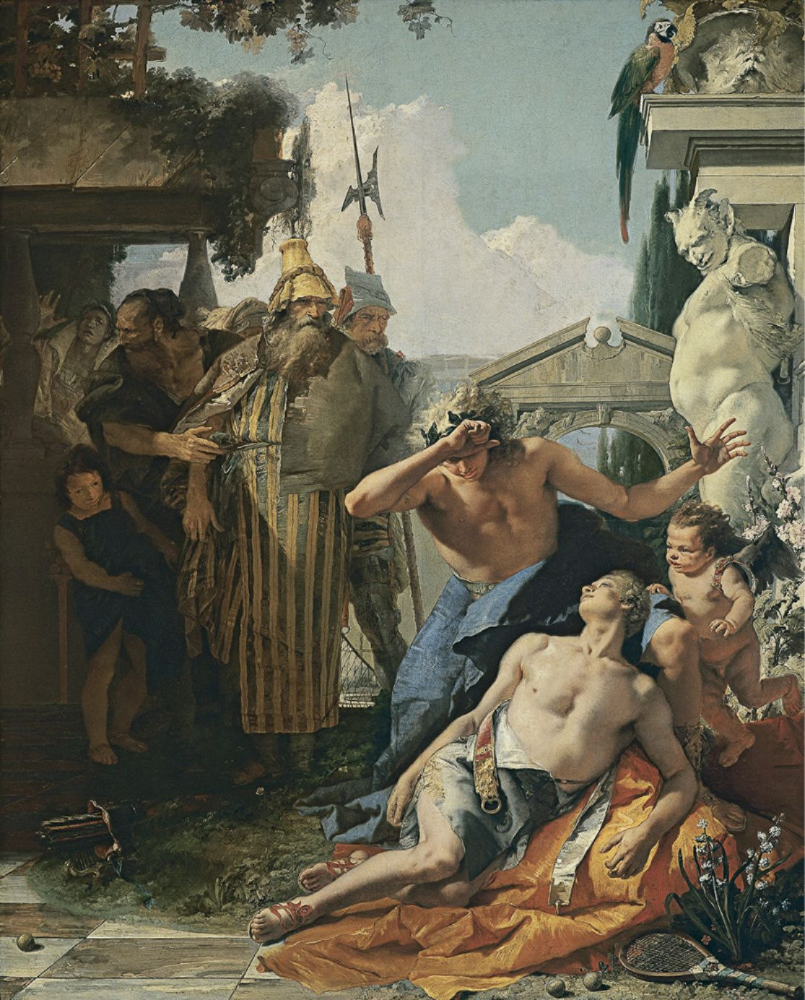
Hình 11: Giambattista Tiepolo — 'Cái chết của Hyacinth' (1752) — Vợt và bóng quần vợt cổ đại xuất hiện như những chứng nhân của định mệnh và vẻ đẹp vĩnh cửu.
it is the basis of a life-altering insult. That its essential tools of play—tennis balls—represent cannon fodder and its fundamental device, the racquet, assumes the role of weapon only adds to its significance. The audience for this Shakespearian tragedy was already familiar with King Henry from Henry IV Parts I and II. Only a prince in the earlier plays, Henry was a bit of a lightweight, more interested in fun and games than in the affairs of state. At the start of Henry V, the Dauphin of France—the son of King Charles VI and therefore the heir apparent—adheres to the tradition whereby one country’s royalty makes a gift to that of another country by sending England’s new king a chest full of tennis balls. It is a swipe at his being too much of a pleasure-seeker in the past. In effect, the gift is scornful and infuriates Henry.
Chương 15: Nick Ohly & Lời Kết: Phép Màu Bất Tử Của Quần Vợt Chapter 25 & Epilogue: Nick Ohly & The Magic of It All
Giống như John Newcombe, bạn tôi Nick Ohly cũng cười bằng ánh mắt. Như con gái Charlotte của tôi đã nói khi nó nhìn thấy anh ấy ở sân bay khi tất cả chúng tôi lên đường đi Senegal vào tháng 3 năm 2007, anh ấy có “vẻ ngoài đẹp trai như một diễn viên điện ảnh”. Nụ cười đến từ sâu bên trong và màu xanh da trời của đôi mắt đó có sức hút từ tính.
Rarely has a tennis ball been endowed with such power as in Shakespeare’s Henry V.
Charlotte đã biết Nick từ khi cô ấy còn là một cô bé, nhưng vào năm 2007, cô ấy đã không gặp anh ấy trong vài năm, và bây giờ khi cô ấy đã hai mươi ba tuổi, cô ấy dễ bị ảnh hưởng bởi vẻ đẹp trai của anh ấy hơn so với khi lớn lên. Vẻ ngoài điển trai của anh ấy rất cổ điển: tự nhiên, không hề phù phiếm. Charlotte không đề cập đến kiểu ngôi sao điện ảnh tự ái hiện nay mà nói nhiều hơn đến kiểu William Holden hoặc Gary Cooper. Gần đây tôi đã hỏi cô ấy rằng cô ấy sẽ dùng tính từ nào để mô tả về anh ấy, và cô ấy trả lời: “Người yêu nước lém lỉnh”. Với khuôn mặt cân đối, thô kệch, Nick trông giống như sự pha trộn giữa một người nông dân New England và một chiến binh Hy Lạp được tạc bằng đá cẩm thạch. Nhưng mặc dù anh ấy chơi khúc côn cầu, bóng vợt và bóng đá, tất cả đều có kỹ năng tuyệt vời, nhưng anh ấy lại hiền lành đến khó tả, không có một chút hung hãn nào trong cơ thể. Tôi thường xuyên chơi quần vợt và bóng quần với anh ấy, chúng tôi cùng trượt tuyết với các con; anh ấy duyên dáng mà không tự phụ. Anh ấy phối hợp nhịp nhàng đến mức có thể trượt băng về phía sau, nhanh chóng, đồng thời tránh được các chướng ngại vật ở rễ cây hoa súng đông lạnh kém hoàn hảo và các lớp băng khác trong ao của chúng tôi.
The Dauphin has sent those tennis balls, in the hands of his ambassadors, because Henry, now that he has become the king of England, considers himself entitled to be king of France as well. The ambassadors are there to dissuade Henry from his grandiose dreams. The delegation also challenges Henry for having already taken “certain dukedoms” after claiming that they
Nói một cách đơn giản, anh ấy là một trong những người tốt bụng nhất, chu đáo nhất, chân thật nhất mà tôi từng gặp. Có một lần, anh ấy đến muộn vài phút trong trận đấu quần vợt trưa thứ Hai của chúng tôi và nói rằng điều này là do anh ấy đã bị cản trở việc hiến máu tại Hội Chữ thập đỏ, tôi không ngạc nhiên khi biết rằng anh ấy đã làm điều này thường xuyên như hệ thống cho phép. Không phải anh ấy tự nguyện cung cấp thông tin; Tôi lấy nó ra khỏi anh ta chỉ bằng cách đặt câu hỏi. Bất kỳ hình thức tự đề cao bản thân nào cũng sẽ là điều đáng nguyền rủa đối với anh ta.
are part of his rightful heritage. Imparting the message to Henry that he is acting in an unbecoming fashion, the “tun of treasure” serves to mock his
Nick và vợ anh, Sara, một người đẹp nổi bật với đôi mắt to và nụ cười rộng lượng, là cha mẹ tận tụy của hai cậu con trai, Derek và Jack, và họ là niềm mơ ước của một gia đình. Bốn người họ có được sự may mắn—thân thể khỏe mạnh, hoàn cảnh dễ dàng, trí thông minh tuyệt vời—nhưng họ không bao giờ phô trương những gì mình có. Và Nick hoàn toàn không mù quáng trước thực tế của vấn đề khi chúng xảy ra. Anh ấy vô cùng quan tâm đến chứng đau nửa đầu của Sara và không ngừng điều tra nguyên nhân cũng như giải pháp cho căn bệnh bí ẩn đó; Tôi cảm thấy rằng anh ấy sẽ làm bất cứ điều gì để người vợ thân yêu của mình chấm dứt đau khổ. Tôi biết những người khác dường như tận hưởng cuộc sống ít xung đột như cách Nick đã làm, nhưng một phần trong cách họ làm điều đó là không nhìn thẳng vào nghịch cảnh; Nick thì khác và rất thực tế về những khó khăn (dù sao thì đối với những người khác; đối với chính anh thì ít hơn), mặc dù anh là một người lạc quan lâu năm.
foolishness. It is a significant quantity of tennis balls, the size of the gift a warning to the English king that he is thinking too big. The stage directions do not specify how many balls or in what vessel they are carried, but whatever the production details, the message is the same. Henry’s response is widely considered one of the most brilliant speeches in all of Shakespeare’s plays. He uses the snidely intended gift as the starting point for an extended metaphor in which he and his minions will treat those tennis balls like “gun-stones” with which to defeat the Dauphin. Henry tells the ambassadors,
Chúng tôi đã đề nghị hỗ trợ lẫn nhau ở mức độ mà đối với tôi đó là bản chất của tình bạn thực sự. Chúng tôi ở đó vì nhau, an ủi khi bố mẹ ngã bệnh, Nick đến dự đám tang của mẹ tôi và tôi đến dự đám tang của bố anh ấy. Vào năm 1989, khi tôi bị bệnh nặng do phản ứng dị ứng với thuốc Bactrim—tôi được thông báo rằng nếu tôi uống nó thêm một ngày nữa thì tôi sẽ chết—và bị cách ly bắt buộc tại Bệnh viện Yale New Haven, tôi nói rằng chỉ có hai người bạn có thể đến thăm, và Nick là một trong số họ; tất nhiên anh ấy mỉm cười và phấn chấn, và tôi có thể thoải mái nói chuyện với anh ấy về những chuyện đang xảy ra với tôi, điều hiếm thấy ở môi trường mà tôi đến, một nơi mà mọi người không được phép thừa nhận khó khăn.
We are glad the Dauphin is so pleasant with us; His present and your pains we thank you for: When we have matched our rackets to
Kể từ khi gặp nhau, chúng tôi chơi bóng quần hoặc quần vợt hai lần một tuần, đôi khi nhiều hơn, trừ khi một trong hai chúng tôi đi du lịch. Từ lúc gặp nhau trên đường vào phòng thay đồ cho đến khi tạm biệt ở bãi đậu xe, chúng tôi đi từ chủ đề này sang chủ đề khác, sôi nổi kể lại cuộc sống của nhau, kể lại những chuyến đi và nói về những gì chúng tôi đang đọc, đôi khi đào sâu vào quá khứ của chúng tôi, như khi Nick nhớ lại những chi tiết tuyệt vời về mùa hè của anh ấy trên Samothrace. Nhưng chúng tôi chưa bao giờ trò chuyện khi thực sự chơi thể thao, ngoại trừ việc mỗi người sẽ hết lời khen ngợi người kia vì đã đánh trúng đích. Tôi ngạc nhiên khi Nick tỏ ra thuận cả hai tay bằng cách bất ngờ đặt vợt bóng quần vào tay trái để thực hiện một cú đánh thẳng xuống bức tường bên trái của sân, và anh ấy tỏ ra rất vui mừng trong một dịp hiếm hoi trong môn quần vợt khi tôi có thể đánh bại anh ấy bằng cách đánh một cú giao bóng ngay bên trong vạch và ngoài tầm với của anh ấy. (Tôi không ngại nếu có thể thực hiện những cú giao bóng như vậy ngày hôm nay; cơ thể bảy mươi bảy tuổi này không còn giống như nửa đời trước nữa.)
these balls, We will, in France, by God’s grace, play a set Shall strike his father’s crown into the hazard. Tell him he hath made a match with such a wrangler That all the courts of France will be disturb’d With chaces.
Nick và tôi không chỉ nói chuyện trước và sau các môn thể thao dùng vợt. Nhưng khi con cái chúng tôi còn nhỏ, cả hai chúng tôi đều có cuộc sống đầy đủ và vội vã nên chúng tôi phải tận dụng mọi cơ hội để trao đổi ý kiến. Giữa chúng tôi có một luồng điện nhất định. Đặc biệt là trong những năm 1980 và 90, tôi đã phải chịu đựng những cơn trầm cảm khủng khiếp—rất đau đớn khi phải thảo luận—và Nick là người bạn duy nhất mà tôi có thể cùng giải quyết vấn đề này. Anh ấy không trải qua căn bệnh tương tự, ít nhất là không ở dạng tương tự, nhưng anh ấy rất đồng cảm. Trong cuộc sống hàng ngày, tôi đã che giấu thành công bóng tối đau đớn; sự xa xỉ khi có được một người bạn luôn nhiệt tình và tốt bụng quả là có ý nghĩa lạ thường. Với những quan sát sâu sắc và những lời khuyên hữu ích, mục tiêu duy nhất của anh ấy làm cho cuộc sống của tôi tốt hơn, không bao giờ cạnh tranh theo cách mà hầu hết mọi người làm bằng cách lao vào câu chuyện của riêng họ.
Henry wants the ambassadors to inform the Dauphin that he will indeed assume the French throne. Moreover, the gift of those tennis balls will turn against the Dauphin:
Nick Ohly, tháng 3 năm 2007.
And tell
về sự bất đồng duy nhất—lập luận sẽ là một từ quá mạnh—Nick và tôi đã từng xảy ra khi tôi nói với anh ấy rằng tôi muốn xây một sân quần vợt ở Senegal ở một ngôi làng nông thôn nơi chúng tôi hỗ trợ một trung tâm y tế và đang xây dựng một trường mẫu giáo. Anh ấy không thể hiểu tại sao chúng tôi lại tiêu tiền theo cách đó khi có rất nhiều ưu tiên cho người dân địa phương, nơi người dân đang sống trong điều kiện nghèo đói và không có điện cũng như hệ thống ống nước. Tôi nói với anh ấy rằng tôi không thể không muốn chúng có được những niềm vui giống như tôi đã có khi lớn lên, khi tôi đi bộ đến công viên địa phương để chơi quần vợt, và rằng nếu không có ai xây dựng những sân công cộng đó,
the pleasant prince this mock of his Hath turn’d his balls to gun-stones; and his soul Shall stand sore charged for the wasteful vengeance That shall fly with them: for many a thousand widows Shall this his mock mock out of their dear husbands; Mock mothers from their sons, mock castles down; And some are yet ungotten and unborn That shall have cause to curse the Dauphin’s scorn. [. . .]
Tôi sẽ bỏ lỡ điều mà tôi coi là một trong những thú vui thiết yếu của cuộc đời mình. Tôi cũng gợi ý với anh ấy rằng quần vợt có thể là phương tiện để một người sinh ra trong hoàn cảnh nghèo khó ở làng quê có thể thay đổi cuộc sống của mình bằng cách đạt được mức độ xuất sắc và trở thành con đường dẫn đến thành công trong thế giới rộng lớn hơn. Nick nói rằng cơ hội chơi quần vợt không quan trọng bằng nhu cầu tồn tại; Tôi đồng ý với điều đó nhưng vẫn khẳng định rằng tất cả chúng ta đều có quyền có những khía cạnh tồn tại khác nhau ngoài những mệnh lệnh.
His jest will savour but of shallow wit, When thousands weep more than did laugh at it. Convey them with safe conduct. Fare you well.
Tôi đã kiềm chế bản thân bằng cách không nhắc Nick rằng anh ấy đã lớn lên trong một triều đình tại ngôi nhà nông thôn của gia đình anh ấy ở Vermont và đã quá quen với những thứ xa xỉ đến mức anh ấy không nhận ra sự hiếm có của chúng. Dù sao đi nữa, chúng tôi đã bỏ qua vấn đề, nhưng tôi ước gì anh ấy có thể nhìn thấy sân đấu đó ở Senegal bây giờ, theo cách nó cũng được sử dụng cho bóng rổ và giao bóng mọi người ở mọi lứa tuổi từ các làng khác, mang lại niềm vui khó tả cho những cá nhân có quá ít. Sự hiện diện của sân đấu đã khiến chúng tôi phải tạo ra một sân bóng đá. Các cuộc họp khu vực không chỉ gắn kết mọi người lại với nhau mà còn tạo cơ hội cho bác sĩ địa phương thảo luận các vấn đề như kiểm soát sinh sản với đám đông mà nếu không sẽ không có mặt ở cùng một nơi vào cùng một thời điểm. Do đó, việc phổ biến những lời khuyên quan trọng là sản phẩm phụ của sự hiện diện của sân tennis đó.
Henry is confident that not only will the Dauphin see France vanquished by England, but it will also pay a hefty price for using tennis balls as a symbol of his youthful foolishness. In the rest of the play, Henry and his troops try to validate his claim that France should be part of England. Films of Henry V have related its story to the events of their epoch. Laurence Olivier, who directed and starred in the 1944 version, presents Henry as the embodiment of English patriotism. Kenneth Branagh, directing and starring in the 1989 movie, portrays the acts of war more as an example of man’s inhumanity to man. Regardless, the balls are a vital prop. The object that is central to the sport of tennis is presented with a significance only Shakespeare could have conceived for it. The reason tennis itself is such a natural source of transmutation in theater and film as in ballet and music is because of the many analogies it and its tools establish. The next time you look at a basket of tennis balls to be used for lessons or practice sessions, imagine their symbolic role as a form of mockery in the pivotal opening scene in one of Shakespeare’s most riveting histories. Their use is the purview of royalty changing history.
Trong chuyến đi đến Senegal, Nick, Charlotte và tôi cùng những người khác là thành viên của Le Kinkeliba—tổ chức thành lập các trung tâm y tế nông thôn mà chúng tôi đã hỗ trợ—đang ở trong một bệnh viện nhỏ ở làng Wassadou. Một ngày nọ, có thời gian rảnh và Nick hỏi liệu họ có thể sử dụng một chiếc xe đạp không. Họ đã làm được—một chiếc xe đạp một bánh với một hộp lớn gắn ở phía sau để nó hoạt động giống như một chiếc xe cút kít, với người đi xe đạp có thể vận chuyển số lượng lớn rau, củi hoặc bất cứ thứ gì cần di chuyển giữa các địa điểm. Nick được mời sử dụng chiếc xe đạp—hộp trống—và anh ấy phóng đi, đi qua cây cầu bắc qua sông Gambia tại một địa điểm có khỉ đầu chó sinh sống.
nick
Hai Nick với Madame Sidibé, thuộc Trung tâm Y tế Wassadou, tháng 3
ohly
2007.
ike john Newcombe, my friend Nick Ohly smiled with his eyes. As my daughter Charlotte said when she saw him at the airport when we were all leaving for Senegal in March 2007, he had “movie-actor good looks.” The smile, which came from deep within, and the sky blue of those eyes, were magnetic. Charlotte had known Nick since she was a very little girl, but in 2007 she had not seen him for several years, and now that she was twenty-three, she was more susceptible to his form of handsomeness than she had been when growing up. His were very old-fashioned good looks: natural, absent any vanity. Charlotte was referring not to the current, narcissistic sort of movie stars, but more to the William Holden or Gary Cooper type. I recently asked her what adjective she would use to describe him, and she replied, “Craggy- patrician.” With his well-proportioned, rugged face, Nick looked like a mix of a New England farmer and a Greek warrior chiseled in marble. But although he played hockey, lacrosse, and soccer, all with great skill, he was ineffably gentle, without an aggressive bone in his body. I regularly played
Tôi không biết Nick đã đi bao xa trong cái nóng oi bức, nhưng ở làng Niminecke, anh ấy gặp một người quá giang với hy vọng tìm được thang máy đến Wassadou. Nick bảo người quá giang, một cậu bé khoảng mười sáu tuổi đội chiếc mũ đan len dường như không hợp lý trong một ngày nắng nóng như vậy, hãy vào thùng đựng rau. Cậu bé phải nặng ít nhất 130 pound, nhưng điều này không ngăn cản Nick đạp xe trở lại một cách dễ dàng.
tennis and squash with him, and we skied together with our children; he was graceful without conceit. He was so coordinated that he could ice-skate backwards, fast, while avoiding the obstacles in the less-than-perfect frozen lily pad roots and other ice of our pond. He was, quite simply, one of the kindest, most thoughtful, most genuine people I have ever met. When on one occasion he was a few minutes late for our Monday midday tennis game and said this was because he had been held up giving blood at the Red Cross, I was not surprised to learn that he did this as often as the system allowed. Not that he volunteered the information; I got it out of him only with questioning. Any form of self-aggrandizement would have been anathema to him. Nick and his wife, Sara, a striking beauty with wide-set eyes and a generous smile, were the devoted parents of two sons, Derek and Jack, and they were a dream of a family.
Khi Nick rẽ vào đường lái xe vào Wassadou, cậu bé đang cười toe toét và ngả người ra sau như một hoàng tử trên chiếc ghế sedan. Nhưng anh ta không có dấu hiệu sẽ thoát ra. Nick, người đã có những đứa con trai tuổi teen của mình, chỉ ra một cách lịch sự nhưng cương quyết rằng đã đến lúc cậu bé phải từ bỏ vị trí của mình trong hộp rau. Tôi chắc chắn rằng một phần trải nghiệm của cậu bé là cảm giác được chở bởi một người có lòng tốt đặc biệt và việc người không nói được ngôn ngữ địa phương cũng không có gì khác biệt.
The four of them enjoyed good fortune— healthy bodies, easy circumstances, great intelligence—but they never flaunted what they had. And Nick was by no means blind to the reality of problems when they occurred. He was deeply concerned about Sara’s migraines and was forever investigating the causes and solutions for that mysterious malady; I felt that he would have done anything to enable his beloved wife to stop suffering. I know other people who seem to enjoy life with little strife in the way that Nick did, but part of the way they do it is by not looking adversity in the face; Nick was different and was very real about difficulties (for others, anyway; less so for himself), although he was a perennial optimist. We offered each other a level of support that for me is the essence of true friendship. We were there for each other, consoling as our parents became ill, Nick attending my mother’s funeral and me at his father’s. In 1989, when I was critically ill from an allergic reaction to the medication Bactrim—I was told that if I had ingested it for one more day I would have died—and in enforced isolation at Yale New Haven Hospital, I said that only two friends
Nick Ohly tại một trường học ở Sénégal.
could visit, and Nick was one of them; he was of course smiling and uplifting, and I could talk to him freely about was going on with me, which is rare in the milieu I come from, one in which people are not supposed to acknowledge difficulties. Ever since we met, we would play squash or tennis twice a week, sometimes more, unless one of us was traveling. From the moment we saw each other on the way into the locker room until we said goodbye in the parking lot, we went from subject to subject, animatedly catching up on one another’s lives, recounting travels and talking about what we were reading, sometimes delving into our pasts, as when Nick recalled marvelous details about his summer on Samothrace. But we never chatted when we were actually playing the sport, except that each would praise the other copiously for a shot well hit. I marveled when Nick showed himself to be ambidextrous by suddenly putting his squash racquet into his left hand to get a shot coming straight down the left wall of the court, and he was visibly delighted on the rare occasion at tennis when I would ace him by hitting a serve just inside the line and out of his reach. (I would not mind being able to hit such serves today; this seventy-seven-year-old body is just not the same as it was half a lifetime ago.) It was not only before and after racquet sports that Nick and I talked. But we were both leading full and hurried lives when our children were little, so we had to avail ourselves of every opportunity to exchange ideas. There was a certain electricity between us. Particularly during the 1980s and ’90s, I suffered from horrendous bouts of depression—painful to discuss—and Nick was the one friend with whom I could address this. He did not experience the same ailment, at least not in the same form, but he was empathic. In my everyday life, I successfully masked the agonizing darkness; the luxury of having a friend who was so responsive and kind was of incredible meaning. With his trenchant observations and good advice, his only goal was to make
vào ngày 12 tháng 11 năm 2007, khoảng chín tháng sau khi chúng tôi trở về từ Senegal, Nick và tôi gặp nhau trong một trận đấu quần vợt thường lệ vào giữa trưa và thứ Hai tại Câu lạc bộ New Haven Lawn.
my life better,
Lịch trình của chúng tôi phụ thuộc vào giờ làm việc của anh ấy, và cả hai chúng tôi đều đến bãi đậu xe vào đúng 12:40. Chúng tôi đã có một trong những cuộc trò chuyện sôi nổi khi bước vào và thay bộ đồ trắng cần thiết và tiến tới sân đấu. Tôi không thể nhớ những gì chúng tôi đã nói khi chuẩn bị sẵn sàng, điều mà cả hai chúng tôi đã làm rất nhanh để lãng phí ít thời gian chơi quần vợt quý giá nhất có thể, nhưng đó có thể là bất cứ điều gì từ chuyên mục mới nhất của Maureen Dowd—người mà cả hai chúng tôi đều thích—cho đến cập nhật về những gì chúng tôi đã làm cuối tuần qua hoặc tin tức mới nhất về một trong những đứa con của chúng tôi, khi đó ở độ tuổi hai mươi và ba mươi.
never to compete the way most people do by rushing into their own stories.
Chúng tôi đã chơi một set tuyệt vời với những pha giao bóng kéo dài và đạt tỷ số từ sáu đến sáu. Nick không bấm đồng hồ bấm giờ ở văn phòng của mình, nhưng anh ấy không bao giờ muốn đi xa quá lâu trong giờ nghỉ trưa—anh ấy sẽ ăn bơ đậu phộng và bánh sandwich thạch như thường lệ trong khi lái xe về công ty kiến trúc của mình—và tôi hỏi liệu chúng ta nên tạm dừng một ngày hay chơi một trận đấu quyết định.
Nick Ohly, March 2007.
"Ồ, hãy tiếp tục chơi. Hôm nay là một ngày đẹp trời và trò chơi cũng rất thú vị."
about the only disagreement—argument would be too strong a word—Nick and I ever had occurred when I told him I
Quần vợt của chúng tôi rất đồng đều và chúng tôi đã đạt đến thời điểm Nick dẫn trước bảy đến sáu trong trận hòa. Tôi đi ra phía sau sân nhặt một quả bóng đã lăn vào hàng rào. Khi quay lại, tôi thấy Nick đang nằm trước lưới, bên phía sân của anh ấy, ngay gần ghế dài và thùng nước mát. Tôi gọi “Nick!” nghĩ rằng anh ấy chắc chắn đã bị ngã và có thể bị bong gân mắt cá chân. Anh ấy không trả lời.
wanted to construct a tennis court in Senegal in the rural village where we supported a medical center and were building a kindergarten. He could not understand why we would spend money in that way when there were so many priorities for the local population, where people were living in conditions of poverty and had neither electricity nor plumbing. I told him I could not help wanting them to have some of the same pleasures I had had growing up, when I would walk to the local park to play tennis, and that if no one had built those public courts,
Tôi chạy đến chỗ anh ấy và đứng cạnh anh ấy thì anh ấy phát ra âm thanh giống như tiếng ngáy lớn. Tôi tưởng anh ấy nói đùa và giả vờ ngủ vì anh ấy đang nằm dưới đất. Sau đó tôi nhận ra rằng anh ấy không còn thở nữa, không một chút xíu nào. Những gì tôi đã nghe thấy là âm thanh của chút không khí cuối cùng rời khỏi phổi anh ấy, tiếng rít của cái chết.
I would have missed out on what I consider to be one of my life’s essential pleasures. I also suggested to him that tennis was potentially the means through which someone born to poverty in the village could transform his or her life by achieving a level of excellence that became a conduit to success in the larger world. Nick said that the chance to play tennis was just not as important as the necessities of existence; I agreed with that but maintained that we all have the right to different aspects of existence beyond the imperatives. I restrained myself by not reminding Nick that he had grown up with a court at his family’s country house in Vermont and was so accustomed to such luxuries that he did not recognize their rarity. Anyway, we let the matter drop, but I wish he could see that court in Senegal now, the way that it is also used for basketball and serves people of all ages from other villages as well, bringing untold pleasure to individuals who have so little. The presence of the court caused us to create a soccer field. The regional meets not only bring people together, but also give the local doctor a chance to discuss issues like birth control with the crowds that would otherwise not be in the same place at the same time. The dissemination of vital advice is thus a by-product of the presence of that tennis court. On the trip to Senegal, Nick and Charlotte and I and others who were part of Le Kinkeliba—the organization that set up the rural medical centers we helped support—were staying in the small hospital in the village of Wassadou. One day there was time to spare, and Nick asked if they had a bicycle he could use. They did—a single-gear bike with a large box attached to the back so that it functioned like a wheelbarrow, with the cyclist able to transport ample quantities of vegetables or firewood or whatever needed to be moved between locations. Nick was invited to use the bike—the box was empty—and he took off, going over a bridge that crosses the Gambia River at a location inhabited by baboons.
Tôi cúi xuống và cố gắng hồi sức nhân tạo, cố gắng hồi sinh Nick bằng phương pháp thở bằng miệng. Tôi tưởng tượng anh ấy đến và nói “Tôi biết chúng ta là bạn tốt, nhưng tôi không biết mọi chuyện lại như thế này” khi tỉnh lại. Tôi ấn vào ngực anh ấy. Anh vẫn trơ lì.
The two Nicks with Madame Sidibé, of the Wassadou Medical Center, March 2007.
Không có ai ở sân quần vợt liền kề. Tôi tuyệt vọng tìm kiếm một người khác để triệu tập bác sĩ. Tôi không muốn để Nick nằm đó một mình, nhưng cuối cùng tôi chạy nhanh nhất có thể cho đến khi tìm được một người bảo trì rất tử tế và nhờ anh ta gọi trợ giúp khẩn cấp. Trong vòng khoảng năm phút tôi nghe thấy tiếng còi báo động. Một nhóm đàn ông—tôi không thể nói cho bạn biết họ là lính cứu hỏa hay bác sĩ hay chính xác họ đến từ đâu—đã đến. Một người bảo tôi đứng cách một khoảng và trong khi họ thử cái mà tôi gọi là tiếng vỗ tay khẩn cấp. Sau đó, với vẻ mặt tuyệt vọng, một người đàn ông nói với tôi: “Ngừng tim gây tử vong”.
I have no idea how far Nick went in the blistering heat, but in the village of Niminecke, he encountered a hitchhiker hoping to find a lift to Wassadou. Nick told the hitchhiker, a boy of about sixteen with a wool knit hat that seemed implausible on such a hot day, to get into the vegetable box. The boy must have weighed at least 130 pounds, but this did not prevent Nick from cycling back with apparent ease. When Nick turned into the driveway of Wassadou, the boy was grinning from ear to ear
Tôi gần như ngay lập tức tìm thấy điện thoại của mình và gọi cho Sara. May mắn thay, cô ấy đã ở nhà và trả lời. "Chào Sara, Nick Weber đây. Nick bị ngừng tim. Chúng tôi đang ở Sân đấu số 4 tại Câu lạc bộ Lawn, sân đấu gần bãi đậu xe nhất. Dịch vụ cấp cứu đang ở đây." Sara nói cô ấy sẽ đến đó ngay.
and leaning back like a prince in a sedan chair. But he showed no sign of getting out. Nick, who had had his own teenage sons, politely but firmly indicated that it was time for the boy to give up his position in the
Tôi sẽ không bao giờ quên vẻ mặt của Sara khi cô ấy lao vào sân quần vợt. Một trong những bác sĩ nói với cô rằng anh rất tiếc vì chồng cô đã chết. Tuy nhiên, chúng tôi đồng ý rằng chúng tôi phải đưa anh ấy đến bệnh viện ngay lập tức bằng xe cấp cứu. Sara muốn ở phía sau với anh ấy, và tôi đi theo họ trong xe của mình. Tôi nhớ rằng tôi đã gọi cho Kathy—vợ tôi—và nói với cô ấy, "Xin chào, Nick Ohly đã chết trên sân tennis. Sara đang ở cùng anh ấy trên xe cấp cứu và họ đang trên đường đến Yale New Haven." Hôm đó là sinh nhật của Kathy, và tôi xin lỗi vì đã báo cho cô ấy những tin tức tồi tệ như vậy trong suốt những ngày đó.
vegetable box. I am sure that part of the experience for the boy was the feeling that he was being chauffeured by someone of exceptional kindness and whose inability to speak the local language made no difference.
Sara và tôi đã cùng nhau trải qua thời gian còn lại của buổi chiều trong “phòng tang chế” với thi thể của Nick bên cạnh, chỉ ngăn cách bằng một tấm màn trắng loại họ treo quanh giường bệnh. Nick đang nằm ngửa, vẫn mặc bộ quần áo trắng (tôi cũng vậy). Sara thật tuyệt vời. Cô ấy kể với tôi rằng trong xe cấp cứu, cô ấy nghĩ về việc mỗi khi gặp khủng hoảng Nick sẽ là người lạc quan, nói rằng mọi việc có thể diễn ra theo chiều hướng tích cực, trong khi cô ấy luôn băn khoăn và lo sợ điều tồi tệ hơn. "Lần này, tôi nghĩ, 'Tôi sẽ hướng dẫn Nick. Tôi sẽ là người lạc quan. Có lẽ họ có thể làm gì đó ở bệnh viện.'"
Nick Ohly at a
Chúng tôi đã gọi cho Derek và Jack và sau đó là hai anh trai của Nick. Tôi gọi đến văn phòng của Nick và nói chuyện với Kevin Roche, kiến trúc sư nổi tiếng mà Nick làm việc cùng, người đã nhanh chóng đề nghị sắp xếp xe để đón Derek ở Boston và Jack ở New York. Sara và tôi đã nói về việc Nick muốn trở thành người hiến tạng như thế nào và chúng tôi đã đề cập điều này với một trong những bác sĩ mà cả hai chúng tôi đều biết. Ông cho biết Nick đã quá già để mắt, thận hoặc bất kỳ cơ quan nào khác có thể được coi là có thể cấy ghép được.
Senegalese school.
Phần lớn thời gian còn lại của ngày hôm đó thật mờ mịt. Nhưng tôi nhớ đã gọi cho David Melchinger, người đã trở thành bác sĩ của tôi vì Nick đã giới thiệu anh ấy cho tôi khi tôi đang tìm bác sĩ đa khoa vài năm trước. Trớ trêu thay, sáng hôm đó tôi đã đến gặp anh ấy để kiểm tra sức khỏe và đã đo điện tâm đồ. Bác sĩ Melchinger nói với tôi rằng ông đã nhận được tin tức về cái chết của Nick từ các đồng nghiệp ở bệnh viện.
on november 12, 2007, about nine months after we returned from Senegal, Nick and I met for one of our usual midday-Monday tennis matches at the New Haven Lawn Club. Our schedule depended on his office hours, and we both arrived at the parking lot at precisely 12:40. We had one of our animated conversations while walking in and changing into the requisite whites and heading to the court. I cannot remember what we talked about when getting ready, which we both did very quickly so as to waste as little of our precious tennis time as
Sau đó, anh ấy nói, "Cách Nick chết, nếu anh ấy nằm trên bàn mổ với ba mươi bác sĩ xung quanh, họ sẽ không thể cứu được anh ấy." Bác sĩ Melchinger giải thích rằng với hình thức ngừng tim đó, bệnh nhân sẽ chết ngay lập tức, không có cơ hội sống lại. Anh ấy cũng nói với tôi—và tôi ước gì mình không nhớ điều này—rằng Nick biết anh ấy có một tình trạng sức khỏe nào đó “và có thể đã làm gì đó để giải quyết nó.” Như tôi đã nói, tôi ước gì đó không phải là một phần ký ức của tôi.
possible, but it could have been anything from the latest column by Maureen Dowd—whose writing we both liked—to an update on what we had done over the weekend or the latest about one of our kids, then in their twenties and thirties. We played a terrific set with long rallies and reached a score of six to six. Nick did not punch a time clock at his office, but he never wanted to stay away for too long during his lunch break—he would eat his usual peanut butter and jelly sandwich while driving back to his architectural firm—and I asked whether we should call it a day or play a tiebreaker. “Oh, let’s keep on playing. It’s such a beautiful day and the game is so much fun.” Our tennis was very evenly matched, and we reached a moment when Nick was leading seven to six in the tiebreaker. I went to the back of the court to pick up a ball that had rolled against the fence. When I turned back, I saw that Nick was lying down in front of the
vào cuối buổi chiều hôm đó, có rất nhiều việc phải làm với ô tô. Tôi chở Sara đến chỗ cô ấy ở bãi đậu xe của Câu lạc bộ Lawn và theo cô ấy về nhà. Cô ấy đưa cho tôi chùm chìa khóa xe dự phòng của Nick và tôi lái xe về nhà, cách đó nửa giờ, rồi Kathy chở tôi trở lại Câu lạc bộ Bãi cỏ để tôi có thể lấy xe của Nick từ bãi đậu xe và lái về nhà anh ấy—thật đau đớn khi hình dung anh ấy ngồi sau tay lái lái xe đến sân một cách vui vẻ vào đầu ngày—với Kathy đi theo tôi. Tôi cảm thấy rất kỳ lạ khi giải quyết những vấn đề hậu cần này.
net, on his side of the court, right near the bench and the water cooler. I called out “Nick!” thinking he must have fallen and possibly sprained his ankle. He did not answer. I raced up to him and was standing next to him when he made what sounded like loud snoring sounds. I thought he was joking and pretending to be asleep because he was lying on the ground. Then I realized that he was no longer breathing, not an iota. What I had heard was the sound of the last bit of air leaving his lungs, the death rattle. I bent over and tried artificial resuscitation, trying to reanimate Nick with mouth-to-mouth breathing. I imagined his coming to and saying “I knew we were good friends, but I didn’t know it was like this” while regaining consciousness. I pushed on his chest. He remained inert. There was no one on the adjacent tennis courts. I looked desperately for another human being to summon a doctor. I did not want to leave Nick lying there alone, but finally I ran as fast as I could until I found a very nice maintenance man and asked him to call for emergency help. Within about
Chúng tôi đi vào nhà của Ohlys. Sara bây giờ đã có người nhà và bạn bè đi cùng, và tôi được giới thiệu với mục sư ở nhà thờ gần đó, người sẽ lo tang lễ cho Nick. Sara nói, bằng giọng khàn khàn thường ngày, ấm áp và sôi nổi, "Thưa Mục sư. Đây là một Nick khác, Nick Weber. Anh ấy đã cùng chồng tôi chơi quần vợt khi Nick của tôi qua đời. Họ là những người bạn thân nhất." Bộ trưởng, một người đàn ông da đen có mái tóc xám với nụ cười rạng rỡ, nói: “Thật vinh dự khi được ở bên người bạn tuyệt vời của bạn khi ông ấy qua đời”. Tôi hiếm khi biết ơn lời nói của bất kỳ ai hơn thế.
f i ve minutes I heard sirens. A group of men—I cannot tell you whether they were firemen or medics or where exactly they had come from—arrived. One told me to stand some distance away and while they tried what I would call emergency clappers. Then, with a forlorn look on his face, one of the men said to me, “Fatal cardiac arrest.” I almost immediately found my phone and called Sara. Fortunately, she was home and answered. “Hi, Sara, it’s Nick Weber. Nick has had cardiac arrest. We are on Court 4 at the Lawn Club, the court nearest to the parking lot. The emergency services are here.” Sara said she would be there right away. I will never forget the look on Sara’s face as she came rushing onto the tennis court. One of the medics told her how sorry he was that her husband was dead. Still, we agreed that we must get him to the hospital immediately in an ambulance. Sara wanted to be with him in the back, and I followed them in my car. I remember that I called Kathy—my wife—and said to her, “Hi, Nick Ohly has dropped dead on the tennis court. Sara is with him in the ambulance, and they are on their way to Yale New Haven.” It was Kathy’s birthday, and I apologized for giving her such bad news on that of all days. Sara and I spent the rest of the afternoon together in “the bereavement room” with Nick’s body next to us, separated only by a white curtain of the type they have around hospital beds. Nick was lying there on his back, still wearing his whites (as was I). Sara was amazing. She told me that in the ambulance she thought about how whenever there was a crisis Nick would be the optimistic one, saying things might work out in a positive way, whereas she always fretted and feared the worse. “This time, I thought, ‘I’ll channel Nick. I’ll be the optimist. Maybe they can do something at the hospital.’” We called Derek and Jack and then Nick’s two brothers. I called Nick’s office and spoke with Kevin Roche, the renowned architect for whom Nick worked, who quickly offered to organize cars to pick up Derek in Boston and Jack in New York. Sara and I talked about how Nick wanted to be an organ
Một ngày sau khi Nick qua đời, tôi hỏi một người bạn chung của chúng tôi liệu anh ấy có chơi quần vợt với tôi trên sân công viên công cộng ở thị trấn gần nơi chúng tôi sống không. Tôi không muốn quay lại Câu lạc bộ Sân cỏ quá nhanh, nhưng tôi cảm thấy rằng nếu tôi không nhanh chóng bắt đầu chơi quần vợt một lần nữa, tôi sẽ không bao giờ ra sân nữa. Trong số những điều khác, Nick chắc chắn sẽ không đồng tình với việc tôi dừng môn thể thao vốn là một phần dễ chịu trong cuộc sống của cả hai chúng tôi.
donor, and we mentioned this to one of the doctors, whom we both knew. He said Nick was too old for his eyes or kidneys or any other organ to be considered viable for a transplant. A lot of the rest of that day is a blur. But I do remember calling David Melchinger, who had become my doctor because Nick had recommended him to me when I was looking for a general practitioner a few years earlier. Ironically, I had gone to him that same morning for a checkup and had had an EKG. Dr. Melchinger told me that he already had the news of Nick’s death from his colleagues at the hospital. Then he said, “The way Nick died, if he had been on an operating table with thirty doctors around him, they would not have been able to save him.” Dr. Melchinger explained that with that form of cardiac arrest, the patient is instantly dead, with no chance of reviving. He also told me—and I wish I did not remember this—that Nick knew he had a health condition of some sort “and might have done something about it.” As I say, I wish that were not part of my memory.
tôi đã gặp rất nhiều Sara trong tuần tiếp theo. Tại một thời điểm nào đó, cô ấy nói với tôi rằng các cậu bé đã yêu cầu khám nghiệm tử thi và người ta phát hiện ra rằng Nick bị tắc nghẽn mạch vành 90%.
at the end of that afternoon, there was a lot to do with cars. I drove Sara to hers, which was in the Lawn Club parking
Vào thứ bảy, Kathy và tôi ngồi gần phía trước nhà thờ để dự tang lễ. Có một số diễn giả, bao gồm cả những đứa con trai yêu quý của Nick. Bằng nhiều cách khác nhau, hầu hết mọi người đều khơi dậy sức thu hút của anh ấy, mặc dù một diễn giả khiến tôi khó chịu khi nói rằng Nick nổi tiếng là thờ ơ với trang phục anh ấy mặc. Tôi nghĩ không phải vậy—Nick chỉ đơn giản ăn mặc theo phong cách riêng của anh ấy, thường mặc áo sơ mi xanh và quần kaki. Anh ấy luôn trông đẹp trai, ngay cả khi cổ áo sơ mi bị sờn. Ngoài ra, anh còn có một chiếc áo khoác len màu xanh hải quân đặc biệt đẹp mà anh đã mua ở The Hague và mặc vào những ngày đông lạnh giá. Tôi không nhớ bối cảnh của nhận xét ngớ ngẩn và không chính xác đó, chỉ nhớ rằng tôi đã nổi giận. Anh ấy ăn mặc theo đúng phong cách nghệ thuật mà anh ấy sống, theo phong cách trầm lặng và không gây chú ý đến bản thân. Mọi thứ đều cân đối, cẩn thận mà không cầu kì. Và mặc dù anh ấy sẽ không bao giờ biết điều đó, nhưng trên sân quần vợt, anh ấy đã đạt được chiến công hiếm có nhất: chết một cách duyên dáng, ngã xuống như một chiến binh vàng.
lot, and followed her home. She gave me Nick’s spare set of car keys and I drove to my house, half an hour away, and then Kathy drove me back to the Lawn Club so I could get Nick’s car from the parking lot and drive it to his house—it was painful to picture him at the wheel driving to the court cheerfully earlier in the day—with Kathy following me. It felt very strange to deal with these logistical issues. We went into the Ohlys’ house. Sara now had family members and friends with her, and I was introduced to the minister from the nearby church, who would be doing Nick’s funeral. Sara said, in her usual breathy voice, warm and animated, “Reverend. This is another Nick, Nick Weber. He was with my husband playing tennis when my Nick died. They were best
Đưa ra bài điếu văn ngắn gọn của mình, tôi kể với mọi người về việc Nick và tôi cùng nhau đến thăm Dessau Bauhaus và cách ăn uống của anh ấy—thịt lợn sống xắt nhỏ—và về cậu bé trong hộp rau ở Senegal. Tôi cũng kể cho họ nghe những lời cuối cùng của Nick, anh ấy đã nói với nụ cười trên môi:
friends.” The minister, a gray-haired Black man with a radiant smile, said, “What an honor, to be with your wonderful friend when he died.” I have rarely been more grateful for anyone’s words. The day after Nick died, I asked a mutual friend of ours if he would play tennis with me on a public park court in a town near where we lived. I did not want to return to the Lawn Club so quickly, but I felt that if I did not quickly start playing tennis once more, I would never again go onto a court. Among other things, Nick would have disapproved of my stopping the sport that was such an agreeable part of both of our lives.
Ồ, chơi tiếp thôi. Đó là một ngày đẹp trời và trò chơi rất thú vị.
i saw a lot of Sara during the following week. At some point she told me the boys had requested an autopsy and it had been discovered that Nick had 90 percent coronary blockage. On Saturday,
Quần vợt là một kỹ năng ghi nhớ tuyệt vời. Ở tuổi bảy mươi bảy, đã chơi bóng từ năm tám tuổi, tôi có những ký ức nhất định quay trở lại một cách đáng tin cậy khi phản ứng lại các tín hiệu của họ trên sân. Hầu hết đều thể hiện nhiều điều hơn là một câu chuyện đơn giản và là nguồn gốc của những bài học tôi áp dụng trong nhiều tình huống không liên quan đến quần vợt.
Kathy and I were seated near the front of the church for the funeral. There were a number of speakers, including Nick’s beloved sons. In different ways, most everyone invoked his charisma, although one speaker annoyed me by saying that Nick was known to be indifferent to the clothes he wore. I thought this was not the case—Nick simply dressed in his own style, generally wearing a blue shirt and khaki trousers. He always looked handsome, even if a shirt collar was frayed. Besides, he had a particularly nice navy blue wool overcoat that he had bought in The Hague and wore on cold winter days. I do not remember the context of the silly and inaccurate remark, only that I bristled. He dressed with the same artistry with which he lived, in a quiet style that did not call attention to itself. Everything was in proportion, careful without being fussy. And although he would never know it, on the tennis court he had managed to achieve the rarest of feats: to die with grace, falling like a golden warrior. Giving my short eulogy, I told everyone about Nick and me visiting the Dessau Bauhaus together and his eating metts—chopped raw pork—and
Bất cứ khi nào tôi lên 5–3, tôi chắc chắn sẽ nhớ lại khoảnh khắc vào mùa hè năm 1960, khi tôi 12 tuổi. Tôi đang ở Trại Killooleet, một trại hè cấp tiến dành cho cả nam và nữ ở Vermont. Người ta cho rằng có ý định hạ thấp khả năng cạnh tranh—không có đội cắm trại, không có tiền, điều đó có nghĩa là trại viên này có nhiều hơn trại viên khác. Nhưng không có gì ngăn cản tôi muốn trở thành số một trên bảng xếp hạng quần vợt. Tôi ở vị trí thứ ba và tôi biết mình không có cơ hội đánh bại Nico Elmaleh, người ở vị trí thứ hai, nhưng tôi nghĩ mình có thể có khả năng đánh bại Johnny Evarts, người ở vị trí số một. Nếu vậy thì tôi sẽ là vua. (Đó là phiên bản trẻ con của giấc mơ ám ảnh Guillermo Vilas.)
about the boy in the vegetable box in Senegal. I also told them Nick’s last words, which he had said with a smile on his face:
Johnny có tất cả những gì tôi không có: lạnh lùng, thể thao bẩm sinh, theo đạo Tin lành, hàm vuông, tóc vàng, có một chiếc rốn. Anh có một người anh trai đẹp trai làm cố vấn; Tôi cũng sẽ yêu như vậy. Giống như nếu tôi đánh bại anh ấy trong trận quần vợt, tôi sẽ đạt được tất cả những gì tôi ghen tị. Tôi thách anh ấy một trận đấu bậc thang, một set, vào một buổi chiều Chủ nhật, và chúng tôi ra sân đất nện đỏ. Tôi đã chơi tốt một cách bất thường và đang dẫn trước 5–3 khi chuông ăn tối vang lên.
Oh, let’s keep on playing. It’s
Một giờ sau, chúng tôi trở lại sân. Đầy mì ống và pho mát (với vỏ bánh mì vụn bơ), tôi tiếp tục thua bốn ván tiếp theo và bị đánh bại 7–5. Cho đến hôm nay, tôi vẫn sợ phải đếm gà trước khi chúng nở. Những gì xảy ra trên sân quần vợt đã trở thành phép ẩn dụ cho một trong những yếu tố thiết yếu trong bản chất tâm lý của tôi. Không chỉ là tôi trở nên ám ảnh nếu tôi dẫn trước 5–3 trong một hiệp quần vợt và bắt đầu vật lộn với sự nghi ngờ bản thân đến mức cuối cùng tôi nhận thất bại. Tôi cũng cảnh giác nếu tôi cảm thấy sắp thành công trong bất kỳ nỗ lực nào khác. Tôi quyết tâm không có “một khoảnh khắc Johnny Evarts nào nữa” và thúc đẩy bản thân tập trung và cống hiến hết mình. (Tôi cũng tránh mac và pho mát.) Đặc biệt là khi có triển vọng chiến thắng nếu tôi cứ tiếp tục như cũ, tôi tự nhắc nhở bản thân rằng sự tự mãn tương đương với việc tự sát.
such a beautiful day and the game is so much fun.
lưới là nơi không chắc chắn nhất của tôi trên sân. Đứng đó gợi lên ký ức về những trận đấu ở trường dự bị trong những năm tháng khó xử khi sự tự tin và thiếu tự tin xen kẽ nhau. Nhưng từ khi còn ở tuổi thiếu niên, tôi đã học cách chấp nhận thực tế rằng cú bắt lưới (Volley) là phần yếu nhất trong trò chơi của tôi và không tự trách móc mình vì sự kém cỏi của mình. Nếu tôi không thành thạo cú đấm từ 12 đến 18 inch trước mặt thì điều đó sẽ đảm bảo thành công, thì cũng vậy thôi. Tôi không thể khẳng định mình đã hoàn toàn vượt qua cảm giác bối rối và khó chịu khi còn là một thiếu niên và cố gắng che giấu, nhưng tôi nhận ra rằng một trò chơi mạng không phù hợp hoặc bất kỳ thiếu sót tương đương nào sẽ không giết chết tôi.
EPILOGUE
Ngoài những hồi ức về cảm giác mình là một tay vợt kém cỏi hơn mức tôi mong muốn, tôi còn có những khoảnh khắc trên sân mang lại những kỷ niệm vui về cảm giác quyền lực của chính mình. Đôi khi tôi đánh một cú thuận tay mạnh bay ngang qua đối thủ, tôi nghĩ về một ngày khi tôi đến thăm Trish Troup, một người bạn ở trại tennis mà gia đình anh ấy có một ngôi nhà ở Hồ Squam, một khu nghỉ dưỡng xinh đẹp ở New Hampshire, nơi có những ngôi nhà lợp ván gỗ được bao quanh bởi những cây thông. Mẹ của Trish đang thảo luận về các trường đại học và nói về Barnard (trường đại học nữ ở Đại học Columbia, nơi tôi theo học) rằng bà đã “được cảnh báo rằng có rất nhiều người Do Thái ở đó”. Tại sao tôi không nói ngay với cô ấy rằng tôi là người Do Thái? Lời nhận xét đó bùng cháy trong tôi khi tôi bị ép phải chơi một vài ván đơn với một người tên là Chuck, người được coi là tuyển thủ hàng đầu tại Squam. Một anh chàng tốt bụng, nhưng khi chơi, tôi trút cơn thịnh nộ lên anh ta, cho rằng anh ta chính là WASP trong mơ của bà Troup. Ngay khi chúng tôi bước vào sân đấu, tôi bắt đầu quá trình tinh thần quen thuộc, theo đó tôi là một người Do Thái chạy trốn khỏi Đức Quốc xã; nếu tôi có lời cầu nguyện sống sót, tôi phải đè bẹp đối thủ của mình. Bà Troup đã quá tự mãn khi đưa ra nhận xét đó; Tôi bắt đầu chơi ngày càng tốt hơn vì tôi phải đánh bại kẻ thù. Tôi không nghi ngờ gì rằng Chuck là tay vợt xuất sắc hơn, nhưng tôi đã thắng dễ dàng bốn set liên tiếp. Một cú thuận tay mạnh mẽ ở góc rộng, và tôi nhớ lại buổi chiều mùa hè đó hơn nửa thế kỷ trước trên hồ Squam. Đôi khi trong cuộc sống, tôi cố gắng thúc đẩy bản thân vượt qua những tình huống khó khăn và chiến thắng bằng cách tưởng tượng rằng Chuck đang ở bên kia lưới.
The Magic of It
Đánh một cú trái tay dọc biên có thể khiến tôi nhớ lại những trận đấu với người bạn Ricky của tôi khi chúng tôi còn là những cậu thiếu niên, chơi đùa ở công viên công cộng. Tất cả những gì chúng tôi thực sự muốn làm là lắng nghe và nhìn những cô gái lớn tuổi hơn cũng chơi ở đó, đặc biệt là cô gái có mái tóc đen xinh đẹp và thân hình quyến rũ, người sẽ nói “Quảng cáo của bạn” theo cách nghe giống như “Bạn thật kỳ quặc”. Tôi biết tên cô ấy là Myra—không có thông tin nào khác—nhưng tôi vẫn có thể nghe thấy giọng nói đó và hình dung ra cách cô ấy đứng ủ rũ khi nhận hàng.
All
Nếu tôi chơi trên đá dăm dưới nắng gắt, tôi sẽ sửa chữa tinh thần cho các sân dọc theo sông Hudson khi tôi còn ở Columbia và định kỳ bị mất một quả bóng do giao thông trên Xa lộ West Side. Cảm giác mãnh liệt của những năm tháng đắm mình trong Shakespeare, Freud và nghệ thuật thời Trung cổ quay trở lại với tôi. Trên sân đất nện đỏ, tôi thường nhớ lại những sân đấu đẹp hơn ở Yale khi tôi đang lấy bằng thạc sĩ về lịch sử nghệ thuật. Bên cạnh sân vận động bóng đá, được gọi là Bowl, những sân ở ngoại ô New Haven khiến quần vợt giống như trò tiêu khiển của các quý ông so với sân bóng nơi các tay vợt bóng đá lao vào nhau trong trang phục cồng kềnh của họ. Đó là khoảng thời gian trong cuộc đời tôi, khi buổi chiều chơi tennis và xem phim buổi tối trở thành một thói quen rất thú vị mà tôi thường tránh phải nhập ngũ trong Chiến tranh Việt Nam. Nỗi nhớ thật buồn vui lẫn lộn—hai năm đó đầy lo lắng— nhưng đó là một trong số ít khoảng thời gian mà ngày của tôi không được lên lịch, và cách mà bụi đất sét có thể lan truyền trên những dòng băng trắng thường khiến tôi quay trở lại.
ennis is a great mnemonic. At age seventy-seven, having played since I was eight, I have certain memories that come back reliably in response to their cues on court. Most have come to represent far more than a simple story and are the source of lessons I apply in many non-tennis situations. Anytime I’m up 5–3, I’m sure to remember a moment from the summer of 1960, when I was twelve years old. I was at Camp Killooleet, a progressive co-ed summer camp in Vermont. There was an alleged intention to downplay competitiveness—no camp teams, no money that might mean one camper had more than other. But nothing kept me from wanting to be number one on the tennis ladder. I was number three, and I knew I had no chance of beating Nico Elmaleh, who was number two, but I thought I might have a crack at beating Johnny Evarts, who was number one. If so, I would be king. (It was a kid’s version of the dream that would haunt Guillermo Vilas.) Johnny was everything I wasn’t: cool, naturally athletic, Protestant, square-jawed, blond, with a button of a nose. He had a handsome older brother who was a counselor; I’d have loved the same. It was as if were I to
Với những hướng dẫn và quy định của mình, luôn nhất quán ngay cả khi mặt sân không có, quần vợt có sức mạnh thu hút rất nhiều người. Trong những dịp hiếm hoi khi tôi được chơi trên sân cỏ, mỗi cú nảy bất thường đều gợi lên những chiếc bánh mì kẹp dưa chuột và những miếng chanh chua được giao bóng sau tiếng chuông thưởng thức bữa trà chiều tại Câu lạc bộ Quần vợt Argideen Lawn, gần tàn tích của Tu viện Timoleague ở West Cork, Ireland. Tất nhiên, có rất nhiều thứ gợi lên rất nhiều kỷ niệm, nhưng quần vợt có một phẩm chất đặc biệt khiến nó trở thành nguồn cảm hứng phong phú.
beat him at tennis, I’d achieve all I envied. I challenged him to a ladder match, a single set, one Sunday afternoon, and we went out onto the red clay court. I was playing unusually well and was up 5–3 when the dinner bell rang. An hour later, we were back on the court. Full of macaroni and cheese (with a crust of buttery breadcrumbs), I proceeded to lose the next four games and was defeated 7–5. To this day, I have a fear of counting my chickens before they’ve hatched. What happened on the tennis court became a metaphor for one of the essentials of my psychological makeup. It’s not just that I become phobic if I’m ahead 5–3 in a set of tennis and start to struggle so much with self-doubt that I end up in defeat. I’m also on guard if I feel at the edge of success in any other endeavor. I become determined not to have “another Johnny Evarts moment” and push myself to concentrate and give my all. (I also avoid mac and cheese.) Especially when there’s a prospect of victory if I just keep going as I have been, I remind myself that complacency is tantamount to suicide.
Sân đất nện ở Ý đỏ hơn những nơi khác, hoặc đối với tôi thì có vẻ như vậy. Có lẽ là do ánh nắng chói chang hay do những cây cam máu mọc gần đó mà dường như chúng chính là màu sắc đậm đà của loại trái cây thơm ngon đó. Bất cứ khi nào tôi chơi trên sân đất nện của Ý—và tôi đã đủ may mắn để làm điều đó tại Hotel des Bains ở Venice và tại một câu lạc bộ được bao quanh bởi những cây thông ở Genoa và ở Siena, không xa Duccios tuyệt vời—tôi lại nhớ về mùa hè năm 1976, khi tôi đang dạy vị hôn thê xinh đẹp của mình cách chơi tại một câu lạc bộ ở ngoại ô Rome. Người dì sắc sảo của cô nói với cô rằng cô trông thật đẹp khi mặc đồ trắng và sau đó nói thêm, “Tôi thường ghét màu trắng: Nó khiến tôi nhớ đến tuyết, sự trinh trắng và những thứ vô dụng khác.” Katharine trong bộ váy tennis thật là 1 merveille.
net is my most uncertain place on the court. Standing there conjures memories of prep school matches in those awkward years when confidence and self-doubt alternated in equal measure. But since adolescence, I’ve learned to accept the reality that volleying is the weakest part of my game and not to berate myself for my ineptitude. If I’ve failed to master the twelve- to eighteen-inch punch in front of me that would assure success, so be it. I can’t claim to be entirely past the embarrassment and discomfort I felt as a teenager and tried to conceal,
Khi tôi chơi ở ngôi làng nông thôn của người Senegal, nơi chúng tôi hỗ trợ một trung tâm y tế và một trường học, tâm trí của tôi quay trở lại trải nghiệm ngược lại với các trò chơi tại câu lạc bộ đồng quê đắt tiền ở ngoại ô Connecticut khi tôi còn là một thiếu niên. Cho dù đó là trong thế giới của những chiếc xe lừa hay những chiếc BMW, thì đó vẫn luôn là một trò chơi giống nhau, nhưng động lực trong một môi trường giàu có và đặc quyền đã gây ra nhiều lo lắng hơn nhiều so với những trò chơi đầy tiếng cười ở một góc xa xôi của châu Phi. Quần vợt có thể là lời nhắc nhở rằng niềm vui đến ở những nơi không ngờ tới.
but I’ve come to see that an inadequate net game, or any equivalent shortcoming, won’t kill me. Beyond the recollections of feeling like a lesser player than I wanted to be, I also have moments on the court that bring happy memories of my own sense of power. Sometimes when I hit a strong forehand that flies by my opponent, I think about a day when I visited Trish Troup, a tennis camp
quần vợt cũng có thể có tác động trực tiếp đến những mối quan hệ quan trọng nhất của chúng ta. Những sự kiện ngắn ngủi trên sân có thể có ý nghĩa lâu dài. Đây là hệ quả của cái mà tôi gọi là “tính nghệ thuật” của họ. Tôi đang nghĩ đến một sự kiện nhỏ nhưng quan trọng vào ngày cuối cùng của tháng 5 năm 2020. Đó là thời điểm mà hầu hết mọi thứ trong tôi đều tan vỡ. Đối với một số người trong chúng ta, điều đó xảy ra định kỳ, bất kể chúng ta đeo khẩu trang gì.
friend whose family had a house at Squam Lake, a beautiful New Hampshire resort where wood-shingled houses are surrounded by pine trees. Trish’s mother was discussing colleges and said of Barnard (the women’s college at Columbia University, where I went) that she had been “warned there are a lot of Jews there.” Why the hell did I not immediately tell her I’m Jewish? The remark was burning inside me when I was coerced into playing a few sets of singles with someone named Chuck, deemed the top player at Squam. A nice guy, but when I played, I took out my rage on him, assuming that he was Mrs. Troup’s dream WASP. The moment we got on the court, I started the familiar mental process whereby I’m a Jew fleeing the Nazis; if I have a prayer of survival, I have to crush my opponent. Mrs. Troup had been so smug when she made the remark; I began to play better and better because I had to vanquish the enemy. I have no doubt that Chuck was the superior player, but I handily won four sets in a row. One powerful forehand hit at a wide angle, and I relive that summer afternoon more than half a century ago on Squam Lake. There are periodically occasions in life when I manage to motivate myself to get through difficult situations and prevail by imagining that Chuck is on the other side of the net. Hitting a down-the-line backhand can make me remember games with my friend Ricky when we were teenagers, playing in the public park. All we really wanted to do was listen to and look at the older girls who also played there, especially the one with beautiful black hair and a glorious figure who would say “Your ad” in a way that sounded like “You’re odd.” I knew her name was Myra—no other facts—but I can still hear that voice and picture the sullen way she stood when receiving. If I play on macadam in the baking sun, I repair mentally to the courts alongside the Hudson River when I was at Columbia and periodically lost a ball to the traffic on the West Side Highway. The intensity of those years of immersing myself in Shakespeare and Freud and medieval art comes back to me. On red clay, I often recall the nicer courts at Yale when I was getting a
Tôi đang chơi quần vợt với con rể của tôi, Robbie Smith, chồng của con gái tôi, Charlotte, và cha của các cháu trai tôi, Wilder và Beau. (Bạn đã gặp Robbie với tư cách là một người ngưỡng mộ Andre Agassi.) Chúng tôi là những kiểu đàn ông khác nhau và cách nhau ba mươi tuổi, nhưng chúng tôi là bạn tốt. Một số người quên đi mọi vấn đề khi chơi quần vợt; họ thật may mắn. Tiếc thay, vào ngày xuân đầy nắng ấy, nỗi lo lắng của tôi lại nổi lên. Việc chạy và va chạm đã thổi bay van an toàn bên trong của tôi.
master’s degree in art history. Next to the football stadium, called the Bowl, those courts on the outskirts of New Haven made tennis feel like a gentleman’s pastime compared to the gridiron on which footballers crashed into one another in their bulky gear. It was a time in my life when afternoon tennis and evening movies made up a very pleasant routine with which I diverted myself while avoiding going into the army during the Vietnam War. The nostalgia is bittersweet—those two years were fraught with anxiety— but it was one of the few periods when my days were not scheduled, and the way that clay dust can spread over white taped lines often brings me back. With its guidelines and regulations, always consistent even when the court surfaces are not, tennis has the power to summon so much. On the rare occasions when I get to play on grass, each irregular bounce conjures the cucumber sandwiches and tart lemon squares served following the ringing of the bell for afternoon tea at Argideen Lawn Tennis Club, near the ruins of Timoleague Abbey in West Cork, Ireland. Of course, lots of things conjure lots of memories, but there’s a special quality to tennis
Đại dịch Covid-19 đang hoành hành; tất cả chúng tôi đã từ bỏ lối sống trước đây của mình. Mọi người đều đầy thắc mắc và nghi ngờ về tác động của căn bệnh này khi đó và trong tương lai. Tình hình càng làm trầm trọng thêm nỗi sợ hãi thường lệ của tôi về cái chết. Và tất cả những lo lắng mà tôi thường kiểm soát được lại nổi lên ngay cả khi tôi chạy về điểm giữa của sân. Tôi đã hỏi tại sao về vô số vấn đề và đau khổ khi không có câu trả lời.
that makes it such a rich inspiration. Clay courts in Italy are redder than in other places, or so it seems to me. Perhaps it’s because of the bright sunlight or the blood oranges that grow nearby, but they seem to be the rich color of that delicious fruit. Whenever I play on Italian clay—and I’ve been lucky enough to do so at the Hotel des Bains in Venice and at a club surrounded by pine trees in Genoa and in Siena not far from the marvelous Duccios—I’m brought back to the summer of 1976, when I was teaching my beautiful fiancée how to play at a club in a suburb of Rome. Her sharp-tongued aunt told her how good she looked in white and then added, “I normally hate white: It reminds me of snow and virginity and other useless things.” Katharine in a tennis dress was une merveille. When I play in the rural Senegalese village where we support a medical center and a school, my mind backtracks to the opposite experience of games
Đôi khi địa ngục nội tâm này xuất hiện trong một trận đấu quần vợt giống như khi nó thiền định. Bạn đang cố gắng tập trung vào trò chơi, nhưng vô số những suy nghĩ không vui cứ tự nhiên xuất hiện.
at the expensive country club in suburban Connecticut when I was a teenager. Whether it’s in a world of donkey carts or of BMWs, it’s always the same game, but the dynamics in a milieu of wealth and privilege have caused far more angst than do games full of laughs in a remote corner of Africa. Tennis can be a reminder that joy comes in unexpected places.
Tôi đã không tỉnh táo khi thực hiện một cú đánh trái tay chéo sân mạnh mẽ rằng tôi đang làm điều gì đặc biệt. Đúng hơn là tôi đã hành động theo bản năng. Có hơn sáu mươi năm lịch sử trong cảnh quay đó. Ở một mức độ nào đó, những cú trái tay trước đó đã xuất hiện, được đánh từ khi tôi còn nhỏ (tôi bắt đầu yêu thích trò chơi này từ năm 8 tuổi). Tôi chưa bao giờ chơi quần vợt giỏi nhưng nó luôn ở đó, một phần trong tôi. Một số phản xạ nhất định xảy ra, cho dù tôi đang ở trên nhựa đường, đất sét, cỏ, cỏ tổng hợp hay đá dăm cao su, ngay cả khi tôi đánh bằng vật liệu công nghệ cao ngày nay thay vì gỗ và ruột cừu thời thơ ấu, và tất cả trải nghiệm đều hiện diện bằng cách nào đó khi tôi đưa bóng vào góc xa nhất bên phía Robbie. Tôi không phải là tay vợt xoáy lên nên nó thấp hơn là giật; nó xóa dải trắng bao quanh đầu lưới không quá vài inch. Sau đó, nó nảy lên gần vị trí mà đường sau của hộp giao bóng gặp đường biên, theo một góc và với tốc độ khiến nó không thể chạm tới. Con rể tôi nhiệt tình hét lên: “Rắc rắc!”
tennis can also have a direct impact on our most important relationships. Brief events on the court can have lasting significance. This is a consequence of what I would call their “artfulness.” I’m thinking of a minor yet major occurrence on the last day of May 2020. It was at a time when most everything inside me was falling apart. For some of us, that happens periodically, whatever masks we wear. I was playing tennis with my son-in-law, Robbie Smith, the husband of my daughter, Charlotte, and the father of my grandsons, Wilder and Beau. (You’ve already encountered Robbie as an admirer of Andre Agassi.) We’re different types of men and with a thirty-year age gap, but we’re good friends. Some people forget all their problems when they play tennis; they’re lucky. Regrettably, on that sunny spring day, my anxieties were surfacing.
Đó là một khoảnh khắc vàng vượt qua mọi thứ khác. Đầu tiên, được chồng của con gái tôi khen ngợi, dù xét đến tất cả sự phức tạp của một mối quan hệ như vậy, thật là dễ chịu. Sự tự nhiên và ấm áp trong tiếng hét của anh ấy cho thấy Robbie là ai: một người có khả năng mang lại hạnh phúc cho người khác (tôi nghĩ đó là một phẩm chất khác thường.) Ở tuổi bảy mươi hai, tôi chưa bao giờ nghe thấy câu cảm thán “Đổ vỡ!” trước đây, nhưng Robbie là người Ireland và sống ở Anh, nơi có cách nói sinh động hơn “Tuyệt vời!” Cảnh quay dường như không liên quan gì đến cá nhân tôi nhưng lại có sức lôi cuốn. Sức thu hút là một sức mạnh có thể tồn tại trong hành vi, đồ vật cũng như trong con người. Nó hiện diện trong các bức bích họa của Giotto, các bức tranh của Mondrian, bộ tám chuỗi Brahms và nhà nguyện của Le Corbusier tại Ronchamp. Nó ở đó trong sự rạn nứt của từ ngữ đáng yêu đó. Mọi thứ trên thế giới đều đúng trở lại.
The running and hitting had blown away my inner safety valve. The covid-19 pandemic was raging; we had all abandoned our former ways of life. Everybody was full of questions and doubts about the impact of the disease then and in the future. The situation exacerbated my usual fears of death. And all sorts of worries that I normally have under control were emerging even as I ran to get back to the midpoint on the court. I was asking why about a plethora of problems and agonizing at the lack of answers. Sometimes this inner hell emerges during a tennis match the way it does during meditation. You’re trying to concentrate on the game, but a myriad of unhappy thoughts come, unbidden, to the surface.
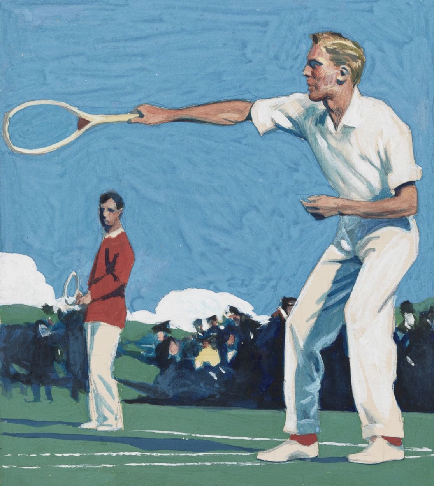
Hình 12: Trận đánh đôi trong hội họa Edward Hopper — Không gian tĩnh lặng, ánh sáng gắt gao và sự cô đơn nội tâm độc đáo kiểu Mỹ trên sân banh nỉ.
I was not conscious as I hit a strong crosscourt backhand that I was doing anything special. Rather, I was acting on instinct. There were more than sixty years of history in that shot. On some level, previous backhands were present, hit ever since I was a little kid (I had started loving the game at age eight). I never played tennis particularly well, but it’s always just been there, part of me. Certain reflexes occur, whether I’m on asphalt, clay, grass, synthetic grass, or rubberized macadam, even if I’m hitting with the high- tech materials of today rather than the wood and sheep gut of my childhood, and all the experiences were somehow present as I laced the ball to the most distant corner on Robbie’s side. I’m not a topspin player, so it was low rather than looping; it cleared the white band bordering the top of the net by no more than a few inches. It then bounced near the spot where the back line of the service box meets the sideline, at an angle and with a speed that made it untouchable. My son-in-law shouted, with enthusiasm, “Cracking!” It was a golden moment that cut through everything else. First, to be complimented by my daughter’s husband, given all the complexities of such a relationship, was agreeable. The spontaneity and warmth of his shout showed Robbie as he is: a person capable of being happy for someone else (an unusual quality, I think.) At age seventy-two, I had never heard the exclamation “Cracking!” before, but Robbie is Irish and lives in England, where it’s a more vivid way of saying “Excellent!” The shot, which seemed to have nothing to do with me personally, had charisma. Charisma is a force that can exist in acts and objects as well as in people. It’s present in Giotto’s frescoes, paintings by Mondrian, the Brahms string octet, and Le Corbusier’s chapel at Ronchamp. It was there in that lovely word cracking. Everything in the world was right again.